Shell
Main Window
Related: File Menu, Edit Menu, Pattern Menu, View Menu, Options Menu, Help Menu, Transport Bar, Ribbon Tab Bar, Ribbon + Button
The application frame only. The transport, the ribbon and every contained window are TAUGHT elsewhere and cross-referenced here, per the across-image rule - this image exists to show how the pieces sit together, not to name them a second time.

| # | On screen |
|---|---|
BaySickDAW - <project> title text | |
* unsaved marker | |
File menu - see File Menu | |
Edit menu - see Edit Menu | |
Patterns menu - see Pattern Menu | |
View menu - see View Menu | |
Options menu - see Options Menu | |
Help menu - see Help Menu | |
| Global transport bar - see Transport Bar | |
| Ribbon tab bar - see Ribbon Tab Bar | |
| Perf readout - see Perf readout |
The main window - the fixed fullscreen frame everything else lives inside. The transport, the ribbon and every window it contains have their own pages; this one covers the frame itself.
The title reads
BaySickDAW - <project> - with
a trailing * whenever there
are unsaved changes.
The menu bar: File (projects and export), Edit (undo and new tabs), Patterns (pattern housekeeping), View (the F-key navigation), Options (settings), and Help (these manuals). Each has its own page.
The transport bar and the ribbon tab bar run across the top - playback and navigation, each with its own page - with the performance readout at the ribbon's right end.
File Menu
Part of Main Window · Related: Export Audio, Export Project Bundle
The app File menu - project persistence end to end.

| # | On screen |
|---|---|
New Project... (Ctrl+N) - fresh empty project, behind the unsaved-changes gate | |
New from Template submenu - New from Default Template (<name>), Premade Templates and My Templates. Every pick runs the same unsaved-changes gate | |
Open Project... (Ctrl+O) | |
Quick Open Project... | |
Open Recent submenu - the last 10 projects, a missing one greyed with (missing), plus Clear Recent Projects | |
Save (Ctrl+S) | |
Save As... (Shift+Ctrl+S) | |
Save as Template... - the project-level save-as cousin: the whole project as a reusable skeleton | |
Restore from Backup... | |
Import Audio... | |
Export Audio... - the render dialog, see Export Audio | |
Export Project Bundle... - see Export Project Bundle |
The File menu - projects in, projects out.
New Project... (Ctrl+N) starts fresh - behind the unsaved-changes gate, like every entry that would discard work. New from Template starts from a skeleton instead: your default template, the premade ones, or your own.
Open Project... (Ctrl+O) browses for one;
Quick Open Project... is the fast path;
Open Recent lists the last ten - missing
ones greyed with (missing) - plus
Clear Recent Projects.
Save (Ctrl+S), Save As... (Shift+Ctrl+S), and Save as Template... - the last one saves the whole project as a reusable skeleton for New from Template.
Restore from Backup... reaches the automatic backups when something has gone wrong with the project itself.
Import Audio... brings an audio file in as a clip.
Export Audio... opens the render dialog, and Export Project Bundle... packs the whole project to travel - each has its own page.
How this works: Sample library and file resolution, True offline render and export, Project bundles.
Projects and saving
A project is one XML file plus a folder of the audio it recorded. The unsaved marker in the title bar is driven by a dirty flag every engine reports into.
The [L] lock marker on a ribbon slot is composed when the slot is
painted — it is not part of the saved tab name, so unlocking leaves the
name exactly as you typed it.
// ProjectManager.h -- folder conventions (class banner, verbatim, lines 17-41)
// Conventions locked (see blueprint Project Persistence section +
// 2026-04-23 unified-layout revision):
//
// Documents\BaySickDAW\ ← user-visible, one-folder rule
// ├── Projects\<name>\
// │ ├── project.xml ← single serialized state doc
// │ └── Samples\ (project-bundled audio, copy-on-drop)
// ├── Recordings\ (audio captures)
// ├── Presets\<engine>\ (user-saved + factory presets)
// ├── Templates\ (P6 default-template targets)
// ├── settings.xml (recent-projects + global prefs)
// ├── audio_settings.xml (machine-scoped audio device state)
// └── Sample Library.lnk (P4/P6: shortcut to LocalAppData)
//
// %LOCALAPPDATA%\BaySickDAW\
// └── CoreLibrary\<pack>\ (installed sample library)
//
// Each project is a folder - never a single file. Autosave writes a
// timestamped copy every 15 min into <project>\Backups\ (newest 10 kept), or
// into Documents\BaySickDAW\Backups\Unsaved\ when no project is open so an
// unsaved session can still be recovered after a crash.
// Samples under a stable root (Core Library / My Samples) are REFERENCED as a
// `library:` / `mysamples:` string, not copied - they are reachable from any
// project on this install, so a copy would duplicate factory content per
// project. Only volatile sources (Downloads, Desktop, USB) land in Samples\.// ProjectManager.cpp -- the dirty trio (verbatim, lines 96-126) + writeBackup head (lines 205-229)
bool ProjectManager::isDirty() const
{
return mProcessor.mTxTracker.isDirty();
}
void ProjectManager::markSaved()
{
mProcessor.mTxTracker.onSave();
}
void ProjectManager::markDirty()
{
if (mIgnoreDirty) return;
// TS7 §3.3: the stamp moves on EVERY edit -- version capture needs "did
// anything change since the last pass". QA-UndoCoverage Task 9: the bool
// half is GONE; dirty is the transaction-pointer mismatch, fed by the
// editor's UndoManager ChangeListener. The ~18 direct markDirty call
// sites stay AS the stamp feed (removing them would shrink version
// capture's change-detection scope).
mChangeStamp.fetch_add (1, std::memory_order_relaxed);
}
void ProjectManager::clearDirty()
{
// QA-UndoCoverage Task 9 -- load boundary: loads don't transact. History
// + snapshot store + pointers reset together so the first post-load edit
// is row 1 and the project opens clean.
mProcessor.mUndoManager.clearUndoHistory();
UndoSnapshotStore::sweepAll();
mProcessor.mTxTracker.onLoadReset();
}
...
bool ProjectManager::writeBackup()
{
// Two paths: project open -> backup goes inside that project's Backups/.
// No project open -> backup goes under Documents\BaySickDAW\Backups\Unsaved\
// so the user can recover from an unsaved session after a crash.
juce::File backupsDir;
juce::String stem;
if (hasProject())
{
backupsDir = mCurrentFolder.getChildFile ("Backups");
stem = mCurrentFolder.getFileName();
// Migrate legacy: any old `project.xml.bak` at the project root from
// pre-2026-04-23 builds is silently removed (it was never user-loadable).
auto legacy = mCurrentFolder.getChildFile ("project.xml.bak");
if (legacy.existsAsFile()) legacy.deleteFile();
}
else
{
backupsDir = AppPaths::appRoot()
.getChildFile ("Backups")
.getChildFile ("Unsaved");
stem = "Untitled";
}Full function — Source\ProjectManager.h (folder conventions, dirty model)
// Source/ProjectManager.h
#pragma once
#include <JuceHeader.h>
class BaySickDAWProcessor;
class PatternManager;
namespace juce { class Timer; }
// ──────────────────────────────────────────────────────────────────────────────
// ProjectManager (project-persistence Phase P1, 2026-04-23)
//
// Owns the "current project" concept: the folder on disk that holds the user's
// project.xml + Samples/ + any future per-project assets. This is BaySickDAW's
// equivalent of a .flp / .als / .logicx - a self-contained folder the user
// names once and then saves to forever.
//
// Conventions locked (see blueprint Project Persistence section +
// 2026-04-23 unified-layout revision):
//
// Documents\BaySickDAW\ ← user-visible, one-folder rule
// ├── Projects\<name>\
// │ ├── project.xml ← single serialized state doc
// │ └── Samples\ (project-bundled audio, copy-on-drop)
// ├── Recordings\ (audio captures)
// ├── Presets\<engine>\ (user-saved + factory presets)
// ├── Templates\ (P6 default-template targets)
// ├── settings.xml (recent-projects + global prefs)
// ├── audio_settings.xml (machine-scoped audio device state)
// └── Sample Library.lnk (P4/P6: shortcut to LocalAppData)
//
// %LOCALAPPDATA%\BaySickDAW\
// └── CoreLibrary\<pack>\ (installed sample library)
//
// Each project is a folder - never a single file. Autosave writes a
// timestamped copy every 15 min into <project>\Backups\ (newest 10 kept), or
// into Documents\BaySickDAW\Backups\Unsaved\ when no project is open so an
// unsaved session can still be recovered after a crash.
// Samples under a stable root (Core Library / My Samples) are REFERENCED as a
// `library:` / `mysamples:` string, not copied - they are reachable from any
// project on this install, so a copy would duplicate factory content per
// project. Only volatile sources (Downloads, Desktop, USB) land in Samples\.
//
// Phase P1 scope: skeleton class only - methods exist, serialization works
// against BaySickDAWProcessor::serializeProject/deserializeProject, but the UI
// (File menu / New/Open dialogs / autosave timer firing / dirty tracking) lands
// in later phases P2-P5. Recent-projects list is persisted to
// Documents\BaySickDAW\settings.xml (see getSettingsFile).
// ──────────────────────────────────────────────────────────────────────────────
class ProjectManager : private juce::Timer
{
public:
ProjectManager (BaySickDAWProcessor& processor);
~ProjectManager() override;
// ── Default paths ────────────────────────────────────────────────────────
// Lazy-created on first project save. Matches the
// Documents/BaySickDAW/Recordings/ convention already in the codebase.
static juce::File getDefaultProjectsRoot();
// settings.xml (recent-projects list + future global prefs). Lives in
// Documents\BaySickDAW\ alongside Projects / Recordings / Presets /
// Templates - the unified user-visible folder.
static juce::File getSettingsFile();
// ── Project-name validation (Windows filename rules) ─────────────────────
// Rejects <>:"/\|?* and reserved device names (CON, PRN, AUX, NUL,
// COM1..9, LPT1..9). Trims whitespace + trailing dot. Returns empty
// string = invalid; caller shows an error.
static juce::String sanitizeProjectName (const juce::String& raw);
static bool isValidProjectName (const juce::String& name);
// ── Project lifecycle ────────────────────────────────────────────────────
// newProject: creates <root>/<name>/ + empty project.xml + Samples/.
// Returns true on success. Fails if name is invalid or the folder
// collision couldn't be auto-resolved. (The old templatePath folder-seed
// died with the clone-a-project flow, QA-ProjectSave Task 10 -- templates
// load through StandaloneEditor::loadTemplate, never as folder copies.)
bool newProject (const juce::String& name);
// openProject: loads an existing project folder. Accepts either the
// folder itself or the project.xml inside.
bool openProject (const juce::File& folderOrXml);
// saveProject: writes current state to <currentFolder>/project.xml.
// No-op if no project is open.
bool saveProject();
// saveProjectAs: duplicates the current project folder to <root>/<newName>/
// (user doesn't pick a location). Switches the "current" project to the new
// folder. Returns true on success. A false return is a session no-op: the
// new folder may exist on disk, but the session is left on the project it
// was already on, which is what both callers tell the user has happened.
bool saveProjectAs (const juce::String& newName);
// deleteProject: moveToTrash the given project folder (Recycle Bin).
// Caller must confirm first. Does NOT close the current project if the
// target happens to be the currently-open one - caller is responsible.
static bool deleteProject (const juce::File& projectFolder);
// renameProject: rename the folder on disk. Only valid on projects NOT
// currently open (caller must check isCurrentProject). Returns true on
// success.
static bool renameProject (const juce::File& projectFolder,
const juce::String& newName);
// P4: first-launch housekeeping. Idempotent; safe to call every launch.
// - Ensures Documents/BaySickDAW/ exists.
// - Creates Sample Library.lnk shortcut to %LOCALAPPDATA%/BaySickDAW/
// CoreLibrary/ the first time (guarded by a "shortcutCreated" flag
// in settings.xml so users who delete it don't see it come back).
// - Checks whether the sound content is actually installed and, if not,
// offers to fetch it (content delivery, 2026-08-09).
void runFirstLaunchHousekeeping();
// -- Core sound content (content delivery, 2026-08-09) --------------------
// The offer the startup check raises, also callable on demand so a user who
// said "not now" (or "don't ask again") has a way back to it. userAsked
// means the user reached for this deliberately: it ignores the "don't ask
// again" preference and reports when nothing is missing, where the startup
// path stays quiet in both those cases.
//
// Never blocks: the check is a directory listing, and the download runs on
// its own thread behind a progress window with a working Cancel. An install
// with no content still opens the app; only the sampled instruments are
// affected, and they say so.
//
// NOT YET REACHABLE with userAsked == true: runFirstLaunchHousekeeping is
// the only caller and it passes false, so a user who chose "Not Now" or
// "Don't Ask Again" currently has no way back. Needs one menu item wired to
// offerCoreContentDownload (true).
void offerCoreContentDownload (bool userAsked);
// "Don't ask again" from the startup offer. Persisted in settings.xml.
bool getSkipCoreContentPrompt() const { return mSkipCoreContentPrompt; }
void setSkipCoreContentPrompt (bool v);
// duplicateProject: copy the folder to <projects-root>/<newName>/.
// Collision-safe (appends " (N)" if target exists). Returns the new
// folder on success, or juce::File() on failure. Does NOT switch the
// current project - caller may openProject(returned) to switch.
static juce::File duplicateProject (const juce::File& projectFolder,
const juce::String& newName);
// ── Project browser listing ──────────────────────────────────────────────
// Enumerates the projects root. Each entry = {folder, last-modified, size}.
// Sorted newest-first by default. Skips non-project subfolders (requires
// a project.xml to count).
struct Listing
{
juce::File folder;
juce::Time lastModified;
juce::int64 sizeBytes { 0 };
juce::String name; // folder name for display
};
static std::vector<Listing> listProjects();
// ── Queries ──────────────────────────────────────────────────────────────
bool hasProject() const { return mCurrentFolder != juce::File(); }
juce::File getCurrentFolder() const { return mCurrentFolder; }
juce::String getCurrentName() const { return mCurrentFolder.getFileName(); }
juce::File getSamplesFolder() const
{
return hasProject() ? mCurrentFolder.getChildFile("Samples") : juce::File();
}
bool isCurrentProject (const juce::File& folder) const
{
return hasProject() && folder == mCurrentFolder;
}
// ── Recent projects (persisted across runs) ──────────────────────────────
// Returns up to 10 most-recently-opened project folders, newest first.
juce::Array<juce::File> getRecentProjects() const;
void clearRecentProjects();
// ── P5: dirty tracking + autosave ────────────────────────────────────────
// markDirty is called from anywhere user edits reach the data model
// (APVTS listener, undoable actions via StandaloneEditor::doUndoAction).
// While mIgnoreDirty is true, markDirty is a no-op - used during
// load/save so we don't self-mark dirty when replacing state.
// QA-UndoCoverage Task 9: the unconditional-bool model is RETIRED.
// markDirty now only advances the TS7 change stamp (version capture's
// detector needs every edit path it always had); DIRTY itself is the
// transaction-pointer mismatch on the processor's TransactionTracker.
void markDirty();
// Save sync: pins saved = current so the asterisk clears at the save
// point (and returns the moment Ctrl+Z walks past it).
void markSaved();
// Load-boundary reset: loads don't transact -- clears the undo history,
// sweeps the structural-undo snapshot store, resets the pointers, fires
// clean. (Former semantics: set the bool false.)
void clearDirty();
bool isDirty() const;
// TS7 §3.3: monotonic edit counter for version capture's change detector.
// Deliberately keyed on markDirty rather than a new signal: that is already
// the FULL-SCOPE edit path (main APVTS listener, so rack knobs / bus EQ /
// master limiter / faders; every engine's dirty tracker; PatternManager
// mutations; EffectRack lifecycle), which is exactly the scope capture needs
// because it taps the POST-FADER master. Freeze's per-tab engine-scope
// stamp is a SEPARATE detector on purpose -- it would call a fader move
// "unchanged" and discard a pass that sounds different.
//
// Not cleared by save: this asks "has anything changed since", not "are
// there unsaved edits".
juce::uint32 getChangeStamp() const noexcept
{ return mChangeStamp.load (std::memory_order_relaxed); }
// QA-D STATE-01: project-load suppression accessors. openProject already
// wraps deserializeProject with mIgnoreDirty, but follow-up load work
// that runs after openProject returns (e.g.
// StandaloneEditor::restoreAudioStripsFromArrangement -> applyPendingRack
// States, which fires EffectRack::clearSlot lifecycle dirty hooks) sits
// outside that window and needs to gate dirty fires too. isLoadingProject
// returns the gate state; setIgnoreDirty flips it -- callers stash the
// prior value so they nest safely.
bool isLoadingProject() const noexcept { return mIgnoreDirty; }
void setIgnoreDirty (bool flag) noexcept { mIgnoreDirty = flag; }
// onDirtyChanged fires when dirty transitions true<->false. Wired by
// StandaloneEditor to update the title-bar asterisk.
std::function<void()> onDirtyChanged;
// QA-D STATE-04: fires at the top of openProject() before any load work
// starts. Wired by StandaloneEditor to stop the transport / playhead so
// a project loaded mid-playback halts cleanly instead of streaming silence
// (or worse, half-torn-down engine state) into the audio thread until the
// load finishes. ProjectManager doesn't link against StandalonePlayHead,
// so the callback indirection keeps the dependency direction one-way.
std::function<void()> onBeforeOpenProject;
// ── P6: Default template ─────────────────────────────────────────────────
// The default template (when set) is a template XML file, loaded through
// StandaloneEditor::loadTemplate on the same path as any other template pick
// - nothing is copied. Empty path = no template; new projects start blank.
// Persisted in settings.xml so the choice survives across runs.
juce::File getDefaultTemplate() const { return mDefaultTemplate; }
void setDefaultTemplate (const juce::File& folder);
void clearDefaultTemplate() { setDefaultTemplate ({}); }
// ── 2026-04-26: "Don't show again" prompt prefs ──────────────────────────
// Two confirm-prompts on the kit view that the user can opt out of.
// Both default to false (prompt shown).
//
// The lock opt-out is PER DRUM BANK because the gesture it guards is: the
// kit view locks 1-16 and 17-32 separately, so a "stop asking me" taken
// while locking one kit would otherwise silence the confirm for the other
// kit's drums, which the user never agreed to skip. bank is clamped 0/1.
bool getSkipGlobalLockPrompt (int bank) const
{ return mSkipGlobalLockPrompt[(size_t) juce::jlimit (0, 1, bank)]; }
bool getSkipKitReplacePrompt() const { return mSkipKitReplacePrompt; }
void setSkipGlobalLockPrompt (int bank, bool v);
void setSkipKitReplacePrompt (bool v);
// ── Backup discovery + restore ───────────────────────────────────────────
// Lists backup XML files newest-first. When a project is open, scans
// <project>/Backups/. When no project is open, scans the global
// Documents\BaySickDAW\Backups\Unsaved\ folder.
juce::Array<juce::File> listBackups() const;
// Restores the given backup XML. Behavior depends on whether a project
// is currently open:
// - Project open: copies the backup over the current project.xml AND
// reloads it. Original project.xml is preserved as
// project.xml.before-restore in case the user wants it back.
// - No project open: deserializes the backup into the in-memory state
// without touching disk. User then has to File > Save to commit.
bool restoreBackup (const juce::File& backupXml);
// ── Sample import (P4) ───────────────────────────────────────────────────
// Called by Builder when the user drops a WAV onto the arrangement.
// Copies the file into <projectFolder>/Samples/ (deduped by filename),
// and returns the relative path ("Samples/<filename>") to store on the
// arrangement block. Empty return = no project open / import failed;
// caller should show "Create a project first" dialog.
juce::String importSample (const juce::File& externalFile);
// QA-E Task 7 (FILE-02): ALWAYS make a fresh auto-numbered duplicate of
// src in Samples/ (never returns an existing path -- unlike importSample,
// which skips the copy when the asset is already present). Used by the
// Properties "Copy" action. Same " (N)" numbering scheme. Empty return
// = no project / copy failed.
juce::String duplicateSample (const juce::File& src);
private:
BaySickDAWProcessor& mProcessor;
juce::File mCurrentFolder; // empty = no project open
// ── Recent-projects list I/O ─────────────────────────────────────────────
void pushRecentProject (const juce::File& folder);
void saveSettings();
void loadSettings();
juce::Array<juce::File> mRecentProjects; // cache; persisted on change
bool mShortcutCreated { false }; // one-shot flag
juce::File mDefaultTemplate; // P6, empty = no template
bool mMigratedFromRoaming { false }; // P4b, one-shot
// 2026-04-26: kit-view prompt opt-outs. Lock is indexed by drum bank
// (0 = drums 1-16, 1 = drums 17-32).
bool mSkipGlobalLockPrompt[2] { false, false };
bool mSkipKitReplacePrompt { false };
bool mSkipCoreContentPrompt { false }; // content-delivery opt-out
bool mSettingsWarnShown { false }; // once-per-session write-failure alert gate
// ── P5 state ─────────────────────────────────────────────────────────────
// QA-UndoCoverage Task 9: mDirty + setDirtyInternal retired -- see the
// TransactionTracker on BaySickDAWProcessor.
std::atomic<juce::uint32> mChangeStamp { 0 }; // TS7 §3.3
bool mIgnoreDirty { false }; // true during load/save
int mAutosaveSec { 900 }; // 15 min default
void timerCallback() override; // autosave tick
bool writeBackup();
// Once-per-session autosave-failure alert gate; reset by the next
// successful write so a recurring failure can resurface.
bool mAutosaveWarnShown { false };
// The content-download offer is answered by a native message box that can
// sit open for as long as the user leaves it there, and its callback writes
// back to this object. Weak-referenceable so that callback can tell whether
// the manager is still alive rather than assuming it.
JUCE_DECLARE_WEAK_REFERENCEABLE (ProjectManager)
JUCE_DECLARE_NON_COPYABLE_WITH_LEAK_DETECTOR (ProjectManager)
};- One-folder rule: everything user-visible under `Documents\BaySickDAW\`; a project is a FOLDER (never a single file) at `Projects\<name>\` holding `project.xml` (root tag "BaySickDAWProject") + `Samples\`. Installed sample content at `%LOCALAPPDATA%\BaySickDAW\CoreLibrary\<pack>\`. - Sample referencing rule: samples under a stable root are stored as `library:` / `mysamples:` strings, NEVER copied; only volatile sources (Downloads, Desktop, USB) are copied into Samples\ (`importSample`, deduped by filename; `duplicateSample` always makes a fresh " (N)"-numbered copy). - Save gate (dirty model, QA-UndoCoverage Task 9): the unconditional bool is RETIRED — DIRTY is a transaction-pointer mismatch on the processor's TransactionTracker. `markSaved()` pins saved = current (the asterisk clears at the save point and RETURNS the moment Ctrl+Z walks past it); `clearDirty()` is the load-boundary reset (clears undo history, sweeps UndoSnapshotStore, resets pointers, fires clean); `markDirty()` now only advances the monotonic change stamp (version capture's detector — NOT cleared by save: it asks "has anything changed since", not "are there unsaved edits"). - Load suppression: `mIgnoreDirty` gates markDirty during load/save; nest-safe (callers stash the prior value). `onBeforeOpenProject` fires before any load work so a mid-playback load halts the transport cleanly. - Autosave: timer every `mAutosaveSec = 900` (15 min default), fires REGARDLESS of dirty state (FL convention — dirty gates the close prompt + asterisk, never backup writes). Backup filename `"<stem>_backup_YYYY-MM-DD_HH-MM.xml"`, same-minute collisions get " (N)". Rolling retention: newest 10 kept, rest deleted. No project open -> `Documents\BaySickDAW\Backups\Unsaved\` with stem "Untitled". Backups never clear dirty. Failure alert is once-per-session, reset by the next successful write. - Restore semantics: project open -> backup copied over project.xml AND reloaded, original preserved as `project.xml.before-restore`; no project open -> deserialized into memory only, user must File > Save to commit. - Save As: duplicates the whole folder (preserves Samples/), collision-safe " (N)"; the session points at the NEW folder BEFORE the write (saveProject writes to mCurrentFolder), and on write failure rolls back to the previous folder — a false return is a session no-op. - Project-name validation: rejects `<>:"/\|?*` and reserved device names (CON, PRN, AUX, NUL, COM1..9, LPT1..9); trims whitespace + trailing dot; empty = invalid. - Templates load through StandaloneEditor::loadTemplate, never as folder copies (the clone-a-project flow died in QA-ProjectSave Task 10); default template path persisted in settings.xml.
Behind: BaySickDAW, unsaved marker, File menu, Take-type checkboxes, Keep captured takes:, Also keep the audio of each take, New Project... (Ctrl+N), Open Project... (Ctrl+O), Quick Open Project, Open Recent submenu, Save (Ctrl+S), Save As... (Shift+Ctrl+S).
Templates
A starting project rather than a starting sound — tabs, buses and racks already in place.
Behind: New from Template submenu, Save as Template, General submenu.
// StandaloneEditor.h -- template dirs + the SaveShape split (verbatim)
// Which of the two save shapes the tab walk is feeding. Freeze is the one
// thing the structural walk emits that is PROJECT data and not skeleton
// data: the renders live in <project>\Freeze\ and the stamps are the
// original song's, so a template that carried them either failed to
// restore (New from Template has no project folder yet) or re-rendered the
// tab against the template's deliberately blank arrangement and came back
// frozen to silence. `locked` stays in both -- that IS structural.
enum class SaveShape { Project, Template };
// 2026-04-26: Templates (kit + 8 layers + 4 basses bundle).
static juce::File templatesDir(); // <Documents>/BaySickDAW/Templates
static juce::File factoryTemplatesDir(); // <templatesDir>/Factory
static juce::File userTemplatesDir(); // <templatesDir>/My Templates
// File > New from Template submenu: files listed at menu-build time,
// resolved by id at dispatch (rebuilt on every menu open).
static constexpr int kTemplateMenuLoadBase = 900;
juce::Array<juce::File> mTemplateMenuFiles;
void saveTemplateAs (); // prompt + write XML
void loadTemplate (const juce::File& templateXml); // dirty gate -> applyTemplate
// The actual teardown + rebuild, past the save prompt. Never call directly:
// loadTemplate owns the unsaved-changes gate for every entry point.
void applyTemplate (const juce::File& templateXml);Full function — Source\Standalone\StandaloneEditor.cpp (loadTemplate lines 8718+, applyTemplate lines 8735+, saveTemplateAs lines 8891+)
// Source/Standalone/StandaloneEditor.cpp - StandaloneEditor::loadTemplate (complete)
// QA-ProjectSave Task 3 (2026-07-26): the dirty gate every template load goes
// through. loadTemplate was the ONLY File-level teardown with no save prompt --
// picking a template silently discarded unsaved work. The gate lives here, not
// at the menu entries, so Task 4's submenu (and anything added later) inherits
// it rather than having to remember it. confirmDiscardChanges runs its
// continuation inline on a clean or blank project, so those load directly;
// Cancel simply never runs it, leaving the current project untouched.
void StandaloneEditor::loadTemplate (const juce::File& templateXml)
{
if (! templateXml.existsAsFile())
{
juce::AlertWindow::showMessageBoxAsync (
juce::MessageBoxIconType::WarningIcon, "Load Template",
"The template file is missing:\n" + templateXml.getFullPathName(), "OK");
return;
}
juce::Component::SafePointer<StandaloneEditor> safeThis (this);
confirmDiscardChanges ([safeThis, templateXml]
{
if (safeThis) safeThis->applyTemplate (templateXml);
});
}
// Source/Standalone/StandaloneEditor.cpp - StandaloneEditor::applyTemplate (complete)
void StandaloneEditor::applyTemplate (const juce::File& templateXml)
{
auto parsed = SafeXml::parse (templateXml);
if (! parsed || ! parsed->hasTagName ("BaySickTemplate"))
{
// The dirty gate may just have prompted a save -- ending in silence
// here read as the app doing nothing at all.
juce::AlertWindow::showMessageBoxAsync (
juce::MessageBoxIconType::WarningIcon, "Load Template",
"Could not load template: '" + templateXml.getFileName()
+ "' is not a BaySickDAW template file (or is damaged).", "OK");
return;
}
// QA-Ef (2026-05-22): shield the whole template apply -- this is a load-type
// rebuild (loadKitImpl + spawn*FromTemplate register ~13 render tasks) and
// runs while the audio device is live (apply-template mid-playback).
// loadTemplate is the only caller, so this call is always the outermost
// shield owner; the save/restore form is what lets the inner project-restore
// paths (deserializeUIState, restoreAudioStripsFromArrangement) nest under it
// rather than clearing it early. closeAllDynamicTabs + the inner helpers run
// under this shield.
const bool shieldWasUp = mProcessor.isProjectLoadInProgress();
mProcessor.setProjectLoadInProgress (true);
if (! shieldWasUp)
mProcessor.settleAudioThread();
// QA-Ef #4 (2026-05-22): tear down prior-project aux inserts under the
// shield, before the rebuild. Pairs with the same call in
// deserializeProject and doFileNew -- aux strips have no per-tab teardown
// hook so we clear them explicitly at each load-type entry point.
mProcessor.clearAllAuxInserts();
// QA-ProjectSave Task 3 (2026-07-26, docket 9=A): v2 templates carry the
// project shape, so they restore through the project's own path rather than
// a second implementation. Teardown is symmetric to what gets restored --
// deserializeUIState opens with its own closeAllDynamicTabs, which is
// correct here because a v2 template replaces every tab type.
if (parsed->getIntAttribute ("version", 1) >= 2)
{
// QA-ProjectSave docket 19 (2026-07-26): loading a template is NEW
// PROJECT semantics, not a merge. A template is a rig you start from,
// so the current song goes with everything else -- patterns, notes,
// arrangement, audio library. Without this the old notes survive and
// play through whatever engines the template happened to put at those
// indices, which is nobody's intent.
//
// Order mirrors doFileNew exactly, then applies the template on top of
// the blank state. clearDynamicStrips must precede applyProcessorState:
// it resets the aux/vox/inst next-index counters, and running it after
// would rewind them past the aux inserts that call had just registered.
closeAllDynamicTabs();
if (mMixerPage) mMixerPage->clearDynamicStrips();
mProcessor.resetToBlankState();
mProcessor.applyProcessorState (*parsed); // mixer / routing / racks / EQ
deserializeUIState (*parsed); // tabs + strip names/orders
// Per-insert racks are replayed INSIDE restoreAudioStripsFromArrangement,
// after its ensureAudioInsert calls -- exactly where the project load
// does it. Calling applyPendingRackStates here instead would consume
// the stash (it clears itself) before those Audio InsertNodes exist, so
// their racks would come back empty.
//
// Engines restoring from a template reference the same external files a
// project does (NAM captures, sfizz kits, IRs) and report the same way.
// The noun must be "template": the fault is in the template just picked,
// not in the user's own project. It is passed INTO the call because that
// call drains at its own tail and would otherwise headline the whole
// batch "project"; the call below is the backstop for anything banked
// after it.
restoreAudioStripsFromArrangement (/*isLoadContext*/ true, "template");
refreshAllKitViews();
if (mEffectsPage) mEffectsPage->rebuildChannelDropdown();
mProcessor.setProjectLoadInProgress (shieldWasUp);
mProcessor.reportMissingFilesIfAny ("template");
return;
}
// ── v1 FACTORY schema below (the shipped template set) ──────────────────
// 1. Tear down ONLY what this branch can restore. It rebuilds Layers /
// Bass / Drums and nothing else, so Clips / Vox / Inst / Rusty tabs stay
// put rather than being destroyed by a load that cannot bring them back.
// Deliberately NO clearDynamicStrips() here: that wipes EVERY strip
// including the surviving tabs' -- onTabClosed already removes each
// closed tab's own strip (MIX-05), which is exactly the scoped subset.
closeDynamicTabs (TabTeardownScope::LayersBassDrumsOnly);
// 2. Load kit (creates Drums tabs). Path is relative to factoryTemplatesDir's
// sibling Kits/Factory/ tree, which is what generate_factory_templates writes.
juce::String kitPathStr;
if (auto* kitEl = parsed->getChildByName ("Kit"))
kitPathStr = kitEl->getStringAttribute ("path");
if (kitPathStr.isNotEmpty())
{
// No existsAsFile pre-guard: loadKitImpl alerts on a missing file
// itself (and on parse/root-tag failures the guard could not see).
// Bank 0: a v1 factory template describes ONE kit, and its kit file
// ships slots 0-15 (QA-SOUNDNESS).
loadKitImpl (factoryKitsDir().getChildFile (kitPathStr), 0);
}
// 3. Walk Layer + Bass entries in order so slots N=0,1,2,… line up.
const auto presetsRoot = AppPaths::appRoot().getChildFile ("Presets");
int firstNewLayer = -1;
for (int i = 0; i < parsed->getNumChildElements(); ++i)
{
auto* el = parsed->getChildElement (i);
if (! el) continue;
const juce::String engine = el->getStringAttribute ("engine");
const juce::String presetPath = el->getStringAttribute ("presetPath");
const bool locked = el->getIntAttribute ("locked", 0) != 0;
const auto presetFile = presetsRoot.getChildFile (presetPath);
// The spawn helpers skip a missing preset silently (the tab still
// spawns, at engine defaults) -- report it so the template does not
// read as loaded while sounding wrong. Gated on presetPath so
// entries that never named a preset stay silent.
if (presetPath.isNotEmpty() && ! presetFile.existsAsFile())
MissingFileReport::add ("Template preset", presetFile.getFullPathName());
if (el->hasTagName ("Layer"))
{
spawnLayerTabFromTemplate (engine, presetFile, locked);
if (firstNewLayer < 0)
{
// Find the just-created layer tab id (the newest Layers entry).
for (auto& e : mPages)
if (e && e->type == RibbonTabBar::TabType::Layers)
firstNewLayer = e->ribbonTabId; // overwrites; last entry wins
}
}
else if (el->hasTagName ("Bass"))
{
spawnBassTabFromTemplate (engine, presetFile, locked);
}
}
// 4. Land on the first layer tab so the user sees something populated.
if (firstNewLayer >= 0 && mRibbon)
{
mRibbon->selectTab (firstNewLayer);
onTabSelected (firstNewLayer);
}
refreshAllKitViews();
if (mEffectsPage) mEffectsPage->rebuildChannelDropdown();
// QA-Ef (2026-05-22): rebuild complete -- restore prior shield state (clears
// it only when this call was the outermost owner).
mProcessor.setProjectLoadInProgress (shieldWasUp);
// Same drain as the v2 branch: template presets reference external files
// and report the same way a project load does.
mProcessor.reportMissingFilesIfAny ("template");
}
// Source/Standalone/StandaloneEditor.cpp - StandaloneEditor::saveTemplateAs (complete)
void StandaloneEditor::saveTemplateAs ()
{
auto* aw = new juce::AlertWindow ("Save Template As",
"Enter a name for this template.\n\n"
"Templates save your whole setup - every tab and its sound, the mixer "
"levels, routing, effects and EQ - but no patterns or arrangement, so "
"you start writing on a blank canvas.",
juce::AlertWindow::NoIcon);
aw->addTextEditor ("name", "My Template");
aw->addButton ("Save", 1, juce::KeyPress (juce::KeyPress::returnKey));
aw->addButton ("Cancel", 0, juce::KeyPress (juce::KeyPress::escapeKey));
juce::Component::SafePointer<StandaloneEditor> safeThis (this);
aw->enterModalState (true, juce::ModalCallbackFunction::create (
[safeThis, aw] (int r)
{
std::unique_ptr<juce::AlertWindow> own (aw);
if (! safeThis || r != 1) return;
const juce::String name = aw->getTextEditorContents ("name").trim();
auto* se = safeThis.getComponent();
// QA-ProjectSave Task 2 (2026-07-26, docket 9=A + 15=B): template v2.
//
// v1 wrote a bespoke Layer/Bass/Drum-only schema with inline state
// that loadTemplate never read back (it only understood the FACTORY
// attribute form), so user templates did not round-trip at all. v2
// reuses the PROJECT shape instead: the same <Processor> + <UIState>
// children a project.xml carries, minus the arrangement content.
// Every tab type comes for free, and the loader is the project
// restore path rather than a second implementation that can drift.
juce::XmlElement root ("BaySickTemplate");
root.setAttribute ("name", name);
root.setAttribute ("version", 2);
// Mixer strips, routing, racks + EQ. Emitted FIRST so the child
// order matches project.xml.
se->mProcessor.writeProcessorState (root);
// Tabs + strip names/orders. Deliberately NOT serializeUIState:
// that adds the session extras (active tab, scroll position,
// arrangement view + time selection, metronome, VU calibration,
// song-loop, piano-roll selection) which are properties of a
// session, not of a skeleton to start new songs from.
auto* ui = root.createNewChildElement ("UIState");
ui->setAttribute ("version", 1);
se->serializeStructuralUIState (*ui, SaveShape::Template);
// Jeff's ruling 2026-08-24: a template made from a project WITH
// MIDI Learn carries it, like everything else in the setup.
if (auto midiXml = se->mProcessor.getMidiLearnRegistry()
.saveToValueTree().createXml())
root.addChildElement (midiXml.release());
// Reject an unusable name BEFORE adoptTemplateSampleRefs: it copies
// referenced samples into My Samples, and those copies would
// outlive a save the name then loses. resolveTarget is pure and
// fails on exactly the names the write rejects -- both sanitize
// through the same helper -- so handing the doomed name to
// writeXmlAsync here raises the family's own message ("Type a name
// for it first." or the illegal-character list) and writes nothing.
// The bare `if (name.isEmpty()) return;` this replaces bailed AHEAD
// of that box, so clearing the prefilled name and pressing Save did
// nothing at all, and it left the illegal-character case landing
// after the copies had already been made.
if (UserFileSave::resolveTarget (userTemplatesDir(), name) == juce::File())
{
UserFileSave::writeXmlAsync (userTemplatesDir(), name, root, {});
return;
}
// Dockets 23/24: a template is one loose XML with no folder beside
// it, so anything it references from outside a stable root has to be
// adopted into My Samples or the template breaks the moment that file
// moves. Project saves deliberately skip this -- they have their own
// Samples folder that travels with them.
auto adopted = std::make_shared<juce::Array<juce::File>> ();
if (auto* tabs = ui->getChildByName ("Tabs"))
se->adoptTemplateSampleRefs (*tabs, *adopted);
// The adopt has to run BEFORE the write (the template carries the
// adopted refs), but the collision prompt means the user can still
// Cancel -- so on anything but Succeeded the copies this save just
// made are removed again. Only NEWLY created files are collected,
// so a re-save reusing an earlier adoption deletes nothing.
UserFileSave::writeXmlAsync (userTemplatesDir(), name, root,
[adopted] (const UserFileSave::Result& saved)
{
if (saved.succeeded()) return;
for (auto& f : *adopted)
f.deleteRecursively();
});
}), false);
}- Folder layout: `Documents/BaySickDAW/Templates/` with `Factory/` and `My Templates/` subfolders; File > New from Template submenu ids start at `kTemplateMenuLoadBase = 900`, file list rebuilt on every menu open, resolved by id at dispatch.
- Root tag `"BaySickTemplate"`; `version` attribute (default 1) forks the apply: v2 = project-shaped, v1 = the shipped factory schema (kit + Layer/Bass entries).
- Template scope (SaveShape::Template vs Project): a template saves the whole SETUP — every tab and its sound, mixer levels, routing, effects, EQ — but NO patterns, notes, arrangement, or audio library ("start writing on a blank canvas"). FREEZE state is excluded from templates (renders live in <project>\Freeze\ with the original song's stamps — carrying them either failed to restore or re-rendered against the blank arrangement and came back frozen to silence); `locked` stays in BOTH shapes (that IS structural). Template saves also route through `adoptTemplateSampleRefs` — volatile-source samples are copied into My Samples and re-referenced, because a template is one loose XML with no Samples folder of its own (projects skip this; their folder travels).
- Entry gate: `loadTemplate` owns the unsaved-changes gate (`confirmDiscardChanges`) for EVERY entry point; `applyTemplate` is never called directly.
- Shield discipline: the whole apply runs under the project-load shield (nest-aware save/restore, settle only when this call raised it) because it is a load-type rebuild (~13 render tasks registered) that can run mid-playback; `clearAllAuxInserts()` under the shield before the rebuild (aux strips have no per-tab teardown hook — same call at every load-type entry point).
- v2 semantics: loading a template is NEW PROJECT semantics, not a merge — `closeAllDynamicTabs` + `clearDynamicStrips` + `resetToBlankState`, mirroring doFileNew order exactly, then `applyProcessorState` (mixer/routing/racks/EQ) + `deserializeUIState` (tabs + strip names/orders) + `restoreAudioStripsFromArrangement(true, "template")`. Order invariants: clearDynamicStrips BEFORE applyProcessorState (it resets aux/vox/inst next-index counters); per-insert racks replay INSIDE restoreAudioStripsFromArrangement after ensureAudioInsert (calling applyPendingRackStates earlier consumes the self-clearing stash before the Audio InsertNodes exist — racks come back empty). Missing-file reports headline "template", not "project".
- v1 factory schema: tears down ONLY Layers/Bass/Drums (`closeDynamicTabs(TabTeardownScope::LayersBassDrumsOnly)` — Clips/Vox/Inst/Rusty survive because this branch cannot rebuild them; deliberately NO clearDynamicStrips); `<Kit path=...>` loads via `loadKitImpl(factoryKitsDir()/path, bank 0)` (a v1 template describes ONE kit, slots 0-15); `<Layer>`/`<Bass>` entries walk in order (slots line up N=0,1,2,...) with attributes `engine`, `presetPath` (relative to Presets root), `locked`; a named-but-missing preset is reported via MissingFileReport (the tab still spawns at engine defaults); focus lands on the first new Layer tab.
- Default template: ProjectManager persists a template XML path in settings.xml; new projects load it through the SAME loadTemplate path — nothing is copied (the folder-seed clone died in QA-ProjectSave Task 10).
Behind: New from Template submenu, Save as Template, General submenu.
Export Audio
Part of File Menu

| # | On screen |
|---|---|
Selection - Full Arrangement or a narrower range. Selected Section greys when the ruler has no time selection | |
Tail - Included or not. Whether reverb and delay tails past the end get written | |
Format - WAV and the alternatives | |
Quality - 24-bit | |
Sample rate - 44100 Hz. A render runs at the session rate unless this changes it. Rates above 48 kHz grey for MP3 and drop to 48000 | |
Dither - Off | |
Normalize to checkbox with its LUFS field - -14.0 | |
Check against - Streaming (-14 LUFS) and the other targets | |
Measure - measures without exporting, through the same offline render core the export uses | |
Export stems (one file per mixer strip). On, it reveals one checkbox per mixer strip in a scrolling list - tick the stems you want | |
Export / Cancel |
The Export Audio dialog - renders the song to a file.
Selection - render the Full Arrangement
or a narrower range; Selected Section greys until the ruler
has a time selection to use. Tail decides
whether reverb and delay ringing past the end gets written or the file cuts
at the last bar.
Format (WAV and the alternatives),
Quality (24-bit is the safe modern default)
and Sample rate - renders run at the
session's rate unless you change it; rates above 48 kHz grey for MP3 and
drop to 48000. Dither applies noise
shaping when reducing bit depth - Off unless you are exporting
below the session depth.
Normalize to scales the render to a LUFS loudness of
your choosing, and Check against compares
the result to a streaming target without changing anything.
Choosing Custom reveals the
Custom ref (LUFS) entry for your own number.
Measure runs the loudness measurement WITHOUT
exporting - through the very same offline render the export uses, so the
numbers are the export's numbers. The
readout below it reports Measuring..., then integrated
loudness, range and true peak with a verdict line - in spec, or how far
off.
Export stems writes one file per mixer strip instead of one mix; switching it on reveals a checkbox per strip so you pick which stems you want.
Export / Cancel run it or close it, and the progress bar tracks a running render or measure along the bottom.
An export is a true offline render - the engine suspends, switches everything to offline mode, and renders faster than real time. It is a calculation, not a recording, which is why it is sample-accurate every time.
How this works: MP3 decode (vendored mpglib) and MP3 write, LUFS metering, Bass Graphic EQ.
True offline render and export
An export is not a recording of playback. The live processor renders itself: it suspends, sweeps every engine into non-realtime mode, resets the graph, re-prepares everything, renders, then restores the lot. Only one render runs at a time.
Export, the loudness Measure button and freeze all use the same render core — one implementation, so they cannot disagree about what your song sounds like.
During a render, clip reads switch to blocking. Offline rendering outruns the normal read-ahead by design, so waiting for the disk is correct there and would be a dropout anywhere else.
// BaySickDAWProcessor::beginOfflineRender (PluginProcessor.cpp) - entry gate + suspend
bool BaySickDAWProcessor::beginOfflineRender (double renderSampleRate, int renderBlockSize)
{
if (renderSampleRate <= 0.0 || renderBlockSize <= 0) return false;
// ONE render at a time, whoever asks: export/measure call this from their
// background thread while freeze renders call it on the message thread.
// Two interleaved suspend/restore sequences corrupt both renders AND the
// restore set, so the loser fails cleanly instead.
bool expected = false;
if (! mOfflineRenderActive.compare_exchange_strong (expected, true))
return false;
// Device callbacks stop reaching processBlock (the standalone player
// checks isSuspended and outputs silence); the render loop becomes the
// only caller. One settle outlasts any in-flight device block.
suspendProcessing (true);
juce::Thread::sleep (30);
mOfflinePrevSr = getSampleRate();
mOfflinePrevBlk = getBlockSize();
mOfflinePrevSong = isSongMode();
mOfflinePrevHead = getPlayHead();Full function — - Source\PluginProcessor.cpp (BaySickDAWProcessor::beginOfflineRender lines 7939+, endOfflineRender lines 8041+)
// Source/PluginProcessor.cpp - BaySickDAWProcessor::beginOfflineRender (complete)
// ── QA-ModelShell TS2: offline render drive ──────────────────────────────────
bool BaySickDAWProcessor::beginOfflineRender (double renderSampleRate, int renderBlockSize)
{
if (renderSampleRate <= 0.0 || renderBlockSize <= 0) return false;
// ONE render at a time, whoever asks: export/measure call this from their
// background thread while freeze renders call it on the message thread.
// Two interleaved suspend/restore sequences corrupt both renders AND the
// restore set, so the loser fails cleanly instead.
bool expected = false;
if (! mOfflineRenderActive.compare_exchange_strong (expected, true))
return false;
// Device callbacks stop reaching processBlock (the standalone player
// checks isSuspended and outputs silence); the render loop becomes the
// only caller. One settle outlasts any in-flight device block.
suspendProcessing (true);
juce::Thread::sleep (30);
mOfflinePrevSr = getSampleRate();
mOfflinePrevBlk = getBlockSize();
mOfflinePrevSong = isSongMode();
mOfflinePrevHead = getPlayHead();
// A freeze re-render during project load arrives with the load shield
// raised, and processBlock's shield bail would clear every block of the
// render (the offline loop calls processBlock directly, so the suspension
// above does not gate it). Dropping the shield here is safe because the
// device is already suspended -- the render loop is the only caller left
// -- and endOfflineRender restores it before the device resumes.
mOfflinePrevShield = isProjectLoadInProgress();
setProjectLoadInProgress (false);
auto sweepNonRealtime = [this] (bool offline)
{
setNonRealtime (offline);
mEngineRig->forEachEngine ([offline] (juce::AudioProcessor& p)
{
p.setNonRealtime (offline);
// The vocal's embedded NAM/IR is not a rig-owned stage.
if (auto* v = dynamic_cast<BaySickVocalProcessor*> (&p))
v->getNamIrProcessor().setNonRealtime (offline);
});
for (int i = 0; i < (int) kMaxInstPages; ++i)
{
if (auto* g = mGuitarsEngine[(size_t) i].get()) g->setNonRealtime (offline);
if (auto* b = mBassesEngine[(size_t) i].get()) b->setNonRealtime (offline);
}
if (mRustyDrumsEngine) mRustyDrumsEngine->setNonRealtime (offline);
// Rack slots last: a hosted plugin in a mixer rack is a DSPBase inside
// an EffectRack, not a rig engine, so nothing above reaches it.
mVibeGraph.setAllRackSlotsNonRealtime (offline);
};
sweepNonRealtime (true);
// CL-282: clip streamers switch to synchronous blocking reads (a fast
// render outruns the background prefetch by design); counter reset so
// endOfflineRender's report proves the export had zero silent gaps.
AudioClipStreamer::sUnderrunCount.store (0, std::memory_order_relaxed);
AudioClipStreamer::sPeakPrefillMs.store (0.0f, std::memory_order_relaxed);
AudioClipStreamer::sOfflineRender.store (true, std::memory_order_release);
// MESSAGE THREAD, GUARANTEED BY THE CALLER (Jeff's ruling B, 2026-08-22).
// Everything below reaches hosted VST3 plugins, and the VST3 spec requires
// IComponent::setupProcessing / setActive / activateBus on the MAIN thread --
// JUCE asserts it and says why: "some plugins may break".
//
// The first cut marshalled here with MessageManager::callSync so a worker
// could call in. That was replaced: the export dialog joins its worker FROM
// the message thread, so a worker waiting on the message thread deadlocked
// whenever the window was closed during a render's setup or teardown. Every
// caller now opens and closes the session from the message thread itself
// (BuilderPage::enterOfflineRender / leaveOfflineRender), so there is no
// cross-thread wait left anywhere on this path.
jassert (juce::MessageManager::getInstance()->isThisTheMessageThread());
// THE TIMELINE MUST SPEAK THE RENDER'S RATE (Jeff, 2026-08-22). Every
// TempoMap segment's sample position is baked at the rate it was published
// with -- the live DEVICE rate -- and every beat<->sample conversion the
// render performs goes through it: the per-block scheduling window, the clip
// start/end positions, the loop-wrap math. Rendering at a rate the device is
// not running at therefore read the whole timeline through the wrong divisor
// (a 44.1k export on a 48k device: 0.91875). Restored in endOfflineRender.
//
// Safe as a lone writer: the device is suspended above, the editor's rate
// watch is gated on ! isNonRealtime() which the sweep just set, and publish
// is message-thread-only -- which the caller guarantees.
mOfflinePrevMapSr = republishTempoMapAtRate (renderSampleRate);
// Wet-tail hygiene: the render must not open on live reverb/delay tails.
mVibeGraph.reset();
// Full re-prepare at the render config -- prepareToPlay sweeps every engine
// + the graph, so the render rate is independent of the device's. The
// thread marker lets prepareToPlay tell a render's re-prepare from a real
// device open.
mOfflineReconfigureThread.store (juce::Thread::getCurrentThreadId(),
std::memory_order_release);
prepareToPlay (renderSampleRate, renderBlockSize);
mOfflineReconfigureThread.store (nullptr, std::memory_order_release);
return true;
}- One-render-at-a-time: `mOfflineRenderActive.compare_exchange_strong(false, true)` — the loser fails cleanly (export/measure call from a background thread, freeze renders from the message thread). - Suspend settle: `suspendProcessing(true)` + `juce::Thread::sleep(30)` ms outlasts any in-flight device block; the standalone player outputs silence while suspended. - Restore set saved by begin: previous sample rate, block size, song mode, playhead, project-load shield. Restored by end in reverse, plus `mVibeGraph.reset()` on both sides (no live tails into the render, no render tails into live) and `mLastEnginePlayHead` re-seeding. - Non-realtime sweep covers: the processor itself, every rig engine (incl. the vocal's embedded NAM/IR processor), per-page Guitars/Basses sfizz engines, the Rusty kit, and every mixer rack slot (`setAllRackSlotsNonRealtime`) — hosted rack plugins are DSPBase objects inside EffectRacks, not rig engines. - CL-282 streamer contract: `AudioClipStreamer::sOfflineRender = true` switches clip reads to synchronous blocking; `sUnderrunCount`/`sPeakPrefillMs` reset at begin, count reported at end (expected 0). - `kOfflineBlock = 2048` samples (CL-056) — lane-replay step ~46 ms at 44.1k, same class as the live 30 Hz applicator tick; `kMaxTailSeconds = 60.0` (ceiling, not duration); default sr fallback 44100.0; output channels `kNumCh = 2`. - Tail-decay detection: magnitude `< 1.0e-5f` (~-100 dBFS) sustained for `0.25 * sr` samples ends the tail; only evaluated PAST the content span. - Progress: throttled to >= 100 ms between callbacks (~10 Hz); content phase maps to 0..0.9, tail phase 0.9..1.0. (Unthrottled per-block progress was itself most of a 1.17x "render is slow" measurement — the overlay repaint is a synchronous full-window software raster.) - Pattern scope: length from `getPatternContentBeats` (never `Pattern.bars`, which is dead data at DEFAULT_BARS = 4); `mLoopStartBeats = 0` / `mCachedPatternLoopBeats = endBeats` set for the render and restored FIRST, before `endOfflineRender` resumes the device (§7.3). - Automation: whole loop under `ScopedProgrammaticParamWrites` (export leaves undo history byte-identical); non-main-APVTS lane classes replay via `applyOfflineAutomationAt(head.mBeatPos)` per block, main-APVTS lanes replay inside processBlock, the tempo lane drives the OfflineHead clock itself; song/section scope only (`followLane = scope != Pattern`). - The LIVE processor renders itself (same engines/graph/racks as playback); the OfflineHead publishes `isPlaying = true` for the whole render.
Behind: Render, Render, Export Take, Selection, Tail, Quality, Sample rate, Dither, Measure, Export stems (one file per mixer strip). O..., Export / Cancel.
Export Project Bundle
Part of File Menu

| # | On screen |
|---|---|
Bundle as - Single .zip file or a folder | |
Contents - Include my samples + outside files and the narrower choices. This decides whether the bundle opens on a machine that has none of your library | |
Export / Cancel |
The Export Project Bundle dialog - the whole project and every file it references in one export, for opening on another machine or archiving.
Bundle as - one .zip for sending, or
a plain folder for archiving.
Contents picks what gets packed:
Include my samples + outside files makes the bundle
self-contained - it opens on a machine that has none of your libraries.
The narrower choices make smaller bundles that depend on the destination
having the same content installed.
Export / Cancel run it or close it. The size estimate shown counts the project folder itself as well as every referenced file, so it is the real download size.
Project bundles
Packs the project and, optionally, every sample and outside file it refers to, so it opens on a machine that has none of your library. The size estimate counts the project folder as well as the referenced files.
// ProjectBundler.cpp -- reference classification + copy rule (verbatim, lines 17-63)
RefKind classify (const juce::File& resolved, const juce::File& projectFolder)
{
if (resolved == juce::File() || ! resolved.existsAsFile()) return RefKind::Missing;
if (isUnder (resolved, projectFolder)) return RefKind::ProjectRelative;
if (isUnder (resolved, SampleLibrary::getUserSamplesDir()))return RefKind::UserSamples;
if (isUnder (resolved, SampleLibrary::getCoreLibraryDir()))return RefKind::CoreLibrary;
return RefKind::Absolute;
}
// Files the destination machine will not have unless we bring them.
// Docket 22=b: Core Library NEVER copies -- any install that can open the
// project already has it, and copying it would mean GB-scale bundles once
// engine references (sfizz kits) are part of the walk.
bool needsCopying (RefKind k, Scope scope)
{
switch (k)
{
case RefKind::UserSamples:
case RefKind::Absolute: return scope == Scope::SelfContained;
case RefKind::CoreLibrary: return false;
case RefKind::ProjectRelative: return false; // inside the folder already
case RefKind::Missing: return false;
}
return false;
}Full function — Source\Standalone\ProjectBundler.h (the walker + writer API)
// Source/Standalone/ProjectBundler.h
#pragma once
#include <JuceHeader.h>
#include <vector>
class PatternManager;
class BaySickDAWProcessor;
// ─────────────────────────────────────────────────────────────────────────────
// ProjectBundler - QA-Export Task 4.
//
// Walks every external audio file a project depends on, then writes the project
// plus those files out as a single .zip or a plain folder.
//
// Deliberately a free-standing utility rather than dialog code: QA-ProjectSave's
// "Pack Project" reuses the same walker and writer, and a second copy of this
// logic would drift from this one.
//
// Message thread or a background thread - it does file IO and allocates, so
// never call it from an audio callback.
// ─────────────────────────────────────────────────────────────────────────────
namespace ProjectBundler
{
// Where a referenced file actually lives. This drives both what the user is
// told and what SelfContained has to copy.
enum class RefKind
{
ProjectRelative, // already inside the project folder - travels for free
UserSamples, // Documents\BaySickDAW\My Samples
CoreLibrary, // shipped factory content
Absolute, // anywhere else on disk
Missing // stored path resolves to nothing
};
struct Reference
{
juce::String storedPath; // exactly as persisted in the project
juce::File resolved; // absolute location, or File() when Missing
RefKind kind { RefKind::Missing };
juce::String origin; // human-readable "where this came from"
};
enum class Mode { Zip, Folder };
// QA-ProjectSave docket 22=b (2026-07-26): NEITHER scope copies Core Library
// content any more. Anyone who can open a BaySickDAW project has BaySickDAW
// installed and therefore has the Core Library, so copying it in bought
// nothing -- and once engine references are walked it would drag 555 MB-1 GB
// sfizz product folders into every bundle.
//
// References - files the project itself owns (its Samples folder).
// SelfContained - additionally copy My Samples + absolute references, i.e.
// everything not guaranteed to exist on the target install.
enum class Scope { References, SelfContained };
struct Result
{
bool ok { false };
juce::String error;
juce::StringArray missing; // stored paths that resolved to nothing
// What did not make it into the bundle intact: a source that would not
// copy, or a project.xml whose references could not be updated.
juce::StringArray copyFailed;
int filesCopied { 0 }; // externals pulled in, not references to them
// MF-2: what the bundle actually WEIGHS. filesCopied counts only files
// pulled in from outside the project folder, so on a project whose audio
// lives inside it (any recording) that number is 0 while the bundle is
// large. These two are the whole bundle, project folder included.
juce::int64 totalBytes { 0 };
int totalFiles { 0 };
};
// MF-2: what a bundle will weigh, counting the SAME two sets write() copies
// -- the project folder minus the excluded freeze cache, plus the external
// references this scope pulls in. Reported before the write so a large
// export is a decision rather than a surprise.
struct Estimate
{
juce::int64 bytes { 0 };
int files { 0 };
};
// Enumerates the audio references reachable from the pattern data: the
// project's audio library plus every arrangement block's audioFilePath (the
// arrangement is project-global, not per-pattern).
//
// Every file reference the project depends on.
//
// `tabsXml`, when supplied, is the <Tabs> element StandaloneEditor produces
// for project/template save. It is how engine-held references get walked:
// clip paths and sfizz kit paths are plain attributes, NAM captures and user
// IRs live in the Inst chain XML, and BaySickPlayer sample paths sit inside
// base64 engine-state blobs that have to be decoded. Passing nullptr limits
// the result to PatternManager references (the pre-2026-07-26 behaviour).
//
// `rackStatesXml`, when supplied, is a BaySickGraph::saveRackStates snapshot.
// Effects that hold user files (the Acoustic units' user IRs) can sit in
// any bus or insert rack, and those live under project.xml's <Processor>
// rather than <Tabs> -- without this the walk never sees them.
//
// Non-const PatternManager only because getBlock() has no const overload;
// this reads and never mutates.
std::vector<Reference> enumerate (PatternManager& pm,
const BaySickDAWProcessor& processor,
const juce::XmlElement* tabsXml = nullptr,
const juce::XmlElement* rackStatesXml = nullptr);
// Size + file count of the bundle this scope will produce, so the user is
// told BEFORE a multi-hundred-MB write rather than after. `projectFolder`
// is required: its own contents are the dominant term for any project that
// holds recordings, and the pre-MF-2 version omitted them entirely, which
// made the warning silent in exactly the case it exists for.
//
// Zip mode note for callers: these are UNCOMPRESSED bytes, so the finished
// archive is smaller than the figure reported.
Estimate estimateBundle (const std::vector<Reference>& refs, Scope scope,
const juce::File& projectFolder);
// Writes the bundle. `projectFolder` is the source project directory.
// Missing files are REPORTED, never silently dropped.
//
// Copied files are RE-REFERENCED: the bundle's own project.xml is rewritten
// so every file this call relocated into Samples/ is referenced at its new
// location (including a " (N)" rename forced by a basename collision).
// Without that the copies sit in the bundle referenced by nothing and the
// destination machine reports them missing -- so a rewrite that could not
// be completed lands in `copyFailed` rather than passing as a clean export.
Result write (const std::vector<Reference>& refs,
const juce::File& projectFolder,
const juce::File& destination,
Mode mode,
Scope scope,
std::function<bool()> shouldAbort = {},
std::function<void(double)> onProgress = {});
}- Reference classification order (first match wins): Missing (unresolvable/nonexistent) -> ProjectRelative (inside the project folder) -> UserSamples (Documents\BaySickDAW\My Samples) -> CoreLibrary (shipped factory content) -> Absolute (anywhere else). - Copy rule per scope: `References` scope copies NOTHING external (only the project's own folder travels); `SelfContained` additionally copies UserSamples + Absolute. Core Library NEVER copies in either scope (docket 22=b: any install that can open the project has it; copying would drag 555 MB-1 GB sfizz product folders into every bundle). ProjectRelative and Missing never copy. - References are DEDUPED on the stored-path string (one file referenced by twenty blocks copies once, reports once); resolution goes through `proc.resolveProjectFile` (the ProjectFileResolver single source of truth). - Walk coverage: PatternManager (audio library + every arrangement block's audioFilePath — arrangement is project-global) + `tabsXml` (engine-held refs: clip paths, sfizz kit paths as attributes; NAM captures + user IRs in the Inst chain XML; BaySickPlayer sample paths DECODED from base64 engine-state blobs) + `rackStatesXml` (user IRs in any bus/insert rack, living under <Processor> not <Tabs>). Passing nullptr for tabsXml = pattern-data-only walk. - Freeze cache excluded: `kFreezeDir = "Freeze"` at the project ROOT only (relative-path prefix test, so a user's own nested "Freeze" folder is not caught); the bundle writer deletes `<destination>/Freeze` and the estimate skips it — the freeze cache is regenerable. - Size estimate (MF-2): counts the SAME two sets write() copies — project folder minus freeze cache, plus scope-pulled externals — reported BEFORE the write; Zip figures are UNCOMPRESSED bytes (archive will be smaller). Result.totalBytes/totalFiles cover the whole bundle; filesCopied counts only pulled-in externals (0 for a recording-heavy project whose audio is already inside). - Integrity rules: missing files are REPORTED (Result.missing), never silently dropped; copied files are RE-REFERENCED — the bundle's project.xml is rewritten to each file's new Samples/ location (including " (N)" basename-collision renames); a rewrite that cannot complete lands in `copyFailed` rather than passing as clean. - Modes: Zip or Folder. Threading: message thread or background thread only — file IO + allocation, never the audio callback. `shouldAbort` polled for cancel; `onProgress(double)` for the progress window.
Behind: Bundle as, Contents, Export / Cancel, Export Project Bundle.
Edit Menu
Part of Main Window · Related: Undo History, Event Editor
The app Edit menu. Undo and Redo grey out when there is nothing to step.

| # | On screen |
|---|---|
Undo (Ctrl+Z) | |
Redo (Ctrl+Alt+Z) | |
History... - the full undo list, see Undo History | |
New Tab submenu - the same engine list the ribbon + opens, see Ribbon + Button | |
New Automation Clip |
The Edit menu.
Undo (Ctrl+Z) and Redo (Ctrl+Alt+Z) step the app-wide history - they grey when there is nothing left to step. History... opens the whole stack as a clickable list.
New Tab embeds the same engine list the ribbon's
+ opens - every way to add a tab, reachable from the menu
bar too.
New Automation Clip starts a fresh automation clip - what the Event Editor edits.
How this works: Undo, EngineRig, Automation.
Undo History
Part of Edit Menu
The history window. One app-wide undo stack, so this lists every action from every page in one list.
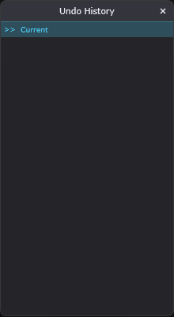
| # | On screen |
|---|---|
>> Current - the marker for where you are in the stack. Entries above it are done, entries below are redoable | |
| A history entry - one per transaction, named by the action. Clicking one jumps the whole app to that state |
The Undo History window - the whole undo stack laid out, clickable.
The window lists every undoable transaction in order.
>> Current marks
where you are: everything above it is done, everything below is redoable.
Click any entry and the whole app jumps to that state - ten steps back in one click, or forward again. The redo entries stay until you edit from an earlier point.
Depth is a setting - 100, 250, 500 or 1000
transactions, under Options > Undo History Size. The list
holds that many and drops the oldest.
Big structural edits - arrangement rearrangements, track operations - undo as ONE step each, however much they touched.
Undo
One undo manager for the whole application, and it lives on the processor. The editor holds a reference to it, not a second one. That is why ctrl + Z undoes the last thing you did anywhere rather than the last thing you did on the page you are looking at.
Edits are typed actions carrying a before and after state. A structural change — a big arrangement edit, a pattern delete — is stored as an XML snapshot beside the project rather than in memory, which is what lets a thirty-block drag undo in a single press.
Depth is a user setting: 100, 250, 500 or 1000 transactions.
// StandaloneEditor.cpp -- history depth setup (verbatim, lines 766+)
// History depth (Jeff ruling 2026-08-06, "this one is required"): the menu
// numbers are TRANSACTION counts now. JUCE's cap is unit-based and every
// action of ours exceeds the old (n, 30) unit budgets, so all four menu
// settings silently retained ~30 transactions. maxUnits = 1 forces the
// unit test permanently over, making minimumTransactionsToKeep the exact
// retained count.
mUndoManager.setMaxNumberOfStoredUnits (1, 100);Full function — Source\Standalone\UndoActions.h (UndoContext, lines 17-46; StructuralOpAction, lines 325-370)
// Source/Standalone/StandaloneEditor.cpp - StandaloneEditor::makeUndoContext (complete)
UndoContext StandaloneEditor::makeUndoContext(const juce::String& ownerKey)
{
UndoContext ctx;
ctx.manager = &mUndoManager;
ctx.perform = [this, ownerKey](juce::UndoableAction* a, const juce::String& l)
{
return doUndoAction(a, l, ownerKey);
};
ctx.undo = [this] { globalUndo(); };
ctx.redo = [this] { globalRedo(); };
ctx.showHistory = [this] { showHistoryWindow(); };
// Jeff ruling 2026-08-06: live-page resolution for page-lifetime undo
// entries (see the UndoContext decl). The ctx owner key carries the
// page identity ("drm3", "lay0", ...) -- the same pageIndex-keyed
// identity the resurrection spine preserves, so a re-created page
// answers to its old key. No prefix here prefixes another, so the
// first match is the match.
ctx.resolveOwnerPage = [this, ownerKey]() -> juce::Component*
{
static const struct { const char* prefix; RibbonTabBar::TabType type; } kOwnerMap[] = {
{ "lay", RibbonTabBar::TabType::Layers },
{ "bass", RibbonTabBar::TabType::Bass },
{ "drm", RibbonTabBar::TabType::Drums },
{ "vox", RibbonTabBar::TabType::Vox },
{ "inst", RibbonTabBar::TabType::Inst },
{ "plug", RibbonTabBar::TabType::Plugins },
};
for (const auto& m : kOwnerMap)
{
if (! ownerKey.startsWith (m.prefix)) continue;
const juce::String rest = ownerKey.substring ((int) strlen (m.prefix));
if (rest.isEmpty() || ! rest.containsOnly ("0123456789")) continue;
const int idx = rest.getIntValue();
for (auto* e : mPages)
if (e != nullptr && e->type == m.type && pageIndexOfEntry (*e) == idx)
return e->component.get();
return nullptr;
}
return nullptr;
};
return ctx;
}- ONE app-wide `juce::UndoManager`, owned by the processor, threaded by EngineRig into every engine APVTS ctor (each stamped with an undoOwnerTag so a parameter transaction re-resolves to its target after the engine is destroyed and re-created). Pages hold only an `UndoContext` by value.
- Depth trick: `setMaxNumberOfStoredUnits(1, N)` — maxUnits = 1 keeps JUCE's unit test PERMANENTLY over, so `minimumTransactionsToKeep` (the second argument) IS the retained transaction count. Menu depths: 100 (default) / 250 / 500 / 1000 (menu ids 510-513). The old (n, 30) shape silently collapsed every setting to ~30 transactions.
- Skip-first convention (PianoRollEditAction / PitchEditAction / StructuralOpAction): the edit is ALREADY applied before commitEdit calls `UndoManager::perform()`, so the first perform() is a no-op; redo works on subsequent calls. AutomationLaneEditAction does NOT skip (perform applies mAfter directly).
- Action taxonomy (all full before/after snapshots): PianoRollEditAction (note vectors), PitchEditAction (pitch note regions), AutomationLaneEditAction (whole lane), PatternListAction (project slice {patterns, currentPattern, blocks, row state} — removePattern cascades re-indexing, a single-Pattern payload cannot restore it; TS-marker gestures bank a MarkerSetAction into the SAME transaction), StructuralOpAction (tab add/delete/duplicate, engine pick/swap, kit load — undo/redo lambdas + owned snapshot files). Arrangement edits snapshot blocks + row names + per-row group/color/mute/solo.
- Structural XML snapshots: engine-state "screenshots" written to `Documents/BaySickDAW/UndoSnapshots/snap_<millis>_<counter>.xml`; OWNED by the StructuralOpAction (dtor deletes them) — the store is bounded by the history depth; whole folder swept at startup, project load, and exit (undo history never survives the session). Empty-File contract: an empty File = snapshot NOT on disk; destructive callers (deleteTabWithUndo) must ABORT and tell the user, or a delete becomes unrecoverable while the history still shows an undoable entry.
- Page-lifetime resolution: apply lambdas resolve the LIVE page via `UndoContext::resolveOwnerPage` (editor derives kind + pageIndex from the ctx owner key) — a SafePointer captured at gesture time goes null after delete+resurrect; history ORDER re-creates the tab before its rows replay.
- History labels rebuild FROM THE MANAGER via change messages (attachment gestures transact outside doUndoAction, so write-side appends could never stay truthful). Always route undo/redo through ctx.undo/ctx.redo (StandaloneEditor::globalUndo/Redo keeps mHistoryCursor in sync); never call manager->undo() directly.
Behind: Edit menu, Edit menu, Undo / Redo, Row name, The grid canvas, Edit menu, Undo / Redo, Undo / Redo, Undo / Redo, Edit menu, >> Current, A history entry.
Event Editor
Part of Edit Menu
The automation-clip editor, F12. A DESKTOP window with its own menu bar, not a contained window - so it has no Menu button and no workspace chrome.

| # | On screen |
|---|---|
File menu | |
Edit menu | |
Tools menu | |
View menu | |
Target Control menu - re-points the editor at a different automatable control | |
Import MIDI menu | |
Target label - mixer master fader, the parameter id in words | |
Auto / LFO - which kind of source drives the target | |
New Automation Clip | |
Snap: picker - 1/16 | |
Value readout - 0.915, the value under the cursor | |
| Curve canvas - scale 0.00 to 1.00, tick-based SONG position. Not the per-note 0-1 phase a Harmless mod curve uses, see Mod curve canvas | |
| A control point - the circles at each end of the line | |
Tool row - D / P / E / I / S / Z | |
Status line - Beat 0.97 0.997, position and value under the cursor | |
Automation Clips list - every clip on this target. Clicking one loads it into the canvas |
The Event Editor (F12) - where automation curves are drawn. Point it at any automatable control and shape how that control moves over the song.
The menus - File, Edit, Tools and View - carry the editor's file, edit and view operations, with Target Control re-pointing the editor at a different control and Import MIDI bringing controller data in as a curve.
The target label names what you are editing in plain
words - mixer master fader.
Auto / LFO. Two kinds of source: a drawn curve, or a generated wobble. In LFO mode the top row gains Min / Max / Rate knobs - the wobble's floor, ceiling and speed - instead of hand-drawn points.
New Automation Clip starts a fresh clip on this
target; the Automation Clips list shows
every clip the target has, click to load one into the canvas.
A clip whose target control was deleted turns
red with a [stale] prefix - it still holds its data, but
nothing consumes it.
Snap grids your points (1/16 and the
rest); the value readout and
the status line
(Beat 0.97 0.997) track position and value under the
cursor.
The canvas is the curve itself - 0.00 to 1.00 over
SONG time, bar by bar. (A Harmless mod curve looks similar but runs per
note; this one runs over the song.)
Control points are the circles you drag;
the tool row - Draw,
Paint, Erase, Interpolate,
Select, Zoom - picks what the mouse does.
The editor's mouse gestures and keys are listed on the Key Binds
window's Event Editor tab, in the Help menu.
How this works: Undo, Keyboard shortcut dispatch and the key-listener ordering rule.
Automation
Automation lanes are registered against the model, never against a widget, and an applicator re-resolves its target through the model each time it fires.
A consequence worth knowing: any new kind of lane needs both its live registration and its offline-replay branch added in the same change, or it will play correctly while you listen and be missing from the exported file.
Harmless's modulation curves are a different system in the same shape. Those run across each note on a 0-1 phase; automation clips run on song position in ticks. The two are deliberately not shared.
// StandaloneEditor.cpp -- registerModelEngineAutomation: the model-scoped applicator
if (VKnobAutomation::sOnRegisterApplicator)
VKnobAutomation::sOnRegisterApplicator (pid,
[resolveTarget, which, paramId, gated] (float v01)
{
auto* t = resolveTarget (which);
if (t == nullptr) return;
if (gated)
if (auto* v = dynamic_cast<BaySickVocalProcessor*> (t))
if (v->onIsStripRecording && v->onIsStripRecording())
return;
if (auto* ap = EngineRig::apvtsOf (t))
if (auto* param = ap->getParameter (paramId))
param->setValueNotifyingHost (juce::jlimit (0.0f, 1.0f, v01));
}); // model-scoped: re-resolves through the rig at apply timeFull function — Source\Standalone\StandaloneEditor.cpp (registerModelEngineAutomation, lines 15528+)
// Source/Standalone/StandaloneEditor.cpp - StandaloneEditor::registerModelEngineAutomation (complete)
// QA-ModelShell TS1: engine-parameter lane registration keyed to MODEL events
// (EngineRig::onEngineCreated), never to view builds. Lane-id vocabulary
// matches what the engine editors stamp today:
// Layers/Bass/Drums/Clips -- the engine APVTS param ids verbatim;
// Vox -- "vox<N>_" + id, covering the vocal APVTS and its embedded NAM/IR;
// Inst -- "inst<N>_" + id for the NAM/IR stage. Pedal lanes are uuid-keyed
// rack lanes (EffectParamMap pedal tables land in TS3); the chain wrapper
// has no parameters.
// Applicators are null-owner and re-resolve tab -> engine THROUGH the rig at
// apply time, so an engine swap can never leave a closure aimed at a freed
// processor.
void StandaloneEditor::registerModelEngineAutomation (EngineTab& tab)
{
const TabKind kind = tab.kind;
const int idx = tab.pageIndex;
enum class Target { MainEngine, VocalNam, InstNam };
auto resolveTarget = [this, kind, idx] (Target which) -> juce::AudioProcessor*
{
auto* t = mProcessor.engineRig().findTab (kind, idx);
if (t == nullptr) return nullptr;
switch (which)
{
case Target::MainEngine: return t->engine.get();
case Target::VocalNam:
if (auto* v = dynamic_cast<BaySickVocalProcessor*> (t->engine.get()))
return &v->getNamIrProcessor();
return nullptr;
case Target::InstNam: return t->namIr;
}
return nullptr;
};
auto registerParamsOf = [resolveTarget] (Target which, juce::AudioProcessor* proc,
const juce::String& lanePrefix)
{
if (proc == nullptr || EngineRig::apvtsOf (proc) == nullptr) return;
for (auto* p : proc->getParameters())
{
auto* rp = dynamic_cast<juce::RangedAudioParameter*> (p);
if (rp == nullptr) continue;
const juce::String pid = lanePrefix + rp->paramID;
const juce::String paramId = rp->paramID;
// Vocal capture lock (owner call 2026-07-25, docket 4=A): while the
// strip is recording, a write to the realtime-board set is vetoed
// for the same reason the UI greys those controls out. The lane is
// not consumed -- the next tick after the veto clears applies
// normally. Moved here from BaySickVocalEditor's registration when
// TS3 retired the widget wrappers; the veto had to travel with it or
// an automated take would start clicking again.
const bool gated = (which == Target::MainEngine)
&& BaySickVocalProcessor::isCaptureGated (paramId);
if (VKnobAutomation::sOnRegisterApplicator)
VKnobAutomation::sOnRegisterApplicator (pid,
[resolveTarget, which, paramId, gated] (float v01)
{
auto* t = resolveTarget (which);
if (t == nullptr) return;
if (gated)
if (auto* v = dynamic_cast<BaySickVocalProcessor*> (t))
if (v->onIsStripRecording && v->onIsStripRecording())
return;
if (auto* ap = EngineRig::apvtsOf (t))
if (auto* param = ap->getParameter (paramId))
param->setValueNotifyingHost (juce::jlimit (0.0f, 1.0f, v01));
}); // model-scoped: re-resolves through the rig at apply time
if (VKnobAutomation::sOnRegisterReader)
VKnobAutomation::sOnRegisterReader (pid,
[resolveTarget, which, paramId]() -> float
{
if (auto* t = resolveTarget (which))
if (auto* ap = EngineRig::apvtsOf (t))
if (auto* param = ap->getParameter (paramId))
return param->getValue();
return 0.5f;
});
}
};
switch (kind)
{
case TabKind::Layers:
case TabKind::Bass:
case TabKind::Drums:
case TabKind::Clips:
registerParamsOf (Target::MainEngine, tab.engine.get(), {});
// BLU-344: Harmless also carries non-parameter mod-editor targets.
// No-op for the other engine types.
registerHarmlessModAutomation (kind, idx);
break;
case TabKind::Vox:
{
const juce::String pre = "vox" + juce::String (idx) + "_";
registerParamsOf (Target::MainEngine, tab.engine.get(), pre);
if (auto* v = dynamic_cast<BaySickVocalProcessor*> (tab.engine.get()))
registerParamsOf (Target::VocalNam, &v->getNamIrProcessor(), pre);
break;
}
case TabKind::Inst:
registerParamsOf (Target::InstNam, tab.namIr,
"inst" + juce::String (idx) + "_");
// The board's own lanes, plus the subscription that re-keys them
// when the user swaps a pedal. Wired here rather than in InstPage
// because the board outlives every view of it.
registerPedalAutomation (idx);
if (tab.pedals != nullptr)
{
juce::Component::SafePointer<StandaloneEditor> safeThis (this);
tab.pedals->onSlotAutomationChanged = [safeThis, idx]
{
if (auto* ed = safeThis.getComponent())
ed->registerPedalAutomation (idx);
};
}
break;
}
}- Model-side rule (project invariant): ALL automation registration is model-side, keyed off model events (onEngineCreated, onMixerStripParamsCreated, onSfizzEngineReady, rack/pedal model events). NEVER register against a widget — destroy-on-close windows make every widget-scoped registration a guaranteed dead lane. Applicators re-resolve their target THROUGH the rig at apply time (resolveTarget -> findTab -> apvtsOf), never through a captured pointer. - Landing rule: any NEW lane class needs its live registration AND an `applyOfflineLaneValue` branch in the SAME pass, or it plays live and silently vanishes from exports. - Lane-id vocabulary (prefix grammar): Layers/Bass/Drums/Clips = bare engine paramID (no prefix); Vox = `vox<N>_<paramId>` (engine + its embedded NAM/IR share the prefix, tried in that order); Inst NAM/IR = `inst<N>_<paramId>`; pedal board = `inst<N>_pedals_<slotUuid>_<suffix>` (slot resolved BY UUID, never index — reorder carries the uuid); hosted Plugins tab = `plugtab<N>_vst_<pluginParamId>`. The digits-immediately-after-word parse is what keeps `vox_bus` / `inst_0` RACK prefixes from colliding (they carry an underscore first). - Offline replay filters (applyOfflineAutomationAt, mirrors the live in-processBlock replay): clipType == Automation, not muted, row audible, paramId non-empty, points non-empty, `global_tempo` excluded (the clock's job), main-APVTS lanes excluded (they replay inside processBlock identically to live). Builder grid is uniform 4 beats per bar: `bar = songBeat / 4.0`; relative position `rel = (bar - clipStart) / len` clamped 0..1; the SAME shared point evaluator (`evalAutomationLaneAt`) serves live and offline. - Applicator writes the PARAMETER, not the control: `param->setValueNotifyingHost(jlimit(0,1,v01))`. For Harmless dual-part controls, both `part` ids get applicators (a control-driven applicator would collapse two lanes onto whichever part is bound). - Vocal capture gate: writes to the realtime-board set are VETOED while the strip records (`BaySickVocalProcessor::isCaptureGated` + `onIsStripRecording`); the lane is not consumed — the next tick after the veto clears applies normally. - Reader fallback returns 0.5f when the target cannot be resolved. - The offline write path is itself why `EngineRig::markEngineContentChanged` early-outs on `isNonRealtime()`: setValueNotifyingHost on the engine APVTS is the exact tree the freeze watcher listens to — a replay is not a user edit.
Behind: Band Automate submenu, A panel knob, Target Control menu, Target label, Auto / LFO, New Automation Clip, Curve canvas, A control point, Automation Clips list, Automate: <target>.
Event Editor
The close-up editor for one automation clip. A desktop window with its own menu bar rather than a workspace window, which is why it has a corner grip instead of a resize border.
// PatternManager.h -- the curve storage (verbatim, lines 21-47)
// ── Automation data ───────────────────────────────────────────────────────────
// Ordinals are pinned explicitly because this int is persisted: each automation
// point writes "curve" as the raw enum value and the loader casts the saved int
// straight back, so an insertion or re-order silently repoints every saved point
// at a different curve shape. Values below match what was implicit before, so
// this pins current behavior and changes nothing. NEVER reorder or insert;
// append only, with an explicit value. Same rule as EffectType in EffectRack.h.
enum class CurveType { Linear = 0, Stepped = 1, Spline = 2 };
struct ControlPoint
{
float timeTicks { 0.f }; // 0..1, fraction of clip length
float value01 { 0.5f }; // 0..1, normalized parameter value
CurveType curveType { CurveType::Linear };
float tension { 0.f }; // reserved for future Bezier
};
struct AutomationLane
{
juce::String paramId;
std::vector<ControlPoint> points;
bool isLFO { false };
int lfoShape { 0 }; // 0=Sine 1=Triangle 2=Saw 3=Square
float lfoRate { 1.f }; // period in beats
float lfoMin { 0.f };
float lfoMax { 1.f };Full function — Source\PatternManager.h (ControlPoint / AutomationLane storage + the ONE evaluator, lines 21-160)
// Source/PatternManager.h - ControlPoint (complete)
struct ControlPoint
{
float timeTicks { 0.f }; // 0..1, fraction of clip length
float value01 { 0.5f }; // 0..1, normalized parameter value
CurveType curveType { CurveType::Linear };
float tension { 0.f }; // reserved for future Bezier
};
// Source/PatternManager.h - AutomationLane (complete)
struct AutomationLane
{
juce::String paramId;
std::vector<ControlPoint> points;
bool isLFO { false };
int lfoShape { 0 }; // 0=Sine 1=Triangle 2=Saw 3=Square
float lfoRate { 1.f }; // period in beats
float lfoMin { 0.f };
float lfoMax { 1.f };
// Display-name system (decoupled from paramId so swapping the effect in a
// slot updates the shown name without breaking the backend key):
// - paramId : stable key (e.g. "layers_bus_s0_mix"). Never displayed.
// - userDisplayName : user-renamed label. Empty by default. When
// non-empty, takes precedence over the auto name
// everywhere in the UI. "Revert to auto" clears it.
// - lastKnownName : auto-resolved label captured at lane creation,
// while the target still existed. Deleted-slot
// lanes fall back to it so the row keeps saying
// WHICH effect it drove. Never goes stale for
// rack lanes: a slot UUID never revives (effect
// swap = old-slot deletion + a fresh UUID).
// The auto-generated display string is otherwise NOT stored here; it's
// resolved at display time via
// StandaloneEditor::resolveAutomationDisplayName(paramId) so effect-swap
// inside a slot reflects immediately without migration.
juce::String userDisplayName;
juce::String lastKnownName;
// Evaluate the lane at normalised clip position pos01 (0 = start, 1 = end).
// Returns a normalized 0..1 parameter value. Forwards to
// evalAutomationLaneAt below -- the one evaluator.
float evaluateAt(float pos01) const;
};- Curve storage unit: `ControlPoint { timeTicks (0..1 fraction of clip length, despite the name), value01 (0..1 normalized), curveType, tension }` inside `AutomationLane { paramId, points, isLFO, lfoShape, lfoRate, lfoMin, lfoMax, userDisplayName, lastKnownName }`. Points are kept SORTED by timeTicks (every mutation site sorts — audio-thread evaluator assumes it).
- `CurveType { Linear=0, Stepped=1, Spline=2 }` persisted as raw int ("curve" attr) — append-only, explicit values, never reorder.
- Segment math (curve type is on the LEFT point of each segment): Stepped holds p0.value01; Spline is Catmull-Rom `0.5 * (2v1 + (-v0+v2)t + (2v0-5v1+4v2-v3)t^2 + (-v0+3v1-3v2+v3)t^3)` through neighbouring values, clamped at the ends; Linear with tension uses the FL Studio scaled-exponential transfer `t_factor = 1 - T/(0.5T+0.5)^2; y = (t_factor^t - 1)/(t_factor - 1)` with T clamped to ±0.999 (positive tension eases out, negative eases in; |T| < 0.001 degrades to plain lerp).
- LFO mode replaces the point curve: shapes 0=Sine 1=Triangle 2=Saw 3=Square, `phase = fmod(relPos / lfoRate, 1)`, output mapped lfoMin..lfoMax; lfoRate <= 0 returns the mid value.
- Editor edit contract: every edit snapshots the lane BEFORE and AFTER and registers an `AutomationLaneEditAction` (UndoActions.h) through the app's undo choke point (`UndoContext`); curve-handle drags and point drags each keep their own before-snapshot.
- Deleting a lane's LAST point does not leave an empty block: `onDeleteWholeAutomationRequested` fires and the host prompts to delete the whole automation block instead (QA-ProjectSave 2026-07-26).
- Real-unit readout: APVTS lanes format/parse via the parameter's own getText()/getValueForText() (identical to its knob + host automation); `global_tempo` is the one non-APVTS lane (20..300 BPM mapping). "Reset to Default" resolves per-paramId via onResolveResetValue; null = 0.5 (Event Editor point-reset ruling).
- Grid domain: the Builder grid an automation block sits on is uniform 4-beat-per-bar (`kBeatsPerBar = 4`) — a PATTERN owns a real signature, song TS markers are decorative here, and the playback window is computed in the same uniform domain, so ruler/gridlines/snap/playback agree.
- Layout/snap constants: kRulerH=18, kValLabelW=34, kNodeR=4.0 hit radius; snap = subdivisions per beat, clamped 1..32, default 4 (1/16 note); Alt overrides snap. Tools: Draw / Paint / Erase / Interpolate / Select / Zoom.
Behind: File menu, Tools menu, View menu, Import MIDI menu, Snap: picker, Value readout, Status line.
Pattern Menu
Part of Main Window
The app Patterns menu - pattern-list housekeeping. The notes themselves live in the editing surfaces.

| # | On screen |
|---|---|
Rename / Color (F2) | |
Find Next Empty Pattern (F3) | |
Insert One (Shift+Ctrl+Ins) | |
Clone (Alt+C) | |
Delete - deliberately no shortcut: bare Delete belongs to whichever editing surface is focused. Greyed while only one pattern exists | |
Move Up (Shift+Ctrl+Up) | |
Move Down (Shift+Ctrl+Down) |
The Patterns menu - housekeeping for the pattern list. The notes inside patterns live in the editing surfaces; this menu manages the patterns themselves.
Rename / Color (F2) names and colors the current pattern - color carries into the Builder, so a colored pattern list makes a readable arrangement.
Find Next Empty Pattern (F3) jumps to the next blank one.
Insert One (Shift+Ctrl+Ins) adds a pattern at the current position; Clone (Alt+C) duplicates the current one, notes and all.
Delete removes the current pattern - deliberately no shortcut, since the bare Delete key belongs to whichever editing surface is focused. It greys while only one pattern exists; the last pattern cannot be deleted.
Move Up / Move Down (Shift+Ctrl+Up/Down) reorder the pattern list.
How this works: Patterns and arrangement.
View Menu
Part of Main Window
The app View menu - one row per F-key navigation command, same labels as the key-bind catalog.

| # | On screen |
|---|---|
Show Builder (F5) - see Builder Page | |
Show Mixer (F6) - see Mixer | |
Show Player (Most Recent) (F7) | |
Show Effects Rack (Most Recent) (F8) - see Effects Rack | |
Show Effect Panel (Most Recent) (F9) - see Effect Panel | |
Show Piano Roll (Most Recent) (F10) - see Piano Roll | |
Show Drum Kit (Most Recent) (F11) - see Drum Kit | |
Show Event Editor (Most Recent) (F12) - see Event Editor |
The View menu - one row per F-key navigation command.
Show Builder (F5) and Show Mixer (F6) go to the two fixed pages.
Show Player (Most Recent) (F7) returns to whichever player window you touched last - the "Most Recent" entries all work that way, remembering your last visit rather than a fixed target.
Show Effects Rack (F8), Show Effect Panel (F9), Show Piano Roll (F10), Show Drum Kit (F11) and Show Event Editor (F12) - each the most recent of its kind.
How this works: The contained-window shell.
Options Menu
Part of Main Window · Related: File Settings, Audio Settings, Plugin Scan
The app Options menu.

| # | On screen |
|---|---|
General submenu - Set Default Template... (current: <name>) and Clear Default Template | |
File Settings... - see File Settings | |
Audio Settings... - see Audio Settings | |
Plugins... - scan and add third-party VST3s, see Plugin Scan | |
Get Sound Content... - fetches the Core Library sound content | |
Undo History Size submenu - 100 / 250 / 500 / 1000 steps, tick on the current value | |
MIDI is Omni (all devices) - Read Only - permanently greyed on purpose: information, not a setting. Every connected MIDI device is always listened to |
The Options menu - the app's settings, gathered.
General manages the default template -
Set Default Template... (naming the current one) and
Clear Default Template.
File Settings..., Audio Settings... and Plugins... open the three settings dialogs - recording behavior, hardware, and third-party plugins - each with its own page.
Get Sound Content... downloads the Core Library - the factory sounds, kits and instruments.
Undo History Size - how many steps the undo stack keeps: 100 to 1000, tick on the current choice.
MIDI is Omni (all devices) - Read Only. Permanently greyed on purpose: it is information, not a setting. Every connected MIDI device is always listened to - there is nothing to configure.
File Settings
Part of Options Menu
What gets written when you stop recording, and what is kept afterwards.

| # | On screen |
|---|---|
Take-type checkboxes - Dry / Dry Cleaned / Wet / Wet Cleaned. Written at record stop; at least one stays checked | |
De-noise strength: - Strong. What "Cleaned" means | |
Auto-freeze above: slider and its 80 % readout - the DSP load at which tabs start freezing themselves | |
Keep captured takes: - This session only and the longer options | |
Also keep the audio of each take | |
Enable Instrument Level Freeze |
File Settings - what gets written when you record, and when the app manages CPU for you.
The take types. Every vocal record stop can write up
to four versions of the take - Dry (untouched),
Dry Cleaned (de-noised), Wet (through the
chain), Wet Cleaned. Tick the ones you want on disk; at least
one always stays checked, and your Builder Grid Default pick is always
written regardless.
De-noise strength is what "Cleaned" means -
Strong removes more noise, at more risk of affecting the voice.
Auto-freeze above - the DSP load at which tabs start
freezing themselves (80 % default). When the meter runs hot,
the app renders the heaviest tabs instead of letting audio break
up. Enable Instrument Level Freeze lets
that mechanism work per
instrument.
How this works: Projects and saving, Denoise, Freeze.
Audio Settings
Part of Options Menu

| # | On screen |
|---|---|
Audio Mode: - Windows Audio, ASIO and the rest | |
Audio Device: | |
Sample Rate: - 48000 Hz | |
Buffer Size: - 480 samples. The DSP perf readout is load as a percentage of THIS window, see Perf readout | |
MIDI Inputs: - one checkbox per detected input | |
Trigger Velocity: - From controller or a fixed value | |
Open ASIO Control Panel - enabled when the live device has a control panel or the selected type is ASIO. ASIO needs the input and output device NAMES to match or the input mask stays empty | |
Apply / Close - Apply takes effect on restart (the pending choice is written to a sibling settings file and consumed then); Close leaves things as they were |
Audio Settings - the connection between BaySickDAW and your hardware.
Audio Mode - Windows Audio for
plug-and-play, ASIO for low-latency work with an
audio interface. Audio Device picks the
hardware within that mode. ASIO note: recording needs the input and output
on the SAME ASIO device name.
Sample Rate (48000 Hz is a fine
default) and Buffer Size - the fundamental
trade: small buffers mean less delay between playing and hearing but more
CPU strain; large buffers are safe but laggy for live playing. The
DSP readout on the ribbon is load as a percentage of this
buffer window - if it runs hot, a bigger buffer buys headroom.
MIDI Inputs - one checkbox per detected device;
(no MIDI devices detected) replaces
the list when nothing is plugged in.
Trigger Velocity - take note force
From controller, or pin every note to a fixed value.
Open ASIO Control Panel opens the interface's own settings app; it lights up whenever the live device offers one.
Apply stages the change - it takes effect on the next start, which is why the dialog says so - and Close leaves things as they were.
Plugin Scan
Part of Options Menu
Options > Plugins. Where third-party plugins are scanned and added. Nothing appears in the + menu or the effect picker until it is added here.

| # | On screen |
|---|---|
Filter: - name or manufacturer | |
1. Scan folders - the folders that get searched | |
Add Folder... / Remove / Reset to Defaults | |
2. Added plugins table - Name / Kind / Manufacturer / File. Kind is Instrument or Effect, and it decides whether the plugin appears in the tab menu or the effect picker | |
Remove Selected | |
3. Scan results table - Name / Kind / File / reason skipped. The reason column is where a refused plugin explains itself | |
Scan - runs the scan OUT OF PROCESS, so a plugin that crashes on load cannot take the app down with it | |
Add Checked - greyed until a scan has produced something to check. Greys until at least one row is ticked; the label becomes Add Checked (N) | |
Per-row checkbox - first column of the results table; what Add Checked adds. Skipped rows draw no box |
The Plugins dialog (Options > Plugins...) - how
third-party VST3s get into the app. Three numbered steps, top to bottom.
Filter narrows every list below by name or manufacturer.
1. Scan folders - where the scan looks. Add Folder... / Remove / Reset to Defaults manage the list; the defaults cover the standard VST3 locations.
2. Added plugins - what the app already knows:
Name / Kind / Manufacturer /
File. Kind matters: an Instrument
appears in the ribbon's VSTPlugin list, an Effect in the rack
picker's. Remove Selected forgets one.
Scan searches the folders - out of process, so a
plugin that crashes while being probed cannot take the app down.
While it runs the button reads
Cancel Scan and a progress bar tracks it.
3. Scan results - what the scan found:
Name / Kind / File, with the
last column doubling as the reason a plugin was skipped.
The checkbox in the first column is the
decision - tick what you want (skipped rows have no box), and
Add Checked - which counts your ticks in
its label, Add Checked (N) - moves them into the Added
list.
How this works: Out-of-process plugin hosting.
Help Menu
Part of Main Window · Related: Key Binds
The app Help menu.

| # | On screen |
|---|---|
Help Index (F1) - opens these manuals | |
Key Binds... - see Key Binds | |
View Projects MidiMap - the project's MIDI mappings | |
About BaySickDAW v1.0 |
The Help menu.
Help Index (F1) opens these manuals.
Key Binds... opens the shortcut window - every binding, viewable and reboundable.
View Projects MidiMap opens the project's MIDI mappings - every learned control-to-hardware link, in one window.
About BaySickDAW v1.0 - version and credits.
How this works: Keyboard shortcut dispatch and the key-listener ordering rule, MIDI Learn.
Key Binds
Part of Help Menu
The Key Binds window. Every binding in the app, rebindable. A desktop window, taller than a screen - the figure shows the General category from the top and the manual lists the rest as text rather than as more images.
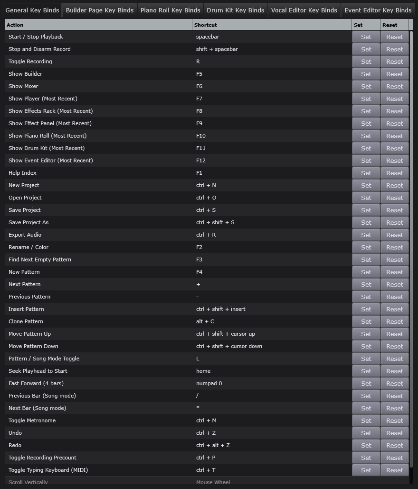
| # | On screen |
|---|---|
Category tabs - General / Builder Page / Piano Roll / Drum Kit / Vocal Editor / Event Editor Key Binds. A binding lives in exactly one category and applies where that category is focused | |
Action column - what the binding does | |
Shortcut column - the current binding, in the app own wording (spacebar, ctrl + shift + S, numpad 0, cursor up) | |
Set - arms the row; the next chord you press becomes the binding | |
Reset - returns that one row to its default |
The Key Binds window - every keyboard shortcut, viewable and reboundable in one place.
The category tabs - General,
Builder Page, Piano Roll, Drum Kit,
Vocal Editor, Event Editor. A binding lives in
exactly one category and applies where that surface is focused - the same
key can safely mean different things on different pages.
Action says what the row does,
Shortcut shows the current binding in the
app's own wording (spacebar,
ctrl + shift + S...).
Set arms a row - the next chord you press becomes its binding. Reset returns that one row to its default.
Keyboard shortcut dispatch and the key-listener ordering rule
Key listeners are dispatched in reverse registration order, and they run before the focused component's own key handling. The last thing registered therefore wins.
That is the whole mechanism behind per-category bindings: a page registers its listener when it appears, so its bindings take precedence while it has focus, and the app-wide bindings resume when it does not.
// ComponentPeer::handleKeyPress (vendored juce_ComponentPeer.cpp) - THE reverse loop
bool ComponentPeer::handleKeyPress (const KeyPress& keyInfo)
{
bool keyWasUsed = false;
for (auto* target = getTargetForKeyPress(); target != nullptr; target = target->getParentComponent())
{
const WeakReference<Component> deletionChecker (target);
if (auto* keyListeners = target->keyListeners.get())
{
for (int i = keyListeners->size(); --i >= 0;)
{
keyWasUsed = keyListeners->getUnchecked (i)->keyPressed (keyInfo, target);
if (keyWasUsed || deletionChecker == nullptr)
return keyWasUsed;
i = jmin (i, keyListeners->size());
}
}
keyWasUsed = target->keyPressed (keyInfo);
if (keyWasUsed || deletionChecker == nullptr)
break;
}Full function — - juce\modules\juce_gui_basics\windows\juce_ComponentPeer.cpp (vendored JUCE — ComponentPeer::handleKeyPress lines 196-233, handleKeyUpOrDown lines 235-263)
// Source/Standalone/KeyBindings.h - (whole file) (complete)
#pragma once
#include <JuceHeader.h>
// ── KeyBindings ──────────────────────────────────────────────────────────────
// Central catalog of every editable keyboard shortcut in BaySickDAW.
//
// Each command has:
// - a stable integer ID (the CommandIDs enum below)
// - a Category (which tab in the Key Binds popup it lives under)
// - a human-readable Name shown in the editor row
// - a beginner-friendly Tooltip string shown on hover
// - a default KeyPress (the out-of-the-box shortcut)
//
// Mouse-modifier interactions (Alt+RClick etc.) are surfaced as MouseRefRow
// entries - they're documentation-only and not editable through the popup.
//
// Phase A scope: only commands whose handlers were already wired before this
// refactor. Phase B and beyond extend the catalog as features come online.
// ─────────────────────────────────────────────────────────────────────────────
namespace BSCommands
{
// App-defined IDs start above 0xf000 to stay clear of JUCE's reserved range.
enum CommandIDs : int
{
// ── General - transport ─────────────────────────────────────────────
cmdPlayPause = 0x10001,
cmdStopAndDisarm = 0x10002,
cmdToggleRecord = 0x10003,
// ── General - page switches ─────────────────────────────────────────
cmdShowMixer = 0x10010,
cmdShowEffectsRack = 0x10011,
cmdShowBuilder = 0x10012,
cmdShowPianoRoll = 0x10016,
cmdShowPlayer = 0x10017,
cmdShowEffectPanel = 0x10018,
cmdShowDrumKit = 0x10019,
cmdShowEventEditor = 0x1001a,
cmdShowManuals = 0x1001b,
// ── General - file operations (Phase B-1) ───────────────────────────
cmdFileNew = 0x10020,
cmdFileOpen = 0x10021,
cmdFileSave = 0x10022,
cmdFileSaveAs = 0x10023,
cmdExportAudio = 0x10024, // QA-Export (FSW-065)
// ── General - pattern navigation (Phase B-2, 2026-04-26) ────────────
cmdRenameActivePattern = 0x10030,
cmdNextEmptyPattern = 0x10031,
cmdNewPattern = 0x10032,
cmdNextPattern = 0x10033,
cmdPrevPattern = 0x10034,
// ── General - pattern list editing ──────────────────────────────────
// No cmdDeletePattern: bare Delete is claimed page-locally by the
// Builder grid, Piano Roll, Drum Kit, Event Editor and pitch editor
// for their own selections, so pattern delete stays menu-only.
cmdInsertPattern = 0x10035,
cmdClonePattern = 0x10036,
cmdMovePatternUp = 0x10037,
cmdMovePatternDown = 0x10038,
// ── General - transport extensions (Phase B-3, 2026-04-26) ──────────
cmdToggleSongMode = 0x10040,
cmdSeekHome = 0x10041,
cmdFastForward = 0x10042,
cmdPrevBarSong = 0x10043,
cmdNextBarSong = 0x10044,
cmdToggleMetronome = 0x10045,
// ── General - undo / redo (Phase B-5, 2026-04-26) ───────────────────
cmdGlobalUndo = 0x10050,
cmdGlobalRedo = 0x10051,
// ── General - recording precount (Phase D-5, 2026-04-26) ────────────
cmdToggleRecordingPrecount = 0x10060,
// ── Builder - Slip / Stretch edit-mode toggle (QA-Ea Task 0c).
// Flips the BuilderPage toolbar's Slip/Stretch dropdown between
// its two modes. Slip mode: Audio-clip edge drags slip the
// content (reveal pre-roll / trim leading). Stretch mode: time-
// stretch (QA-Ec ships it; left-edge no-op for Task 0c, right-edge
// keeps existing length-resize UX). Default keybind 'S'.
cmdToggleSlipStretchMode = 0x10070,
// ── General - typing-keyboard MIDI (D-4, QA-TransportDisplay) ───────
cmdToggleTypingKeyboard = 0x10071,
// (later phases continue from 0x10072.)
};
enum class Category : int
{
General = 0,
Builder = 1,
PianoRoll = 2,
DrumKit = 3, // 2026-04-26 (D-7 sub-2): drum-kit specifics
MouseReference = 4,
// 2026-07-11 (QA-Fd): BaySickPitch / BaySickAlign vocal editors.
// All entries are page-local hardcoded keys + mouse gestures --
// reference rows only, none rebindable (Piano Roll local-key deal).
VocalEditors = 5,
// 2026-08-06 (QA-UndoCoverage Task 5, docket 14=a): Event Editor
// local keys. Display-only reference rows, none rebindable.
EventEditor = 6,
};
juce::String categoryName (Category c);
struct CommandInfo
{
int id;
Category category;
juce::String name;
juce::String tooltip;
juce::KeyPress defaultKey;
};
// Catalog of editable commands. Static - initialized on first call.
const std::vector<CommandInfo>& getAllCommands();
// Look up a single command by id. Returns nullptr if id isn't in the catalog.
const CommandInfo* findCommand (int id);
// Return all commands belonging to a given category.
std::vector<const CommandInfo*> getCommandsInCategory (Category c);
// Mouse-modifier reference rows (documentation only - non-editable).
struct MouseRefRow
{
Category category;
juce::String shortcut;
juce::String name;
juce::String tooltip;
};
const std::vector<MouseRefRow>& getMouseRefRows();
std::vector<const MouseRefRow*> getMouseRefsInCategory (Category c);
// Phase B-6 (2026-04-26): scan reference rows for any hardcoded key that
// matches the given KeyPress. Returns rows whose shortcut text parses as
// a valid KeyPress and matches `kp`. Mouse-only rows ("Ctrl + Drag" etc.)
// never match because their shortcut text doesn't parse as a key. Used
// by the Set-binding capture flow to warn when the new binding clashes
// with a page-local handler (which fires before the command system).
std::vector<const MouseRefRow*> findHardcodedConflicts (const juce::KeyPress& kp);
// ── Persistence ─────────────────────────────────────────────────────────
// Keymap XML lives next to audio_settings.xml in <Documents>/BaySickDAW/.
juce::File getKeymapFile();
// Write current mappings to keymap.xml. Called once per shortcut edit in
// the popup. Raises the family's "Save failed" box itself rather than
// returning a result: the rebind is already applied in the mapping set, so
// a caller has nothing to roll back - only the persistence is lost.
void saveMappings (const juce::KeyPressMappingSet& set);
// Restore mappings from disk. Returns false if the file doesn't exist or
// failed to parse - caller should leave defaults in place when false.
bool loadMappings (juce::KeyPressMappingSet& set);
}- The JUCE loop: `for (int i = keyListeners->size(); --i >= 0;)` — listeners dispatch in REVERSE registration order, so HIGHEST PRIORITY = REGISTERED LAST. For `keyPressed`, listeners run BEFORE the target component's own virtual `keyPressed`. The walk then continues UP the parent chain (`target = target->getParentComponent()`) until something consumes the key. - Asymmetry: `handleKeyUpOrDown` runs the component's VIRTUAL `keyStateChanged` FIRST, then the listeners (still reversed). `handleKeyPress` is the opposite (listeners first). - Deletion safety in the loop: `WeakReference<Component> deletionChecker` bails if a handler deletes the target; `i = jmin (i, keyListeners->size())` re-clamps if a handler removed listeners. - Unhandled Tab falls through to `moveKeyboardFocusToSibling` (shift reverses direction). - Our registration rule (three sites, identical order): the KeyPressMappingSet (command bindings) registers FIRST, the editor's typing-keyboard note gate (`this`) registers LAST — so bare note letters (R / S / H) outrank the letter command bindings they collide with. Sites: the editor constructor, every page WorkspaceWindow (`entry.window`), every aux/satellite WorkspaceWindow. - Why every window needs its own pair: a contained WorkspaceWindow is its OWN desktop component — key presses bubble to the window peer and STOP, never reaching the editor. And `setFirstCommandTarget(this)` is required because the command manager's default target resolution walks up from the focused component, which inside a parentless desktop window finds nothing. - Mapping load order: `resetToDefaultMappings()` first, then `BSCommands::loadMappings` overlays user-saved bindings.
Behind: A tool button, Tool buttons, Sel, Tool row, Category tabs, Action column, Shortcut column, Set, Reset.
Transport Bar
Part of Main Window · Related: Recording Menu, Metronome Menu
Owns every transport control. Left to right as the bar reads.

| # | On screen |
|---|---|
| Play | |
| Pause | |
| Stop | |
| Record - the DOT arms and records | |
| Record mode chevron - the right 14px only. Same split hit-target as a ribbon slot, see Slot chevron | |
BPM field - amber LCD, editable. Right-click offers Automate tempo | |
TAP | |
PATTERN - pattern / song toggle | |
| Loop-mode toggle | |
| Metronome | |
| Metronome chevron | |
| Typing-keyboard MIDI - four painted piano keys | |
| Swing knob | |
Pattern dropdown - Pattern 1 | |
Position readout - amber LCD, 0:00.000 |
The transport bar runs the song: play, record, tempo and time, always visible across the top of the app.
Play (Space), Pause (Space again while playing), Stop (Shift+Space) - stop also disarms recording and returns to the start.
Record. The dot arms recording - press it, then play, and the take is captured. Its chevron - only the thin strip on the button's right edge - opens the recording menu: whether you are capturing AUDIO (a microphone or instrument) or MIDI (notes into the Piano Roll), and the record-quantize. The dot records; the chevron configures.
The BPM field - the amber display - is the song's
tempo in beats per minute. Click it and type. Right-click offers
Automate tempo, for songs whose speed changes as they go.
TAP sets the tempo from your tapping: tap
the button in time and the field locks onto the rate.
PATTERN / SONG is what the play button plays: the current pattern looping around (where you build parts), or the whole arrangement from the Builder (where you hear the song). Most writing happens in pattern mode. The loop toggle decides whether the song repeats at its end or plays through and stops.
The metronome toggles the click track - the steady click that marks the beat - and its chevron opens the metronome's settings: the click sound, its volume, and the one-bar count-in before a recording.
The typing-keyboard toggle - the four painted piano keys (Ctrl+T) - turns your computer keyboard into a playable instrument aimed at the open piano-roll tab. No MIDI keyboard required to play notes in.
The Swing knob pushes every second sixteenth-note late, across the whole app. Each player has its own Swing Mix knob deciding how much of this global amount it applies, so drums can swing hard while a pad stays straight.
The pattern dropdown picks which pattern you are
working in, and the position readout -
amber, 0:00.000 - shows where playback is in minutes and
seconds.
How this works: BPM detection, Patterns and arrangement, MIDI Learn.
Transport, playback and the metronome
The transport drives everything. The metronome, the recorders and the DSP load meter are all switched off during an offline render — a render is not a performance, and none of those belong in a file.
Audio device changes are written down and applied on the next launch rather than swapped under a running engine.
// PluginProcessor.cpp -- the swing push (scheduling-time transform, in scheduleRollWindows)
// SW-2/SW-4 (QA-G3Smoke Swing): scheduling-time transform.
// An off-beat 16th (odd index in the PATTERN-LOCAL grid;
// floor keeps humanized starts coherent) is pushed by
// global x player-mix x half a 16th. Local, not absolute,
// so block placement never changes a pattern's feel. The
// whole note shifts (its off rides rawStart below).
double localStart = note.startBeat;
bool swung = false;
if (swingAmt > 0.0
&& (((int) std::floor (localStart / 0.25)) & 1) != 0)
{
localStart += swingAmt;
swung = true;
}Full function — Source\PluginProcessor.h (MetroDSP struct, lines 1888+)
// Source/PluginProcessor.h - MetroDSP (complete)
// ── Metronome DSP ─────────────────────────────────────────────────────
struct MetroDSP {
enum SoundType { Sine = 0, Click, Wood, Bell };
std::atomic<bool> enabled { false };
std::atomic<float> volume { 0.7f };
std::atomic<int> soundType { (int)Sine };
// Count-in (independent of transport):
std::atomic<bool> countInActive { false };
std::atomic<double> countInBpm { 120.0 };
// QA-G Task 6: signature at the record position (song = marker map,
// pattern = pattern's effective TS), captured by the record path so
// count-in clicks run in DENOMINATOR units with the right accent.
std::atomic<int> countInNum { 4 };
std::atomic<int> countInDen { 4 };
// Audio-thread-only state (no atomic needed):
double lastBeatFloor { -99999.0 };
int clickSampLeft { 0 };
bool clickIsAccent { false };
float clickPhase { 0.f };
// Count-in audio-thread state:
double countInPhase { 0.0 }; // beats elapsed since count-in started
bool countInWasActive { false }; // edge-detect to reset phase on start
int countInBeatsFired{ 0 }; // 2026-04-26 (D-5 fix): tracks how many
// count-in clicks have fired so the loop
// doesn't double-fire beat 1 after its
// initial trigger (fires in-loop once the
// QA-Fe2 PDC deferral elapses).
// QA-Fe2 PDC (2026-07-16): the compensated mix reaches this buffer
// totalLatencySamples late, so clicks defer by the same amount or
// they LEAD the music (default-audible now that De-reverb ships
// active). countInDelaySamp defers the whole count-in once at its
// rising edge; transportWasPlaying edge-inits the transport click
// grid so the deferral can't fire a stale catch-up click at play.
int countInDelaySamp { 0 };
bool transportWasPlaying { false };
}- Swing push formula (SW-4): `effectivePush = globalSwing * playerMix * 0.125 beats` (half a 16th). Applies to OFF-BEAT 16ths only: `(floor(localStart / 0.25) & 1) != 0` — odd 16th index in the PATTERN-LOCAL grid (local, not absolute, so block placement never changes a pattern's feel). The whole note shifts (note-off rides the pushed start). - Swing param ids (`ensureSwingParams`, eager bulk registration at startup): `globalSwing` (default 0) + per-player `swing_<kind>_<i>_mix` (default 1) / `swing_<kind>_<i>_trunc` (default false) for layer/bass/drum/inst/plugin families + rusty. Clip rolls take FULL GLOBAL (null mix pointer = mix 1.0, Jeff 2026-07-23); Vox rolls are swing-EXCLUDED (no vox MIDI). - Truncate rule (SW-5): a pushed note that newly overlaps the NEXT same-pitch note has its off clipped to that note's POST-SWING start — same-pitch scope only, chords stay intact; active only when `swingTrunc && swung`. - Count-in: independent of transport, gated on `isRecording() && countInActive`. Clicks run in DENOMINATOR units: `clickIv = 4.0 / ciDen` quarter-beats per click (7/8 counts seven 8ths per bar); accent when `(countInBeatsFired - 1) % ciNum == 0` (bar start). Signature captured AT RECORD START (song = marker map at record position; pattern = pattern's effective TS). - D-5 fix: beat 1 fires IMMEDIATELY once the PDC deferral elapses (formerly waited a full beat — user heard 3 clicks instead of 4); `countInBeatsFired` prevents double-firing beat 1. - PDC alignment (QA-Fe2): both count-in and transport clicks defer by `pdcSamples` (total latency) or they LEAD the compensated mix; `countInDelaySamp` defers the whole count-in once at its rising edge; `transportWasPlaying` edge-inits the transport click grid so no stale catch-up click fires at play. - Click synthesis: Sine 880/440 Hz (accent/normal), Wood 450/280 Hz, Bell 1100/660 Hz, Click = noise burst; durations Click 5 ms, Wood 12 ms, Sine 18 ms, Bell 40 ms; envelope t^2 (Bell linear). - Transport metronome runs only while playing AND count-in inactive AND enabled; tempo-map-aware — the block is split at tempo steps AND time-signature boundaries into constant-tempo spans (MetroSpan spans[4]) so tick placement stays sample-exact through a marker; the grid derives from the DELAYED clock (transport minus pdcSamples); clicks for negative beats suppressed. `isNonRealtime()` gates the metronome out of offline renders. - Scheduler snapshot: note dispatch reads `mPatternManager->acquireRollSnapshot()` — the old per-family try-locks silently DISCARDED note-ons in contended blocks, and layers/bass/rusty read live vectors bare (torn reads); the snapshot ends both hazards.
Behind: Global transport bar, Play, Pause, Stop, Record, Record mode chevron, Loop-mode toggle, Metronome, Metronome chevron, Position readout, Playhead, Playhead, Audio Mode:, Audio Device:.
Recording Menu
Part of Transport Bar
The record button's chevron menu - the right edge of the button opens this; clicking the dot itself arms recording (see Transport Bar).

| # | On screen |
|---|---|
ASIO - record audio through the audio device. The tick marks the active mode | |
MIDI (piano roll tabs only) - captures notes into whichever piano-roll page is open. Not a general MIDI input router | |
Global Record-Quantize submenu - Off / Line / Bar / Beat down to 1/6 Step, the same 11-step list as the Builder and Piano Roll snap menus. Snaps captured notes to the grid at commit time; Off keeps raw timing |
The recording menu - the record button's chevron. The dot records; this configures.
ASIO records audio through the audio device - the tick marks the active mode.
MIDI (piano roll tabs only) captures NOTES instead of sound, into whichever piano-roll page is open - play your controller, get editable notes. It is not a general MIDI router; it exists for capturing performances into the roll.
Global Record-Quantize - snap captured notes to a
grid at the moment recording commits: Off keeps your exact
timing, Bar / Beat / the step divisions tighten
it. The same 11-step list the Builder and Piano Roll snap menus use, so a
division means the same thing everywhere.
How this works: Transport, playback and the metronome.
Metronome Menu
Part of Transport Bar
The metronome chevron's settings panel - a floating box, not a list. The metronome on/off toggle is the transport button itself (see Transport Bar).

| # | On screen |
|---|---|
Sound: - Sine / Click / Wood / Bell | |
Volume: - metronome level, 0-200%, with its readout | |
Precount: - 1-bar lead-in when recording (Ctrl+P). Fires only when record is armed AND this is on |
The metronome settings panel - the metronome chevron's floating box. The on/off toggle is the transport button itself.
Sound - Sine, Click,
Wood or Bell: the click's tone.
Volume - the click's level, up to twice unity for loud sessions.
Precount - a one-bar lead-in click before recording starts (Ctrl+P). It fires only when record is armed AND this is on: four clicks to find the tempo, then the take begins.
How this works: Transport, playback and the metronome.
Ribbon Tab Bar
Part of Main Window
Owns the ribbon and the perf readout. The eleven slot types and the slot anatomy collapse to one callout each: every slot is the same control.

| # | On screen |
|---|---|
| A ribbon slot - every tab type has one, variable width, locked order | |
| Slot name row - bold + full white when that type is selected, dim otherwise. Long names shrink rather than clip | |
| Slot chevron - the bottom-right 22px ONLY. Clicking anywhere else NAVIGATES; only this opens the dropdown | |
| Instance-count badge - white circle, dark number, on the seven instance types | |
| Active-slot top stripe, 2px | |
Builder slot - 8-colour tie-dye gradient, always present | |
Mixer slot - purple, always present, NO chevron | |
Effects slot - pink, always present | |
Piano Roll slot - near-black, always present, NO chevron | |
| An instance-type slot (Clips gold / Vox teal / Inst navy / Layers orange / Bass green / Drums red / Plugins purple) - EXISTS only while it holds at least one tab, and vanishes at zero | |
+ add-tab slot - the only route back to a type at zero. see Ribbon + Button | |
Perf readout - three rows, 9pt monospaced, flush right. SYS / DSP on row 1 (SYS: green under 50%, dim yellow 50-80%, yellow above; DSP: 50% / 85% thresholds, flashing red above 95%), MEM / LAT on row 2, UND / PF on row 3. Its TOOLTIP is the only place the six abbreviations are defined |
The ribbon is the app's main navigation: one slot per tab type, always across the top. Click a slot and its page opens. Everything you build lives behind one of these.
A slot. Every tab type has one, in a fixed order. The name reads bold white while its type is selected and dim otherwise, and a thin top stripe marks the active slot. The chevron is only the slot's bottom-right corner: clicking THERE opens the type's dropdown - its list of tabs - while clicking anywhere else on the slot simply navigates. Two targets on one button; the corner is the menu. The count badge shows how many tabs of that type exist.
(missing) after a slot's name means
its files are absent from disk - the sound content it needs is not
installed or has moved.
Four are always there: Builder (the tie-dye gradient - the arrangement), Mixer (purple, no chevron - there is only one mixer), Effects (pink), and Piano Roll (near-black, no chevron).
The instance slots - Clips gold, Vox teal, Inst
navy, Layers orange, Bass green, Drums red, Plugins purple - exist only
while at least one tab of their type does, and vanish at zero.
The + slot is
where every tab is created, and the only way back to a type whose slot has
vanished.
The performance readout - three tiny rows at the
right: SYS/DSP (computer load / audio-engine
load), MEM/LAT (memory / latency),
UND/PF (undo depth / prefetch). Green is fine,
yellow is working hard, and a flashing red DSP means the
audio engine is about to run out of time - freeze your heaviest tab.
Hover the readout: its tooltip carries the live numbers and the legend
for all six abbreviations.
Ribbon + Button
Part of Main Window
The + slot add-tab menu. This is the whole entry point for creating any tab type, including the ones whose ribbon slot has vanished at zero instances.

| # | On screen |
|---|---|
BaySickVocal - adds a Vox tab | |
BaySickLiveInst - adds a live-input Inst tab. Greys at the Inst tab cap | |
BaySickGuitars | |
BaySickBasses | |
VSTPlugin submenu - the added third-party instruments, alphabetical. Empty state: None added - see Options > Plugins | |
Harmless submenu | |
BaySickSynth | |
BaySickPlayer submenu | |
BaySickBass | |
BaySickDrums submenu | |
BaySickRustyDrums - greys while a Rusty tab is already live (one kit at a time) |
The + slot's menu - where every tab starts. Some entries add
the tab immediately; the ones with a chevron ask one more question
first.
BaySickVocal adds a Vox tab - the vocal channel with its corrector and chain. BaySickLiveInst adds a live-input instrument tab (greys at the Inst tab cap).
BaySickGuitars and BaySickBasses add the sampled guitar and bass.
VSTPlugin lists your added third-party instruments
alphabetically - empty, it reads
None added - see Options > Plugins.
Harmless asks which tab family to put it on (Layers or Bass); BaySickSynth adds straight to Layers; BaySickPlayer asks - Layers, Bass or Audio Clips; BaySickBass adds straight to Bass.
BaySickDrums builds a Drums tab around a player or synth engine, and BaySickRustyDrums adds the sampled kit - greyed while a Rusty tab already exists, one kit at a time.
How this works: EngineRig, Out-of-process plugin hosting.
Builder Page
Related: Builder Menu, Builder Edit, Builder View
Owns the arrangement grid and the source picker.
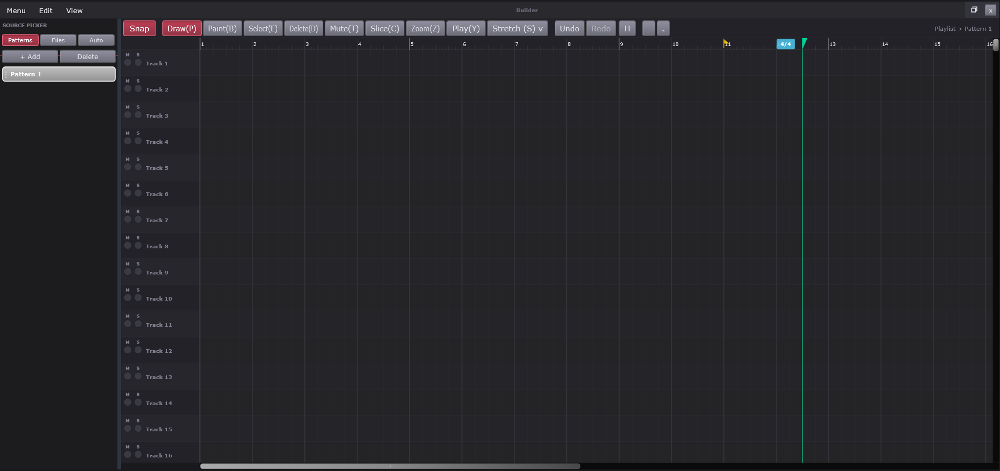
| # | On screen |
|---|---|
Edit menu | |
View menu | |
Patterns / Files / Auto - the three picker sources | |
+ Add - new pattern | |
Delete - remove the selected pattern. Marker-aware: deleting a pattern retires its markers with it | |
A pattern row in the picker - Pattern 1. Every pattern has one | |
Snap toggle | |
A tool button - Draw(P) / Paint(B) / Select(E) / Delete(D) / Mute(T) / Slice(C) / Zoom(Z) / Play(Y). One is active at a time and the bracketed letter is its key bind | |
Stretch (S) v - tool plus its own dropdown, tempo-relative stretch | |
Undo / Redo - greyed when the app-wide stack is empty at that end | |
H - opens the undo history (see Undo History) | |
- / + - horizontal zoom out / in | |
Breadcrumb - Playlist > Pattern 1, the grid current scope | |
| Bar ruler with bar numbers and beat ticks | |
| A track row - 500 rows exist, 40px each. Every row has the same three controls | |
M - row mute | |
S - row solo | |
Row name - Track 1, renameable, and rename is a first-class undoable action | |
| The grid canvas - blocks are drawn here; an edit snapshots blocks, row names and per-row group / colour / mute / solo as one undo unit | |
| Browser edge divider - drag resizes the browser (magnetic floor); drag past the floor to collapse it, and a chevron marks it collapsed | |
Ruler markers - yellow time-marker pennant, blue time-signature pill (4/4; outline = pattern-linked, solid = manual), amber tempo pill | |
| Playhead - the green flag in the ruler with its line down the grid |
The Builder is where patterns become a song. Left side: the browser. Right side: the grid - time running left to right, one row per track - where you place blocks. The toolbar between them decides what your mouse does.
The three sources - Patterns /
Files / Auto - decide what the browser lists:
your patterns, your audio files, or automation clips.
+ Add makes a new empty pattern,
Delete removes the selected one (its time
markers go with it), and each row in the
list can be dragged onto the grid to place it as a block.
Sort appears on the Files tab to order
its lists.
Snap makes drags and drops land on the grid lines - on for arranging, off for free placement. The tool buttons - Draw, Paint, Select, Delete, Mute, Slice, Zoom, Play, each with its key in parentheses - pick the mouse's job; one is active at a time. Stretch is a tool with its own dropdown: grab a block's edge and its CONTENTS stretch in time, tempo-aware.
Undo / Redo ride the app-wide history (greyed when empty at that end), H opens the full history as a clickable list, and - / + zoom the timeline.
The breadcrumb (Playlist >
Pattern 1) names what the grid is currently editing, and
the ruler counts the bars.
The ruler's markers: yellow pennants are
your named time markers; blue pills are time-signature changes
(4/4 - outlined when a pattern brought it along, solid when
placed by hand); amber pills are tempo changes.
The playhead - the green flag with its
line down the grid - is where playback is.
The track rows - hundreds available, each with Mute, Solo, and a name you can rename (and renaming is undoable like any edit).
The grid canvas is the song itself: blocks placed, stretched, sliced, muted. Any edit - blocks, names, groups - lands on the undo history as ONE step, however much it touched. The browser's edge is draggable: resize the browser, or drag it past its floor and the whole thing folds away - a chevron marks where to get it back.
The window's Edit and View menus - and the Menu dropdown - each have their own pages.
Every Builder shortcut - the tool keys in parentheses above and the
rest - is listed on the Key Binds window's Builder Page tab,
in the Help menu.
How this works: Undo, Keyboard shortcut dispatch and the key-listener ordering rule, Transport, playback and the metronome.
Patterns and arrangement
A pattern is a reusable block of notes; the arrangement is those blocks placed on a 500-row grid. Deleting a pattern retires its markers and its placed blocks with it, so the grid can never hold a block pointing at something that no longer exists.
// BaySickConstants.h -- the 96 PPQ tick model + snap grid (verbatim, lines 45-79)
// QA-Ee (96 PPQ): authoritative musical-domain resolution. One beat (one
// quarter-note) = 96 ticks. Every straight AND triplet division lands on an
// integer tick count (Bar=384, Beat=96, 1/8=48, 1/8-triplet=32, 1/16=24,
// 1/32=12, 1/32-triplet=8, 1/64=6, 1/64-triplet=4). Rides ABOVE QA-Ed's
// int64-sample transport. beats<->ticks converters live in PatternManager.h.
static constexpr int kTicksPerBeat = 96;
// Fixed tick grid for the FIXED divisions (param idx 2..10). idx 0 (Off) +
// idx 1 (Line) are not fixed values -> return 0 (the caller handles them).
inline int snapDivToTicks (int idx) noexcept
{
switch (idx)
{
case 2: return kTicksPerBeat * 4; // Bar = 384
case 3: return kTicksPerBeat; // Beat = 96
case 4: return kTicksPerBeat / 2; // 1/2 Beat = 48
case 5: return kTicksPerBeat / 3; // 1/3 Beat = 32 (eighth triplet)
case 6: return kTicksPerBeat / 4; // Step = 24 (1/16)
case 7: return kTicksPerBeat / 8; // 1/2 Step = 12 (1/32)
case 8: return kTicksPerBeat / 12; // 1/3 Step = 8 (1/32 triplet)
case 9: return kTicksPerBeat / 16; // 1/4 Step = 6 (1/64)
case 10: return kTicksPerBeat / 24; // 1/6 Step = 4 (1/64 triplet)
default: return 0; // 0 Off / 1 Line: not a fixed grid
}
}Full function — Source\PatternManager.h (beatsToTicks / ticksToBeats, lines 12-19; struct ArrangementBlock, lines 353-441) + Source\BaySickConstants.h (kTicksPerBeat, snap grid, block above)
// Source/BaySickConstants.h
#pragma once
// ── Core counts ───────────────────────────────────────────────────────────────
// Phase 2+ page limits (each page = one engine instance, not a 4-layer stack)
// QA-Layout T11 (L18): instance caps raised to their shipping values --
// Layers 20 / Bass 10 / Drums 32 / Clips 100 / Vox 10 / Inst 30. These are the
// ONE statement of each cap: BaySickGraph.h's MixerChannelIds::kMax*Strips are
// DERIVED from them, so a page cap cannot outrun its strip cap. Range checks
// read the constants, never a bare literal.
// NOTE the PR-target bases below are DERIVED by summing these caps, so this
// bump shifts every downstream target: pre-existing projects' piano-roll
// routing is invalidated once (accepted, Jeff -- QA-Layout L18).
static constexpr int kMaxLayerPages = 20; // max simultaneous Layers pages
static constexpr int kMaxBassPages = 10; // max simultaneous Bass pages
static constexpr int kMaxDrumPages = 32; // max simultaneous Drums pages (D1: dynamic-drum model)
// Phase G-2/G-3 (2026-04-28): Clips pages - 1:1 with audio inserts (mixer_audio_0..99).
// Each Clips tab is spawned by drag/drop of an audio file onto Builder; pageIndex is
// the audio-row index, so the engine output can mix into the matching audio_<row>
// InsertNode without a separate audio-row lookup table.
static constexpr int kMaxClipPages = 100; // matches the audio-insert cap
// Phase G-4 (2026-04-28): Vox + Inst pages - 1:1 with their mixer inserts.
static constexpr int kMaxVoxPages = 10; // matches MixerChannelIds::kMaxVoxStrips
static constexpr int kMaxInstPages = 30; // matches MixerChannelIds::kMaxInstStrips
// QA-ModelShell TS6 (BLU-447, 2026-07-29): hosted VST3 instrument tabs.
static constexpr int kMaxPluginPages = 20; // matches MixerChannelIds::kMaxPluginStrips
static constexpr int kBassPRTarget = kMaxLayerPages; // PRPendingOff target ID for bass roll
static constexpr int kDrumPRTarget = kMaxLayerPages + kMaxBassPages; // PRPendingOff target ID base for drum rolls
static constexpr int kClipPRTarget = kMaxLayerPages + kMaxBassPages + kMaxDrumPages; // PRPendingOff target ID base for clip rolls (G-3)
static constexpr int kVoxPRTarget = kClipPRTarget + kMaxClipPages; // G-4
static constexpr int kInstPRTarget = kVoxPRTarget + kMaxVoxPages; // G-4
// J-7b (2026-05-03): BaySickRustyDrums singleton - single PRPendingOff target
// (no array dimension since the engine is a 1-instance lock).
static constexpr int kRustyPRTarget = kInstPRTarget + kMaxInstPages;
// QA-ModelShell TS6: APPENDED after Rusty deliberately. These target IDs are
// DERIVED by summing the caps in order, so inserting anywhere earlier -- or
// changing any cap -- shifts every downstream target and invalidates the PR
// targets in saved projects. Rusty is a 1-instance singleton, so appending
// past it moves nothing.
static constexpr int kPluginsPRTarget = kRustyPRTarget + 1;
static constexpr int MAX_DRUM_ROWS = 16; // max rows visible in the drums grid
static constexpr int MAX_STEPS_TOTAL = 64; // max steps across any sequence
static constexpr int DEFAULT_BARS = 4;
static constexpr int DEFAULT_SPB = 4; // steps per bar
// QA-Ee (96 PPQ): authoritative musical-domain resolution. One beat (one
// quarter-note) = 96 ticks. Every straight AND triplet division lands on an
// integer tick count (Bar=384, Beat=96, 1/8=48, 1/8-triplet=32, 1/16=24,
// 1/32=12, 1/32-triplet=8, 1/64=6, 1/64-triplet=4). Rides ABOVE QA-Ed's
// int64-sample transport. beats<->ticks converters live in PatternManager.h.
static constexpr int kTicksPerBeat = 96;
// QA-Ee Stage 2 (Builder snap: 11-label scheme + dynamic "Line" grid). Shared
// by Builder / PianoRoll / Record-Quantize so the APVTS Int index 0..10 maps
// identically everywhere. (Label array static-in-header per the CLAUDE.md C++17
// const-char*[] gotcha -- never define it out-of-line in a .cpp.)
static const char* kUnifiedSnapLabels[11] = {
"Off", "Line", "Bar", "Beat", "1/2 Beat", "1/3 Beat",
"Step", "1/2 Step", "1/3 Step", "1/4 Step", "1/6 Step"
};
static constexpr int kNumUnifiedSnapDivs = 11;
// Fixed tick grid for the FIXED divisions (param idx 2..10). idx 0 (Off) +
// idx 1 (Line) are not fixed values -> return 0 (the caller handles them).
inline int snapDivToTicks (int idx) noexcept
{
switch (idx)
{
case 2: return kTicksPerBeat * 4; // Bar = 384
case 3: return kTicksPerBeat; // Beat = 96
case 4: return kTicksPerBeat / 2; // 1/2 Beat = 48
case 5: return kTicksPerBeat / 3; // 1/3 Beat = 32 (eighth triplet)
case 6: return kTicksPerBeat / 4; // Step = 24 (1/16)
case 7: return kTicksPerBeat / 8; // 1/2 Step = 12 (1/32)
case 8: return kTicksPerBeat / 12; // 1/3 Step = 8 (1/32 triplet)
case 9: return kTicksPerBeat / 16; // 1/4 Step = 6 (1/64)
case 10: return kTicksPerBeat / 24; // 1/6 Step = 4 (1/64 triplet)
default: return 0; // 0 Off / 1 Line: not a fixed grid
}
}
// Dynamic "Line" snap ladder (straight-time, coarse->fine, in ticks): Bar, Beat,
// 1/8, 1/16, 1/32, 1/64. A rung is "live" when its on-screen spacing
// (g/384 * pixelsPerBar) >= the caller's min-line-px threshold. Within each
// editor, Line snap AND the dynamic grid use the SAME threshold so they lock to
// the exact same set of visible lines: Builder uses kMinLinePx (its FL 16-cell
// cap); the Piano Roll + Drum Kit use kMinGridLinePx so their grid + Line snap
// both reach down to 1/64.
static constexpr int kDynamicSnapLadder[6] = { 384, 96, 48, 24, 12, 6 };
static constexpr int kMinLinePx = 12; // Builder grid + Line-snap threshold (on-screen px)
static constexpr int kMinGridLinePx = 5; // Piano Roll + Drum Kit grid + Line-snap threshold (px) -- finer, down to 1/64
// Finest live ladder rung (ticks) at the given pixels-per-bar zoom. Floor = Bar
// (384) so a zoomed-way-out Line snap still locks to bars.
inline int dynamicSnapTicks (double pixelsPerBar, int minLinePx = kMinLinePx) noexcept
{
int finest = kDynamicSnapLadder[0]; // Bar floor
for (int g : kDynamicSnapLadder)
if ((double) g / 384.0 * pixelsPerBar >= (double) minLinePx)
finest = g;
return finest;
}
// ── Triplet grid ladder ───────────────────────────────────────────────────────
// Parallel to kDynamicSnapLadder but subdividing the beat in THIRDS (ticks,
// coarse->fine): Bar, Beat, 1/3 Beat (1/8 triplet = 32t), 1/16 triplet (16t),
// 1/3 Step (1/32 triplet = 8t), 1/6 Step (1/64 triplet = 4t). This gives even
// per-beat doubling (3 -> 6 -> 12 -> 24 lines/beat) so triplets keep subdividing
// like triplets as you zoom; without the 16t rung the grid would jump 3 -> 12 and
// read as a 4-way split. The 16t rung is grid-only (no snap target -- the snap set
// is 1/8T / 1/32T / 1/64T), but every actual snap target still lands on a drawn line.
// A grid renderer uses this ladder when the active snap is a triplet division;
// otherwise it uses the straight kDynamicSnapLadder. Together these two are the
// single source of truth for grid lines across Builder / Piano Roll / Drum Kit.
static constexpr int kTripletGridLadder[6] = { 384, 96, 32, 16, 8, 4 };
// True when a unified snap division (0..10) is a triplet: 1/3 Beat (5),
// 1/3 Step (8), 1/6 Step (10).
inline bool isTripletSnapDiv (int div) noexcept
{
return div == 5 || div == 8 || div == 10;
}
// The grid ladder (straight or triplet, ticks, coarse->fine) for the active snap.
// The snap TYPE (straight vs triplet) picks the ladder; the snap DIVISION does NOT
// cap depth -- each renderer draws every rung that clears its pixel threshold, so
// zooming in always reveals down to 1/64 (straight) or 1/6 Step (triplet) no matter
// how coarse the snap is. countOut receives the rung count.
inline const int* gridLadderForSnap (int div, int& countOut) noexcept
{
if (isTripletSnapDiv (div)) { countOut = 6; return kTripletGridLadder; }
countOut = 6; return kDynamicSnapLadder;
}
// QA-Ee Stage 2 (content-bound dynamic zoom). The zoom-OUT minimum (px/bar or
// px/beat) is computed per-window as vpW / maxThings, where the span is
// max(emptyBaseline, furthestContent + pad). The empty baseline is
// monitor-dependent (vpW / kDefault*EmptyPx) so an empty project restricts
// zoom-out to a sensible workspace -- not hundreds of empty bars -- and expands
// incrementally as clips / markers / notes are added (FL playlist behavior).
static constexpr float kDefaultPlaylistEmptyPx = 24.f; // Builder: px/bar at empty zoom-out baseline (~vpW/24 bars on screen)
static constexpr float kDefaultPianoRollEmptyPx = 160.f; // Piano Roll: tighter px/bar baseline for micro work (~vpW/160 bars)
static constexpr float kBuilderZoomPadBars = 8.f; // Builder: bars of headroom past the furthest content edge
static constexpr float kPianoRollZoomPadBars = 1.f; // Piano Roll: bars of headroom past the furthest note edge
// Max zoom-IN: the musical span (in beats) that fills the viewport at deepest
// zoom. 0.5 beat across -> tick-level editing (~16 px/tick on an 800px view).
// Shared by both windows so micro-editing depth is consistent.
static constexpr float kMaxZoomInBeatsAcross = 0.5f;- Tick model: `kTicksPerBeat = 96` (96 PPQ) — every straight AND triplet division is an integer tick count: Bar=384, Beat=96, 1/2 Beat=48, 1/3 Beat (8th triplet)=32, Step (1/16)=24, 1/2 Step (1/32)=12, 1/3 Step (1/32 triplet)=8, 1/4 Step (1/64)=6, 1/6 Step (1/64 triplet)=4. Rides ABOVE the int64-sample transport (QA-Ed). Converters: `beatsToTicks = llround(beats * 96)`, `ticksToBeats = ticks / 96.0`.
- Unified snap: 11-index scheme shared by Builder / PianoRoll / Record-Quantize (`kNumUnifiedSnapDivs = 11`; idx 0 = Off, 1 = Line [dynamic ladder Bar/Beat/1-8/1-16/1-32/1-64, rung live when g/384 * pixelsPerBar >= min-line-px], 2..10 = fixed tick grid above).
- Note persistence: `PianoNote.startTicks`/`durationTicks` (serialized `st`/`dt`) are AUTHORITATIVE ON DISK; startBeat/durationBeats are the in-memory editing values, kept tick-aligned by the snap engine, derived at save, refilled at load (legacy beats migrated). Field-order invariant: tick fields and later additions stay LAST — positional brace-inits elsewhere stop at field 7 (`type`). Note defaults: midiNote 60, durationBeats 0.25 (= 24 ticks = 1/16), velocity 0.8.
- Enum ordinals persisted as raw int (append-only, explicit values, same rule as EffectType): `ClipType { Pattern=0, Audio=1, Automation=2 }`, `CurveType { Linear=0, Stepped=1, Spline=2 }`.
- Pattern defaults: DEFAULT_BARS=4, DEFAULT_SPB=4, MAX_STEPS_TOTAL=64; `totalSteps = clamp(1, 64, bars*stepsPerBar)`; `stepLengthBeats = 4.0/stepsPerBar`; default color 0xffb0b0b0. Per-pattern tempo REMOVED 2026-04-24 — tempo is global (`global_tempo` paramId).
- Time signature per pattern: tsNum/tsDen are the EFFECTIVE signature every consumer reads; tsLocked=true = user-set; false = follower re-derived live (placed -> earliest-block marker; unplaced -> bound marker -> current-TS selection -> 4/4).
- Rolls are per-tab arrays keyed by pageIndex (layerRoll/bassRoll/drumRolls/clipRoll/voxRoll/instRoll/pluginRoll, capacities = kMax*Pages) + two singletons (legacy drumRoll for migration, baySickRustyDrumsRoll).
- ArrangementBlock: START is beats-authoritative (ONE double `startBeats`, may be negative for slip-edit pre-roll); bar index DERIVED (`floor(startBeats/4)`); length is `lengthTicks` when > 0, else `lengthBars * 4` beats (`kLengthTicksUnset = -1`). XML still writes/reads startBar+startTicks at full precision, no migration. `contentOffsetTicks` = pattern-content phase in grid ticks (384/bar); audio clips continue via `contentStartSamples` instead.
- The ONE lane evaluator: `evalAutomationLaneAt` serves live editor tick, audio-thread APVTS pass, offline tempo clock and offline lane replay — points ASSUMED SORTED by timeTicks (every mutation site sorts); reached from processBlock so no allocation. LFO shapes: 0=Sine 1=Triangle 2=Saw 3=Square; empty lane returns 0.5.
Behind: Patterns menu, PATTERN, Swing knob, Pattern dropdown, View menu, Patterns / Files / Auto, + Add, Delete, A pattern row in the picker, Snap toggle, Stretch (S) v, H, - / +, Breadcrumb.
Builder Menu
Part of Builder Page
The Builder window's Menu dropdown.

| # | On screen |
|---|---|
Import Audio... - brings an audio file in as a clip | |
Rename Pattern (F2) | |
Find Next Empty (F3) | |
New Automation Clip... | |
Render Pattern to WAV... - renders the current pattern through the render options dialog |
The Builder window's Menu dropdown - clips and patterns.
Import Audio... brings an audio file in as a clip, ready to place on the grid.
Rename Pattern (F2) and Find Next Empty (F3) - the same pattern housekeeping as the app's Patterns menu.
New Automation Clip... starts an automation clip for the picker's Auto list.
Render Pattern to WAV... renders the current pattern alone to a file, through the render options dialog - a one-pattern export.
Builder Edit
Part of Builder Page
The Builder window's Edit menu. Everything routes to the arrangement grid.

| # | On screen |
|---|---|
Undo - greyed until the grid has something to step back | |
Redo | |
Select All (Ctrl+A) | |
Deselect (Esc) | |
Copy (Ctrl+C) | |
Paste (Ctrl+V) | |
Delete (Del) | |
Duplicate (Ctrl+B) |
The Builder's Edit menu - everything routes to the arrangement grid, and every entry mirrors a key.
Undo and Redo step the grid's history - greyed until there is something to step.
Select All (Ctrl+A) and Deselect (Esc) manage the selection; Copy (Ctrl+C), Paste (Ctrl+V), Delete (Del) and Duplicate (Ctrl+B) act on it - Duplicate copies and places in a single stroke.
How this works: Undo, Patterns and arrangement.
Builder View
Part of Builder Page
The Builder window's View menu.

| # | On screen |
|---|---|
Zoom In (+) | |
Zoom Out (-) | |
Performance Mode (Ctrl+P) - tick when on |
The Builder's View menu.
Zoom In (+) and Zoom Out (-) scale the timeline.
Performance Mode (Ctrl+P) - tick when on - strips the Builder down for live triggering rather than editing.
How this works: Patterns and arrangement.
Piano Roll
Related: Piano Roll Edit, Piano Roll Tools, Piano Roll Scale, Piano Roll Chords, Piano Roll View, Drum Kit
Owns the note grid, the keyboard and the controller lane. The Drum Kit is the same window with a drum kit bound to it (see Drum Kit), so it cross-references most of this.

| # | On screen |
|---|---|
Tab picker - Bass 1 v. Which tab the roll is editing; the roll follows this, not the ribbon selection | |
Player Page - jumps to the engine window for that tab | |
FX Rack - that tab rack | |
Edit menu | |
Tools menu | |
Scale menu | |
Chords menu | |
View menu | |
Snap toggle | |
Tool buttons - Draw / Paint / Del / Mute / Slice / Select / Zoom, one active at a time | |
Undo / Redo - the app-wide stack, see Undo / Redo | |
H - opens the undo history (see Undo History) | |
Target readout - Bass 1 - BaySickBass, the tab and the engine the notes will reach | |
| Bar ruler | |
| Playhead - the green marker at bar 1 | |
| Keyboard - clicking a key auditions that note on whichever engine the roll is pointed at, including hosted plugins. Silent if that tab has no instrument loaded yet, rather than erroring | |
Octave label - C6 / C7 / C8 on each C | |
| Note grid - rows are semitones, the C rows are banded lighter | |
Controller lane picker - Control > Velocity v. Chooses which per-note controller the lane below edits. The header also drag-resizes the lane vertically - a clean click picks the mode, a drag sets the app-wide lane height | |
| Controller lane - the bars under each note, with the 25 / 50 / 75 % guide lines | |
Armed note-type button - reads Flat / RP Slide / RT Slide / Porta / Bend. Click or S cycles it; S with notes selected converts them |
The Piano Roll is where notes are written: pitch runs up the left side as a piano keyboard, time runs left to right, and every note is a block you draw, drag and stretch. One roll serves every instrument in the project - the picker at the top says whose notes you are editing.
The tab picker (Bass 1) aims the roll at
a tab. The roll follows THIS picker, not whatever the ribbon shows -
which is how you can edit a bassline while a drum window is open.
The target readout
(Bass 1 - BaySickBass) confirms the tab and the engine your
notes will play. Player Page jumps to that
tab's instrument window and FX Rack to its
effects, so writing and sound-shaping stay one click apart.
The five menus - Edit, Tools, Scale, Chords, View - each have their own pages. Snap makes drawn and dragged notes land on the grid lines - on for tight rhythm, off for free timing.
The tool buttons - Draw, Paint, Del, Mute, Slice,
Select, Zoom - choose the mouse's job, one active at a time, each on a
single key too. Draw makes one note per click; Paint sweeps many;
Slice cuts. The note-type button beside
them arms what Draw draws: Flat ordinary notes, or the
slide and glide types (RP Slide / RT Slide /
Porta / Bend) that bend into or out of pitch.
Click it or press S to cycle; press S with
notes selected and those notes CONVERT to the armed type instead.
Undo / Redo ride the app-wide history, and H opens that history as a clickable list.
The ruler counts bars, the playhead is the green marker riding playback, and the grid has one row per semitone, with every C row banded lighter so you always know which octave you are in.
The keyboard is playable: click any key and the
aimed tab's instrument sounds that note - hosted plugins included -
so you can find your note before you draw it. Silence means the tab
has no instrument loaded. The C labels
(C6, C7...) anchor the octaves.
On instruments that use them, amber
full-width keys labelled like C6 Sustain are
keyswitches - keys that change HOW the instrument plays (its
articulation) instead of sounding a note - and where the instrument
supplies its own note names, they replace the octave labels.
The lane picker (Control > Velocity)
chooses what the strip below the grid edits - a clean click picks the
mode, and dragging the header vertically resizes the lane.
The lane shows one bar per note, with
25/50/75% guide lines. Velocity - how hard each note is played - is the
default mode: varying these bars gives a programmed part its dynamics.
Every Piano Roll shortcut - the tool keys, S for note
types, and the rest - is listed on the Key Binds window's
Piano Roll tab, in the Help menu.
How this works: EngineRig, Effect racks, Undo, Keyboard shortcut dispatch and the key-listener ordering rule, Patterns and arrangement, Transport, playback and the metronome.
Piano Roll
The roll edits whichever tab its own picker names, independently of what the ribbon is showing. The Drum Kit is the same window with a drum tab bound to it — the rows become drums instead of pitches.
// BaySickBassProcessor.cpp -- the auditionNote atomic-exchange pattern, top of processBlock
const int auditNote = mAuditionNote.exchange (-1);
if (auditNote >= 0 && auditNote <= 127)
{
midi.addEvent (juce::MidiMessage::noteOn (1, auditNote, (juce::uint8) 100), 0);
midi.addEvent (juce::MidiMessage::noteOff (1, auditNote),
juce::jmax (1, buffer.getNumSamples() - 1));
}
// Stuck-note fix: drain EVERY pending hold-off (mask), then the last-wins
// hold-on -- see auditionNoteOff.
juce::uint64 offWords[2];
for (int w = 0; w < 2; ++w)
{
offWords[w] = mAuditionHoldOff[w].exchange (0, std::memory_order_acq_rel);
if (offWords[w])
for (int b = 0; b < 64; ++b)
if (offWords[w] & (1ull << b))
midi.addEvent (juce::MidiMessage::noteOff (1, w * 64 + b), 0);
}
const int holdOnNote = mAuditionHoldOn.exchange (-1);
if (holdOnNote >= 0 && holdOnNote <= 127)
{
midi.addEvent (juce::MidiMessage::noteOn (1, holdOnNote, (juce::uint8) 100), 0);
// Review fix: press AND release landed inside ONE block -- close the
// note at block-end or it rings forever (see HarmlessProcessor).
if (offWords[holdOnNote >> 6] & (1ull << (holdOnNote & 63)))
midi.addEvent (juce::MidiMessage::noteOff (1, holdOnNote),
juce::jmax (1, buffer.getNumSamples() - 1));
}Full function — Source\PatternManager.h (PianoNote — the note model, lines 179-220)
// Source/PatternManager.h - PianoNote (complete)
// ── Piano roll note ───────────────────────────────────────────────────────────
struct PianoNote
{
int midiNote { 60 }; // 0–127
double startBeat { 0.0 }; // from pattern start, in beats
double durationBeats { 0.25 }; // note length in beats
float velocity { 0.8f }; // 0–1
float panning { 0.0f }; // -1 (left) to +1 (right)
float finePitch { 0.0f }; // cents ±100
NoteType type { NoteType::Standard }; // Standard / RampSlide / RetrigSlide / Portamento
bool muted { false }; // muted notes play silently
int groupId { -1 }; // -1 = ungrouped; same id = grouped
float filterCutoff { 0.5f }; // 0=closed, 1=fully open (control lane)
float releaseAmt { 0.5f }; // release-time scale, 0.5 = neutral (CC72)
float resonance { 0.5f }; // filter resonance offset, 0.5 = neutral (CC71)
// §P4.2 Phase C1: drum slot index (0..15) for drumRoll notes.
// -1 = not a drum note (used on layerRoll / bassRoll).
// For drum-grid-mode notes created pre-C2 this is redundant with
// (51 - midiNote); C2 full-roll mode will use slotIndex independently
// from midiNote so a slot can play any pitch.
int slotIndex { -1 };
// QA-Ee Stage 3b: 96 PPQ tick representation, authoritative on disk (serialized as
// `st`/`dt`). startBeat/durationBeats remain the in-memory editing values (kept
// tick-aligned by the snap engine); `st`/`dt` are derived from them at save, and
// these fields are filled from `st`/`dt` (or migrated legacy beats) on load.
// KEEP THESE LAST: positional aggregate-inits elsewhere init the leading fields
// (PianoNote{ midiNote, startBeat, durationBeats, velocity, ... }); trailing fields
// just take their defaults there. Inserting mid-struct breaks those brace-inits.
// Defaults mirror startBeat 0 / durationBeats 0.25 (24t = 1/16 note).
juce::int64 startTicks { 0 };
juce::int64 durationTicks { 24 };
// QA-SlideSliceGlide S-4: Portamento glide length in beats. A Porta note
// glides over this instead of its own length or the block length; ignored by
// the other note types. Kept after the tick fields so positional brace-inits
// (which stop at `type`, field 7) never reach it.
double portaLengthBeats { 1.0 };
// QA-SlideSampler Task 4: native "Bend" note (Guitars/Basses). bendSemitones
// = signed bend amount, gated to the patch's real range at the UI; bendShape =
// the pitch contour over the note. Ignored by other note types + engines.
// KEEP LAST (same brace-init reasoning as portaLengthBeats above).
double bendSemitones { 0.0 };
BendShape bendShape { BendShape::RampHold };
};- Audition pattern (all 7 engine processors: BaySickSynth, BaySickBass, Harmless, BaySickPlayer, BaySickGuitars, BaySickBasses, BaySickRustyDrums): `auditionNote(int)` stores into `std::atomic<int> mAuditionNote { -1 }`; processBlock opens with `int n = mAuditionNote.exchange(-1); if (n >= 0) { noteOn at sample 0, noteOff at max(1, numSamples-1) }`. Lock-free by design — validated against Vital/Surge XT (daw-architecture-research 2026-05-08 §3); do NOT replace with `juce::MidiMessageCollector` (it has a CriticalSection mutex).
- One-shot audition: noteOn velocity 100, auto-noteOff at block end. Held audition: `mAuditionHoldOn` (last-wins int) + `mAuditionHoldOff[2]` (a 128-bit accumulate MASK, `fetch_or(1ull << (note & 63))` into word `note >> 6`) — offs ACCUMULATE so a fast drag can't drop one; drain order is offs first, then hold-on; a press+release landing inside ONE block closes at block-end or it rings forever.
- sfizz trio (Guitars/Basses/RustyDrums) packs VELOCITY into the upper byte of the same atomic: `packed = note | (velocity << 8)`; unpack `note = packed & 0x7F`, `vel = (packed >> 8) & 0x7F`, vel 0 bumped to 100 (legacy callers). They also expose `isAuditionPending()` (`mAuditionNote.load(acquire) != -1`) so the idle-suspend dispatcher wakes the chain.
- Dispatch route: pages resolve engines THROUGH the rig (never cached pointers); Inst tabs wire roll-keyboard clicks via `EngineConnection::auditionMomentary`; RustyDrums wires kit-graphic hitboxes the same way; hosted VST3 instrument tabs have NO auditionNote — the roll keyboard reaches them through the live-MIDI route (EngineKind::Plugin = target kind 10), never a second synthesized MIDI path.
- Roll audition UX contract: held audition fires on mouseDown of Draw/Move, releases on mouseUp; a pitch change mid-drag fires AuditionOff(prev) then AuditionOn(new) — continuous sustained note following the dragged pitch (FL piano-roll feel). `triggerAudition` always releases the prior held note first (`mAuditionHeldNote`).
- Note model: `PianoNote` fields and ranges — midiNote 0..127, velocity 0..1 (default 0.8), panning -1..+1, finePitch ±100 cents, control lanes filterCutoff/releaseAmt/resonance all 0..1 with 0.5 neutral (release = CC72, resonance = CC71), groupId -1 = ungrouped, slotIndex -1 = not a drum note. Ticks authoritative on disk (`st`/`dt`, 96 PPQ; default durationTicks 24 = 1/16). NoteType: Standard / RampSlide / RetrigSlide / Portamento (+ native Bend via bendSemitones/bendShape on Guitars/Basses). Struct-layout invariant: new fields go LAST — positional brace-inits stop at field 7 (`type`).
- Drum-mode keyboard preview: note = 36 + slotIndex -> `auditionSlot(note - 36)` (PianoRollContainer::onNotePreview).
Behind: Piano Roll slot, Tab picker, Tools menu, Scale menu, Chords menu, View menu, Snap toggle, H, Octave label, Note grid, Controller lane picker, Controller lane.
Piano Roll Edit
Part of Piano Roll
The Piano Roll Edit menu.

| # | On screen |
|---|---|
Select All (Ctrl+A) | |
Deselect | |
Copy (Ctrl+C) | |
Paste (Ctrl+V) | |
Delete | |
Duplicate (Ctrl+B) |
The Piano Roll's Edit menu.
Select All (Ctrl+A) and Deselect manage the selection.
Copy (Ctrl+C), Paste (Ctrl+V), Delete and Duplicate (Ctrl+B) act on selected notes - Duplicate places the copy right after the original.
How this works: Piano Roll.
Piano Roll Tools
Part of Piano Roll
The Piano Roll Tools menu - the note processors.

| # | On screen |
|---|---|
Quantize (Alt+Q) - snaps the selection to the Quantize Settings grid | |
Strum (Alt+S) | |
Arpeggiate (Alt+A) | |
Chop... submenu - Into 2 (halves) / Into 3 (thirds) / Into 4 (quarters) / Into 6 / Into 8 | |
Glue (Ctrl+G) | |
Articulate (Alt+L) | |
Randomize (Alt+R) | |
Humanize... | |
Riff Machine... (Alt+E) - the 8-step riff generator | |
Generate Chords (Alt+P) | |
Quantize Settings submenu - 1/4 / 1/8 / 1/16 / 1/32, tick on the current grid | |
Transpose Up (Shift+Up) | |
Transpose Down (Shift+Down) | |
Transpose Up Octave (Ctrl+Up) | |
Transpose Down Octave (Ctrl+Down) |
The Piano Roll's Tools menu - the note processors. Everything here works on the selection (or everything, with nothing selected).
Quantize (Alt+Q) snaps notes to the Quantize Settings grid. Strum (Alt+S) staggers a chord's notes like a strummed guitar, and Arpeggiate (Alt+A) breaks the chord into a pattern of single notes.
Chop... cuts notes into equal pieces - halves, thirds, quarters, sixths or eighths.
Glue (Ctrl+G) joins adjacent same-pitch notes back into one; Articulate (Alt+L) shapes note lengths; Randomize (Alt+R) generates new material and Humanize... nudges timing and velocity off the grid just enough to feel played.
Riff Machine... (Alt+E) is the eight-step riff generator - progression, chords, arpeggiation and the rest, with live preview and one-step accept. Generate Chords (Alt+P) builds chords under a melody.
Quantize Settings picks the grid Quantize snaps to -
1/4 down to 1/32, tick on the current.
Transpose Up / Down (Shift+Up/Down) move the selection a semitone; the Octave pair (Ctrl+Up/Down) move it an octave.
Everything here lands on the undo stack as one step per use.
How this works: Piano Roll.
Piano Roll Scale
Part of Piano Roll
The Piano Roll Scale menu.

| # | On screen |
|---|---|
Snap to Scale - tick when a scale is active; drawn and dragged notes land in it | |
Root submenu - C through B, tick on the current root | |
Scale submenu - the scale list, tick on the current one |
The Piano Roll's Scale menu.
Snap to Scale - the tick shows a scale is active. With it on, drawn and dragged notes land on legal pitches.
Root picks the key's home note - C
through B - and Scale picks
the flavor from the list. Root plus scale is the whole definition:
C + Minor means every note you place belongs to C minor.
How this works: Piano Roll.
Piano Roll Chords
Part of Piano Roll
The Piano Roll Chords menu.

| # | On screen |
|---|---|
The chord types - Major through Add 9, one tick at a time. With a chord ticked, the Draw tool places that chord instead of single notes |
The Piano Roll's Chords menu.
The chord list - Major through
Add 9, one tick at a time. With a chord ticked, the Draw tool
places that whole chord instead of single notes: click once, get three or
four notes voiced under your click. The list runs from simple triads
(Major, Minor) at the top to sevenths and
ninths further down.
How this works: Piano Roll.
Piano Roll View
Part of Piano Roll
The Piano Roll View menu.

| # | On screen |
|---|---|
Zoom In | |
Zoom Out | |
Zoom In Vertical | |
Zoom Out Vertical | |
Scroll to Playhead | |
Ghost Notes - tick when other tabs' notes ghost behind yours | |
Velocity Lane - tick when the bottom lane is shown |
The Piano Roll's View menu.
Zoom In / Out scale time, and the Vertical pair scale pitch - tall rows for precise edits, short rows for seeing the whole part.
Scroll to Playhead jumps the view to wherever playback is.
Ghost Notes - tick when on - draws the OTHER tabs' notes faintly behind yours, so a bassline can be written against the chords without leaving the window.
Velocity Lane shows or hides the controller lane at the bottom.
How this works: Piano Roll.
Drum Kit
Part of Piano Roll · Related: Drum Kit Edit, Drum Kit Tools, Drum Kit View
The same roll window bound to a drum kit. Only what DIFFERS from the Piano Roll is numbered (see Piano Roll); everything else cross-references it.

| # | On screen |
|---|---|
Tab picker reading Drum Kit v - see Tab picker | |
Lock/Unlock 1-16 - locks the whole visible bank of rows against edits | |
| A kit row - sixteen per bank. Every row has the same four controls | |
Pick a sound v - the row sound picker. This is what an empty row reads, and picking here is what gives the row a voice | |
M - row mute | |
S - row solo | |
1-16 / 17-32 - switches between the TWO INDEPENDENT kits: separate drums bus, separate kit file, separate lock; a drum never moves between them | |
Kit v - kit load / save menu - saves / loads the 16 drums of the kit you are on | |
Sel - the roll Select tool under its drum-kit label, see Tool buttons | |
| Row audition key - the white piano key at the row's right end; greys while held |
The Drum Kit is the Piano Roll rebuilt for beats: instead of one row per pitch, one row per DRUM, each with its own sound. Everything not covered here - tools, snap, menus, the lane - works exactly as it does on the Piano Roll.
A row. Sixteen per kit, and each carries, left to
right: the sound picker (reads Pick a
sound until you choose - a row is silent until it has a sound),
Mute and
Solo, and at the right end
an audition key - the white piano key
that plays the row's sound so you can check it without writing a note
(it greys while held). A locked row shows
[L] before its name.
1-16 / 17-32. Two INDEPENDENT kits, not two halves of one: each has its own drum bus in the mixer, its own kit file, its own lock, and a drum never moves between them. Kit saves and loads the sixteen drums of whichever kit you are on; Lock/Unlock 1-16 locks the visible kit's rows against accidental edits.
The tab picker works as on the roll; Sel is the roll's Select tool.
The kit's mouse moves - dragging a row's grip to reorder, the wheel
stepping one row at a time, right-click + wheel scrolling through time -
are listed with every other shortcut on the Key Binds window's
Drum Kit tab, in the Help menu.
Drum Kit Edit
Part of Drum Kit
The Drum Kit Edit menu - the same edit set as the Piano Roll (see Piano Roll Edit).

| # | On screen |
|---|---|
Select All (Ctrl+A) | |
Deselect | |
Copy (Ctrl+C) | |
Paste (Ctrl+V) | |
Delete | |
Duplicate (Ctrl+B) |
The Drum Kit's Edit menu - the same edit set as the Piano Roll's.
Select All (Ctrl+A), Deselect, Copy (Ctrl+C), Paste (Ctrl+V), Delete and Duplicate (Ctrl+B) - selection and clipboard over drum hits, exactly as on the roll. Select a bar, press Ctrl+B, and Duplicate repeats it.
How this works: Piano Roll.
Drum Kit Tools
Part of Drum Kit
The Drum Kit Tools menu. No Arpeggiate, Generate Chords or Transpose here - those are pitch-based and do not translate to a slot-per-row drum layout.

| # | On screen |
|---|---|
Quantize (Alt+Q) | |
Strum (Alt+S) | |
Chop... submenu - Into 2 (halves) / Into 3 (thirds) / Into 4 (quarters) / Into 6 / Into 8 | |
Glue (Ctrl+G) | |
Articulate (Alt+L) | |
Randomize (Alt+R) | |
Quantize Settings submenu - 1/4 / 1/8 / 1/16 / 1/32, tick on the current grid |
The Drum Kit's Tools menu. No Arpeggiate, Generate Chords or Transpose here - those are pitch tools, and a slot-per-row drum layout has no pitch to work.
Quantize (Alt+Q) snaps hits to the grid. Strum (Alt+S) staggers simultaneous hits slightly - flams and humanized layers.
Chop... cuts long hits into evens; Glue (Ctrl+G) rejoins them; Articulate (Alt+L) shapes lengths; Randomize (Alt+R) generates variation.
Quantize Settings - the grid Quantize uses,
1/4 to 1/32, tick on the current.
How this works: Piano Roll.
Drum Kit View
Part of Drum Kit
The Drum Kit View menu. No vertical zoom (rows are fixed height) and no Ghost Notes here.

| # | On screen |
|---|---|
Zoom In | |
Zoom Out | |
Scroll to Playhead | |
Velocity Lane - tick when the bottom lane is shown |
The Drum Kit's View menu. No vertical zoom - drum rows are fixed height - and no Ghost Notes; those belong to the pitched roll.
Zoom In and Zoom Out scale time.
Scroll to Playhead jumps the view to playback.
Velocity Lane - tick when shown - the per-hit velocity bars at the bottom.
How this works: Piano Roll.
Parameter Menu
The right-click menu on ANY automatable control. Small, and load-bearing: this is the whole entry point for both automation and MIDI Learn. MIDI Learn has no window of its own - this menu is it. The picture shows the everyday shape; three of the rows below appear only in the situations they name.

| # | On screen |
|---|---|
Automate: <target> - names the control it will create a lane for, e.g. Automate: Mx Master - Fader. Opens the Event Editor on that target, see Event Editor | |
Type in value... - exact numeric entry, for when a drag will not land on the number you want. Value controls only - a bare selector does not offer it | |
MIDI Learn - arms the control; the next controller move binds to it. Reads MIDI Learn (no MIDI input devices) and greys when nothing is plugged in - plug a device in and reopen the menu, hot-plug is not watched |
The parameter menu - right-click any knob, slider or selector in the app and this is what appears. It is the whole entry point for automation and MIDI Learn. The picture shows the everyday shape; three of the rows appear only in the situations they name.
Automate: names the control it will create a lane
for - Automate: Mx Master - Fader - and opens the Event
Editor on it. Any knob you can touch, you can automate, from here.
Type in value... - exact numeric entry, for when a drag will not land on the number you want. Value controls only; a bare selector does not offer it.
Modulate envelope... - Harmless controls only, and only those registered as modulation targets: jumps the Harmless Mod editor straight to that control.
MIDI Learn arms the control - the next thing you
move on your controller binds to it. With no MIDI device plugged in it
reads MIDI Learn (no MIDI input devices) and greys; plug in
and reopen the menu (hot-plug is not watched).
MIDI Forget: appears only when the control already has a mapping, naming the binding it will drop, and Save MIDI mappings as global default appears once any mapping exists - your controller layout, kept across projects.
The menu is offered by every automatable control in the
app. The rare control with deliberately no lane simply does not offer
Automate.
How this works: Automation.
MIDI Learn
Arming a control and binding the next controller movement to it. There is no mapping window; the right-click menu is the entire interface.
Notes played from the UI — clicking a roll key, clicking a drum on the kit graphic — reach the engine through a single atomic swap read at the top of the audio block, rather than through a queue with a lock in it.
// MidiLearnRegistry.h -- MessageType + Mapping (the binding record, verbatim)
enum class MessageType
{
Cc = 0, // Control Change (uses ccNumber 0..127)
PitchBend = 1, // 14-bit value 0..16383 -> normalised 0..1
ChannelPressure = 2, // 7-bit value 0..127
// PolyAftertouch deferred -- rare in beginner gear, learnable later.
};
struct Mapping
{
juce::String paramId; // APVTS paramId
MessageType msgType { MessageType::Cc };
int ccNumber { 0 }; // 0..127 for CC
int channel { 0 }; // 0 = Omni, 1..16
juce::String deviceName; // empty = any device
juce::String formula; // empty = linear (I-3c)
};Full function — Source\MidiLearn\MidiLearnRegistry.cpp (beginLearn line 208, tryCaptureLearn line 291, takeCapturedMapping line 233 — the arm / capture / complete handshake)
// Source/MidiLearn/MidiLearnRegistry.cpp
#include "MidiLearnRegistry.h"
namespace
{
constexpr const char* kMappingTag = "Mapping";
constexpr const char* kAttrParamId = "paramId";
constexpr const char* kAttrMsgType = "msgType";
constexpr const char* kAttrCcNumber = "cc";
constexpr const char* kAttrChannel = "ch"; // 0 = Omni, 1..16
constexpr const char* kAttrDeviceName = "device"; // empty = any
constexpr const char* kAttrFormula = "formula"; // empty = linear
juce::String msgTypeToString (MidiLearnRegistry::MessageType t)
{
switch (t)
{
case MidiLearnRegistry::MessageType::Cc: return "cc";
case MidiLearnRegistry::MessageType::PitchBend: return "pitchbend";
case MidiLearnRegistry::MessageType::ChannelPressure: return "aftertouch";
}
return "cc";
}
MidiLearnRegistry::MessageType msgTypeFromString (const juce::String& s)
{
if (s == "pitchbend") return MidiLearnRegistry::MessageType::PitchBend;
if (s == "aftertouch") return MidiLearnRegistry::MessageType::ChannelPressure;
return MidiLearnRegistry::MessageType::Cc;
}
}
// ─────────────────────────────────────────────────────────────────────────────
// Mutation
// ─────────────────────────────────────────────────────────────────────────────
void MidiLearnRegistry::setMapping (const juce::String& paramId, const Mapping& m)
{
if (paramId.isEmpty()) return;
{
const juce::SpinLock::ScopedLockType lk (mLock);
Mapping copy = m;
copy.paramId = paramId;
mMappings[paramId] = std::move (copy);
}
if (onChanged) onChanged();
}
void MidiLearnRegistry::removeMapping (const juce::String& paramId)
{
bool fired = false;
{
const juce::SpinLock::ScopedLockType lk (mLock);
fired = (mMappings.erase (paramId) > 0);
}
if (fired && onChanged) onChanged();
}
void MidiLearnRegistry::clear()
{
{
const juce::SpinLock::ScopedLockType lk (mLock);
mMappings.clear();
mLearnTargetParamId = {};
mCaptureReady.store (false, std::memory_order_relaxed);
}
if (onChanged) onChanged();
}
// ─────────────────────────────────────────────────────────────────────────────
// Read
// ─────────────────────────────────────────────────────────────────────────────
bool MidiLearnRegistry::getMapping (const juce::String& paramId, Mapping& out) const
{
const juce::SpinLock::ScopedLockType lk (mLock);
auto it = mMappings.find (paramId);
if (it == mMappings.end()) return false;
out = it->second;
return true;
}
bool MidiLearnRegistry::hasMapping (const juce::String& paramId) const
{
const juce::SpinLock::ScopedLockType lk (mLock);
return mMappings.find (paramId) != mMappings.end();
}
juce::Array<juce::String> MidiLearnRegistry::getAllParamIds() const
{
juce::Array<juce::String> out;
const juce::SpinLock::ScopedLockType lk (mLock);
out.ensureStorageAllocated ((int) mMappings.size());
for (const auto& kv : mMappings)
out.add (kv.first);
return out;
}
// ─────────────────────────────────────────────────────────────────────────────
// Audio-thread dispatch
// ─────────────────────────────────────────────────────────────────────────────
float MidiLearnRegistry::extractNormalisedValue (MessageType expected,
const juce::MidiMessage& msg)
{
switch (expected)
{
case MessageType::Cc:
if (! msg.isController()) return -1.0f;
return juce::jlimit (0.0f, 1.0f, (float) msg.getControllerValue() / 127.0f);
case MessageType::PitchBend:
if (! msg.isPitchWheel()) return -1.0f;
// 14-bit value 0..16383; centre is 8192.
return juce::jlimit (0.0f, 1.0f, (float) msg.getPitchWheelValue() / 16383.0f);
case MessageType::ChannelPressure:
if (! msg.isChannelPressure()) return -1.0f;
return juce::jlimit (0.0f, 1.0f, (float) msg.getChannelPressureValue() / 127.0f);
}
return -1.0f;
}
bool MidiLearnRegistry::eventMatchesMapping (const Mapping& m,
const juce::String& sourceDeviceName,
const juce::MidiMessage& msg)
{
// Device check first (cheapest non-match): empty mapping device = any.
if (m.deviceName.isNotEmpty() && m.deviceName != sourceDeviceName)
return false;
// Channel check: 0 = Omni, otherwise must match exactly. MIDI channels
// are 1-16 in the user-facing world; juce::MidiMessage::getChannel returns
// 1-16 for channel-voice messages, 0 for sysex/other.
if (m.channel != 0)
{
const int evChan = msg.getChannel();
if (evChan == 0 || evChan != m.channel) return false;
}
// Message-type-specific checks.
switch (m.msgType)
{
case MessageType::Cc:
if (! msg.isController()) return false;
if (msg.getControllerNumber() != m.ccNumber) return false;
return true;
case MessageType::PitchBend:
return msg.isPitchWheel();
case MessageType::ChannelPressure:
return msg.isChannelPressure();
}
return false;
}
int MidiLearnRegistry::dispatchEvent (juce::AudioProcessorValueTreeState& apvts,
const juce::String& sourceDeviceName,
const juce::MidiMessage& msg)
{
// Snapshot the matching mappings under lock, then release before calling
// setValueNotifyingHost -- the host's listener notification path may not
// tolerate being held off too long.
//
// 2026-07-19: this snapshot used to be a std::vector of {juce::String,
// MessageType}, i.e. a heap allocation plus a string copy per dispatched
// event -- in the render callback, continuously, for the whole duration of
// a knob sweep. It is now a fixed stack array holding already-resolved
// parameter POINTERS. Resolving inside the lock is what makes releasing it
// safe: APVTS parameters outlive the app, whereas a pointer into the map's
// keys would dangle if the message thread erased that mapping.
struct Hit { juce::RangedAudioParameter* param; MessageType type; };
// One event firing more than this many mappings means the user bound 17+
// params to a single CC; the tail is dropped rather than allocated for.
static constexpr int kMaxHitsPerEvent = 16;
Hit hits[kMaxHitsPerEvent];
int numHits = 0;
{
const juce::SpinLock::ScopedTryLockType tryLk (mLock);
if (! tryLk.isLocked()) return 0;
for (const auto& kv : mMappings)
{
if (numHits >= kMaxHitsPerEvent) break;
if (! eventMatchesMapping (kv.second, sourceDeviceName, msg)) continue;
if (auto* p = dynamic_cast<juce::RangedAudioParameter*> (apvts.getParameter (kv.first)))
hits[numHits++] = { p, kv.second.msgType };
}
}
// QA-UndoCoverage Task 6: hardware CC streams have no gesture boundaries,
// so mapped writes are EXCLUDED from the undo history (an un-bracketed
// continuous stream would contaminate whatever transaction is open).
// Making hardware tweaks undoable would need idle-timeout gesture
// bracketing -- surfaced to Jeff as an open question, not built.
juce::AudioProcessorValueTreeState::ScopedProgrammaticParamWrites spw;
int fired = 0;
for (int i = 0; i < numHits; ++i)
{
const float norm = extractNormalisedValue (hits[i].type, msg);
if (norm < 0.0f) continue;
hits[i].param->setValueNotifyingHost (norm);
++fired;
}
return fired;
}
// ─────────────────────────────────────────────────────────────────────────────
// Learn-mode capture
// ─────────────────────────────────────────────────────────────────────────────
void MidiLearnRegistry::beginLearn (const juce::String& paramId)
{
{
const juce::SpinLock::ScopedLockType lk (mLock);
mLearnTargetParamId = paramId;
// Drop any stale capture on THIS thread, so the audio thread only ever
// assigns into empty strings (see takeCapturedMapping).
mPendingCapture = {};
mCaptureReady.store (false, std::memory_order_relaxed);
}
if (onChanged) onChanged();
}
void MidiLearnRegistry::cancelLearn()
{
bool wasLearning = false;
{
const juce::SpinLock::ScopedLockType lk (mLock);
wasLearning = mLearnTargetParamId.isNotEmpty();
mLearnTargetParamId = {};
mCaptureReady.store (false, std::memory_order_relaxed);
}
if (wasLearning && onChanged) onChanged();
}
bool MidiLearnRegistry::takeCapturedMapping (Mapping& out)
{
if (! mCaptureReady.load (std::memory_order_acquire)) return false;
const juce::SpinLock::ScopedLockType lk (mLock);
if (! mCaptureReady.exchange (false, std::memory_order_acq_rel)) return false;
out = mPendingCapture;
// Release our reference HERE, on the message thread. If this is left for
// the audio thread's next assignment to overwrite, and the mapping this
// paramId belonged to has since been removed, that overwrite drops the last
// reference and frees in the render callback -- the same defect one level
// down. `out` holds a reference at this point, so this cannot free either.
mPendingCapture = {};
return out.paramId.isNotEmpty();
}
bool MidiLearnRegistry::isLearning() const noexcept
{
const juce::SpinLock::ScopedLockType lk (mLock);
return mLearnTargetParamId.isNotEmpty();
}
juce::String MidiLearnRegistry::getLearnTargetParamId() const
{
const juce::SpinLock::ScopedLockType lk (mLock);
return mLearnTargetParamId;
}
bool MidiLearnRegistry::buildMappingFromEvent (Mapping& outM,
const juce::String& sourceDeviceName,
const juce::MidiMessage& msg)
{
if (msg.isController())
{
outM.msgType = MessageType::Cc;
outM.ccNumber = msg.getControllerNumber();
outM.channel = msg.getChannel();
outM.deviceName = sourceDeviceName;
return true;
}
if (msg.isPitchWheel())
{
outM.msgType = MessageType::PitchBend;
outM.ccNumber = 0;
outM.channel = msg.getChannel();
outM.deviceName = sourceDeviceName;
return true;
}
if (msg.isChannelPressure())
{
outM.msgType = MessageType::ChannelPressure;
outM.ccNumber = 0;
outM.channel = msg.getChannel();
outM.deviceName = sourceDeviceName;
return true;
}
return false;
}
bool MidiLearnRegistry::tryCaptureLearn (const juce::String& sourceDeviceName,
const juce::MidiMessage& msg)
{
// Audio thread. Everything below stays inside the existing try-lock and
// touches only pre-constructed storage: no allocation, no map insert, no
// std::function, no onChanged() notify. The message thread does all of
// that when it drains via takeCapturedMapping().
const juce::SpinLock::ScopedTryLockType tryLk (mLock);
if (! tryLk.isLocked()) return false;
if (mLearnTargetParamId.isEmpty()) return false;
// Assigning into mPendingCapture only moves refcounts: paramId's source is
// mLearnTargetParamId (still alive at this point) and deviceName's is the
// event queue's interned name table, which outlives the queue's events.
// Neither assignment can drop a last reference, so neither can free.
if (! buildMappingFromEvent (mPendingCapture, sourceDeviceName, msg))
return false; // not a learnable event type; fall through to dispatch
mPendingCapture.paramId = mLearnTargetParamId;
mLearnTargetParamId = {};
mCaptureReady.store (true, std::memory_order_release);
return true; // captured -- suppress regular dispatch
}
// ─────────────────────────────────────────────────────────────────────────────
// Persistence
// ─────────────────────────────────────────────────────────────────────────────
juce::ValueTree MidiLearnRegistry::saveToValueTree() const
{
juce::ValueTree root (kRootTag);
const juce::SpinLock::ScopedLockType lk (mLock);
for (const auto& kv : mMappings)
{
const auto& m = kv.second;
juce::ValueTree node (kMappingTag);
node.setProperty (kAttrParamId, m.paramId, nullptr);
node.setProperty (kAttrMsgType, msgTypeToString (m.msgType), nullptr);
node.setProperty (kAttrCcNumber, m.ccNumber, nullptr);
node.setProperty (kAttrChannel, m.channel, nullptr);
node.setProperty (kAttrDeviceName, m.deviceName, nullptr);
node.setProperty (kAttrFormula, m.formula, nullptr);
root.appendChild (node, nullptr);
}
return root;
}
void MidiLearnRegistry::loadFromValueTree (const juce::ValueTree& tree)
{
if (! tree.isValid() || ! tree.hasType (kRootTag)) return;
{
const juce::SpinLock::ScopedLockType lk (mLock);
mMappings.clear();
for (int i = 0; i < tree.getNumChildren(); ++i)
{
const auto node = tree.getChild (i);
if (! node.hasType (kMappingTag)) continue;
Mapping m;
m.paramId = node.getProperty (kAttrParamId, "").toString();
m.msgType = msgTypeFromString (node.getProperty (kAttrMsgType, "cc").toString());
m.ccNumber = (int) node.getProperty (kAttrCcNumber, 0);
m.channel = (int) node.getProperty (kAttrChannel, 0);
m.deviceName = node.getProperty (kAttrDeviceName, "").toString();
m.formula = node.getProperty (kAttrFormula, "").toString();
if (m.paramId.isNotEmpty())
mMappings[m.paramId] = std::move (m);
}
}
if (onChanged) onChanged();
}
std::vector<MidiLearnRegistry::Mapping> MidiLearnRegistry::getAllMappings() const
{
std::vector<Mapping> out;
const juce::SpinLock::ScopedLockType lk (mLock);
out.reserve (mMappings.size());
for (const auto& kv : mMappings)
out.push_back (kv.second);
return out;
}- Binding record: `Mapping { paramId, msgType, ccNumber 0..127, channel (0 = Omni, 1..16), deviceName (empty = any device), formula (empty = linear) }`. One paramId has AT MOST one mapping; re-learning replaces. Learnable types: CC, PitchBend (14-bit 0..16383 -> 0..1), ChannelPressure (7-bit); poly aftertouch deferred.
- Match rule (`eventMatchesMapping`): msgType + ccNumber + channel + deviceName all must match; channel 0 (Omni) matches any channel, empty deviceName matches any device.
- Value curve: v1 is LINEAR only — CC 0..127 -> param min..max via NormalisableRange; `formula` field reserved for FL-style formulas (I-3c).
- Dispatch is BLOCK-RATE (locked spec, Jeff 2026-05-02): events fire at the audio-block boundary, not sample-accurate. `dispatchEvent` try-locks; a missed CC frame is unnoticeable for human-driven CCs. Lookup O(N), expected N < 100.
- Learn handshake (allocation-free on audio): UI `beginLearn(paramId)` -> audio/MIDI thread `tryCaptureLearn` fills a PRE-CONSTRUCTED Mapping under the lock and sets an atomic flag (the old callback design put FOUR heap allocations in the render callback and was removed 2026-07-19) -> message thread polls `takeCapturedMapping` (fires exactly once per capture) -> commits with `setMapping`. Captured events are suppressed from regular dispatch.
- Persistence: per-project as `<MidiCCMappings>` ValueTree child inside getState output (kRootTag = "MidiCCMappings"); global defaults at `Documents/BaySickDAW/MidiMappings.xml`, loaded at app launch BEFORE per-project state — per-project mappings OVERLAY globals.
- MidiLearnEventQueue (MIDI thread -> audio thread MPSC bridge): `kMaxBacklog = 1024` events (oldest dropped past that), `kMaxDevices = 32` interned device names (fixed array, entries never destroyed — safe for audio to hold a const& while MIDI appends; table-full returns -1 = empty device name). Device names interned to int ids because the drain's String clear() used to run free() INSIDE the render callback. Drain swaps buffers under a try-lock then iterates OUTSIDE the lock (fn reaches setValueNotifyingHost). Only 2-3-byte messages admitted — sysex would reintroduce an audio-thread free; filter before pushing.
Behind: Typing-keyboard MIDI, MIDI Learn, MIDI Inputs:, Trigger Velocity:, MIDI is Omni (all devices).
How the shell works underneath
EngineRig
Every dynamic tab's engine is owned by a central rig, keyed by tab kind and page index. Pages are views, not owners. Closing a window destroys the view; the engine keeps running.
That single decision is why closing a window never silences anything, why the ribbon can bring a window back with its state intact, and why a page must never cache an engine pointer — it looks the engine up through the rig each time.
Three sampled instruments sit outside the rig — BaySickGuitars, BaySickBasses and BaySickRustyDrums are owned by the processor because they have their own load paths that must not race with a window closing.
// EngineRig.h -- TabKind enum + EngineTab identity (the (kind, pageIndex) key)
enum class TabKind { Layers, Bass, Drums, Clips, Vox, Inst, Plugins, Rusty };
struct EngineTab
{
// (kind, pageIndex) IS the identity. There is deliberately no name here:
// the display name belongs to the ribbon tab, which is what persists it and
// what every consumer already reads it from.
TabKind kind;
int pageIndex = -1;
juce::String engineType; // empty until an engine is picked
// The processor registered for audio dispatch. For Layers/Bass/Drums/
// Clips this is the instrument itself; for Vox the vocal processor; for
// Inst the EngineChainProcessor wrapper.
std::unique_ptr<juce::AudioProcessor> engine;
// Support processors the registered engine references but does not own
// (Inst: [pedals, namIr] -- the chain wrapper holds raw pointers into
// these). Teardown order is enforced in EngineRig::teardownEngine, not
// by member order: the chain must die before its stages.
std::vector<std::unique_ptr<juce::AudioProcessor>> ownedStages;Full function — Source\EngineRig.h (class + EngineTab identity)
// Source/EngineRig.h
#pragma once
#include <JuceHeader.h>
#include <vector>
#include <map>
#include <set>
#include "BaySickConstants.h"
// TS7 §6.3: a frozen tab streams its cached file instead of rendering its engine.
// Included rather than forward-declared: EngineTab holds a unique_ptr to it, and
// destroying that needs the complete type in every translation unit that
// destroys an EngineTab -- which is more than one.
#include "DSP/AudioClipStreamer.h"
class BaySickDAWProcessor;
class BaySickPedalsProcessor;
class BaySickNAMIRProcessor;
// ─────────────────────────────────────────────────────────────────────────────
// EngineRig - QA-ModelShell TS1 (2026-07-27)
// ─────────────────────────────────────────────────────────────────────────────
// The model-side owner of every dynamic tab's identity and engine instance.
// Inverts the page-owned-engine architecture: pages used to construct engines
// and hand raw pointers to the processor, so a processor without pages had no
// instruments (the silent-export root cause) and engine lifetime was chained
// to view lifetime (fatal under destroy-on-close windows). Pages/windows are
// now disposable views that request engines from here and never create them.
//
// Scope: the six page-owned families (Layers / Bass / Drums / Clips / Vox /
// Inst). The sfizz engines (Guitars / Basses / RustyDrums) were already
// processor-owned with their own race-safe load paths and stay on them.
//
// Ownership / threading: ALL rig mutation happens on the message thread. The
// audio thread never touches this class -- it keeps reading the processor's
// SpinLock-guarded raw-pointer arrays, which the register*/unregister* calls
// made from here keep in sync. Teardown keeps the page-era discipline:
// unregister from audio dispatch FIRST, settle one audio block, then destroy.
// ─────────────────────────────────────────────────────────────────────────────
// QA-ModelShell TS6 (BLU-447): Plugins is the hosted-VST3-instrument tab. It
// is the "one more factory case" TS1 task 7 designed the generic slot for -- a
// tab's engine is already a base-class unique_ptr, so nothing outside the
// factory and apvtsOf knows what kind of processor it holds.
// APPEND-ONLY. Freeze filenames spell the kind as a NAME rather than this
// ordinal (PluginProcessor::freezeFileFor), so appending is safe -- but an
// INSERTION would still re-point anything that ever persists the raw value.
// Rusty appended 2026-07-30 so the kit can carry freeze state like any other
// player; its EngineTab holds no engine (the kit engine is processor-owned) and
// exists purely as identity + freeze state.
enum class TabKind { Layers, Bass, Drums, Clips, Vox, Inst, Plugins, Rusty };
struct EngineTab
{
// (kind, pageIndex) IS the identity. There is deliberately no name here:
// the display name belongs to the ribbon tab, which is what persists it and
// what every consumer already reads it from.
TabKind kind;
int pageIndex = -1;
juce::String engineType; // empty until an engine is picked
// The processor registered for audio dispatch. For Layers/Bass/Drums/
// Clips this is the instrument itself; for Vox the vocal processor; for
// Inst the EngineChainProcessor wrapper.
std::unique_ptr<juce::AudioProcessor> engine;
// Support processors the registered engine references but does not own
// (Inst: [pedals, namIr] -- the chain wrapper holds raw pointers into
// these). Teardown order is enforced in EngineRig::teardownEngine, not
// by member order: the chain must die before its stages.
std::vector<std::unique_ptr<juce::AudioProcessor>> ownedStages;
// Typed views into ownedStages (Inst tabs only; null otherwise).
BaySickPedalsProcessor* pedals = nullptr;
BaySickNAMIRProcessor* namIr = nullptr;
// ── TS7 §6: freeze state ──────────────────────────────────────────────────
// Model-side, because the freeze survives every view: pages are rebuilt and
// windows come and go, and a frozen tab must stay frozen through all of it.
//
// The ENGINE IS NEVER DESTROYED by a freeze -- it is left in place and simply
// not called (EngineInsertTask::setFrozenSource), so unfreeze is a store of
// nullptr and no state was ever lost. That is what "state retained for
// unfreeze" costs: nothing.
bool frozen = false;
// §6.8 provenance. A hand freeze restores frozen on ANY machine; an AUTO
// freeze is re-evaluated against the opening machine's threshold, because one
// computer's performance adaptation means nothing on another.
bool frozenByUser = false;
// Jeff's ruling (2026-07-31): an explicit unfreeze takes the tab OUT of
// auto-freeze's reach. Session-scoped on purpose -- deliberately never
// serialized, so a project reload puts the tab back in play.
bool userUnfroze = false;
// ── §6.8 THE SPAN ────────────────────────────────────────────────────────
// What the freeze file actually COVERS. §6.8 called for this from the start
// ("each freeze's span, saved and restored with the project") and it was not
// built; the item was closed anyway, and the omission is not bookkeeping.
//
// A freeze file is the SONG arrangement rendered from bar 1. Nothing
// recorded that, so the substitution had no way to know what it was reading:
// in pattern mode the transport wraps inside the pattern loop, so reading the
// file at the playhead played the SONG's opening bars on loop instead of the
// pattern -- wrong audio WITH the CPU saving, which is worse than none, and
// nothing on screen would explain it. Gating substitution to song mode
// suppressed the symptom and left pattern mode with no freeze at all.
//
// patternIndex == kSongScope means "the whole arrangement"; anything else is
// that pattern's own render. lengthBeats + bpm are what the file was
// rendered AT, so a change to either is detectable rather than silently
// playing the wrong length.
static constexpr int kSongScope = -1;
struct FreezeSpan
{
int patternIndex = kSongScope;
double lengthBeats = 0.0;
double bpm = 0.0;
// ── THE CONTENT STAMP ────────────────────────────────────────────────
// A hash of everything that determines what this file SOUNDS like: the
// engine's type and its whole parameter state, the notes in scope, the
// tempo, and (song scope) the arrangement. 0 means "unknown", which is
// always treated as a mismatch.
//
// Without it a freeze file is audio of unknown provenance, and every
// consumer had to be conservative in a way that cost something real:
// project restore RE-RENDERED every frozen tab because it could not tell
// a still-valid file from a stale one, and per-pattern staleness had to
// invalidate on any edit because it could not tell WHICH pattern's audio
// had actually changed. Reusing files without this would have been the
// opposite error -- silently playing notes the user had deleted.
juce::uint32 contentStamp = 0;
bool isSong() const noexcept { return patternIndex == kSongScope; }
bool stampMatches (juce::uint32 now) const noexcept
{ return contentStamp != 0 && contentStamp == now; }
// Deliberately tolerant on the doubles: these round-trip through XML as
// decimal text, and an exact == would call every restored freeze stale.
bool matches (double beats, double tempo) const noexcept
{
return std::abs (lengthBeats - beats) < 1.0e-4
&& std::abs (bpm - tempo) < 1.0e-4;
}
};
FreezeSpan freezeSpan;
// Set when this tab's ENGINE-SCOPE content changes (§6.5): its notes, its own
// parameters, an engine swap, its swing, tempo. NOT the rack / EQ / fader /
// sends -- those are downstream of the pre-rack tap and stay live on a frozen
// tab, which is the whole point of Source Only. The project-wide dirty flag
// is useless here: it would invalidate every freeze whenever a master EQ band
// moved.
bool freezeStale = false;
// Streams the cached file during playback. Owned here so it outlives any
// block that could be reading it: the task's pointer is cleared FIRST and the
// streamer released only after.
// TS7 §6.9: a VECTOR because the Rusty kit freezes as one action across its
// 13 strips -- one streamer each. Every other tab kind holds exactly one.
std::vector<std::unique_ptr<AudioClipStreamer>> freezeStreams;
// §6.8 PER-PATTERN CACHE, keyed by pattern index. Song mode reads
// freezeStreams; pattern mode reads the entry for the pattern that is
// looping, and falls back to the LIVE engine when there is none rather than
// playing the song render at a pattern-local position -- which is exactly
// the wrong-audio bug that made freeze song-mode-only in the first place.
//
// The inner vector mirrors freezeStreams' shape: one entry per strip, so the
// Rusty kit's thirteen strips work here identically to every other tab's one.
// Pattern renders are a few bars each, which is what makes caching many of
// them cheap in a way a song render never is.
std::map<int, std::vector<std::unique_ptr<AudioClipStreamer>>> freezePatternStreams;
// Patterns whose cached render is known stale (that pattern's CONTENT
// changed). Separate from freezeStale, which is the PLAYER axis and
// invalidates every cached pattern at once -- §6.8's two axes are additive,
// and collapsing them into one flag is what made per-pattern staleness
// worthless the first time it was specified.
std::set<int> stalePatterns;
// The stamp each cached PATTERN render was made from, so a per-pattern file
// can be validated independently of the song render and of every other
// pattern. Keyed the same as freezePatternStreams.
std::map<int, juce::uint32> patternStamps;
// TS7 §6.5: watches THIS engine's own APVTS so a parameter move marks only
// THIS tab's freeze stale. Deliberately not the project-wide dirty flag,
// which would invalidate every freeze whenever a master EQ band moved.
// Owned per tab so it dies with the engine it watches.
struct FreezeParamWatcher : juce::ValueTree::Listener
{
std::function<void()> onChanged;
void valueTreePropertyChanged (juce::ValueTree&, const juce::Identifier&) override
{ if (onChanged) onChanged(); }
};
std::unique_ptr<FreezeParamWatcher> freezeWatcher;
// §6.5 for engines with NO resolvable APVTS -- hosted plugins, the Inst
// chain wrapper and its owned stages, the processor-owned kit. Those
// players were entirely invisible to staleness: no watcher ever attached,
// so a knob move on a frozen one never marked it stale. Listener
// callbacks carry NO thread guarantee, so they only bump an atomic;
// EngineRig::drainEngineChangeStamps walks tabs on the message thread.
struct FreezeProcListener : juce::AudioProcessorListener
{
std::atomic<juce::uint32> stamp { 0 };
void audioProcessorParameterChanged (juce::AudioProcessor*, int, float) override
{ stamp.fetch_add (1, std::memory_order_release); }
void audioProcessorChanged (juce::AudioProcessor*, const ChangeDetails&) override
{ stamp.fetch_add (1, std::memory_order_release); }
};
std::unique_ptr<FreezeProcListener> freezeProcListener;
// Everything the listener is attached to, so teardown detaches BEFORE any
// of it is destroyed (the dangling-listener class of bug).
std::vector<juce::AudioProcessor*> freezeListenedProcs;
juce::uint32 freezeProcStampSeen = 0;
};
class EngineRig
{
public:
// undoMgr is the app's ONE global undo history, owned by the processor.
// The rig threads it into every engine APVTS ctor and stamps each with an
// undoOwnerTag, so a parameter transaction can be re-resolved to its target
// after the engine that made it was destroyed and re-created.
EngineRig (BaySickDAWProcessor& proc, juce::UndoManager& undoMgr);
~EngineRig();
static int capacityOf (TabKind k) noexcept;
static juce::String trackIdFor (TabKind k, int pageIndex);
// Resolve an engine's APVTS regardless of concrete type (the 7 page-family
// engine classes). Null for the chain wrapper and unknown types. Lives
// model-side so UI-free consumers (TS2's offline lane replay) share it.
static juce::AudioProcessorValueTreeState* apvtsOf (juce::AudioProcessor* eng) noexcept;
// ── Tab identity (message thread) ─────────────────────────────────────
EngineTab* addTab (TabKind k, int pageIndex);
// deleteFreezeFiles: §6.8 lifetime rule. A USER deleting the tab orphans
// its freeze files (delete them); a project switch or app quit does NOT --
// the files are the regenerable cache the content stamp reuses on the next
// load, and deleting them on every teardown made "an unchanged project
// renders nothing on load" structurally impossible.
void removeTab (TabKind k, int pageIndex, bool deleteFreezeFiles = true);
// Tear down the tab's engine but KEEP the tab entry (DrumPage clearSound:
// back to "no sound picked" without losing tab identity). No settle --
// matches the page-era swap/clear paths.
void clearEngine (TabKind k, int pageIndex);
EngineTab* findTab (TabKind k, int pageIndex);
const EngineTab* findTab (TabKind k, int pageIndex) const;
// ── TS7 §6: freeze ────────────────────────────────────────────────────────
// Marks a tab's ENGINE-SCOPE content changed, which is what makes its freeze
// stale (§6.5). Called for notes, the engine's own params, an engine swap,
// swing and tempo -- NOT for the rack / EQ / fader / sends, which are
// downstream of the pre-rack tap and stay live on a frozen tab.
void markEngineContentChanged (TabKind k, int pageIndex);
// Every frozen tab's freeze is invalidated (tempo / tempo-map change, which
// moves every engine's output in time).
void markAllFreezesStale();
// Message thread (the editor's 5 Hz poll): drain the per-tab
// FreezeProcListener stamps into staleness marks.
void drainEngineChangeStamps();
bool isFrozen (TabKind k, int pageIndex) const;
bool isFreezeStale (TabKind k, int pageIndex) const;
// Fires when a tab's freeze state or staleness changes, so the view can
// repaint its indicator and the freeze driver can queue a re-render.
// Model-side event, per the batch's registration rule -- never a view hook.
std::function<void (TabKind, int pageIndex)> onFreezeStateChanged;
// §6.7: a frozen tab was removed, so its freeze file is now an orphan. A
// hook rather than a direct call because the rig does not know where a
// project lives -- the processor owns the Freeze folder.
std::function<void (TabKind, int pageIndex)> onFreezeFileObsolete;
// ── Engine lifecycle (message thread) ─────────────────────────────────
// Construct-or-swap the tab's engine and register it for audio dispatch.
// Same-type + engine-already-live is a no-op returning the live engine
// (the DrumPage swap guard, generalized). Kind-specific engine menus:
// Layers: Harmless / BaySickPlayer / BaySickSynth
// Bass: Harmless / BaySickPlayer / BaySickBass
// Drums: BaySickPlayer / BaySickSynth
// Clips: BaySickPlayer Vox: BaySickVocal Inst: Chain
juce::AudioProcessor* setEngineType (TabKind k, int pageIndex,
const juce::String& engineType);
// Rebuild the tab's engine from the engineType it already carries, which is
// the one thing setEngineType structurally cannot do: its same-type no-op is
// keyed on the engine POINTER being non-null, and a hosted plugin that failed
// to load is a perfectly non-null engine -- so asking for the same plugin
// again did nothing at all. Runs the real teardown (shield + settle) and
// then the real build path, so it is exactly as protected as an engine swap
// and leaves no step out. MESSAGE THREAD ONLY.
juce::AudioProcessor* recreateEngine (TabKind k, int pageIndex);
// Plugins tab: rebuild a hosted instance that is no longer alive, carrying
// its settings across. The outgoing instance answers getStateInformation
// with the bytes it was last restored with (HostedPlugin.h's last-known-state
// member), so a revival that would otherwise reset the user's plugin to its
// defaults keeps them. Its DESCRIPTION travels too rather than an added-list
// lookup: the plugin may still not be on that list, which is the same reason
// a rack slot stores the whole description. True when the rebuilt instance
// is alive. MESSAGE THREAD ONLY.
//
// Runs the rebuild AND the state push under the project-load shield, because
// the push can re-instantiate the plugin (bridge-mode change) after the engine
// is already published to the dispatcher; and it preserves the tab's freeze,
// because the same plugin restored to working is not a change in what the tab
// produces. Both are load-bearing -- see the body.
bool retryDeadPluginTab (int pageIndex);
// Restore principle (HostedPlugin.h): the state blob carries the FULL
// PluginDescription, which is what a restore identifies the plugin BY. The
// walker stashes it here BEFORE the select; the Plugins factory falls back
// to it when findAdded comes up empty.
//
// NARROWED 2026-08-10 (QA-Cleanup): descriptionFromState now requires the
// description to match the added list, so the fallback's original case - an
// un-added plugin still loading - is deliberately gone. What it still does
// is cover an identifier MISS where the same file path IS added, i.e. a
// rescan that changed a plugin's uid.
//
// CONTRACT: stash immediately before the ONE select it describes. The next
// Plugins build for that page consumes the entry whether it needed it or
// not, so it can never be inherited by a later select -- and a null desc
// clears the page rather than leaving the previous occupant's entry behind.
void stashPluginRestoreDescription (int pageIndex,
std::unique_ptr<juce::PluginDescription>);
juce::AudioProcessor* engineFor (TabKind k, int pageIndex) const;
// §6.8: the span a SONG-scope freeze render covers, sampled at the moment
// the file lands. Lives here rather than on the processor because
// EngineTab is ours -- PluginProcessor.h deliberately forward-declares
// TabKind instead of including this header (see the note at its top).
// Hash of everything that determines what a freeze file at this scope would
// SOUND like -- engine type + full engine state, tempo, the notes in scope,
// and (song scope) the arrangement. patternIndex < 0 is song scope.
// Message thread: reads engine state and the pattern model.
juce::uint32 freezeContentStamp (TabKind k, int pageIndex, int patternIndex) const;
EngineTab::FreezeSpan currentSongFreezeSpan() const;
// currentSongFreezeSpan plus this tab's content stamp -- what a freeze
// records when its file lands.
EngineTab::FreezeSpan songFreezeSpanFor (TabKind k, int pageIndex) const;
// §6.8's two staleness axes. markEngineContentChanged above is the PLAYER
// axis (invalidates every cached pattern for one tab); this is the PATTERN
// axis (invalidates one pattern across every frozen tab). Additive, never
// one instead of the other.
void markPatternContentChanged (int patternIndex);
// Publishes the render for the pattern now looping to every frozen tab's
// task. Called when the current pattern changes.
void republishPatternSources (int patternIndex);
// Processor-shutdown path: one settle for the whole rig, then bulk
// destroy. Individual removeTab keeps the per-teardown settle instead.
void teardownAll();
// Walk every live engine + owned support stage (message/render thread).
// TS2's offline sweeps (setNonRealtime) consume this; the vocal's
// embedded NAM/IR is the caller's job (not a rig-owned stage).
void forEachEngine (const std::function<void (juce::AudioProcessor&)>& fn);
// ── Model events ──────────────────────────────────────────────────────
// StandaloneEditor subscribes onEngineCreated ONCE at startup; automation
// registration keys off it -- a model event, never a view build.
// onEngineDestroying currently has NO subscriber, and dirty-hook wiring is
// still view-driven -- both are the seam a future consumer plugs into,
// not wiring that exists today.
std::function<void (EngineTab&)> onEngineCreated; // after registration
std::function<void (EngineTab&)> onEngineDestroying; // before unregistration
private:
juce::AudioProcessor* createEngineFor (EngineTab& tab, const juce::String& engineType);
// The LIVE device config an engine must be prepared at before it is handed
// to the dispatcher, with the fallback for the window before any device has
// prepared the processor (createEngineFor runs at project-restore time, which
// can precede the first prepareToPlay). ONE resolver rather than a copy per
// register case: the copies are exactly how Layers/Bass/Drums ended up with
// no live re-prepare at all while their siblings had one.
void liveDeviceConfig (double& sampleRate, int& blockSize) const noexcept;
void registerWithProcessor (EngineTab& tab);
void unregisterFromProcessor (EngineTab& tab);
void teardownEngine (EngineTab& tab, bool settleAfterUnregister);
BaySickDAWProcessor& mProc;
juce::UndoManager& mUndoManager;
std::vector<std::unique_ptr<EngineTab>> mTabs;
// Per-page fallback descriptions for the Plugins factory -- see
// stashPluginRestoreDescription. Erased by the next Plugins build for that
// page (used or not), by removeTab with the tab identity the key stands for,
// and wholesale by teardownAll. Not persisted: a restore hint that lives
// only from the walker's stash to the select immediately after it.
std::map<int, std::unique_ptr<juce::PluginDescription>> mPluginRestoreDescs;
// The Plugins page retryDeadPluginTab is currently rebuilding, or -1. Read
// by markEngineContentChanged to keep a revival from invalidating that tab's
// freeze. Message thread only, so the plain save/restore around the rebuild
// is sufficient.
int mRevivingPluginPage { -1 };
JUCE_DECLARE_NON_COPYABLE_WITH_LEAK_DETECTOR (EngineRig)
};- Identity key: `(TabKind kind, int pageIndex)` IS the tab identity; no name stored (display name lives on the ribbon tab). `pageIndex` valid range is `[0, capacityOf(kind))`.
- `TabKind` enum is APPEND-ONLY: `{ Layers, Bass, Drums, Clips, Vox, Inst, Plugins, Rusty }` — insertion would re-point anything persisting the raw ordinal. Freeze filenames spell the kind as a NAME (PluginProcessor::freezeFileFor), so appending is safe.
- Capacities: Layers/Bass/Drums/Clips/Vox/Inst/Plugins from `kMax*Pages` constants in BaySickConstants.h; `Rusty` capacity = 1 (project singleton, always pageIndex 0).
- Track-id prefix vocabulary (embedded in APVTS param ids + serialized blobs; must match page-era spellings exactly): `lay_N`, `bas_N`, `drm_N`, `clip_N_` (trailing underscore is load-bearing); Vox/Inst/Plugins/Rusty have no prefix.
- Teardown ordering invariants (teardownEngine): (1) detach freeze watcher + proc listener BEFORE engine/APVTS destruction (members destruct reverse declaration order); (2) shield up (`setProjectLoadInProgress(true)`) + `settleAudioThread()` BEFORE unregister — a settle AFTER the unregister fences nothing; (3) chain wrapper (`tab.engine`) resets BEFORE `ownedStages.clear()` (chain holds raw pointers into stages); (4) shield is nest-aware save/restore (`shieldWasUp`).
- removeTab ordering: retract frozen sources -> teardownEngine (settleAfterUnregister=true) -> extra settle if wasFrozen (streamer erase must outlast an in-flight block) -> erase Plugins restore-desc stash -> erase tab -> delete freeze files LAST (Windows can't delete an open file), and only on a USER delete (`deleteFreezeFiles=true`) — project switch / app quit keeps the regenerable cache.
- Rig-wide sequencing (CLAUDE.md/EngineRig contract): `rig.removeTab` runs BEFORE `destroyBaySickGuitars/Basses` — the rig-owned Inst chain holds the spliced sfizz stage pointer; one audio block in the wrong order = use-after-free.
- All rig mutation is MESSAGE THREAD only; audio thread reads the processor's SpinLock-guarded raw-pointer arrays kept in sync by register*/unregister*.
- `apvtsOf` resolves the 7 engine-family APVTSes by dynamic_cast; hosted plugins deliberately return null (their lanes key on the plugin's own stable parameter ids).
- Freeze span: `kSongScope = -1` for whole-arrangement; `contentStamp` is a 32-bit FNV-1a hash (`(h ^ b) * 16777619u`), 0 = unknown = always mismatch; doubles quantized `llround(d * 1000.0)` before hashing; span `matches()` tolerance is `1.0e-4` on lengthBeats/bpm (XML decimal round-trip).
- Staleness has two additive axes: PLAYER axis (`markEngineContentChanged` — invalidates every cached pattern for one tab) and PATTERN axis (`markPatternContentChanged` — invalidates one pattern across every frozen tab). `markEngineContentChanged` is gated on `!isNonRealtime()` (offline automation replay is not a user edit — self-sustaining re-render loop otherwise) and on `pageIndex != mRevivingPluginPage`.
Behind: Ribbon tab bar, A ribbon slot, Slot name row, Slot chevron, Instance-count badge, Active-slot top stripe, 2px, Builder slot, An instance-type slot (Clips gold / Vox te..., + add-tab slot, BaySickVocal, BaySickLiveInst, BaySickGuitars, BaySickBasses.
The contained-window shell
The workspace windows are real operating-system child windows inside the app frame, not drawings. That buys correct overlapping and native resize, and it costs one non-obvious rule:
Repeating UI work starts and stops when a window gains or loses its OS handle rather than in constructors, because a page can exist before it is ever framed.
// WorkspaceWindow.h -- the child-peer contract (class banner, verbatim)
// ── WorkspaceWindow — QA-ModelShell TS4 (2026-07-28) ─────────────────────────
// One contained window inside the fixed main frame (locked call 2b: FL-style
// contained workspace, not free-floating documents).
//
// WHY A NATIVE CHILD PEER RATHER THAN A DRAWN COMPONENT. A hosted VST3 editor
// (TS6) is a foreign HWND, and a foreign HWND always draws ON TOP of everything
// JUCE paints into its parent's client area -- z-order between an OS window and
// a drawn component is not a thing the OS can express. So a drawn window frame
// would be permanently underneath every plugin editor the user opened. Making
// OUR windows native children too puts them in the same z-order space as the
// plugin surfaces, which is the only arrangement where "bring this window to
// front" can work for both.
//
// FRAMEWORK CONTRACT (verified against the vendored JUCE, 2026-07-28 --
// juce_Windowing_windows.cpp; there is no other user of this in the tree, so it
// is written down here rather than rediscovered):
// * addToDesktop (flags, parentHwnd) with a non-null parent sets WS_CHILD on
// the created window (:2239) and passes the parent to CreateWindowEx
// (:2437). It is a real OS child window.
// * COORDINATE SPACE DIFFERS FROM A TOP-LEVEL PEER, in both directions:
// - setBounds feeds SetWindowPos, and Windows reads x/y of a WS_CHILD as
// PARENT-CLIENT relative (:1614);
// - getBounds returns getWindowClientRect, likewise parent-relative
// (:1653) -- the screen-relative branch above it is the
// parentToAddTo == nullptr case only.
// Set and get therefore agree, and both are in the PARENT WINDOW'S CLIENT
// space. Positions here are consequently offset by the workspace's own
// origin within the main window, NOT by screen coordinates -- see
// Workspace::originInParentClient.// WorkspaceWindow.cpp -- the WS_CHILD attach (attachTo, lines 828-832)
setBounds (saved);
addToDesktop (0, parent);
const auto o = ws.originInParentClient();
setTopLeftPosition (saved.getX() + o.x, saved.getY() + o.y);
// WorkspaceWindow.cpp -- Workspace::originInParentClient (full function, lines 1432-1447)
juce::Point<int> Workspace::originInParentClient() const
{
if (auto* peer = getPeer())
{
auto& frame = peer->getComponent();
if (&frame != this)
{
// The frame's origin expressed in OUR space; negating it gives our
// position in the frame's space, which is what the child peers'
// parent-client coordinates are measured from.
const auto frameOrigin = getLocalPoint (&frame, juce::Point<int> (0, 0));
return { -frameOrigin.x, -frameOrigin.y };
}
}
return {};
}
// WorkspaceWindow.cpp -- saveBounds: the parent-client read-back (lines 1257-1278)
void WorkspaceWindow::saveBounds() const
{
// A programmatic clamp is not a placement the user chose -- see
// ScopedSaveSuppress.
if (savesSuppressed()) return;
if (mPersistKey.isEmpty()) return;
// No workspace = no way to convert into workspace-local space; a raw save
// here would be the coordinate-space drift bug again. Keep the last good
// save instead.
if (workspace() == nullptr) return;
// Lifetime 1: the map is the one live store. Workspace-local, not
// parent-client -- storing raw peer bounds re-added the workspace origin
// on every close/reopen, so windows crept down-right each cycle; and the
// workspace moves when the main chrome changes height.
auto b = getBounds();
if (auto* ws = workspace())
{
const auto o = ws->originInParentClient();
b.translate (-o.x, -o.y);
}
sessionBounds()[mPersistKey] = b;Full function — Source\Standalone\WorkspaceWindow.cpp (WorkspaceWindow::attachTo, lines 775-864)
// Source/Standalone/WorkspaceWindow.cpp - Workspace::originInParentClient (complete)
juce::Point<int> Workspace::originInParentClient() const
{
if (auto* peer = getPeer())
{
auto& frame = peer->getComponent();
if (&frame != this)
{
// The frame's origin expressed in OUR space; negating it gives our
// position in the frame's space, which is what the child peers'
// parent-client coordinates are measured from.
const auto frameOrigin = getLocalPoint (&frame, juce::Point<int> (0, 0));
return { -frameOrigin.x, -frameOrigin.y };
}
}
return {};
}
// Source/Standalone/WorkspaceWindow.cpp - Workspace::resized (complete)
// LAND ON SCREEN (Jeff, 2026-08-05). attachTo was the one path that never
// checked a window's opening position -- clampWindowsIntoView runs only from
// Workspace::resized(), so a window opened after the last workspace layout
// was placed verbatim and never looked at.
//
// TWO GUARDS, both learned the hard way when the first attempt shipped
// without either and had to be reverted:
//
// 1. SAVES SUPPRESSED. This runs AFTER addToDesktop, so setTopLeftPosition
// reaches moved() -> saveBounds(). Without the suppression the clamped
// position is written into the store as though the user had chosen it,
// and the real placement is destroyed on the spot.
// 2. POSITION ONLY. Never resize to fit; a window is allowed to exceed the
// workspace, it just may not START outside it.
//
// The partial-workspace case is covered by the machinery that already
// exists rather than by testing for it here: the frame passes through a
// smaller size on its way to full, this clamp pulls windows in against it,
// and then Workspace::resized() sees a GROWING workspace and calls
// restoreWindowsToSavedBounds() -- which is only able to put them back
// because guard 1 kept the store clean.
{
const ScopedSaveSuppress noSave;
setBounds (clampPositionToWorkspace (getBounds()));
}- Child-peer coordinate contract: `addToDesktop(0, parentHwnd)` creates a real WS_CHILD OS window (vendored JUCE juce_Windowing_windows.cpp :2239, :2437). setBounds AND getBounds agree in the PARENT WINDOW'S CLIENT space (:1614 set, :1653 get). Window position = workspace-local position + `Workspace::originInParentClient()`. - Z-ORDER TRAP: a native child peer always renders ABOVE anything drawn into its parent — `setAlwaysOnTop` does NOT cross the drawn/native boundary. Any overlay meant to cover the workspace must be promoted to its own desktop window (the app's one `VibeTooltip` is parentless for exactly this reason). - Windows are contained INSIDE the fixed fullscreen main frame (locked call 2b — FL-style contained workspace); the shell chose native children specifically because a hosted VST3 editor is a foreign HWND, and only native-vs-native shares one z-order space. - Deferred attach: pages are built in StandaloneEditor's constructor, before the frame has an HWND — `queueForAttach` + `Workspace::resized()` drains once the workspace is laid out (`getNativeParentHandle() != nullptr && w > 0 && h > 0`). A zero-size workspace reports origin (0,0), which misplaced every restored window by the real origin (91 px) until the queue was added. - First-open placement: cascade offset `step = 28 * min(6, openWindows - 1)`, origin (24 + step, 24 + step); placeholder size 480x320 when no engine-derived default is known yet (`mOpenedAtPlaceholder` lets `setDefaultWindowSize` snap it later). - attachTo's landing clamp is POSITION ONLY and runs under `ScopedSaveSuppress` — a programmatic clamp must never reach the bounds store (that shipped once on 2026-08-05 and destroyed real placements). - Both the Workspace's window array and the tether links are `juce::Component::SafePointer` — destroy-on-close means either end can die first; a dead pointer degrades to a no-op instead of a crash (three drag/magnetism/teardown crashes forced this). - Peer-keyed suspend convention (project-wide): repeating UI work starts/stops in `parentHierarchyChanged()` keyed on `getPeer() != nullptr`, never in constructors (pages can exist unframed).
Behind: View menu, Show Builder (F5), Show Mixer (F6), Show Player (Most Recent) (F7), Show Effects Rack (Most Recent) (F8), Show Effect Panel (Most Recent) (F9), Show Piano Roll (Most Recent) (F10), Show Drum Kit (Most Recent) (F11), Show Event Editor (Most Recent) (F12).
Window chrome, sizing and persistence
One set of paint helpers draws every title strip, so the shell windows and the desktop dialogs cannot drift apart. Window positions and sizes are remembered per window.
The centred window name is laid out in the space left over after the left cluster and the right-hand extras — not centred on the whole strip. Centring on the strip is what put a title underneath the Menu button whenever a window got narrow.
Some windows constrain their own resizing: the VU meter keeps its aspect ratio and stops at a maximum, because a drawn instrument face stretched on one axis is simply wrong and nothing on screen would say so.
// WindowChrome.h -- the ONE source of truth for frame + title-strip look
namespace WindowChrome
{
// Locked call 4a. kBorderPx is the resize-drag thickness the contained
// shell uses; desktop windows keep their own JUCE border.
inline constexpr int kTitleH = 26;
inline constexpr int kBorderPx = 4;
juce::Colour titleBg (bool live) noexcept;
juce::Colour titleText() noexcept;
// The window body behind everything, plus the 1px edge that separates one
// floating window from the one under it.
void paintFrame (juce::Graphics&, juce::Rectangle<int> full);
void paintTitleBar (juce::Graphics&, juce::Rectangle<int> area,
bool live, const juce::String& title = {});
// Puts a desktop window on the shared chrome: non-native title bar (so the
// BaySickLAF overrides paint it) AND the shared strip height.
void applyToDesktopWindow (juce::DocumentWindow& win);
// Makes `win` an OWNED window of the main application window ... An owned
// window is kept above its owner BY THE OS and above nothing else,
// and it minimises with the owner. That is exactly the relationship wanted.
void ownToMainWindow (juce::Component& win, const juce::Component& insideMain);
}Full function — Source\Standalone\WindowChrome.cpp (paintFrame line 24, paintTitleBar line 31, applyToDesktopWindow line 47, ownToMainWindow line 53)
// Source/Standalone/WindowChrome.cpp
#include "WindowChrome.h"
#if JUCE_WINDOWS
#include <windows.h> // GWLP_HWNDPARENT -- see ownToMainWindow
#endif
namespace WindowChrome
{
namespace
{
// Moved here from WorkspaceWindow.cpp's anonymous namespace -- that was
// the original and only definition, so this is a relocation, not a
// second palette.
const juce::Colour kFrameBg { 0xFF1B1B1F };
const juce::Colour kTitleBg { 0xFF2A2A31 };
const juce::Colour kTitleBgLive { 0xFF34343D };
const juce::Colour kTitleText { 0xFFE8E8EE };
const juce::Colour kFrameEdge { 0xFF000000 };
}
juce::Colour titleText() noexcept { return kTitleText; }
juce::Colour titleBg (bool live) noexcept { return live ? kTitleBgLive : kTitleBg; }
void paintFrame (juce::Graphics& g, juce::Rectangle<int> full)
{
g.fillAll (kFrameBg);
g.setColour (kFrameEdge);
g.drawRect (full, 1);
}
void paintTitleBar (juce::Graphics& g, juce::Rectangle<int> area,
bool live, const juce::String& title)
{
g.setColour (titleBg (live));
g.fillRect (area);
if (title.isEmpty()) return;
g.setColour (kTitleText);
g.setFont (juce::Font (13.0f));
// Left-aligned with the same 8px inset the PageMenuBar uses, so a
// desktop window's title sits where a contained window's does.
g.drawText (title, area.reduced (8, 0), juce::Justification::centredLeft,
true);
}
void applyToDesktopWindow (juce::DocumentWindow& win)
{
win.setUsingNativeTitleBar (false);
win.setTitleBarHeight (kTitleH);
}
void ownToMainWindow (juce::Component& win, const juce::Component& insideMain)
{
auto* mainTop = insideMain.getTopLevelComponent();
if (mainTop == nullptr || mainTop == &win) return;
auto* mainPeer = mainTop->getPeer();
auto* ownPeer = win.getPeer();
if (mainPeer == nullptr || ownPeer == nullptr) return;
#if JUCE_WINDOWS
// NOT addToDesktop (flags, nativeParent). That was the first attempt and
// it is wrong: JUCE passes the handle to CreateWindowEx as the PARENT and
// ORs in WS_CHILD (juce_Windowing_windows.cpp, "if (parentToAddTo !=
// nullptr) result |= WS_CHILD"), which makes a CHILD window -- clipped to
// the app frame, undraggable outside it, and with getBounds() silently
// switching to parent-client space so any save/restore of bounds around
// the call re-plants the window somewhere else.
//
// OWNED is a different relationship and Win32 has no JUCE-level API for
// it: setting GWLP_HWNDPARENT on an ALREADY-CREATED top-level window sets
// the owner WITHOUT WS_CHILD. That gives exactly what §9.4 asks for --
// the OS keeps it above its owner, above nothing else, and minimises it
// with the owner -- while it stays a real top-level window the user can
// drag anywhere on screen.
auto* hwnd = static_cast<HWND> (ownPeer ->getNativeHandle());
auto* owner = static_cast<HWND> (mainPeer->getNativeHandle());
if (hwnd != nullptr && owner != nullptr)
SetWindowLongPtr (hwnd, GWLP_HWNDPARENT, (LONG_PTR) owner);
#else
juce::ignoreUnused (mainPeer, ownPeer);
#endif
}
}- Chrome metrics: `WindowChrome::kTitleH = 26`, `WindowChrome::kBorderPx = 4`. `WorkspaceWindow::kTitleH` / `kBorderPx` are ALIASES of these (constexpr, ~40 call sites keep the old names). DocumentWindow's own titleBarHeight also happens to be 26 — they match by coincidence unless routed through `applyToDesktopWindow`, which sets both the non-native title bar and the shared height.
- Anti-degenerate floor: `kMinDegenerateW = 120`, `kMinDegenerateH = 80` (installed in ctor; only floor before a real default is known). Placeholder open size 480x320.
- T8 sizing rule: minimum == default ("smallest still readable" measured numbers serve as both). `setDefaultWindowSize` sets default AND minimum; `setResizeFloor` lowers ONLY the floor (hosted plugin surfaces scale, ours don't) and must be called AFTER `setDefaultWindowSize`.
- Snap magnetism: `kSnapPx = 10` (soft — nudges flush within 10 px of another window's opposing edge or a workspace edge; drag pushes past it, never a lock). Move path (`applyMagnetism`) translates the whole window; resize path (`applyResizeMagnetism`) snaps each moved edge independently.
- Drag-warp runaway guard: `kMaxWarpsPerDrag = 64`.
- Three-lifetime persistence: (1) static in-memory map `sessionBounds()` — the ONE live store, workspace-local rects keyed by persistKey; (2) settings.xml — written ONCE at app exit via `writeSessionToSettings`, ONLY the four default tabs (Builder / Mixer / Effects / Piano Roll) are Disk-marked, size + position for them, `rx/ry/rw/rh` pre-fill restore rect when flushed filled; (3) the project file — StandaloneEditor serializes the full map + per-window open state and REPLACES the map on load.
- Global-placement keys (the four default tabs) must be seeded via `seedGlobalPlacementKeys` BEFORE any window frames — `isGlobalPlacementKey` filters project restores so a project's stale copy never beats the user's global placement.
- persistKey is stable per LOGICAL window (e.g. "Mixer", "Layers:2"), not per object — destroy-on-close makes the key the only carrier of position. Aux-window keys are effect UUIDs; `forgetPlacement` drops entries when a UUID dies (UUIDs never revive).
- Bounds are stored WORKSPACE-LOCAL (`getBounds()` translated by `-originInParentClient()`); storing raw parent-client bounds made windows creep down-right on every close/reopen cycle.
- `ScopedSaveSuppress` (static depth counter) gates every programmatic move out of the store; saveBounds() also refuses when the workspace pointer is null (no space to convert into).
- settings.xml root tag must be `"BaySickDAWSettings"` (must match ProjectManager's writer); records live under `kRootTag`/`kWindowTag` children keyed by `key` attribute.
Behind: View.
Idle suspend and the dispatcher predicates
Chains with nothing to do are suspended so they cost nothing, and woken when something arrives — including a single auditioned note, which each sampled engine reports as pending so the chain can wake before it plays.
Separately, and more importantly: the message thread must sometimes wait for the audio thread before freeing something the audio thread might be reading.
The DSP readout is load as a percentage of the buffer window, not
of the CPU — which is why raising the buffer lowers the number for the same
project.
// InstStripTask idle-suspend predicates (InstStripTask.cpp)
// QA-C DSP-10 (2026-05-10): peek audition state from any sfizz engine
// bound to this Inst index. An audition queued via auditionNote(int)
// must wake the chain so processBlock can mAuditionNote.exchange(-1)
// and produce sound. Without this, audition during idle-suspend is
// silently swallowed.
bool auditionPending = false;
if (auto* g = mProcessor->getBaySickGuitars (mIndex))
auditionPending = g->isAuditionPending();
if (! auditionPending)
if (auto* b = mProcessor->getBaySickBasses (mIndex))
auditionPending = b->isAuditionPending();
...
bool holdExpired = false;
if (midiEmpty && noVoices && ! auditionPending && ! slideActive)
{
auto& counter = mProcessor->mInstIdleBlocks[(size_t) mIndex];
if (counter >= BaySickDAWProcessor::kIdleSuspendBlocks)
holdExpired = true;
else
++counter;
}
else
{
mProcessor->mInstIdleBlocks[(size_t) mIndex] = 0; // wake
}Full function — Source\Engine\Tasks\InstStripTask.cpp (InstStripTask::run, line 37; idle-suspend gate, lines 198-266)
// Source/Engine/Tasks/InstStripTask.cpp
#include "InstStripTask.h"
#include "../FrozenSourceRead.h" // TS7 6.8: scope-matched frozen block read
#include "../ChannelBufferArena.h" // kChannelsPerStrip (scratch pre-size)
#include "../../BaySickGraph.h"
#include "../../PluginProcessor.h"
#include "../../DSP/EngineSidechainHelper.h"
#include "../../BaySickGuitars/BaySickGuitarsProcessor.h" // getNumActiveVoices
#include "../../BaySickBasses/BaySickBassesProcessor.h" // getNumActiveVoices
#include "../SidechainPullHelper.h" // pullSidechainPredecessorsToGraph
InstStripTask::InstStripTask (juce::AudioProcessor* engine,
int index,
int channelIdIn,
BaySickGraph& graph,
BaySickDAWProcessor& processor)
: mEngine (engine),
mScEngine (dynamic_cast<ISidechainEngine*> (engine)),
mIndex (index),
mGraph (&graph),
mProcessor (&processor),
mPrefix ("mixer_inst_" + juce::String (index))
{
this->channelId = channelIdIn;
// Scratch buffers are grown to a whole arena-sized block HERE, on the
// message thread. run() executes on pool workers, and its per-block setSize
// calls only skip the allocator while allocatedBytes already covers the
// request (juce::AudioBuffer::setSize, avoidReallocating branch) -- from a
// 0x0 buffer the first block that serves a recorded take, a freeze file or a
// Dry monitor flip would malloc on the render path instead.
const int maxBlock = juce::jmax (1, processor.mBlockSize);
mClipScratch .setSize (ChannelBufferArena::kChannelsPerStrip, maxBlock, false, true, false);
mEngineScratch .setSize (ChannelBufferArena::kChannelsPerStrip, maxBlock, false, true, false);
mMonitorDryBuf .setSize (ChannelBufferArena::kChannelsPerStrip, maxBlock, false, true, false);
}
void InstStripTask::run()
{
if (mEngine == nullptr || mOutputBuffer == nullptr || mCtx == nullptr
|| mGraph == nullptr || mProcessor == nullptr)
return;
const int n = mCtx->numSamples;
if (n <= 0)
return;
// Build per-block view.
float* const* ptrs = mOutputBuffer->getArrayOfWritePointers();
juce::AudioBuffer<float> blockView (ptrs, mOutputBuffer->getNumChannels(), n);
blockView.clear();
// ── Source-mode detection ────────────────────────────────────────────────
const bool guitarsActive = mProcessor->mGuitarsActive[(size_t) mIndex]
.load (std::memory_order_acquire);
const bool bassesActive = mProcessor->mBassesActive [(size_t) mIndex]
.load (std::memory_order_acquire);
const bool sfizzActive = guitarsActive || bassesActive;
// ── APVTS strip params ────────────────────────────────────────────────────
// QA-Fb: hoisted above the FilePlay branch -- active now selects between
// pure playback and the capture/monitor path below. sfizz-active slots
// ignore arm / listen - sfizz is the source, no live input.
// run() is on a pool worker (and on the audio callback itself via the
// main-as-worker pump), so building each id with juce::String every block is
// a heap allocation per param per strip. Resolve once, then read through
// the cached pointers; an unresolved strip simply retries next block.
auto& apvts = mProcessor->apvts;
if (mArmP == nullptr) mArmP = apvts.getRawParameterValue (mPrefix + "_arm");
if (mIdxP == nullptr) mIdxP = apvts.getRawParameterValue (mPrefix + "_inputChannelIdx");
if (mStereoP == nullptr) mStereoP = apvts.getRawParameterValue (mPrefix + "_inputChannelStereo");
if (mListenP == nullptr) mListenP = apvts.getRawParameterValue (mPrefix + "_listen");
// QA-OctavePedal Task 5: live-monitor mode (0 = Dry raw input, 1 = With
// Effect processed; default 1 = With Effect per Jeff 2026-07-18). A
// monitor-only fork applied around the engine render below.
if (mMonModeP == nullptr) mMonModeP = apvts.getRawParameterValue (mPrefix + "_monitorMode");
const auto* armP = mArmP;
const auto* idxP = mIdxP;
const auto* stereoP = mStereoP;
const auto* listenP = mListenP;
const auto* monModeP = mMonModeP;
const int monitorMode = (monModeP != nullptr) ? (int) monModeP->load() : 1;
const int chIdx = (idxP != nullptr) ? (int) idxP->load() : -1;
const bool isStereo = (stereoP != nullptr) && stereoP->load() > 0.5f;
const auto* snapshot = mCtx->liveInputSnapshot;
const int snapChs = (snapshot != nullptr) ? snapshot->getNumChannels() : 0;
const bool channelOK = (chIdx >= 0 && chIdx < snapChs);
const bool armed = ! sfizzActive
&& (armP != nullptr) && armP ->load() > 0.5f && channelOK;
const bool listen = ! sfizzActive
&& (listenP != nullptr) && listenP->load() > 0.5f;
// QA-E Task 5 (2026-05-15): live input flows through the chain whenever
// either arm OR listen is engaged (with a channel selected). Prior
// behavior gated on armed-only, making "monitor without recording"
// impossible.
const bool active = channelOK && (armed || listen);
// 2026-05-06 (Batch 9b Item 9): FilePlay -- audio clips routed to this
// Inst engine. Gates mirror the pre-scan in BaySickDAWProcessor::
// processBlock; mCurrentBlockClipSnapshot is block-stable via the
// RetirementQueue ack protocol (Batch 9c B1).
const bool filePlay = mIndex >= 0
&& mIndex < (int) mProcessor->mInstFilePlayActive.size()
&& mProcessor->mInstFilePlayActive[(size_t) mIndex]
&& mCtx->posInfo != nullptr
&& mCtx->posInfo->getIsPlaying()
&& mProcessor->mPatternManager != nullptr
&& mProcessor->mSongMode.load (std::memory_order_relaxed);
// Shared FilePlay decode: sums every routed clip into mEngineScratch.
// QA-MultiBlockHazard (Task 2): one decode sum per block so a stateful
// engine + rack advance once per block, not once per FilePlay clip.
BaySickDAWProcessor::AudioClipBlockContext clipCtx;
bool anyClip = false;
auto decodeRoutedClips = [&]()
{
const double bpm = mCtx->bpm;
const double secPerBeat = 60.0 / juce::jmax (20.0, bpm);
const double beatStart = mCtx->posInfo->getPpqPosition().orFallback (0.0);
// G1 smoke round 9 FIX: exact integer transport clock - the beat
// round-trip truncation wobbled projectStart by +-1 sample (see
// CompositeAudioInsertTask; same seam on Inst FilePlay).
const juce::int64 projectStart = mCtx->posInfo->getTimeInSamples().orFallback (
(juce::int64) (beatStart * secPerBeat * mProcessor->mSampleRate));
const auto& mx = mProcessor->mPatternManager->getMixer();
clipCtx.bpm = bpm;
clipCtx.anySolo = mCtx->anySolo;
clipCtx.secPerBeat = secPerBeat;
clipCtx.projectStart = projectStart;
clipCtx.projectEnd = projectStart + n;
clipCtx.numSamples = n;
clipCtx.numOut = blockView.getNumChannels();
clipCtx.mxState = &mx;
// QA-E Task 3 follow-up (2026-05-12): per-task clip scratch -- see
// VoxStripTask.cpp for the cross-pollution rationale + the
// size-before-read requirement.
mClipScratch.setSize (blockView.getNumChannels(), n, false, false, true);
clipCtx.clipScratch = &mClipScratch;
mEngineScratch.setSize (blockView.getNumChannels(), n, false, false, true);
mEngineScratch.clear();
for (auto& player : mProcessor->mCurrentBlockClipSnapshot->players)
{
if (player.routeChannel != channelId) continue;
if (mProcessor->decodeFilePlayClip (player, clipCtx, mEngineScratch))
anyClip = true;
}
};
// ── TS7 §6.9: frozen playback (Jeff, 2026-07-30) ─────────────────────────
// Tested before the route split for the same reason as Vox: the playback
// route only fires when a clip overlaps THIS block, so substituting inside
// it would leave the chain (pedals + NAM/IR, the expensive stage) running
// over silence on every other block and give back almost nothing.
//
// GATED ON !active -- Jeff's (a): freeze STANDS ASIDE the moment the strip
// is armed or monitoring. It has to. Unlike Vox, this task merges the
// recorded takes into the live buffer BEFORE the engine ("QA-Fb Option A",
// locked 2026-07-10, so live and prior takes get one identical chain pass),
// and frozen audio already carries that chain -- joining it there would
// process it twice. Standing aside costs nothing: the strip simply plays
// live exactly as it does today, which is freeze's existing fall-back
// behaviour rather than a special case invented here.
// §6.8 scope-matched (song render, or this pattern's own render at a
// loop-local position). Still gated on `! active` for the reason above.
if (! active && FreezeRead::serveBlock (*this, *mCtx, blockView, n))
{
pullSidechainPredecessorsToGraph (*mGraph, channelId, mPredecessors, n);
mGraph->processInsert (BaySickGraph::InsertKind::Inst, mIndex,
blockView, mCtx->bpm, mCtx->anySolo);
return;
}
if (filePlay && ! active)
{
// Pure playback (nobody listening to live input): drive the engine +
// insert chain ONCE on the decoded sum (finalizeFilePlayStrip ->
// blockView). QA-Fb #5 fold-in: the gate is !active so a LIVE strip
// -- armed OR listen -- takes the pre-engine merge path below instead
// of losing its live input to this branch. sfizz strips always land
// here when clips overlap (arm/listen forced off above).
pullSidechainPredecessorsToGraph (*mGraph, channelId, mPredecessors, n);
decodeRoutedClips();
juce::MidiBuffer emptyMidi;
juce::MidiBuffer& engineMidi = (mCtx->instPageMidi != nullptr)
? mCtx->instPageMidi[mIndex] : emptyMidi;
if (anyClip)
mProcessor->finalizeFilePlayStrip (channelId, clipCtx, engineMidi, &blockView, mEngineScratch);
return;
}
// ── Idle suspend (sfizz-source only) ─────────────────────────────────────
// When the tab has no MIDI activity AND sfizz reports 0 active voices,
// stop rendering the whole chain. Wakes on the next block where any gate
// fails. Live-input Inst tabs are NOT suspended (live audio + arm/listen
// can fire even with no MIDI).
//
// The skip takes out the insert chain as well as the engine, so it cannot
// be instantaneous: whatever the rack / NAM cab is still ringing would be
// cut off in one sample. The hold expiring starts a fade instead, the
// chain keeps running at falling gain for its duration, and only then does
// the cheap cleared path take over (IdleSuspendFade.h). Stays unity on
// every non-sfizz strip, where isUnity() below skips the ramp outright.
IdleSuspendFade::Ramp suspendRamp;
if (sfizzActive)
{
int activeVoices = 0;
if (auto* g = mProcessor->getBaySickGuitars (mIndex))
activeVoices = g->getNumActiveVoices();
if (activeVoices == 0)
if (auto* b = mProcessor->getBaySickBasses (mIndex))
activeVoices = b->getNumActiveVoices();
const bool midiEmpty = mCtx->instPageMidi != nullptr
&& mCtx->instPageMidi[mIndex].getNumEvents() == 0;
const bool noVoices = activeVoices == 0;
// QA-C DSP-10 (2026-05-10): peek audition state from any sfizz engine
// bound to this Inst index. An audition queued via auditionNote(int)
// must wake the chain so processBlock can mAuditionNote.exchange(-1)
// and produce sound. Without this, audition during idle-suspend is
// silently swallowed.
bool auditionPending = false;
if (auto* g = mProcessor->getBaySickGuitars (mIndex))
auditionPending = g->isAuditionPending();
if (! auditionPending)
if (auto* b = mProcessor->getBaySickBasses (mIndex))
auditionPending = b->isAuditionPending();
// QA-G3Smoke Task 12: SlideSampler voices (gesture + ring-out tails)
// don't count in sfizz's active-voice total -- without this term the
// chain suspends mid-slide and the tail freezes.
bool slideActive = false;
if (auto* g = mProcessor->getBaySickGuitars (mIndex))
slideActive = g->isSlideActive();
if (! slideActive)
if (auto* b = mProcessor->getBaySickBasses (mIndex))
slideActive = b->isSlideActive();
bool holdExpired = false;
if (midiEmpty && noVoices && ! auditionPending && ! slideActive)
{
auto& counter = mProcessor->mInstIdleBlocks[(size_t) mIndex];
if (counter >= BaySickDAWProcessor::kIdleSuspendBlocks)
holdExpired = true;
else
++counter;
}
else
{
mProcessor->mInstIdleBlocks[(size_t) mIndex] = 0; // wake
}
suspendRamp = mSuspendFade.advance (holdExpired, n, mProcessor->mSampleRate);
if (suspendRamp.suspended)
{
mOutputBuffer->clear(); // faded out already - suspended this block
return;
}
}
if (active)
{
// 2026-05-06 (Batch 9b Item 8): dry-recorder tap (RAW pre-chain mono)
// - captured here so the recorded file is the unprocessed DI; chain
// runs ONCE on the dry source. Only fire when ARMED (monitor-only
// mode produces no recording). tapDryRecorder gates its own read of
// mStripRecorders on the mStripTapsLive flag the message thread lowers
// before mutating that vector.
if (armed)
mProcessor->tapDryRecorder (channelId,
snapshot->getReadPointer (chIdx),
n);
const int rightCh = (isStereo && chIdx + 1 < snapChs) ? (chIdx + 1) : chIdx;
if (blockView.getNumChannels() > 0)
blockView.copyFrom (0, 0, *snapshot, chIdx, 0, n);
if (blockView.getNumChannels() > 1)
blockView.copyFrom (1, 0, *snapshot, rightCh, 0, n);
}
// ── QA-Fb Option A (locked 2026-07-10): live strip over FilePlay clips ───
// Prior takes sum with the live DI BEFORE the engine, so the pedals/amp
// chain processes the stack in one pass -- bit-identical to how post-stop
// playback runs the summed decode through the same chain. The DRY tap
// above reads the raw input snapshot directly, so capture never sees the
// merge. armed && !listen: live is captured but cleared from the monitor
// before the takes join.
if (filePlay)
{
decodeRoutedClips();
if (armed && ! listen)
blockView.clear();
if (anyClip)
{
const int nc = juce::jmin (blockView.getNumChannels(),
mEngineScratch.getNumChannels());
for (int c = 0; c < nc; ++c)
blockView.addFrom (c, 0, mEngineScratch, c, 0, n);
}
}
// ── Sidechain fill + push ─────────────────────────────────────────────────
// QA-Fe2 SC delay-match: fill + delay-match the strip's SC receive
// buffers FIRST (pre-compensation source taps via the pull helper), then
// hand those SAME aligned buffers to the engine -- engine-level SC and
// rack/preEq/postEq SC read identical keys. (Pre-QA-Fe2 the engine got
// raw post-compensation predecessor outputs and the pull ran after the
// engine render.)
pullSidechainPredecessorsToGraph (*mGraph, channelId, mPredecessors, n);
if (mScEngine != nullptr)
{
const BaySickGraph::ScRecvArray scArr = mGraph->getScRecvArray (channelId);
juce::AudioBuffer<float>* scBufs[BaySickGraph::kMaxScRecvSlots] = {};
for (int i = 0; i < BaySickGraph::kMaxScRecvSlots; ++i)
scBufs[i] = scArr[(size_t) i];
mScEngine->setSidechainBuffers (scBufs, BaySickGraph::kMaxScRecvSlots);
}
// ── Engine + insert chain ─────────────────────────────────────────────────
juce::MidiBuffer emptyMidi;
juce::MidiBuffer* midi = (mCtx->instPageMidi != nullptr)
? &mCtx->instPageMidi[mIndex]
: &emptyMidi;
// QA-OctavePedal Task 5: stash the pre-engine live signal so the monitor
// can cross-fade back to it in Dry mode. Live-input strips only -- for
// sfizz sources `active` is already false (arm/listen forced off), and pure
// FilePlay playback returned above, so this only fires for real monitoring.
// Gated so steady "With Effect" (the default) pays ZERO extra work: the
// fork engages only while Dry is selected or a flip is still fading out.
const bool monitorFork = active && (monitorMode == 0 || mMonitorDryGain > 0.0f);
if (monitorFork)
{
mMonitorDryBuf.setSize (blockView.getNumChannels(), n, false, false, true);
for (int ch = 0; ch < blockView.getNumChannels(); ++ch)
mMonitorDryBuf.copyFrom (ch, 0, blockView, ch, 0, n);
}
mEngine->processBlock (blockView, *midi);
// Monitor-only fork: With Effect (default) keeps the processed output; Dry
// cross-fades back to the raw pre-engine signal (~15 ms ramp per flip =
// click-free). The recorded take (raw DI tap above) + playback (DI ->
// engine) are byte-identical in both modes -- this re-weights the MONITOR
// path only.
if (monitorFork)
{
const float target = (monitorMode == 0) ? 1.0f : 0.0f; // 1 = Dry, 0 = With Effect
const float step = 1.0f / juce::jmax (1.0f, 0.015f * (float) mProcessor->mSampleRate);
const int nc = juce::jmin (blockView.getNumChannels(), mMonitorDryBuf.getNumChannels());
float gEnd = mMonitorDryGain;
for (int ch = 0; ch < nc; ++ch)
{
float* out = blockView.getWritePointer (ch);
const float* dry = mMonitorDryBuf.getReadPointer (ch);
float g = mMonitorDryGain;
for (int i = 0; i < n; ++i)
{
out[i] += (dry[i] - out[i]) * g; // out*(1-g) + dry*g
g += juce::jlimit (-step, step, target - g);
}
gEnd = g;
}
mMonitorDryGain = gEnd;
}
mGraph->processInsert (BaySickGraph::InsertKind::Inst, mIndex,
blockView, mCtx->bpm, mCtx->anySolo);
// ── Listen gate ───────────────────────────────────────────────────────────
// sfizz-source: always route. Armed live + !listen: kill output.
// Unarmed + listen: route naturally (input was copied into blockView above).
// Unarmed + !listen: silent strip, nothing to clear.
// QA-Fb: overlap blocks skip this -- live was already cleared pre-merge
// and clearing here would kill the monitored prior takes.
//
// The two edits below land AFTER the chain pass, which is where the
// pre-fader tap was filled, so each has to be applied to the tap as well or
// a pre-fader send would carry signal this strip is not actually producing.
// Null unless this strip is a pre-fader send source, so it costs one
// relaxed load otherwise.
auto* preFaderTap = mGraph->getPreFaderTapBuffer (channelId);
if (! filePlay && armed && ! listen)
{
blockView.clear();
if (preFaderTap != nullptr) preFaderTap->clear();
}
// Idle-suspend envelope, applied last so it covers the whole strip output
// the suspend is about to stop producing - the insert chain's tail, not
// just the sampler's own voices.
IdleSuspendFade::apply (blockView, suspendRamp);
if (preFaderTap != nullptr)
IdleSuspendFade::apply (*preFaderTap, suspendRamp);
}- Suspend predicate (all four must hold to advance the idle counter): `midiEmpty && noVoices && !auditionPending && !slideActive`. Any failure resets the counter to 0 (immediate wake). Applies to sfizz-source Inst tabs and the Rusty kit only; live-input Inst tabs are NEVER suspended (live audio + arm/listen can fire with no MIDI). - `isAuditionPending()` = `mAuditionNote.load(memory_order_acquire) != -1` — a peek on the same atomic the engine-audition pattern uses (`processBlock` opens with `mAuditionNote.exchange(-1)`), added QA-C DSP-10 on the 3 sfizz engines (Guitars / Basses / RustyDrums) so an audition queued during suspend wakes the chain instead of being silently swallowed. - `isSlideActive()` — SlideSampler voices (gesture + ring-out tails + release zones) don't count in sfizz's `getNumActiveVoices`; without this term the chain suspends mid-slide and the tail freezes (QA-G3Smoke Task 12). - Hold: `kIdleSuspendSeconds = 0.1` (a DURATION — reproduces the old 9-block calibration at 512/44.1k = 104 ms at every rate x block pair; the old fixed 9 blocks spanned 26 ms at 128/44.1k to 836 ms at 4096, a 32x spread). `kIdleSuspendBlocks = max(1, ceil(kIdleSuspendSeconds * sampleRate / samplesPerBlock))`, recomputed in prepareToPlay, seeded to `INT_MAX` so nothing can suspend before the first prepare. Counters (`mInstIdleBlocks[]`, `mRustyIdleBlocks`) are audio-thread-only, no atomics. - The skip takes out the WHOLE chain (sfizz + Pedals + NAMIR + insert rack + EQ), so suspend fades rather than guillotines: `kFadeOutSeconds = 0.015` (15 ms, reuses the Inst-monitor-fork click-free calibration, 15% of the 100 ms hold), `kFadeInSeconds = 0.003` (3 ms de-zipper — asymmetric on purpose: a long fade-in would soften the attack of the very note that woke the chain). The ramp is confined to the first `rampSamples` of the block — the fade length is a duration, never a function of buffer size (a 3 ms wake ramp smeared over a 4096-sample block would be 93 ms). `suspended` is true only once `startGain <= 0` with the hold expired; the caller then clears the output and returns (steady idle costs one predicate check + a buffer clear). - Gain position carries across blocks in `mGain`, so the fade behaves identically at every buffer size from 32 to 4096; `IdleSuspendFade::apply` is shared so the two call sites (InstStripTask, RustyDrumsProducerTask) cannot drift on the ramp/hold split; `isUnity()` skips the ramp outright on non-sfizz strips.
Behind: Perf readout, Perf readout, Buffer Size:.
Spectrum and visual feeds
The audio thread writes analysis data and the UI reads it without either ever waiting for the other. If the UI catches a write in progress it drops that frame and takes the next one.
Dropping a frame is the correct outcome. A visual is worth exactly nothing compared to an audio dropout, so the design makes the visual lose.
// Audio thread - called every block.
void push(const float* src, int n)
{
mSeq.fetch_add(1, std::memory_order_release); // odd = writing
mCount = juce::jmin(n, kSize);
std::copy(src, src + mCount, mData);
mSeq.fetch_add(1, std::memory_order_release); // even = done
}
// UI thread (30 Hz timer) - copies into caller's buffer.
// Returns false if audio was writing mid-copy (frame dropped - fine for a visualiser).
bool poll(float* outData, int& outCount)
{
uint32_t s1 = mSeq.load(std::memory_order_acquire);
if (s1 & 1u) return false;
outCount = mCount;
std::copy(mData, mData + outCount, outData);
uint32_t s2 = mSeq.load(std::memory_order_acquire);
return s1 == s2;
}Full function — Source\DSP\SpectrumFeed.h (struct SpectrumFeed, banner + complete struct, lines 6-49)
// Source/DSP/SpectrumFeed.h
#pragma once
#include <JuceHeader.h>
#include <atomic>
#include <algorithm>
// ─── SpectrumFeed ────────────────────────────────────────────────────────────
// Lock-free, wait-free seqlock ring for moving one block of audio samples from
// the audio thread to the UI thread for spectrum-analyser display.
// The audio thread calls push() every block; the UI thread polls at ~30 Hz.
// If the UI thread happens to poll mid-write, it drops the frame (fine for a
// visualiser) rather than copying torn data.
//
// Extracted from BaySickGraph for reuse by DSP modules that want to expose their
// own pre/post spectrum taps (the master analyzer's taps still ride this;
// the EQ window's feeds moved to the vendored kbs SpectrumFeed).
// `BaySickGraph::SpectrumFeed` is retained as a `using` alias for back-compat.
// ─────────────────────────────────────────────────────────────────────────────
struct SpectrumFeed
{
static constexpr int kSize = 1024;
// Audio thread - called every block.
void push(const float* src, int n)
{
mSeq.fetch_add(1, std::memory_order_release); // odd = writing
mCount = juce::jmin(n, kSize);
std::copy(src, src + mCount, mData);
mSeq.fetch_add(1, std::memory_order_release); // even = done
}
// UI thread (30 Hz timer) - copies into caller's buffer.
// Returns false if audio was writing mid-copy (frame dropped - fine for a visualiser).
bool poll(float* outData, int& outCount)
{
uint32_t s1 = mSeq.load(std::memory_order_acquire);
if (s1 & 1u) return false;
outCount = mCount;
std::copy(mData, mData + outCount, outData);
uint32_t s2 = mSeq.load(std::memory_order_acquire);
return s1 == s2;
}
private:
std::atomic<uint32_t> mSeq { 0 };
float mData[kSize] {};
int mCount { 0 };
};Audio clip streaming and the offline blocking read
Long files are streamed from disk rather than held in memory, with read-ahead.
The UND and PF readouts are this subsystem reporting
when the disk could not keep up.
// AudioClipStreamer::ensureRangeBlockingForOffline (AudioClipStreamer.cpp)
bool AudioClipStreamer::ensureRangeBlockingForOffline (int64 needStart)
{
if (! sOfflineRender.load (std::memory_order_relaxed) || mRamMode)
return false;
needStart = juce::jmax ((int64) 0, needStart);
if (needStart >= mTotalLength)
return false; // past EOF: normal silence, not an underrun
// The seek() shape executed inline on the render thread: restart the
// ring at the needed position and synchronously prefill. Blocking here
// is the point -- no live audio callback runs while the flag is set.
juce::CriticalSection::ScopedLockType lk (mReaderLock);
mSeekPending .store (false, std::memory_order_release);
mRingReadHead .store (needStart, std::memory_order_release);
mRingWriteHead.store (needStart, std::memory_order_release);
const int prefill = (int) juce::jmin (
(int64) (mFileSampleRate * kPrefillSeconds),
mTotalLength - needStart);
if (prefill > 0)
fillIntoRing (needStart, prefill);
mReady.store (true, std::memory_order_release);
return mRingWriteHead.load (std::memory_order_acquire) > needStart;
}Full function — Source\DSP\AudioClipStreamer.cpp (readAndMix miss branch, lines 402-444; noteMiss, lines 59-84; fillIntoRing fill clock, lines 165-185)
// Source/DSP/AudioClipStreamer.cpp - AudioClipStreamer::ensureRangeBlockingForOffline (complete)
bool AudioClipStreamer::ensureRangeBlockingForOffline (int64 needStart)
{
if (! sOfflineRender.load (std::memory_order_relaxed) || mRamMode)
return false;
needStart = juce::jmax ((int64) 0, needStart);
if (needStart >= mTotalLength)
return false; // past EOF: normal silence, not an underrun
// The seek() shape executed inline on the render thread: restart the
// ring at the needed position and synchronously prefill. Blocking here
// is the point -- no live audio callback runs while the flag is set.
juce::CriticalSection::ScopedLockType lk (mReaderLock);
mSeekPending .store (false, std::memory_order_release);
mRingReadHead .store (needStart, std::memory_order_release);
mRingWriteHead.store (needStart, std::memory_order_release);
const int prefill = (int) juce::jmin (
(int64) (mFileSampleRate * kPrefillSeconds),
mTotalLength - needStart);
if (prefill > 0)
fillIntoRing (needStart, prefill);
mReady.store (true, std::memory_order_release);
return mRingWriteHead.load (std::memory_order_acquire) > needStart;
}- `kBufSeconds = 4.0` — ring covers 4 s at the file's native sample rate; `mCapacity = (int)(mFileSampleRate * kBufSeconds)`. - `kPrefillSeconds = 3.5` — synchronous pre-fill on seek (~88% of the ring); bumped from 2.0 in G-7 polish alongside bg-thread priority low → normal to kill the first-bar MP3 skip. - `kChunkSize = 8192` samples per background read. - `kRamThresholdBytes = 100 * 1024 * 1024` — files at or under 100 MB raw float-PCM load entirely into RAM at construction (bumped from 15 MB; MP3 decode is ~10x slower per chunk than WAV). 100 MB ≈ 9.5 min stereo @ 44.1k. - Background pacing: return `50` ms at EOF, `10` ms when ring > 75% full (`available >= mCapacity * 0.75`), `0` (come back immediately) otherwise. - Ring physical index for file position fp: `fp % mCapacity`; ring covers absolute file positions `[wh - capacity, wh)`. - `kContiguitySlack = 4096` samples — a miss within this window of `mLastServedEnd` counts as an underrun (`sUnderrunCount++`, Debug `jassertfalse`); outside it, it's a user seek and is not counted. - Offline contract: `sOfflineRender` (static atomic, set by begin/endOfflineRender) makes `readRaw`/`readAndMix` call `ensureRangeBlockingForOffline` — the seek() shape run inline on the render thread under `mReaderLock` — instead of returning silence; offline the underrun count should stay 0 and `endOfflineRender` reports it. - `sPeakPrefillMs` — session-peak fill wall-clock via `compare_exchange_weak` max loop; reset at start of an offline render.
MP3 decode (vendored mpglib) and MP3 write
MP3 decoding comes from a vendored LAME tree, not from the framework's own decoder — which is switched off at build time.
// MpglibReader constructor decode loop (MpglibAudioFormat.h)
// ONE FRAME PER CALL, then drain the decoder with len = 0.
//
// hip_decode_headers is NOT a one-frame call, whatever its name suggests:
// it loops internally (mpglib_interface.c:400-418) writing at
// `pcm_l + totsize` until the decoder is empty, so ITS output buffer must
// hold every frame contained in the pushed chunk. A 32 kbps 48 kHz file
// has 96-byte frames, so a 1024-byte push decodes ten of them - 11,520
// samples - and a 24 kbps MPEG-2 file is worse. That is an ordinary
// low-bitrate MP3 overrunning the heap, not a crafted one.
//
// hip_decode1_headers returns AT MOST one frame (lame.h says so), which
// is what makes the buffer below sufficient rather than hopeful.
constexpr int kMaxFrame = 1152;
constexpr int kPcmSlack = kMaxFrame * 8;
std::vector<short> pcmL ((size_t) kPcmSlack), pcmR ((size_t) kPcmSlack);
std::vector<float> outL, outR;Full function — Source\MpglibAudioFormat.h (MpglibReader::MpglibReader + readSamples, lines 62-190)
// Source/MpglibAudioFormat.h
#pragma once
#include <JuceHeader.h>
#if BAYSICK_HAS_LAME
#include <lame.h>
#endif
// ─────────────────────────────────────────────────────────────────────────────
// MpglibAudioFormat - MP3 DECODING through the vendored LAME tree.
//
// SECURITY (QA-Cleanup 2026-08-11, CL-289 Tier-1 follow-on).
//
// We already vendor LAME for MP3 EXPORT (Mp3Writer). Import went through a
// completely different decoder - JUCE's `JUCE_USE_MP3AUDIOFORMAT`, a ~3,185-line
// hand-port whose own header describes it as a conversion of a decompiler's
// output, and which has never been audited. That is a second, redundant parser
// of untrusted input for a format we already ship a maintained decoder for.
//
// `libs/lame/mpglib/*.c` is ALREADY compiled into BaySickLame (CMakeLists globs
// it and defines HAVE_MPGLIB), so this costs no new dependency - only the
// AudioFormat wrapper below. JUCE's decoder is switched off in CMakeLists.
//
// FULLY DECODED ON OPEN, deliberately. MP3 has no reliable random access
// without building a frame index, and every consumer here needs seeking
// (AudioClipStreamer plays clips from arbitrary positions). Decoding once into
// memory is also what the app ALREADY does with MP3: AudioClipStreamer RAM-loads
// them up to 100 MB precisely because "MP3 decode is ~10x slower per chunk" made
// streamed decode miss the audio deadline. So this matches the existing
// behaviour rather than introducing a new cost, and it removes per-seek decode
// entirely.
//
// A file that decodes to more than the ceiling below is refused rather than
// allowed to exhaust memory - the declared length in an MP3 header is attacker
// controlled, and this runs on a background/message thread with no ceiling of
// its own otherwise.
// ─────────────────────────────────────────────────────────────────────────────
namespace MpglibAudio
{
// ~22 minutes of 48 kHz stereo, chosen from the MEMORY it costs rather than
// from a duration that sounded generous: decoded stereo float at this length
// is ~512 MB, and the intermediate vectors are still alive alongside it when
// the AudioBuffer is filled, so the real peak is roughly double.
//
// An earlier value of 2 hours was not a ceiling in any useful sense - it
// permitted a ~5.5 GB peak, which on a 32-bit-ish allocation failure path
// gives a null buffer rather than an exception (juce::AudioBuffer::setSize
// uses HeapBlock without throwOnFailure). Past any clip anyone drops on a
// timeline.
inline constexpr juce::int64 kMaxDecodedSamples = 48000LL * 60 * 22;
// Cheap pre-check before the file is read into memory at all: MP3 compresses
// ~10x at worst-case-useful bitrates, so anything past this cannot decode to
// less than the ceiling above and there is no reason to buffer it first.
inline constexpr juce::int64 kMaxEncodedBytes = 512 * 1024 * 1024;
}
#if BAYSICK_HAS_LAME
class MpglibReader final : public juce::AudioFormatReader
{
public:
MpglibReader (juce::InputStream* sourceStream)
: juce::AudioFormatReader (sourceStream, "MP3")
{
usesFloatingPointData = true;
bitsPerSample = 32;
if (input->getTotalLength() > MpglibAudio::kMaxEncodedBytes)
return;
juce::MemoryBlock encoded;
input->readIntoMemoryBlock (encoded);
if (encoded.getSize() == 0)
return;
hip_t hip = hip_decode_init();
if (hip == nullptr)
return;
// ONE FRAME PER CALL, then drain the decoder with len = 0.
//
// hip_decode_headers is NOT a one-frame call, whatever its name suggests:
// it loops internally (mpglib_interface.c:400-418) writing at
// `pcm_l + totsize` until the decoder is empty, so ITS output buffer must
// hold every frame contained in the pushed chunk. A 32 kbps 48 kHz file
// has 96-byte frames, so a 1024-byte push decodes ten of them - 11,520
// samples - and a 24 kbps MPEG-2 file is worse. That is an ordinary
// low-bitrate MP3 overrunning the heap, not a crafted one.
//
// hip_decode1_headers returns AT MOST one frame (lame.h says so), which
// is what makes the buffer below sufficient rather than hopeful.
constexpr int kMaxFrame = 1152;
constexpr int kPcmSlack = kMaxFrame * 8;
std::vector<short> pcmL ((size_t) kPcmSlack), pcmR ((size_t) kPcmSlack);
std::vector<float> outL, outR;
mp3data_struct info {};
auto* src = static_cast<unsigned char*> (encoded.getData());
const auto total = encoded.getSize();
size_t pos = 0;
bool overflowed = false;
bool failed = false;
while (pos < total && ! overflowed && ! failed)
{
const int chunk = (int) juce::jmin ((size_t) 1024, total - pos);
int got = hip_decode1_headers (hip, src + pos, (size_t) chunk,
pcmL.data(), pcmR.data(), &info);
pos += (size_t) chunk;
while (got != 0)
{
if (got < 0) // malformed stream: keep what decoded
{ failed = true; break; }
if ((juce::int64) outL.size() + got > MpglibAudio::kMaxDecodedSamples)
{ overflowed = true; break; }
outL.insert (outL.end(), pcmL.begin(), pcmL.begin() + got);
if (info.stereo > 1)
outR.insert (outR.end(), pcmR.begin(), pcmR.begin() + got);
// len = 0 flushes what the chunk above already buffered.
got = hip_decode1_headers (hip, src + pos, 0,
pcmL.data(), pcmR.data(), &info);
}
}
hip_decode_exit (hip);
if (overflowed || outL.empty() || info.samplerate <= 0)
return;
numChannels = (info.stereo > 1) ? 2u : 1u;
sampleRate = (double) info.samplerate;
lengthInSamples = (juce::int64) outL.size();
mDecoded.setSize ((int) numChannels, (int) outL.size());
// setSize allocates through HeapBlock WITHOUT throwOnFailure, so a failed
// allocation leaves a null buffer that setSample below would write
// through. Fail the reader instead.
if (mDecoded.getNumSamples() != (int) outL.size())
{
lengthInSamples = 0;
return;
}
// int16 -> float, the scale JUCE's float readers use.
constexpr float kScale = 1.0f / 32768.0f;
for (size_t i = 0; i < outL.size(); ++i)
mDecoded.setSample (0, (int) i, (float) outL[i] * kScale);
if (numChannels > 1)
for (size_t i = 0; i < outL.size(); ++i)
mDecoded.setSample (1, (int) i,
(i < outR.size() ? (float) outR[i] : 0.0f) * kScale);
}
bool readSamples (int* const* destChannels, int numDestChannels,
int startOffsetInDestBuffer, juce::int64 startSampleInFile,
int numSamples) override
{
// Past the end reads as silence, which is the contract every JUCE reader
// follows and what a clip streamer relies on at a loop boundary.
for (int ch = 0; ch < numDestChannels; ++ch)
{
if (destChannels[ch] == nullptr)
continue;
auto* dest = reinterpret_cast<float*> (destChannels[ch]) + startOffsetInDestBuffer;
const int src = juce::jmin (ch, mDecoded.getNumChannels() - 1);
for (int i = 0; i < numSamples; ++i)
{
const auto pos = startSampleInFile + i;
dest[i] = (src >= 0 && pos >= 0 && pos < lengthInSamples)
? mDecoded.getSample (src, (int) pos)
: 0.0f;
}
}
return true;
}
private:
juce::AudioBuffer<float> mDecoded;
JUCE_DECLARE_NON_COPYABLE_WITH_LEAK_DETECTOR (MpglibReader)
};
#endif // BAYSICK_HAS_LAME
class MpglibAudioFormat final : public juce::AudioFormat
{
public:
MpglibAudioFormat()
: juce::AudioFormat ("MP3 file", ".mp3") {}
juce::Array<int> getPossibleSampleRates() override { return {}; }
juce::Array<int> getPossibleBitDepths() override { return {}; }
bool canDoStereo() override { return true; }
bool canDoMono() override { return true; }
bool isCompressed() override { return true; }
juce::AudioFormatReader* createReaderFor (juce::InputStream* sourceStream,
bool deleteStreamIfOpeningFails) override
{
#if BAYSICK_HAS_LAME
std::unique_ptr<MpglibReader> r (new MpglibReader (sourceStream));
if (r->sampleRate > 0 && r->lengthInSamples > 0)
return r.release();
// The reader owns the stream on success only; on failure JUCE's contract
// is that we delete it unless asked not to.
r->input = nullptr;
if (! deleteStreamIfOpeningFails)
return nullptr;
#else
juce::ignoreUnused (deleteStreamIfOpeningFails);
#endif
delete sourceStream;
return nullptr;
}
// Encoding stays with Mp3Writer, which talks to LAME directly and is wired
// into the export dialog. A writer here would be a second path to the same
// encoder with none of that plumbing.
//
// JUCE 8 signature: the OutputStream*/sampleRate/... form is a DEPRECATED
// non-virtual wrapper, and this options-taking one is the pure virtual.
std::unique_ptr<juce::AudioFormatWriter>
createWriterFor (std::unique_ptr<juce::OutputStream>&,
const juce::AudioFormatWriterOptions&) override
{
return nullptr;
}
JUCE_DECLARE_NON_COPYABLE_WITH_LEAK_DETECTOR (MpglibAudioFormat)
};- Everything is behind `BAYSICK_HAS_LAME`; the decoder replaced JUCE's `JUCE_USE_MP3AUDIOFORMAT` (a ~3,185-line unaudited decompiler-port), switched off in CMakeLists (`JUCE_USE_WINDOWS_MEDIA_FORMAT=0` per MF-4). `libs/lame/mpglib/*.c` is already compiled into the BaySickLame target with `HAVE_MPGLIB`. - Decode ceilings: `kMaxDecodedSamples = 48000 * 60 * 22` (~22 min of 48 kHz — ~512 MB decoded stereo float, real peak ~double with intermediates alive); `kMaxEncodedBytes = 512 MB` pre-check (MP3 compresses ~10x at worst-useful bitrates). Overflow = refuse the file, not truncate. - Decode loop: 1024-byte pushes into `hip_decode1_headers` (AT MOST one frame per call), then drain with `len = 0`; `kMaxFrame = 1152`, PCM scratch `kPcmSlack = kMaxFrame * 8` shorts per channel. int16 → float scale `1.0f / 32768.0f`. `AudioBuffer::setSize` failure detected explicitly (HeapBlock without throwOnFailure → null buffer). - Encoder: CBR only (`vbr_off`), `lame_set_quality(2)`, JOINT_STEREO for 2ch / MONO for 1ch, `bWriteVbrTag = 1`. Worst-case output buffer `1.25 * numSamples + 7200` bytes (LAME's documented bound); flush buffer minimum 7200 bytes. - `lame_encode_buffer_ieee_float` takes planar -1..+1 floats (JUCE's native layout); mono feeds the left pointer to both args. - Xing/LAME seek header written post-close via `lame_mp3_tags_fid` on a re-opened `r+b` FILE*; Windows opens with `_wfopen` wide because the UCRT decodes narrow paths with the system codepage (non-ASCII path mismatch vs JUCE's wide Win32 calls).
Behind: Format.
Sample library and file resolution
Every reader and writer of a file path goes through one resolver, so a project moved between machines resolves the same way everywhere and a missing file is reported once rather than failing in five different ways.
Sample root notes are detected from filenames, which is a guess — a drum named with a number in it can be read as a pitch. Drum pages therefore load their samples pinned to a fixed reference note, which is why a kick on a Drums tab plays as recorded instead of far too high.
// BaySickDAWProcessor::resolveProjectFile (PluginProcessor.cpp)
juce::File BaySickDAWProcessor::resolveProjectFile (const juce::String& storedPath) const
{
if (storedPath.isEmpty()) return {};
// QA-ProjectSave Task 4 (2026-07-26): stable-root references resolve FIRST,
// ahead of the absolute test -- "library:..." / "mysamples:..." are not
// absolute paths and would otherwise fall through to the project-relative
// branch and resolve to nonsense inside the project folder.
if (SampleLibrary::isStableRef (storedPath))
return SampleLibrary::resolveStableRef (storedPath);
// Absolute paths pass through (pre-P4 projects stored absolute audio paths).
if (juce::File::isAbsolutePath (storedPath)) return juce::File (storedPath);
// Relative paths - resolve against current project folder.
juce::ScopedLock sl (mProjectFolderLock);
if (mCurrentProjectFolder == juce::File()) return {};
return mCurrentProjectFolder.getChildFile (storedPath);
}Full function — - Source\BaySickPlayer\BaySickPlayerDSP.cpp (BaySickSampleManager::detectRootNote, lines 511-574; loaders at lines 30-88) —
// Source/PluginProcessor.cpp - BaySickDAWProcessor::resolveProjectFile (complete)
juce::File BaySickDAWProcessor::resolveProjectFile (const juce::String& storedPath) const
{
if (storedPath.isEmpty()) return {};
// QA-ProjectSave Task 4 (2026-07-26): stable-root references resolve FIRST,
// ahead of the absolute test -- "library:..." / "mysamples:..." are not
// absolute paths and would otherwise fall through to the project-relative
// branch and resolve to nonsense inside the project folder.
if (SampleLibrary::isStableRef (storedPath))
return SampleLibrary::resolveStableRef (storedPath);
// Absolute paths pass through (pre-P4 projects stored absolute audio paths).
if (juce::File::isAbsolutePath (storedPath)) return juce::File (storedPath);
// Relative paths - resolve against current project folder.
juce::ScopedLock sl (mProjectFolderLock);
if (mCurrentProjectFolder == juce::File()) return {};
return mCurrentProjectFolder.getChildFile (storedPath);
}- Root-note filename heuristic order: (1) note-name pattern `[A-G][#B]?[-]?[0-9]` not preceded by a letter, with 'B' treated as flat only when a digit follows; (2) fallback standalone 1-3 digit number in 0..127 with non-alnum boundaries on both sides; (3) default `60` (C4).
- MIDI conversion: `12 * (octave + 1) + semitone`; missing octave defaults to 4. Negative octaves ("C-1") supported via the leading '-'.
- The classic trap this feeds: `Kick_01.wav` → bare-number fallback → rootNote = 1 → ~30x pitch shift. Drum pages therefore pass `normalizeRoot = 60` to `loadSampleFolder/loadSampleSFZ/loadSampleFile`; `BaySickPlayerProcessor::loadIntoManager` forwards it to `normalizeRootNotes` INSIDE the audio-shield bracket (it rewrites every region's rootNote while the audio thread could be reading). `loadSingleFile` always initializes rootNote = 60. Voice pitch is `midiNote - rootNote`.
- `loadFolder` accepts `.wav .aiff .aif .flac` (non-recursive), sorted; per-file rootNote from `detectRootNote(fileNameWithoutExtension)`, key/vel ranges 0-127.
- Sample load ceiling (`loadFile`): `kAbsoluteMaxSamples = 192000 * 60`; the file's claimed rate is clamped to 8000..192000 first, then `maxSmp = min(kAbsoluteMaxSamples, safeRate * 60.0)` — a 60-SECOND bound the header can't inflate.
- Reference resolution order in `resolveProjectFile`: stable refs (`library:` / `mysamples:` via SampleLibrary) FIRST, then absolute paths pass through, then relative resolves against `mCurrentProjectFolder` under `mProjectFolderLock` (empty File when no project). Self-contained bundles store `Samples/<name>` relative refs.
- ProjectFileResolver is a lock-guarded process-wide slot (header-only namespace, not a per-object hook — EffectRack-built effects have no processor reference); the callable is COPIED out before invocation so the slot lock is never held across the processor's project-folder lock. Uninstalled fallback = `SampleLibrary::resolvePersistedRef`.
Behind: Pick a sound v, Import Audio, Get Sound Content, Import Audio.
Freeze
Freezing renders a tab to audio so it costs almost nothing to play. Renders
live in a Freeze folder inside the project, one per tab and one per
pattern.
Each render carries a content stamp — a hash of what produced it. If the tab's content changes, the stamp no longer matches, the render is stale, and the tab goes back to its live engine until it re-renders. That is the difference between the filled and hollow markers on the ribbon slot.
Two behaviours worth knowing. A frozen tab plays silence while the transport is stopped, because there is nothing to stream. And an automation replay is explicitly not treated as an edit — without that, playing back automation would mark every frozen tab stale and set off a re-render cascade.
// FNV-1a content stamp primitives (EngineRig.cpp, anonymous namespace)
// FNV-1a. Chosen over juce::String::hashCode because the inputs are mostly
// BINARY (an engine's state blob, note structs) rather than text, and this
// folds bytes in one pass with no allocation. Collision risk is the usual
// 32-bit birthday bound -- a false MATCH would reuse a stale render, so the
// stamp only ever gates REUSE, never correctness of a fresh render.
inline juce::uint32 fnvByte (juce::uint32 h, juce::uint8 b) noexcept
{ return (h ^ b) * 16777619u; }
inline juce::uint32 fnvBytes (juce::uint32 h, const void* p, size_t n) noexcept
{
const auto* b = static_cast<const juce::uint8*> (p);
for (size_t i = 0; i < n; ++i) h = fnvByte (h, b[i]);
return h;
}
inline juce::uint32 fnvDouble (juce::uint32 h, double d) noexcept
{
// Quantised before hashing: a double that round-trips through XML text
// can come back a few ULPs off, and an exact byte hash would then call
// every restored freeze stale -- the precise failure the span's own
// tolerant compare exists to avoid.
const juce::int64 q = (juce::int64) std::llround (d * 1000.0);
return fnvBytes (h, &q, sizeof (q));
}Full function — - Source\EngineRig.cpp (FNV-1a helpers lines 847-889; EngineRig::freezeContentStamp lines 918-1036; staleness/retraction: markEngineContentChanged tail ~200-224, markPatternContentChanged 229-255, republishPatternSources 261-294, markAllFreezesStale 298-321)
// Source/EngineRig.cpp - EngineRig::freezeContentStamp (complete)
juce::uint32 EngineRig::freezeContentStamp (TabKind k, int pageIndex, int patternIndex) const
{
auto* pm = mProc.getPatternManager();
if (pm == nullptr) return 0;
const auto* t = findTab (k, pageIndex);
juce::uint32 h = 2166136261u; // FNV offset basis
// 1. WHICH ENGINE, and its entire parameter state. This is the player axis:
// a preset change, a knob move or an engine swap all land here, which is
// what makes the stamp catch things the coarse flags only guessed at.
auto hashProcessorState = [&h] (juce::AudioProcessor* p)
{
if (p == nullptr) return;
juce::MemoryBlock mb;
p->getStateInformation (mb);
h = fnvBytes (h, mb.getData(), mb.getSize());
};
if (t != nullptr)
{
h = fnvBytes (h, t->engineType.toRawUTF8(), (size_t) t->engineType.getNumBytesAsUTF8());
hashProcessorState (t->engine.get());
// Inst is a CHAIN: the wrapper's own blob says nothing about the pedal
// board or amp/IR baked into its freeze -- every owned stage counts.
for (const auto& stage : t->ownedStages)
hashProcessorState (stage.get());
}
// Processor-owned engines the rig's blob cannot see: the Inst tab's sfizz
// engine (whichever source mode owns one) and the kit. Without these the
// player axis was INVISIBLE to the stamp for exactly those kinds -- a
// save/reload after any kit or amp change reused the old render.
if (k == TabKind::Inst)
{
hashProcessorState (mProc.getBaySickGuitars (pageIndex));
hashProcessorState (mProc.getBaySickBasses (pageIndex));
}
if (k == TabKind::Rusty)
hashProcessorState (mProc.getBaySickRustyDrums());
// Swing shapes this tab's note timing and lives in the MAIN APVTS, which
// the per-engine watcher and the engine blob both miss.
{
juce::String sp;
switch (k)
{
case TabKind::Layers: sp = "swing_layer_" + juce::String (pageIndex); break;
case TabKind::Bass: sp = "swing_bass_" + juce::String (pageIndex); break;
case TabKind::Drums: sp = "swing_drum_" + juce::String (pageIndex); break;
case TabKind::Inst: sp = "swing_inst_" + juce::String (pageIndex); break;
case TabKind::Plugins: sp = "swing_plugin_" + juce::String (pageIndex); break;
case TabKind::Rusty: sp = "swing_rusty"; break;
case TabKind::Clips: break; // no swing params exist for these two
case TabKind::Vox: break;
}
if (sp.isNotEmpty())
{
if (auto* v = mProc.apvts.getRawParameterValue (sp + "_mix"))
h = fnvDouble (h, (double) v->load());
if (auto* v = mProc.apvts.getRawParameterValue (sp + "_trunc"))
h = fnvDouble (h, (double) v->load());
}
}
// 2. Tempo -- moves every rendered sample in time. The tempo MAP and the
// time-signature map move samples exactly the same way; the stamp saw
// neither, so a marker edit reused stale renders on reload.
h = fnvDouble (h, pm->getGlobalTempo());
for (int i = 0; i < pm->getNumTempoChanges(); ++i)
{
const auto& tc = pm->getTempoChange (i);
h = fnvBytes (h, &tc.bar, sizeof (tc.bar));
h = fnvDouble (h, tc.bpm);
}
for (int i = 0; i < pm->getNumTimeSigChanges(); ++i)
{
const auto& ts = pm->getTimeSigChange (i);
h = fnvBytes (h, &ts.bar, sizeof (ts.bar));
h = fnvBytes (h, &ts.num, sizeof (ts.num));
h = fnvBytes (h, &ts.den, sizeof (ts.den));
}
if (patternIndex >= 0)
{
// PATTERN SCOPE: this pattern's notes for this tab, and its length.
if (patternIndex < pm->getNumPatterns())
{
const auto& pat = pm->getPattern (patternIndex);
if (const auto* notes = rollNotesFor (pat, k, pageIndex))
h = fnvNotes (h, *notes);
h = fnvDouble (h, pm->getPatternContentBeats (patternIndex));
}
return h;
}
// SONG SCOPE: the arrangement decides what plays and when, plus every
// pattern's notes for this tab (any of them can appear in the arrangement).
h = fnvDouble (h, pm->getSongEndBeats());
for (int i = 0; i < pm->getNumBlocks(); ++i)
{
const auto& b = const_cast<PatternManager*> (pm)->getBlock (i);
h = fnvBytes (h, &b.trackRow, sizeof (b.trackRow));
h = fnvBytes (h, &b.patternIndex, sizeof (b.patternIndex));
h = fnvDouble (h, effectiveStartBeats (b));
h = fnvDouble (h, effectiveLengthBeats (b));
// A muted block is silence in the render; toggling it must not reuse.
h = fnvByte (h, (juce::uint8) (b.muted ? 1 : 0));
}
for (int p = 0; p < pm->getNumPatterns(); ++p)
if (const auto* notes = rollNotesFor (pm->getPattern (p), k, pageIndex))
h = fnvNotes (h, *notes);
return h;
}
// Source/EngineRig.cpp - EngineRig::markAllFreezesStale (complete)
// Tempo and the tempo map move every engine's output in time, so they invalidate
// every freeze rather than any one tab's.
void EngineRig::markAllFreezesStale()
{
// Same offline guard as markEngineContentChanged, and it matters more here:
// the render restores song mode, loop bounds and the current pattern on exit,
// all of which route through content-change signals -- so without this, every
// render would invalidate every freeze in the project on its way out.
if (mProc.isNonRealtime()) return;
for (auto& t : mTabs)
{
if (! t->frozen) continue;
// Every cached pattern too, not just the flag: the republish gate
// reads stalePatterns, and leaving it empty here is exactly how a
// tempo change kept pattern mode serving pre-change renders.
for (const auto& kv : t->freezePatternStreams)
t->stalePatterns.insert (kv.first);
const bool transition = ! t->freezeStale;
t->freezeStale = true;
mProc.retractFrozenSources (t->kind, t->pageIndex);
if (transition && onFreezeStateChanged) onFreezeStateChanged (t->kind, t->pageIndex);
}
}
// Source/EngineRig.cpp - EngineRig::markPatternContentChanged (complete)
// §6.8 AXIS TWO -- this PATTERN's notes changed, so its cached render is wrong
// for every tab that has one, while those tabs' OTHER patterns stay valid. The
// song render is invalidated too: the arrangement contains this pattern.
void EngineRig::markPatternContentChanged (int patternIndex)
{
if (mProc.isNonRealtime() || patternIndex < 0) return;
for (auto& t : mTabs)
{
if (! t->frozen) continue;
const bool hasPattern = t->freezePatternStreams.count (patternIndex) > 0;
if (hasPattern) t->stalePatterns.insert (patternIndex);
const bool transition = ! t->freezeStale;
t->freezeStale = true;
// §6.6: the song render contains this pattern, so it must stop playing
// NOW -- retraction is what makes stale-plays-live true during
// playback rather than a promise the next re-render keeps.
mProc.retractFrozenSources (t->kind, t->pageIndex);
if (transition && onFreezeStateChanged)
onFreezeStateChanged (t->kind, t->pageIndex);
}
// Re-point every tab whose CURRENT pattern render is still valid -- the
// retraction above nulled those too, and the editor's poll only
// republishes on a pattern CHANGE, so without this they would sit on the
// live engine until the user switched away and back.
republishPatternSources (mProc.freezePatternIndexNow());
}
// Source/EngineRig.cpp - EngineRig::republishPatternSources (complete)
// Point every frozen tab's task at the render for the pattern now looping, or at
// nothing when there is none or it is stale -- which falls back to the live
// engine. Message thread; the audio thread only ever reads the published
// pointer, so nothing here frees anything a block could be holding.
void EngineRig::republishPatternSources (int patternIndex)
{
for (auto& t : mTabs)
{
if (! t->frozen) continue;
AudioClipStreamer* s = nullptr;
if (patternIndex >= 0 && t->stalePatterns.count (patternIndex) == 0)
{
auto it = t->freezePatternStreams.find (patternIndex);
if (it != t->freezePatternStreams.end() && ! it->second.empty())
s = it->second.front().get();
}
// The kit is THIRTEEN tasks, not one -- renderTaskForTab cannot express
// it, which is the same reason its freeze has its own render path.
if (t->kind == TabKind::Rusty)
{
const std::vector<std::unique_ptr<AudioClipStreamer>>* v = nullptr;
if (patternIndex >= 0 && t->stalePatterns.count (patternIndex) == 0)
{
auto it = t->freezePatternStreams.find (patternIndex);
if (it != t->freezePatternStreams.end() && ! it->second.empty())
v = &it->second;
}
mProc.setRustyFrozenPatternSources (v, patternIndex);
continue;
}
if (auto* task = mProc.renderTaskForTab (t->kind, t->pageIndex))
task->setFrozenPatternSource (s, patternIndex);
}
}- FNV-1a 32-bit: offset basis `2166136261u`, prime `16777619u`, per-byte `h = (h ^ b) * prime`. Doubles are quantized `llround(d * 1000.0)` (millibeats/milliunits) before hashing so XML text round-trip ULP drift doesn't stale every restored freeze. A false MATCH only reuses a stale render — the stamp gates REUSE, never fresh-render correctness. - Stamp inputs, pattern scope: engine type string + full `getStateInformation` blob (plus every owned Inst chain stage; plus processor-owned sfizz engines/kit for Inst/Rusty), per-tab swing `_mix`/`_trunc` params, global tempo + tempo map (bar, bpm) + time-sig map (bar, num, den), this pattern's notes for this tab (per note: midiNote, startBeat, durationBeats, velocity, finePitch, muted, type) + pattern content beats. Song scope adds `getSongEndBeats()` + every arrangement block (trackRow, patternIndex, effective start/length beats, muted) + every pattern's notes for this tab. - Staleness model: two axes — the PLAYER changed (`markEngineContentChanged`: flag + insert every cached pattern into `stalePatterns`) vs THIS PATTERN's notes changed (`markPatternContentChanged`: only that pattern index goes stale per tab, but the song render is retracted everywhere). Tempo/tempo-map changes invalidate everything (`markAllFreezesStale`). - Retraction contract: stale-plays-live takes effect the SAME BLOCK — `retractFrozenSources` publishes atomic nulls only; the streams stay owned by the tab, so no memory an in-flight audio block could be reading is freed. `republishPatternSources` re-points tasks whose current pattern render is still valid (gate: `stalePatterns.count(patternIndex) == 0`). - All staleness marking is gated on `!mProc.isNonRealtime()` — an automation replay during an offline render is not a user edit, and the render's exit restore would otherwise stale every freeze. - Substitution: `FreezeRead::serveBlock` is the ONE serve site for five task types (EngineInsert, VoxStrip, InstStrip, CompositeAudioInsert, RustyInsert); the Rusty kit is THIRTEEN tasks and publishes via `setRustyFrozenPatternSources`. Return true = frozen file (or stopped-transport silence) fully replaced the live engine; false = run live. Pattern scope wraps the loop seam tail-then-head; rate mismatch goes through `readAndMix` with `ratio = fileRate / sessRate`. - Freeze files live in `<project>\Freeze\`; per-tab song render + per-pattern renders; restore reuse decided by comparing the saved stamp against `freezeContentStamp`.
Behind: Auto-freeze above: slider and its 80 % rea..., Enable Instrument Level Freeze, Freeze, Freeze, Freeze, Freeze, Freeze, Freeze, Freeze.
Presets
Presets exist at several scales — one effect, one engine, one rack, one page — and each is saved separately.
A/B snapshots are a different mechanism: a pair of complete settings for one surface, swapped instantly for comparison. There are several independent A/B pairs and they do not move together: the Vox page has one, NAM/IR has one, the EQ has one, BaySickPitch has one. That is deliberate — comparing two mic placements should not also swap your vocal chain.
// EffectPresetIO.h -- module banner (verbatim, lines 9-36)
// ─────────────────────────────────────────────────────────────────────────────
// EffectPresetIO - H-9 prep (2026-05-02)
// ─────────────────────────────────────────────────────────────────────────────
// Generic factory + user preset save/load for every effect-rack DSP. Adds
// a Preset menu next to each SlotComponent's bypass LED so users can:
// - Save Current Preset → writes XML to My Presets folder
// - Load Preset → walks Factory + My Presets folders
// - Restore Default → resets DSP to construction defaults
// - Save as Default → user-defined "Init" preset for this effect
// - Manage Presets → opens the folder in Explorer
//
// Folder layout:
// Documents/BaySickDAW/Presets/Effects/{TypeName}/Factory/{name}.xml
// Documents/BaySickDAW/Presets/Effects/{TypeName}/My Presets/{name}.xml
// Documents/BaySickDAW/Presets/Effects/{TypeName}/Default.xml (optional)
//
// Factory presets are SEEDED on first launch via seedFactoryPresets():
// each factory preset is defined as a configure-lambda that takes a fresh
// DSPBase + sets its parameters; the framework runs the lambda on a temp
// DSP, calls getStateInformation, writes the XML to disk. After seeding
// the Factory folder is read-only by convention -- if the user deletes a
// factory preset, the next app launch re-seeds it.
//
// Preset XML format: just the DSP's getStateInformation blob, base64-encoded
// inside a wrapper <EffectPreset> element with metadata (version, effectType,
// name). Loading uses setStateInformation so per-DSP state (Type
// umbrella, A/B snapshots, etc.) round-trips faithfully.
// ─────────────────────────────────────────────────────────────────────────────// EffectPresetIO.cpp -- wrapper tags (verbatim, lines 149-154) + savePreset (213-248) + loadPreset (250-256)
constexpr const char* kRootTag = "EffectPreset";
constexpr const char* kBlobAttr = "blob";
constexpr const char* kTypeAttr = "effectType";
constexpr const char* kNameAttr = "name";
constexpr const char* kVersionTag = "version";
constexpr int kPresetVersion = 1;
...
bool savePreset (DSPBase& dsp, EffectType type,
const juce::String& presetName, juce::String& outErr)
{
if (type == EffectType::None)
{
outErr = "Cannot save preset for empty effect slot.";
return false;
}
juce::MemoryBlock blob;
dsp.getStateInformation (blob);
if (blob.getSize() == 0)
{
outErr = "DSP returned empty state.";
return false;
}
// resolveTarget rather than UserFileSave::writeXmlAsync: the write helpers
// raise the family's warning box themselves, and this function reports
// through outErr for a caller that raises its own - the pair would stack
// two dialogs on one failure. Naming and collision policy still come from
// the one place, so a second save of "Big Hall" suffixes instead of
// destroying the first.
const auto file = UserFileSave::resolveTarget (myPresetsDir (type), presetName);
if (file == juce::File())
{
outErr = presetName.trim().isEmpty()
? juce::String ("Type a name for it first.")
: UserFileSave::unusableNameMessage (presetName);
return false;
}
// The name attribute has to be the resolved one: the suffix means the file
// is not always <typed name>.xml, and metadata that disagrees with the
// filename is how a preset ends up displaying as its own overwritten twin.
return writePresetXml (file, type, file.getFileNameWithoutExtension(),
blob, outErr);
}
bool loadPreset (DSPBase& dsp, const juce::File& presetFile, juce::String& outErr)
{
juce::MemoryBlock blob;
if (! readPresetXml (presetFile, blob, outErr)) return false;
dsp.setStateInformation (blob.getData(), (int) blob.getSize());
return true;
}Full function — Source\Standalone\EffectPresetIO.h (per-effect preset IO + factory seeding)
// Source/Standalone/EffectPresetIO.h
#pragma once
#include <JuceHeader.h>
#include <functional>
#include "../EffectRack.h"
class DSPBase;
// ─────────────────────────────────────────────────────────────────────────────
// EffectPresetIO - H-9 prep (2026-05-02)
// ─────────────────────────────────────────────────────────────────────────────
// Generic factory + user preset save/load for every effect-rack DSP. Adds
// a Preset menu next to each SlotComponent's bypass LED so users can:
// - Save Current Preset → writes XML to My Presets folder
// - Load Preset → walks Factory + My Presets folders
// - Restore Default → resets DSP to construction defaults
// - Save as Default → user-defined "Init" preset for this effect
// - Manage Presets → opens the folder in Explorer
//
// Folder layout:
// Documents/BaySickDAW/Presets/Effects/{TypeName}/Factory/{name}.xml
// Documents/BaySickDAW/Presets/Effects/{TypeName}/My Presets/{name}.xml
// Documents/BaySickDAW/Presets/Effects/{TypeName}/Default.xml (optional)
//
// Factory presets are SEEDED on first launch via seedFactoryPresets():
// each factory preset is defined as a configure-lambda that takes a fresh
// DSPBase + sets its parameters; the framework runs the lambda on a temp
// DSP, calls getStateInformation, writes the XML to disk. After seeding
// the Factory folder is read-only by convention -- if the user deletes a
// factory preset, the next app launch re-seeds it.
//
// Preset XML format: just the DSP's getStateInformation blob, base64-encoded
// inside a wrapper <EffectPreset> element with metadata (version, effectType,
// name). Loading uses setStateInformation so per-DSP state (Type
// umbrella, A/B snapshots, etc.) round-trips faithfully.
// ─────────────────────────────────────────────────────────────────────────────
namespace EffectPresetIO
{
// Folder names per effect type (used for both filesystem layout and
// user-facing menu titles). Keep these stable -- changing them breaks
// all existing user presets.
juce::String typeFolderName (EffectType type);
// Filesystem helpers ----------------------------------------------------
juce::File presetsRoot(); // .../Presets/Effects
juce::File typeRoot (EffectType type); // .../Presets/Effects/{Type}
juce::File factoryDir (EffectType type); // .../{Type}/Factory
juce::File myPresetsDir (EffectType type); // .../{Type}/My Presets
juce::File defaultFile (EffectType type); // .../{Type}/Default.xml
// Shared asset folders that are NOT per-EffectType. Centralized here so
// every chooser opens the same place -- both paths were spelled out as
// literals at multiple call sites before QA-NativeDialogs.
juce::File userNamPedalsDir(); // .../Pedals/User NAM Pedals (.nam captures)
juce::File irDir(); // .../IR (user impulse responses)
void ensureFolderTree (EffectType type); // mkdir-p the three folders above
// Seeding ---------------------------------------------------------------
// Run once at app startup -- writes any missing factory preset XMLs
// to disk based on the static factory-preset table in EffectPresetIO.cpp.
// Idempotent per seed version: a factory file is written when it is missing
// OR when factory_seed_version.txt is behind kFactorySeedVersion. Bump that
// constant whenever factoryTable() values or an effect's preset
// serialization changes, or existing installs keep their stale files.
// My Presets/ is never touched.
void seedFactoryPresets();
// H-10 cutover (2026-05-02): one-time migration of legacy Tape preset
// folder. Moves any user-saved XMLs in Tape/My Presets/ into
// Saturation/My Presets/ (skipping name collisions) so the user's
// custom Tape presets remain accessible after the fold. Also wipes
// the stale Tape/Factory/ directory since those presets now live
// under Saturation/Factory/ (named "Tape Vintage" etc). Idempotent:
// safe to call every launch -- after the first run there's nothing
// to migrate or clean. Call BEFORE seedFactoryPresets so the new
// Saturation tape presets get seeded with the right names on disk.
void migrateTapeFolderToSaturation();
// Save / load -----------------------------------------------------------
// Save a DSP's current state to the named user preset. Returns true
// on success; on failure outErr describes why. presetName is the raw
// typed string: naming and collision go through UserFileSave::resolveTarget,
// so an existing preset of the same name is suffixed rather than replaced
// and the file on disk is not always "<presetName>.xml".
bool savePreset (DSPBase& dsp,
EffectType type,
const juce::String& presetName,
juce::String& outErr);
// Load a preset XML into the DSP. Works for both factory and user
// presets (path is fully qualified).
bool loadPreset (DSPBase& dsp,
const juce::File& presetFile,
juce::String& outErr);
// Restore DSP to its construction-default state (no preset file
// involved -- just calls DSP's setStateInformation with empty data
// OR re-instantiates a temp DSP and copies its state). Implementation
// uses the "fresh DSP" approach for cleanliness.
void restoreDefaults (DSPBase& dsp, EffectType type);
// Save the DSP's current state as the user's "default" preset for
// this effect type. Stored at Default.xml in the type root. When
// the user adds a new instance of this effect, the Slot factory could
// read this and apply it (deferred -- not all callers handle this yet).
bool saveAsDefault (DSPBase& dsp, EffectType type, juce::String& outErr);
// Enumeration -----------------------------------------------------------
juce::Array<juce::File> enumerateFactory (EffectType type);
juce::Array<juce::File> enumerateMyPresets (EffectType type);
}- Effect-preset folder layout: `Documents/BaySickDAW/Presets/Effects/{TypeName}/Factory/{name}.xml`, `.../{TypeName}/My Presets/{name}.xml`, `.../{TypeName}/Default.xml` (optional user "Init"). `typeFolderName` strings must stay STABLE — changing one breaks all existing user presets. Shared non-per-type folders: `.../Pedals/User NAM Pedals` (.nam captures) and `.../IR` (user impulse responses).
- Preset XML format: the DSP's getStateInformation blob, base64-encoded inside `<EffectPreset>` with metadata (version, effectType, name); load = setStateInformation so per-DSP state (Type umbrella, A/B snapshots) round-trips faithfully.
- Factory seeding: configure-lambda per factory preset runs on a TEMP DSP -> getStateInformation -> XML on disk. Idempotent per seed version: file written when missing OR `factory_seed_version.txt` < `kFactorySeedVersion` (bump whenever factoryTable values or serialization change). My Presets/ never touched; a deleted factory preset re-seeds next launch. `migrateTapeFolderToSaturation` runs BEFORE seeding (one-time Tape -> Saturation fold, collision-skipping, idempotent).
- Save collision rule: presetName routes through `UserFileSave::resolveTarget` — an existing same-name preset is SUFFIXED, never silently replaced (the MF-1 silent-overwrite class of fix); the on-disk file is not always `<presetName>.xml`.
- Page presets (root tag `<BaySickPagePreset>`, version 2): capture every engine state (all sub-tab engines), every mixer-strip APVTS param, insert rack + BOTH pre and post EQ8 M/S, and a dedicated bus's rack + EQs (Rusty: 13 strips + 1 bus as first-class config). Piano-roll notes EXCLUDED by design (musical content, not sound design).
- PageKind folder scheme: `Documents/BaySickDAW/Presets/<Kind> Page/My Presets/...`; PageKind = { Layer, Bass, Drum, Clip, Vox, Inst, RustyDrums, Plugins }.
- EngineSlot invariants: `engineLabel` must round-trip byte-for-byte (it keys which slot a saved record belongs to); `enginePrefix` lets the loader rewrite APVTS ids when loading into a different page index; `kitLoadCallback` (sfizz engines only) runs the race-safe kit load BEFORE APVTS apply — sfizz crashes on a mid-render kit reload otherwise; non-sfizz engines leave it null and fall back to setStateInformation.
Behind: Kit v, Presets, Open Presets Folder, Presets, A/B snapshot picker, Preset, A, Preset picker, A / B slot buttons, Preset picker, Save Page Preset As, Load Page Preset submenu, Save Page Preset As.
Reading files that came from somewhere else
Not an IMP- topic of its own, but it cuts across several. Every
kind of file the app did not write is read through a guarded entry point rather
than directly. There are five of them:
| Guard | Covers |
|---|---|
SafeXml | Project, preset and template files |
SafeAudioReader | Audio files |
SafeNamModel | Amp captures |
SafeSfzKit | Sampled instrument definitions |
SafeAudioFormats | The single place audio formats are registered |
The last one matters because a decoder must be chosen in exactly one place: one registration point is what lets MP3 decoding be pinned to a known implementation rather than to whatever claims the extension first — see MP3 decode (vendored mpglib) and MP3 write.
Instrument
BaySickVocals
Related: BaySickVocals Menu, BaySickVocalChain, BaySickAlign, BaySickPitch, BaySickNAM/IR
The Vox PAGE window - the tab itself, not a satellite. Its four satellites (Vocal Chain, BaySickPitch, BaySickAlign, NAM/IR) open from its Menu. Its Menu is the route to the four editor windows: Vocal Chain, BaySickPitch, BaySickAlign and NAM/IR.
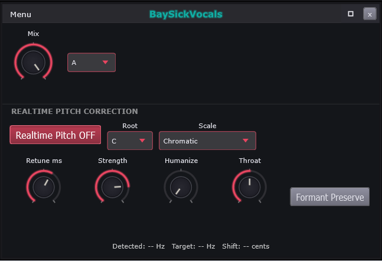
| # | On screen |
|---|---|
Mix knob - the page wet/dry | |
A/B snapshot picker - A. The Vox page own pair, independent of the NAM/IR A/B and the EQ A/B | |
Realtime Pitch OFF - the on/off button, reading its CURRENT state | |
Root picker - C | |
Scale picker - Chromatic | |
Retune ms | |
Strength | |
Humanize | |
Throat | |
Formant Preserve | |
Live readout - Detected: -- Hz Target: -- Hz Shift: -- cents. Dashes until the tracker has a pitch |
Controls
| Control | What it does | Default | Range |
|---|---|---|---|
| A/B Slot | Switches between the A and B settings slots. | A | A, B |
| Pitch Realtime Bypass | Turns realtime pitch correction on. | On | on / off |
| Pitch Root | Picks the root note correction pulls to. | C | C, C#, D, D#, E, F, F#, G, G#, A, A#, B |
| Pitch Scale | Picks the scale correction snaps to. | Chromatic | Chromatic, Major, Minor, Dorian, Phrygian, Lydian, Mixolydian, Locrian, Harm. Minor, Mel. Minor, Pentatonic Maj, Pentatonic Min, Blues |
| Retune Speed ms | Sets how fast pitch snaps to the note. | 60 | 0 to 100 |
| Pitch Strength | Sets how hard correction pulls the pitch. | 0.8 | 0 to 1 |
| Humanize cents | Adds small random wobble after correction. | 0 | 0 to 20 |
| Throat Shift semis | Shifts vocal resonance apart from pitch. | 0 | -12 to 12 |
| Formant Preserve | Keeps the voice's character while shifting. | Off | on / off |
The Vox page is the live pitch corrector: it listens to the voice on this channel, works out what note is being sung, and pulls it gently - or instantly - onto the right one. This window is the tuner itself; the deeper vocal editors open from its menu.
Mix blends the corrected voice against the untouched one. Full right, you hear only the corrected signal - the normal setting. Pull it back and the original voice comes through underneath, softening the effect; this is also how you keep a natural take and just reinforce it.
A/B holds two complete snapshots of this page's settings so you can set the corrector up two different ways and flip between them on the same voice. This pair belongs to the Vox page alone; the amp window and the EQ have their own, separate A/Bs.
Realtime Pitch is the master switch, and the label
shows its CURRENT state - OFF means off right now, click to
turn it on. Nothing below does anything while this is off.
Root and Scale tell
the corrector which notes are legal. A scale is the set of notes a song
uses; the root is its home note. Chromatic means "every
semitone is legal" - the corrector just nudges to the nearest note, the
transparent setting. Pick a real key (root C, scale Minor, say) and the
corrector snaps only to that key's notes - which produces the deliberate,
hard-tuned pop vocal sound.
Retune ms is how FAST the pull happens, in milliseconds. Slow (high numbers): drift gets corrected without anyone hearing the correction happen - natural. Near zero: the voice arrives on the note already perfect, with that robotic snap between notes. This one knob is most of the difference between "tuned" and "auto-tuned".
Strength is how far off-pitch material gets pulled toward the target. 100% lands dead on the note; less leaves some of the singer's own intonation in place. Humanize adds back the tiny natural wavering that real voices have, so long held notes do not freeze into a flat line.
Throat resizes the modeled vocal tract - the physical shape the voice resonates in. Bigger reads deeper and darker; smaller, brighter and thinner. A subtle character control at small moves, a drastic voice-changing effect at big ones.
Formant Preserve. Formants are the resonances that make a voice sound like a PERSON rather than a pitch. When correction moves the pitch, this keeps those resonances where they were - so the voice stays itself. Leave it on; turn it off only when the chipmunk artifact is the effect you are chasing.
The readout shows the corrector's live analysis:
Detected (the note you actually sang), Target
(the note the scale says you meant), Shift (the distance
between them, in cents - hundredths of a semitone). Dashes mean it has no
pitch to lock onto yet.
The page corrects whatever the channel carries - a live microphone or prerecorded audio clips - so you can audition settings against a recorded take without singing a note.
How this works: Presets, YIN pitch tracker and its decimation.
Realtime pitch correction
Detects pitch, decides the nearest allowed note, and shifts toward it at the retune rate. Formant preservation keeps the voice sounding like the same person while the pitch moves.
// PitchCorrectorDSP::process() - detection -> snap -> ratio -> smooth -> shift
if (detHz > 0.0f && confidence > 0.4f)
{
const float detMidi = hzToMidi (detHz);
// QA-F Task 5 note-change hysteresis: hold the current target note until
// the sung pitch commits to a different one. 0.65 st past the semitone
// midpoint stops vibrato riding a boundary from flip-flopping the target.
if (mCurrentTargetMidi < 0.0f
|| std::abs (detMidi - mCurrentTargetMidi) > 0.65f)
mCurrentTargetMidi = snapMidiToScale (detMidi);
const float targetHz = midiToHz (mCurrentTargetMidi);
const float fullRatio = targetHz / juce::jmax (detHz, 1.0f);
targetRatio = 1.0f + (fullRatio - 1.0f) * mStrength;
if (mHumanizeCents > 0.001f)
{
mHumanizePhase += nextRandPm1() * mHumanizeCents * 0.05f;
mHumanizePhase = juce::jlimit (-mHumanizeCents, mHumanizeCents, mHumanizePhase);
targetRatio *= std::pow (2.0f, mHumanizePhase / 1200.0f); // cents -> ratio
}
targetHzPub = targetHz;
}
else
{
mCurrentTargetMidi = -1.0f; // unvoiced: re-snap fresh next phrase
}Full function — - Source\DSP\PitchCorrectorDSP.cpp (implementation, 413 lines)
// Source/DSP/PitchCorrectorDSP.cpp - PitchCorrectorDSP::process (complete)
// ─────────────────────────────────────────────────────────────────────────────
// process()
// ─────────────────────────────────────────────────────────────────────────────
void PitchCorrectorDSP::process (juce::AudioBuffer<float>& buffer)
{
const int numSamples = buffer.getNumSamples();
const int numCh = buffer.getNumChannels();
if (numSamples <= 0 || numCh <= 0) return;
float* L = buffer.getWritePointer (0);
float* R = (numCh > 1) ? buffer.getWritePointer (1) : nullptr;
// Always feed the tracker so UI / future stages see live pitch. Stereo
// input is averaged inside pushAudio().
if (R != nullptr) mTracker.pushAudio (L, R, numSamples);
else mTracker.pushAudio (L, numSamples);
#if BAYSICK_HAS_RUBBERBAND
const bool wantOn = ! bypassed;
// Settled bypass: dry passthrough with the shifter kept cold -- the ~48 ms
// engine never runs while correction is off (fast-path bypass). On the
// just-settled edge, re-prime so the next engage is a clean cold start.
if (! wantOn && mEngageFade <= 0.0f)
{
if (mLiveActive)
{
if (mLive) mLive->reset();
mInFifo.clear(); mOutFifo.clear();
if (mBlockSize > 0) mOutFifo.pushZeros (mBlockSize);
mLiveActive = false;
}
mCurrentTargetMidi = -1.0f;
mCurrentShiftRatio = 1.0f;
return;
}
// Engage edge: cold-start the shifter -- the delay is acquired here (B3/B6);
// the crossfade below masks the dry-side click.
if (! mLiveActive)
{
if (mLive)
{
mLive->reset();
mLive->setPitchScale (mLivePitchScale);
mLive->setFormantScale (mLiveFormantScale);
}
mInFifo.clear(); mOutFifo.clear();
if (mBlockSize > 0) mOutFifo.pushZeros (mBlockSize);
mLiveActive = true;
}
// Read the latest pitch reading once per block (tracker is ~50 ms behind).
const float detHz = mTracker.getFrequencyHz();
const float confidence = mTracker.getConfidence();
float targetRatio = 1.0f;
float targetHzPub = 0.0f;
if (detHz > 0.0f && confidence > 0.4f)
{
const float detMidi = hzToMidi (detHz);
// QA-F Task 5 note-change hysteresis: hold the current target note until
// the sung pitch commits to a different one. 0.65 st past the semitone
// midpoint stops vibrato riding a boundary from flip-flopping the target.
if (mCurrentTargetMidi < 0.0f
|| std::abs (detMidi - mCurrentTargetMidi) > 0.65f)
mCurrentTargetMidi = snapMidiToScale (detMidi);
const float targetHz = midiToHz (mCurrentTargetMidi);
const float fullRatio = targetHz / juce::jmax (detHz, 1.0f);
targetRatio = 1.0f + (fullRatio - 1.0f) * mStrength;
if (mHumanizeCents > 0.001f)
{
mHumanizePhase += nextRandPm1() * mHumanizeCents * 0.05f;
mHumanizePhase = juce::jlimit (-mHumanizeCents, mHumanizeCents, mHumanizePhase);
targetRatio *= std::pow (2.0f, mHumanizePhase / 1200.0f); // cents -> ratio
}
targetHzPub = targetHz;
}
else
{
mCurrentTargetMidi = -1.0f; // unvoiced: re-snap fresh next phrase
}
// Formant Preserve maps to the engine's native option; Throat to its formant
// scale (0.0 == auto-preserve). Applied only on change (RT-safe setters).
if (mLive && mFormantPreserve != mLivePreserve)
{
using RBL = RubberBand::RubberBandLiveShifter;
mLive->setFormantOption (mFormantPreserve ? RBL::OptionFormantPreserved
: RBL::OptionFormantShifted);
mLivePreserve = mFormantPreserve;
}
const double fScale = (std::abs (mThroatSemis) < 0.01f)
? 0.0 : std::pow (2.0, (double) mThroatSemis / 12.0);
// Accumulate mono input, then drain whole shifter blocks.
if (R != nullptr)
for (int i = 0; i < numSamples; ++i) mMonoIn[(size_t) i] = 0.5f * (L[i] + R[i]);
else
for (int i = 0; i < numSamples; ++i) mMonoIn[(size_t) i] = L[i];
mInFifo.push (mMonoIn.data(), numSamples);
const float retCoef = mRetuneCoef;
while (mBlockSize > 0 && mInFifo.size() >= mBlockSize)
{
mInFifo.pop (mInBlock.data(), mBlockSize);
// Advance the ratio smoothing across the block so the RetuneSpeed time
// constant is unchanged by the shifter's block granularity.
for (int k = 0; k < mBlockSize; ++k)
mCurrentShiftRatio = retCoef * mCurrentShiftRatio + (1.0f - retCoef) * targetRatio;
if (mLive)
{
const double ps = juce::jlimit (0.25, 4.0, (double) mCurrentShiftRatio);
if (ps != mLivePitchScale) { mLive->setPitchScale (ps); mLivePitchScale = ps; }
if (fScale != mLiveFormantScale) { mLive->setFormantScale (fScale); mLiveFormantScale = fScale; }
const float* ip[1] = { mInBlock.data() };
float* op[1] = { mOutBlock.data() };
mLive->shift (ip, op);
mOutFifo.push (mOutBlock.data(), mBlockSize);
}
else
{
mOutFifo.push (mInBlock.data(), mBlockSize); // shifter absent: passthrough
}
}
// Pop this block's worth of wet, then equal-power crossfade dry <-> wet.
// The wet stream carries the shifter latency; at the engage edge it is the
// primed silence filling in -- the documented one-time delay jump (B6).
mOutFifo.pop (mWetOut.data(), numSamples);
const float fadeTgt = wantOn ? 1.0f : 0.0f;
constexpr float halfPi = juce::MathConstants<float>::halfPi;
for (int i = 0; i < numSamples; ++i)
{
mEngageFade = (fadeTgt > mEngageFade)
? juce::jmin (1.0f, mEngageFade + mEngageFadeStep)
: juce::jmax (0.0f, mEngageFade - mEngageFadeStep);
const float gW = std::sin (mEngageFade * halfPi);
const float gD = std::cos (mEngageFade * halfPi);
const float wet = mWetOut[(size_t) i];
L[i] = L[i] * gD + wet * gW;
if (R != nullptr) R[i] = R[i] * gD + wet * gW; // mono wet to both channels
}
mDetectedHz .store (detHz, std::memory_order_release);
mTargetHz .store (targetHzPub, std::memory_order_release);
mCurrentShiftCents.store (1200.0f * std::log2 (juce::jmax (mCurrentShiftRatio, 0.001f)),
std::memory_order_release);
#else
juce::ignoreUnused (L, R); // corrector unavailable -> dry passthrough
#endif
}- Engine: RubberBand `RubberBandLiveShifter`, options `OptionFormantPreserved | OptionWindowShort`; ~48 ms latency; `mLatencySamples = getStartDelay() + getBlockSize()`. - Tracker gate: correction targets update only when `detHz > 0` AND YIN `confidence > 0.4f`. - Note-change hysteresis: target held until `|detMidi - mCurrentTargetMidi| > 0.65` semitones (0.65 st past midpoint stops vibrato flip-flop). - MIDI/Hz: `midiToHz = 440 * 2^((midi-69)/12)`; `hzToMidi = 12*log2(hz/440) + 69`. - Shift ratio: `fullRatio = targetHz / max(detHz, 1)`; strength blend `targetRatio = 1 + (fullRatio - 1) * mStrength` (Strength 0..1). - RetuneSpeed smoothing (per-sample one-pole): `coef = exp(-1 / (retuneMs * 0.001 * sr))`; RetuneSpeed 0..100 ms, 0 = snap. Smoothing advanced per shifter-block sample so the time constant is block-size independent. - Humanize: random walk `phase += randPm1 * cents * 0.05`, clamped to +/- cents (0..20); applied as `ratio *= 2^(phase/1200)`. RNG is xorshift32 (`x^=x<<13; x^=x>>17; x^=x<<5`), seed `0x12345678`. - Throat: -12..+12 semis -> formant scale `2^(semis/12)`; `|semis| < 0.01` -> 0.0 (auto-preserve). - Pitch scale clamp into shifter: `jlimit(0.25, 4.0, ratio)`. - Engage/disengage: ~40 ms equal-power crossfade, `mEngageFadeStep = 1/(0.04*sr)` (default 1/1764); gains `gW = sin(fade*pi/2)`, `gD = cos(fade*pi/2)`. - FIFO capacity: `cap = 2*(mBlockSize + mMaxBlock) + 64`; out FIFO primed with `mBlockSize` zeros. - Scale tables: 13 scales (Chromatic..Blues), 12-bool masks copied verbatim from PianoRoll.cpp `kScaleDefs` (kScaleMasks, PitchCorrectorDSP.cpp lines 20-34). - UI publish: shift in cents = `1200 * log2(max(ratio, 0.001))`.
Behind: Mix knob, Realtime Pitch OFF, Root picker, Scale picker, Retune ms, Strength, Humanize, Throat, Formant Preserve.
BaySickVocals Menu
Part of BaySickVocals
The Vox page menu - the four editors, then the tab housekeeping.

| # | On screen |
|---|---|
Vocal Chain - see BaySickVocalChain | |
BaySickPitch - see BaySickPitch | |
BaySickAlign - see BaySickAlign | |
NAM/IR - see BaySickNAM/IR | |
FX Rack - this channel's rack, see Effects Rack | |
Freeze - renders this tab and plays the render instead. Greys when unavailable, with the reason in its tooltip; label color signals state - cyan while frozen, orange once the render goes stale. On a Vox tab the freeze prints the WHOLE chain - gate to limiter plus pitch and alignment - so a confirm warns first | |
Lock - tick when locked; a locked tab shows [L] on its ribbon slot | |
Rename... | |
Duplicate Vox (new tab) | |
Save Page Preset As... | |
Load Page Preset submenu | |
Delete Vox |
The Vox page menu. The top half is navigation - the four editors that make up the vocal channel - and the bottom half is the usual tab housekeeping.
Vocal Chain. Opens the chain editor - the locked run of stages (gate, de-reverb, de-esser, compressor, saturation, limiter, amp) every vocal passes through. This is where the tone gets shaped.
BaySickPitch. The offline pitch editor - analyze a recorded take, then drag notes to repair or restyle the melody.
BaySickAlign. Time-aligns one take to another - a double to a lead, a harmony to the main - so stacked vocals land together.
NAM/IR. The amp-and-cabinet window shared with the guitar side; on a vocal it is a coloring effect - run the voice through an amp capture or an impulse response for character.
FX Rack. This channel's six-slot effects rack, after the chain and before the mixer.
Freeze. Renders the tab and plays the render. On a vocal this is a bigger commitment than elsewhere: the capture point sits below the ENTIRE chain - gate to limiter, plus pitch and alignment - so a confirm warns you first. Once frozen, reaching for the de-esser does nothing until you unfreeze. Greyed when unavailable (tooltip says why); cyan label = frozen, orange = stale.
Lock protects the tab (tick while locked,
[L] on the ribbon slot);
Rename... names it; Duplicate Vox (new
tab) clones the whole channel into a fresh tab;
Delete Vox removes it.
Save Page Preset As... and Load Page Preset save and recall the whole vocal setup - chain settings and all - as one preset.
How this works: EngineRig, Effect racks, Freeze, Projects and saving, Presets.
BaySickVocalChain
Part of BaySickVocals
Six effect slots in a fixed order, each drawn as an embedded effect panel. The panel anatomy is see Effect Panel; only what is chain-specific is numbered.

| # | On screen |
|---|---|
| A chain slot - six, fixed order, always present. Unlike a rack slot these cannot be added, removed or reordered | |
| Bypass dot - green = stage active, red = bypassed. CLICK toggles it | |
Slot name - Gate / De-reverb / De-esser / Compressor / Saturation / Limiter | |
Basic - the Advanced/Basic MODE toggle, on the slots that have one | |
Preset - per-slot preset picker | |
Slot mode button - Modern on the Compressor, Console on Saturation, Limiter on the Limiter. The Compressor here offers three modes, not four: Pedal is a pedal sustainer and is not a vocal-chain compressor | |
SC: Off - sidechain pick on the slots that support it | |
| Gain-reduction meter - the analog face at a slot left, on the stages that reduce gain | |
Slot Vol and its dBFS meter - see Vol knob and see Output dBFS meter |
Controls
| Control | What it does | Default | Range |
|---|---|---|---|
| Vol | Sets this stage's output level. | 0 | -24 to 12 |
| Thresh | Closes the gate below this level. | -80 | -80 to 0 |
| Range | Sets how deep the closed gate cuts. | -60 | -80 to 0 |
| Attack | Sets how fast the gate opens. | 1 | 0.1 to 100 |
| Hold | Holds the gate open after signal drops. | 50 | 0 to 500 |
| Release | Sets how fast the gate closes. | 100 | 5 to 2000 |
| Reduce | Suppresses the recorded room tail. | 50 | 0 to 100 |
| Tail | Matches the modeled tail to the room. | 400 | 100 to 1000 |
| Mix | Blends the de-reverbed signal in. | 100 | 0 to 100 |
| Detect | Widens what counts as an S sound. | 50 | 0 to 100 |
| Thresh | Triggers de-essing above this level. | -24 | -80 to 0 |
| Range | Caps how much the de-esser pulls down. | -12 | -48 to 0 |
| Mode | Morphs from wide ducking to split-band. | 0 | 0 to 100 |
| Thresh | Compresses signal above this level. | -12 | -60 to 0 |
| Ratio | Sets how hard compression squeezes. | 4 | 0.4 to 30 |
| Gain | Makes up level after compression. | 0 | -30 to 30 |
| Attack | Sets how fast compression clamps. | 10 | 0 to 400 |
| Release | Sets how fast compression lets go. | 100 | 1 to 4000 |
| Drive | Pushes the preamp into saturation. | 3 | 0 to 10 |
| Color | Adds transformer-style second harmonic. | 3 | 0 to 10 |
| Output | Sets the saturation stage's output level. | 0 | -18 to 18 |
| InGain | Sets the level hitting the limiter. | 0 | -12 to 24 |
| Ceil | Caps the loudest output level. | -0.3 | -24 to 12 |
| SatTh | Softens peaks before hard limiting. | 1 | 0 to 1 |
| Atk | Sets how fast the limiter clamps. | 1 | 0.1 to 20 |
| Rel | Sets how fast the limiter lets go. | 100 | 10 to 1000 |
| Sustain | Holds gain reduction to release musically. | 0 | 0 to 1000 |
The Vocal Chain is six studio processors in a fixed order - Gate, De-reverb, De-esser, Compressor, Saturation, Limiter - that every vocal on this channel passes through, in that order, always. You shape each stage; the order is engineered and locked, because it is the order a studio would wire them in.
A slot. Six of them, always present. Unlike an effects-rack slot, nothing here can be added, removed or moved - the chain IS the vocal path.
The bypass dot - green means the stage is working, red means it is switched out - and it is a BUTTON: click it to toggle the stage. The fastest way to learn what any stage is doing to your voice is to click it off and on while singing plays.
The names, in signal order, and what each is for: Gate mutes the channel between phrases so breaths and room hiss disappear. De-reverb dries out a recording made in a roomy space. De-esser tames the harsh sss sounds that microphones exaggerate. Compressor evens the volume - quiet words come up, loud ones come down - so the vocal sits steady in the mix. Saturation adds warmth and edge, the "expensive console" coloring. Limiter catches any peak that still gets through.
Basic flips a slot between its Basic face - the few controls that matter most, in plain terms - and the full Advanced set. Same processor underneath either way; Basic is the short menu, not a lesser one.
Preset is the per-stage preset picker: each slot saves and recalls its own settings, separately from the page preset that captures the whole chain.
The mode button switches a stage's character where it has more than one algorithm - the Compressor offers three here, Saturation its console flavor, the Limiter its own. Different machinery, same knobs, audibly different personality.
SC: the sidechain pick, on stages that support it.
Sidechaining means the stage reacts to a DIFFERENT signal than the one it
processes - a compressor on the vocal could duck whenever something else
plays. Off keeps the stage listening to the vocal itself,
which is the normal case.
The gain-reduction meter - the analog needle on the stages that reduce level - shows how hard that stage is working, live. A needle that never moves means the stage is set too gently to matter; one that is buried means it is squashing everything. Aim for movement on the loud moments.
Vol and its meter - each slot's output level with a readout in dBFS (decibels below digital full scale, where 0 is the ceiling). Use them to keep the level matched from stage to stage, so clicking a stage's bypass compares the SOUND and not just the volume - louder always sounds "better."
The chain also embeds a NAM/IR stage - the amp and cabinet window - with an A/B pair of its own, so a vocal can take amp coloring inside the chain itself.
How this works: Effect racks, Gate, Presets, Compressor, Engine sidechain helper and the four receive lines per strip, LUFS metering.
BaySickAlign
Part of BaySickVocals
Time-aligns a follower take to a leader take.
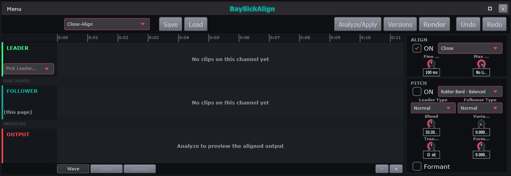
| # | On screen |
|---|---|
Preset picker - Close-Align | |
Save / Load | |
Analyze/Apply | |
Versions | |
Render | |
Undo / Redo | |
| Time ruler in minutes and seconds - this editor works in TIME, not bars | |
LEADER lane - the reference take. Pick Leader... chooses it. Empty state: No clips on this channel yet (all three lanes paint it) | |
SYNC POINTS strip - looks like a divider, is where you CLICK and DRAG to correct the matching by hand | |
FOLLOWER lane - (this page), the take being moved | |
PROTECTED strip - looks like a divider, is where you DRAG to mark a stretch as leave-alone | |
OUTPUT lane - Analyze to preview the aligned output is its empty state | |
ALIGN box - ON checkbox, mode picker (Close), Fine Tune and Max Shift with their readouts (100 ms, No Limit) | |
PITCH box - ON, engine picker (Rubber Band - Balanced), Leader Type / Follower Type, Blend / Variation / Transpose / Formant Shift with readouts, and Formant | |
Wave / Pitch / Energy view buttons | |
- / + zoom | |
| Green dot beside the preset picker - unsaved preset edits | |
Status badge right of Save / Load - ANALYZING..., RE-ANALYZE, RE-ANALYZE ON STOP |
BaySickAlign fixes timing between two takes. Record a double of your lead vocal, or a harmony, and it will never land exactly with the original - close, but flamming on the consonants. This editor picks one take as the leader, treats this channel's take as the follower, and stretches the follower in time until the two move together.
The preset picker holds alignment setups
(Close-Align for tight doubles is the everyday one);
the green dot beside it lights when you
have edited away from the saved preset - unsaved-changes at a glance.
Save / Load manage your own presets.
The status badge tells you where the
engine is: ANALYZING... while it studies the takes,
RE-ANALYZE when your edits need a fresh pass,
RE-ANALYZE ON STOP when it is waiting for playback to end.
Analyze/Apply is the button that does the work: compare both takes, match them moment to moment, apply the stretch. Nothing changes until you press it. Versions keeps earlier results to fall back to; Render commits the aligned audio; Undo / Redo step the editor's history.
The ruler reads minutes and seconds, not bars - alignment is about physical time.
LEADER is the reference take - the one that stays
put. Pick Leader... chooses which channel that is.
FOLLOWER is this page's own take, the one
being moved. OUTPUT previews the aligned
result once an Analyze has run. All three lanes read
No clips on this channel yet until there is audio.
SYNC POINTS looks like a divider line, but it is an editing surface: click and drag in it to pin a moment of the follower to a moment of the leader. Use it when the automatic match gets a phrase wrong - one pin usually snaps the whole phrase into place.
PROTECTED is the same idea in reverse: drag across a stretch to mark it leave-alone. The aligner will not touch anything inside it - for the ad-lib that is SUPPOSED to be loose.
The ALIGN box - the timing half. ON
enables it, the mode picker (Close) chooses how aggressive
the matching is, Fine Tune trims the result, and
Max Shift caps how far any moment may be dragged
(No Limit uncaps it - useful when takes are wildly off).
The PITCH box - alignment can carry pitch along too,
so a double does not just land with the lead but bends with it.
ON, the shifter engine picker, what the leader and follower
each are (Leader Type / Follower Type), then
Blend / Variation / Transpose /
Formant Shift for how much of the leader's pitch contour the
follower takes and how its vocal character is preserved.
Wave / Pitch / Energy switch what the lanes draw: the waveforms, the pitch curves, or the loudness contours - whichever makes the mismatch easiest to SEE for the material at hand. - / + zoom the timeline.
How this works: Presets, True offline render and export, Undo, Vendored pitch shifters (Signalsmith / Rubber Band / WORLD).
BaySickAlign
Finds matching moments between two takes and warps the follower's timing onto the leader's. Works in real time rather than bars, because a singer's timing is not a grid.
// BaySickAlignDSP.cpp anonymous-ns pairOnsets() -- the alignment cost/path DP
struct Cell { int count; double cost; unsigned char from; };
// from: 0 = pair (diag), 1 = skip dub, 2 = skip guide.
std::vector<Cell> dp ((m + 1) * (n + 1));
auto at = [&] (size_t i, size_t j) -> Cell&
{ return dp[i * (n + 1) + j]; };
for (size_t i = 0; i <= m; ++i)
for (size_t j = 0; j <= n; ++j)
{
if (i == 0 && j == 0) { at (0, 0) = { 0, 0.0, 1 }; continue; }
Cell best { -1, 1.0e18, 1 };
if (i > 0)
{
const Cell& c = at (i - 1, j);
if (c.count > best.count
|| (c.count == best.count && c.cost < best.cost))
best = { c.count, c.cost, 1 };
}
if (j > 0)
{
const Cell& c = at (i, j - 1);
if (c.count > best.count
|| (c.count == best.count && c.cost < best.cost))
best = { c.count, c.cost, 2 };
}
if (i > 0 && j > 0)
{
const double d = std::abs (dubOnsets[i - 1] - guideOnsets[j - 1]);
if (d <= tolerance)
{
const Cell& c = at (i - 1, j - 1);
if (c.count + 1 > best.count
|| (c.count + 1 == best.count && c.cost + d < best.cost))
best = { c.count + 1, c.cost + d, 0 };
}
}
at (i, j) = best;
}Full function — - Source\DSP\BaySickAlignDSP.cpp (975 lines)
// Source/DSP/BaySickAlignDSP.cpp - BaySickAlignDSP::analyzeOffline (complete)
// ─── analyzeOffline ────────────────────────────────────────────────────────────
WarpMap BaySickAlignDSP::analyzeOffline (const float* guideMono, int numGuideSamples,
const float* dubMono, int numDubSamples,
double sampleRate,
const AlignBuildParams& params,
const std::vector<AlignSyncPoint>& syncPoints,
const std::vector<AlignProtectedArea>& protectedAreas,
AlignAnalyzeDiag* diagOut)
{
if (diagOut != nullptr)
*diagOut = { 0, 0, 0, kMatchWindowSec };
WarpMap map;
map.analysisSampleRate = sampleRate;
map.guideDurationSec = (sampleRate > 0.0) ? numGuideSamples / sampleRate : 0.0;
map.dubDurationSec = (sampleRate > 0.0) ? numDubSamples / sampleRate : 0.0;
if (guideMono == nullptr || dubMono == nullptr
|| numGuideSamples < kFFTSize || numDubSamples < kFFTSize)
return map;
const auto guideOnsets = detectOnsetsSec (guideMono, numGuideSamples, sampleRate);
const auto dubOnsetsRaw = detectOnsetsSec (dubMono, numDubSamples, sampleRate);
if (diagOut != nullptr)
{
diagOut->guideOnsets = (int) guideOnsets.size();
diagOut->dubOnsets = (int) dubOnsetsRaw.size();
}
// QA-Fd (locked 5/13a): pairing runs in the EDITED performance domain --
// the pitch tab's time edits redefine where the follower's words sound,
// and that is the timing align must match. Onsets keep their RAW twin
// so anchor pitch deltas can still sample the raw audio.
const bool haveEdit = (bool) params.dubEditTransform;
auto editedOf = [&] (double t) -> double
{ return haveEdit ? params.dubEditTransform (t) : t; };
struct DubOnset { double edited, raw; };
std::vector<DubOnset> dubOnsets;
dubOnsets.reserve (dubOnsetsRaw.size());
for (double t : dubOnsetsRaw)
dubOnsets.push_back ({ editedOf (t), t });
// Detached pills can reorder material in edited time.
std::sort (dubOnsets.begin(), dubOnsets.end(),
[] (const DubOnset& l, const DubOnset& r)
{ return l.edited < r.edited; });
const double dubDurEdited = editedOf (map.dubDurationSec);
// Sync points sorted by follower time = hard segmentation boundaries
// (section 13c): auto-pairing runs independently inside each region so a
// user-placed pair can never be crossed by an automatic pairing. The
// user places them on the RAW lanes; segmentation runs in edited time.
auto sp = syncPoints;
std::sort (sp.begin(), sp.end(),
[] (const AlignSyncPoint& l, const AlignSyncPoint& r)
{ return l.followerSec < r.followerSec; });
struct RawPair { double dubEdited, dubRaw, guide; };
std::vector<RawPair> pairs;
{
double dubLo = 0.0, guideLo = 0.0;
for (size_t seg = 0; seg <= sp.size(); ++seg)
{
const double dubHi = (seg < sp.size()) ? editedOf (sp[seg].followerSec)
: dubDurEdited;
const double guideHi = (seg < sp.size()) ? sp[seg].leaderSec
: map.guideDurationSec;
std::vector<double> dubSeg, guideSeg;
std::vector<double> dubSegRaw;
for (const auto& o : dubOnsets)
if (o.edited >= dubLo && o.edited < dubHi)
{ dubSeg.push_back (o.edited); dubSegRaw.push_back (o.raw); }
for (double t : guideOnsets) if (t >= guideLo && t < guideHi) guideSeg.push_back (t);
auto segPairs = pairOnsets (dubSeg, guideSeg, kMatchWindowSec);
for (const auto& p : segPairs)
{
// Recover the raw twin (pair dub values come verbatim from
// dubSeg, which is sorted -- binary search by value).
const auto it = std::lower_bound (dubSeg.begin(), dubSeg.end(), p.dub);
const double raw = (it != dubSeg.end() && *it == p.dub)
? dubSegRaw[(size_t) std::distance (dubSeg.begin(), it)]
: p.dub;
pairs.push_back ({ p.dub, raw, p.guide });
}
dubLo = dubHi; guideLo = guideHi;
}
}
if (diagOut != nullptr)
diagOut->pairs = (int) pairs.size();
const bool haveSync = ! sp.empty();
if (pairs.size() < 2 && ! haveSync)
return map;
// ── Residual-cap anchor build (QA-Fd, locked 9a/10a/15a) ────────────────
// Offset d = leader minus follower per pair. Within the residual cap R
// the word keeps its natural timing (anchor lands AT the dub time);
// beyond R it is pulled to the cap edge, and Max Shift M bounds the
// applied movement: move = min(max(|d| - R, 0), M). Tight R=0 = every
// pair lands on the leader (fully locked). Sync points are user intent
// and land at their exact pairing regardless of the caps.
//
// Raw pitch deltas are sampled at the RAW pair positions (leader's word
// is at p.guide even when the cap leaves the anchor at dub) and stored
// unscaled -- Blend/Variation apply at publish.
const double R = juce::jmax (0.0, params.residualCapSec);
const double M = juce::jmax (0.0, params.maxShiftSec);
auto rawDeltaSemis = [&] (double dubSec, double guideSec) -> float
{
const float fDub = f0AtSec (dubMono, numDubSamples, sampleRate,
dubSec, params.dubMinHz, params.dubMaxHz);
const float fGuide = f0AtSec (guideMono, numGuideSamples, sampleRate,
guideSec, params.guideMinHz, params.guideMaxHz);
if (fDub > 0.0f && fGuide > 0.0f)
return juce::jlimit (-12.0f, 12.0f, 12.0f * std::log2 (fGuide / fDub));
return 0.0f;
};
// hard = endpoint or user sync point: never dropped by the slope bound.
struct Flagged { WarpAnchor a; bool hard; };
std::vector<Flagged> fl;
// Anchor at start (0,0) so the warp is well-defined from the start.
fl.push_back ({ { 0.0, 0.0, 1.0f, 0.0f }, true });
for (const auto& p : pairs)
{
WarpAnchor a;
a.dubTimeSec = p.dubEdited;
const double d = p.guide - p.dubEdited;
const double move = juce::jlimit (0.0, M, std::abs (d) - R);
a.guideTimeSec = p.dubEdited + (d >= 0.0 ? move : -move);
a.weight = 1.0f;
a.pitchSemis = rawDeltaSemis (p.dubRaw, p.guide);
fl.push_back ({ a, false });
}
for (const auto& x : sp)
{
WarpAnchor a;
a.dubTimeSec = editedOf (x.followerSec);
a.guideTimeSec = x.leaderSec;
a.weight = 1.0f;
a.pitchSemis = rawDeltaSemis (x.followerSec, x.leaderSec);
fl.push_back ({ a, true });
}
std::sort (fl.begin(), fl.end(),
[] (const Flagged& l, const Flagged& r)
{ return l.a.dubTimeSec < r.a.dubTimeSec; });
// End anchor continues the LAST anchor's offset at slope 1 (natural
// tail). The old build pinned dubDur onto guideDur, which imposed a
// duration-equalizing stretch on the whole tail -- the residual model
// wants untouched timing everywhere no pairing demands movement.
// (Edited domain: the map's input is the edited performance timeline.)
if (dubDurEdited > 0.0 && dubDurEdited > fl.back().a.dubTimeSec)
{
WarpAnchor end;
end.dubTimeSec = dubDurEdited;
end.guideTimeSec = fl.back().a.guideTimeSec
+ (dubDurEdited - fl.back().a.dubTimeSec);
end.weight = 1.0f;
fl.push_back ({ end, true });
}
// Monotonicity guard: guide times must never run backwards or applyWarp's
// segment ratios go negative. Sync points + tolerant pairing can produce
// a crossing on hostile input -- clamp forward.
for (size_t i = 1; i < fl.size(); ++i)
fl[i].a.guideTimeSec = juce::jmax (fl[i].a.guideTimeSec,
fl[i - 1].a.guideTimeSec);
// Segment-slope bound [1/r, r] on flexRatio r: an auto anchor whose
// segment demands more time-bend than the bound allows is a mispairing
// or an over-reach; drop it and let the neighbors span the region. Sync
// points + endpoints survive (user intent; the lookup clamp bounds a
// hard-vs-hard breach). The live recovery-glide 2:1 cap in the decode
// layer is a separate constant and intentionally stays. r is fixed at
// 2.0 (Normal) since the Flexibility picker's removal (2026-07-11); the
// r <= 1 unbounded branch is retained for a possible return of the
// control.
if (params.flexRatio > 1.0)
{
const double rHi = params.flexRatio;
const double rLo = 1.0 / params.flexRatio;
for (bool changed = true; changed;)
{
changed = false;
for (size_t i = 1; i < fl.size(); ++i)
{
const double dDub = fl[i].a.dubTimeSec - fl[i - 1].a.dubTimeSec;
const double dGuide = fl[i].a.guideTimeSec - fl[i - 1].a.guideTimeSec;
if (dDub <= 1.0e-6) continue;
const double r = dGuide / dDub;
if (r >= rLo && r <= rHi) continue;
if (! fl[i].hard) { fl.erase (fl.begin() + (long) i); changed = true; break; }
else if (! fl[i - 1].hard) { fl.erase (fl.begin() + (long) (i - 1)); changed = true; break; }
}
}
}
map.anchors.clear();
map.anchors.reserve (fl.size());
for (const auto& f : fl)
map.anchors.push_back (f.a);
// ── Protected areas post-pass (section 13c) ─────────────────────────────
// protectTime: ratio forced to 1 through the region -- anchors inside are
// rebased to (areaEntryGuide + elapsed follower time); offset continuity
// is preserved, the region itself never stretches. protectPitch: anchor
// deltas zeroed inside. Bounds placed on the raw lanes -> compared in
// the edited domain the anchors live in.
for (const auto& pa : protectedAreas)
{
if (pa.endSec <= pa.startSec) continue;
const double paStart = editedOf (pa.startSec);
const double paEnd = editedOf (pa.endSec);
if (pa.protectTime && map.anchors.size() >= 2)
{
const double entryGuide = map.mapDubToGuide (paStart);
for (auto& a : map.anchors)
if (a.dubTimeSec >= paStart && a.dubTimeSec <= paEnd)
a.guideTimeSec = entryGuide + (a.dubTimeSec - paStart);
// Re-clamp monotonicity after the rebase.
for (size_t i = 1; i < map.anchors.size(); ++i)
map.anchors[i].guideTimeSec = juce::jmax (map.anchors[i].guideTimeSec,
map.anchors[i - 1].guideTimeSec);
}
if (pa.protectPitch)
for (auto& a : map.anchors)
if (a.dubTimeSec >= paStart && a.dubTimeSec <= paEnd)
a.pitchSemis = 0.0f;
}
return map;
}
// Source/DSP/BaySickAlignDSP.cpp - BaySickAlignDSP::applyWarp (complete)
juce::AudioBuffer<float> BaySickAlignDSP::applyWarp (const float* dubMono, int numDubSamples,
double sampleRate,
const WarpMap& map,
int pitchAlgo,
float extraSemis,
int oversample)
{
juce::AudioBuffer<float> out;
if (dubMono == nullptr || numDubSamples <= 0 || sampleRate <= 0.0)
return out;
if (! map.isValid())
{
out.setSize (1, numDubSamples);
out.copyFrom (0, 0, dubMono, numDubSamples);
return out;
}
const double dubDurSec = (double) numDubSamples / sampleRate;
const int outLen = juce::jmax (1, (int) std::llround (
map.mapDubToGuide (dubDurSec) * sampleRate));
out.setSize (1, outLen);
out.clear();
float* dst = out.getWritePointer (0);
// ── Phase 1: continuous smooth-map warp (publish-equivalent lookup) ─────
// Review fix: the map splits into MONOTONE-SOURCE segments at backward
// jumps (a detached pill may reorder material) -- each segment renders
// through its own continuous pass into its own guide span, and the
// boundary is a clean splice: the render analog of the live forceSeek
// cut. Maps without reordering are a single segment (previous behavior).
{
auto anchors = map.anchors;
std::sort (anchors.begin(), anchors.end(),
[] (const WarpAnchor& a, const WarpAnchor& b)
{ return a.guideTimeSec < b.guideTimeSec; });
oversample = juce::jlimit (1, 8, oversample);
auto renderSpan = [&] (const AlignPlaySnapshot& look,
juce::int64 outStart, int spanLen)
{
if (spanLen <= 0) return;
if (oversample <= 1)
{
warpContinuous (dubMono, numDubSamples, sampleRate, look,
dst + outStart, spanLen, outStart);
return;
}
// QA-Fd 16a High-Res: run the warp at sampleRate * oversample
// (384 kHz-class at 8x) for finer PhaseVocoder time resolution,
// then decimate. The map is in seconds -- rate-invariant.
// Interpolator inputs get an 8-sample zero guard: Lagrange
// reads a few samples past ratio*numOut.
const int upLen = numDubSamples * oversample;
const int upSpan = spanLen * oversample;
std::vector<float> srcPadded ((size_t) numDubSamples + 8, 0.0f);
std::copy (dubMono, dubMono + numDubSamples, srcPadded.begin());
juce::AudioBuffer<float> up (1, upLen);
{
juce::LagrangeInterpolator li;
li.reset();
li.process (1.0 / (double) oversample, srcPadded.data(),
up.getWritePointer (0), upLen);
}
std::vector<float> warpedHi ((size_t) upSpan + 8, 0.0f);
warpContinuous (up.getReadPointer (0), upLen,
sampleRate * (double) oversample, look,
warpedHi.data(), upSpan,
outStart * (juce::int64) oversample);
juce::LagrangeInterpolator down;
down.reset();
down.process ((double) oversample, warpedHi.data(),
dst + outStart, spanLen);
};
size_t segFirst = 0;
for (size_t i = 1; i <= anchors.size(); ++i)
{
const bool split = (i == anchors.size())
|| (anchors[i].dubTimeSec < anchors[i - 1].dubTimeSec - 1.0e-4);
if (! split) continue;
AlignPlaySnapshot look;
double lastDub = -1.0e18;
for (size_t k = segFirst; k < i; ++k)
{
const auto& a = anchors[k];
const double d = juce::jmax (lastDub, a.dubTimeSec);
if (! look.guideSec.empty()
&& a.guideTimeSec - look.guideSec.back() < 1.0e-4)
{
look.dubSec.back() = d;
look.pitchSemis.back() = a.pitchSemis;
}
else
{
look.guideSec .push_back (a.guideTimeSec);
look.dubSec .push_back (d);
look.pitchSemis.push_back (a.pitchSemis);
}
lastDub = d;
}
if (look.guideSec.size() == 1)
{
// Lone anchor after a split: extend at slope 1 for tangents.
look.guideSec .push_back (look.guideSec.front() + 0.05);
look.dubSec .push_back (look.dubSec.front() + 0.05);
look.pitchSemis.push_back (look.pitchSemis.front());
}
look.computeTangents();
const juce::int64 outStart = (segFirst == 0) ? 0
: juce::jlimit ((juce::int64) 0, (juce::int64) outLen,
(juce::int64) std::llround (anchors[segFirst].guideTimeSec
* sampleRate));
const juce::int64 outEnd = (i == anchors.size())
? (juce::int64) outLen
: juce::jlimit (outStart, (juce::int64) outLen,
(juce::int64) std::llround (anchors[i].guideTimeSec
* sampleRate));
renderSpan (look, outStart, (int) (outEnd - outStart));
segFirst = i;
}
}
// ── Phase 2: pitch pass over the warped result (anchor deltas + Transpose) ──
// QA-Fe: bake the pitch envelope through the selected library engine
// (pitchAlgo -> PitchEngine; Task 3 owns the dropdown + old-value migration).
bool anyPitch = std::abs (extraSemis) > 0.01f;
for (const auto& a : map.anchors)
if (std::abs (a.pitchSemis) > 0.01f) { anyPitch = true; break; }
if (! anyPitch)
return out;
// Per-sample pitch ratio from the anchor-cursor semis lerp (guide-time domain)
// + the global Transpose, then a length-preserved bake over the warped result.
std::vector<float> ratio ((size_t) outLen, 1.0f);
{
const auto& an = map.anchors;
size_t ai = 0;
for (int j = 0; j < outLen; ++j)
{
float semis = 0.0f;
if (an.size() >= 2)
{
const double gSec = (double) j / sampleRate;
while (ai + 2 < an.size() && gSec >= an[ai + 1].guideTimeSec)
++ai;
const auto& a = an[ai];
const auto& b = an[ai + 1];
if (gSec <= a.guideTimeSec) semis = a.pitchSemis;
else if (gSec >= b.guideTimeSec) semis = b.pitchSemis;
else
{
const double d = b.guideTimeSec - a.guideTimeSec;
const double t = (d > 1.0e-9) ? (gSec - a.guideTimeSec) / d : 0.0;
semis = a.pitchSemis + (float) t * (b.pitchSemis - a.pitchSemis);
}
}
else if (! an.empty())
semis = an.front().pitchSemis;
semis += extraSemis;
ratio[(size_t) j] = std::pow (2.0f, semis / 12.0f);
}
}
std::vector<float> shifted ((size_t) outLen, 0.0f);
if (auto shifter = makePitchShifter ((PitchEngine) juce::jlimit (0, 2, pitchAlgo)))
shifter->bake (dst, shifted.data(), outLen, sampleRate, ratio.data(), nullptr);
else
std::copy (dst, dst + outLen, shifted.begin());
std::copy (shifted.begin(), shifted.end(), dst);
return out;
}- Onset detection: FFT order 11 (2048), hop 512, Hann window; spectral flux = sum of positive per-bin magnitude increases; adaptive threshold = `mean + 1.6 * stddev` of the flux envelope; local-max peak pick with 40 ms refractory (`kMinPeakDistanceSec = 0.040`); onset time = `(frame*512 + 1024) / sr`. - Pairing: fixed match window `kMatchWindowSec = 0.4` s (BaySickAlignDSP.h line 311). DP objective: maximize pair count, tiebreak minimal total |dub-guide| distance; monotone by construction. DP cap `(m+1)*(n+1) > 4*1024*1024` cells -> greedy monotone fallback. - Anchor build (`AlignBuildParams` defaults, BaySickAlignDSP.h lines 139-148): residual cap `R = 0.05` s (word keeps natural timing within R), max shift `M = 0.4` s; applied movement `move = min(max(|d| - R, 0), M)` where `d = guide - dubEdited`. Tight preset R=0 = fully locked to leader. - Slope bound: `flexRatio = 2.0` fixed (Normal); segment ratio must stay in `[1/2, 2]`, offending non-hard anchors dropped iteratively; endpoints + user sync points are hard. - Anchor pitch delta: frame-YIN at both pair positions, `12 * log2(fGuide/fDub)` clamped +/-12 semis; YIN band 60-1200 Hz default (`guideMinHz/MaxHz`, `dubMinHz/MaxHz`). - Frame-YIN (shared `estimateF0Track`): window `kYinWin = 2048` (half = 1024 for the difference function), CMNDF threshold `kYinThreshold = 0.15`, first-dip-under-threshold with forward improvement walk; parabolic sub-sample refinement clamped +/-0.5 sample; ~43 Hz practical floor at 44.1 kHz. - Playback map: Fritsch-Butland weighted harmonic-mean tangents `t = (w1+w2)/(w1/s0 + w2/s1)` with `w1 = 2h1+h0`, `w2 = h1+2h0`; zero tangent on direction change/plateau (monotone guarantee). - applyWarp render: streaming PhaseVocoder at `PhaseVocoder::kHopSize`, ratio clamp `[0.25, 4.0]`, hop-quantized effective ratio bookkeeping; segments split at backward dub jumps (`< prev - 1e-4`); High-Res oversample 1..8x via LagrangeInterpolator (8-sample zero guard); pitch pass = per-sample `2^(semis/12)` ratio baked through `makePitchShifter(pitchAlgo)`.
Behind: Save / Load, Analyze/Apply, Versions, Time ruler in minutes and seconds, LEADER lane, SYNC POINTS strip, FOLLOWER lane, PROTECTED strip, OUTPUT lane, ALIGN box, Wave / Pitch / Energy view buttons, - / + zoom, Green dot beside the preset picker, Status badge right of Save / Load.
BaySickPitch
Part of BaySickVocals
The offline pitch editor. Works on the channel audio clips; it is not the realtime corrector, which lives on the Vox page, see Realtime Pitch OFF.
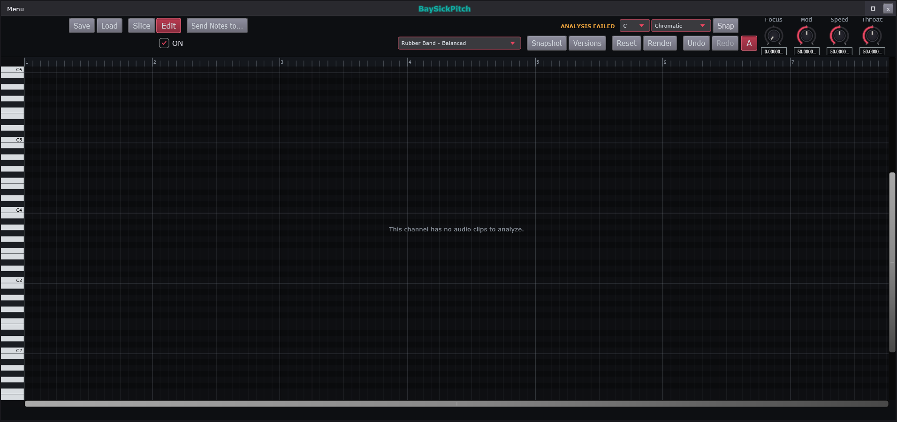
| # | On screen |
|---|---|
Save / Load - the editor own analysis state | |
Slice tool | |
Edit tool | |
Send Notes to... - pushes the detected pitches out as MIDI notes | |
ON checkbox - the stage enable | |
ANALYSIS FAILED - the analysis status readout. Reads a failure reason where there is one | |
Root picker - C | |
Scale picker - Chromatic | |
Snap | |
Engine picker - Rubber Band - Balanced and the other shifters | |
Snapshot | |
Versions | |
Reset | |
Render - commits the edit to audio | |
Undo / Redo | |
A - auto-scroll: the canvas follows playback. Keyboard A toggles it too | |
Focus / Mod / Speed / Throat knobs with their readouts | |
Keyboard and octave labels down the left, C2..C6 | |
| Bar ruler | |
Pitch canvas - the detected curve and its editable notes. This channel has no audio clips to analyze. is the empty state | |
Info bar along the bottom - Pitch: note, Cents:, Length:, plus [detached] / [moved] / [edited] flags on edited notes | |
Selection readout left of ON - SEL <n> bars / M:SS.f | |
| Canvas scrollbars - both axes, always drawn |
BaySickPitch is the offline pitch editor: it studies a recorded take, draws every note the singer actually sang as a block on a canvas, and lets you drag those blocks to repair or rewrite the melody. Offline means it works on the recording, not the live signal - so it can make precise per-note edits the realtime corrector cannot.
Save / Load keep the editor's whole state - the analysis and your edits - as something you can leave and come back to.
Slice cuts a detected note in two where you click - for when the analysis heard one long note where the singer really sang two. Edit is the everyday tool: drag notes up or down to retune them, drag their ends to stretch, drag whole notes in time.
Send Notes to... exports the detected melody as NOTES - sing a line, send it to a synth tab, and the synth plays your melody.
ON enables the pitch stage in the channel's signal path; the selection readout beside it describes what you currently have selected, as bars and as time.
The status readout reports the analysis, including
ANALYSIS FAILED with the reason when a take cannot be
tracked (too noisy, too quiet, no clear pitch).
Root and Scale define the song's key - the set of legal notes - and Snap makes dragged notes land on it.
The engine picker chooses which pitch-shifting
algorithm does the audio surgery. Rubber Band - Balanced is
the sensible default; the alternatives trade processing speed against
artifacts, and on a difficult voice it is worth trying more than one.
Snapshot and
Versions are checkpoints - save a state you like before
experimenting further. Reset returns a
selection to what the analysis originally heard.
Render commits your edits to actual
audio. Undo / Redo step the editor's own
history. A toggles auto-scroll - the
canvas follows playback (the keyboard key A does the same).
Focus / Mod / Speed / Throat shape how edits SOUND. Focus - how tightly an edited note holds its center pitch versus keeping the singer's natural waver. Mod - how much of the original modulation (vibrato) survives the edit. Speed - how fast transitions between edited notes happen. Throat - the vocal-tract size of shifted material, so a note moved far can keep sounding like the same person.
The keyboard down the left edge maps the canvas to
pitches (C2 to C6), and
the ruler across the top maps it to song
time in bars.
The canvas is the editor itself: the thin
continuous line is the pitch the singer actually produced, and the blocks
are the notes the analysis heard - the things you grab. It reads
This channel has no audio clips to analyze. until the channel
has a recording. The info bar along the
bottom tracks whatever is under your cursor - Pitch:,
Cents: (hundredths of a semitone off center),
Length: - plus [detached] / [moved]
/ [edited] flags on notes you have changed.
Scrollbars on both axes move the
view.
The editor's shortcuts and mouse gestures are listed on the Key Binds
window's Vocal Editor tab, in the Help menu.
How this works: Polyphonic pitch tracker, Vendored pitch shifters (Signalsmith / Rubber Band / WORLD), True offline render and export, Undo, Presets, Patterns and arrangement.
BaySickPitch offline engine
The offline editor. Analyses the whole take first, so it can be right about note boundaries in a way a realtime corrector cannot — a realtime one has to decide before it has heard the end of the word.
// BaySickPitchDSP::computeEnvelopes() - per-sample edit -> envelope resolver (bake input)
const float smoothCoef = 1.0f - std::exp (-1.0f / (float) (speedMs * 0.001 * sr));
const float gainCoef = 1.0f - std::exp (-1.0f / (float) (0.005 * sr));
...
// Center knob (Newtone model): a micro-tonal pull of the EDITED
// center toward the nearest semitone CENTER -- always, scale-
// independent, whether or not Snap is on (Snap only governs the
// editor drag-wall + the Ctrl+A force, never this per-sample pull).
const float base = r.midi + r.shiftSemis;
const float target = std::round (base);
targetSemis = r.shiftSemis + (target - base) * focus01;
...
// Vib knob is ADDITIVE on top of the natural vibrato (mult 1 =
// nothing added); flattening the REAL wiggle is Variation's job.
const float addMult = (r.vibDepthMult * modAmt) - 1.0f;
if (std::abs (addMult) > 0.01f)
{
const float baseDepth = (r.vibDepthCents > 0.0f) ? r.vibDepthCents : 25.0f;
const float rate = r.vibRateHz * r.vibRateMult;
st.vibPhase += juce::MathConstants<double>::twoPi * rate / sr;
if (st.vibPhase > juce::MathConstants<double>::twoPi)
st.vibPhase -= juce::MathConstants<double>::twoPi;
fastSemis += (float) std::sin (st.vibPhase)
* juce::jlimit (-300.0f, 300.0f, baseDepth * addMult) / 100.0f;
}
...
st.smoothedSemis += (targetSemis - st.smoothedSemis) * smoothCoef;
st.smoothedFormant += (targetFormant - st.smoothedFormant) * smoothCoef;
st.smoothedGain += (gain - st.smoothedGain) * gainCoef;
outRatio [i] = std::pow (2.0f, (st.smoothedSemis + fastSemis) / 12.0f);
outFormant[i] = st.smoothedFormant;
outGain [i] = st.smoothedGain;Full function — - Source\DSP\BaySickPitchDSP.cpp (1193 lines)
// Source/DSP/BaySickPitchDSP.cpp - BaySickPitchDSP::computeEnvelopes (complete)
// ─── Per-sample edit -> envelope resolver (bake input) ────────────────────────
void BaySickPitchDSP::computeEnvelopes (int numSamples, juce::int64 timelineStartSample,
double sr, const Snapshot& snap,
float focus01, float modAmt, float speedMs, bool chainOn,
bool snapScale, int rootPc, int scaleIdx,
ApplicatorState& st,
float* outRatio, float* outFormant, float* outGain,
double srcX0, double srcRatePerSample,
bool srcValid) const noexcept
{
const auto& regions = snap.regions;
if (regions.empty()) return;
const float smoothCoef = 1.0f - std::exp (-1.0f / (float) (speedMs * 0.001 * sr));
const float gainCoef = 1.0f - std::exp (-1.0f / (float) (0.005 * sr));
// startSample is composite-relative (0) for the bake; the origin subtraction
// keeps tSec in composite-relative seconds (rate-invariant).
const double snapStartSec = (double) snap.startSample / snap.sampleRate;
for (int i = 0; i < numSamples; ++i)
{
// QA-Fd source-domain stamps: resolve the pill at the SOURCE position the
// audible audio came from when the decode layer warped this channel.
const double tSec = srcValid
? (srcX0 + (double) i * srcRatePerSample) / sr - snapStartSec
: (double) (timelineStartSample + i) / sr - snapStartSec;
// Monotonic cursor with seek rewind (transport jumps).
while (st.cursor < (int) regions.size()
&& regions[(size_t) st.cursor].endSec <= tSec)
++st.cursor;
while (st.cursor > 0
&& regions[(size_t) st.cursor - 1].endSec > tSec)
--st.cursor;
const bool inRegion = st.cursor < (int) regions.size()
&& tSec >= regions[(size_t) st.cursor].startSec
&& tSec < regions[(size_t) st.cursor].endSec;
float targetSemis = 0.0f;
// Per-sample modulation rides POST-smoother: the Speed glide low-passes a
// 5-6 Hz vibrato wiggle / Variation deviation / drawn pitch curve to
// near-nothing if routed through it. Only the note CENTER glides.
float fastSemis = 0.0f;
float targetFormant = 0.0f;
float gain = 1.0f;
// Chain OFF resolves neutral targets so the smoothing glides everything
// home; playback gates on chainOn (the bake always bakes the edited state).
if (inRegion && chainOn)
{
const auto& r = regions[(size_t) st.cursor];
// Slice pieces carry no pitch identity: volume shape applies,
// pitch/focus/vibrato stay neutral.
if (r.isSlice)
{
const double len = r.endSec - r.startSec;
if (len > 1.0e-6)
gain = r.volGainAt ((float) ((tSec - r.startSec) / len));
}
else
{
if (st.cursor != st.lastRegion)
{
st.lastRegion = st.cursor;
st.vibPhase = 0.0;
}
// Center knob (Newtone model): a micro-tonal pull of the EDITED
// center toward the nearest semitone CENTER -- always, scale-
// independent, whether or not Snap is on (Snap only governs the
// editor drag-wall + the Ctrl+A force, never this per-sample pull).
const float base = r.midi + r.shiftSemis;
const float target = std::round (base);
targetSemis = r.shiftSemis + (target - base) * focus01;
const double len01 = r.endSec - r.startSec;
const float t01 = (len01 > 1.0e-6)
? (float) ((tSec - r.startSec) / len01) : 0.0f;
// QA-Fd sub-edit system: additive per-pill pitch curve.
if (! r.pitchShape.empty())
fastSemis += juce::jlimit (-24.0f, 24.0f, r.pitchSemisAt (t01));
// QA-Fd 15a Variation: scale the note's own contour wiggle around
// its center (deviation from the analysis F0 track).
if (std::abs (r.variation - 1.0f) > 0.01f && ! snap.f0Track.empty())
{
const double hopSec = (double) kF0Hop / snap.sampleRate;
const int fr = juce::jlimit (0, (int) snap.f0Track.size() - 1,
(int) (tSec / hopSec));
const float hz = snap.f0Track[(size_t) fr];
if (hz > 0.0f)
{
const float devSemis = hzToMidiF (hz) - r.midi;
if (std::abs (devSemis) < 6.0f) // ignore track glitches
fastSemis += (r.variation - 1.0f) * devSemis;
}
}
// Vib knob is ADDITIVE on top of the natural vibrato (mult 1 =
// nothing added); flattening the REAL wiggle is Variation's job.
const float addMult = (r.vibDepthMult * modAmt) - 1.0f;
if (std::abs (addMult) > 0.01f)
{
const float baseDepth = (r.vibDepthCents > 0.0f) ? r.vibDepthCents : 25.0f;
const float rate = r.vibRateHz * r.vibRateMult;
st.vibPhase += juce::MathConstants<double>::twoPi * rate / sr;
if (st.vibPhase > juce::MathConstants<double>::twoPi)
st.vibPhase -= juce::MathConstants<double>::twoPi;
fastSemis += (float) std::sin (st.vibPhase)
* juce::jlimit (-300.0f, 300.0f, baseDepth * addMult) / 100.0f;
}
targetFormant = r.formantSemis;
gain = r.volGainAt (t01);
}
}
st.smoothedSemis += (targetSemis - st.smoothedSemis) * smoothCoef;
st.smoothedFormant += (targetFormant - st.smoothedFormant) * smoothCoef;
st.smoothedGain += (gain - st.smoothedGain) * gainCoef;
outRatio [i] = std::pow (2.0f, (st.smoothedSemis + fastSemis) / 12.0f);
outFormant[i] = st.smoothedFormant;
outGain [i] = st.smoothedGain;
}
}
// Source/DSP/BaySickPitchDSP.cpp - BaySickPitchDSP::analyzeComposite (complete)
// ─── Analysis ─────────────────────────────────────────────────────────────────
void BaySickPitchDSP::analyzeComposite (const float* mono, int numSamples,
double sampleRate,
double startBeat, juce::int64 startSample)
{
const auto oldRegions = mRegions;
mRegions.clear();
mF0Track.clear();
mAnalyzed = false;
mCompositeSec = 0.0;
if (mono == nullptr || numSamples <= 0 || sampleRate <= 0.0)
{
publishEdits();
return;
}
mStartBeat = startBeat;
mStartSample = startSample;
mAnalysisSr = sampleRate;
mCompositeSec = numSamples / sampleRate;
BaySickAlignDSP::estimateF0Track (mono, numSamples, sampleRate, kF0Hop, mF0Track);
const double hopSec = kF0Hop / sampleRate;
const int numFrames = (int) mF0Track.size();
// ── Stage 1: voiced runs (gap + sustained-jump splits), NO discard ──────
struct Run
{
int f0 { 0 }, f1 { 0 }; // frame span [f0, f1)
std::vector<float> midi; // per-frame MIDI
// Frames belonging to the run's own stable tail: glide merges
// prepend frames but the median/vibrato stats stay anchored here so
// an onset ramp can't skew the note's center.
int anchorCount { 0 };
};
std::vector<Run> runs;
std::vector<float> midiFrames;
int runStart = -1, gapCount = 0, jumpCount = 0;
auto flushRun = [&] (int endFrameExclusive)
{
if (runStart < 0) return;
if (! midiFrames.empty() && endFrameExclusive > runStart)
{
Run run;
run.f0 = runStart;
run.f1 = endFrameExclusive;
run.midi = midiFrames;
run.anchorCount = (int) midiFrames.size();
runs.push_back (std::move (run));
}
runStart = -1;
midiFrames.clear();
gapCount = jumpCount = 0;
};
for (int f = 0; f < numFrames; ++f)
{
const float hz = mF0Track[(size_t) f];
if (hz <= 0.0f)
{
if (runStart >= 0 && ++gapCount >= kGapFrames)
flushRun (f - gapCount + 1);
continue;
}
gapCount = 0;
const float m = hzToMidiF (hz);
if (runStart < 0)
{
runStart = f;
midiFrames.clear();
midiFrames.push_back (m);
continue;
}
const float med = medianOf (midiFrames);
if (std::abs (m - med) > kSplitSemis)
{
if (++jumpCount >= kSplitHoldFrames)
{
// The jump frames belong to the NEW note.
const int splitAt = f - jumpCount + 1;
for (int k = 0; k < jumpCount - 1 && ! midiFrames.empty(); ++k)
midiFrames.pop_back();
flushRun (splitAt);
runStart = splitAt;
midiFrames.assign ((size_t) jumpCount, m);
jumpCount = 0;
}
else
midiFrames.push_back (m);
}
else
{
jumpCount = 0;
midiFrames.push_back (m);
}
}
flushRun (numFrames);
// ── Stage 2: glide-merge (right-to-left so chains collapse into the
// stable note they lead into). Merge when (near-)contiguous AND the
// run is either a sub-minimum fragment or a short ramp trending into
// the next run's pitch. A stable short note fails the ramp test and
// survives as its own (tiny) note.
for (int i = (int) runs.size() - 2; i >= 0; --i)
{
auto& cur = runs[(size_t) i];
auto& next = runs[(size_t) i + 1];
if (next.f0 - cur.f1 > 1) continue; // real gap: no merge
const double curLen = (cur.f1 - cur.f0) * hopSec;
bool merge = curLen < kMinNoteSec;
if (! merge && curLen < kGlideMergeMaxSec && ! cur.midi.empty())
{
std::vector<float> anchor (next.midi.end() - next.anchorCount,
next.midi.end());
const float nextMed = medianOf (anchor);
float lo = cur.midi.front(), hi = cur.midi.front();
for (float v : cur.midi) { lo = juce::jmin (lo, v); hi = juce::jmax (hi, v); }
const bool ramps = std::abs (cur.midi.back() - nextMed) + 0.3f
< std::abs (cur.midi.front() - nextMed);
merge = ramps && (hi - lo) > kGlideMinRangeSemis;
}
if (! merge) continue;
next.f0 = cur.f0;
next.midi.insert (next.midi.begin(), cur.midi.begin(), cur.midi.end());
runs.erase (runs.begin() + i);
}
// ── Stage 3: materialize every voiced run as a NOTE (NewTone model -- no
// slice pills). Stats come from the anchor tail; short runs still become
// (tiny) notes so pitched material never silently drops (locked 6). The
// frame span + region index is recorded so Stage 4 can fold the adjacent
// unvoiced material (consonants/breaths) into the note it belongs to.
struct NoteFrame { int f0, f1, idx; };
std::vector<NoteFrame> noteFrames;
for (const auto& run : runs)
{
const double t0 = run.f0 * hopSec;
const double t1 = juce::jmin (run.f1 * hopSec, mCompositeSec);
if (t1 - t0 <= 1.0e-6 || run.midi.empty()) continue;
PitchNoteRegion r;
r.startSec = t0;
r.endSec = t1;
std::vector<float> anchor (run.midi.end()
- juce::jmin ((int) run.midi.size(),
run.anchorCount),
run.midi.end());
r.midi = medianOf (anchor);
r.f0Hz = 440.0f * std::pow (2.0f, (r.midi - 69.0f) / 12.0f);
// Vibrato: deviation from the median over the anchor tail.
// Depth = sqrt(2)*RMS in cents (sine assumption); rate from
// deviation zero crossings. Under 15 cents = no vibrato.
double rms = 0.0;
int zc = 0;
for (size_t k = 0; k < anchor.size(); ++k)
{
const float dev = anchor[k] - r.midi;
rms += (double) dev * dev;
if (k > 0 && ((anchor[k - 1] - r.midi) < 0.0f) != (dev < 0.0f))
++zc;
}
rms = std::sqrt (rms / (double) juce::jmax ((size_t) 1, anchor.size()));
const float depthCents = juce::jlimit (0.0f, 300.0f,
(float) (rms * std::sqrt (2.0) * 100.0));
const double anchorSec = anchor.size() * hopSec;
if (depthCents >= 15.0f)
{
r.vibDepthCents = depthCents;
r.vibRateHz = juce::jlimit (3.0f, 9.0f,
(float) (zc / (2.0 * juce::jmax (0.05, anchorSec))));
}
noteFrames.push_back ({ run.f0, run.f1, (int) mRegions.size() });
mRegions.push_back (r);
}
// ── Stage 4: fold energetic unvoiced spans into the adjacent note (NewTone
// model). Frame RMS over the hop grid; a contiguous above-gate span that
// no note covers is consonant/breath material -- fold it into the
// FOLLOWING note (a leading consonant/breath) or, failing that, the
// PRECEDING note (a trailing consonant), so one pill owns consonant+vowel.
// A span with no note within kAttachGapFrames (a plosive closure / an
// isolated breath) becomes its own inline SLICE block at the nearest note's
// lane; only quiet frames (true silence) stay uncovered.
if (! noteFrames.empty())
{
std::vector<float> frameRms ((size_t) numFrames, 0.0f);
float peakRms = 0.0f;
for (int f = 0; f < numFrames; ++f)
{
const int a = f * kF0Hop;
const int z = juce::jmin (numSamples, a + kF0Hop);
double acc = 0.0;
for (int s = a; s < z; ++s) acc += (double) mono[s] * mono[s];
const float v = (float) std::sqrt (acc / juce::jmax (1, z - a));
frameRms[(size_t) f] = v;
peakRms = juce::jmax (peakRms, v);
}
const float gate = juce::jmax (kSliceAbsGate, kSliceRelGate * peakRms);
std::vector<bool> covered ((size_t) numFrames, false);
for (const auto& nf : noteFrames)
for (int f = juce::jlimit (0, numFrames, nf.f0);
f < juce::jlimit (0, numFrames, nf.f1); ++f)
covered[(size_t) f] = true;
// Extend the chosen note over [a, z); leading -> following note's start,
// trailing -> preceding note's end. noteFrames is kept in sync so a
// later span sees the grown boundary.
auto foldSpan = [&] (int a, int z)
{
if (z - a <= 0) return;
int prevI = -1, nextI = -1;
for (int k = 0; k < (int) noteFrames.size(); ++k)
{
if (noteFrames[(size_t) k].f1 <= a) prevI = k;
if (nextI < 0 && noteFrames[(size_t) k].f0 >= z) nextI = k;
}
if (nextI >= 0 && (noteFrames[(size_t) nextI].f0 - z) <= kAttachGapFrames)
{
mRegions[(size_t) noteFrames[(size_t) nextI].idx].startSec = (double) a * hopSec;
noteFrames[(size_t) nextI].f0 = a;
}
else if (prevI >= 0 && (a - noteFrames[(size_t) prevI].f1) <= kAttachGapFrames)
{
mRegions[(size_t) noteFrames[(size_t) prevI].idx].endSec
= juce::jmin ((double) z * hopSec, mCompositeSec);
noteFrames[(size_t) prevI].f1 = z;
}
else
{
// Isolated span (a plosive closure / breath bounded by silence):
// NewTone shows these as inline unpitched blocks, not a bottom
// lane. Materialize a slice at the NEAREST note's pitch lane
// (midi is placement only -- the applicator skips pitch for slices).
PitchNoteRegion sl;
sl.isSlice = true;
sl.startSec = (double) a * hopSec;
sl.endSec = juce::jmin ((double) z * hopSec, mCompositeSec);
int lane = -1;
if (nextI >= 0 && prevI >= 0)
lane = ((noteFrames[(size_t) nextI].f0 - z)
<= (a - noteFrames[(size_t) prevI].f1)) ? nextI : prevI;
else if (nextI >= 0) lane = nextI;
else if (prevI >= 0) lane = prevI;
if (lane >= 0)
sl.midi = mRegions[(size_t) noteFrames[(size_t) lane].idx].midi;
if (sl.endSec - sl.startSec > 1.0e-6)
mRegions.push_back (sl);
}
};
int spanStart = -1;
for (int f = 0; f < numFrames; ++f)
{
const bool energetic = ! covered[(size_t) f]
&& mF0Track[(size_t) f] <= 0.0f
&& frameRms[(size_t) f] > gate;
if (energetic) { if (spanStart < 0) spanStart = f; }
else if (spanStart >= 0) { foldSpan (spanStart, f); spanStart = -1; }
}
if (spanStart >= 0) foldSpan (spanStart, numFrames);
}
std::sort (mRegions.begin(), mRegions.end(),
[] (const PitchNoteRegion& a, const PitchNoteRegion& b)
{ return a.startSec < b.startSec; });
// Carry user edits across re-analysis for regions that still line up
// (same kind only -- re-analysis regenerates all-note segmentation, so a
// manually sliced-off piece does not survive a re-analyze). The
// QA-Fd edit set carries too: popup curves, Variation, and the time edits
// (FA-9's carry contract -- a grid nudge must not silently delete moves).
for (auto& r : mRegions)
for (const auto& old : oldRegions)
if (old.isSlice == r.isSlice
&& std::abs (old.startSec - r.startSec) < kEditCarryTolSec)
{
r.shiftSemis = old.shiftSemis;
r.formantSemis = old.formantSemis;
r.vibDepthMult = old.vibDepthMult;
r.vibRateMult = old.vibRateMult;
r.variation = old.variation;
r.volShape = old.volShape;
r.pitchShape = old.pitchShape;
r.dstStartSec = old.dstStartSec;
r.dstEndSec = old.dstEndSec;
r.detached = old.detached;
break;
}
mComposite = std::make_shared<const std::vector<float>> (mono, mono + numSamples);
mAnalyzed = true;
publishEdits();
}- F0 analysis: `kF0Hop = 512` samples (hop; YIN window stays 2048 = 75% overlap) via shared `BaySickAlignDSP::estimateF0Track`. - Segmentation constants (BaySickPitchDSP.cpp lines 23-45): `kGapFrames = 8` (~93 ms at 44.1k/512-hop, note ends), `kSplitSemis = 0.6f` (pitch-jump threshold vs running median), `kSplitHoldFrames = 8` (jump must hold), `kMinNoteSec = 0.06`, `kEditCarryTolSec = 0.05` (edit carry across re-analysis, +/-50 ms), `kGlideMergeMaxSec = 0.12`, `kGlideMinRangeSemis = 0.8f`, `kSliceRelGate = 0.02f` (2% of peak frame RMS), `kSliceAbsGate = 1.0e-4f`, `kAttachGapFrames = 2` (~23 ms fold window). - Ramp test for glide merge: `|cur.back - nextMed| + 0.3 < |cur.front - nextMed|` AND range `> 0.8` semis. - Vibrato: depth = `sqrt(2) * RMS(deviation) * 100` cents (sine assumption), clamp 0..300; ignored under 15 cents; rate = `zeroCrossings / (2 * anchorSec)`, clamp 3..9 Hz. - Knob ranges: Focus 0..1, Mod 0..2, Speed 5..300 ms, Throat -12..+12 semis. Focus pull: `targetSemis = shift + (round(midi+shift) - (midi+shift)) * focus01`. - Smoothing: note-center glide `coef = 1 - exp(-1/(speedMs*0.001*sr))`; volume-gain smoother fixed ~5 ms `1 - exp(-1/(0.005*sr))`. Per-sample modulation (`fastSemis`: pitch shape clamp +/-24 semis, Variation deviation gate < 6 semis, vibrato) rides POST-smoother. - Ratio: `2^((smoothedSemis + fastSemis)/12)`; formant scale `2^((formantSemis + throat)/12)`. - Cache handoff crossfade: ~30 ms (`mCacheFadeLen = max(1, 0.030*sr)`); linear old->new. - Retire rings: 8-deep for cache + time-map snapshots; two hazard pointers (`mCacheHazardPlaying`/`mCacheHazardFading`) pin caches across blocks. - Time map: reuses `AlignPlaySnapshot` monotone-cubic anchors (guide=EDITED, dub=SOURCE); strict dst monotonicity nudge `dst[i] = max(dst[i], dst[i-1] + 1e-3)` (detach jump -> ~1 ms ramp); detach-cut detection in bake: guide window <= 2 ms with dub jump backward or > 50 ms forward (legal warp ratio rail 3:1). timeMapHash: `h = h*1000003 + llround(sec*1e4)` chain, detached mixes `h*31 + 7/1`. - Default bake engine: `PitchEngine::RubberBand`; neutral gate (no bake, dry playback): no edits AND `focus < 0.001` AND `|mod-1| < 0.01` AND `|throat| < 0.01`.
Behind: Save / Load, Slice tool, Edit tool, ON checkbox, ANALYSIS FAILED, Root picker, Scale picker, Snap, Snapshot, Versions, Reset, Focus / Mod / Speed / Throat knobs with th..., Keyboard and octave labels down the left, ..., Pitch canvas.
BaySickPedals
Related: BaySickPedals Menu, BaySickPedals Picker List, BaySickGuitars, BaySickBasses, BaySickGuitars/Basses Menu, BaySickNAM/IR
The pedalboard. Eight slots; each holds one pedal-native effect. Its Menu is the route to NAM/IR - the amp and cabinet the pedals feed into - and the Piano Roll.
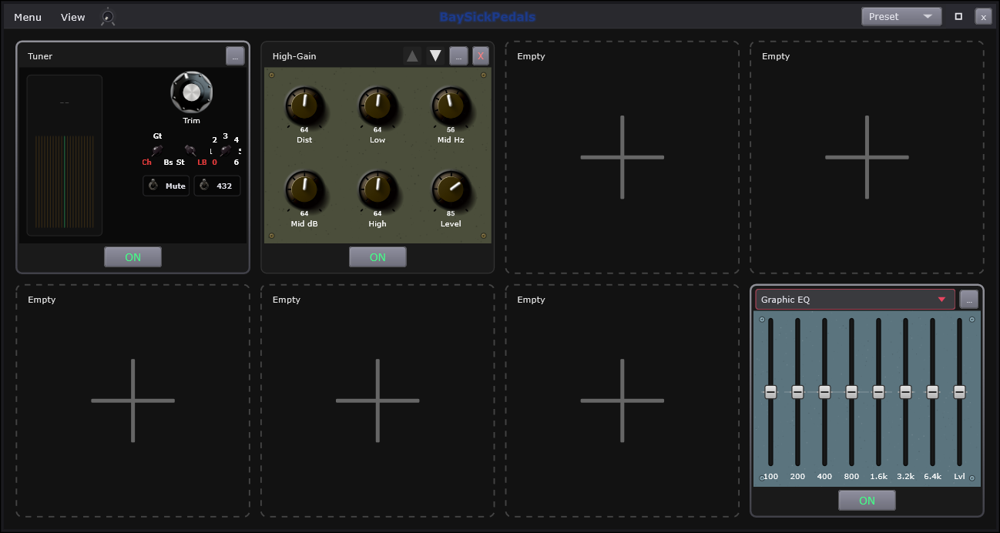
| # | On screen |
|---|---|
View - swaps the compact board for the full board. Two window sizes, 331x331 and 1038x554 | |
Preset picker - the whole board | |
An empty slot - dashed outline with a +, on the six FREE positions (2-7). Clicking it opens the picker, see BaySickPedals Picker List | |
| A filled slot - solid outline, the pedal name at the top left | |
... - the pedal's PRESET menu: Save Preset As... / Factory Presets / My Presets / Restore Defaults / Save as Default / Reveal Folder.... Changing the PEDAL is right-click on the tile | |
| EQ type dropdown - the LAST slot only. Three EQs to choose between; the slot is always an EQ | |
Slot ON footswitch - engages that pedal. Green when on | |
| Tuner display - scrolling strobe stripes or a 21-cell LED bar (style is switchable), plus note name / cents / Hz text | |
Tuner chicken-heads - detection Ch / Gt / Bs (chromatic / guitar / bass), display style St / LB (strobe / LED bar), and flat/drop tuning 0 to 6 semitones below standard; 432 is a toggle for the A=432 reference | |
| The EQ's own controls - what is here changes with the type picked above, so the knobs in the picture are one of three possible sets | |
Per-slot X - removes that pedal; populated slots only | |
| Per-slot reorder arrows - filled triangles, greyed at the chain ends |
Controls
| Control | What it does | Default | Range |
|---|---|---|---|
| Trim | Fine-trims the tuner's reference pitch. | 440 | 436 to 445 |
| Dist | Adds cascading hard-clip distortion. | 0.5 | 0 to 1 |
| Low | Cuts or boosts the low shelf. | 0 | -15 to 15 |
| Mid Hz | Moves the mid peak's frequency. | 800 | 200 to 5000 |
| Mid dB | Cuts or boosts the mid peak. | 0 | -15 to 15 |
| High | Cuts or boosts the high shelf. | 0 | -15 to 15 |
| Level | Sets the pedal's output level. | 0 | -24 to 12 |
The pedalboard works like the floor in front of a guitarist: eight stompboxes in a row, the signal passing through them left to right on its way to the amp. Slot 1 is always the tuner, slot 8 is always an EQ, and the six between are yours to fill.

View swaps between the full-size board and the compact one - same pedals, same settings, two window sizes: Standard is the full-size board with every control on its faceplate (the tick marks the active view), and Compact is the condensed board shown below. Preset saves and recalls the whole board: which pedals, in what order, with every knob position.

In Compact view, a slot dropdown
(1 Tuner through 8 Graphic EQ,
(empty) for unfilled) becomes the way to reach each slot -
the compact board shows one pedal at a time.
A pedal opened as its own window elsewhere in
the app uses this same compact face.
An empty slot is a dashed outline with a
+ - click it and the pedal picker opens.
A filled slot shows the pedal itself with
its name at the top; right-click the pedal's face to swap it for a
different one.
The ON footswitch at each pedal's foot engages it - green when on, silent pass-through when off. It is the fastest way to hear what a pedal is adding.
The X removes a pedal from its slot, and the reorder arrows move it along the chain. Order matters: distortion INTO delay means your echoes are copies of a distorted note; delay INTO distortion means the echoes themselves get crushed - same two pedals, different sound. The arrows grey out at the chain's ends.
The ... button on each pedal is that
pedal's own preset menu: Save Preset As..., the
Factory Presets and My Presets folders,
Restore Defaults, Save as Default (how you make
a pedal always arrive set your way) and Reveal Folder.... It
manages the pedal's settings - changing WHICH pedal sits there is the
right-click on its face.
The tuner display shows pitch two ways - your choice of scrolling strobe stripes or a 21-light LED bar. Both read the same: drifting left means flat (too low), drifting right means sharp (too high), centered and still means in tune. The note name, the error in cents (hundredths of a semitone) and the exact frequency print beside it.
The tuner's switches. Detection mode:
Ch chromatic (any note), Gt / Bs
tuned to guitar or bass strings. Display style: St strobe or
LB LED bar. The flat/drop switch offsets the whole reference
0 to 6 semitones down, so a drop-tuned guitar
reads as in-tune instead of permanently flat. And 432
re-references A from the standard 440 Hz to 432 Hz, for material tuned
that way.
The last slot is always an EQ - the final tone trim before the amp - and its dropdown picks WHICH of the three EQ pedals lives there. Its controls change with that choice, so the knobs in the picture are one of three possible faces.
How this works: Window chrome, sizing and persistence, Presets, Blues Drive, Graphic EQ (pedal), EngineRig.
Tuner
Pitch detection with a mute and a settable reference pitch.
// TunerStyleDSP::getReading — Hz -> note + cents, with string-snap modes
const float hz = mYin.getFrequencyHz();
if (hz < PitchTrackerYIN::kMinFreqHz || hz > PitchTrackerYIN::kMaxFreqHz) return false;
// Convert Hz -> chromatic midi note (with cents). Flat tuning references N
// semitones below standard: shift the note up by N so an N-flat string reads
// as its standard note name at 0 cents.
const float midiF = 69.0f + 12.0f * std::log2 (hz / mTrimHz) + (float) mFlatSemitones;
const int midi = (int) std::round (midiF);
const float cents = (midiF - (float) midi) * 100.0f;
if (mMode == Mode::Guitar)
{
// Snap to nearest guitar open string (compare in midi space).
int best = kGuitarOpenStrings[0];
int bestDist = std::abs (midi - best);
for (int s : kGuitarOpenStrings)
{
const int d = std::abs (midi - s);
if (d < bestDist) { bestDist = d; best = s; }
}
target = best;
targetCents = (midiF - (float) target) * 100.0f;
}Full function — Source\DSP\TunerStyleDSP.cpp
// Source/DSP/TunerStyleDSP.cpp - TunerStyleDSP::getReading (complete)
bool TunerStyleDSP::getReading (Reading& out) const noexcept
{
const float hz = mYin.getFrequencyHz();
if (hz < PitchTrackerYIN::kMinFreqHz || hz > PitchTrackerYIN::kMaxFreqHz) return false;
// Convert Hz -> chromatic midi note (with cents). Flat tuning references N
// semitones below standard: shift the note up by N so an N-flat string reads
// as its standard note name at 0 cents.
const float midiF = 69.0f + 12.0f * std::log2 (hz / mTrimHz) + (float) mFlatSemitones;
const int midi = (int) std::round (midiF);
const float cents = (midiF - (float) midi) * 100.0f;
int target = midi;
float targetCents = cents;
if (mMode == Mode::Guitar)
{
// Snap to nearest guitar open string (compare in midi space).
int best = kGuitarOpenStrings[0];
int bestDist = std::abs (midi - best);
for (int s : kGuitarOpenStrings)
{
const int d = std::abs (midi - s);
if (d < bestDist) { bestDist = d; best = s; }
}
target = best;
targetCents = (midiF - (float) target) * 100.0f;
}
else if (mMode == Mode::Bass)
{
int best = kBassOpenStrings[0];
int bestDist = std::abs (midi - best);
for (int s : kBassOpenStrings)
{
const int d = std::abs (midi - s);
if (d < bestDist) { bestDist = d; best = s; }
}
target = best;
targetCents = (midiF - (float) target) * 100.0f;
}
out.midiNote = midi;
out.centsFromNote = cents;
out.targetNote = target;
out.centsFromTarget = targetCents;
out.frequencyHz = hz;
return true;
}- YIN difference function: `d[tau] = sum_{i=0}^{W/2-1} (x[i] - x[i+tau])^2` over half the analysis window.
- CMNDF normalization: `d'[0] = 1`, `d'[tau] = d[tau] * tau / sum_{j=1..tau} d[j]` — makes the 0.15-class threshold level-independent.
- Pitch pick: first tau in [tauMin, tauMax] with `d'[tau] < kYinThreshold`, descended to the local dip bottom; `tauMin = floor(sr/kMaxFreqHz)`, `tauMax = ceil(sr/kMinFreqHz)`.
- Sub-sample refinement: parabolic fit `refinedTau = tau + (a - c) / (2(a - 2b + c))` over cmndf[tau-1..tau+1]; `freqHz = analysisRate / refinedTau`; `confidence = 1 - d'[tau]`.
- Tuner window: 4096 samples / 1024 hop (vs. the shared 2048 default) so the low end reaches ~21.5 Hz at 44.1 kHz — covers bass low notes.
- Note conversion: `midiF = 69 + 12*log2(hz / trimHz) + flatSemitones`; `cents = (midiF - round(midiF)) * 100`. Flat tuning 0..6 semitones shifts the reading up so an N-flat string reads its standard name at 0 cents.
- Reference trim: 440 mode trims 436..445 Hz; 432 mode trims 428..437 Hz.
- String snap: Guitar mode snaps to nearest of MIDI {40,45,50,55,59,64} (E2 A2 D3 G3 B3 E4); Bass mode {28,33,38,43} (E1 A1 D2 G2); Chromatic reports the nearest chromatic note.
- Audio path: `process()` only mono-sums input into the tracker and (optionally) hard-mutes the output — the tuner never alters the signal otherwise.
Behind: Tuner display, Tuner chicken-heads.
BaySickPedals Menu
Part of BaySickPedals
The Pedals window menu.

| # | On screen |
|---|---|
Pedals - this window, tick when shown | |
NAM/IR - see BaySickNAM/IR | |
Lock - tick when locked; a locked tab shows [L] on its ribbon slot | |
Rename... | |
Duplicate Inst (new tab) | |
Save Page Preset As... | |
Load Page Preset submenu | |
Delete Inst |
The Pedals window menu - navigation between the two guitar-tone windows, then the tab housekeeping.
Pedals. This window - the board itself. The tick marks it while it is showing.
NAM/IR. The amp-and-cabinet window that sits after the board: amp captures and cabinet impulse responses. Pedals shape the signal, NAM/IR gives it the amp.
Lock protects the tab from edits (tick while locked,
[L] on its ribbon slot).
Rename... names the tab; Duplicate Inst (new tab) clones it - board, pedal settings and all - into a fresh tab; Delete Inst removes it.
Save Page Preset As... and
Load Page Preset save and recall the whole
board - which pedals, in what order, with what settings - as one preset.
Individual pedals save their own presets from the ... button on
the pedal itself.
How this works: EngineRig, Projects and saving, Presets.
BaySickPedals Picker List
Part of BaySickPedals
The pedal picker. Its groups are NOT the same as the rack picker groups, see Effect Picker List: this one leads with the user NAM pedal and carries pedal-only models.

| # | On screen |
|---|---|
User NAM Pedal group - Load NAM Pedal, a user-supplied capture rather than a modelled type | |
Dynamics group - Bass Compressor, Compressor, Noise Gate | |
Harmonics group - Bass Driver, Bass Overdrive, Blues Drive, Distortion, Fuzz, High-Gain, Octave, Overdrive, Saturation | |
Modulation group - Acoustic Simulator, Chorus, Flanger, Phaser, Polyphonic Synth, Wah | |
Time group - Acoustic Preamp, Delay, Reverb | |
Clear - empties the slot. Greyed while the slot is already empty |
The pedal picker - what you get when you click an empty slot or right-click a pedal to swap it. Grouped by what the pedal does to the signal.
User NAM Pedal. Load your own captured pedal - a .nam file of a real unit - instead of one of the modeled types.
Dynamics - pedals that control level: compressors squeeze loud and quiet closer together (the bass version tuned for low end), and the noise gate mutes the hiss between phrases.
Harmonics - the dirt section: from bass-friendly drivers through blues drive, overdrive and saturation up to distortion, fuzz and high-gain. Also the octave pedal, which adds a note an octave away.
Modulation - movement and character: chorus, flanger and phaser swirl the signal; wah is the sweeping filter; the acoustic simulator makes an electric read as acoustic; the polyphonic synth tracks your playing with synth voices.
Time - delay repeats, reverb space, and the acoustic preamp's studio-style tone stage.
Clear empties the slot; it greys when the slot is already empty.
How this works: NAM Pedal, Bass Compressor, Blues Drive, Synth (pedal), Acoustic Preamp.
BaySickGuitars
Part of BaySickPedals · Related: BaySickGuitars/Basses Menu, BaySickNAM/IR
An sfizz Inst tab. The control surface is drawn from the loaded instrument, so what is on screen depends on which guitar is loaded - the callouts below are the frame plus the Green Keyswitch surface.
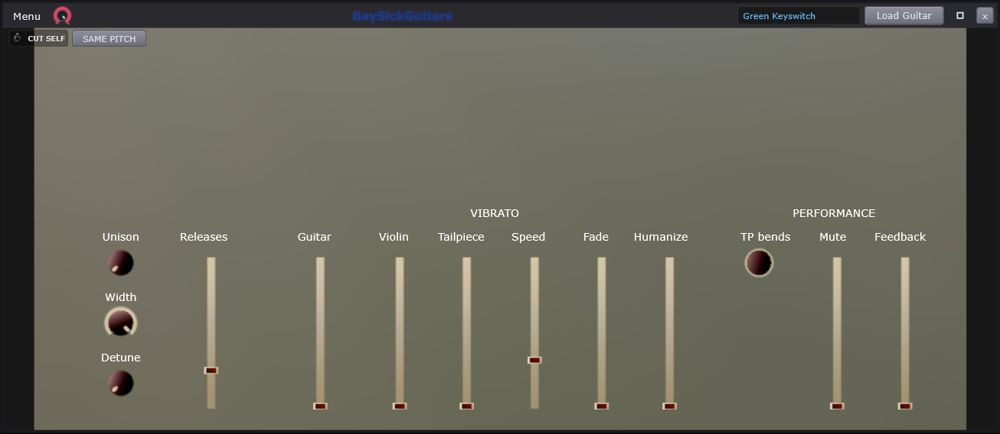
| # | On screen |
|---|---|
Loaded-instrument field - Green Keyswitch | |
Load Guitar - the instrument picker. This engine is PROCESSOR-owned with its own race-safe load path, not rig-owned like the dynamic tabs | |
CUT SELF | |
SAME PITCH; the face flips to CUT ALL while on | |
Unison / Width / Detune knobs | |
Releases slider | |
VIBRATO group - Guitar, Violin, Tailpiece, Speed, Fade, Humanize sliders | |
PERFORMANCE group - TP bends knob, Mute and Feedback sliders | |
Swing Mix knob on the title bar, right of Menu - scales the global Swing for this player; right-click offers Truncate Swing Notes |
BaySickGuitars is the sampled guitar: real recordings of a real instrument, mapped across the keyboard. The panel you see is drawn from the loaded instrument itself, so these are the guitar's own controls.
The loaded-instrument field names what is loaded, and Load Guitar swaps it for another from the library. Different instruments bring different recordings and sometimes different controls.
CUT SELF makes each new note stop the previous one
- the way a real string can only ring one way at a time. On for tight
picked lines; off lets notes ring over each other.
SAME PITCH narrows the cut to repeated
identical notes only, and its face flips to CUT ALL when you
want every note to cut.
Unison / Width / Detune stack copies of the sound, spread them across the stereo field, and tune them slightly apart - the sampled equivalent of a guitarist recording the part twice, once left, once right. Small amounts double-track; large amounts wall-of-guitars.
Releases sets how much of the recorded release noise plays - the sound of fingers leaving strings. It is a large part of what makes a sampled guitar read as real. Too low sounds unnaturally clean, too high sounds squeaky.
VIBRATO - the finger-wobble on a held note.
Guitar and Violin set two styles of depth,
Tailpiece the bend-from-the-bridge character,
Speed how fast the wobble runs, Fade how long a
note holds still before the vibrato arrives (real players add it late,
not instantly), and Humanize keeps it from being perfectly
regular.
PERFORMANCE. TP bends is the depth of
tailpiece bends. Mute brings in palm-muted recordings - the
chunky damped sound of a hand resting on the strings. Feedback
adds controlled amp squeal to held notes.
Swing Mix - the small knob on the title bar next to
Menu - sets how much of the transport's global Swing this instrument
feels, from none to full. Swing pushes every second sixteenth-note late to
make parts groove; per-player mix means the drums can swing hard while the
guitar stays straight. Right-click offers Truncate Swing
Notes for cleaning up notes that swing pushed into each other.
Loading control surface... covers the panel for the moment the instrument's artwork takes to arrive after a load - not an error, just the load in progress.
BaySickBasses
Part of BaySickPedals · Related: BaySickGuitars/Basses Menu, BaySickNAM/IR
The sibling sfizz Inst tab. A different engine from BaySickGuitars, not a variant (see BaySickGuitars) - different instruments, different surface, its own load path.
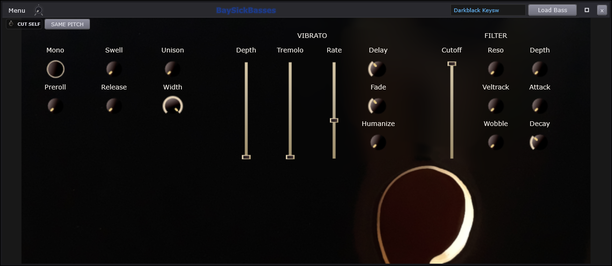
| # | On screen |
|---|---|
Loaded-instrument field - Darkblack Keysw | |
Load Bass | |
Mono / Preroll | |
Swell / Release | |
Unison / Width | |
VIBRATO group - Depth, Tremolo, Rate sliders | |
Delay / Fade / Humanize knobs | |
FILTER group - Cutoff slider, Reso / Veltrack / Wobble / Attack / Decay / Depth knobs | |
CUT SELF - a new note stops the one before it, see CUT SELF | |
SAME PITCH - cut only when it is the same note repeating, see SAME PITCH; the face flips to CUT ALL while on; the face flips to CUT ALL while on | |
Swing Mix knob on the title bar, right of Menu - scales the global Swing for this player; right-click offers Truncate Swing Notes |
BaySickBasses is the sampled bass - and a different instrument from BaySickGuitars, not a setting on it: its own recordings and its own control surface. The panel is drawn from the loaded instrument.
The loaded-instrument field names the current bass, and Load Bass swaps it for another from the library.
Mono / Preroll. Mono enforces one note
at a time - a new note silences the last, the way a bassline on one string
behaves. Preroll starts each recording a touch before the
beat, so the pluck's attack lands ON the beat instead of just after it -
sampled instruments feel late without this.
Swell / Release. Swell fades notes in for bowed, pad-like playing instead of plucked attacks. Release sets how much of the recorded note-off sound - the finger damping the string - plays.
CUT SELF and SAME
PITCH work exactly as on the guitar: a new note stops the previous
one, optionally only when it is the same note repeating, with the
CUT ALL flip for cutting everything.
Unison / Width stack and widen copies of the sound. Use sparingly on bass - low end usually wants to sit solid in the center of the stereo picture - but it is here for the parts that want size.
VIBRATO - Depth (how far the pitch
wobbles), Tremolo (a volume wobble layered with it),
Rate (how fast) - with
Delay / Fade / Humanize deciding when it arrives after the note
starts, how gradually it fades in, and how much natural irregularity keeps
it from sounding mechanical.
FILTER - a full synth-style filter laid over the
recordings, which is what lets a sampled bass behave like a synth bass. A
filter is a tone control: Cutoff sets where the brightness
stops (left = darker, right = brighter) and Reso adds a peak
right at that point for squelch. Veltrack opens the filter
more when you play harder; Wobble adds cyclic movement; and
Attack / Decay / Depth give the
filter its own envelope, so each note can start bright and darken - the
classic pluck - on top of real bass recordings.
Swing Mix - the small knob on the title bar next to
Menu - sets how much of the transport's global Swing this instrument
feels, from none to full. Swing pushes every second sixteenth-note late to
make parts groove; per-player mix means the drums can swing hard while the
guitar stays straight. Right-click offers Truncate Swing
Notes for cleaning up notes that swing pushed into each other.
Loading control surface... covers the panel briefly while a newly loaded instrument's artwork arrives.
BaySickGuitars/Basses Menu
Part of BaySickPedals, BaySickGuitars, BaySickBasses
The BaySickGuitars / BaySickBasses window menu - identical on both.

| # | On screen |
|---|---|
Pedals - see BaySickPedals | |
NAM/IR - see BaySickNAM/IR | |
Piano Roll - jumps the roll to this tab | |
FX Rack - see Effects Rack | |
Freeze - renders this tab and plays the render instead. Greys when unavailable, with the reason in its tooltip; label color signals state - cyan while frozen, orange once the render goes stale | |
Lock - tick when locked; a locked tab shows [L] on its ribbon slot | |
Rename... | |
Duplicate Inst (new tab) | |
Save Page Preset As... | |
Load Page Preset submenu | |
Delete Inst |
The window menu on BaySickGuitars and BaySickBasses - identical on both. Top half is the guitar-channel tour; bottom half is tab housekeeping.
Pedals. The pedalboard that feeds this instrument - stompbox effects in a chain before the amp.
NAM/IR. The amp-and-cabinet window after the board - amp captures and cabinet impulse responses.
Piano Roll. Jumps to the roll pointed at this tab, so written notes play this instrument.
FX Rack. This channel's six-slot effects rack - studio effects after the amp, before the mixer.
Freeze. Renders the tab and plays the render instead of running the instrument live. Greyed when unavailable with the reason in the tooltip; cyan label = frozen, orange = the render has gone stale.
Lock (tick while locked, [L] on the
ribbon slot), Rename...,
Duplicate Inst (new tab) and
Delete Inst - the standard tab
housekeeping.
Save Page Preset As... and Load Page Preset capture and recall the whole instrument setup as one preset.
How this works: EngineRig, Effect racks, Freeze, Projects and saving, Presets.
BaySickNAM/IR
Part of BaySickPedals, BaySickGuitars, BaySickBasses, BaySickVocals
Amp head, cabinet IR, and two independent virtual microphones. Mic A and Mic B are the SAME control set, so each control is one callout with the Mic B twin noted rather than numbered again.
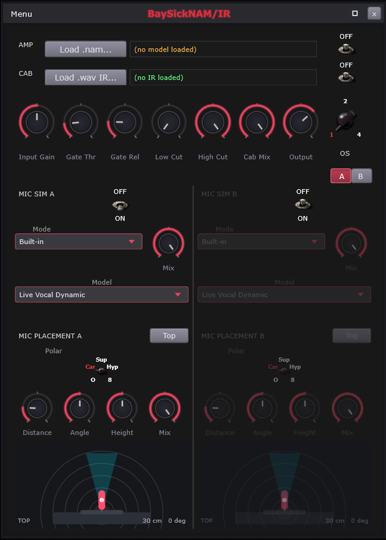
| # | On screen |
|---|---|
AMP row - Load .nam... and the model field, (no model loaded) when empty. A missing file shows its name plus (missing) in red | |
Amp bypass - the OFF toggle right of the AMP row | |
CAB row - Load .wav IR... and the IR field, (no IR loaded) when empty. Same missing-file state as the model field | |
| Cab bypass | |
Input Gain | |
Gate Thr / Gate Rel | |
Low Cut / High Cut - pre-cab | |
Cab Mix | |
Output | |
OS chicken-head - oversampling, 1x / 2x / 4x | |
A / B slot buttons - this engine own A/B pair, independent of the Vox page one | |
MIC SIM A heading. MIC SIM B is the same column for the second mic | |
Mic Active switch, OFF / ON - one per mic, both default OFF. Switching a mic crossfades over 15 ms rather than stepping, so it is safe to automate. With both off the cabinet reaches the output with no mic model on it at all | |
Mode dropdown - Built-in / User IR. TWO entries: whether there is a mic at all is the switch job, not a Mode | |
Model dropdown - the ten built-in archetypes. Shown in Built-in mode only | |
User-IR path label - shares the Model dropdown's rectangle; the Load Mic IR... button is its own row below it | |
Mic Sim Mix | |
MIC PLACEMENT A heading. MIC PLACEMENT B is its twin | |
Top / Side view button - ONE PER MIC, so the two mics can be looked at independently | |
Polar chicken-head - O / Card / Sup / Hyp / 8 = Omni / Cardioid / Supercardioid / Hypercardioid / Figure-8 | |
Distance - 1 to 150 cm | |
Angle - -90 to +90 degrees, left and right off the speaker axis | |
Height - -30 to +30 cm above or below the cone centre. Combines with Angle into the true off-axis angle AND lengthens the path, so raising a mic darkens it and backs it off at once | |
Placement Mix | |
| Mic picture - draggable. In TOP the drag sets Distance and Angle; in SIDE it sets Height and Angle and Distance stays on its knob. Double-click returns the mic to 30 cm, on axis, at cone height | |
| Distance rings (TOP) / 10 cm height rings (SIDE) | |
| On-axis bright zone - inside 15 degrees the model applies NO off-axis darkening at all | |
| Proximity boundary - the 20 cm mark. In SIDE it closes up as the mic backs off and disappears past 20 cm, because proximity follows the TRUE distance and not the height alone | |
Placement readout - 30 cm 0 deg, gaining a third field in SIDE |
Controls
| Control | What it does | Default | Range |
|---|---|---|---|
| Input Gain | Sets the level hitting the amp model. | 0 | -24 to 24 |
| Gate Threshold | Silences signal below this level. | -50 | -60 to 0 |
| Gate Release | Sets how fast the gate closes. | 100 | 5 to 500 |
| Low Cut | Tightens the low end before the cab. | 20 | 20 to 500 |
| High Cut | Tames fizz before the cab. | 20000 | 3000 to 20000 |
| Cabinet Mix | Blends the cabinet simulation in. | 100 | 0 to 100 |
| Master Output | Sets the final output level. | 0 | -24 to 12 |
| Mix | Blends the mic simulation in. | 100 | 0 to 100 |
| Distance | Moves the virtual mic closer or farther. | 30 | 1 to 150 |
| Angle | Turns the virtual mic off axis. | 0 | -90 to 90 |
| Height | Raises the virtual mic off cone center. | 0 | -30 to 30 |
The NAM/IR window is the amp room. NAM stands for Neural Amp Modeler - a real amplifier, captured as a model that behaves like the original, drive and all. IR stands for impulse response - a real speaker cabinet, captured as its acoustic fingerprint. Load one of each and your dry signal comes out the other side sounding like it went through the rig. Two simulated microphones with real microphone physics complete the room.
The AMP row. Load .nam... loads an amp
capture; the field names what is loaded, reads
(no model loaded) when empty, and shows the filename in red
with (missing) if the file has vanished from disk.
The bypass at the row's end takes the amp
out of the path without unloading it - the instant with/without
comparison.
The CAB row - the same pattern for the cabinet:
Load .wav IR..., the field with the same empty and missing
states, and its own bypass. Amp without
cab is raw and fizzy (the sound of an amp with no speaker); cab without
amp is a natural tone-shaper.
Input Gain drives the model harder or softer - with an amp capture this behaves like the amp's own input knob: more gain, more breakup and grit; less, cleaner. Gate Thr / Gate Rel are a noise gate - a mute that opens only when signal is present. Threshold sets how loud you must play to open it; release, how quickly it closes after you stop. Low Cut / High Cut trim rumble and fizz before the cabinet. Cab Mix blends the cabinet-filtered sound against the unfiltered one, and Output sets the final level out. OS is oversampling - 1x / 2x / 4x - the engine internally running at a higher rate for a cleaner top end on distorted settings, at more CPU cost.
A / B. Two complete rig memories. Set up one sound on A, another on B, and flip between them while playing. This pair belongs to this window alone.
MIC SIM A and B - two identical microphone
columns, because real cabs are usually miked twice and the blend shapes
the tone. Each column's Active switch ships
OFF - the mic sim adds nothing until you turn it on. Flipping it crossfades over
a few milliseconds instead of clicking, so it is safe to automate
mid-song. Mode chooses where the mic's
character comes from: Built-in -
the Model dropdown's ten classic
microphone archetypes - or User IR,
your own file loaded with Load Mic
IR... (the loaded path shows where the Model dropdown sits).
Mix sets how much of that mic's
coloring applies.
MIC PLACEMENT - where each microphone stands in
the room, with the physics that implies.
The Top / Side button flips the view
per mic: looking down on the cab, or at it from the side.
Polar is the mic's pickup pattern - how
it hears sound from different directions: Omni hears
everything equally, Cardioid rejects what is behind it (the
standard stage mic), Super and Hypercardioid
reject harder, figure-8 hears front and back but not the
sides. Distance (1-150 cm): close is
thick and bass-heavy; far is roomier and thinner.
Angle swings the mic off the speaker's
center axis - further off-axis is darker.
Height raises or lowers it off the
cone's center; height adds to the true off-axis angle AND lengthens the
path, so raising a mic both darkens and slightly distances it.
Mix is the placement effect's own
depth.
Drag the microphone in the picture. In TOP view
the drag sets Distance and Angle at once; in SIDE view it sets Height and
Angle while Distance stays on its knob. Double-click parks the mic back
at its neutral spot. The rings mark
distance (TOP) or 10 cm height steps (SIDE);
the bright zone is the 15-degree
on-axis cone where no off-axis darkening applies at all;
the proximity boundary marks the 20 cm
line inside which close-mic bass boost lives - in SIDE view it shrinks as
the mic backs away, because proximity follows TRUE distance, not just
height. The readout prints the numbers
(30 cm 0 deg, plus height in SIDE view).
When a mic's switch is off, its whole
column dims to 40% and ignores the mouse, picture included.
The full-rig hint. Some captures are
full-rig - amp AND cabinet baked into one file. Load one and the
status row says
Full-rig model - cabinet already included. Consider bypassing the
IR. - because running a second cabinet over a baked-in one doubles
the coloring, and it is the most common reason a rig sounds boxy.
Load failures print their reason in red
on the same row.
How this works: Gate, Polyphase oversampling, Presets.
Mic Sim
Ten microphone archetypes. These are EQ curves, not impulse responses
— four parametric bands per model, shaped to approximate the published
response of that kind of microphone. Cheaper than convolution and honest about
what it is; loading a real capture is the User IR option.
// MicSimDSP — 4-band-per-model archetype table (first two of ten shown)
struct BandSpec { float freq; float q; float gainDb; };
// LiveVocalDynamic (SM58-style cardioid dynamic)
{ "Live Vocal Dynamic",
"Live vocals, sturdy stage mic",
{{ 80.0f, 0.7f, -6.0f },
{ 400.0f, 1.0f, -1.5f },
{ 5000.0f, 1.4f, +5.0f },
{10000.0f, 0.7f, -3.0f }} },
// BroadcastDynamic (SM7B-style)
{ "Broadcast Dynamic",
"Podcasting, voiceover, smooth vocals",
{{ 100.0f, 0.7f, -1.0f },
{ 1000.0f, 1.0f, 0.0f },
{ 4000.0f, 1.4f, +2.0f },
{10000.0f, 0.7f, -2.0f }} },Full function — Source\DSP\MicSimDSP.cpp
// Source/DSP/MicSimDSP.cpp
#include "MicSimDSP.h"
#include "SafeAudioReader.h" // channel/frame sanity gate (QA-Cleanup)
#include "../ProjectFileResolver.h"
#include "../SampleLibrary.h"
#include "SafeAudioFormats.h" // MP3 decode via vendored LAME (QA-Cleanup)
// ─────────────────────────────────────────────────────────────────────────────
// MicSimDSP - H-6d (2026-05-02)
// ─────────────────────────────────────────────────────────────────────────────
namespace
{
struct BandSpec { float freq; float q; float gainDb; };
struct ModelSpec
{
const char* displayName;
const char* typicalUse;
BandSpec bands[4];
};
// 10 built-in mic-archetype fingerprints. Generic descriptive names
// only -- no trademarked product names ship in the binary. Curve
// values are 4-band parametric EQ approximations of typical published
// FR characteristics. These are "in the style of" the named archetype.
static const ModelSpec kModels[(int) MicSimDSP::Model::kNumModels] =
{
// LiveVocalDynamic (SM58-style cardioid dynamic)
{ "Live Vocal Dynamic",
"Live vocals, sturdy stage mic",
{{ 80.0f, 0.7f, -6.0f },
{ 400.0f, 1.0f, -1.5f },
{ 5000.0f, 1.4f, +5.0f },
{10000.0f, 0.7f, -3.0f }} },
// BroadcastDynamic (SM7B-style)
{ "Broadcast Dynamic",
"Podcasting, voiceover, smooth vocals",
{{ 100.0f, 0.7f, -1.0f },
{ 1000.0f, 1.0f, 0.0f },
{ 4000.0f, 1.4f, +2.0f },
{10000.0f, 0.7f, -2.0f }} },
// WorkhorseCardioid (Beta 58 / e835-style dynamic)
{ "Workhorse Cardioid",
"Backing vocals, brighter lead vox",
{{ 100.0f, 0.7f, -4.0f },
{ 250.0f, 1.0f, -1.0f },
{ 6000.0f, 1.4f, +6.0f },
{12000.0f, 0.7f, +2.0f }} },
// VintageLDC87 (U87-style large diaphragm condenser)
{ "Vintage LDC '87",
"Studio lead vocal, classic LDC sound",
{{ 80.0f, 0.7f, +1.0f },
{ 1000.0f, 1.0f, 0.0f },
{ 8000.0f, 1.0f, +3.0f },
{12000.0f, 1.4f, +4.0f }} },
// ModernLDC (TLM103-style)
{ "Modern LDC",
"Modern vocals, voiceover",
{{ 100.0f, 0.7f, -1.0f },
{ 800.0f, 1.0f, 0.0f },
{ 6000.0f, 1.0f, +4.0f },
{12000.0f, 1.4f, +5.0f }} },
// MultiPatternLDC (C414-style)
{ "Multi-Pattern LDC",
"Versatile studio LDC, pop vocals",
{{ 80.0f, 0.7f, 0.0f },
{ 250.0f, 1.0f, -1.0f },
{ 5000.0f, 1.4f, +3.0f },
{14000.0f, 1.4f, +5.0f }} },
// TubeLDC (ELA M 251 / C12-style vintage tube)
{ "Tube LDC",
"Character vocals, jazz, soul",
{{ 80.0f, 0.7f, +2.0f },
{ 350.0f, 1.0f, -1.5f },
{ 6000.0f, 1.0f, +2.5f },
{10000.0f, 0.7f, +3.0f }} },
// PencilSDC (KM184-style small diaphragm)
{ "Pencil SDC",
"Acoustic guitar, drum overheads, hi-hat",
{{ 100.0f, 0.7f, -1.0f },
{ 1000.0f, 1.0f, 0.0f },
{ 8000.0f, 1.0f, +1.0f },
{14000.0f, 1.0f, +2.0f }} },
// Ribbon (R-121-style figure-8)
{ "Ribbon",
"Guitar amps, brass, character vocal",
{{ 80.0f, 0.7f, +2.0f },
{ 500.0f, 1.0f, +1.0f },
{ 5000.0f, 1.0f, -3.0f },
{12000.0f, 0.7f, -6.0f }} },
// KickDrum (D112 / Beta 52-style)
{ "Kick Drum",
"Kick drum, bass cabinets",
{{ 60.0f, 1.0f, +6.0f },
{ 400.0f, 1.4f, -6.0f },
{ 4000.0f, 1.4f, +6.0f },
{10000.0f, 0.7f, +2.0f }} },
};
}
const char* MicSimDSP::modelDisplayName (int idx)
{
if (idx < 0 || idx >= (int) Model::kNumModels) return "(unknown)";
return kModels[idx].displayName;
}
const char* MicSimDSP::modelTypicalUse (int idx)
{
if (idx < 0 || idx >= (int) Model::kNumModels) return "";
return kModels[idx].typicalUse;
}
MicSimDSP::MicSimDSP()
{
for (auto& a : mUserIrLoaded) a.store (false);
}
MicSimDSP::~MicSimDSP() = default;
void MicSimDSP::prepare (double sampleRate, int maxBlockSize, int numChannels)
{
mSampleRate = sampleRate;
mMaxBlock = juce::jmax (1, maxBlockSize);
mNumCh = juce::jmax (1, numChannels);
juce::dsp::ProcessSpec spec { sampleRate, (juce::uint32) mMaxBlock,
(juce::uint32) mNumCh };
for (auto& band : mEqBands)
{
band.prepare (spec);
band.reset();
}
for (auto& ir : mUserIrs)
{
ir.prepare (spec);
ir.reset();
}
mDryScratch.setSize (mNumCh, mMaxBlock, false, true, true);
rebuildEqForModel (mModel);
mPrepared = true;
}
void MicSimDSP::reset()
{
for (auto& b : mEqBands) b.reset();
for (auto& ir : mUserIrs) ir.reset();
mDryScratch.clear();
}
void MicSimDSP::setModel (int idx)
{
idx = juce::jlimit (0, (int) Model::kNumModels - 1, idx);
if (idx == mModel) return;
mModel = idx;
if (mPrepared) rebuildEqForModel (mModel);
}
void MicSimDSP::rebuildEqForModel (int idx)
{
const auto& spec = kModels[idx];
for (int i = 0; i < kNumBands; ++i)
{
const auto& b = spec.bands[i];
auto coefs = juce::dsp::IIR::Coefficients<float>::makePeakFilter (
mSampleRate, b.freq, b.q,
juce::Decibels::decibelsToGain (b.gainDb));
*mEqBands[(size_t) i].state = *coefs;
}
}
bool MicSimDSP::loadUserIr (const juce::File& f, juce::String& outErr, int slot)
{
const int s = (slot < 0) ? getActiveSlot() : juce::jlimit (0, 1, slot);
if (! f.existsAsFile())
{
outErr = "User IR file does not exist: " + f.getFullPathName();
return false;
}
// The slot remembers a persisted REFERENCE, so "is this one already
// loaded?" has to resolve before it compares. Callers that hold only the
// stored reference (BaySickNAMIRProcessor's A/B slot restore) re-ask for a
// load whenever their own resolved file does not string-match what the slot
// reports, which a reference never does -- without this early-out that
// rebuilds the convolution on every slot switch for the life of the project.
if (mUserIrLoaded[(size_t) s].load (std::memory_order_acquire)
&& ProjectFileResolver::resolve (mUserIrPaths[(size_t) s]) == f)
return true;
// juce::dsp::Convolution::loadImpulseResponse hands the file to its own
// background loader and reports nothing back, so an unreadable or non-audio
// pick used to land as "the slot names an IR and renders passthrough".
// Probe with a reader before committing -- same guard, same format set, as
// AcousticSimulatorStyleDSP::loadUserIR.
juce::AudioFormatManager fm;
SafeAudioFormats::registerAll (fm);
auto reader = SafeAudioReader::guard (
std::unique_ptr<juce::AudioFormatReader> (fm.createReaderFor (f)));
if (reader == nullptr || reader->lengthInSamples <= 0)
{
outErr = "This file could not be read as audio:\n" + f.getFullPathName();
return false;
}
mUserIrs[(size_t) s].loadImpulseResponse (f,
juce::dsp::Convolution::Stereo::yes,
juce::dsp::Convolution::Trim::yes,
0, // 0 = use file size
juce::dsp::Convolution::Normalise::yes);
// Persisted form, not the absolute path: an IR under Core Library or My
// Samples has to come back on another install or another Windows account,
// and an absolute path embeds this machine's user name. refForPersist
// returns the absolute path for anything outside those roots, which is what
// the bundler then rewrites when a project is made self-contained.
mUserIrPaths[(size_t) s] = SampleLibrary::refForPersist (f);
mUserIrLoaded[(size_t) s].store (true, std::memory_order_release);
return true;
}
void MicSimDSP::clearUserIr (int slot)
{
const int s = (slot < 0) ? getActiveSlot() : juce::jlimit (0, 1, slot);
mUserIrLoaded[(size_t) s].store (false, std::memory_order_release);
mUserIrPaths[(size_t) s].clear();
mUserIrs[(size_t) s].reset();
}
void MicSimDSP::process (juce::AudioBuffer<float>& buffer)
{
if (! mPrepared) return;
const Mode mode = mMode.load (std::memory_order_acquire);
if (mode == Mode::None) return; // passthrough
const int n = buffer.getNumSamples();
const int ch = juce::jmin (buffer.getNumChannels(), mNumCh);
if (n == 0 || ch == 0) return;
// Stash dry for the wet/dry blend
if (mDryScratch.getNumSamples() < n || mDryScratch.getNumChannels() < ch)
mDryScratch.setSize (ch, juce::jmax (n, mMaxBlock), false, true, true);
for (int c = 0; c < ch; ++c)
mDryScratch.copyFrom (c, 0, buffer, c, 0, n);
// Process the active path in-place
if (mode == Mode::BuiltIn)
{
juce::dsp::AudioBlock<float> block (buffer);
juce::dsp::ProcessContextReplacing<float> ctx (block);
for (auto& b : mEqBands) b.process (ctx);
}
else if (mode == Mode::UserIR)
{
const int s = mActiveSlot.load (std::memory_order_acquire);
if (! mUserIrLoaded[(size_t) s].load (std::memory_order_acquire))
return; // no IR loaded for active slot -- treat as passthrough
juce::dsp::AudioBlock<float> block (buffer);
juce::dsp::ProcessContextReplacing<float> ctx (block);
mUserIrs[(size_t) s].process (ctx);
}
// Wet/dry blend
const float wet = mMix;
const float dry = 1.0f - mMix;
if (juce::approximatelyEqual (wet, 1.0f)) return; // full wet, skip blend
for (int c = 0; c < ch; ++c)
{
float* w = buffer.getWritePointer (c);
const float* d = mDryScratch.getReadPointer (c);
for (int i = 0; i < n; ++i)
w[i] = w[i] * wet + d[i] * dry;
}
}- Each of the 10 archetypes is a serial cascade of 4 peak-filter biquads (`makePeakFilter(sr, freq, q, dbToGain(gainDb))`) — 4-band parametric approximations of published frequency-response characteristics, "in the style of" (no trademarked names in the binary). - The table, condensed (freq Hz / Q / dB, four bands each): - Live Vocal Dynamic (SM58-style): 80/0.7/-6, 400/1.0/-1.5, 5000/1.4/+5, 10000/0.7/-3 - Broadcast Dynamic (SM7B-style): 100/0.7/-1, 1000/1.0/0, 4000/1.4/+2, 10000/0.7/-2 - Workhorse Cardioid (Beta 58 / e835-style): 100/0.7/-4, 250/1.0/-1, 6000/1.4/+6, 12000/0.7/+2 - Vintage LDC '87 (U87-style): 80/0.7/+1, 1000/1.0/0, 8000/1.0/+3, 12000/1.4/+4 - Modern LDC (TLM103-style): 100/0.7/-1, 800/1.0/0, 6000/1.0/+4, 12000/1.4/+5 - Multi-Pattern LDC (C414-style): 80/0.7/0, 250/1.0/-1, 5000/1.4/+3, 14000/1.4/+5 - Tube LDC (ELA M 251 / C12-style): 80/0.7/+2, 350/1.0/-1.5, 6000/1.0/+2.5, 10000/0.7/+3 - Pencil SDC (KM184-style): 100/0.7/-1, 1000/1.0/0, 8000/1.0/+1, 14000/1.0/+2 - Ribbon (R-121-style): 80/0.7/+2, 500/1.0/+1, 5000/1.0/-3, 12000/0.7/-6 - Kick Drum (D112 / Beta 52-style): 60/1.0/+6, 400/1.4/-6, 4000/1.4/+6, 10000/0.7/+2 - Modes: None (passthrough), BuiltIn (the 4-band cascade), UserIR (two A/B convolution slots, Trim+Normalise, SafeAudioReader-probed before commit). - Output: wet/dry `out = wet*mix + dry*(1-mix)`; full-wet skips the blend loop.
Behind: MIC SIM A heading. MIC SIM B is the same c..., Mode dropdown, Model dropdown, User-IR path label, Mic Sim Mix.
Mic Placement
Four real effects, all from two numbers plus a pattern:
| Effect | Depends on |
|---|---|
| Level, falling with distance | Distance |
| Air absorption — further is darker | Distance |
| Proximity bass lift, gone by about 20 cm | Distance and pattern |
| Off-axis darkening, none inside 15 degrees | Angle and pattern |
Height is folded into those two numbers rather than being a third dimension the model has to know about. The model is rotationally symmetric about the speaker axis, so one effective off-axis angle is the complete answer:
| Vertical angle | v = atan2(height, distance) |
| Effective off-axis angle | cos eff = cos h × cos v |
| True path length | r = sqrt(distance² + height²) |
So raising a mic both darkens it and moves it further away — which is what happens when you raise a real stand, and it falls out of the geometry rather than being added as a rule.
What the model has no term for is position across the speaker cone, from dust cap to edge. The side view looks like it should do that. It does not.
// MicPlacementDSP::updateCoefs — distance/angle/pattern combined into 3 filters + gain
// Air-absorption LP cutoff: 20 kHz at 1 cm, ~6 kHz at 150 cm (log interp).
const float dist01 = (mDistanceCm - 1.0f) / 149.0f; // 0..1
const float airLp_log = juce::jmap (dist01, std::log (20000.0f), std::log (6000.0f));
const float airLpHz = std::exp (airLp_log);
// Proximity-effect bass shelf: peaks ~+8 dB at 1 cm cardioid,
// fades to 0 dB by ~20 cm; never applies for Omni.
const float proxScalar = proximityScalar (mPolar);
const float proxNear = juce::jlimit (0.0f, 1.0f, (20.0f - mDistanceCm) / 19.0f);
const float proxGainDb = 8.0f * proxNear * proxScalar;
// Off-axis darkening high shelf: past ~15 deg, max ~-8 dB at +/-90.
const float angleAbs = std::abs (mAngleDeg);
const float angle01 = juce::jlimit (0.0f, 1.0f, (angleAbs - 15.0f) / 75.0f);
const float darkenMax = (mPolar == Polar::Omni) ? 0.0f : -8.0f;
const float darkenDb = darkenMax * angle01;
// Distance ~1/sqrt(r) + polar gain.
const float distGain = juce::jlimit (0.1f, 1.5f,
1.0f / std::sqrt (mDistanceCm / 30.0f));
const float polarGain = polarResponse (mPolar, mAngleDeg);
mGainLin = distGain * polarGain;Full function — Source\DSP\MicPlacementDSP.cpp
// Source/DSP/MicPlacementDSP.cpp - MicPlacementDSP::updateCoefs (complete)
void MicPlacementDSP::updateCoefs()
{
// ── Air-absorption LP cutoff: 20 kHz at 1 cm, ~6 kHz at 150 cm
// (linear interpolation in log-frequency).
const float dist01 = (mDistanceCm - 1.0f) / 149.0f; // 0..1
const float airLp_log = juce::jmap (dist01,
std::log (20000.0f),
std::log (6000.0f));
const float airLpHz = std::exp (airLp_log);
auto airC = juce::dsp::IIR::Coefficients<float>::makeFirstOrderLowPass (mSampleRate, airLpHz);
*mAirLp.state = *airC;
// ── Proximity-effect bass shelf: peaks ~+8 dB at 1 cm cardioid,
// fades to 0 dB by ~20 cm; never applies for Omni.
const float proxScalar = proximityScalar (mPolar);
const float proxNear = juce::jlimit (0.0f, 1.0f, (20.0f - mDistanceCm) / 19.0f);
const float proxGainDb = 8.0f * proxNear * proxScalar;
auto proxC = juce::dsp::IIR::Coefficients<float>::makeLowShelf (
mSampleRate, 200.0f, 0.7f,
juce::Decibels::decibelsToGain (proxGainDb));
*mProximityShelf.state = *proxC;
// ── Off-axis darkening high shelf. As |angle| grows past ~15
// degrees, the shelf cuts the top end progressively (max ~-8 dB
// at +/-90 degrees for cardioid). Omni stays flat. Figure-8 is
// actually brighter directly off-axis at +/-180 but for the +/-90
// range we model here it simply darkens like cardioid.
const float angleAbs = std::abs (mAngleDeg);
const float angle01 = juce::jlimit (0.0f, 1.0f, (angleAbs - 15.0f) / 75.0f);
const float darkenMax = (mPolar == Polar::Omni) ? 0.0f : -8.0f;
const float darkenDb = darkenMax * angle01;
auto darkC = juce::dsp::IIR::Coefficients<float>::makeHighShelf (
mSampleRate, 4000.0f, 0.7f,
juce::Decibels::decibelsToGain (darkenDb));
*mOffAxisShelf.state = *darkC;
// ── Distance + polar gain attenuation.
// Distance follows 1/sqrt(r) normalized at 30cm, clamped to a sane
// near-field range (1cm clamps to 1.5, 30cm = 1.0, 150cm = ~0.45).
// Polar gain layers on top.
const float distGain = juce::jlimit (0.1f, 1.5f,
1.0f / std::sqrt (mDistanceCm / 30.0f));
const float polarGain = polarResponse (mPolar, mAngleDeg);
mGainLin = distGain * polarGain;
mLastDistanceCm = mDistanceCm;
mLastAngleDeg = mAngleDeg;
mLastPolar = (int) mPolar;
}- Distance range 1..150 cm; angle range -90..+90 degrees; five polar patterns. - Distance gain (~inverse-square-root of normalized distance): `distGain = clamp(1/sqrt(distanceCm/30), 0.1, 1.5)` — 1 cm ~ 1.0 (clamped from 5.5 to 1.5 ceiling), 30 cm = 1.0 by the formula (comment cites 30cm ~ 0.6 against the un-normalized 1/r intent), 150 cm ~ 0.45 pre-clamp floor 0.1. - Air absorption: first-order LP whose cutoff interpolates in LOG frequency from 20 kHz at 1 cm to 6 kHz at 150 cm: `hz = exp(jmap(dist01, ln 20000, ln 6000))`. - Proximity effect: low shelf at 200 Hz Q 0.7; gain `8 dB * proxNear * proxScalar` with `proxNear = clamp((20 - cm)/19, 0, 1)` (fades out by 20 cm) and per-pattern scalar Omni 0 / Cardioid 1.0 / Super 1.15 / Hyper 1.25 / Figure-8 1.5. - Off-axis darkening: high shelf at 4 kHz Q 0.7; `darkenDb = -8 * clamp((|angle| - 15)/75, 0, 1)` for all patterns except Omni (flat). - Polar (angle) response, standard first-order patterns: Omni 1; Cardioid `0.5 + 0.5 cos a`; Supercardioid `0.37 + 0.63 cos a`; Hypercardioid `0.25 + 0.75 cos a`; Figure-8 `cos a` (negative past 90 deg = rear-lobe phase invert). Front-half patterns floor at 0. - Angle and distance COMBINE multiplicatively: `mGainLin = distGain * polarGain`, applied after the three filters; then wet/dry `out = wet*mix + dry*(1-mix)`. - Coefficients rebuild only when distance, angle, or pattern actually changed (block-rate dirty check).
Behind: Mic Active switch, OFF / ON, MIC PLACEMENT A heading. MIC PLACEMENT B i..., Top / Side view button, Polar chicken-head, Distance, Angle, Height, Placement Mix, Mic picture, Distance rings (TOP) / 10 cm height rings ..., On-axis bright zone, Proximity boundary, Placement readout.
NAM model loading and the IR convolution cabinet
The amp is a neural capture of a real amplifier; the cabinet is an impulse response convolved with the signal. Neither is a model of a kind of gear — both are recordings of specific gear.
An amp capture that already includes a cabinet is a "full rig" capture; the window says so, and the cabinet stage should be bypassed for those.
// BaySickNAMIRProcessor::loadNamModel — SafeNamModel gate + nam::get_dsp + prewarm
if (const auto why = SafeNamModel::rejectReason (resolved); why.isNotEmpty())
{
outErr = "This NAM capture was refused: " + why + ".";
return false;
}
...
nam::dspData data;
std::filesystem::path p (resolved.getFullPathName().toStdString());
newModel = nam::get_dsp (p, data);
...
// Full-rig auto-detect: peek metadata.gear_type ("amp_cab" /
// "amp_pedal_cab" mean the capture already includes a cabinet so the
// editor will suggest auto-bypassing the IR convolution).
if (data.metadata.contains ("gear_type") && data.metadata["gear_type"].is_string())
{
const std::string g = data.metadata["gear_type"].get<std::string>();
isFullRigFlag = (g == "amp_cab" || g == "amp_pedal_cab");
}
...
const double osRate = mSampleRate * (double) (1 << osFactor);
const int osMaxBlock = mMaxBlock * (1 << osFactor);
newModel->ResetAndPrewarm (osRate, osMaxBlock);Full function — Source\BaySickNAMIR\BaySickNAMIRProcessor.cpp
// Source/BaySickNAMIR/BaySickNAMIRProcessor.cpp - BaySickNAMIRProcessor::loadNamModel (complete)
// ─────────────────────────────────────────────────────────────────────────────
// loadNamModel / loadImpulseResponse - message-thread file I/O + swap pattern.
// ─────────────────────────────────────────────────────────────────────────────
bool BaySickNAMIRProcessor::loadNamModel (const juce::String& filePath, juce::String& outErr, int slot)
{
slot = resolveSlot (slot);
if (filePath.isEmpty())
{
outErr = "No file path provided.";
return false;
}
// filePath is the string that gets PERSISTED (see the assignment at the
// bottom), so it stays exactly as the caller wrote it: a bundled project
// stores "Samples/<name>.nam" and only the resolver knows what that means.
const juce::File resolved = ProjectFileResolver::resolve (filePath);
if (! resolved.existsAsFile())
{
outErr = "File not found: " + filePath;
return false;
}
// SECURITY (QA-Cleanup 2026-08-10): gate BEFORE nam::get_dsp. The catch
// blocks below cannot help here - the vendored loader's failure modes are an
// unchecked over-read (no exception; on Windows an access violation is a
// Structured Exception, which /EHsc does not route to catch (...)) and a
// prewarm loop driven by a file-supplied length (throws nothing, simply
// never returns). See SafeNamModel.h.
if (const auto why = SafeNamModel::rejectReason (resolved); why.isNotEmpty())
{
outErr = "This NAM capture was refused: " + why + ".";
return false;
}
std::unique_ptr<nam::DSP> newModel;
bool isFullRigFlag = false;
try
{
nam::dspData data;
std::filesystem::path p (resolved.getFullPathName().toStdString());
newModel = nam::get_dsp (p, data);
if (! newModel)
{
outErr = "NAM core returned a null model.";
return false;
}
// Full-rig auto-detect: peek metadata.gear_type ("amp_cab" /
// "amp_pedal_cab" mean the capture already includes a cabinet so the
// editor will suggest auto-bypassing the IR convolution).
if (data.metadata.contains ("gear_type") && data.metadata["gear_type"].is_string())
{
const std::string g = data.metadata["gear_type"].get<std::string>();
isFullRigFlag = (g == "amp_cab" || g == "amp_pedal_cab");
}
if (mPrepared)
{
// Reset at the active oversampling rate so this slot is ready to
// run as soon as the audio thread swaps it in.
int osFactor = 0;
if (auto* pp = apvts.getRawParameterValue ("oversampling"))
osFactor = juce::jlimit (0, 2, (int) pp->load());
const double osRate = mSampleRate * (double) (1 << osFactor);
const int osMaxBlock = mMaxBlock * (1 << osFactor);
newModel->ResetAndPrewarm (osRate, osMaxBlock);
}
}
catch (const std::exception& ex)
{
outErr = juce::String ("NAM load failed: ") + ex.what();
return false;
}
catch (...)
{
outErr = "NAM load failed: unknown error.";
return false;
}
{
const juce::ScopedLock lk (mLoadLock);
for (int spin = 0; spin < 1000 && mNamSwapPending[(size_t) slot].load (std::memory_order_acquire); ++spin)
juce::Thread::sleep (1);
std::unique_ptr<nam::DSP> oldPending = std::move (mNamPending[(size_t) slot]);
juce::ignoreUnused (oldPending);
mNamPending [(size_t) slot] = std::move (newModel);
mNamIsFullRig[(size_t) slot].store (isFullRigFlag, std::memory_order_release);
mNamLoaded [(size_t) slot].store (true, std::memory_order_release);
mNamSwapPending[(size_t) slot].store (true, std::memory_order_release);
}
mNamPaths[(size_t) slot] = filePath;
return true;
}- Load gate order: `ProjectFileResolver::resolve` (bundled "Samples/x.nam" refs) -> `SafeNamModel::rejectReason` BEFORE `nam::get_dsp` (the vendored loader's failure modes — unchecked over-read = Windows SEH access violation that `/EHsc` catch(...) never sees, and a file-supplied prewarm loop length that never returns — cannot be caught after the fact) -> `nam::get_dsp(path, data)` -> `ResetAndPrewarm(sr * 2^osFactor, maxBlock * 2^osFactor)` at the ACTIVE oversampling rate. - Full-rig detect: `metadata.gear_type` of "amp_cab" or "amp_pedal_cab" flags the capture as already containing a cabinet (editor suggests auto-bypassing the IR). - Publish/adopt: pending pointer per slot + `mNamSwapPending` release-store; loader spin-waits up to 1000 ms for a prior un-adopted swap; audio thread swaps active/pending wait-free at block top (no dealloc on the audio thread). - Inference: mono-sum `0.5*(L+R)`, double-precision `nam->process(in, out, n)`, broadcast back dual-mono; oversampling factor 0/1/2 = host rate / 2x / 4x via `juce::dsp::Oversampling` (`processSamplesUp` -> NAM at the raised rate -> `processSamplesDown`); exceptions produce silence for that block. - Cabinet IR: `juce::dsp::Convolution` per slot, loaded with Stereo::yes, Trim::yes, size 0 (= whole file), Normalise::yes; a pre-decode with SafeAudioReader makes unreadable files fail loudly (JUCE's own loader silently degrades to a 1-sample unit impulse = inaudible passthrough). - Cab wet/dry: `out = conv*cabMix + dry*(1-cabMix)` with `cabMix01 = cab_mix% * 0.01`; skipped entirely when the slot has no IR or cab_bypass is on. - Chain order: input gain -> noise gate (pre-NAM, on the dry guitar) -> NAM (A/B slot) -> low-cut HPF + high-cut LPF -> cabinet IR convolution -> dual mic sim/placement -> output gain.
Behind: AMP row, Amp bypass, CAB row, Cab bypass, Input Gain, Low Cut / High Cut, Cab Mix, Output.
Harmless
Related: Harmless Menu
Additive engine, single page, no tabs. Grouped by the painted section captions. The Preset picker on its strip loads a ready-made sound - the fastest way to learn the engine is to load one and move things.
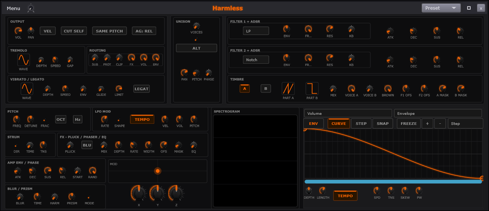
| # | On screen |
|---|---|
OUTPUT section - VOL, PAN, and the VEL / CUT SELF / SAME PITCH / AG: REL voice switches | |
TREMOLO section - WAVE selector plus DEPTH, SPEED, GAP | |
ROUTING section - SUB, PROT, CLIP, FX, VOL, ENV | |
VIBRATO / LEGATO section - WAVE, DEPTH, SPEED, ENV, GLIDE, LIMIT and the LEGATO switch | |
UNISON section - VOICES with its ALT switch, then PAN, PITCH, PHASE. Voice gain follows sqrt(N) so stacking voices does not raise level | |
FILTER 1 + ADSR - type picker (LP here), ENV, FR..., RES, KB, then ATK / DEC / SUS / REL. Its envelopes run per-sample | |
FILTER 2 + ADSR - the same control set, second filter, Notch here | |
TIMBRE section, A / B part selector - view state only. Both parts always render; nothing in the DSP reads this | |
PART A / PART B waveform buttons | |
MIX - the A/B timbre crossfade. This is the control that blends the two parts, not the selector | |
VOICE A / VOICE B / BROWN / F1 OFS / F2 OFS / A MASK / B MASK | |
PITCH section - FREQ, DETUNE, FRAC, and the OCT / Hz unit switch | |
LFO MOD section - RATE, SHAPE, the TEMPO sync switch, VEL, VOL, PITCH | |
STRUM section - DIR, TIME, TNS | |
FX - PLUCK / PHASER / EQ - PLUCK, the BLU switch, MIX, DEPTH, RATE, WIDTH, OFS, MASK, EQ | |
AMP ENV / PHASE - ATK / DEC / SUS / REL plus START, RAND | |
BLUR / PRISM - BLUR, TIME, HARM, PRISM, MODE | |
MOD XY pad with the X / Y / Z knobs beneath it | |
SPECTROGRAM - live picture of the harmonics as they sound | |
Modulation target picker - Volume | |
Modulation source picker - Envelope / LFO / Velocity / Keyboard / Mod X / Mod Y / Mod Z | |
Mod editor toolbar - ENV / CURVE / STEP / SNAP / FREEZE / + / - / Step | |
| Mod curve canvas - per-note 0-1 phase, NOT song position. A Harmless mod curve and a Builder automation clip are different domains | |
| Zoom / pan scroll bar under the curve - the thumb is the visible phase window | |
DEPTH / LENGTH / TEMPO / SPD / TNS / SKEW / PW - the curve shaping row | |
TYPE chicken-head in UNISON - Pure / Random / Drifting / Alt-only | |
Swing Mix knob on the title bar, right of Menu - scales the global Swing for this player; right-click offers Truncate Swing Notes |
Controls
| Control | What it does | Default | Range |
|---|---|---|---|
| Filter 1 Type | Picks filter 1's shape. | LP | LP, HP, BP, Notch |
| Filter Env Amount | Sets how far the envelope moves filter 1. | 0 | -1 to 1 |
| Filter Cutoff | Sets filter 1's corner frequency. | 20000 | 20 to 20000 |
| Filter Resonance | Boosts filter 1's corner for bite. | 0.707 | 0.1 to 1 |
| Flt1 KB Track | Raises filter 1's cutoff with higher keys. | 0 | 0 to 1 |
| Filter 2 Type | Picks filter 2's shape. | Notch | LP, HP, BP, Notch |
| Filter 2 Env | Sets how far the envelope moves filter 2. | 0 | -1 to 1 |
| Filter 2 Cutoff | Sets filter 2's corner frequency. | 20000 | 20 to 20000 |
| Filter 2 Res | Boosts filter 2's corner for bite. | 0.707 | 0.1 to 1 |
| Flt2 KB Track | Raises filter 2's cutoff with higher keys. | 0 | 0 to 1 |
| RM Sub | Routes the sub oscillator into the mix. | 0 | 0 to 1 |
| RM Prot | Routes the protect stage into the mix. | 0 | 0 to 1 |
| RM Clip | Routes the clip stage into the mix. | 0 | 0 to 1 |
| RM FX | Routes the FX stage into the mix. | 1 | 0 to 1 |
| RM Vol | Routes the volume stage into the mix. | 1 | 0 to 1 |
| RM Env | Routes the envelope stage into the mix. | 1 | 0 to 1 |
| Mod X | Drives the modulation pad's X axis. | 0 | -1 to 1 |
| Mod Y | Drives the modulation pad's Y axis. | 0 | -1 to 1 |
| Mod Z | Drives the modulation pad's Z axis. | 0 | -1 to 1 |
| Tk Lay 1 Harm Volume Mod0 Depth | Sets the modulation envelope's strength. | 0 | -1 to 1 |
| Tk Lay 1 Harm Volume Mod0 Length | Sets the modulation envelope's play length. | 1/8 beats to 32 beats | |
| Timbre Blend | Crossfades Part A toward Part B. | 0 | 0 to 1 |
| Part A Level | Sets Part A's level. | 1 | 0 to 1 |
| Part B Level | Sets Part B's level. | 0 | 0 to 1 |
| Brownian Amount | Rolls the spectrum off toward brown noise. | 1 | 0 to 1 |
| Blur Size | Smears the spectrum for a washed tone. | 0 | 0 to 1 |
| Blur Time | Widens the blur kernel over time. | 1 | 0 to 2 |
| Blur Harm | Biases the blur along the harmonic axis. | 0 | 0 to 1 |
| Prism Amount | Spreads partials away from harmonic pitch. | 0 | -1 to 1 |
| Prism Mode | Picks how prism scatters the partials. | 0 | 0 to 2 |
| Trem Depth | Sets how deep the volume pulses. | 0 | 0 to 1 |
| Trem Speed | Sets how fast the volume pulses. | 3 | 0.1 to 20 |
| Trem Gap | Widens the dead zone between pulses. | 0 | 0 to 1 |
| Vib Depth | Sets how far the pitch wobbles. | 0 | 0 to 2 |
| Vib Speed | Sets how fast the pitch wobbles. | 5 | 0.1 to 20 |
| Vib Env | Delays vibrato onset after note start. | 0 | 0 to 1 |
| Glide Time | Slides pitch between consecutive notes. | 0 | 0 to 2 |
| Legato Limit | Caps the longest glide time. | 0.5 | 0.001 to 1 |
| Flt1 Cutoff Offset | Offsets filter 1's cutoff in semitones. | 0 | -24 to 24 |
| Flt2 Cutoff Offset | Offsets filter 2's cutoff in semitones. | 0 | -24 to 24 |
| Filter Mask Cutoff | Caps which harmonics Part A passes. | 5000 | 20 to 20000 |
| Filter Mask Cutoff (B) | Caps which harmonics Part B passes. | 5000 | 20 to 20000 |
| Filter Attack | Sets filter 1 envelope's rise time. | 0.01 | 0.001 to 10 |
| Filter Decay | Sets filter 1 envelope's fall time. | 0.1 | 0.001 to 10 |
| Filter Sustain | Holds filter 1's envelope at this level. | 0.5 | 0 to 1 |
| Filter Release | Sets filter 1 envelope's release time. | 0.3 | 0.001 to 10 |
| Flt2 Attack | Sets filter 2 envelope's rise time. | 0.01 | 0.001 to 10 |
| Flt2 Decay | Sets filter 2 envelope's fall time. | 0.1 | 0.001 to 10 |
| Flt2 Sustain | Holds filter 2's envelope at this level. | 0.5 | 0 to 1 |
| Flt2 Release | Sets filter 2 envelope's release time. | 0.3 | 0.001 to 10 |
| LFO Rate | Sets the cycle length every LFO target shares. | 7 | 0 to 12 |
| LFO Shape | Picks the shared LFO waveform. | 0 | 0 to 3 |
| Legato | Retriggers nothing on overlapped notes. | Off | on / off |
| Unison Voices | Stacks copies of the voice for thickness. | 1 | 1 to 9 |
| Unison Type | Picks how the stacked voices detune. | 0 | 0 to 3 |
| Unison Alt | Alternates unison phases per note. | Off | on / off |
| Unison Spread | Spreads the stacked voices across stereo. | 0.7 | 0 to 1 |
| Unison Detune | Spreads the stacked voices in cents. | 15 | 0 to 100 |
| Unison Phase | Offsets the stacked voices' start phase. | 0 | 0 to 1 |
| Pluck Decay | Speeds the decay of high partials. | 0 | 0 to 1 |
| Out Phaser Mix | Blends the output phaser in. | 0 | 0 to 1 |
| Out Phaser Depth | Deepens the output phaser's sweep. | 0.5 | 0 to 1 |
| Out Phaser Rate | Sets the output phaser's sweep speed. | 1 | 0.01 to 10 |
| Out Phaser Width | Feeds the phaser back into itself. | 0.5 | 0 to 0.95 |
| Out Phaser Offset | Centers the phaser's sweep frequency. | 1000 | 200 to 2000 |
| Phaser Mask Rate | Spaces the phaser's spectral notches. | 1 | 0.1 to 10 |
| Out EQ Mix | Blends the output tilt EQ in. | 0 | 0 to 1 |
| Pluck Blur | Softens the pluck with spectral blur. | Off | on / off |
| Pitch Semitones | Shifts pitch in semitone steps. | 0 | -24 st to +24 st |
| Pitch Cents | Offsets pitch in cents. | 0 | -100 to 100 |
| Pitch Fraction | Multiplies or divides the pitch by octaves. | 0 | 0 to 6 |
| Volume | Sets this engine's output level. | 0.8 | 0 to 1 |
| Pan | Places the sound left or right. | 0 | -1 to 1 |
| Vel Link | Links note velocity into the mod chain. | Off | on / off |
| Cut Self | Cuts the prior voice on the same note. | Off | on / off |
| Cut Self Mode | Picks what a retrigger cuts. | Off | on / off |
| Amp Attack | Sets how fast a note fades in. | 0.01 | 0.001 to 10 |
| Amp Decay | Sets the fall time after the attack peak. | 0.1 | 0.001 to 10 |
| Amp Sustain | Holds this level while the key is down. | 0.8 | 0 to 1 |
| Amp Release | Sets the fade-out after the key lifts. | 0.3 | 0.001 to 10 |
| Phase Start | Sets where the wave cycle starts. | 0 | 0 to 1 |
| Phase Rand | Randomizes the start phase per note. | 1 | 0 to 1 |
| LFO Vel Depth | Scales LFO depth by note velocity. | 0 | -1 to 1 |
| LFO Vol Depth | Sends the shared LFO to volume. | 0 | -1 to 1 |
| LFO Pitch Depth | Sends the shared LFO to pitch. | 0 | -1 to 1 |
| Strum Dir | Picks which way chords strum. | 0 | 0 to 2 |
| Strum Time | Staggers chord notes across this time. | 0 | 0 to 0.5 |
| Strum Tension | Curves the strum toward start or end. | 0 | -1 to 1 |
Harmless builds sound the opposite way from the other synth: instead of starting with a bright wave and filtering it down, it adds the sound up out of individual harmonics - the pure tones that stack to make any note. Two sound layers - Part A and Part B - always play together, blended by one knob, and a modulation editor on the right can put almost any knob in motion on every note.
OUTPUT. VOL and PAN are
the engine's own loudness and left-right position, before the mixer. The
switches beside them: VEL lets how hard you play drive how
loud the note is; CUT SELF makes a repeated note stop its
previous self instead of piling on it; SAME PITCH narrows
that cut to identical notes; AG: REL governs how held notes
hand off when they end.
TREMOLO is a volume wobble. WAVE
picks the wobble's shape, DEPTH how deep the dips go,
SPEED how fast, and GAP inserts silence between
pulses - push GAP far enough and smooth tremolo becomes rhythmic
chopping.
ROUTING - the signal-path switches.
SUB adds a clean sub-octave under everything.
PROT is the speaker-protecting low-end guard.
CLIP hard-limits the output. FX bypasses the
built-in effects block, and VOL/ENV choose
whether loudness follows the envelope directly or its own path.
VIBRATO / LEGATO. Vibrato is a pitch wobble on
held notes: WAVE, DEPTH and SPEED
shape it, and ENV makes it fade in late.
GLIDE is slide time between notes, LIMIT caps
how far a slide may travel, and LEGATO makes overlapped
notes connect without restarting their envelopes.
UNISON plays stacked copies of every note.
VOICES is how many (ALT alternates their tuning
pattern), PAN fans them across the stereo field,
PITCH tunes them apart, PHASE offsets their
wave cycles. The stack is gain-compensated - adding voices adds width and
thickness, not loudness.
TYPE picks how the copies disagree:
Pure tidy offsets, Random scatter,
Drifting slow wander, Alt-only alternating
signs.
FILTER 1 and FILTER
2 - two complete tone-shapers in a row, each with a type picker, an
ENV depth, frequency, RESonance, keyboard
tracking (KB) and its own ATK/DEC/SUS/REL envelope. A filter
holds back part of the sound's frequency range; in series, one can
darken the whole sound while the other notches a
moving hole in it. These envelopes are
recalculated every sample.
TIMBRE - the A/B selector - chooses which of the two sound layers the dual-purpose knobs below are editing. It is a VIEW switch only: both parts always sound. Selecting B does not silence A.
PART A / PART B pick each layer's waveform - the raw harmonic recipe each side starts from - and MIX is the actual blend between them: full left is all A, full right all B. This knob changes the sound; the selector above only changes what you are editing.
The depth row - VOICE A /
VOICE B set each part's level; BROWN adds
brownian per-harmonic roughness; F1 OFS /
F2 OFS offset each part differently into the two filters;
A MASK / B MASK thin each part's
harmonics.
PITCH. FREQ and
DETUNE tune the engine; FRAC unlocks
fractional - between-the-piano-keys - steps; the OCT / Hz
switch chooses whether the knobs speak in octaves or raw frequency.
LFO MOD - the engine-wide slow wobble (an LFO is
a below-hearing-range wave used to move other controls):
RATE and SHAPE set the motion, the
TEMPO switch locks it to the song's beat, and the
VEL / VOL / PITCH knobs set how
deeply it pushes each of those targets.
STRUM spreads a chord's notes in time like a
strummed guitar - DIR up or down the chord,
TIME how wide the spread, TNS the curve of it
(even, or bunched toward one end).
FX - PLUCK / PHASER / EQ. The built-in color
block. PLUCK shortens every note toward a plucked decay
(BLU switches its blur flavor). The phaser - a
comb of moving notches - runs off MIX, DEPTH,
RATE, WIDTH, OFS and
MASK. EQ is the block's tone trim.
AMP ENV / PHASE. The main volume envelope - how
each note rises (ATK), falls to its held level
(DEC), holds (SUS) and fades after release
(REL) - plus START and RAND, which
set where in its wave cycle each note begins: fixed for consistent
attacks, randomized for organic variety.
BLUR / PRISM - the spectral tools.
BLUR and
TIME smear the harmonics' energy in time.
HARM weights which harmonics smear.
PRISM slides the harmonics off their exact musical
multiples - small amounts detune the partials slightly, large amounts
turn the tone inharmonic - and
MODE picks the algorithm's flavor.
The MOD pad - an XY performance surface with
X / Y / Z knobs beneath it: three
free values you can play live, automate, or route anywhere via the mod
editor. SPECTROGRAM draws the
harmonics as they sound - the display updates live as BLUR and the
masks change.
The modulation editor puts knobs in motion
automatically, per note. The target picker chooses which control
the curve drives, and the source
picker chooses what plays the curve: Envelope (each
note's own timeline), LFO (a repeating wobble),
Velocity / Keyboard (how hard / how high you
play), or the pad's Mod X/Y/Z.
Right-click any Harmless knob and Modulate envelope... jumps
this editor straight to it.
The toolbar - ENV /
CURVE / STEP drawing modes, SNAP,
FREEZE, and the +/- point tools -
edits the curve canvas. The canvas is
each NOTE's private timeline: the curve runs once per note, from that
note's start. Draw a dip and every note performs the dip individually.
(Song-position automation - a curve over the arrangement - is a different
tool: the Event Editor.)
The zoom/pan bar under the curve scrolls and
zooms your view of it - the bar's thumb is the stretch you are looking
at. The shaping row -
DEPTH scales the whole curve's throw, LENGTH
sets how long one pass lasts, TEMPO locks that length to
the beat, and SPD / TNS / SKEW /
PW reshape the curve's travel without redrawing a point.
Swing Mix - the small knob on the title bar next to
Menu - sets how much of the transport's global Swing this instrument
feels, from none to full. Swing pushes every second sixteenth-note late to
make parts groove; per-player mix means the drums can swing hard while the
guitar stays straight. Right-click offers Truncate Swing
Notes for cleaning up notes that swing pushed into each other.
How this works: Voice modes and note cutting, Unison and voice stacking, LFOs, Envelopes, Spectrum and visual feeds, Patterns and arrangement.
Additive synthesis
Where the synth family starts from a wave and subtracts, Harmless builds sound by summing harmonics directly - which is why it can do things filters cannot. Its two parts, A and B, are two harmonic recipes running simultaneously, crossfaded by the MIX control (the A/B selector on the panel only chooses which part the shared knobs edit - both always sound). The harmonic masks thin each part's overtone set; BLUR smears harmonic energy in time; PRISM shifts harmonics off their exact multiples, running from chorus-like shimmer to full clangor; and the brownian control adds per-harmonic wander. Its two filters and their envelopes run inside the additive engine per sample. The modulation editor attaches a per-note curve to almost any Harmless control - each note runs the curve privately from its own start, which is a different thing from song-position automation: one is performance shape, the other is arrangement.
// HarmonicEngine::buildWavetable (partial assembly into IFFT bins) -- Source/Harmless/HarmonicEngine.cpp
for (int i = 0; i < kNumPartials; ++i)
{
const float amp = workAmps[i];
if (amp < 1.0e-6f)
continue;
const float phase = workPhases[i];
// Prism: fractional bin offset for inharmonicity.
// At prism.amount=0 this is 0 and binF is the integer partial index.
const float binF = float (i + 1) + prism.getFrequencyShift (i);
if (binF < 1.0f || binF >= float (kFFTSize / 2 - 1))
continue;
// [sin/cos from LUT with linear interpolation -- elided]
// Fractional bin: interpolate energy between floor and ceil bins.
const int binLo = int (binF);
const int binHi = binLo + 1;
const float hi = binF - float (binLo);
const float lo = 1.0f - hi;
// JUCE FFT interleaved layout: d[2k] = Re[k], d[2k+1] = Im[k]
if (binLo >= 1 && binLo < kFFTSize / 2)
{
mFFTData[2 * binLo] += amp * cosVal * lo;
mFFTData[2 * binLo + 1] += amp * sinVal * lo;
}
if (binHi < kFFTSize / 2)
{
mFFTData[2 * binHi] += amp * cosVal * hi;
mFFTData[2 * binHi + 1] += amp * sinVal * hi;
}
}
// ── 4. Inverse FFT → time-domain waveform ─────────────────────────────────
mFFT.performRealOnlyInverseTransform (mFFTData.data());Full function — Source\Harmless\HarmonicEngine.cpp (buildWavetable -- 516 partials summed into a wavetable via IFFT; Blur runs here, Prism shifts bins here)
// Source/Harmless/HarmonicEngine.cpp - HarmonicEngine::buildWavetable (complete)
//==============================================================================
void HarmonicEngine::buildWavetable()
{
// Choose the buffer that is NOT currently being read by the audio thread.
int readIdx = mReadBuf.load (std::memory_order_acquire);
int buildIdx = 1 - readIdx;
float* buf = (buildIdx == 0) ? mBufA.data() : mBufB.data();
// ── 1. Make working copies so the user's partial data is never modified ──
std::array<float, kNumPartials> workAmps = amplitudes;
std::array<float, kNumPartials> workPhases = phases;
// ── 2. Apply spectral modules (all except Prism, which acts below) ────────
// 2026-04-19 (S1) T2-F: rm_fx scales each module's amount before processing.
// We snapshot each module's amount, apply the scale, run the module, and
// restore - preserves the user's knob values while honouring the rm_fx
// routing-matrix slider.
auto withScaledAmount = [this] (auto& mod, auto&& runFn)
{
const float saved = mod.getAmount();
mod.setAmount (saved * mSpectralFxScale);
runFn();
mod.setAmount (saved);
};
withScaledAmount (pluck, [&] { pluck .processPartials (workAmps.data(), workPhases.data(), kNumPartials); });
withScaledAmount (blur, [&] { blur .processPartials (workAmps.data(), workPhases.data(), kNumPartials); });
withScaledAmount (filterMask, [&] { filterMask.processPartials (workAmps.data(), workPhases.data(), kNumPartials); });
withScaledAmount (phaserMask, [&] { phaserMask.processPartials (workAmps.data(), workPhases.data(), kNumPartials); });
// 2026-04-19 (S1) T2-F: nyquist protect - soft rolloff above kNumPartials/4.
// mNyquistProtect=0 -> no rolloff; =1 -> aggressive log-roll above corner.
if (mNyquistProtect > 0.001f)
{
const int corner = kNumPartials / 4;
const float k = mNyquistProtect * 0.05f;
for (int i = corner; i < kNumPartials; ++i)
{
const float over = float (i - corner);
workAmps[i] *= std::exp (-k * over);
}
}
// ── 2a. Auto-gain pass (S4 AG-1) ──────────────────────────────────────────
// Mode 0 Relative: scale all partials by a common factor so the max
// partial fits inside the per-bin headroom.
// Mode 1 Absolute: hard-clip each partial at per-bin headroom without
// scaling others.
// Per-bin headroom = 1 / kNumPartials (conservative: guarantees no
// post-IFFT overshoot even if every partial sums constructively).
{
const float headroom = 1.0f / float (kNumPartials);
if (mAutoGainMode == 0)
{
float peakAmp = 0.0f;
for (int i = 0; i < kNumPartials; ++i)
peakAmp = std::max (peakAmp, workAmps[i]);
if (peakAmp > headroom)
{
const float scale = headroom / peakAmp;
for (int i = 0; i < kNumPartials; ++i)
workAmps[i] *= scale;
}
}
else
{
for (int i = 0; i < kNumPartials; ++i)
if (workAmps[i] > headroom)
workAmps[i] = headroom;
}
}
// ── 2b. Brownian spectral weighting (1/n^α rolloff) ───────────────────────
// Mimics the natural harmonic decay of acoustic instruments and brown noise.
// Applied after spectral modules so module output is weighted, not the raw input.
if (mBrownianAmount > 0.001f)
{
for (int i = 0; i < kNumPartials; ++i)
workAmps[i] *= std::pow (1.0f / float (i + 1), mBrownianAmount);
}
// ── 3. Assemble IFFT input ─────────────────────────────────────────────────
std::fill (mFFTData.begin(), mFFTData.end(), 0.0f);
const float* sinLUT = getSineLUT();
constexpr float lutOverTwoPi =
float (kLUTSize) / juce::MathConstants<float>::twoPi;
for (int i = 0; i < kNumPartials; ++i)
{
const float amp = workAmps[i];
if (amp < 1.0e-6f)
continue;
const float phase = workPhases[i];
// Prism: fractional bin offset for inharmonicity.
// At prism.amount=0 this is 0 and binF is the integer partial index.
const float binF = float (i + 1) + prism.getFrequencyShift (i);
if (binF < 1.0f || binF >= float (kFFTSize / 2 - 1))
continue;
// sin/cos from LUT with linear interpolation.
float lutPos = phase * lutOverTwoPi;
int li = int (lutPos) & (kLUTSize - 1);
float lf = lutPos - float (int (lutPos));
float sinVal = sinLUT[li]
+ lf * (sinLUT[(li + 1) & (kLUTSize - 1)] - sinLUT[li]);
float cosVal = sinLUT[(li + kLUTSize / 4) & (kLUTSize - 1)]
+ lf * (sinLUT[(li + kLUTSize / 4 + 1) & (kLUTSize - 1)]
- sinLUT[(li + kLUTSize / 4) & (kLUTSize - 1)]);
// Fractional bin: interpolate energy between floor and ceil bins.
const int binLo = int (binF);
const int binHi = binLo + 1;
const float hi = binF - float (binLo);
const float lo = 1.0f - hi;
// JUCE FFT interleaved layout: d[2k] = Re[k], d[2k+1] = Im[k]
if (binLo >= 1 && binLo < kFFTSize / 2)
{
mFFTData[2 * binLo] += amp * cosVal * lo;
mFFTData[2 * binLo + 1] += amp * sinVal * lo;
}
if (binHi < kFFTSize / 2)
{
mFFTData[2 * binHi] += amp * cosVal * hi;
mFFTData[2 * binHi + 1] += amp * sinVal * hi;
}
}
// ── 4. Inverse FFT → time-domain waveform ─────────────────────────────────
mFFT.performRealOnlyInverseTransform (mFFTData.data());
// ── 5. Normalise to ±1 peak ────────────────────────────────────────────────
float peak = 1.0e-6f;
for (int i = 0; i < kFFTSize; ++i)
{
float v = mFFTData[i];
if (std::isfinite (v)) peak = std::max (peak, std::abs (v));
}
const float scale = 1.0f / peak;
for (int i = 0; i < kFFTSize; ++i)
{
float v = mFFTData[i] * scale;
buf[i] = std::isfinite (v) ? v : 0.0f;
}
// ── 6. Atomic publish ──────────────────────────────────────────────────────
mReadBuf.store (buildIdx, std::memory_order_release);
mReady.store (true, std::memory_order_release);
// S4 Option 2: bump generation so voices observing this engine as a
// template know to re-sync their per-voice copy.
mGeneration.fetch_add (1, std::memory_order_release);
}- Additive synthesis is done OFFLINE into a wavetable: 516 partials (`kNumPartials`) scattered into IFFT bins, `performRealOnlyInverseTransform`, normalize to ±1, atomic double-buffer publish. The voice then plays the table -- harmonic "summing" per sample is a single wavetable read, not 516 sines. - Base spectra: saw `a_n = 1/n`; square odd-only `1/n`; triangle odd-only `1/n^2` with alternating pi phase; sine = fundamental only. - Prism: fractional bin `binF = (i+1) + shift(i)`; stretched `amount * n^2 * 1e-4` (piano-string law), bunched `amount * sqrt(n) * 1e-2`, scattered `amount * n * (+-) * 5e-3`; energy split linearly between floor/ceil bins (`lo = 1 - frac`, `hi = frac`). - Blur: 3 box-blur passes (Gaussian approximation) over the amplitude spectrum; kernel half-width `max(1, amount * 25 * timeScale)`; harm-axis mode steps by 2 (harmonic-only smear). - Pluck: `amps[i] *= exp(-rate * i)`, `rate = amount * 1e-4 * (blur ? 0.5 : 1)`. - Auto-gain headroom: `1 / kNumPartials` per bin; Relative mode scales all partials by `headroom/peak`, Absolute clips each. - Brownian rolloff: `amps[i] *= (1/(i+1))^alpha`. - Playback increment: `inc = currentHz * unisonMult * (kFFTSize / sampleRate)` table samples per audio sample; linear-interp table read with power-of-two mask. - Parts A and B are SIMULTANEOUS layers: per-sample `sample = wtA(phaseA)*pA + wtB(phaseB)*pB`; `timbre_blend` crossfades (`aEff = A*(1-blend)`, `bEff = B + A*blend`), and the mod-matrix TimbreBlend target pushes `pA *= (1 - max(0, +m))`, `pB *= (1 - max(0, -m))`. - Sub oscillator: sine one octave below (`currentHz * 0.5`) added post-stack.
Behind: TREMOLO section, ROUTING section, VIBRATO / LEGATO section, FILTER 1 + ADSR, FILTER 2 + ADSR, TIMBRE section, A / B part selector, PART A / PART B waveform buttons, MIX, VOICE A / VOICE B / BROWN / F1 OFS / F2 OF..., PITCH section, STRUM section, FX, BLUR / PRISM, MOD XY pad with the X / Y / Z knobs beneat....
Harmless Menu
Part of Harmless
The Harmless tab's menu - the same tab menu every Layers-family engine shows (one shared picture; the menu belongs to the TAB, not the engine). Harmless had no menu entry of its own until 2026-08-16. Polyphony reads (n/a) and greys on a Harmless layer - Harmless is always polyphonic.

| # | On screen |
|---|---|
Player - the engine view, tick when shown | |
Piano Roll - jumps the roll to this tab | |
FX Rack - see Effects Rack | |
Freeze - renders this tab and plays the render instead. Greys when unavailable, with the reason in its tooltip; label color signals state - cyan while frozen, orange once the render goes stale | |
Lock Layer - tick when locked; a locked tab shows [L] on its ribbon slot | |
Polyphony: (n/a) - greyed on Harmless; the engine is always polyphonic | |
Rename... | |
Replace Engine submenu - swap this tab's engine in place; the notes, mixer settings, effects and window all stay. Tick = the current engine; greys while the tab is locked | |
Duplicate Layer (new tab) - greys with no engine loaded | |
Choke Group submenu - None / Group 1 through Group 16; same-group tabs cut each other off | |
Save Current Patch As... | |
Load Preset submenu - the engine's preset tree; (no presets installed) when empty | |
Save Page Preset As... | |
Load Page Preset submenu | |
Delete Layer |
The menu on a Harmless tab's window. It is the same tab menu every Layers-family engine shows - the menu belongs to the tab, not the engine - so the full walk-through lives on the BaySickSynth Menu page and applies here word for word. The rows below call out only what reads differently on a Harmless layer.
Player shows the Harmless panels; Piano Roll jumps the roll to this tab; FX Rack opens this channel's rack; Freeze renders the tab and plays the render (cyan = frozen, orange = stale, greyed with the reason in the tooltip). Harmless is the heaviest of the built-in engines, so Freeze is especially useful here.
Lock Layer, Rename..., Duplicate Layer (new tab) and Delete Layer are the tab housekeeping - identical to the synth tab's.
Polyphony reads (n/a) and greys out on
a Harmless layer: Harmless is always polyphonic, so there is nothing to
toggle.
Replace Engine swaps which engine this tab runs while the notes, mixer settings, effects and window all stay put - the full story (what survives, what resets, automation, freeze, undo) is on the BaySickSynth Menu page. A Harmless patch cannot ride along, so swapping away and back lands you on Harmless's default patch unless you undo.
Choke Group, Save Current Patch As..., Load Preset, Save Page Preset As... and Load Page Preset work exactly as they do on the synth tab; Load Preset walks the Harmless patch tree, Init Patch included.
How this works: EngineRig, Effect racks, Freeze, Projects and saving, Voice modes and note cutting, Presets.
BaySickSynth/Bass Family
Related: BaySickSynth/Bass Titlebar, BaySickSynth/Bass Menu, BaySickSynth/Bass Oscillator, BaySickSynth/Bass Oscillator Envelope, BaySickSynth/Bass Filter, BaySickSynth/Bass Filter Envelope, BaySickSynth/Bass LFO, BaySickSynth/Bass Mod
Two versions of one family: BaySickSynth (Layers tabs) and BaySickBass (Bass tabs). Same window, same six panels, same controls - the Bass differs only in accent color and defaults: monophonic voicing, a small built-in slide, and a darker filter start.


Controls
| Control | What it does | Default | Range |
|---|---|---|---|
| KB Track | Raises the cutoff with higher keys. | 0 | 0 to 1 |
| Vel Track | Opens the filter with harder velocity. | 0 | 0 to 1 |
| Transpose | Shifts pitch in semitone steps. | 0 | -24 to 24 |
| Modifier | Shapes the wave; meaning follows the waveform mode. | 0.5 | 0 to 1 |
| Noise | Blends noise into the oscillator. | 0 | 0 to 1 |
| Glide | Slides pitch between consecutive notes. | 0.08 | 0 to 2 |
| Out Vol | Sets this engine's output level. | 0.8 | 0 to 1 |
| Mod Wheel Amount | Scales how far the mod wheel reaches. | 0 | 0 to 1 |
BaySickSynth and BaySickBass are two versions of the same instrument. The synth lives on Layers tabs and the bass on Bass tabs, but open them side by side and you are looking at the same window: the same waveform strip, the same six panel tabs, the same knobs in the same places.
What separates them is the tuning of the defaults, not the controls. The bass starts monophonic - one note at a time, the way most basslines want to be played - with a small built-in slide between notes and a darker filter setting, so it sounds like a bass the moment you add the tab. The synth starts polyphonic and wide open. Everything either one does, the other can be set to do; the presets and defaults just start them in different places.
Because the two are twins, the panel pages that follow are written once and serve both. Where a default lands somewhere different on the bass, the panel's text says so.
BaySickSynth/Bass Titlebar
Part of BaySickSynth/Bass Family
| # | On screen |
|---|---|
Preset dropdown - the patch picker | |
Swing Mix knob on the title bar, right of Menu - scales the global Swing for this player; right-click offers Truncate Swing Notes |
Controls
| Control | What it does | Default | Range |
|---|---|---|---|
| KB Track | Raises the cutoff with higher keys. | 0 | 0 to 1 |
| Vel Track | Opens the filter with harder velocity. | 0 | 0 to 1 |
| Transpose | Shifts pitch in semitone steps. | 0 | -24 to 24 |
| Modifier | Shapes the wave; meaning follows the waveform mode. | 0.5 | 0 to 1 |
| Noise | Blends noise into the oscillator. | 0 | 0 to 1 |
| Glide | Slides pitch between consecutive notes. | 0.08 | 0 to 2 |
| Out Vol | Sets this engine's output level. | 0.8 | 0 to 1 |
| Mod Wheel Amount | Scales how far the mod wheel reaches. | 0 | 0 to 1 |
The strip across the top of the BaySickSynth and BaySickBass windows - the same three controls on both. The accent color (synth blue, bass green) says whose window you are in, and it follows the engine everywhere it appears - the tab, the mixer strip, the panels.
Preset. The patch picker. Open it and pick a sound; the whole engine - every panel, every knob - jumps to that patch at once. This is the fastest way to learn either engine: pick a preset that sounds close to what you want, then open the panels and see where the knobs landed. The bass's factory patches all start monophonic with a touch of slide; if a patch feels wrong for chords, flip the voice mode on the Oscillator panel. Saving your own goes through the tab menu's Save Current Patch As....
Swing Mix - the small knob on the title bar next to
Menu - sets how much of the transport's global Swing this instrument
feels, from none to full. Swing pushes every second sixteenth-note late to
make parts groove; per-player mix means the drums can swing hard while the
guitar stays straight. Right-click offers Truncate Swing
Notes for cleaning up notes that swing pushed into each other.
How this works: Presets, Patterns and arrangement.
BaySickSynth/Bass Menu
Part of BaySickSynth/Bass Family

| # | On screen |
|---|---|
Player - the engine view, tick when shown | |
Piano Roll - jumps the roll to this tab | |
FX Rack - see Effects Rack | |
Freeze - renders this tab and plays the render instead. Greys when unavailable, with the reason in its tooltip; label color signals state - cyan while frozen, orange once the render goes stale | |
Lock Layer / Lock Bass - tick when locked; a locked tab shows [L] on its ribbon slot | |
Polyphony: Polyphonic / Monophonic - reads the engine's voice mode; click toggles it. The synth starts polyphonic, the bass monophonic. Polyphony: (n/a), greyed, on a Harmless layer | |
Rename... | |
Replace Engine submenu - swap this tab's engine in place; the notes, mixer settings, effects and window all stay. Tick = the current engine; greys while the tab is locked | |
Duplicate Layer / Bass (new tab) - greys with no engine loaded | |
Choke Group submenu - None / Group 1 through Group 16; same-group tabs cut each other off | |
Save Current Patch As... | |
Load Preset submenu - the engine's preset tree; (no presets installed) when empty | |
Save Page Preset As... | |
Load Page Preset submenu | |
Delete Layer / Delete Bass |
The menu on a BaySickSynth or BaySickBass tab's window - one menu, two
namings (Layer / Bass). It belongs to the
tab, not the engine - a BaySickPlayer tab shows the identical menu -
so everything here is about the tab as a whole: where to look, and the
housekeeping.
Player. The engine view - the synth panels. The tick marks it while it is showing.
Piano Roll. Jumps to the Piano Roll already pointed at this tab, so the notes you draw land on this synth. Same result as pressing F10 with this window focused.
FX Rack. Opens this channel's effects rack - the six-slot rack that sits between the synth and the mixer. Anything you load there shapes only this tab's sound.
Freeze. Renders this tab to audio and plays the render instead of running the synth live - the sound stays identical while the CPU cost drops to almost nothing. It greys out when freezing is not possible, and the tooltip tells you why. The label's color is its status: cyan means frozen and playing its render, orange means you have edited something since, so the render is stale and needs a re-freeze.
Lock Layer / Lock Bass. Protects the tab from accidental edits; the
tick shows while locked, and the ribbon slot gains an [L] prefix
so you can see it from anywhere.
Polyphony. Reads the engine's voice mode -
Polyphonic (chords) or Monophonic (one note at a
time) - and clicking it toggles between them. The synth starts polyphonic;
the bass starts monophonic, because basslines almost always want one note
at a time with the built-in slide between them - a preference, not a
limit. On a Harmless layer it reads (n/a) and greys out:
Harmless is always polyphonic.
Rename... Names the tab. The name follows it everywhere - ribbon slot, mixer strip, exports.
Replace Engine. Swaps which engine this tab runs - the
list is the same one the ribbon's + offers for this tab type,
with a tick on what you have now. Everything that belongs to the
tab stays exactly as it was: the notes on the roll, the mixer
strip's level and routing, the effects rack, the window and its placement.
What goes is the engine's own sound - the new engine arrives on its default
patch, because the old engine's knob settings mean nothing to it. Automation
you drew on the old engine's own knobs goes quiet and those lanes grey out
in the Event Editor (lanes on the mixer strip or the effects keep playing -
their targets never left), and a frozen tab drops its render as stale.
There is no delete question because nothing is deleted - and one undo puts
the old engine back exactly as it was, settings and all. Greys while the
tab is locked.
Duplicate Layer / Bass (new tab). Clones this tab - engine, settings, everything - into a fresh tab. This is the copy operation; there is no separate copy/paste for tabs. Greys out until the tab has an engine.
Choke Group. Puts the tab in one of sixteen cut groups.
Tabs sharing a group cut each other off - the classic use is an open and a
closed hi-hat silencing one another. None keeps it out of
any group.
Save Current Patch As... Saves the engine's current sound - just the sound, not the tab - so you can load it on any other BaySickSynth tab later.
Load Preset. The saved-patch tree for this engine,
factory folders and your own. Reads (no presets installed) when
there is nothing to show.
Save Page Preset As... Saves the whole page - engine sound plus the page's own settings - as one recallable preset.
Load Page Preset. Loads one of those.
Delete Layer / Delete Bass. Removes the tab, its engine and its sound from the project. The arrangement keeps whatever audio you froze or rendered, but the live instrument is gone.
How this works: EngineRig, Effect racks, Freeze, Projects and saving, Voice modes and note cutting, Presets.
BaySickSynth/Bass Oscillator
Part of BaySickSynth/Bass Family
BaySickSynth is ONE window with six panel tabs, so the frame - strip, display, tab row - is taught here and the other five panels cross-reference it. BaySickBass is the same editor; BaySickBass.md documents where its ranges and defaults differ, and it mints no callouts of its own.

| # | On screen |
|---|---|
| Display - draws whatever the selected panel is about: the waveform on OSC, the envelope shape on the two ENV panels, the filter response on FILTER, the LFO shape on LFO | |
Panel tab row - OSC / OSC ENV / FILTER / FLT ENV / LFO / MOD. The active tab is green. These are TABS, unlike the Advanced MODE on an effect panel | |
WAVEFORM picker - SAW | |
Tuning-mode picker - Musical | |
TRANSPOSE | |
MODIFIER | |
NOISE | |
SYNC | |
RING | |
VOICE MODE - Poly / Mono / Legato. Three buttons, not a dropdown | |
CUT SELF | |
SAME PITCH; the face flips to CUT ALL while on | |
SLIDE | |
OUT VOL | |
MOD WHEEL destination - Filter / LFO | |
Mod-wheel AMOUNT |
Controls
| Control | What it does | Default | Range |
|---|---|---|---|
| Transpose | Shifts pitch in semitone steps. | 0 | -24 to 24 |
| Modifier | Shapes the wave; meaning follows the waveform mode. | 0.5 | 0 to 1 |
| Noise | Blends noise into the oscillator. | 0 | 0 to 1 |
| Glide | Slides pitch between consecutive notes. | 0 | 0 to 2 |
| Out Vol | Sets this engine's output level. | 0.8 | 0 to 1 |
| Mod Wheel Amount | Scales how far the mod wheel reaches. | 0 | 0 to 1 |
The Oscillator panel is where the sound starts. An oscillator is the part of a synth that actually vibrates - everything else in the instrument only shapes what this panel generates. It is also where the synth decides how it behaves when you play more than one note.
The display - the strip under the title bar - draws whatever the open panel is about. Here that is the raw wave itself: change the waveform below and the drawing changes with it. On the other panels it becomes the envelope shape, the filter's response curve, the LFO's wave.
The panel tabs - OSC /
OSC ENV / FILTER / FLT ENV /
LFO / MOD - are the synth's six pages, and the
green one is where you are. Important: all six are always running. The tabs
only change what you are LOOKING at, never what you are hearing.
WAVEFORM is the basic tone color - the shape the
oscillator vibrates in, which decides which frequencies the raw sound
contains. SAW (the default) is bright and buzzy and contains
everything, which makes it the best raw material for filtering. Squares
are hollow like a clarinet, sines are pure and soft like a whistle, and
the others live in between. If a patch feels wrong at its core - not the
brightness, the CHARACTER - come back here first.
The tuning-mode picker (Musical)
sets what the two knobs beside it mean. In Musical mode
TRANSPOSE moves the whole oscillator in
semitones - the steps between piano keys - so +12 is exactly one octave
up. MODIFIER reshapes the chosen
waveform continuously: small turns shift its harmonic balance, big turns
can push one shape most of the way toward another.
NOISE mixes plain noise - the sound of static - in with the wave. A touch adds breath and grit to the attack; a lot buries the pitch entirely, which is what snares and hats are made of.
SYNC and RING are the two classic second-oscillator tricks, both OFF in most patches. SYNC forces a hidden second wave to restart in lockstep with the first, producing the tearing, aggressive lead sound. RING multiplies the two waves instead of adding them, producing bell-like, metallic tones that do not sit on the normal pitch grid.
VOICE MODE - three buttons, one lit, deciding
what happens when notes overlap. Poly (polyphonic): notes
coexist, so chords work. Mono (monophonic): one note at a
time - a new note silences the last, the way most basslines want.
Legato: mono, but when notes overlap the envelopes do NOT
restart - the pitch just moves - so runs and slides read as one connected
gesture. The synth starts Poly; the bass starts Mono.
CUT SELF - when the same note retriggers, stop
the old one instead of letting the two ring together.
SAME PITCH narrows the rule to
identical notes only (and its face flips to CUT ALL when you
want every new note to cut). Together they keep fast repeated lines clean
instead of smearing into mud.
SLIDE is glide: in the mono modes, how long the pitch takes to travel from the last note to the new one. Zero snaps instantly. Raise it and every note slews into the next. The bass ships with a little already on.
OUT VOL is the engine's own output level, before the mixer strip ever sees it. If a patch distorts the channel no matter where the fader is, pull this back - the overload is happening in here.
MOD WHEEL - if you have a MIDI keyboard, its
left-hand wheel can drive this synth. The switch picks the target -
Filter (brightness under your thumb) or LFO
(wobble depth under your thumb) - and
AMOUNT sets how hard the wheel pushes
it. With no hardware plugged in, these sit idle.
The readouts. Every knob on every panel prints
its exact value beneath it. When a drag will not land on the number you
want, right-click the knob and Type in value... takes it
directly.
How this works: Spectrum and visual feeds, EngineRig.
Voice modes and note cutting
Polyphonic means notes coexist; monophonic means a new note replaces the last; legato is mono without retriggering the envelopes when notes overlap, which is what makes slides read as one gesture. The bass defaults mono with a little glide, the synth defaults poly - same engine, different start. Note CUTTING is the related family: CUT SELF makes a retriggered note stop its own previous instance; SAME PITCH narrows that to identical notes (flipping to CUT ALL widens it back); and choke groups extend the idea ACROSS tabs - any tabs sharing a group number cut each other, which is how an open hi-hat dies when the closed one plays. All of it happens at note-on inside the engine's voice allocator, so cutting is sample-accurate rather than a fade layered on afterward.
// BaySickSynthDSP::renderNextBlock (Cut Self dispatch, Poly branch)
// Cut Self (Poly): on each note-on, hard-cut the matching voice (Same Pitch)
// or every active voice (Cut All) BEFORE rendering, so the retrigger starts
// clean. cutFast() is an instant ~1 ms click-free fade-out - NOT a MIDI
// note-off (which JUCE turns into an ADSR tail-off = the old bleed). Runs
// only on note-on events; mVoices[] is cached (no dynamic_cast).
if (mCutSelf)
{
for (const auto meta : filtered)
{
const auto msg = meta.getMessage();
if (! msg.isNoteOn())
continue;
const int n = msg.getNoteNumber();
for (int vi = 0; vi < kNumVoices; ++vi)
if (auto* v = mVoices[vi];
v != nullptr && v->isVoiceActive()
&& (mCutAll || v->getCurrentlyPlayingNote() == n))
v->cutFast();
}
}Full function — Source\BaySickSynth\BaySickSynthDSP.cpp (Poly/Mono/Legato branch + Cut Self dispatch; shared by BaySickBass)
// Source/BaySickSynth/BaySickSynthDSP.cpp - BaySickSynthDSP::renderNextBlock (complete)
void BaySickSynthDSP::renderNextBlock (juce::AudioBuffer<float>& buf,
juce::MidiBuffer& midi)
{
// The per-pitch note-off counter (poly branch below) is poly-only; keep it
// zeroed in the other modes so Poly always resumes from a clean state.
if (mVoiceMode != BssVoiceMode::Poly)
std::fill_n (mNoteOnCount, 128, 0);
if (mVoiceMode == BssVoiceMode::Legato)
{
handleLegatoMidi (midi);
// handleLegatoMidi leaves only non-note events in `midi` for the synth
// (noteOns/Offs were handled directly against mLegatoVoice).
mSynth.renderNextBlock (buf, midi, 0, buf.getNumSamples());
return;
}
if (mVoiceMode != BssVoiceMode::Poly)
{
// Mono: inject noteOff for previous note before each noteOn to enforce
// monophonic behaviour without changing voice count. Every note is a
// fresh allocation, so every note re-articulates the envelopes -- that
// is the whole difference from Legato, which glides instead.
juce::MidiBuffer processed;
for (const auto meta : midi)
{
const auto msg = meta.getMessage();
if (msg.isNoteOn())
{
if (mLastMonoNote >= 0)
{
processed.addEvent (
juce::MidiMessage::noteOff (msg.getChannel(), mLastMonoNote),
meta.samplePosition);
}
mLastMonoNote = msg.getNoteNumber();
processed.addEvent (msg, meta.samplePosition);
}
else if (msg.isNoteOff())
{
if (msg.getNoteNumber() == mLastMonoNote)
mLastMonoNote = -1;
processed.addEvent (msg, meta.samplePosition);
}
else
{
processed.addEvent (msg, meta.samplePosition);
}
}
mSynth.renderNextBlock (buf, processed, 0, buf.getNumSamples());
}
else
{
mLastMonoNote = -1;
mLegatoHeldNotes.clear();
mLegatoVoice = nullptr;
mLegatoSynthNote = -1;
// Per-pitch note-off strip (QA-CutSelfReview): overlapping same-pitch notes
// must not let the earlier note's note-off cascade onto the retriggered
// voice (juce::Synthesiser matches note-offs by pitch). Hold an earlier
// note-off until the LAST overlapping note of that pitch ends. Self-heals:
// the counter zeroes whenever the synth is fully silent (no lost-note-off
// drift can persist past a moment of silence).
bool anyActive = false;
for (int vi = 0; vi < kNumVoices; ++vi)
if (mVoices[vi] != nullptr && mVoices[vi]->isVoiceActive()) { anyActive = true; break; }
if (! anyActive)
std::fill_n (mNoteOnCount, 128, 0);
juce::MidiBuffer filtered;
for (const auto meta : midi)
{
const auto msg = meta.getMessage();
if (msg.isNoteOn())
{
const int p = msg.getNoteNumber();
if (p >= 0 && p < 128) ++mNoteOnCount[p];
filtered.addEvent (msg, meta.samplePosition);
}
else if (msg.isNoteOff())
{
const int p = msg.getNoteNumber();
bool deliver = true;
if (p >= 0 && p < 128)
{
if (mNoteOnCount[p] > 0) --mNoteOnCount[p];
if (mNoteOnCount[p] > 0) deliver = false; // a later same-pitch note still holds it
}
if (deliver) filtered.addEvent (msg, meta.samplePosition);
}
else
{
// CC-123 All-Notes-Off / CC-120 All-Sound-Off flush every voice
// without per-note offs (transport stop / play-from-top / loop
// wrap, PluginProcessor.cpp). Zero the counter so those untracked
// releases can't leave it drifted and strip a later note-off.
if (msg.isAllNotesOff() || msg.isAllSoundOff())
std::fill_n (mNoteOnCount, 128, 0);
filtered.addEvent (msg, meta.samplePosition);
}
}
// Cut Self (Poly): on each note-on, hard-cut the matching voice (Same Pitch)
// or every active voice (Cut All) BEFORE rendering, so the retrigger starts
// clean. cutFast() is an instant ~1 ms click-free fade-out - NOT a MIDI
// note-off (which JUCE turns into an ADSR tail-off = the old bleed). Runs
// only on note-on events; mVoices[] is cached (no dynamic_cast).
if (mCutSelf)
{
for (const auto meta : filtered)
{
const auto msg = meta.getMessage();
if (! msg.isNoteOn())
continue;
const int n = msg.getNoteNumber();
for (int vi = 0; vi < kNumVoices; ++vi)
if (auto* v = mVoices[vi];
v != nullptr && v->isVoiceActive()
&& (mCutAll || v->getCurrentlyPlayingNote() == n))
v->cutFast();
}
}
mSynth.renderNextBlock (buf, filtered, 0, buf.getNumSamples());
}
}- Voice modes: Poly = pass-through with per-pitch note-off counting; Mono = injected note-off for the previous note before each note-on (fresh allocation, envelopes re-articulate); Legato = one persistent voice (V0), `retargetLegato` changes pitch/glide with NO envelope retrigger, last-note priority via a held-notes stack. - Cut Self modes: `cutSelfMode` false = Same Pitch (cut only the voice playing the retriggered note), true = Cut All (cut every ringing voice). Synth engines default Same Pitch; BaySickPlayer defaults Cut All (drums). - BaySickSynth cut fade: linear, `fadeSamples = max(1, sr * 0.001)` (~1 ms), `gain -= 1/fadeSamples` per sample applied to final L/R (so the unison stack fades too); voice retires at gain <= 0. - Harmless cut: amp ADSR release overridden to 0.0015 s (~1.5 ms) then `noteOff()`; params restored at next `startNote`. - BaySickPlayer cut: `initiateSteal()` = the same ~1.5 ms quick-release used by voice stealing, then `stopNote(0, true)`; Cut All = `mSynth.allNotesOff(0, false)`. - sfizz engines (Guitars/Basses/RustyDrums) cut at note-on via `mSfizz->noteOff(delay, n, 0)` per note (Same Pitch) or a 0..127 noteOff sweep (Cut All) -- see IMP-89 excerpt. - Choke groups: per-insert APVTS param `<prefix>_chokeGroup` (0 = none, 1..16); at any note-on (or audio-clip start) in group G, every OTHER insert in group G gets `allNotesOff(1)` injected at the same sample position; audio-clip peers set `mutedByChoke = true`.
Behind: OUTPUT section, VOICE MODE, CUT SELF, SAME PITCH; the face flips to CUT ALL whil..., SLIDE, CUT SELF, SAME PITCH; the face flips to CUT ALL whil..., Mono / Preroll, CUT SELF, SAME PITCH, Polyphony: Polyphonic / Monophonic.
The BaySickSynth / BaySickBass voice
Each voice starts as a shaped wave: the WAVEFORM picker chooses the family, the MODIFIER bends its harmonic recipe continuously rather than jumping between fixed shapes, and TRANSPOSE moves it in musical steps. On top of that sit the character layers from the MOD panel: a noise generator with selectable color (and a NOISE ONLY mode that mutes the oscillator for percussion patches), a transient generator that staples a short bright click to each note's front, a burst engine that retriggers a note into a rapid roll, and a slow random drift that loosens the tuning the way analog hardware does. SYNC and RING are the two classic two-oscillator tricks - hard cycle-locking and multiplication - producing tearing and metallic spectra respectively. The BaySickBass is this same voice with different defaults and its own accent color; every control exists on both.
// BaySickSynthVoice::renderNextBlock (section 7: waveform generation, representative cases)
// ── Pulse (variable width, inline phase) ──────────────────────────
case BssWaveform::Pulse:
{
mPhase1 += (double) playFreq / (double) sr;
if (mPhase1 >= 1.0) mPhase1 -= 1.0;
const float pw = juce::jlimit (0.05f, 0.95f, effModifier);
sample = ((float) mPhase1 < pw) ? 0.5f : -0.5f;
break;
}
// ── Bell (FM synthesis, 2:1 ratio) ────────────────────────────────
case BssWaveform::Bell:
{
const float fmFreq = playFreq * 2.0f;
const float fmBeta = effModifier * 20.0f; // FM index 0..20
mFMModPhase += (double) fmFreq / (double) sr;
if (mFMModPhase >= 1.0) mFMModPhase -= 1.0;
const float modOut = std::sin ((float) mFMModPhase * twoPi) * fmBeta;
mFMCarrierPhase += (double) playFreq / (double) sr;
if (mFMCarrierPhase >= 1.0) mFMCarrierPhase -= 1.0;
sample = std::sin ((float) mFMCarrierPhase * twoPi + modOut);
break;
}
// ── DeafSaw (saw through one-pole LP) ─────────────────────────────
case BssWaveform::DeafSaw:
{
mPhase1 += (double) playFreq / (double) sr;
if (mPhase1 >= 1.0) mPhase1 -= 1.0;
const float rawSaw = 1.0f - 2.0f * (float) mPhase1;
const float fc = 100.0f + effModifier * effModifier * 2900.0f;
const float alpha = 1.0f - std::exp (-twoPi * fc / sr);
mDeafSawState += alpha * (rawSaw - mDeafSawState);
sample = mDeafSawState;
break;
}Full function — Source\BaySickSynth\BaySickSynthVoice.cpp (BaySickSynthVoice::renderNextBlock -- oscillator switch, modifier, noise/transient/burst/drift; shared by BaySickBass via BaySickSynthDSP)
// Source/BaySickSynth/BaySickSynthVoice.cpp - BaySickSynthVoice::renderNextBlock (complete)
//==============================================================================
void BaySickSynthVoice::renderNextBlock (juce::AudioBuffer<float>& buf,
int startSample, int numSamples)
{
if (!isVoiceActive()) return;
if (buf.getNumChannels() < 2) return;
auto* L = buf.getWritePointer (0);
auto* R = buf.getWritePointer (1);
const float sr = (float) getSampleRate();
const float twoPi = juce::MathConstants<float>::twoPi;
const auto panLaw = baysick::pan::currentLaw();
for (int i = startSample; i < startSample + numSamples; ++i)
{
// ── 0. Slide loudness ramp (S-6(C)) ───────────────────────────────────
// mCurrentVelocity feeds both the amp (velScale) and the vel-tracked
// filter, so both interpolate base -> slide over the glide.
if (mVelRampLeft > 0)
{
mCurrentVelocity += mVelRampStep;
if (--mVelRampLeft == 0) mCurrentVelocity = mVelRampTarget;
}
// #11 (G-4): pan ramp (CC89 target) -- same shape as the vel ramp.
if (mPanRampLeft > 0)
{
mNotePan += mPanRampStep;
if (--mPanRampLeft == 0) mNotePan = mPanRampTarget;
}
// ── 1. Glide ──────────────────────────────────────────────────────────
if (mGlideRatio != 1.0f)
{
mCurrentFreqHz *= mGlideRatio;
const bool done = (mGlideRatio > 1.0f && mCurrentFreqHz >= mTargetFreqHz)
|| (mGlideRatio < 1.0f && mCurrentFreqHz <= mTargetFreqHz);
if (done) { mCurrentFreqHz = mTargetFreqHz; mGlideRatio = 1.0f; }
}
// ── 2. LFO ────────────────────────────────────────────────────────────
const float lfoRaw = mLFO.getNextSample(); // -1..1 (depth=1)
// Mod wheel boost to LFO amount
float effectiveLFO = lfoRaw * mLFOAmount;
if (mModWheelDest == 1)
effectiveLFO += lfoRaw * mModWheelValue * mModWheelAmt;
// ── 3. Oscillator frequency with pitch wheel + LFO + pitch env ────────
float pitchSemis = mPitchWheelSemis;
if (mLFODest == BssLFODest::Pitch)
pitchSemis += effectiveLFO * 4.0f; // ±4 semitones at full amount
// Pitch envelope: bipolar amount (-24..+24 semitones) scaled by env value (0-1).
// Advanced unconditionally so state tracks noteOn/Off correctly; at amount=0
// the contribution is zero (default preserves current behaviour).
const float pitchEnvVal = mPitchEnv.getNextSample();
pitchSemis += pitchEnvVal * mPitchEnvAmt;
// ── Analog drift (P3.10): slow per-voice pitch wander for warmth ──────
// Retargets to a new random offset every ~400 ms, smooths toward it
// with a ~45 ms time constant so the motion is always audible but
// never abrupt. ±25 cents at max = quarter-tone; typical musical use
// is 0.2-0.4 for subtle analog warmth.
if (mDriftAmount > 0.0001f)
{
if (--mDriftCounter <= 0)
{
mDriftRngState = mDriftRngState * 1664525u + 1013904223u;
const float rnd = (int) mDriftRngState * (1.0f / 2147483648.0f); // -1..1
mDriftTargetCents = rnd * 25.0f; // ±25 cents at max
mDriftCounter = (int) (sr * 0.4f);
}
mDriftCurrentCents += (mDriftTargetCents - mDriftCurrentCents) * mDriftSmoothCoef;
pitchSemis += (mDriftCurrentCents / 100.0f) * mDriftAmount;
}
float playFreq = mCurrentFreqHz;
if (pitchSemis != 0.0f)
playFreq *= std::pow (2.0f, pitchSemis / 12.0f);
playFreq = juce::jlimit (20.0f, 22000.0f, playFreq);
// ── 4. Effective modifier (LFO can modulate) ──────────────────────────
float effModifier = mModifier;
if (mLFODest == BssLFODest::OscModifier)
effModifier = juce::jlimit (0.0f, 1.0f, mModifier + effectiveLFO * 0.3f);
// ── 5. Filter envelope ────────────────────────────────────────────────
const float fltEnvVal = mFltEnv.getNextSample();
// ── 6. Effective filter cutoff ─────────────────────────────────────────
float effCutoff = mFilterBaseCutoff;
// Keyboard tracking
if (mFilterKbTrack > 0.0f && mCurrentNote >= 0)
effCutoff *= std::pow (2.0f, (mCurrentNote - 60) * mFilterKbTrack / 12.0f);
// Velocity tracking: higher velocity → higher cutoff
if (mFilterVelTrack > 0.0f)
effCutoff *= std::pow (2.0f, (mCurrentVelocity - 0.5f) * mFilterVelTrack * kVelTrackOctaveSweep);
// Envelope modulation: ± kEnvFullSweepOctaves at full env amount
if (mFilterEnvAmt != 0.0f)
effCutoff *= std::pow (2.0f, fltEnvVal * mFilterEnvAmt * kEnvFullSweepOctaves);
// LFO filter modulation: ± kLfoFullSweepOctaves at full amount
if (mLFODest == BssLFODest::Filter)
effCutoff *= std::pow (2.0f, effectiveLFO * kLfoFullSweepOctaves);
// Mod wheel → Filter: up to + kModWheelSweepOctaves sweep
if (mModWheelDest == 0)
effCutoff *= std::pow (2.0f, mModWheelValue * mModWheelAmt * kModWheelSweepOctaves);
// Batch E #2: per-note filter cutoff offset from CC74.
if (mPerNoteCutoffOctaves != 0.0f)
effCutoff *= std::pow (2.0f, mPerNoteCutoffOctaves);
effCutoff = juce::jlimit (20.0f, 20000.0f, effCutoff);
if (std::abs (effCutoff - mLastEffCutoff) > effCutoff * 0.001f)
{
mFilter.setCutoff (effCutoff);
mLastEffCutoff = effCutoff;
}
// ── 7. Generate oscillator sample ─────────────────────────────────────
// Noise-only mode (P3.3): osc is muted, noise becomes the primary source.
// The waveform switch is skipped entirely; sample stays at 0 until the
// noise stage below adds its content.
float sample = 0.0f;
if (! mNoiseOnlyMode)
{
switch (mWaveform)
{
// ── Saw (single wavetable) ────────────────────────────────────────
case BssWaveform::Saw:
mOsc.setFrequency (playFreq);
sample = mOsc.getNextSample();
break;
// ── Saw + Saw (two detuned saws) ──────────────────────────────────
case BssWaveform::SawSaw:
{
float osc1Hz = playFreq;
float osc2Hz = playFreq;
if (mDualOscMode == 1) // Hz Offset: osc2 = osc1 + offset
{
osc2Hz = juce::jlimit (20.0f, 22000.0f, playFreq + effModifier * 2000.0f);
}
else if (mDualOscMode == 2) // Absolute Hz: osc2 = fixed freq
{
osc2Hz = 20.0f * std::pow (1000.0f, effModifier); // log 20..20000
}
else // Musical: current detune behaviour
{
const float detHz = playFreq * (std::pow (2.0f, effModifier * 50.0f / 1200.0f) - 1.0f);
osc1Hz = playFreq + detHz * 0.5f;
osc2Hz = playFreq - detHz * 0.5f;
}
float s1 = 0.0f, s2 = 0.0f;
if (mOscSync)
{
// Hard sync: osc2 phase resets whenever osc1 wraps.
mSyncPhase1 += (double) osc1Hz / (double) sr;
if (mSyncPhase1 >= 1.0) { mSyncPhase1 -= 1.0; mSyncPhase2 = 0.0; }
mSyncPhase2 += (double) osc2Hz / (double) sr;
if (mSyncPhase2 >= 1.0) mSyncPhase2 -= 1.0;
s1 = 1.0f - 2.0f * (float) mSyncPhase1;
s2 = 1.0f - 2.0f * (float) mSyncPhase2;
}
else
{
mOsc.setFrequency (osc1Hz);
mOsc2.setFrequency (osc2Hz);
s1 = mOsc.getNextSample();
s2 = mOsc2.getNextSample();
}
sample = mRingMod ? (s1 * s2) : ((s1 + s2) * 0.5f);
break;
}
// ── Pulse (variable width, inline phase) ──────────────────────────
case BssWaveform::Pulse:
{
mPhase1 += (double) playFreq / (double) sr;
if (mPhase1 >= 1.0) mPhase1 -= 1.0;
const float pw = juce::jlimit (0.05f, 0.95f, effModifier);
sample = ((float) mPhase1 < pw) ? 0.5f : -0.5f;
break;
}
// ── Saw + Square ──────────────────────────────────────────────────
case BssWaveform::SawSquare:
{
float osc1Hz = playFreq;
float osc2Hz = playFreq;
if (mDualOscMode == 1)
osc2Hz = juce::jlimit (20.0f, 22000.0f, playFreq + effModifier * 2000.0f);
else if (mDualOscMode == 2)
osc2Hz = 20.0f * std::pow (1000.0f, effModifier);
else
{
const float detHz = playFreq * (std::pow (2.0f, effModifier * 50.0f / 1200.0f) - 1.0f);
osc1Hz = playFreq + detHz * 0.5f;
osc2Hz = playFreq - detHz * 0.5f;
}
float s1 = 0.0f, s2 = 0.0f;
if (mOscSync)
{
mSyncPhase1 += (double) osc1Hz / (double) sr;
if (mSyncPhase1 >= 1.0) { mSyncPhase1 -= 1.0; mSyncPhase2 = 0.0; }
mSyncPhase2 += (double) osc2Hz / (double) sr;
if (mSyncPhase2 >= 1.0) mSyncPhase2 -= 1.0;
s1 = 1.0f - 2.0f * (float) mSyncPhase1;
s2 = ((float) mSyncPhase2 < 0.5f) ? 1.0f : -1.0f;
}
else
{
mOsc.setFrequency (osc1Hz);
mOsc2.setFrequency (osc2Hz);
s1 = mOsc.getNextSample();
s2 = mOsc2.getNextSample();
}
sample = mRingMod ? (s1 * s2) : ((s1 + s2) * 0.5f);
break;
}
// ── Square + Square ───────────────────────────────────────────────
case BssWaveform::SquareSquare:
{
float osc1Hz = playFreq;
float osc2Hz = playFreq;
if (mDualOscMode == 1)
osc2Hz = juce::jlimit (20.0f, 22000.0f, playFreq + effModifier * 2000.0f);
else if (mDualOscMode == 2)
osc2Hz = 20.0f * std::pow (1000.0f, effModifier);
else
{
const float detHz = playFreq * (std::pow (2.0f, effModifier * 50.0f / 1200.0f) - 1.0f);
osc1Hz = playFreq + detHz * 0.5f;
osc2Hz = playFreq - detHz * 0.5f;
}
float s1 = 0.0f, s2 = 0.0f;
if (mOscSync)
{
mSyncPhase1 += (double) osc1Hz / (double) sr;
if (mSyncPhase1 >= 1.0) { mSyncPhase1 -= 1.0; mSyncPhase2 = 0.0; }
mSyncPhase2 += (double) osc2Hz / (double) sr;
if (mSyncPhase2 >= 1.0) mSyncPhase2 -= 1.0;
s1 = ((float) mSyncPhase1 < 0.5f) ? 1.0f : -1.0f;
s2 = ((float) mSyncPhase2 < 0.5f) ? 1.0f : -1.0f;
}
else
{
mOsc.setFrequency (osc1Hz);
mOsc2.setFrequency (osc2Hz);
s1 = mOsc.getNextSample();
s2 = mOsc2.getNextSample();
}
sample = mRingMod ? (s1 * s2) : ((s1 + s2) * 0.5f);
break;
}
// ── Supersaw (7-voice unison) ─────────────────────────────────────
case BssWaveform::Supersaw:
mOsc.setDetune (effModifier * 0.5f); // 0..0.5 semitones spread
mOsc.setFrequency (playFreq);
sample = mOsc.getNextSample();
break;
// ── Bell (FM synthesis, 2:1 ratio) ────────────────────────────────
case BssWaveform::Bell:
{
const float fmFreq = playFreq * 2.0f;
const float fmBeta = effModifier * 20.0f; // FM index 0..20
mFMModPhase += (double) fmFreq / (double) sr;
if (mFMModPhase >= 1.0) mFMModPhase -= 1.0;
const float modOut = std::sin ((float) mFMModPhase * twoPi) * fmBeta;
mFMCarrierPhase += (double) playFreq / (double) sr;
if (mFMCarrierPhase >= 1.0) mFMCarrierPhase -= 1.0;
sample = std::sin ((float) mFMCarrierPhase * twoPi + modOut);
break;
}
// ── DeafSaw (saw through one-pole LP) ─────────────────────────────
case BssWaveform::DeafSaw:
{
// Raw sawtooth
mPhase1 += (double) playFreq / (double) sr;
if (mPhase1 >= 1.0) mPhase1 -= 1.0;
const float rawSaw = 1.0f - 2.0f * (float) mPhase1;
// One-pole LP: cutoff = 100..3000 Hz driven by modifier
const float fc = 100.0f + effModifier * effModifier * 2900.0f;
const float alpha = 1.0f - std::exp (-twoPi * fc / sr);
mDeafSawState += alpha * (rawSaw - mDeafSawState);
sample = mDeafSawState;
break;
}
// ── SpreadOct (root + octave up + octave down) ────────────────────
case BssWaveform::SpreadOct:
{
mPhase1 += (double) playFreq / (double) sr;
mPhase2 += (double) playFreq * 2.0f / (double) sr;
mPhase3 += (double) playFreq * 0.5f / (double) sr;
if (mPhase1 >= 1.0) mPhase1 -= 1.0;
if (mPhase2 >= 1.0) mPhase2 -= 1.0;
if (mPhase3 >= 1.0) mPhase3 -= 1.0;
const float s1 = 1.0f - 2.0f * (float) mPhase1;
const float s2 = 1.0f - 2.0f * (float) mPhase2;
const float s3 = 1.0f - 2.0f * (float) mPhase3;
const float mix = effModifier;
sample = s1 * (1.0f - mix * 0.5f) + (s2 + s3) * mix * 0.25f;
break;
}
// ── SpreadFifth (root + fifth up + fifth down) ────────────────────
case BssWaveform::SpreadFifth:
{
mPhase1 += (double) playFreq / (double) sr;
mPhase2 += (double) playFreq * 1.5f / (double) sr;
mPhase3 += (double) (playFreq * 2.0f / 3.0f) / (double) sr;
if (mPhase1 >= 1.0) mPhase1 -= 1.0;
if (mPhase2 >= 1.0) mPhase2 -= 1.0;
if (mPhase3 >= 1.0) mPhase3 -= 1.0;
const float s1 = 1.0f - 2.0f * (float) mPhase1;
const float s2 = 1.0f - 2.0f * (float) mPhase2;
const float s3 = 1.0f - 2.0f * (float) mPhase3;
const float mix = effModifier;
sample = s1 * (1.0f - mix * 0.5f) + (s2 + s3) * mix * 0.25f;
break;
}
// ── Sine (pure sine, P3.2) ────────────────────────────────────────
// Critical for 808/909 kicks, sub bass, Hammond drawbars, theremin,
// whistle leads, DX7 operator foundation. Modifier unused.
case BssWaveform::Sine:
{
mPhase1 += (double) playFreq / (double) sr;
if (mPhase1 >= 1.0) mPhase1 -= 1.0;
sample = std::sin ((float) mPhase1 * twoPi);
break;
}
default:
break;
}
} // end if (!mNoiseOnlyMode)
// ── 8. Noise (P3.9: white / pink / brown colour) ──────────────────────
// Normal mode: mixed in on top of the oscillator sample.
// Noise-only mode: sample starts at 0, noise becomes the whole voice.
if (mNoiseOnlyMode || mNoiseLevel > 0.001f)
{
mNoiseSeed = mNoiseSeed * 1664525u + 1013904223u;
const float whiteN = (int) mNoiseSeed * (1.0f / 2147483648.0f); // -1..1
// White (mNoiseColor == 0) carries the rate gain so its audible-band
// energy matches pink and brown across the rate matrix; the pink and
// brown sections below take the UNSCALED whiteN, since their own
// re-poled gains already hold their level.
float colouredN = whiteN * mWhiteRateGain;
// Pink / brown poles + gains are re-derived per sample rate in
// setCurrentPlaybackSampleRate; the b[6] and 0.5362 terms are flat
// (no pole), so they carry no rate dependence and stay literal.
if (mNoiseColor == 1) // Pink (Paul Kellett filter, ~ -3 dB/oct slope)
{
mPinkB[0] = mPinkPole[0] * mPinkB[0] + whiteN * mPinkGain[0];
mPinkB[1] = mPinkPole[1] * mPinkB[1] + whiteN * mPinkGain[1];
mPinkB[2] = mPinkPole[2] * mPinkB[2] + whiteN * mPinkGain[2];
mPinkB[3] = mPinkPole[3] * mPinkB[3] + whiteN * mPinkGain[3];
mPinkB[4] = mPinkPole[4] * mPinkB[4] + whiteN * mPinkGain[4];
mPinkB[5] = mPinkPole[5] * mPinkB[5] + whiteN * mPinkGain[5];
colouredN = (mPinkB[0] + mPinkB[1] + mPinkB[2] + mPinkB[3]
+ mPinkB[4] + mPinkB[5] + mPinkB[6] + whiteN * 0.5362f) * 0.11f;
mPinkB[6] = whiteN * 0.115926f;
}
else if (mNoiseColor == 2) // Brown (leaky integrator, ~ -6 dB/oct slope)
{
mBrownState = mBrownPole * mBrownState + whiteN * mBrownGain;
mBrownState = juce::jlimit (-1.0f, 1.0f, mBrownState);
colouredN = mBrownState * 3.5f; // level-match to white
}
const float noiseGain = mNoiseOnlyMode
? (mNoiseLevel > 0.001f ? mNoiseLevel : 1.0f)
: mNoiseLevel;
sample += colouredN * noiseGain;
}
// ── 9. Filter ─────────────────────────────────────────────────────────
sample = mFilter.processSample (sample);
// ── 10. Amp envelope + velocity (blendable 0..1) ──────────────────────
// mVelAmpTrack=1: amp fully follows velocity (current behavior)
// mVelAmpTrack=0: amp ignores velocity (uniform volume across keys)
const float ampVal = mAmpEnv.getNextSample();
const float velScale = mVelAmpTrack * mCurrentVelocity + (1.0f - mVelAmpTrack);
sample *= ampVal * velScale;
// ── 10a. Multi-burst modulator (P3.6) ──────────────────────────────────
// When on, fires N exp-decay amplitude pulses at noteOn, spaced
// mBurstSpacingMs apart. After all N bursts complete, multiplier
// returns to 1.0 so the normal amp env sustain/release takes over.
// This composes authentically with the amp env (real 808 handclap
// is pulses × decay envelope, not a dedicated "clap envelope").
if (mBurstMode)
{
const float burstSpacingSamples = juce::jmax (1.0f, mBurstSpacingMs * 0.001f * sr);
const int burstIdx = (int) ((float) mBurstSamplesElapsed / burstSpacingSamples);
if (burstIdx < mBurstCount)
{
const float timeInBurst = std::fmod ((float) mBurstSamplesElapsed, burstSpacingSamples);
const float tau = burstSpacingSamples * 0.25f;
const float burstMul = std::exp (-timeInBurst / tau);
sample *= burstMul;
}
// else: bursts complete -> multiplier = 1 (pass-through)
++mBurstSamplesElapsed;
}
// Declick fade-in (1 ms) applied after envelope so the ramp survives
// even fast-attack settings.
if (mDeclickGain < 1.0f)
{
sample *= mDeclickGain;
mDeclickGain = juce::jmin (1.0f, mDeclickGain + mDeclickStep);
}
// ── 10b. Transient injector (P3.5) ────────────────────────────────────
// Added AFTER amp envelope + filter so the "click" plays at full
// level regardless of attack time / filter cutoff. This matches how
// analog synth click circuits work (parallel path, not env-gated).
if (mTransientSamplesRemaining > 0)
{
mTransientNoiseSeed = mTransientNoiseSeed * 1664525u + 1013904223u;
// Same in-band energy correction as the main white path: the burst is
// flat-spectrum LCG noise, so without the gain the click thins out as
// the device rate rises.
const float rawNoise = (int) mTransientNoiseSeed * (1.0f / 2147483648.0f)
* mWhiteRateGain;
// One-pole HPF for colour
const float alpha = std::exp (-twoPi * mTransientColourHz / sr);
const float y = alpha * (mTransientHPFState + rawNoise - mTransientPrevInput);
mTransientHPFState = y;
mTransientPrevInput = rawNoise;
// Exp-decay envelope: 1.0 at t=0, ~0.02 at t=duration
const float envT = 1.0f - (float) mTransientSamplesRemaining / (float) mTransientSamplesTotal;
const float env = std::exp (-envT * 4.0f);
sample += y * env * mTransientAmount;
--mTransientSamplesRemaining;
}
// ── 10c. Unison (P3.11) - detuned saw stack, stereo-spread ────────────
// Adds (mUnisonVoices - 1) saw copies at slightly detuned frequencies,
// panned symmetrically across stereo by spread. Main voice stays centred.
// Applied post-amp-env + velocity so overall level tracks the note.
float Lout = sample;
float Rout = sample;
if (mUnisonVoices > 1 && playFreq > 1.0f)
{
const int N = mUnisonVoices;
const float maxCents = mUnisonDetune * 50.0f; // ±50 cents at max
const float envGain = ampVal * velScale;
const float levelN = 1.0f / std::sqrt ((float) N);
for (int u = 1; u < N; ++u)
{
// Symmetric position in [-1, +1] across the N-1 extra voices
const float pos = ((float)(u - 1) / (float)(N - 1)) * 2.0f - 1.0f;
const float detuneHz = playFreq * (std::pow (2.0f, pos * maxCents / 1200.0f) - 1.0f);
const float uniFreq = playFreq + detuneHz;
mUniPhase[u - 1] += (double) uniFreq / (double) sr;
if (mUniPhase[u - 1] >= 1.0) mUniPhase[u - 1] -= 1.0;
float uniSaw = (1.0f - 2.0f * (float) mUniPhase[u - 1]) * envGain * levelN;
// Pan: pos * spread (-1 = left, +1 = right)
const float pan = pos * mUnisonSpread;
Lout += uniSaw * (0.5f * (1.0f - pan));
Rout += uniSaw * (0.5f * (1.0f + pan));
}
}
// Cut-self fast fade-out (QA-CutSelfReview): applied to the final L/R so
// the unison stack fades with the main voice; retire when the ramp hits 0.
if (mCutFadeActive)
{
Lout *= mCutFadeGain;
Rout *= mCutFadeGain;
mCutFadeGain -= mCutFadeStep;
}
// ── 11. Stereo output ─────────────────────────────────────────────────
// Per-note pan through the project law (BaySickSynth has no engine pan
// knob of its own; the strip pan is the other stage). Center = unity,
// so a centered note is bit-identical to the pre-pan output.
const auto& pg = mPanGains.get (mNotePan, panLaw);
L[i] += Lout * pg.l;
R[i] += Rout * pg.r;
if (mCutFadeActive && mCutFadeGain <= 0.0f)
{
mCutFadeActive = false;
mAmpEnv.reset();
mFltEnv.reset();
mPitchEnv.reset();
mCurrentNote = -1;
mInRelease = false;
clearCurrentNote();
break;
}
// ── 12. Deactivate when amp envelope finishes ─────────────────────────
if (!mAmpEnv.isActive())
{
mCurrentNote = -1;
clearCurrentNote();
break;
}
}
}- Phase accumulators: `phase += freq / sr`, wrap at 1.0. Saw: `1 - 2*phase`; square: `phase < 0.5 ? +1 : -1`; pulse: `phase < pw ? 0.5 : -0.5` with `pw = clamp(modifier, 0.05, 0.95)`. - Modifier (the one MODIFIER knob, 0..1) is per-waveform: dual-osc Musical detune `detHz = f*(2^(mod*50/1200) - 1)` split ± half; Hz Offset `osc2 = f + mod*2000`; Absolute `osc2 = 20 * 1000^mod` (log 20..20000 Hz); Supersaw detune spread `mod * 0.5` semitones; Bell FM index `beta = mod * 20`; DeafSaw cutoff `fc = 100 + mod^2 * 2900`; Spread mix `s1*(1 - mix/2) + (s2+s3)*mix/4`. - Hard sync: osc2 phase resets to 0 whenever osc1 wraps. Ring mod: `s1 * s2` instead of `(s1 + s2)/2`. - Bell FM (2:1): `sample = sin(carrierPhase*2pi + sin(modPhase*2pi) * beta)`, modulator at `2 * playFreq`. - DeafSaw one-pole LP: `alpha = 1 - exp(-2pi*fc/sr)`, `state += alpha * (in - state)`. - Noise LCG: `seed = seed * 1664525 + 1013904223`; white `(int)seed / 2^31` in -1..1; white in-band gain `sqrt(rate/44100)` (`mWhiteRateGain`). Pink = Paul Kellett 6-section filter with poles/gains re-derived per rate: `p' = sign(p)*|p|^(44100/rate)`, `g' = g * sqrt((1-p'^2)/(1-p^2))`. Brown = leaky integrator `state = pole*state + white*gain`, clamp ±1, output `* 3.5`. - Analog drift: retarget every 0.4 s to `rand * 25` cents; one-pole smooth with `coef = 1 - exp(-1/(0.045351 * sr))` (~45 ms tau); contribution `(cents/100) * amount` semitones. - Transient injector: HPF'd noise burst, `y = alpha * (state + in - prevIn)` with `alpha = exp(-2pi*colourHz/sr)`; envelope `exp(-envT * 4)` over `durationMs`; added post-envelope/filter. - Multi-burst (handclap): pulse index `elapsed / spacingSamples`; within each of `burstCount` pulses `mul = exp(-t / tau)`, `tau = spacing * 0.25`; multiplier 1 after all bursts. - Amp: `sample *= env * (velAmpTrack * velocity + (1 - velAmpTrack))`. - Pitch: `midiToHz(n) = 440 * 2^((n - 69)/12)`; glide is geometric: `ratio = (target/current)^(1/glideSamples)`, `freq *= ratio` per sample.
Behind: WAVEFORM picker, Tuning-mode picker, TRANSPOSE, MODIFIER, NOISE, SYNC, RING, OUT VOL, MOD WHEEL destination, Mod-wheel AMOUNT, NO... / noise group, TRANSIENT group, BURST ENV BURST switch, COUNT / SPACING.
BaySickSynth/Bass Oscillator Envelope
Part of BaySickSynth/Bass Family
Two envelopes on one panel. The frame is see BaySickSynth/Bass Oscillator.

| # | On screen |
|---|---|
AMP ENV group - ATTACK / DECAY / SUSTAIN / RELEASE as vertical sliders | |
Amp VEL - velocity depth into the amp envelope | |
PITCH ENV group - the same four stages applied to pitch | |
Pitch AMOUNT - how far the pitch envelope moves the note. Zero by default, so the envelope exists but does nothing until this is raised |
Controls
| Control | What it does | Default | Range |
|---|---|---|---|
| Amp Attack | Sets how fast a note fades in. | 0.01 | 0.001 to 10 |
| Amp Decay | Sets the fall time after the attack peak. | 0.1 | 0.001 to 10 |
| Amp Sustain | Holds this level while the key is down. | 0.8 | 0 to 1 |
| Amp Release | Sets the fade-out after the key lifts. | 0.3 | 0.001 to 10 |
| Vel to Amp | Maps key velocity onto note volume. | 1 | 0 to 1 |
| Pitch Env Attack | Sets the pitch envelope's rise time. | 0.01 | 0.001 to 10 |
| Pitch Env Decay | Sets the pitch envelope's fall time. | 0.1 | 0.001 to 10 |
| Pitch Env Sustain | Holds the pitch offset while the key is down. | 0 | 0 to 1 |
| Pitch Env Release | Sets the pitch envelope's release time. | 0.3 | 0.001 to 10 |
| Pitch Env Amount | Sets how far the envelope bends pitch. | 0 | -24 to 24 |
Press a piano key and the sound is not a flat block: it jumps out, settles, holds while your finger stays down, and rings away when you let go. An envelope is the tool that gives a synth note that same behavior. It is a shape - drawn by four controls - that the synth follows automatically on every single note you play. This panel has two of them: one shaping each note's volume, one shaping its pitch.
ATTACK, DECAY, SUSTAIN, RELEASE - four sliders, one per stage of the note's life, read left to right:
ATTACK is how long the note takes to go from silence to full volume after you press the key. All the way down it is instant - the note starts with a click, like hitting a drum. Push it up and the note fades in instead, like a bowed violin; at the top it takes a couple of seconds to arrive. If your notes feel like they "pop" too hard, raise this a hair. If a bass feels mushy and late, lower it.
DECAY is what happens right after the attack peak: how long the note takes to fall from that first burst down to its resting level. Short decay = a quick bright "pluck" then quiet; long decay = the note eases down slowly. Decay only matters when SUSTAIN is set below full - it is the trip DOWN to the sustain level.
SUSTAIN is different from the other three: it is not a time, it is a volume - the level the note holds at for as long as your finger stays on the key. Full up: the note holds as loud as its peak (organs, pads). Low: the note spikes and then sits quiet underneath (plucks, pianos). Zero: the note dies out completely even while held - pure percussion.
RELEASE is the fade after you let go of the key. Near zero, the sound stops the instant your finger lifts - tight and dry, right for basses and stabs. Longer, the note hangs in the air after release - right for pads and anything that should feel like it is in a room. Long release plus fast playing means notes pile up on each other; that is what it sounds like when this is set too high.
Four recipes to hear the ranges: pluck = attack down, decay short, sustain low, release short. Pad = attack up, sustain high, release long. Organ = everything instant, sustain full. Percussion = attack down, decay short, sustain zero. The bass version of this engine ships snappier than the synth on every stage, because basslines need tight definition.
VEL is short for velocity - how hard you hit the key (or how hard the note in the Piano Roll is set, its velocity bar). At zero, every note comes out equally loud no matter what. Turn it up and playing soft sounds soft, playing hard sounds hard. This one knob is most of the difference between a part that sounds programmed and one that sounds played. If you write notes by mouse, pair it with the velocity lane at the bottom of the Piano Roll.
PITCH ENV is the same four-stage machine pointed at a different target: instead of shaping how LOUD the note is over its life, it shapes what PITCH the note is at. Each note starts off-pitch, travels to its true note along the attack, and can drift again on release. Tiny, fast pitch movement at the start of a note is what "punch" is made of - drums do it naturally, and the classic synth kick or pluck fakes it with exactly this: a quick downward blip that lasts a few milliseconds.
AMOUNT is how far off-pitch the journey goes - and the reason this section seems to do nothing out of the box: it ships at ZERO. The envelope is armed but its throw is nothing. Raise it a little for attack character; raise it a lot and every note becomes a siren swoop - which is a sound effect, occasionally exactly what you want. If you set the four sliders and hear no change, this knob is why.
Envelopes
Every engine shapes its notes with the same four-stage idea: attack (rise to full), decay (fall to the held level), sustain (the held level itself), release (the fade after note-off). BaySickSynth and BaySickBass run one ADSR on volume, one on the filter and one on pitch per voice; BaySickPlayer runs its amp envelope over the sample; Harmless adds phase-start control on top of its ADSR. The engines differ in their DEFAULTS, not the mechanism - the bass ships snappier than the synth on both amp and filter envelopes, which is most of why it reads as a bass. Envelope stages are recalculated per voice at note start, and the Harmless filter envelopes advance per SAMPLE rather than per block, which is why fast Harmless sweeps stay smooth at any buffer size.
// AdsrEnvelope::getNextSample() -- Source/AdsrEnvelope.cpp
float AdsrEnvelope::getNextSample()
{
switch (mStage)
{
case Stage::Attack:
mLevel += mAttackCoef * (1.01f - mLevel);
if (mLevel >= 1.0f) { mLevel = 1.0f; mStage = Stage::Decay; }
break;
case Stage::Decay:
mLevel += mDecayCoef * (mSustain - 1.01f - mLevel);
if (mLevel <= mSustain) { mLevel = mSustain; mStage = Stage::Sustain; }
break;
case Stage::Sustain:
mLevel = mSustain;
break;
case Stage::Release:
mLevel += mReleaseCoef * (0.0f - 1.01f - mLevel);
if (mLevel <= 0.0001f) { mLevel = 0.0f; mStage = Stage::Idle; }
break;
case Stage::Idle:
default:
mLevel = 0.0f;
break;
}
return mLevel;
}Full function — Source\AdsrEnvelope.cpp (the ADSR used by BaySickSynth/BaySickBass voices: mAmpEnv, mFltEnv, mPitchEnv in BaySickSynthVoice)
// Source/AdsrEnvelope.cpp - AdsrEnvelope::getNextSample (complete)
float AdsrEnvelope::getNextSample()
{
switch (mStage)
{
case Stage::Attack:
mLevel += mAttackCoef * (1.01f - mLevel);
if (mLevel >= 1.0f) { mLevel = 1.0f; mStage = Stage::Decay; }
break;
case Stage::Decay:
mLevel += mDecayCoef * (mSustain - 1.01f - mLevel);
if (mLevel <= mSustain) { mLevel = mSustain; mStage = Stage::Sustain; }
break;
case Stage::Sustain:
mLevel = mSustain;
break;
case Stage::Release:
mLevel += mReleaseCoef * (0.0f - 1.01f - mLevel);
if (mLevel <= 0.0001f) { mLevel = 0.0f; mStage = Stage::Idle; }
break;
case Stage::Idle:
default:
mLevel = 0.0f;
break;
}
return mLevel;
}- One-pole coefficient: `coef = 1 - exp(-1 / (timeSec * sampleRate))`; `timeSec <= 0` gives `coef = 1` (instant). - Attack: `level += attackCoef * (1.01 - level)` -- target overshoots to 1.01 so the exponential actually reaches 1.0 and hands off to Decay. - Decay: `level += decayCoef * (sustain - 1.01 - level)` -- undershoot target `sustain - 1.01` guarantees crossing `sustain`. - Release: `level += releaseCoef * (0.0 - 1.01 - level)` -- undershoot target -1.01; voice retires when `level <= 0.0001`. - Sustain: `level = sustain` held every sample. - Amp/filter/pitch envelopes in BaySickSynth all call `getNextSample()` once per sample inside `BaySickSynthVoice::renderNextBlock` (stages advance per sample). - Harmless: `juce::ADSR` filter envelopes advance one sample per sample; the derived filter cutoff is only re-applied on a 2 kHz control tick (`mFltCtrlInterval = round(sampleRate / 2000)` samples), so a 5 ms filter attack still resolves into ~10 cutoff steps. - Per-note release scale (CC72, both engines): `release = max(0.001, baseRelease * relScale)` where `relScale = 2^((cc/127 - 0.5) * 4)` (0.25x..4x).
Behind: AMP ENV / PHASE, AMP ENV group, Amp VEL, PITCH ENV group, Pitch AMOUNT, ATTACK / DECAY / SUSTAIN / RELEASE sliders, AMOU... / AMOUNT.
BaySickSynth/Bass Filter
Part of BaySickSynth/Bass Family
The panel below the section tabs. The section tab row along the top is taught once on the Oscillator panel (see BaySickSynth/Bass Oscillator).
| # | On screen |
|---|---|
Filter XY pad - drag the dot: X = CUTOFF (20 Hz to 20 kHz), Y = RES. The pad is the ONLY resonance control - there is no RES knob | |
TYPE - LP / HP / BP / Notch | |
TRACKING KEYBOARD - how far cutoff follows the played note | |
TRACKING VELOCITY |
Controls
| Control | What it does | Default | Range |
|---|---|---|---|
| KB Track | Raises the cutoff with higher keys. | 0 | 0 to 1 |
| Vel Track | Opens the filter with harder velocity. | 0 | 0 to 1 |
A filter is a tone control: it lets some of a sound's frequencies through and holds others back. Every sound is a stack of frequencies - lows that you feel, highs that give edge and air - and the raw waves this synth makes come out with a LOT of highs. The filter is how you tame that, and moving it while a note plays is the classic synth filter sweep.
The pad. One dot, two controls at once.
Left and right is CUTOFF - the frequency where the filter starts holding things back. With the standard low-pass type, everything below the cutoff passes and everything above it is cut, so: dot to the left = low cutoff = dark, round, muffled, like the sound is behind a wall. Dot to the right = high cutoff = bright, open, buzzy. The travel runs 20 Hz (barely anything gets through) to 20 kHz (everything gets through - which is why "filter wide open" means "no audible filtering"). The scale is logarithmic - spaced the way ears hear pitch - so the same distance of drag feels like the same amount of change everywhere on the pad.
Up and down is RES, short for resonance - a boost the filter adds right AT the cutoff point, a peak that rings at that exact frequency. A little (dot slightly raised) adds focus and presence, the "squelchy" quality. A lot makes the filter sing its own note on top of yours - aggressive, whistling, acid-style. Down at the bottom the filter is transparent. This pad is the ONLY resonance control the synth has; there is no RES knob hiding on another panel.
Where it starts: the synth ships wide open with no resonance - filter effectively off. The bass ships around 4 kHz with a touch of resonance, already darkened into bass territory - a big part of why it sounds like a bass the moment you play it.
TYPE - which direction the filter cuts. LP (low-pass) keeps lows, cuts highs: the normal choice, and the one all the darker/brighter language above describes. HP (high-pass) is the mirror - cuts lows, keeps highs - for thinning a sound so it stops fighting the bass. BP (band-pass) keeps only a slice around the cutoff and cuts both sides - thin, focused, telephone-like. Notch removes that slice instead and keeps everything else - subtle alone, dramatic when the cutoff moves.
TRACKING - KEYBOARD. Without this, one cutoff setting serves every key, so high notes - whose whole sound lives up where the filter cuts - come out duller than low ones. Turn it up and the cutoff follows the note you play: play higher, the filter opens higher. The patch stays evenly bright across the whole keyboard.
TRACKING - VELOCITY. The same idea for how hard you play: hit harder, the filter opens more, so hard notes are brighter as well as louder - exactly what real instruments do. This plus the volume envelope's VEL control is what makes the synth respond like a played instrument.
The subtractive filter
The synth-family filter is a state-variable design: one engine offers low-pass, high-pass, band-pass and notch responses from the same core, with resonance as a peak at the cutoff point. On the BaySickSynth and BaySickBass panels the XY pad writes cutoff and resonance directly - there is no resonance knob anywhere else, by design. Cutoff runs logarithmically over 20 Hz to 20 kHz, matching how pitch is heard. Keyboard tracking adds a fraction of the played note's position to the cutoff so patches stay evenly bright across the range; velocity tracking does the same with playing force. BaySickPlayer carries the same filter over its samples, plus a bit-reduction stage for lo-fi grit. The two Harmless filters are a separate implementation inside the additive engine - same musical controls, different machinery (see the Harmless topic).
// SynthFilter::processSample / calcCoeffs -- Source/SynthFilter.cpp
float SynthFilter::processSample (float in)
{
float v3 = in - mIC2eq;
float v1 = mA1 * mIC1eq + mA2 * v3;
float v2 = mIC2eq + mA2 * mIC1eq + mA3 * v3;
mIC1eq = 2.0f * v1 - mIC1eq;
mIC2eq = 2.0f * v2 - mIC2eq;
switch (mMode)
{
case FilterMode::LowPass: return v2;
case FilterMode::HighPass: return in - mK * v1 - v2;
case FilterMode::BandPass: return v1;
case FilterMode::Notch: return in - mK * v1;
default: return v2;
}
}
void SynthFilter::calcCoeffs()
{
mG = std::tan (juce::MathConstants<float>::pi * mCutoff / static_cast<float>(mSampleRate));
mK = 1.0f / mResonance;
mA1 = 1.0f / (1.0f + mG * (mG + mK));
mA2 = mG * mA1;
mA3 = mG * mA2;
}Full function — Source\SynthFilter.cpp (custom TPT state-variable filter used by BaySickSynth/BaySickBass voices)
// Source/SynthFilter.cpp - SynthFilter::processSample (complete)
float SynthFilter::processSample (float in)
{
float v3 = in - mIC2eq;
float v1 = mA1 * mIC1eq + mA2 * v3;
float v2 = mIC2eq + mA2 * mIC1eq + mA3 * v3;
mIC1eq = 2.0f * v1 - mIC1eq;
mIC2eq = 2.0f * v2 - mIC2eq;
switch (mMode)
{
case FilterMode::LowPass: return v2;
case FilterMode::HighPass: return in - mK * v1 - v2;
case FilterMode::BandPass: return v1;
case FilterMode::Notch: return in - mK * v1;
default: return v2;
}
}- TPT SVF coefficients (Zavalishin topology-preserving transform): `g = tan(pi * fc / fs)`, `k = 1/Q`, `a1 = 1 / (1 + g*(g + k))`, `a2 = g * a1`, `a3 = g * a2`. - Per-sample update: `v3 = in - ic2; v1 = a1*ic1 + a2*v3; v2 = ic2 + a2*ic1 + a3*v3; ic1 = 2*v1 - ic1; ic2 = 2*v2 - ic2`. - Mode taps: LP = `v2`; BP = `v1`; HP = `in - k*v1 - v2`; Notch = `in - k*v1`. - Cutoff clamp: 20 Hz .. `fs * 0.499`; resonance (Q) clamp: 0.1 .. 10. - Resonance knob (0..1) to Q: `q = 0.707 + res * (10 - 0.707)` -- Butterworth at 0, Q=10 at full. - Keyboard tracking: `effCutoff *= 2^((note - 60) * kbTrack / 12)` (full track = 1 octave of cutoff per octave of pitch, anchored at middle C). - Velocity tracking: `effCutoff *= 2^((vel - 0.5) * velTrack * 4)` (kVelTrackOctaveSweep = 4 octaves full sweep). - Filter envelope: `effCutoff *= 2^(env * envAmt * 4)` (kEnvFullSweepOctaves = 4, bipolar amt). - LFO to filter: `effCutoff *= 2^(lfo * 2)` (kLfoFullSweepOctaves = 2); mod wheel: `2^(wheel * amt * 2)`. - CC74 per-note offset: -2..+2 octaves. - Setter guard: coefficients only recalculated when cutoff moves by more than 0.1% (`|eff - last| > eff * 0.001`) -- CPU safeguard rule.
Behind: Filter XY pad, TYPE, TRACKING KEYBOARD, TRACKING VELOCITY, FILTER group.
BaySickSynth/Bass Filter Envelope
Part of BaySickSynth/Bass Family
The panel below the section tabs. The section tab row along the top is taught once on the Oscillator panel (see BaySickSynth/Bass Oscillator).

| # | On screen |
|---|---|
ATTACK / DECAY / SUSTAIN / RELEASE sliders - the filter envelope | |
AMOU... / AMOUNT - how far the envelope moves cutoff. Zero by default |
Controls
| Control | What it does | Default | Range |
|---|---|---|---|
| Filter Attack | Sets the filter envelope's rise time. | 0.01 | 0.001 to 10 |
| Filter Decay | Sets the filter envelope's fall time. | 0.1 | 0.001 to 10 |
| Filter Sustain | Holds the filter envelope at this level. | 0.5 | 0 to 1 |
| Filter Release | Sets the filter envelope's release time. | 0.3 | 0.001 to 10 |
| Filter Env Amount | Sets how far the envelope moves the cutoff. | 0 | -1 to 1 |
This panel makes each note's brightness move. An envelope is a shape the synth follows automatically over the life of every note - four controls draw it - and this one steers the filter's cutoff instead of the volume, so the note's tone changes as it plays: bright at the start, darker as it settles, closed down as it fades. That is where almost all classic synth movement comes from.
ATTACK / DECAY / SUSTAIN / RELEASE - the note's brightness over time, stage by stage. ATTACK: how long the filter takes to open after the key goes down - zero means the note starts already bright; raised, the note opens gradually - a wah-like swell into brightness. DECAY: how fast that opening falls back down. SUSTAIN: the brightness the note holds at while the key is down - a level, not a time. RELEASE: how the brightness closes after you let go. The classic move is a fast attack and a quick decay with low sustain: every note flares bright for an instant and immediately darkens - the "filter pluck" that basslines and keys are built on.
AMOUNT is how far the envelope is allowed to push the cutoff - its throw. It ships at ZERO on the synth, so the four sliders above do nothing until you raise it; that is deliberate, and it is the first thing to check when this panel seems dead. To make the sweep audible: set the cutoff LOW on the Filter panel first, then let this envelope do the opening. The bigger the gap between where the filter rests and where the envelope throws it, the more dramatic every note's sweep. (The bass ships with some amount already dialed in - part of its out-of-the-box pluck.)
How this works: Envelopes.
BaySickSynth/Bass LFO
Part of BaySickSynth/Bass Family
The panel below the section tabs. The section tab row along the top is taught once on the Oscillator panel (see BaySickSynth/Bass Oscillator).

| # | On screen |
|---|---|
SHAPE - Sine / Saw / Square | |
RATE knob - free rate in Hz | |
Sync division picker - 1/4 | |
SYNC - greys the RATE knob and enables the division picker beside it; both stay visible | |
DEST - Filter / Pitch / Osc M... | |
AMOUNT |
Controls
| Control | What it does | Default | Range |
|---|---|---|---|
| LFO Rate | Sets the LFO's cycle speed. | 1 | 0.01 to 30 |
| LFO Amount | Sets how deep the LFO modulates. | 0 | 0 to 1 |
An LFO - low-frequency oscillator - is a wave that runs too slowly to hear as a tone, used instead as an invisible hand that turns another control for you, over and over. Aim it at pitch and you get vibrato. Aim it at the filter and you get wobble. It is movement you would otherwise have to perform by hand, automated.
SHAPE is the outline of the movement.
Sine curves smoothly up and down - the natural, vocal shape,
right for vibrato. Saw ramps steadily then snaps back - a
rising or falling sweep that resets. Square jumps between two
values with nothing in between - aimed at pitch that is a trill, aimed at
the filter it is a rhythmic chop.
RATE is the speed, in cycles per second (Hz), when the LFO runs free. Below 1 Hz the movement is a slow drift; a few Hz is vibrato territory; push it up and the wobble tightens toward a buzz.
The division picker (1/4) is the
other way to set speed: in note lengths instead of Hz. A 1/4
wobble completes once per beat, whatever the song's tempo - speed the song
up and the wobble keeps time. This is how dubstep-style rhythmic wobble
stays locked to the groove.
SYNC switches between those two modes. Off: the RATE knob rules, in Hz. On: the knob greys, the division picker takes over, and the LFO rides the transport's tempo. Both controls stay visible the whole time so the state is always readable at a glance.
DEST - the destination - is what the invisible
hand is turning. Filter wobbles the brightness (the classic
bass-music move). Pitch wobbles the tuning (vibrato at small
depths, sirens at large ones). The oscillator-modifier target morphs the
tone color itself, slowly mutating the waveform.
AMOUNT is how far the hand turns - the depth of the wobble. At zero the LFO is effectively off, however fast it runs. A touch is subtle movement; full is unmistakably an effect. If you set up shape, rate and destination and hear nothing at all, this knob is why.
LFOs
A low-frequency oscillator is a wave running below hearing range, used as a hand that turns another control. The synth family's LFO offers sine, saw and square shapes aimed at the filter, pitch or the oscillator modifier; Harmless carries its own LFO with depth sends into velocity, volume and pitch. Free mode runs in Hz; sync mode locks the rate to the transport's tempo through the shared note-length divisions, so a quarter-note wobble stays a quarter-note wobble when the song speeds up. Sync does not swap any controls out - the rate knob greys and the division picker takes over, recomputed live from the current BPM. The modulation LFOs inside effects (chorus, flanger, phaser) are the same idea embedded in each effect's own topic.
// LFO::getNextSample() / recalc() -- Source/LFO.cpp (phase advance + shape functions)
float LFO::getNextSample()
{
float out = 0.0f;
switch (mShape)
{
case LFOShape::Sine:
out = std::sin (juce::MathConstants<float>::twoPi * mPhase);
break;
case LFOShape::Triangle:
out = (mPhase < 0.5f) ? (4.0f * mPhase - 1.0f) : (3.0f - 4.0f * mPhase);
break;
case LFOShape::Square:
out = (mPhase < 0.5f) ? 1.0f : -1.0f;
break;
case LFOShape::SawDown:
out = 1.0f - 2.0f * mPhase; // +1 → -1
break;
case LFOShape::SawUp:
out = 2.0f * mPhase - 1.0f; // -1 → +1
break;
case LFOShape::SampleAndHold:
{
float prevPhase = mPhase - mDelta;
if (prevPhase < 0.0f || mPhase < prevPhase) // crossed zero
mSHValue = mRandom.nextFloat() * 2.0f - 1.0f;
out = mSHValue;
break;
}
}
mPhase += mDelta;
if (mPhase >= 1.0f) mPhase -= 1.0f;
return out * mDepth;
}
void LFO::recalc()
{
mDelta = static_cast<float> (mRate / mSampleRate);
}Full function — Source\LFO.cpp (per-voice LFO used by BaySickSynth/BaySickBass)
// Source/LFO.cpp - LFO::getNextSample (complete)
float LFO::getNextSample()
{
float out = 0.0f;
switch (mShape)
{
case LFOShape::Sine:
out = std::sin (juce::MathConstants<float>::twoPi * mPhase);
break;
case LFOShape::Triangle:
out = (mPhase < 0.5f) ? (4.0f * mPhase - 1.0f) : (3.0f - 4.0f * mPhase);
break;
case LFOShape::Square:
out = (mPhase < 0.5f) ? 1.0f : -1.0f;
break;
case LFOShape::SawDown:
out = 1.0f - 2.0f * mPhase; // +1 → -1
break;
case LFOShape::SawUp:
out = 2.0f * mPhase - 1.0f; // -1 → +1
break;
case LFOShape::SampleAndHold:
{
float prevPhase = mPhase - mDelta;
if (prevPhase < 0.0f || mPhase < prevPhase) // crossed zero
mSHValue = mRandom.nextFloat() * 2.0f - 1.0f;
out = mSHValue;
break;
}
}
mPhase += mDelta;
if (mPhase >= 1.0f) mPhase -= 1.0f;
return out * mDepth;
}- Phase advance (normalized 0..1 phase): `delta = rateHz / sampleRate`; per sample `phase += delta; if (phase >= 1) phase -= 1`. - Shapes on normalized phase p: sine `sin(2*pi*p)`; triangle `p < 0.5 ? 4p - 1 : 3 - 4p`; square `p < 0.5 ? +1 : -1`; saw down `1 - 2p`; saw up `2p - 1`; S&H redraws `rand*2 - 1` on each phase wrap (`prevPhase = p - delta < 0`). - Output scaled by depth (0..1); the voice reads depth=1 and applies its own amount. - Tempo sync: `effectiveRate = (BPM / 60) * mult[div]`, with division multipliers in cycles-per-quarter-note: 1/1 = 0.25, 1/2 = 0.5, 1/4 = 1.0, 1/8 = 2.0, 1/16 = 4.0, 1/32 = 8.0. (BPM/60 = quarter notes per second, so e.g. 1/16 at 120 BPM = 2 * 4 = 8 Hz.) - LFO destinations in the voice (BaySickSynthVoice::renderNextBlock): Pitch `pitchSemis += lfo * 4` (±4 semitones), Filter `effCutoff *= 2^(lfo * 2)` (±2 octaves), OscModifier `modifier + lfo * 0.3` clamped 0..1. Mod-wheel-to-LFO boost: `effectiveLFO = lfoRaw * amount + lfoRaw * wheel * wheelAmt`. - Harmless vibrato: radian phase, `phase += 2*pi*speed/fs`; onset envelope ramps 0..1 at `1/(0.001 + vibEnv * fs)` per sample; `vibSemis = lfo * depth * envPos`.
Behind: LFO MOD section, SHAPE, RATE knob, Sync division picker, SYNC, DEST, AMOUNT.
BaySickSynth/Bass Mod
Part of BaySickSynth/Bass Family
The panel below the section tabs. The section tab row along the top is taught once on the Oscillator panel (see BaySickSynth/Bass Oscillator).

| # | On screen |
|---|---|
NO... / noise group - NOISE ONLY switch and the colour picker (White) | |
TRANSIENT group - AMT / DUR / COLOUR | |
BURST ENV BURST switch | |
COUNT / SPACING | |
DRI... / DRIFT | |
UNISON - VOICES / DETUNE / SPREAD. Voice gain follows sqrt(N), see UNISON section |
Controls
| Control | What it does | Default | Range |
|---|---|---|---|
| Transient Amount | Adds a click of noise at note start. | 0 | 0 to 1 |
| Transient Duration | Sets how long the start click lasts. | 5 | 0 to 20 |
| Transient Colour | Brightens or darkens the start click. | 5000 | 200 to 10000 |
| Unison Voices | Stacks copies of the voice for thickness. | 1 | 1 to 7 |
| Unison Detune | Spreads the stacked voices in pitch. | 0.2 | 0 to 1 |
| Unison Spread | Spreads the stacked voices across stereo. | 0.8 | 0 to 1 |
| Analog Drift | Adds slow per-voice pitch wander. | 0 | 0 to 1 |
| Burst Count | Fires this many retriggers per note. | 4 | 1 to 8 |
| Burst Spacing | Sets the gap between burst retriggers. | 20 | 1 to 100 |
The Mod panel is five independent machines that each add one kind of character to the sound. Most patches use one or two of them, not all five; each is off or neutral until you reach for it.
The noise group. Noise is sound with every
frequency at once - static. The color picker chooses its flavor:
White is even and hissy; the darker colors weight it toward
the lows, more rumble than hiss. The NOISE ONLY switch mutes
the oscillator entirely so noise IS the voice - flip it on, shape the
result with the envelopes and filter, and you have built a snare, a hat,
or wind from scratch.
TRANSIENT. A transient is the tiny burst of
attack at the front of a sound - the click of a pick, the snap of a stick.
This machine adds one to every note: AMT is how loud the
click is, DUR how long it lasts, COLOUR how
bright. A little of it makes a soft, slow patch still speak clearly - the
attack you can hear even when the envelope fades in slowly.
BURST ENV. With BURST on, one
key-press fires a rapid series of retriggers instead of a single
note. COUNT sets how many hits,
SPACING how far apart they land. Instant stutters, rolls and edm
fills without writing the individual notes.
DRIFT lets the tuning wander, slowly and randomly, the way old analog hardware never quite sits still. A touch adds warmth; too much makes the tuning audibly unstable.
UNISON plays
several copies of every note at once: VOICES how many copies,
DETUNE how far apart their tunings sit,
SPREAD how wide they fan across the stereo field. The slight
disagreement between copies creates the thickness. One thing it deliberately does
not change: the volume - the engine trims the copies' gain as the count
climbs, so what grows is width and density, not loudness.
How this works: The BaySickSynth / BaySickBass voice.
Unison and voice stacking
Unison plays several copies of each note at once, slightly detuned and spread across the stereo field - thickness by controlled disagreement. The critical rule shared by every engine that stacks (BaySickSynth/Bass, BaySickPlayer, Harmless, the sampled guitars): voice gain follows the square root of the voice count, not the count itself. Doubling the voices raises energy, not perceived level - so adding voices changes width and density while the mix balance survives. Detune spreads the copies in pitch, stereo spread distributes them in space, and Harmless adds a TYPE control for HOW the copies disagree - pure offsets, random scatter, slow drift, or alternating signs.
// BaySickSynthVoice::renderNextBlock (section 10c: unison stack + sqrt(N) gain law)
float Lout = sample;
float Rout = sample;
if (mUnisonVoices > 1 && playFreq > 1.0f)
{
const int N = mUnisonVoices;
const float maxCents = mUnisonDetune * 50.0f; // ±50 cents at max
const float envGain = ampVal * velScale;
const float levelN = 1.0f / std::sqrt ((float) N);
for (int u = 1; u < N; ++u)
{
// Symmetric position in [-1, +1] across the N-1 extra voices
const float pos = ((float)(u - 1) / (float)(N - 1)) * 2.0f - 1.0f;
const float detuneHz = playFreq * (std::pow (2.0f, pos * maxCents / 1200.0f) - 1.0f);
const float uniFreq = playFreq + detuneHz;
mUniPhase[u - 1] += (double) uniFreq / (double) sr;
if (mUniPhase[u - 1] >= 1.0) mUniPhase[u - 1] -= 1.0;
float uniSaw = (1.0f - 2.0f * (float) mUniPhase[u - 1]) * envGain * levelN;
// Pan: pos * spread (-1 = left, +1 = right)
const float pan = pos * mUnisonSpread;
Lout += uniSaw * (0.5f * (1.0f - pan));
Rout += uniSaw * (0.5f * (1.0f + pan));
}
}Full function — Source\BaySickSynth\BaySickSynthVoice.cpp (startNote phase stagger, lines 242-247; renderNextBlock unison stack + 1/sqrt(N) law, lines 869-899; shared by BaySickBass — Harmless mirror: Source\Harmless\AdditiveVoice.cpp line 436, uniNorm)
// Source/BaySickSynth/BaySickSynthVoice.cpp - BaySickSynthVoice::renderNextBlock (complete)
//==============================================================================
void BaySickSynthVoice::renderNextBlock (juce::AudioBuffer<float>& buf,
int startSample, int numSamples)
{
if (!isVoiceActive()) return;
if (buf.getNumChannels() < 2) return;
auto* L = buf.getWritePointer (0);
auto* R = buf.getWritePointer (1);
const float sr = (float) getSampleRate();
const float twoPi = juce::MathConstants<float>::twoPi;
const auto panLaw = baysick::pan::currentLaw();
for (int i = startSample; i < startSample + numSamples; ++i)
{
// ── 0. Slide loudness ramp (S-6(C)) ───────────────────────────────────
// mCurrentVelocity feeds both the amp (velScale) and the vel-tracked
// filter, so both interpolate base -> slide over the glide.
if (mVelRampLeft > 0)
{
mCurrentVelocity += mVelRampStep;
if (--mVelRampLeft == 0) mCurrentVelocity = mVelRampTarget;
}
// #11 (G-4): pan ramp (CC89 target) -- same shape as the vel ramp.
if (mPanRampLeft > 0)
{
mNotePan += mPanRampStep;
if (--mPanRampLeft == 0) mNotePan = mPanRampTarget;
}
// ── 1. Glide ──────────────────────────────────────────────────────────
if (mGlideRatio != 1.0f)
{
mCurrentFreqHz *= mGlideRatio;
const bool done = (mGlideRatio > 1.0f && mCurrentFreqHz >= mTargetFreqHz)
|| (mGlideRatio < 1.0f && mCurrentFreqHz <= mTargetFreqHz);
if (done) { mCurrentFreqHz = mTargetFreqHz; mGlideRatio = 1.0f; }
}
// ── 2. LFO ────────────────────────────────────────────────────────────
const float lfoRaw = mLFO.getNextSample(); // -1..1 (depth=1)
// Mod wheel boost to LFO amount
float effectiveLFO = lfoRaw * mLFOAmount;
if (mModWheelDest == 1)
effectiveLFO += lfoRaw * mModWheelValue * mModWheelAmt;
// ── 3. Oscillator frequency with pitch wheel + LFO + pitch env ────────
float pitchSemis = mPitchWheelSemis;
if (mLFODest == BssLFODest::Pitch)
pitchSemis += effectiveLFO * 4.0f; // ±4 semitones at full amount
// Pitch envelope: bipolar amount (-24..+24 semitones) scaled by env value (0-1).
// Advanced unconditionally so state tracks noteOn/Off correctly; at amount=0
// the contribution is zero (default preserves current behaviour).
const float pitchEnvVal = mPitchEnv.getNextSample();
pitchSemis += pitchEnvVal * mPitchEnvAmt;
// ── Analog drift (P3.10): slow per-voice pitch wander for warmth ──────
// Retargets to a new random offset every ~400 ms, smooths toward it
// with a ~45 ms time constant so the motion is always audible but
// never abrupt. ±25 cents at max = quarter-tone; typical musical use
// is 0.2-0.4 for subtle analog warmth.
if (mDriftAmount > 0.0001f)
{
if (--mDriftCounter <= 0)
{
mDriftRngState = mDriftRngState * 1664525u + 1013904223u;
const float rnd = (int) mDriftRngState * (1.0f / 2147483648.0f); // -1..1
mDriftTargetCents = rnd * 25.0f; // ±25 cents at max
mDriftCounter = (int) (sr * 0.4f);
}
mDriftCurrentCents += (mDriftTargetCents - mDriftCurrentCents) * mDriftSmoothCoef;
pitchSemis += (mDriftCurrentCents / 100.0f) * mDriftAmount;
}
float playFreq = mCurrentFreqHz;
if (pitchSemis != 0.0f)
playFreq *= std::pow (2.0f, pitchSemis / 12.0f);
playFreq = juce::jlimit (20.0f, 22000.0f, playFreq);
// ── 4. Effective modifier (LFO can modulate) ──────────────────────────
float effModifier = mModifier;
if (mLFODest == BssLFODest::OscModifier)
effModifier = juce::jlimit (0.0f, 1.0f, mModifier + effectiveLFO * 0.3f);
// ── 5. Filter envelope ────────────────────────────────────────────────
const float fltEnvVal = mFltEnv.getNextSample();
// ── 6. Effective filter cutoff ─────────────────────────────────────────
float effCutoff = mFilterBaseCutoff;
// Keyboard tracking
if (mFilterKbTrack > 0.0f && mCurrentNote >= 0)
effCutoff *= std::pow (2.0f, (mCurrentNote - 60) * mFilterKbTrack / 12.0f);
// Velocity tracking: higher velocity → higher cutoff
if (mFilterVelTrack > 0.0f)
effCutoff *= std::pow (2.0f, (mCurrentVelocity - 0.5f) * mFilterVelTrack * kVelTrackOctaveSweep);
// Envelope modulation: ± kEnvFullSweepOctaves at full env amount
if (mFilterEnvAmt != 0.0f)
effCutoff *= std::pow (2.0f, fltEnvVal * mFilterEnvAmt * kEnvFullSweepOctaves);
// LFO filter modulation: ± kLfoFullSweepOctaves at full amount
if (mLFODest == BssLFODest::Filter)
effCutoff *= std::pow (2.0f, effectiveLFO * kLfoFullSweepOctaves);
// Mod wheel → Filter: up to + kModWheelSweepOctaves sweep
if (mModWheelDest == 0)
effCutoff *= std::pow (2.0f, mModWheelValue * mModWheelAmt * kModWheelSweepOctaves);
// Batch E #2: per-note filter cutoff offset from CC74.
if (mPerNoteCutoffOctaves != 0.0f)
effCutoff *= std::pow (2.0f, mPerNoteCutoffOctaves);
effCutoff = juce::jlimit (20.0f, 20000.0f, effCutoff);
if (std::abs (effCutoff - mLastEffCutoff) > effCutoff * 0.001f)
{
mFilter.setCutoff (effCutoff);
mLastEffCutoff = effCutoff;
}
// ── 7. Generate oscillator sample ─────────────────────────────────────
// Noise-only mode (P3.3): osc is muted, noise becomes the primary source.
// The waveform switch is skipped entirely; sample stays at 0 until the
// noise stage below adds its content.
float sample = 0.0f;
if (! mNoiseOnlyMode)
{
switch (mWaveform)
{
// ── Saw (single wavetable) ────────────────────────────────────────
case BssWaveform::Saw:
mOsc.setFrequency (playFreq);
sample = mOsc.getNextSample();
break;
// ── Saw + Saw (two detuned saws) ──────────────────────────────────
case BssWaveform::SawSaw:
{
float osc1Hz = playFreq;
float osc2Hz = playFreq;
if (mDualOscMode == 1) // Hz Offset: osc2 = osc1 + offset
{
osc2Hz = juce::jlimit (20.0f, 22000.0f, playFreq + effModifier * 2000.0f);
}
else if (mDualOscMode == 2) // Absolute Hz: osc2 = fixed freq
{
osc2Hz = 20.0f * std::pow (1000.0f, effModifier); // log 20..20000
}
else // Musical: current detune behaviour
{
const float detHz = playFreq * (std::pow (2.0f, effModifier * 50.0f / 1200.0f) - 1.0f);
osc1Hz = playFreq + detHz * 0.5f;
osc2Hz = playFreq - detHz * 0.5f;
}
float s1 = 0.0f, s2 = 0.0f;
if (mOscSync)
{
// Hard sync: osc2 phase resets whenever osc1 wraps.
mSyncPhase1 += (double) osc1Hz / (double) sr;
if (mSyncPhase1 >= 1.0) { mSyncPhase1 -= 1.0; mSyncPhase2 = 0.0; }
mSyncPhase2 += (double) osc2Hz / (double) sr;
if (mSyncPhase2 >= 1.0) mSyncPhase2 -= 1.0;
s1 = 1.0f - 2.0f * (float) mSyncPhase1;
s2 = 1.0f - 2.0f * (float) mSyncPhase2;
}
else
{
mOsc.setFrequency (osc1Hz);
mOsc2.setFrequency (osc2Hz);
s1 = mOsc.getNextSample();
s2 = mOsc2.getNextSample();
}
sample = mRingMod ? (s1 * s2) : ((s1 + s2) * 0.5f);
break;
}
// ── Pulse (variable width, inline phase) ──────────────────────────
case BssWaveform::Pulse:
{
mPhase1 += (double) playFreq / (double) sr;
if (mPhase1 >= 1.0) mPhase1 -= 1.0;
const float pw = juce::jlimit (0.05f, 0.95f, effModifier);
sample = ((float) mPhase1 < pw) ? 0.5f : -0.5f;
break;
}
// ── Saw + Square ──────────────────────────────────────────────────
case BssWaveform::SawSquare:
{
float osc1Hz = playFreq;
float osc2Hz = playFreq;
if (mDualOscMode == 1)
osc2Hz = juce::jlimit (20.0f, 22000.0f, playFreq + effModifier * 2000.0f);
else if (mDualOscMode == 2)
osc2Hz = 20.0f * std::pow (1000.0f, effModifier);
else
{
const float detHz = playFreq * (std::pow (2.0f, effModifier * 50.0f / 1200.0f) - 1.0f);
osc1Hz = playFreq + detHz * 0.5f;
osc2Hz = playFreq - detHz * 0.5f;
}
float s1 = 0.0f, s2 = 0.0f;
if (mOscSync)
{
mSyncPhase1 += (double) osc1Hz / (double) sr;
if (mSyncPhase1 >= 1.0) { mSyncPhase1 -= 1.0; mSyncPhase2 = 0.0; }
mSyncPhase2 += (double) osc2Hz / (double) sr;
if (mSyncPhase2 >= 1.0) mSyncPhase2 -= 1.0;
s1 = 1.0f - 2.0f * (float) mSyncPhase1;
s2 = ((float) mSyncPhase2 < 0.5f) ? 1.0f : -1.0f;
}
else
{
mOsc.setFrequency (osc1Hz);
mOsc2.setFrequency (osc2Hz);
s1 = mOsc.getNextSample();
s2 = mOsc2.getNextSample();
}
sample = mRingMod ? (s1 * s2) : ((s1 + s2) * 0.5f);
break;
}
// ── Square + Square ───────────────────────────────────────────────
case BssWaveform::SquareSquare:
{
float osc1Hz = playFreq;
float osc2Hz = playFreq;
if (mDualOscMode == 1)
osc2Hz = juce::jlimit (20.0f, 22000.0f, playFreq + effModifier * 2000.0f);
else if (mDualOscMode == 2)
osc2Hz = 20.0f * std::pow (1000.0f, effModifier);
else
{
const float detHz = playFreq * (std::pow (2.0f, effModifier * 50.0f / 1200.0f) - 1.0f);
osc1Hz = playFreq + detHz * 0.5f;
osc2Hz = playFreq - detHz * 0.5f;
}
float s1 = 0.0f, s2 = 0.0f;
if (mOscSync)
{
mSyncPhase1 += (double) osc1Hz / (double) sr;
if (mSyncPhase1 >= 1.0) { mSyncPhase1 -= 1.0; mSyncPhase2 = 0.0; }
mSyncPhase2 += (double) osc2Hz / (double) sr;
if (mSyncPhase2 >= 1.0) mSyncPhase2 -= 1.0;
s1 = ((float) mSyncPhase1 < 0.5f) ? 1.0f : -1.0f;
s2 = ((float) mSyncPhase2 < 0.5f) ? 1.0f : -1.0f;
}
else
{
mOsc.setFrequency (osc1Hz);
mOsc2.setFrequency (osc2Hz);
s1 = mOsc.getNextSample();
s2 = mOsc2.getNextSample();
}
sample = mRingMod ? (s1 * s2) : ((s1 + s2) * 0.5f);
break;
}
// ── Supersaw (7-voice unison) ─────────────────────────────────────
case BssWaveform::Supersaw:
mOsc.setDetune (effModifier * 0.5f); // 0..0.5 semitones spread
mOsc.setFrequency (playFreq);
sample = mOsc.getNextSample();
break;
// ── Bell (FM synthesis, 2:1 ratio) ────────────────────────────────
case BssWaveform::Bell:
{
const float fmFreq = playFreq * 2.0f;
const float fmBeta = effModifier * 20.0f; // FM index 0..20
mFMModPhase += (double) fmFreq / (double) sr;
if (mFMModPhase >= 1.0) mFMModPhase -= 1.0;
const float modOut = std::sin ((float) mFMModPhase * twoPi) * fmBeta;
mFMCarrierPhase += (double) playFreq / (double) sr;
if (mFMCarrierPhase >= 1.0) mFMCarrierPhase -= 1.0;
sample = std::sin ((float) mFMCarrierPhase * twoPi + modOut);
break;
}
// ── DeafSaw (saw through one-pole LP) ─────────────────────────────
case BssWaveform::DeafSaw:
{
// Raw sawtooth
mPhase1 += (double) playFreq / (double) sr;
if (mPhase1 >= 1.0) mPhase1 -= 1.0;
const float rawSaw = 1.0f - 2.0f * (float) mPhase1;
// One-pole LP: cutoff = 100..3000 Hz driven by modifier
const float fc = 100.0f + effModifier * effModifier * 2900.0f;
const float alpha = 1.0f - std::exp (-twoPi * fc / sr);
mDeafSawState += alpha * (rawSaw - mDeafSawState);
sample = mDeafSawState;
break;
}
// ── SpreadOct (root + octave up + octave down) ────────────────────
case BssWaveform::SpreadOct:
{
mPhase1 += (double) playFreq / (double) sr;
mPhase2 += (double) playFreq * 2.0f / (double) sr;
mPhase3 += (double) playFreq * 0.5f / (double) sr;
if (mPhase1 >= 1.0) mPhase1 -= 1.0;
if (mPhase2 >= 1.0) mPhase2 -= 1.0;
if (mPhase3 >= 1.0) mPhase3 -= 1.0;
const float s1 = 1.0f - 2.0f * (float) mPhase1;
const float s2 = 1.0f - 2.0f * (float) mPhase2;
const float s3 = 1.0f - 2.0f * (float) mPhase3;
const float mix = effModifier;
sample = s1 * (1.0f - mix * 0.5f) + (s2 + s3) * mix * 0.25f;
break;
}
// ── SpreadFifth (root + fifth up + fifth down) ────────────────────
case BssWaveform::SpreadFifth:
{
mPhase1 += (double) playFreq / (double) sr;
mPhase2 += (double) playFreq * 1.5f / (double) sr;
mPhase3 += (double) (playFreq * 2.0f / 3.0f) / (double) sr;
if (mPhase1 >= 1.0) mPhase1 -= 1.0;
if (mPhase2 >= 1.0) mPhase2 -= 1.0;
if (mPhase3 >= 1.0) mPhase3 -= 1.0;
const float s1 = 1.0f - 2.0f * (float) mPhase1;
const float s2 = 1.0f - 2.0f * (float) mPhase2;
const float s3 = 1.0f - 2.0f * (float) mPhase3;
const float mix = effModifier;
sample = s1 * (1.0f - mix * 0.5f) + (s2 + s3) * mix * 0.25f;
break;
}
// ── Sine (pure sine, P3.2) ────────────────────────────────────────
// Critical for 808/909 kicks, sub bass, Hammond drawbars, theremin,
// whistle leads, DX7 operator foundation. Modifier unused.
case BssWaveform::Sine:
{
mPhase1 += (double) playFreq / (double) sr;
if (mPhase1 >= 1.0) mPhase1 -= 1.0;
sample = std::sin ((float) mPhase1 * twoPi);
break;
}
default:
break;
}
} // end if (!mNoiseOnlyMode)
// ── 8. Noise (P3.9: white / pink / brown colour) ──────────────────────
// Normal mode: mixed in on top of the oscillator sample.
// Noise-only mode: sample starts at 0, noise becomes the whole voice.
if (mNoiseOnlyMode || mNoiseLevel > 0.001f)
{
mNoiseSeed = mNoiseSeed * 1664525u + 1013904223u;
const float whiteN = (int) mNoiseSeed * (1.0f / 2147483648.0f); // -1..1
// White (mNoiseColor == 0) carries the rate gain so its audible-band
// energy matches pink and brown across the rate matrix; the pink and
// brown sections below take the UNSCALED whiteN, since their own
// re-poled gains already hold their level.
float colouredN = whiteN * mWhiteRateGain;
// Pink / brown poles + gains are re-derived per sample rate in
// setCurrentPlaybackSampleRate; the b[6] and 0.5362 terms are flat
// (no pole), so they carry no rate dependence and stay literal.
if (mNoiseColor == 1) // Pink (Paul Kellett filter, ~ -3 dB/oct slope)
{
mPinkB[0] = mPinkPole[0] * mPinkB[0] + whiteN * mPinkGain[0];
mPinkB[1] = mPinkPole[1] * mPinkB[1] + whiteN * mPinkGain[1];
mPinkB[2] = mPinkPole[2] * mPinkB[2] + whiteN * mPinkGain[2];
mPinkB[3] = mPinkPole[3] * mPinkB[3] + whiteN * mPinkGain[3];
mPinkB[4] = mPinkPole[4] * mPinkB[4] + whiteN * mPinkGain[4];
mPinkB[5] = mPinkPole[5] * mPinkB[5] + whiteN * mPinkGain[5];
colouredN = (mPinkB[0] + mPinkB[1] + mPinkB[2] + mPinkB[3]
+ mPinkB[4] + mPinkB[5] + mPinkB[6] + whiteN * 0.5362f) * 0.11f;
mPinkB[6] = whiteN * 0.115926f;
}
else if (mNoiseColor == 2) // Brown (leaky integrator, ~ -6 dB/oct slope)
{
mBrownState = mBrownPole * mBrownState + whiteN * mBrownGain;
mBrownState = juce::jlimit (-1.0f, 1.0f, mBrownState);
colouredN = mBrownState * 3.5f; // level-match to white
}
const float noiseGain = mNoiseOnlyMode
? (mNoiseLevel > 0.001f ? mNoiseLevel : 1.0f)
: mNoiseLevel;
sample += colouredN * noiseGain;
}
// ── 9. Filter ─────────────────────────────────────────────────────────
sample = mFilter.processSample (sample);
// ── 10. Amp envelope + velocity (blendable 0..1) ──────────────────────
// mVelAmpTrack=1: amp fully follows velocity (current behavior)
// mVelAmpTrack=0: amp ignores velocity (uniform volume across keys)
const float ampVal = mAmpEnv.getNextSample();
const float velScale = mVelAmpTrack * mCurrentVelocity + (1.0f - mVelAmpTrack);
sample *= ampVal * velScale;
// ── 10a. Multi-burst modulator (P3.6) ──────────────────────────────────
// When on, fires N exp-decay amplitude pulses at noteOn, spaced
// mBurstSpacingMs apart. After all N bursts complete, multiplier
// returns to 1.0 so the normal amp env sustain/release takes over.
// This composes authentically with the amp env (real 808 handclap
// is pulses × decay envelope, not a dedicated "clap envelope").
if (mBurstMode)
{
const float burstSpacingSamples = juce::jmax (1.0f, mBurstSpacingMs * 0.001f * sr);
const int burstIdx = (int) ((float) mBurstSamplesElapsed / burstSpacingSamples);
if (burstIdx < mBurstCount)
{
const float timeInBurst = std::fmod ((float) mBurstSamplesElapsed, burstSpacingSamples);
const float tau = burstSpacingSamples * 0.25f;
const float burstMul = std::exp (-timeInBurst / tau);
sample *= burstMul;
}
// else: bursts complete -> multiplier = 1 (pass-through)
++mBurstSamplesElapsed;
}
// Declick fade-in (1 ms) applied after envelope so the ramp survives
// even fast-attack settings.
if (mDeclickGain < 1.0f)
{
sample *= mDeclickGain;
mDeclickGain = juce::jmin (1.0f, mDeclickGain + mDeclickStep);
}
// ── 10b. Transient injector (P3.5) ────────────────────────────────────
// Added AFTER amp envelope + filter so the "click" plays at full
// level regardless of attack time / filter cutoff. This matches how
// analog synth click circuits work (parallel path, not env-gated).
if (mTransientSamplesRemaining > 0)
{
mTransientNoiseSeed = mTransientNoiseSeed * 1664525u + 1013904223u;
// Same in-band energy correction as the main white path: the burst is
// flat-spectrum LCG noise, so without the gain the click thins out as
// the device rate rises.
const float rawNoise = (int) mTransientNoiseSeed * (1.0f / 2147483648.0f)
* mWhiteRateGain;
// One-pole HPF for colour
const float alpha = std::exp (-twoPi * mTransientColourHz / sr);
const float y = alpha * (mTransientHPFState + rawNoise - mTransientPrevInput);
mTransientHPFState = y;
mTransientPrevInput = rawNoise;
// Exp-decay envelope: 1.0 at t=0, ~0.02 at t=duration
const float envT = 1.0f - (float) mTransientSamplesRemaining / (float) mTransientSamplesTotal;
const float env = std::exp (-envT * 4.0f);
sample += y * env * mTransientAmount;
--mTransientSamplesRemaining;
}
// ── 10c. Unison (P3.11) - detuned saw stack, stereo-spread ────────────
// Adds (mUnisonVoices - 1) saw copies at slightly detuned frequencies,
// panned symmetrically across stereo by spread. Main voice stays centred.
// Applied post-amp-env + velocity so overall level tracks the note.
float Lout = sample;
float Rout = sample;
if (mUnisonVoices > 1 && playFreq > 1.0f)
{
const int N = mUnisonVoices;
const float maxCents = mUnisonDetune * 50.0f; // ±50 cents at max
const float envGain = ampVal * velScale;
const float levelN = 1.0f / std::sqrt ((float) N);
for (int u = 1; u < N; ++u)
{
// Symmetric position in [-1, +1] across the N-1 extra voices
const float pos = ((float)(u - 1) / (float)(N - 1)) * 2.0f - 1.0f;
const float detuneHz = playFreq * (std::pow (2.0f, pos * maxCents / 1200.0f) - 1.0f);
const float uniFreq = playFreq + detuneHz;
mUniPhase[u - 1] += (double) uniFreq / (double) sr;
if (mUniPhase[u - 1] >= 1.0) mUniPhase[u - 1] -= 1.0;
float uniSaw = (1.0f - 2.0f * (float) mUniPhase[u - 1]) * envGain * levelN;
// Pan: pos * spread (-1 = left, +1 = right)
const float pan = pos * mUnisonSpread;
Lout += uniSaw * (0.5f * (1.0f - pan));
Rout += uniSaw * (0.5f * (1.0f + pan));
}
}
// Cut-self fast fade-out (QA-CutSelfReview): applied to the final L/R so
// the unison stack fades with the main voice; retire when the ramp hits 0.
if (mCutFadeActive)
{
Lout *= mCutFadeGain;
Rout *= mCutFadeGain;
mCutFadeGain -= mCutFadeStep;
}
// ── 11. Stereo output ─────────────────────────────────────────────────
// Per-note pan through the project law (BaySickSynth has no engine pan
// knob of its own; the strip pan is the other stage). Center = unity,
// so a centered note is bit-identical to the pre-pan output.
const auto& pg = mPanGains.get (mNotePan, panLaw);
L[i] += Lout * pg.l;
R[i] += Rout * pg.r;
if (mCutFadeActive && mCutFadeGain <= 0.0f)
{
mCutFadeActive = false;
mAmpEnv.reset();
mFltEnv.reset();
mPitchEnv.reset();
mCurrentNote = -1;
mInRelease = false;
clearCurrentNote();
break;
}
// ── 12. Deactivate when amp envelope finishes ─────────────────────────
if (!mAmpEnv.isActive())
{
mCurrentNote = -1;
clearCurrentNote();
break;
}
}
}- sqrt(N) gain compensation (QA-Soundness gain-staging pass, both synth engines): stack level `levelN = 1 / sqrt(N)`. Rationale: detuned copies are incoherent, powers add, so `1/sqrt(N)` holds perceived level constant as voices are added (`1/N` made it quieter per voice). - BaySickSynth/Bass: `const float levelN = 1.0f / std::sqrt ((float) N);` (each extra saw scaled by it; main voice stays at unity, centered). - Harmless: `const float uniNorm = 1.0f / std::sqrt (float (mNumUnison));` applied to the summed slot output. - Stack position: `pos = ((u-1)/(N-1)) * 2 - 1` in [-1, +1]. - Detune: BaySickSynth `detuneHz = f * (2^(pos * maxCents/1200) - 1)`, `maxCents = detuneKnob * 50` (±50 cents max); Harmless `mult[u] = 2^(bias * detuneCents / 1200)`; Player `cents_i = detPart + spreadPart` folded into the note's pitch as `cents_i / 100` semitones (see IMP-88 resampling ratio). - Stereo spread: BaySickSynth linear pan `pan = pos * spread`, `L += s * 0.5*(1-pan)`, `R += s * 0.5*(1+pan)`; Harmless constant-power `panL = cos(angle)`, `panR = sin(angle)` with `angle = (panPos+1) * pi/4`. - Phase stagger at note-on: LCG `state = state * 1664525 + 1013904223`, mapped to phase in [0, 1) so the stack never starts phase-coherent. - Player unison is a true voice-spawn: up to `N = 8` real `BaySickPlayerVoice` allocations per note-on, each tagged with its own cents before `mSynth.noteOn`.
Behind: UNISON section, TYPE chicken-head in UNISON, UNISON, Unison / Width / Detune knobs, Unison / Width.
BaySickPlayer
Related: BaySickPlayer Menu
The sample player. Also what a Clips tab is, so Clips Page.md documents the tab lifecycle and points here for the controls.
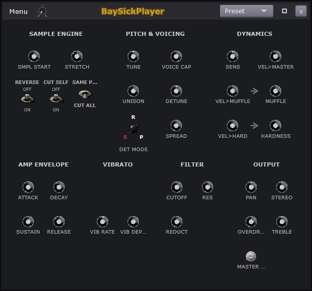
| # | On screen |
|---|---|
Playback - SMPL START / STRETCH / REVERSE | |
Note cutting and voices - CUT SELF / SAME P... / VOICE CAP | |
Tuning and thickness - the PITCH & VOICING column | |
Velocity - the DYNAMICS column | |
AMP ENVELOPE and VIBRATO | |
FILTER and OUTPUT | |
Preset button on the window title bar - the patch picker | |
Swing Mix knob on the title bar, right of Menu - scales the global Swing for this player; right-click offers Truncate Swing Notes |
Controls
| Control | What it does | Default | Range |
|---|---|---|---|
| Sample Start | Skips into the sample before playback. | 0 | 0 to 1 |
| Stretch | Speeds up or slows down playback. | 1 | 0.5 to 2 |
| Reverse | Plays the sample backwards. | Off | on / off |
| Cut Self | Cuts the prior voice on the same note. | Off | on / off |
| Cut Self Mode | Picks what a retrigger cuts. | On | on / off |
| Tune | Shifts pitch in semitone steps. | 0 | -24 to 24 |
| Voice Cap | Caps how many notes sound at once. | 16 | 1 to 16 |
| Unison Voices | Stacks copies of the voice for thickness. | 1 | 1 to 8 |
| Detune | Offsets pitch in cents. | 0 | -100 to 100 |
| Unison Spread | Spreads the stacked voices in pitch. | 0 | 0 to 100 |
| Sensitivity | Shapes how velocity maps to response. | 0.5 | 0 to 1 |
| Vel->Volume | Maps key velocity onto note volume. | 1 | 0 to 1 |
| Vel->Muffle | Maps key velocity onto muffle. | 0 | 0 to 1 |
| Muffle | Darkens the sample with a low-pass. | 0 | 0 to 1 |
| Vel->Hardness | Maps key velocity onto hardness. | 0 | 0 to 1 |
| Hardness | Adds filter resonance for bite. | 0 | 0 to 1 |
| Attack | Sets how fast a note fades in. | 0.001 | 0.001 to 10 |
| Decay | Sets the fall time after the attack peak. | 0.5 | 0.001 to 10 |
| Sustain | Holds this level while the key is down. | 1 | 0 to 1 |
| Release | Sets the fade-out after the key lifts. | 0.3 | 0.001 to 10 |
| Vibrato Rate | Sets how fast the pitch wobbles. | 5.5 | 0.1 to 20 |
| Vibrato Depth | Sets how far the pitch wobbles. | 0 | 0 to 1 |
| Cutoff | Sets the filter's corner frequency. | 20000 | 20 to 20000 |
| Resonance | Boosts the filter's corner for bite. | 0 | 0 to 1 |
| Reduct | Adds lo-fi sample-rate grit. | 0 | 0 to 1 |
| Pan | Places the sound left or right. | 0 | -1 to 1 |
| Stereo | Narrows or widens the stereo image. | 0 | -1 to 1 |
| Treble | Cuts or boosts the high shelf. | 0 | -12 to 12 |
| Drive | Adds overdrive saturation. | 0 | 0 to 1 |
| Volume | Sets this engine's output level. | 0.8 | 0 to 1 |
BaySickPlayer plays audio files as an instrument: load a sound - a note, a drum, a chunk of a song - and the keyboard replays it at different pitches. This page decides where playback starts, what happens when notes pile up, how your playing force shapes the tone, and what the sound leaves the engine like.
Preset on the title bar saves and recalls the player's whole setup as a patch.
SMPL START skips into the recording before playing - the way to trim a slow or noisy beginning off a sample without editing the file. STRETCH time-stretches the sample relative to the song's tempo (within sane limits), so a loop recorded at one speed keeps up when your song runs at another. REVERSE plays it backwards.
CUT SELF makes a retriggered note stop its previous
self instead of overlapping it, and
SAME P... narrows that to identical
repeated notes (its face flips to CUT ALL for cutting
everything). Essential for hi-hats and sample basses - without cutting,
fast lines smear into mush. VOICE CAP caps
how many notes can sound at once: 1 is one-at-a-time (mono), higher lets
chords ring.
TUNE retunes the sample - for a recording that was not quite on pitch, or deliberate detuning. UNISON plays stacked copies of each note, DETUNE spreads their tunings apart, and SPREAD fans them across the stereo field - the disagreement between copies is what thickness is made of. DET MODE (the R / S / P switch) picks the pattern the copies detune in.
Velocity is how hard a note is played - on a keyboard, your finger; in the Piano Roll, the note's velocity bar. SENS is the overall sensitivity to it, and the three routed pairs put force to work on the TONE, not just the volume: VEL>MASTER lets force drive loudness; VEL>MUFFLE with its MUFFLE knob darkens soft hits - play gently and the sound rounds off, like a softly struck drum; VEL>HARD with HARDNESS brightens hard hits. The arrows painted on the panel show the routing.
AMP ENVELOPE - the note's volume shape over time, in four stages: ATTACK is the fade-in time (zero = instant, raised = the sample swells in), DECAY the fall from that first peak, SUSTAIN the level held while the key is down (a level, not a time), RELEASE the fade after you let go. It runs on top of whatever shape the recording already has - so a one-shot can become a pad, or a long sample can be clipped tight.
VIBRATO - VIB RATE and depth put a
gentle pitch wobble on held notes.
FILTER - a tone control over the sample:
CUTOFF sets where the brightness stops (left darker, right
brighter), RES adds a peak right at that point, and
REDUCT is bit-reduction - deliberate digital grit, the lo-fi
crunch of old samplers.
OUTPUT - the final voicing before the mixer:
PAN position, STEREO width,
OVERDRIVE for saturation, a TREBLE tilt, and
the MASTER level.
On a Drums tab, this player pins every sample's root so each drum plays at its recorded pitch on its own key - which is why a kit folder sounds right on a Drums tab, and the same folder can be played melodically on a Layers tab.
Swing Mix - the small knob on the title bar next to
Menu - sets how much of the transport's global Swing this instrument
feels, from none to full. Swing pushes every second sixteenth-note late to
make parts groove; per-player mix means the drums can swing hard while the
guitar stays straight. Right-click offers Truncate Swing
Notes for cleaning up notes that swing pushed into each other.
How this works: Voice modes and note cutting, Unison and voice stacking, Envelopes, The subtractive filter, Presets, Patterns and arrangement.
The sample player
BaySickPlayer maps audio files across the keyboard and replays them pitched: playing a note above or below the sample's root plays it faster or slower. Root notes are read from filenames where they can be, and on a Drums tab every sample's root is pinned to the trigger key so each drum plays at its recorded pitch - the rule that makes one folder behave as a kit on a Drums tab and as an instrument on a Layers tab. STRETCH runs tempo-relative time-stretching (clamped to sane ratios) so loops follow the song's BPM. The velocity system routes playing force three ways - into loudness, into a muffle filter for soft hits, into a hardness tilt for loud ones - which is what lets one sample sound played rather than triggered. Sample start, reverse, unison stacking, the subtractive filter and the ADSR complete the voice; each is covered by its shared topic.
// BaySickPlayerVoice::startNote (pitch ratio + stretch clamp) -- Source/BaySickPlayer/BaySickPlayerDSP.cpp
// ResamplingAudioSource handles pitch shifting; per-note ratio drives transposition.
// S1 2026-04-21: global tune (semitones) + per-voice unison cents (set by BaySickPlayerSynth fan-out).
// mNextUnisonCents already encodes (mDetune via mode) + (unisonSpread) per voice; consumed on startNote.
const double pitchSemitones = (double) (midiNote - region->rootNote)
+ (double) region->tuneOffset
+ (double) mTune
+ (double) mNextUnisonCents / 100.0;
mNextUnisonCents = 0.0f; // consume the tag
const double pitchRatio = std::pow (2.0, pitchSemitones / 12.0);
const double resampRatio = (region->fileSampleRate / mSampleRate) * pitchRatio
* (double) juce::jlimit (0.5f, 2.0f, mStretch);Full function — Source\BaySickPlayer\BaySickPlayerDSP.cpp (BaySickPlayerVoice::startNote / renderNextBlock)
// Source/BaySickPlayer/BaySickPlayerDSP.cpp - BaySickPlayerVoice::startNote (complete)
//==============================================================================
void BaySickPlayerVoice::startNote (int midiNote, float velocity,
juce::SynthesiserSound*,
int /*pitchWheelPos*/)
{
releaseResources();
// QA-VoicePool Task 3: restore user's ADSR params if the previous note was
// stolen with a quick-release override. mPreStealAdsrParams holds either the
// params at steal time OR any user-driven setAdsr updates that arrived during
// the override (see BaySickPlayerVoice::setAdsr).
if (mAdsrOverridden)
{
mAdsr.setParameters (mPreStealAdsrParams);
mAdsrOverridden = false;
}
const int velInt = juce::roundToInt (velocity * 127.f);
const BaySickPlayerRegion* region = mManager.findRegion (midiNote, velInt, mArticGroup);
if (!region || !region->audioData) { clearCurrentNote(); return; }
mSampleBuffer = region->audioData;
// QA-VoicePool Task 2: re-point the chosen fat source at the new region's
// buffer + select the matching permanent resampler. No heap allocation on
// the audio thread. Reverse playback uses ReversedMemoryAudioSource which
// reads the same buffer backward; forward uses BaySickForwardMemoryAudioSource.
if (mReverse)
{
mReverseSrc.setBuffer (*mSampleBuffer);
mActiveSrc = &mReverseSrc;
mActiveResamp = &mReverseResamp;
}
else
{
mForwardSrc.setBuffer (*mSampleBuffer);
mActiveSrc = &mForwardSrc;
mActiveResamp = &mForwardResamp;
}
// Sample-start skip-into (S1 2026-04-21) applied to the source before resampling.
// Positions are expressed in forward-time: the reverse source maps them internally.
if (mSampleStart > 0.0f && mSampleBuffer->getNumSamples() > 0)
{
const juce::int64 startPos = (juce::int64)
(juce::jlimit (0.f, 0.999f, mSampleStart) * (float) mSampleBuffer->getNumSamples());
mActiveSrc->setNextReadPosition (startPos);
}
// ResamplingAudioSource handles pitch shifting; per-note ratio drives transposition.
// S1 2026-04-21: global tune (semitones) + per-voice unison cents (set by BaySickPlayerSynth fan-out).
// mNextUnisonCents already encodes (mDetune via mode) + (unisonSpread) per voice; consumed on startNote.
const double pitchSemitones = (double) (midiNote - region->rootNote)
+ (double) region->tuneOffset
+ (double) mTune
+ (double) mNextUnisonCents / 100.0;
mNextUnisonCents = 0.0f; // consume the tag
const double pitchRatio = std::pow (2.0, pitchSemitones / 12.0);
const double resampRatio = (region->fileSampleRate / mSampleRate) * pitchRatio
* (double) juce::jlimit (0.5f, 2.0f, mStretch);
// QA-H per-note glide (CC84-armed slide/porta): ramp the resampling ratio
// in semitone space from the source pitch to this note's pitch. Slide
// carries its own time (CC5/37); porta falls back to 60 ms (no glide param
// on the player).
mGlideSamplesLeft = 0;
mGlideSemisCur = 0.0f;
mPanRampLeft = 0; // #11: a fresh note is not mid-pan-ramp (RT arm below may re-set)
mNoteStartedAt = midiNote;
mCurTargetNote = (float) midiNote;
mBaseRatioTarget = resampRatio;
mGlideBaseRatio = resampRatio;
if (mGlideFromNote >= 0 && mGlideFromNote != midiNote)
{
const float tSec = mGlideTimePending
? (float) ((mGlideTimeMsbMs << 7) | mGlideTimeLsbMs) * 0.001f
: 0.06f;
mGlideSamplesLeft = juce::jmax (1, (int) (tSec * mSampleRate));
mGlideSemisCur = (float) (mGlideFromNote - midiNote);
mGlideSemisStep = -mGlideSemisCur / (float) mGlideSamplesLeft;
mGlideBaseRatio = resampRatio;
// #11 (G-4): an RT glide noteOn carries pan as a CC89 ramp target --
// mNotePan (the channel snapshot this voice already tracks) glides to
// it over the same span as the pitch (no CC10 was emitted, so the
// ramp starts from the glide SOURCE note's pan).
if (mPanRampPend > -2.0f)
{
mPanRampTarget = mPanRampPend;
mPanRampLeft = mGlideSamplesLeft;
mPanRampStep = (mPanRampTarget - mNotePan) / (float) mPanRampLeft;
}
}
mGlideFromNote = -1; // one-shot: never leaks into the next note
mGlideTimePending = false;
mPanRampPend = -999.0f; // #11: consumed above (or irrelevant for a plain note)
// Consume the per-note expression stashes (QA-H).
mActiveResOffset = mPendResOffset;
mActiveRelScale = mPendRelScale;
// QA-VoicePool Task 2: flushBuffers() clears the resampler's per-channel
// filter histories + readahead buffer; setResamplingRatio() updates the
// pitch ratio. prepareToPlay was hoisted to BaySickPlayerVoice::prepareForPlayback.
mActiveResamp->flushBuffers ();
mActiveResamp->setResamplingRatio (mGlideSamplesLeft > 0
? mGlideBaseRatio * std::pow (2.0, (double) mGlideSemisCur / 12.0)
: resampRatio);
// Sensitivity: reshape velocity curve (0→flat, 1→very responsive)
const float sensExp = 2.0f - mSensitivity * 1.8f; // 0→2.0, 0.5→1.1, 1→0.2
const float adjustedVelocity = std::pow (juce::jlimit (0.001f, 1.f, velocity), sensExp);
// Per-note velocity + region volume offset (kept separate from mVolume).
// S1 2026-04-21: VEL->VOLUME amount crossfades between flat (1.0) and full velocity scaling.
// mVelToVolume = 1 => adjustedVelocity (v1 behaviour)
// mVelToVolume = 0 => 1.0 (velocity has no effect on volume)
const float volVelMix = (1.0f - mVelToVolume) + mVelToVolume * adjustedVelocity;
mVelocityScale = juce::Decibels::decibelsToGain (region->volumeOffset) * volVelMix;
mNoteVel = velocity; // S-6(C): base velocity for the slide loudness ramp
mVelRampLeft = 0; // a fresh note is not mid-slide-ramp
// Muffle: reduce filter cutoff. MUFFLE is a static control; VEL→MUFFLE routes
// velocity so that louder hits bypass some of the muffle (brighter on loud hits).
{
const float velFactor = 1.0f - mVelToMuffle * adjustedVelocity;
mNoteCutoffBias = mMuffle * velFactor * (mBaseCutoff - 200.f);
}
// Hardness: HARDNESS is a base resonance control (always active). VEL→HARDNESS
// scales it with velocity so that louder hits are harder-sounding.
{
const float velScale = 1.0f - mVelToHardness * (1.0f - adjustedVelocity);
mNoteResBias = mHardness * velScale;
}
mFilter.reset();
// QA-H: per-note CC72 release scale on top of the user's base ADSR (the
// engine's setAdsr only fires on user change, so re-apply per note).
{
auto p = mAdsrBase;
p.release = juce::jmax (0.001f, p.release * mActiveRelScale);
mAdsr.setParameters (p);
}
mAdsr.noteOn();
mLfoPhase = 0.0;
mReductStep = 0;
mIsPlaying = true;
// QA-VoicePool Task 3: flip supplemental active flag (Sub-A=(a)) for
// findStealCandidate's atomic scan; clear release predicate (fresh note).
mIsActive.store (true, std::memory_order_release);
mInRelease = false;
// S1 Incr3: monotonic age stamp for voiceCap-based oldest-first stealing.
static juce::uint32 sGlobalNoteCounter = 0;
mNoteStartCounter = ++sGlobalNoteCounter;
}- Root-note pitch ratio: `pitchSemitones = (midiNote - rootNote) + region.tuneOffset + globalTune + unisonCents/100`; `pitchRatio = 2^(pitchSemitones/12)`. - Resampling ratio: `resampRatio = (fileSampleRate / deviceSampleRate) * pitchRatio * clamp(stretch, 0.5, 2.0)` -- the Stretch knob is varispeed (pitch + speed together, tape-style). - Root-note source: `VibeSampleManager::detectRootNote` parses filename numbers as MIDI notes; drum pages pass `normalizeRoot = 60` so voice pitch `midiNote - 60` plays the file at recorded pitch on the default trigger note (CLAUDE.md drum-root rule). - Tempo-relative stretch clamp (clip path, QA-Ec): Stretch mode `stretchRatio = clamp(originalBPM / projectBPM, 1/64, 64)` (length pinned, phase-vocoder stretch); Resample mode `tempoFollow = clamp(projectBPM / originalBPM, 1/64, 64)` rides the varispeed slots (vinyl law: rate and pitch move together). Guards degenerate `originalBPM` from collapsing the window math into silence. - Velocity sensitivity curve: `adjVel = vel^(2 - sensitivity * 1.8)` (sens 0 -> exponent 2.0 flat-feel, 0.5 -> 1.1, 1 -> 0.2 very responsive). - VEL->VOLUME: `volVelMix = (1 - amt) + amt * adjVel`; note gain = `dbToGain(region.volumeOffset) * volVelMix`. - VEL->MUFFLE: cutoff bias `= muffle * (1 - velToMuffle * adjVel) * (baseCutoff - 200)`; applied as `effCutoff = clamp(baseCutoff - bias, 20, 20000)` -- louder hits bypass the muffle (brighter). - VEL->HARDNESS: res bias `= hardness * (1 - velToHardness * (1 - adjVel))`; `effRes = clamp(baseRes + bias * 9.5 + cc71Offset, 0.5, 10)` -- louder hits harder. - Per-note glide/vibrato compose in semitone space: resampler ratio per chunk `= glideBaseRatio * 2^((glideSemis + vibSemis * sin(lfoPhase)) / 12)`; `juce::ResamplingAudioSource` does the fractional-position linear interpolation.
BaySickPlayer Menu
Part of BaySickPlayer
The Layers-tab menu as it reads on a BaySickPlayer tab - identical to the BaySickSynth one (see BaySickSynth/Bass Menu); the menu belongs to the TAB, not the engine.
| # | On screen |
|---|---|
Player - the engine view, tick when shown | |
Piano Roll - jumps the roll to this tab | |
FX Rack - see Effects Rack | |
Freeze - renders this tab and plays the render instead. Greys when unavailable, with the reason in its tooltip; label color signals state - cyan while frozen, orange once the render goes stale | |
Lock Layer - tick when locked; a locked tab shows [L] on its ribbon slot | |
Polyphony: Polyphonic / Monophonic - reads the engine's voice cap; click toggles it | |
Rename... | |
Replace Engine submenu - swap this tab's engine in place; the notes, mixer settings, effects and window all stay. Tick = the current engine; greys while the tab is locked | |
Duplicate Layer (new tab) - greys with no engine loaded | |
Choke Group submenu - None / Group 1 through Group 16; same-group tabs cut each other off | |
Save Current Patch As... | |
Load Preset submenu - the engine's preset tree; (no presets installed) when empty | |
Save Page Preset As... | |
Load Page Preset submenu | |
Delete Layer |
The menu on a BaySickPlayer tab's window. It is the same menu a BaySickSynth tab shows - the menu belongs to the tab, not the engine - so the full walk-through lives on the BaySickSynth Menu page and everything there applies here word for word.
Player shows the engine view; Piano Roll jumps the roll to this tab; FX Rack opens this channel's rack; Freeze renders the tab and plays the render (cyan = frozen, orange = stale, greyed with the reason in the tooltip).
Lock Layer, Rename..., Duplicate Layer (new tab) and Delete Layer are the tab housekeeping - identical to the synth tab's.
Replace Engine swaps which engine this tab runs while the notes, mixer settings, effects and window all stay put - the full story (what survives, what resets, automation, freeze, undo) is on the BaySickSynth Menu page and applies here word for word. On a player tab it is the quick way to promote a sketch: keep the notes, trade the sample for a synth.
Polyphony reads the player's voice cap -
Polyphonic or Monophonic - and clicking toggles it.
A monophonic player is handy for basses sliced from samples: each new note
cuts the last.
Choke Group matters most on player tabs: put an open and a closed hi-hat sample in the same group and they cut each other, the way a real hat does.
Save Current Patch As... and Load Preset handle the player's sound; Save Page Preset As... and Load Page Preset handle the whole page.
How this works: EngineRig, Effect racks, Freeze, Projects and saving, Voice modes and note cutting, Presets.
BaySickDrums
Related: BaySickDrums Menu
Where drums come from - the entry that frames the menu below. Two choices happen when a drum is picked, and they are independent: WHERE you pick it (the Drum Kit's pads, or the ribbon +) and WHAT KIND of sound it is (a sample through BaySickPlayer, or a synth patch through BaySickSynth). No callout rows - the picture is the Drum Kit page where most picking happens; the mechanics live in the chapter text and the menu entry below.
Where drums come from. Two choices happen every time you pick a drum, and they are independent of each other: where you pick it, and what kind of sound it is.
Where - route one: the Drum Kit. The fastest way. Click an empty pad on the Drum Kit and the drum is created on the spot with the sound picker already open - pick something and it lands on that pad; back out and the pad returns to empty, nothing created. Right-click a pad that already has a drum and you get the menu below, where Replace Sound... reopens the same picker on the existing drum.
Where - route two: the ribbon. The ribbon's + menu
carries a BaySickDrums entry with the engine choice right there -
BaySickPlayer or BaySickSynth. This route creates the drum as a tab first
and you load its sound from the drum's own window. It is the long way
around for one drum, but it is the route you are already on when you are
building tabs anyway.
What kind - sample or synth. Every drum is its own little player, and it runs one of two engines. A sample drum (BaySickPlayer) plays audio you point it at - a single hit, a folder of hits, an SFZ, or a library sound - and is the usual choice for acoustic kits and anything you found as a WAV. A synth drum (BaySickSynth) plays a patch instead - 808 kicks, electronic toms, zaps - no samples needed at all. The sound picker offers both kinds side by side, and you never commit to one: loading a sample onto a synth drum, or a patch onto a sample drum, just swaps the engine underneath while the drum's notes, mixer strip, effects and pad position all stay put.
Either way the drum ends up the same thing: a pad on the kit, a tab on the ribbon, a strip on the mixer, and the menu below on a right-click.
BaySickDrums Menu
Part of BaySickDrums
The per-drum menu - right-click any pad on the Drum Kit, or open the Menu on that drum's own player window (the window route adds the view rows and page presets around this same core). Every drum tab is its own player, so this is the drum twin of the Layers tab menu.

| # | On screen |
|---|---|
Lock Drum - tick when locked; a locked drum can't be deleted or replaced | |
Polyphony: Polyphonic / Monophonic - reads the drum engine's voice mode; click toggles it | |
Rename... | |
Replace Sound... - opens the same picker as adding a drum (samples, library sounds, SFZ, synth patches); the drum's notes, mixer settings and effects stay. Backing out changes nothing | |
Duplicate Drum (new tab) - greys with no sound loaded | |
Choke Group submenu - None / Group 1 through Group 16; the classic open/closed hi-hat cutoff | |
MIDI Note submenu - the drum's play pitch, with the current assignment at the top | |
MIDI Learn - bind a pad or key to trigger this drum; the label carries the current binding, and MIDI Forget appears below it once bound | |
Save Current Patch As... | |
Delete Drum - greys while locked |
The per-drum menu. Two ways in: right-click any pad on the Drum Kit, or open the Menu on that drum's own player window - the window route wraps this same core with the view rows (Player / Piano Roll / FX Rack / Freeze) and the page-preset entries. Every drum tab is its own player, so this is the drum twin of the Layers tab menu, trimmed to what a drum needs.
Lock Drum. Protects the drum from accidental edits - a locked drum cannot be deleted or have its sound replaced. The tick shows while locked.
Polyphony. Reads the drum engine's voice mode and clicking toggles it. Most drums want polyphonic (overlapping hits ring together); monophonic makes each hit cut the last - useful for 808s.
Rename... Names the drum; the name follows it to the kit pad, the ribbon slot and the mixer strip.
Replace Sound... Opens the same picker you used when adding the drum - browse a sample, pick a library sound, load an SFZ, choose a synth patch, or start a blank patch - and loads your pick into this drum. The drum's notes, its mixer settings, its effects and its kit position all stay; only the sound changes, even when the pick crosses engine type (a sample onto a synth drum, or back). Backing out of the picker changes nothing, and one undo brings the old sound back.
Duplicate Drum (new tab). Clones the drum - sound, settings, everything - onto the next free pad in this kit's bank.
Choke Group. Sixteen cut groups; same-group drums cut each other off. The classic use is an open and a closed hi-hat silencing one another.
MIDI Note. The drum's play pitch - the note it sounds at, with the current assignment shown at the top. Every drum starts on C5; move it to retune a sample without touching the engine.
MIDI Learn. Binds a pad or key on your controller to trigger this drum; the label carries the current binding, and a MIDI Forget row appears below it once bound.
Save Current Patch As... Saves the drum's sound so any other drum can load it later.
Delete Drum. Removes the drum, its tab and its strip. Greys while locked. If you only want a different sound in the same slot, that is what Replace Sound... is for - no delete needed.
How this works: Projects and saving, Voice modes and note cutting, EngineRig, MIDI Learn, Presets.
BaySickRustyDrums
Related: BaySickRustyDrums Menu, BaySickRustyDrums Main, BaySickRustyDrums Kick, BaySickRustyDrums Snare, BaySickRustyDrums Toms, BaySickRustyDrums Hi-Hat, BaySickRustyDrums Cymbals, BaySickRustyDrums Noises and Clicks, BaySickRustyDrums Drum Kit, BaySickRustyDrums Note Map
The BaySickRustyDrums window's title bar and section tabs.

| # | On screen |
|---|---|
Presets button | |
Kit dropdown (Full) | |
Section tabs - Main / Kick / Snare / Toms / Hi-hat / Cymbals / Noises; each opens its panel figure |
The BaySickRustyDrums window's top strip: the title bar and, below it, the section tabs that page through the kit's panels.
Presets. Saved kit setups - every section panel's settings in one recallable state.
The kit dropdown (Full) picks which
kit program is loaded. Everything else on the window - the panels, the kit
photo, the note map - reads from whatever this loads.
The section tabs. Main /
Kick / Snare / Toms /
Hi-hat / Cymbals / Noises. Main is
the whole kit's mixer in one view; each other tab opens that instrument's
own panel with its deeper controls. Same sound engine throughout - the tabs
just change how much detail you are looking at.
BaySickRustyDrums Menu
Part of BaySickRustyDrums
The BaySickRustyDrums window menu. No FX Rack entry here.

| # | On screen |
|---|---|
Drum Kit - the kit photograph view, see BaySickRustyDrums Drum Kit | |
Player - this window's kit view, tick when shown | |
Piano Roll - jumps the roll to this tab | |
Rusty Drums Map... - the note-to-drum table, see BaySickRustyDrums Note Map | |
Freeze - renders this tab and plays the render instead. Greys when unavailable, with the reason in its tooltip; label color signals state - cyan while frozen, orange once the render goes stale | |
Save Page Preset As... | |
Load Page Preset submenu |
The BaySickRustyDrums window menu. Three views of the same kit, its note map, and the page housekeeping. There is no FX Rack entry here - the Rusty channel's effects live on its mixer strip's rack like every other channel, reached from the mixer.
Drum Kit. The kit photograph view - the real drum set, where every drum and cymbal is a click target you can play.
Player. The control-panel view - the seven section panels (Main, Kick, Snare, Toms, Hi-hat, Cymbals, Noises) with all the mixing and shaping knobs. The tick marks whichever view is showing.
Piano Roll. Jumps the roll to this tab for writing drum parts by hand.
Rusty Drums Map... The note-to-drum table - which key plays which sound with which articulation. The fastest answer to "what do I press for a rimshot."
Freeze. Renders the kit's output and plays the render. Greyed when unavailable with the reason in the tooltip; cyan label = frozen, orange = stale.
Save Page Preset As... and Load Page Preset save and recall the whole kit setup - every section panel's settings - as one preset.
BaySickRustyDrums Main
Part of BaySickRustyDrums
Rusty is ONE window with a section tab row. The frame and the shared per-section controls are taught here; the six section panels number only what is theirs. The section panels are ARIA control surfaces and their headings are the Aria panel names (HI-HAT, NOISES AND CLICKS), which are not always what the tab button abbreviates them to.
| # | On screen |
|---|---|
Presets - saves and loads a Player Preset: the kit sound only, every kit control value plus the engine output level, tagged with the program it was saved on. Different from the page preset on the Menu | |
Program picker - Full / Basic. Which Aria program is loaded; the section tabs follow it | |
Section tab row - Main / Kick / Snare / Toms / Hi-hat / Cymbals / Noises. Auto-discovered from the program zoom-in files, so a kit without them shows Main alone | |
Main-page KICK group - Kick / OH / Punch, with Tune / Dirt / Dead | |
Main-page SNARE group - Btm / Top / OH / Snap / Punch / Epic / Length with the Sticks and Reg Stir pickers, Tail, Crossfade | |
Main-page tom columns - 22 IN / 18 IN / 15 IN / 14 IN, each with its own Close / OH / Pan / Tune | |
Main-page HI-HAT group with its Full o position picker and Dry | |
Main-page cymbal columns - CRASH / RIDE / CHINA / SIZ RIDE / SIZ CRASH / STACK | |
Main-page PERC and MECH groups | |
Swing Mix knob on the title bar, right of Menu - scales the global Swing for this player; right-click offers Truncate Swing Notes |
The Main section is the whole drum kit mixed from one panel. Every drum appears here with its essential controls; the other section tabs zoom into one instrument each with the deeper set. Almost every drum has two faders, and their balance sets the kit's sound.
Presets saves and loads a Player Preset - the
kit's SOUND: every control value on every section, plus the engine's output
level, tagged with the program it came from.
The program picker
(Full / Basic) chooses which kit program is
loaded - the actual instrument definition -
and the section tabs follow whatever
the program provides: a kit without a Noises page simply shows no Noises
tab.
Low cut and Crush appear on every section: a filter that removes rumble below the useful range, and a crusher that adds grit on top of it.
Close / OH - the per-drum fader pair. Every drum was recorded two ways at once: a close microphone right on the drum (tight, dry, direct) and the overheads - the stereo pair above the kit that hears everything with the room around it. The two faders balance them per drum: close-heavy is punchy and modern, overhead-heavy is roomy and live. Pan (left-right position) and Tune (pitch) repeat per drum the same way.
The Select / Stick pickers choose the implement - sticks, brushes, rods - wherever a section has alternatives. This swaps the actual recordings, not just a tone setting.
KICK - Kick (close mic),
OH, and Punch, a pitched-down reinforcement
layer under the fundamental, with Tune, Dirt
(a grit layer) and Deaden (shortens the ring toward a
thud).
SNARE - Btm and Top
are the two snare mics (under-drum rattle, over-drum crack),
OH the overheads, then the reinforcement layers
Snap / Punch / Epic from attack
to big processed thump, the Length brush-stir knob with the
Sticks and stir-style pickers, and Tail /
Crossfade shaping how brush stirs end and loop.
The tom columns - 22 IN to
14 IN, biggest to smallest, each with its own
Close / OH / Pan /
Tune - plus the tom
EXTRAS: Lo Punch / Hi Punch
reinforcement for the floor toms' weight and the high toms' attack.
HI-HAT with its position picker
(Full open and the rest - the default openness when a part
does not specify) and Dry, which pulls the room away from
it. The cymbal columns -
CRASH / RIDE / CHINA /
SIZ RIDE / SIZ CRASH / STACK -
share one Dry knob for the whole
block, and the PERC and
MECH groups carry the kit's percussion extras and mechanical
noises.
The engine's output level itself has no on-screen knob - it is automatable through the right-click menu's routes, and a Player Preset captures it.
Swing Mix - the small knob on the title bar next to
Menu - sets how much of the transport's global Swing this instrument
feels, from none to full. Swing pushes every second sixteenth-note late to
make parts groove; per-player mix means the drums can swing hard while the
guitar stays straight. Right-click offers Truncate Swing
Notes for cleaning up notes that swing pushed into each other.
How this works: Presets, Patterns and arrangement.
The sampled instruments
BaySickGuitars, BaySickBasses and BaySickRustyDrums are driven by SFZ programs - instrument definitions that map hundreds of recorded samples across keys, velocities and articulations. The engine reads the program and the program defines the instrument: which samples exist, how velocity layers crossfade, which KEYSWITCH keys change articulation (the amber keys on the Piano Roll keyboard), and what incidental noises ride along. That is why the control surfaces differ per instrument - the panels are drawn from the loaded program itself - and why the Rusty Drums Map window can list every note the kit answers to: it reads the same program. The three engines load on their own race-safe paths and stay resident while their tabs exist; the kit's pedal state, stir loops and mic mix layers are all program features the panels expose rather than effects added on top.
// BaySickGuitarsProcessor::loadKit (program load path, head) -- Source/BaySickGuitars/BaySickGuitarsProcessor.cpp
bool BaySickGuitarsProcessor::loadKit (const juce::File& sfzPath)
{
if (! sfzPath.existsAsFile() || ! mSfizz)
return false;
// SECURITY (QA-Cleanup 2026-08-10): pre-flight BEFORE handing the kit to
// sfizz. After loadSfz* it is too late - the macro and include hangs never
// return, and the Ogg overflow has already happened. See SafeSfzKit.h.
if (const auto why = SafeSfzKit::rejectReason (sfzPath); why.isNotEmpty())
{
MissingFileReport::add ("Instrument kit refused - " + why,
sfzPath.getFullPathName());
return false;
}
if (! mSfizz->loadSfzFile (sfzPath.getFullPathName().toStdString()))
return false;
mCurrentKitPath = sfzPath;Full function — Source\BaySickGuitars\BaySickGuitarsProcessor.cpp (loadKit program-load path, processBlock MIDI/keyswitch dispatch; BaySickBasses mirrors it, BaySickRustyDrums is the singleton variant)
// Source/BaySickGuitars/BaySickGuitarsProcessor.cpp - BaySickGuitarsProcessor::loadKit (complete)
bool BaySickGuitarsProcessor::loadKit (const juce::File& sfzPath)
{
if (! sfzPath.existsAsFile() || ! mSfizz)
return false;
// SECURITY (QA-Cleanup 2026-08-10): pre-flight BEFORE handing the kit to
// sfizz. After loadSfz* it is too late - the macro and include hangs never
// return, and the Ogg overflow has already happened. See SafeSfzKit.h.
if (const auto why = SafeSfzKit::rejectReason (sfzPath); why.isNotEmpty())
{
MissingFileReport::add ("Instrument kit refused - " + why,
sfzPath.getFullPathName());
return false;
}
if (! mSfizz->loadSfzFile (sfzPath.getFullPathName().toStdString()))
return false;
mCurrentKitPath = sfzPath;
// Seed CC defaults from the kit's `set_cc<N>=<int>` directives so the
// ARIA panel + sfizz both start at the kit author's intended positions.
// Walks #include chains depth-first up to depth 4 (covers
// `program → default/<file> → mappings/<file>` nesting) and collects every
// `set_cc<N>=<int>` it encounters. Each is stamped into mCcKitDefault
// (read-only snapshot for double-click reset) AND written through APVTS
// (so the parameter listener pushes the value to sfizz and the panel knobs
// paint at the right initial position). Direct port of Rusty's scan.
std::map<int, int> kitDefaults;
std::map<int, juce::String> kitLabels;
std::map<juce::String, int> defines; // SFZ `#define $name value` macros
{
// SECURITY (QA-Cleanup 2026-08-10): a depth cap alone is not a bound --
// nothing stopped a file including itself and nothing capped BREADTH,
// so a crafted or merely broken pack could fan out to millions of reads
// and hang the app on load. Same fix as SlideRegionMap::expandIncludes.
juce::StringArray visitedIncludes;
int includeBudget = 256;
// Every #include resolves against the TOP-LEVEL file's directory, which
// is what sfizz does (Parser.cpp:70-74, `_originalDirectory` assigned
// once). Resolving against the including file's parent - as this did -
// silently found nothing below depth 2, so set_cc defaults declared in
// nested mapping files were never picked up.
const auto sfzRoot = sfzPath.getParentDirectory();
std::function<void (const juce::File&, int)> scan;
scan = [&] (const juce::File& f, int depth)
{
if (depth > 4 || includeBudget <= 0 || ! f.existsAsFile()) return;
const auto visitKey = f.getFullPathName();
if (visitedIncludes.contains (visitKey)) return;
visitedIncludes.add (visitKey);
--includeBudget;
const auto txt = f.loadFileAsString();
juce::StringArray ls;
ls.addLines (txt);
for (const auto& raw : ls)
{
const auto t = raw.trim();
if (t.startsWithIgnoreCase ("#define"))
{
// SFZ macro `#define $name value`. Captured so set_cc lines
// that reference $name resolve to the kit author's value
// (e.g. Big Rusty Drums' set_cc4=$ht_lo_hi_init). Commented
// `//#define` lines are skipped - they do not start with '#'.
const auto rest = t.substring (7).trim();
const int sp = rest.indexOfChar (' ');
if (sp > 0)
{
const auto name = rest.substring (0, sp).trim();
if (name.startsWith ("$"))
defines[name] = rest.substring (sp + 1).trim().getIntValue();
}
}
else if (t.startsWithIgnoreCase ("set_cc"))
{
const int eq = t.indexOfChar ('=');
if (eq > 6)
{
const int cc = t.substring (6, eq).getIntValue();
const auto rhs = t.substring (eq + 1).trim();
// Resolve an SFZ `#define $macro` reference; a literal int
// passes straight through. Unknown macro -> 0.
int resolved;
if (rhs.startsWith ("$"))
{
const auto it = defines.find (rhs);
resolved = (it != defines.end()) ? it->second : 0;
}
else
resolved = rhs.getIntValue();
const int val = juce::jlimit (0, 127, resolved);
if (cc >= 0 && cc < kCcCount) kitDefaults[cc] = val;
}
}
else if (t.startsWithIgnoreCase ("label_cc"))
{
// Format: `label_cc<N>=<text>` - text runs to end-of-line,
// unquoted. Used by ARIA hosts as the parameter's display
// name; we mirror that in tooltip + automation menu labels.
const int eq = t.indexOfChar ('=');
if (eq > 8)
{
const int cc = t.substring (8, eq).getIntValue();
auto label = t.substring (eq + 1).trim();
if (cc >= 0 && cc < kCcCount && label.isNotEmpty())
kitLabels[cc] = label;
}
}
else if (t.startsWithIgnoreCase ("#include"))
{
const int q1 = t.indexOfChar ('"');
const int q2 = (q1 >= 0) ? t.indexOfChar (q1 + 1, '"') : -1;
if (q1 >= 0 && q2 > q1)
{
const auto rel = t.substring (q1 + 1, q2);
scan (sfzRoot.getChildFile (rel), depth + 1);
}
}
}
};
scan (sfzPath, 0);
}
{
const juce::SpinLock::ScopedLockType lk (mCcKitDefaultLock);
mCcKitDefault = kitDefaults;
}
{
const juce::SpinLock::ScopedLockType lk (mCcLabelLock);
mCcLabel = kitLabels;
}
// QA-Sfizz-Followup (2026-06-01): reset every CC to 0 (off) before applying
// the kit's set_cc overrides - reverts Sub-E's reset-to-64. Baseline 0 +
// kit set_cc overrides = the kit author's intended state: unset CCs OFF
// (sfizz's natural default), set_cc CCs at their declared value. Sub-E's
// blanket 64 turned "amount" controls (feedback / muting / unison / vibrato)
// half-on by default and sounded wrong. Reset is still required (vs leaving
// prior values) because switching programs leaks values from the previous
// kit - e.g. user adjusts CC100 on Green to 90, switches to Black (which
// never set_cc100); without the reset CC100 would stay at 90. The reset
// reaches sfizz via setValueNotifyingHost -> parameterChanged's dirty
// mark, drained by processBlock once the processing gate reopens.
// QA-UndoCoverage Task 6: kit-default pushes are programmatic (the kit
// load itself becomes ONE structural transaction in Task 7).
juce::AudioProcessorValueTreeState::ScopedProgrammaticParamWrites spw;
for (int cc = 0; cc < kCcCount; ++cc)
{
if (auto* p = dynamic_cast<juce::RangedAudioParameter*> (
apvts.getParameter (mCcParamRoot + juce::String (cc))))
p->setValueNotifyingHost (p->getNormalisableRange().convertTo0to1 (0.0f));
}
// Push kit defaults through APVTS - the parameterChanged marks land in
// sfizz via the processBlock drain. Overrides the 0 reset above for
// CCs the kit author explicitly set.
for (auto& [cc, val] : kitDefaults)
{
if (auto* p = dynamic_cast<juce::RangedAudioParameter*> (
apvts.getParameter (mCcParamRoot + juce::String (cc))))
p->setValueNotifyingHost (p->getNormalisableRange().convertTo0to1 ((float) val));
}
// QA-SlideSampler Task 1: build the blended-slide note->sample table for the
// center-voice default-keyswitch sustain articulation of the loaded program.
// Independent of the sfizz load above; consumed by the SlideSampler (Task 2)
// and a no-op for normal playback.
mSlideRegions = extractSlideRegions (sfzPath);
mSlideSampler.setProgram (mSlideRegions); // rebuild zone tables (processing gate off here)
return true;
}- Program load path: SafeSfzKit pre-flight -> `mSfizz->loadSfzFile(path)` -> set_cc/label_cc scan (`#include` depth <= 4, budget 256 files, macro resolution `set_cc4=$ht_lo_hi_init`) -> CC reset-to-0 + kit-default push through APVTS -> SlideSampler zone tables. State restore order is load-bearing: `loadKit` FIRST (kit defaults stamp the CC params), `replaceState` SECOND (the project's saved CCs overlay them). - Keyswitches: sfizz handles them natively (region `sw_lokey`/`sw_last` machinery inside the vendored library); the wrapper additionally (a) mirrors `label_key`-style names via the local-patch `getKeyswitchLabels()` accessor for UI, (b) lets the SlideSampler swap articulation tables on the same note (`trySelectArticulation`), and (c) exempts keyswitch notes from cut-self. Notes and non-transport CCs pass straight through: `mSfizz->noteOn/noteOff/cc/pitchWheel` at the event's sample `delay`. - Race-safe load: two gates both FALSE for the whole load (`mGuitarsActive[]` model-side, `mProcessingEnabled` engine-side, acquire/release atomics) + the project-load shield + acknowledgement-based `settleAudioThread()` -- the settle is what actually guarantees no audio-thread reader is inside `renderBlock` when `loadSfzFile` frees regions/voices, because the gates are check-then-act. CC writes made mid-load accumulate as dirty marks and drain on the first block after the gate reopens. - CC dispatch math: dirty bitset of `kCcCount = 512` bits in 64-bit words: mark `word[cc>>6] |= 1 << (cc & 63)` (release), drain via `exchange(0, acquire)` then `mSfizz->cc(0, cc, clamp(round(raw), 0, 127))`. - Pitch wheel: sfizz takes CENTERED -8192..+8192, so JUCE's raw 0..16383 is converted `clamp(value - 8192, -8191, 8191)`. - Slide transport CCs (intercepted, never reach sfizz): CC84 anchor, CC5/CC37 14-bit glide ms `(hi << 7) | lo`, CC86 loudness, CC87/88 bend amount/shape, CC85 arm. Bend wheel target: `semis * 100 / bendRangeCents * 8192`, clamped to +-8191/8192.
Behind: Loaded-instrument field, Load Guitar, Releases slider, VIBRATO group, PERFORMANCE group, Loaded-instrument field, Load Bass, Swell / Release, VIBRATO group, Delay / Fade / Humanize knobs, Program picker, Section tab row.
BaySickRustyDrums Kick
Part of BaySickRustyDrums

| # | On screen |
|---|---|
NORMAL VOLUMES - Kick out / Overhead / Dirt | |
TRANSPOSED - Punch | |
Tune / Deaden / Snare tune |
The Kick section, zoomed in. Two things to know: the drum was recorded from several places at once, and extra layers can be stacked under it for weight.
NORMAL VOLUMES. Kick out is the
close microphone - the tight, direct thump. Overhead is how
much of the kick bleeds through the mics above the kit - the room's view
of it, glue rather than punch. Dirt is a grit layer under
the clean hit.
TRANSPOSED - Punch. A pitched-down copy layered under the fundamental. More of it adds low-end weight - the subwoofer part of the kick - without changing the attack.
Tune / Deaden / Snare tune. Tune
moves the drum's pitch - tune the kick to the song's key and the low end
locks in. Deaden shortens the ring toward a dry thud, the
knob-version of stuffing a pillow in the drum. Snare tune
sets how much the snare's wires buzz in sympathy when the kick hits -
the quiet rattle a real kit always has; zero is cleaner, some is
more realistic.
How this works: The sampled instruments.
BaySickRustyDrums Snare
Part of BaySickRustyDrums

| # | On screen |
|---|---|
NORMAL VOLUMES - Bottom / Top / Overhead | |
TRANSPOSED - Snap / Punch / Epic | |
BRUSH STIRS - Length / Tail / Crossfade | |
Select picker - Sticks regular | |
Stir picker - Regular Stir | |
Pan / Tune / Deaden |
The Snare section - the most-shaped drum on any kit, with its own mic set, stackable layers, and the brush-stir machine.
NORMAL VOLUMES. Bottom is the mic
under the drum, pointed at the wires - the rattle and sizzle.
Top is the mic above - the stick's crack and the drum's
body. Overhead is the room's view. The bottom/top balance
alone moves the snare from crisp to fat.
TRANSPOSED - reinforcement layers stacked
under the real drum: Snap sharpens the attack,
Punch adds body, Epic is the big processed
thump underneath - the produced, larger-than-life snare sound, dialed in
by taste.
BRUSH STIRS - the continuous circular
brush-on-drum sound, played as loops. Length is how long a
stir runs, Tail how it ends, Crossfade how
seamlessly one loop hands to the next.
The stir picker
(Regular Stir, smooth, peaky) chooses the stirring style
itself.
Select chooses what hits the drum -
Sticks regular, brushes, rods - swapping the actual
recordings. Pan / Tune / Deaden -
position in the stereo picture, pitch, and how much ring survives after
each hit.
How this works: The sampled instruments.
BaySickRustyDrums Toms
Part of BaySickRustyDrums

| # | On screen |
|---|---|
A tom column - 22 IN / 18 IN / 15 IN / 14 IN, each with Close / OH / Pan / Tune. Four columns, one control set | |
EXTRAS - Lo Punch / Hi Punch / Dirt | |
BRUSH STIRS - Length / Tail / Crossfade | |
Sn pan / Sn tune / Deaden | |
Stir-style picker under BRUSH STIRS - Smooth Stir / Regular Stir / Peaky Stir |
The Toms section - four drums, one shared control set.
The tom columns. 22 IN down to
14 IN - biggest and deepest to smallest and highest, named by
their real diameters. Each column has its own close-mic/overhead balance
(Close / OH), Pan and
Tune. Pan them across the stereo field the way a kit sits on
its riser - big tom one side, small the other - and every fill physically
travels across the speakers.
EXTRAS - Lo Punch and
Hi Punch reinforce the floor toms' weight and the high toms'
attack, plus Dirt for grit.
BRUSH STIRS - the continuous brushed-drum loops,
as on the snare: Length / Tail /
Crossfade shape how a stir runs, ends, and loops -
with the stir-style picker
(Smooth Stir / Regular Stir /
Peaky Stir) choosing its character.
Sn pan / Sn tune / Deaden. The snare's wires
buzz along when the toms are hit - these place and pitch that sympathetic
rattle, and Deaden sets how fast the toms' own ring dies.
How this works: The sampled instruments.
BaySickRustyDrums Hi-Hat
Part of BaySickRustyDrums
Panel heading HI-HAT; the tab button abbreviates it to Hi-hat.

| # | On screen |
|---|---|
VOLUMES - Close / OH | |
Select picker - Sticks | |
Position picker - Fully open and the other openings | |
Pan / Tune / Dryness |
The Hi-hat section. On a real kit the hats live mostly in the overhead microphones; the close mic adds definition when the part needs to cut.
VOLUMES - Close (the hat's own mic,
crisp and present) against OH (the overheads' airier
view).
Select picks what plays the hats -
Sticks, brushes, rods - swapping the recordings themselves.
Position sets the default pedal
opening - Fully open ringing and washy, down through
half-open to closed and tight - the sound you get when a part does not
say otherwise. The pedal is also live elsewhere: the kit-photo view shows
its state in real time, and pedal notes in a part work it while
playing.
Pan / Tune / Dryness - where the hats sit in the stereo picture, their pitch, and how much room stays around them (dryness up = closer and tighter).
How this works: The sampled instruments.
BaySickRustyDrums Cymbals
Part of BaySickRustyDrums

| # | On screen |
|---|---|
A cymbal column - CRASH / RIDE / CHINA / SIZ RIDE / SIZ CRASH / STACK, each with Close / OH / Pan. Six columns, one control set | |
Select picker - Sticks | |
Tune / Dryness - one pair for the whole section, not per cymbal |
The Cymbals section - six cymbals, one control language.
The cymbal columns. CRASH /
RIDE / CHINA / SIZ RIDE /
SIZ CRASH / STACK - each with its own close-mic
level (Close), overhead level (OH) and
Pan. Spread them the way a drummer's cymbals
surround the kit to widen the stereo image; overheads carry most of
the cymbal sound naturally, with the close mics for emphasis.
Select chooses the implement
(Sticks and the alternatives) for the whole section - real
alternate recordings, not a filter.
Tune / Dryness - one pair for the whole cymbal block: the overall shimmer pitch, and how much room stays around it.
How this works: The sampled instruments.
BaySickRustyDrums Noises and Clicks
Part of BaySickRustyDrums
Panel heading NOISES AND CLICKS; the tab button abbreviates it to Noises.

| # | On screen |
|---|---|
MECH NOIS... group - Close / Overhead with Tune | |
PERCUSSION group - Close / Overhead / Snare btm with Tune | |
PAN group - one pan per source: Snare / Hi-hat / 22 in / 18 in / 15 in / 14 in |
The Noises and Clicks section - the kit's incidental sounds: pedal squeaks, stand rattles, percussion extras. Quiet on their own, they are a large part of why a programmed kit reads as a person playing in a room.
MECH NOISES - the hardware's own sounds
(pedal action, stand rattle, the machinery of the kit):
Close and Overhead levels with a
Tune.
PERCUSSION - the percussion extras:
Close / Overhead levels, how much they excite
the snare's wires (Snare btm), and a Tune.
PAN - one pan per noise source
(Snare, Hi-hat, the four toms), so each
source's incidental sound sits WITH its drum in the stereo picture even
though it is generated here.
How this works: The sampled instruments.
BaySickRustyDrums Drum Kit
Part of BaySickRustyDrums
The Rusty window's Drum Kit view - the kit photograph with live hit targets, opened from the window Menu's Drum Kit entry (see BaySickRustyDrums Menu). The title bar is the family bar figure (see BaySickRustyDrums); this view has no section tab row.

| # | On screen |
|---|---|
| The kit photograph - every drum and cymbal is a click target; clicking plays that piece. A thin blue outline marks the piece while pressed, and hovering names it in the tooltip | |
Hi-hat pedal indicator - always on: a green ring with PEDAL: OPEN, red with PEDAL: CLOSED, following the engine's pedal state | |
Pick a program to begin - the overlay until a kit program is loaded |
The Rusty window's Drum Kit view: the kit as a photograph, playable by mouse. Opened from the window menu's Drum Kit entry.
The kit itself. Every drum and cymbal in the photo is a click target - click a snare, hear that snare, with a thin blue outline marking the piece while it is pressed. Hover over anything and the tooltip names it. It is the quickest way to audition the kit and learn which sound is which before you write a part.
The hi-hat pedal. Always ringed: green with
PEDAL: OPEN, red with PEDAL: CLOSED. It follows the
engine's pedal state live, so while a pattern plays you can watch the hat
open and close - and clicking the pedal works it by hand.
Pick a program to begin. The overlay you see before a kit program is loaded. Pick one from the kit dropdown on the title bar and the photo becomes playable.
How this works: The sampled instruments.
BaySickRustyDrums Note Map
Part of BaySickRustyDrums
The note-to-drum map, opened from Rusty Drums Map... on the Rusty window's own Menu. Its own desktop window, not a section panel.

| # | On screen |
|---|---|
The map itself - which MIDI note fires which articulation. Columns: Key (note name) / MIDI (raw number) / Sound / Articulation |
The Rusty Drums Map - the note-to-drum table, opened from the Rusty window menu. Its own window, so you can leave it open beside the Piano Roll while writing a part.
The table. One row per kit-native note, four
columns: Key (the note name, like C3), MIDI (the
raw note number), Sound (which drum), and Articulation (how it
is hit - stick, rimshot, brush, and so on). Scroll it to see everything the
loaded kit answers to; this window is the authoritative list, straight from
the kit itself. It works even with no Rusty tab open - it reads the
installed kit.
How this works: The sampled instruments.
Hosted Plugin
Related: Hosted Plugin Menu
A Plugins tab hosting a third-party VST3 instrument. Everything inside the frame is the PLUGIN own UI and belongs to its maker, not to us - so the callouts are the frame and the hosting contract only.

| # | On screen |
|---|---|
Window title - the TAB name (Plugin 1), not the plugin name. Renaming the tab renames the window | |
Swing Mix knob on the title bar, right of Menu - scales the global Swing for this player; right-click offers Truncate Swing Notes |
A Plugins tab - a third-party VST3 instrument living in its own window. The window IS the plugin's own interface; BaySickDAW provides the frame, the routing and the safety net.
The window title is the TAB's name
(Plugin 1), not the plugin's - rename the tab and the window
follows. The plugin's own name lives inside its surface.
Size: the window opens at whatever size the plugin declares and is not user-resizable - a Plugins tab is nothing but the hosted plugin, so there is no frame worth dragging.
The safety net: the plugin runs out of process, in a sandbox helper. If it crashes, the helper dies and BaySickDAW keeps playing.
Automation goes through the window Menu's
Automate submenu - Last Touched plus the full
parameter list - because a third-party plugin's knobs cannot be known by
name in advance. Wiggle the control in the plugin, then pick Last
Touched.
If the plugin dies, the surface is replaced by a
marker naming it and the reason - This plugin closed
unexpectedly, 32-bit plugin - requires the plugin
bridge, or The plugin could not be loaded - and the
window title gains (missing). The menu offers
Retry Loading Plugin while it is down.
Swing Mix - the small knob on the title bar next to
Menu - sets how much of the transport's global Swing this instrument
feels, from none to full. Swing pushes every second sixteenth-note late to
make parts groove; per-player mix means the drums can swing hard while the
guitar stays straight. Right-click offers Truncate Swing
Notes for cleaning up notes that swing pushed into each other.
How this works: EngineRig, Patterns and arrangement.
Out-of-process plugin hosting
Plugins run in a separate process, so a plugin that crashes takes only its own helper down. Scanning runs out of process too — a plugin that crashes on load cannot take your session with it.
The bridge protocol is at version 6. Two message ids are permanently reserved and unused:
| Id | Name | Status |
|---|---|---|
| 4 | Process | Reserved since v3 |
| 103 | ProcessReply | Reserved since v3 |
_req and _done) as the rendezvous. The protocol
carries setup, parameters and state — never samples. Sending audio down a
message channel is what makes bridged plugins unusable, and those two ids are
kept reserved so nobody re-adds it.
A hosted effect can also take a sidechain: the host lends the plugin its strip's sidechain receive buffer for exactly one call, then takes it back.
// Hosting::Bridge protocol version history + version constant (PluginBridgeProtocol.h)
// 6 (2026-08-10): ScanFile / ScanResult -- plugin SCANNING moved out of
// process. It used to run in-process on a background thread, which broke
// JUCE's documented "VST3 scan must be on the message thread" contract AND let
// one crashing plugin take the whole DAW down mid-scan. Host and helper are
// built together by do_build.bat and staged side by side, so a version bump
// never meets a stale peer.
inline constexpr std::uint32_t kProtocolVersion = 6;
// The ChildProcess handshake id. Both sides must agree, so it lives here with
// the rest of the protocol rather than being redeclared in each .cpp (it was,
// identically, in two).
inline constexpr const char* kBridgeUid = "BaySickPluginBridge";
// PluginBridgeProtocol.h -- packed wire structs (verbatim, lines 97-158 + 178-182)
#pragma pack (push, 1)
// Every message opens with this. `payloadBytes` counts what follows the
// header, so a reader can skip a message type it does not know.
struct Header
{
std::uint32_t type; // MessageType
std::uint32_t payloadBytes;
std::uint32_t sequence; // echoed in replies, so a late reply is discardable
std::uint32_t reserved; // keeps the header 16 bytes on both architectures
};
struct HandshakePayload
{
std::uint32_t protocolVersion;
std::uint32_t hostArchBits; // 32 or 64 -- logged, never used to branch layout
};
struct PreparePayload
{
double sampleRate;
std::uint32_t maxBlockSize;
std::uint32_t numChannels;
};
// Per-block MIDI cap. A block never carries anywhere near this; the bound
// exists so a runaway buffer cannot overrun the control header's fixed area.
inline constexpr std::uint32_t kMaxMidiBytesPerBlock = 4096;
// v3: NOTHING per-block rides this protocol. Audio, MIDI, transport and the
// reply all live in the shared mapping's control header (see
// BridgeSharedMemory.h SharedBlockControl), and a pair of named auto-reset
// events is the rendezvous -- the audio thread never touches the pipe. MIDI
// wire format inside the control area, written and read by hand rather than by
// copying JUCE's MidiBuffer storage (the helper may be x86): per event,
// int32 samplePosition, int32 numBytes, then numBytes of raw MIDI.
struct SetParameterPayload
{
std::uint32_t paramIndex;
float value01;
};
struct EditorPayload
{
std::uint64_t parentWindowHandle; // HWND as an integer -- never a pointer type
std::int32_t width;
std::int32_t height;
};
struct LoadReplyPayload
{
std::uint32_t ok; // 0 = failed; message text follows on Error
std::uint32_t numParameters;
std::uint32_t latencySamples;
std::uint32_t sharedMemoryBytes;
// v3: what the loaded plugin actually IS. A 32-bit plugin cannot be
// opened by the 64-bit scanner, so its scan-time description is a
// filename-only guess -- the first real load corrects it from here.
std::uint32_t isInstrument; // 0/1
std::uint32_t acceptsMidi; // 0/1
};
...
#pragma pack (pop)
// A padding difference between the x64 and x86 builds would silently shift
// every field after it, so the layout is asserted rather than trusted.
static_assert (sizeof (Header) == 16, "Bridge::Header must be 16 bytes on every target");Full function — - Source\Hosting\PluginBridgeProtocol.h (the whole wire format, kProtocolVersion = 6)
// Source/Hosting/PluginBridgeProtocol.h
#pragma once
#include <JuceHeader.h>
#include <cstdint>
// ── Hosting::Bridge ─────────────────────────────────────────────────────────
// QA-ModelShell TS6 (BLU-302): the wire format between BaySickDAW and a
// plugin-host helper process.
//
// ARCHITECTURE-NEUTRAL BY CONSTRUCTION, and that is the entire design
// constraint rather than a nicety. The helper is built TWICE -- x64 and x86 --
// because a process can only load a plugin of its own architecture, which is
// the whole reason a 32-bit plugin needs a bridge at all. A 64-bit host
// therefore talks to a 32-bit peer across every message, so:
//
// * every field is a FIXED-WIDTH integer or float. No int, no long, no
// size_t, no bool (1 byte is not guaranteed to pack the same), no enum
// without an explicit underlying type.
// * no pointer EVER crosses the wire. Window handles cross as uint64 and
// are cast at the receiving end.
// * structs are explicitly packed and asserted, so a compiler that pads
// differently between the two builds fails the build rather than
// misreading messages at runtime.
//
// Getting this right up front costs nothing; retrofitting it onto a protocol
// written 64-to-64 would mean re-auditing every message. That is why 7b (the
// 32-bit build) is cheap and why it was not deferred.
// ─────────────────────────────────────────────────────────────────────────────
namespace Hosting::Bridge
{
// Bumped whenever the layout below changes. The helper reports its version in
// the handshake and the host refuses a mismatch -- a stale helper binary left
// over from an older install would otherwise misparse every message.
// 2 (TS7, 2026-07-31): ProcessPayload gained transport, and the MIDI trailer
// the original comment promised is now actually sent.
// 3 (2026-07-31, batch review): the per-block path LEFT THE PIPE ENTIRELY --
// audio, MIDI, transport and the reply all ride the shared mapping's control
// header, with a pair of named events as the rendezvous. The pipe send was
// never audio-thread-safe: framing allocated a MemoryBlock per block, and a
// stalled helper let the pipe write block the audio thread for up to the
// 15-second pipe timeout. LoadPlugin's trailer became path + '\n' +
// identifier, because the identifier alone contains no path and the helper
// could never resolve a plugin from it. Host and helper are built from this
// header by the same do_build.bat run, so they cannot disagree.
// 4 (2026-08-02): ProgramInfo (helper -> host) -- current program index/count
// + the current program's name as a UTF-8 trailer, pushed after load and on
// every program change the plugin reports. Feeds the tab/strip preset-name
// linkage; plugins that never publish programs simply never send a name.
// 5 (2026-08-02): ParamTouched (helper -> host) -- the parameter the USER just
// moved inside the plugin's own UI, as value + "id \t name" trailer. Feeds
// "Automate last touched" for bridged plugins (a foreign editor has no
// right-click hook of ours). Bursts coalesce helper-side, and changes the
// HOST itself just sent (automation playback) are suppressed at the source so
// lane replay does not masquerade as user touches.
// 6 (2026-08-10): ScanFile / ScanResult -- plugin SCANNING moved out of
// process. It used to run in-process on a background thread, which broke
// JUCE's documented "VST3 scan must be on the message thread" contract AND let
// one crashing plugin take the whole DAW down mid-scan. Host and helper are
// built together by do_build.bat and staged side by side, so a version bump
// never meets a stale peer.
inline constexpr std::uint32_t kProtocolVersion = 6;
// The ChildProcess handshake id. Both sides must agree, so it lives here with
// the rest of the protocol rather than being redeclared in each .cpp (it was,
// identically, in two).
inline constexpr const char* kBridgeUid = "BaySickPluginBridge";
enum class MessageType : std::uint32_t
{
// host -> helper
Handshake = 1,
LoadPlugin = 2,
Prepare = 3,
Process = 4, // RESERVED since v3 -- per-block work rides the shared mapping
SetParameter = 5,
GetState = 6,
SetState = 7,
OpenEditor = 8,
CloseEditor = 9,
Shutdown = 10,
ScanFile = 11, // v6: trailer = path to scan. Reply is ScanResult.
// helper -> host
HandshakeReply = 101,
LoadReply = 102,
ProcessReply = 103, // RESERVED since v3 -- the reply rides the shared mapping
StateBlob = 104,
ParameterList = 105,
EditorOpened = 106,
Error = 107,
ProgramInfo = 108, // v4: payload + current program's name as trailer
ParamTouched = 109, // v5: payload + "id \t name" trailer
ScanResult = 110, // v6: trailer = <PLUGINS> XML, one <PLUGIN> per type
};
#pragma pack (push, 1)
// Every message opens with this. `payloadBytes` counts what follows the
// header, so a reader can skip a message type it does not know.
struct Header
{
std::uint32_t type; // MessageType
std::uint32_t payloadBytes;
std::uint32_t sequence; // echoed in replies, so a late reply is discardable
std::uint32_t reserved; // keeps the header 16 bytes on both architectures
};
struct HandshakePayload
{
std::uint32_t protocolVersion;
std::uint32_t hostArchBits; // 32 or 64 -- logged, never used to branch layout
};
struct PreparePayload
{
double sampleRate;
std::uint32_t maxBlockSize;
std::uint32_t numChannels;
};
// Per-block MIDI cap. A block never carries anywhere near this; the bound
// exists so a runaway buffer cannot overrun the control header's fixed area.
inline constexpr std::uint32_t kMaxMidiBytesPerBlock = 4096;
// v3: NOTHING per-block rides this protocol. Audio, MIDI, transport and the
// reply all live in the shared mapping's control header (see
// BridgeSharedMemory.h SharedBlockControl), and a pair of named auto-reset
// events is the rendezvous -- the audio thread never touches the pipe. MIDI
// wire format inside the control area, written and read by hand rather than by
// copying JUCE's MidiBuffer storage (the helper may be x86): per event,
// int32 samplePosition, int32 numBytes, then numBytes of raw MIDI.
struct SetParameterPayload
{
std::uint32_t paramIndex;
float value01;
};
struct EditorPayload
{
std::uint64_t parentWindowHandle; // HWND as an integer -- never a pointer type
std::int32_t width;
std::int32_t height;
};
struct LoadReplyPayload
{
std::uint32_t ok; // 0 = failed; message text follows on Error
std::uint32_t numParameters;
std::uint32_t latencySamples;
std::uint32_t sharedMemoryBytes;
// v3: what the loaded plugin actually IS. A 32-bit plugin cannot be
// opened by the 64-bit scanner, so its scan-time description is a
// filename-only guess -- the first real load corrects it from here.
std::uint32_t isInstrument; // 0/1
std::uint32_t acceptsMidi; // 0/1
};
// v4: current program state. Only the CURRENT program's name crosses (as the
// message trailer) -- the naming linkage needs nothing else, and a full
// program-list sync would be dead weight for the majority of plugins that
// report a single unnamed program.
struct ProgramInfoPayload
{
std::int32_t numPrograms;
std::int32_t currentProgram;
};
// v5: a user touch inside the plugin's own editor. Trailer carries the
// stable parameter id and display name ("id \t name") -- lanes key on the id,
// the menu shows the name.
struct ParamTouchedPayload
{
float value01;
};
#pragma pack (pop)
// A padding difference between the x64 and x86 builds would silently shift
// every field after it, so the layout is asserted rather than trusted.
static_assert (sizeof (Header) == 16, "Bridge::Header must be 16 bytes on every target");
static_assert (sizeof (HandshakePayload) == 8, "HandshakePayload layout drifted");
static_assert (sizeof (PreparePayload) == 16, "PreparePayload layout drifted");
static_assert (sizeof (SetParameterPayload) == 8, "SetParameterPayload layout drifted");
static_assert (sizeof (EditorPayload) == 16, "EditorPayload layout drifted");
static_assert (sizeof (LoadReplyPayload) == 24, "LoadReplyPayload layout drifted");
static_assert (sizeof (ProgramInfoPayload) == 8, "ProgramInfoPayload layout drifted");
static_assert (sizeof (ParamTouchedPayload) == 4, "ParamTouchedPayload layout drifted");
// Helper for building a framed message: header + payload + optional trailer
// (state blob / MIDI bytes / a UTF-8 string).
inline juce::MemoryBlock frame (MessageType type, std::uint32_t sequence,
const void* payload, std::uint32_t payloadBytes,
const void* trailer = nullptr, std::uint32_t trailerBytes = 0)
{
Header h {};
h.type = static_cast<std::uint32_t> (type);
h.payloadBytes = payloadBytes + trailerBytes;
h.sequence = sequence;
h.reserved = 0;
juce::MemoryBlock mb;
mb.append (&h, sizeof (h));
if (payload != nullptr && payloadBytes > 0)
mb.append (payload, payloadBytes);
if (trailer != nullptr && trailerBytes > 0)
mb.append (trailer, trailerBytes);
return mb;
}
} // namespace Hosting::Bridge- `kProtocolVersion = 6`; version history: v2 transport + MIDI trailer; v3 per-block path LEFT THE PIPE (audio/MIDI/transport/reply ride the shared mapping's control header, rendezvous = a pair of named auto-reset events; the pipe send allocated a MemoryBlock per block and could block the audio thread up to the 15 s pipe timeout); v4 ProgramInfo; v5 ParamTouched; v6 ScanFile/ScanResult (out-of-process scanning — in-process scan broke JUCE's "VST3 scan on the message thread" contract and let a crashing plugin kill the DAW). Helper reports its version in the handshake; the host refuses a mismatch.
- `kBridgeUid = "BaySickPluginBridge"` — the juce::ChildProcess{Coordinator,Worker} handshake id.
- Architecture-neutral wire rules: fixed-width ints/floats only (no int/long/size_t/bool/untyped enum); no pointer crosses the wire (HWND as uint64); `#pragma pack(1)` + static_asserts (Header 16 B, HandshakePayload 8, PreparePayload 16, SetParameterPayload 8, EditorPayload 16, LoadReplyPayload 24, ProgramInfoPayload 8, ParamTouchedPayload 4).
- Framing: `Header{type, payloadBytes, sequence, reserved}` — payloadBytes counts payload + trailer so unknown types are skippable; sequence echoed in replies so late replies are discardable.
- Per-block MIDI cap `kMaxMidiBytesPerBlock = 4096`; MIDI wire format in the control area, hand-written (helper may be x86): per event `int32 samplePosition, int32 numBytes, raw bytes`.
- Timeouts (SandboxedPluginClient.cpp anonymous namespace): `kStartupTimeoutMs = 15000` (launch + handshake + load), then re-pointed to `kConnectedWriteTimeoutMs = 5000` via the vendored `InterprocessConnection::setPipeMessageTimeout` (security MEDIUM-7 — JUCE reuses the launch timeout for every pipe op, so a wedged helper froze the UI 15 s per message); `kOfflineBlockDeadlineMs = 30000` (offline hang guard, deliberately NOT derived from block period); `kMaxStaleDrains = 4`.
- Helper selection: `PluginManager::architectureOf(file) == PluginArch::X86` picks `BaySickPluginHost32.exe`, else `BaySickPluginHost64.exe`; both ship beside the app binary (a process can only load a plugin of its own architecture — the entire reason the bridge exists). Both are built by the same `do_build.bat` run (x64 into `build\`, x86 into `build32\`) and staged into both `BaySickDAWStandalone_artefacts` configs, so a version bump never meets a stale peer.
- LoadPlugin trailer since v3: `path + '\n' + identifierString` (the identifier alone contains no path; path feeds `findAllTypesForFile`, identifier disambiguates shell-plugin sub-plugins).
- Failure containment: `mSendWedged` makes a wedged pipe a one-time cost; JUCE's ping thread then declares the connection dead. Destructor sends Shutdown best-effort, then `killWorkerProcess()`.
- Prepare creates the shared audio mapping on the message thread (audio path never allocates), channel-major float, helper processes in place; A FRESH MAPPING NAME PER PREPARE (an old name still open in the helper would hand it the old view — silent wrong-audio). Live rendezvous deadline is a share of the block period (`mMsPerSample = 1000.0 / sampleRate`).
Behind: Options menu, VSTPlugin submenu, VST Plugins submenu, Filter:, 1. Scan folders, Add Folder... / Remove / Reset to Defaults, 2. Added plugins table, Remove Selected, 3. Scan results table.
Hosted plugin editors
A plugin announces its own size once when it is mounted, and the window fits itself to that. Whether you can then resize it depends on whether the plugin can redraw itself at another size; a fixed-size editor gets a frame that is not a resize handle.
// HostedPluginEditor::resized - fixed-size branch (HostedPlugin.cpp)
// FIXED-SIZE: the plugin sits at its own size and the WINDOW wraps it.
//
// NO TRANSFORM (Jeff's call, 2026-08-11). This used to scale-to-fit with an
// AffineTransform, and JUCE forbids it in as many words --
// AudioProcessorEditor::editorResized asserts
// `getTransform() == hostScaleTransform` with the comment "applying your own
// transform will obliterate it". That assert is what broke the debugger on
// every plugin load, and the transform is also what made a plugin float
// letterboxed inside a window that had not sized to it.
const int nw = juce::jmax (1, mNaturalW);
const int nh = juce::jmax (1, mNaturalH);
mInner->setTransform ({});
mInner->setSize (nw, nh);
// Centred while it FITS, so the leftover reads as framing. TOP-LEFT when it
// does not: the plugin's UI is a native child window, clipped by the
// top-level window's client rect and by NOTHING in between, so a centred
// overflow spills upward over the page's own menu row.
const int x = nw <= getWidth() ? (getWidth() - nw) / 2 : 0;
const int y = nh <= getHeight() ? (getHeight() - nh) / 2 : 0;
mInner->setTopLeftPosition (x, y);Full function — - Source\Hosting\HostedPlugin.cpp (HostedPluginEditor::resized ~lines 929-1010, parentHierarchyChanged 1022-1062, publishNaturalSize 1064-1085, updateRemoteHostBounds 1118-1153, requestWindowFit 1155-1180, childBoundsChanged 1182-1238)
// Source/Hosting/HostedPlugin.cpp - HostedPluginEditor::resized (complete)
void HostedPluginEditor::resized()
{
// Everything below can move the child, and moving the child re-enters here
// through childBoundsChanged; the flag keeps a self-resize (real, from the
// plugin) distinguishable from our own layout (not a size change at all).
const juce::ScopedValueSetter<bool> inLayout (mInLayout, true);
if (mRemoteHost != nullptr)
{
// Bridged: no scaling is possible -- see the header note. Centre at
// natural size; updateRemoteHostBounds clips to the frame.
updateRemoteHostBounds();
return;
}
if (mInner == nullptr)
return;
if (mInner->isResizable())
{
// Push the frame size through the plugin's OWN path. Its constrainer
// rejects or clamps as it likes, so a plugin with a minimum simply stops
// shrinking. Never scaled - a resizable plugin re-lays out instead.
mInner->setTransform ({});
// NOT during the layout our own fit triggered. Measured 2026-08-11:
// without this guard a resizable plugin (Filterjam) oscillates - we push
// the frame, it reports a slightly different size, we re-fit the window,
// we push the new frame, it reports again. Thirty reports in four
// seconds, 612 -> 712 -> 612, three full cycles, with the window
// chasing every one.
if (! mRefitting)
mInner->setBounds (getLocalBounds());
// READ BACK what the plugin actually accepted. "Resizable" does not
// mean "any size": it still has a constrainer and can clamp to its own
// minimum rather than filling a larger frame. childBoundsChanged cannot
// report this - mInLayout is true for the whole of resized() and that
// callback early-returns on it, deliberately, so OUR layout is never
// mistaken for a plugin self-resize.
if (mInner->getWidth() != mNaturalW || mInner->getHeight() != mNaturalH)
{
mNaturalW = mInner->getWidth();
mNaturalH = mInner->getHeight();
requestWindowFit();
}
return;
}
// FIXED-SIZE: the plugin sits at its own size and the WINDOW wraps it.
//
// NO TRANSFORM (Jeff's call, 2026-08-11). This used to scale-to-fit with an
// AffineTransform, and JUCE forbids it in as many words --
// AudioProcessorEditor::editorResized asserts
// `getTransform() == hostScaleTransform` with the comment "applying your own
// transform will obliterate it". That assert is what broke the debugger on
// every plugin load, and the transform is also what made a plugin float
// letterboxed inside a window that had not sized to it.
//
// Nothing is lost by dropping it: a FIXED-SIZE plugin has no stretch
// capability to expose, so "fit the window to the plugin" IS the whole
// behaviour. Resizable plugins stretch through their own resize path in the
// branch above, which never used a transform. The sanctioned way to scale a
// plugin is AudioProcessorEditor::setScaleFactor, which on VST3 routes to
// the plugin's own IPlugViewContentScaleSupport - it works only on plugins
// that implement it, so it is not a general answer either.
const int nw = juce::jmax (1, mNaturalW);
const int nh = juce::jmax (1, mNaturalH);
mInner->setTransform ({});
mInner->setSize (nw, nh);
// Centred while it FITS, so the leftover reads as framing. TOP-LEFT when it
// does not: the plugin's UI is a native child window, clipped by the
// top-level window's client rect and by NOTHING in between, so a centred
// overflow spills upward over the page's own menu row.
const int x = nw <= getWidth() ? (getWidth() - nw) / 2 : 0;
const int y = nh <= getHeight() ? (getHeight() - nh) / 2 : 0;
mInner->setTopLeftPosition (x, y);
}- The contract, by plugin class: - RESIZABLE in-process plugin: frame size is pushed through the plugin's OWN resize path (`setBounds(getLocalBounds())`, no transform); what the constrainer actually accepted is READ BACK and, if it differs from the last declared natural size, drives an async `requestWindowFit`. - FIXED-SIZE in-process plugin: NO TRANSFORM ever (JUCE's `AudioProcessorEditor::editorResized` asserts `getTransform() == hostScaleTransform` — "applying your own transform will obliterate it"); the plugin sits at natural size and the WINDOW wraps it. The sanctioned scale path would be `setScaleFactor` → VST3 `IPlugViewContentScaleSupport`, which only works on plugins that implement it, so it is not used as a general answer. - BRIDGED (out-of-process): no scaling is possible at all — the surface is another process's window reparented into a native child peer, and a JUCE AffineTransform does not reach a peer. LETTERBOX, not stretch (QA-Layout T12): centered at natural size, intersected with the frame so an oversized plugin is genuinely clipped. - Placement rule: centered while it fits ((frame - natural)/2 per axis); top-left (0,0) when it doesn't — a native child window is clipped only by the top-level client rect, so a centered overflow would spill over the page's menu row. - Bridged coordinate mapping: child peers position in PARENT-CLIENT space (WorkspaceWindow.h contract); `setBounds(localAreaToGlobal(area) - win->getScreenPosition())` is the whole mapping. - DPI: JUCE's VST3 wrapper starts at nativeScaleFactor 1.0 and corrects it via `MessageManager::callAsync` after mount. At 125% that correction resized the editor and accidentally fitted the window; at 100% nothing fired and a 612x344 plugin sat clipped in a 358x268 frame. Fix: `publishNaturalSize` once, async, after a peer exists (`mPublishedOnMount`); every later size change is reported by `childBoundsChanged`. - Oscillation guards: `mInLayout` (our layout is not a plugin self-resize), `mRefitting` (suppress the frame-push during the layout a fit caused — without it Filterjam cycled 612 → 712 → 612, thirty reports in four seconds), `requestWindowFit` always ASYNC (inline fit re-entered `attachPluginWindow` → crash on Keyscape load), and detached-means-tearing-down (`getParentComponent() == nullptr` bail — closing a plugin window crashed via JUCE's ComponentMovementWatcher → resizeToFit cascade into a half-destroyed WorkspaceWindow). - Self-resize comparison is against the plugin's LAST DECLARED size (`mNaturalW/H`), never against our own bounds (a plugin bigger than the workspace has a smaller frame on purpose — "differs from frame" would fire forever).
Hosted Plugin Menu
Part of Hosted Plugin
The hosted-plugin window menu.

| # | On screen |
|---|---|
Piano Roll - jumps the roll to this plugin tab | |
FX Rack - see Effects Rack | |
Freeze - renders this tab and plays the render instead. Greys when unavailable, with the reason in its tooltip; label color signals state - cyan while frozen, orange once the render goes stale | |
Rename... | |
Replace Plugin submenu - swap the hosted plugin in place; the notes, mixer settings, effects and window all stay. Lists your added instruments; tick = the current plugin | |
Duplicate Plugin (new tab) - clones plugin + settings into a fresh tab; greys with no plugin loaded | |
Save Page Preset As... | |
Load Page Preset submenu | |
Automate submenu - the hosted plugin's parameters; picking one opens that parameter's automation lane | |
Delete Plugin |
The menu on a hosted plugin's window - a third-party instrument living on a Plugins tab.
Piano Roll. Jumps the roll to this tab; notes you write there play the plugin over its live MIDI route.
FX Rack. This channel's six-slot rack, after the plugin and before the mixer.
Freeze. Renders the plugin's output and plays the render - especially worthwhile for heavy third-party instruments, since a frozen plugin costs almost no CPU. Greyed when unavailable (tooltip says why); cyan = frozen, orange = stale.
Rename... Names the tab; the name follows it to the ribbon slot, the mixer strip and exports. A plugin's own program changes can also rename the tab, so a name you type here is worth typing after you have settled on a sound.
Replace Plugin. Swaps which plugin this tab hosts -
the list is your added instruments, the same one the ribbon's +
shows, with a tick on the current one. The notes on the roll, the mixer
strip, the effects rack and the window all stay; the outgoing plugin's own
settings leave with it, and the newcomer arrives in its own default state.
Automation lanes drawn on the old plugin's parameters grey out in the Event
Editor. No delete question - nothing is deleted - and one undo brings the
old plugin back with its settings.
Duplicate Plugin (new tab). Clones this tab - same plugin, same settings - onto a fresh tab with its own default name. Greys until a plugin is loaded.
Save Page Preset As... and Load Page Preset save and recall the tab's setup, including the plugin's own state, as one preset.
Automate. The plugin's parameter list. Pick one and
its automation lane opens - the way to draw movement into a plugin whose
knobs BaySickDAW cannot see directly. The top entry tracks the last control
you touched inside the plugin, so the workflow is: wiggle the knob in the
plugin, open this menu, pick Last Touched.
Delete Plugin. Removes the tab and unloads the plugin.
How this works: EngineRig, Effect racks, Freeze, Presets, Automation.
Pitch and time, under the hood
Phase vocoder
Stretching without changing pitch. Analyses into frequency bands, moves them in time, resynthesises. Stretch far enough and it smears — that is the method showing, not a fault.
// PhaseVocoder::prepare() -- the OLA output-ring capacity law
// Capacity law for the OLA queue. processFrame's add spans
// [outWriteAbs, outWriteAbs + mFFTSize) and the consumer only drains
// between pushes, so the deepest the unread region ever gets is
// one block's production = maxOutputSamplesPerBlock
// + the settling residue it may not take yet (< mFFTSize)
// + one whole frame produced past that boundary (< mFFTSize)
// + the tail of the frame being written (= mFFTSize)
// Anything shallower wraps the OLA add onto samples the consumer has not
// read - the export-only garble, since the offline loop runs a different
// block size from the device.
const int floorSz = mFFTSize * 8;
const int need = juce::jmax (0, maxOutputSamplesPerBlock) + mFFTSize * 3;
const auto sz = (size_t) juce::jmax (need, floorSz);
for (auto& c : mCh)
{
c.inRing .assign ((size_t) mFFTSize * 4, 0.0f);
c.lastPhase .assign ((size_t) (mFFTSize / 2 + 1), 0.0f);
c.phaseAccum.assign ((size_t) (mFFTSize / 2 + 1), 0.0f);
c.outBuf .assign (sz, 0.0f);
}Full function — - Source\DSP\PhaseVocoder.cpp (407 lines)
// Source/DSP/PhaseVocoder.cpp - PhaseVocoder::prepare (complete)
void PhaseVocoder::prepare (int maxOutputSamplesPerBlock, double fileSampleRate)
{
const int order = fftOrderForFileRate (fileSampleRate);
if (order != mFFTOrder)
{
mFFTOrder = order;
mFFTSize = 1 << order;
jassert (mFFTSize <= kMaxFFTSize);
// MESSAGE / WORKER THREAD ONLY: juce::dsp::FFT allocates its twiddle
// tables in the constructor, and the work buffers below allocate too.
mFFT = std::make_unique<juce::dsp::FFT> (order);
mWindow.assign ((size_t) mFFTSize, 0.0f);
for (int i = 0; i < mFFTSize; ++i)
mWindow[(size_t) i] = 0.5f * (1.0f - std::cos (kTwoPi * i / (mFFTSize - 1)));
mFftA.assign ((size_t) mFFTSize, Cx {});
mFftS.assign ((size_t) mFFTSize, Cx {});
}
mAnalysisHop = mFFTSize / 4;
updateSynthesisHop(); // Hs is a multiple of the analysis hop, which just moved
// Capacity law for the OLA queue. processFrame's add spans
// [outWriteAbs, outWriteAbs + mFFTSize) and the consumer only drains
// between pushes, so the deepest the unread region ever gets is
// one block's production = maxOutputSamplesPerBlock
// + the settling residue it may not take yet (< mFFTSize)
// + one whole frame produced past that boundary (< mFFTSize)
// + the tail of the frame being written (= mFFTSize)
// Anything shallower wraps the OLA add onto samples the consumer has not
// read - the export-only garble, since the offline loop runs a different
// block size from the device.
const int floorSz = mFFTSize * 8;
const int need = juce::jmax (0, maxOutputSamplesPerBlock) + mFFTSize * 3;
const auto sz = (size_t) juce::jmax (need, floorSz);
for (auto& c : mCh)
{
c.inRing .assign ((size_t) mFFTSize * 4, 0.0f);
c.lastPhase .assign ((size_t) (mFFTSize / 2 + 1), 0.0f);
c.phaseAccum.assign ((size_t) (mFFTSize / 2 + 1), 0.0f);
c.outBuf .assign (sz, 0.0f);
}
// The absolute counters index modulo the size that just changed, and the
// in-flight OLA tail belongs to the old geometry.
reset();
}
// Source/DSP/PhaseVocoder.cpp - PhaseVocoder::fftOrderForFileRate (complete)
int PhaseVocoder::fftOrderForFileRate (double fileSampleRate) noexcept
{
if (! (fileSampleRate > 0.0))
return kFFTOrder;
// The invariant is the window's DURATION (kFFTSize at kReferenceRate, about
// 46 ms), so the sample count scales with the file rate and then snaps to
// the nearest power of two. 48 kHz lands back on kFFTOrder, which is what
// keeps the overwhelming majority of material identical to the pre-fix
// build. The floor at kFFTOrder is not cosmetic: a shorter window would
// drive the analysis hop below kHopSize, and the external effective-stretch
// grid (see the header) only stays exact for whole-number multiples of it.
const double ideal = (double) kFFTSize * fileSampleRate / kReferenceRate;
const int order = (int) std::lround (std::log2 (ideal));
return juce::jlimit (kFFTOrder, kMaxFFTOrder, order);
}
// Source/DSP/PhaseVocoder.cpp - PhaseVocoder::updateSynthesisHop (complete)
void PhaseVocoder::updateSynthesisHop()
{
// Hs/Ha is an EXTERNAL contract, not a private detail: three call sites in
// PluginProcessor + BaySickAlignDSP compute the effective stretch as
// jmax(1, roundToInt(kHopSize * ratio)) / kHopSize and bookkeep produced
// samples with it. Quantizing on kHopSize and multiplying by the overlap
// factor m = Ha / kHopSize makes the realized ratio
// (m * jmax(1, round(kHopSize * r))) / (m * kHopSize)
// which is that grid EXACTLY at every window size, so a 96 / 192 kHz file
// gets the bigger window without the ~0.1 % position drift a hop-local
// rounding would introduce.
const int m = juce::jmax (1, mAnalysisHop / kHopSize);
mSynthHop = m * juce::jmax (1, juce::roundToInt (kHopSize * mStretchRatio));
// OLA normalization: window applied twice (analysis + synthesis), so the
// overlapping frames sum Hann^2 at the SYNTHESIS hop: sum_j(w[n-j*Hs]^2)
// ~= (3/8)*N / Hs per sample -> scale = (8/3)*Hs/N (= 2/3 at Hs = N/4).
// juce::dsp::FFT already normalizes the inverse by 1/N internally, so
// there is NO extra N to cancel -- the old (2/3)/N assumed unnormalized
// IFFT and made stretched output ~1/N (~-66 dB, "clips don't play").
mWindowScale = (8.0f / 3.0f) * (float) mSynthHop / (float) mFFTSize;
}- Reference geometry (PhaseVocoder.h lines 61-71): `kFFTOrder = 11` (2048), `kHopSize = kFFTSize/4 = 512` (75% overlap), `kNumBins = kFFTSize/2 + 1 = 1025`, `kReferenceRate = 44100.0`, `kMaxFFTOrder = 13` (8192). - Window-order pick: `order = round(log2(kFFTSize * fileSR / 44100))`, clamped [11, 13]. Floor is load-bearing: a shorter window would drive the analysis hop below kHopSize and break the external effective-stretch grid. - Ring sizing: - Input ring: `mFFTSize * 4` (allocated at four windows for margin); CAPACITY LAW: push() drains a frame the moment `inAvail` reaches the live window, so the ring only ever has to hold ONE analysis window - block size, device rate, stretch ratio do not enter. - Output OLA queue: `max(maxOutputSamplesPerBlock + mFFTSize*3, mFFTSize*8)`; the `mFFTSize*3` term = settling residue (< N) + one over-boundary frame (< N) + the frame tail being written (= N). Floor `kOutBufFloor = kFFTSize * 8` (pre-existing allocation kept so nothing shrinks). - `outReadAbs`/`outWriteAbs` are int64 absolute positions (`phys = pos % bufSize`); int would wrap after ~12 h @ 48k into a negative modulo. - Synthesis hop / external contract: `Hs = m * max(1, round(kHopSize * ratio))` with `m = Ha / kHopSize`; realized ratio lands exactly on the `max(1, round(512*r))/512` grid at every window size (mismatch cost ~0.1% position drift, tens of ms/min). - OLA gain: `mWindowScale = (8/3) * Hs / N` (Hann applied twice; = 2/3 at Hs = N/4; JUCE IFFT already divides by N). - Phase update: `dphi = phi - lastPhase[k] - 2*pi*k*Ha/N`, wrapped to (-pi, pi] via `dphi -= 2*pi*round(dphi/(2*pi))`; `trueFreq = 2*pi*k/N + dphi/Ha`; `phaseAccum[k] += trueFreq * Hs`. - Settled output: available = `min(produced, bufSize) - max(0, N - Hs)`. - Latency: `getLatencySamples() = max(0, mFFTSize - mSynthHop)` in FILE samples (1536 at ratio 1 for 44.1/48 kHz). - peek/advance split (QA-Ec G1 fix): `peekOutput` copies without consuming so the +2 Lagrange interpolation lookahead is not thrown away per block; `advanceOutput` zeroes consumed OLA slots (clear-after-read contract).
In-house pitch shifters
The built-in shifting methods.
// CepstralFormantEngine::processFrame() -- envelope replacement core
// Target envelope: dry's (preserve) or wet's own (throat-only),
// frequency-scaled by the throat ratio.
const float scale = std::pow (2.0f, -throatSemis / 12.0f); // sample source bin = k*scale
auto& srcEnv = preserve ? mEnvDry : mEnvWet;
for (int k = 0; k <= kSize / 2; ++k)
{
const float pos = (float) k * scale;
const int k0 = (int) pos;
float target;
if (k0 + 1 <= kSize / 2)
{
const float fr = pos - (float) k0;
target = srcEnv[(size_t) k0] * (1.0f - fr) + srcEnv[(size_t) k0 + 1] * fr;
}
else
target = srcEnv[(size_t) (kSize / 2)];
// Correction in the log domain, clamped +/-24 dB per bin so a
// near-silent envelope can't blow the frame up.
const float corr = juce::jlimit (-2.7631f, 2.7631f, target - mEnvWet[(size_t) k]);
const float g = std::exp (corr);
mSpecWet[(size_t) k] *= g;
if (k > 0 && k < kSize / 2)
mSpecWet[(size_t) (kSize - k)] = std::conj (mSpecWet[(size_t) k]);
}Full function — - Source\DSP\PitchShifters.h (214 lines, header-only)
// Source/DSP/PitchShifters.h
#pragma once
#include <JuceHeader.h>
#include <array>
#include <vector>
#include <memory>
// ─────────────────────────────────────────────────────────────────────────────
// PitchShifters - CepstralFormantEngine (QA-F Tasks 3 + 5)
// ─────────────────────────────────────────────────────────────────────────────
// The PsolaShifter / GranularShifter / PvShifter trio that once lived here was
// retired in QA-Fe when the vocal editor / Align / real-time correction moved to
// the vendored library engines (LibraryPitchShifters + Rubber Band LiveShifter).
// Only CepstralFormantEngine remains -- the Align offline throat still uses its
// static formantShiftMono (BaySickVocalProcessor). See the class comment below.
// ─────────────────────────────────────────────────────────────────────────────
// ── CepstralFormantEngine ────────────────────────────────────────────────────
// Shared formant machinery (QA-F Tasks 3 + 5): cepstral spectral-envelope
// extraction -> envelope replacement/scaling, STFT frame-based.
//
// Formant PRESERVE: impose the DRY (pre-shift) frame's envelope onto the
// WET (post-shift) frame -- kills the chipmunk/munchkin effect a plain
// time-domain shifter leaves behind.
// THROAT SHIFT: scale the target envelope along the frequency axis by
// 2^(semis/12) -- deliberate character change without re-pitching.
//
// Envelope = cepstral liftering (log-magnitude -> IFFT -> keep quefrencies
// below ~1 ms -> FFT back). The 1 ms cutoff sits under the shortest vocal
// pitch period (~2 ms at a 500 Hz soprano) so harmonics never leak into the
// "envelope".
//
// FFT 512 / hop 128 (75% overlap, Hann analysis + synthesis, (8/3)*Hs/N OLA
// scale -- the PhaseVocoder normalization convention). Latency = 2*kSize -
// kHop = 896 samples (~20 ms @ 44.1k: one full frame to fire + the OLA
// settle margin) ON TOP of the upstream shifter -- acceptable for an opt-in
// toggle; the default monitor path stays shifter-only (Call 2a).
//
// THREADING: one instance per channel, all calls one thread. No allocation
// after prepare(); audio-thread safe.
class CepstralFormantEngine
{
public:
static constexpr int kOrder = 9;
static constexpr int kSize = 1 << kOrder; // 512
static constexpr int kHop = kSize / 4; // 128
void prepare (double sampleRate, int /*maxBlock*/)
{
mSampleRate = (sampleRate > 0.0) ? sampleRate : 44100.0;
if (mFFT == nullptr)
mFFT = std::make_unique<juce::dsp::FFT> (kOrder);
for (int i = 0; i < kSize; ++i)
mWindow[(size_t) i] = 0.5f * (1.0f - std::cos (
juce::MathConstants<float>::twoPi * (float) i / (float) (kSize - 1)));
// Quefrency lifter cutoff ~1 ms (see class comment).
mLifterBins = juce::jlimit (8, kSize / 4, (int) std::round (mSampleRate * 0.001));
reset();
}
void reset()
{
mDryRing.fill (0.0f);
mWetRing.fill (0.0f);
mOla.fill (0.0f);
mInAbs = 0;
mOutReadAbs = 0;
mOlaWriteAbs = 0;
}
// Streaming pair input: dry = pre-shift sample, wet = post-shift sample.
// Returns the formant-corrected wet stream, 2*kSize-kHop samples late.
// Caller engages this only while (preserve || throatSemis != 0) and
// resets on the engage edge (latency appears/disappears with the mode).
float processSample (float dry, float wet, bool preserve, float throatSemis) noexcept
{
mDryRing[(size_t) (mInAbs % kSize)] = dry;
mWetRing[(size_t) (mInAbs % kSize)] = wet;
++mInAbs;
if (mInAbs >= (juce::int64) kSize && (mInAbs % kHop) == 0)
processFrame (preserve, throatSemis);
// Deliver only fully-settled OLA slots (every overlapping frame has
// contributed) -- the PhaseVocoder getOutputAvailable convention.
// Stalling during warmup IS the latency.
float out = 0.0f;
const juce::int64 settled = mOlaWriteAbs - (juce::int64) (kSize - kHop);
if (mOutReadAbs < settled)
{
const size_t idx = (size_t) (mOutReadAbs % (juce::int64) mOla.size());
out = mOla[idx];
mOla[idx] = 0.0f; // clear-after-read: future OLA lands on silence
++mOutReadAbs;
}
return out;
}
// Offline convenience (Align bake): impose the buffer's own envelope
// scaled by throatSemis (formant character shift, pitch untouched).
// Latency-compensated. Allocates; message/worker thread only.
static void formantShiftMono (float* buf, int n, double sampleRate, float throatSemis)
{
if (n <= 0 || std::abs (throatSemis) < 0.01f) return;
CepstralFormantEngine eng;
eng.prepare (sampleRate, 0);
const int lat = 2 * kSize - kHop;
std::vector<float> out ((size_t) n, 0.0f);
for (int i = 0; i < n + lat; ++i)
{
const float in = (i < n) ? buf[i] : 0.0f;
const float v = eng.processSample (in, in, false, throatSemis);
const int j = i - lat;
if (j >= 0 && j < n) out[(size_t) j] = v;
}
std::copy (out.begin(), out.end(), buf);
}
private:
void processFrame (bool preserve, float throatSemis) noexcept
{
// Windowed frames end at the current input head.
const juce::int64 frameStart = mInAbs - kSize;
for (int i = 0; i < kSize; ++i)
{
const size_t src = (size_t) ((frameStart + i) % kSize);
mFrameWet[(size_t) i] = { mWetRing[src] * mWindow[(size_t) i], 0.0f };
if (preserve)
mFrameDry[(size_t) i] = { mDryRing[src] * mWindow[(size_t) i], 0.0f };
}
mFFT->perform (mFrameWet.data(), mSpecWet.data(), false);
if (preserve)
mFFT->perform (mFrameDry.data(), mSpecDry.data(), false);
// Log-magnitude envelopes via cepstral lifter.
computeEnvelope (mSpecWet, mEnvWet);
if (preserve)
computeEnvelope (mSpecDry, mEnvDry);
// Target envelope: dry's (preserve) or wet's own (throat-only),
// frequency-scaled by the throat ratio.
const float scale = std::pow (2.0f, -throatSemis / 12.0f); // sample source bin = k*scale
auto& srcEnv = preserve ? mEnvDry : mEnvWet;
for (int k = 0; k <= kSize / 2; ++k)
{
const float pos = (float) k * scale;
const int k0 = (int) pos;
float target;
if (k0 + 1 <= kSize / 2)
{
const float fr = pos - (float) k0;
target = srcEnv[(size_t) k0] * (1.0f - fr) + srcEnv[(size_t) k0 + 1] * fr;
}
else
target = srcEnv[(size_t) (kSize / 2)];
// Correction in the log domain, clamped +/-24 dB per bin so a
// near-silent envelope can't blow the frame up.
const float corr = juce::jlimit (-2.7631f, 2.7631f, target - mEnvWet[(size_t) k]);
const float g = std::exp (corr);
mSpecWet[(size_t) k] *= g;
if (k > 0 && k < kSize / 2)
mSpecWet[(size_t) (kSize - k)] = std::conj (mSpecWet[(size_t) k]);
}
mFFT->perform (mSpecWet.data(), mFrameWet.data(), true);
// Hann synthesis window + (8/3)*Hs/N OLA normalization (PhaseVocoder
// convention: window applied twice, 75% overlap).
const float olaScale = (8.0f / 3.0f) * (float) kHop / (float) kSize;
const int olaSize = (int) mOla.size();
for (int i = 0; i < kSize; ++i)
{
const size_t idx = (size_t) ((mOlaWriteAbs + i) % (juce::int64) olaSize);
mOla[idx] += mFrameWet[(size_t) i].real() * mWindow[(size_t) i] * olaScale;
}
mOlaWriteAbs += kHop;
}
void computeEnvelope (const std::array<juce::dsp::Complex<float>, kSize>& spec,
std::array<float, kSize / 2 + 1>& env) noexcept
{
for (int k = 0; k < kSize; ++k)
{
const float m = std::abs (spec[(size_t) k]);
mCepIn[(size_t) k] = { std::log (juce::jmax (m, 1.0e-9f)), 0.0f };
}
mFFT->perform (mCepIn.data(), mCepOut.data(), true); // -> quefrency
for (int q = 0; q < kSize; ++q)
{
const bool keep = (q <= mLifterBins) || (q >= kSize - mLifterBins);
if (! keep) mCepOut[(size_t) q] = { 0.0f, 0.0f };
}
mFFT->perform (mCepOut.data(), mCepIn.data(), false); // -> log-spectral envelope
for (int k = 0; k <= kSize / 2; ++k)
env[(size_t) k] = mCepIn[(size_t) k].real();
}
std::unique_ptr<juce::dsp::FFT> mFFT;
std::array<float, kSize> mWindow {};
std::array<float, kSize> mDryRing {};
std::array<float, kSize> mWetRing {};
// 3x frame size: peak occupancy is write-frontier + kSize minus the
// settle-lagged read head = exactly 2*kSize -- 3x leaves real margin.
std::array<float, kSize * 3> mOla {};
std::array<juce::dsp::Complex<float>, kSize> mFrameWet {}, mFrameDry {};
std::array<juce::dsp::Complex<float>, kSize> mSpecWet {}, mSpecDry {};
std::array<juce::dsp::Complex<float>, kSize> mCepIn {}, mCepOut {};
std::array<float, kSize / 2 + 1> mEnvWet {}, mEnvDry {};
juce::int64 mInAbs { 0 };
juce::int64 mOutReadAbs { 0 };
juce::int64 mOlaWriteAbs { 0 };
int mLifterBins { 44 };
double mSampleRate { 44100.0 };
};- STFT geometry: `kOrder = 9` -> FFT `kSize = 512`, hop `kHop = 128` (75% overlap), Hann analysis + synthesis windows, OLA scale `(8/3)*Hs/N` (PhaseVocoder convention). - Latency: `2*kSize - kHop = 896` samples (~20 ms @ 44.1k) on top of the upstream shifter; opt-in path only. - Cepstral lifter cutoff: `mLifterBins = clamp(round(sr * 0.001), 8, kSize/4)` - ~1 ms quefrency, below the shortest vocal pitch period (~2 ms at a 500 Hz soprano) so harmonics never leak into the envelope. Default member init 44. - Envelope: log-magnitude (floor 1e-9) -> IFFT to quefrency -> keep `q <= lifterBins` or `q >= kSize - lifterBins` -> FFT back. - Throat frequency-axis scale: source bin = `k * 2^(-throatSemis/12)`, linear-interpolated. - Per-bin correction clamp: `+/-2.7631` in log domain = +/-24 dB (`20*log10(e^2.7631) ~= 24 dB`); gain `g = exp(corr)`. - OLA ring: `kSize * 3` floats - peak occupancy is write-frontier + kSize minus the settle-lagged read head = exactly `2*kSize`; 3x leaves margin. Settled-output rule: deliver when `mOutReadAbs < mOlaWriteAbs - (kSize - kHop)`; clear-after-read. - Frame cadence: fires when `mInAbs >= kSize && (mInAbs % kHop) == 0`. - `formantShiftMono` no-op gate: `|throatSemis| < 0.01`.
Vendored pitch shifters (Signalsmith / Rubber Band / WORLD)
Third-party engines, each with its own trade between quality, CPU and character. Offered as a choice because no single one is best on every voice.
// RubberBandShifter::bake() -- realtime-mode engine driven block-by-block (our wrapper)
using RB = RubberBand::RubberBandStretcher;
// Offline mode fixes pitch for the whole pass; time-varying edits need
// the REAL-TIME engine driven block-by-block. OptionPitchHighConsistency
// is the only mode that takes per-block pitch changes without a
// discontinuity across the 1.0 boundary (must be set at construction).
const int opts = RB::OptionProcessRealTime
| RB::OptionEngineFiner
| RB::OptionFormantPreserved
| RB::OptionPitchHighConsistency;
RB rb ((size_t) juce::jmax (8000.0, sr), 1, opts, 1.0,
(double) juce::jmax (0.0625f, envAt (pitchRatio, 0, n, 1.0f)));
rb.setFormantScale (formantAuto (formantScale, 0, n));
const int pad = (int) rb.getPreferredStartPad(); // input silence to prepend
const int delay = (int) rb.getStartDelay(); // output frames to discard
...
rb.setPitchScale ((double) juce::jmax (0.0625f, envAt (pitchRatio, envIdx, n, 1.0f)));
rb.setFormantScale (formantAuto (formantScale, envIdx, n));
const float* const* ip = &src;
rb.process (ip, (size_t) chunk, isFinal);
drain();Full function — - Source\DSP\LibraryPitchShifters.cpp (569 lines - the three wrapper classes + factory; OUR code, wrapping vendored libs)
// Source/DSP/LibraryPitchShifters.cpp - RubberBandShifter (complete)
class RubberBandShifter : public IPitchShifter
{
public:
void bake (const float* in, float* out, int n, double sr,
const float* pitchRatio, const float* formantScale) override
{
if (n <= 0) return;
using RB = RubberBand::RubberBandStretcher;
// Offline mode fixes pitch for the whole pass; time-varying edits need
// the REAL-TIME engine driven block-by-block. OptionPitchHighConsistency
// is the only mode that takes per-block pitch changes without a
// discontinuity across the 1.0 boundary (must be set at construction).
const int opts = RB::OptionProcessRealTime
| RB::OptionEngineFiner
| RB::OptionFormantPreserved
| RB::OptionPitchHighConsistency;
RB rb ((size_t) juce::jmax (8000.0, sr), 1, opts, 1.0,
(double) juce::jmax (0.0625f, envAt (pitchRatio, 0, n, 1.0f)));
rb.setFormantScale (formantAuto (formantScale, 0, n));
const int pad = (int) rb.getPreferredStartPad(); // input silence to prepend
const int delay = (int) rb.getStartDelay(); // output frames to discard
const int block = 1024;
std::vector<float> zeros ((size_t) block, 0.0f);
std::vector<float> obuf ((size_t) block, 0.0f);
int produced = 0, written = 0, inPos = 0, padFed = 0, tailFed = 0;
const int tailMax = pad + delay + 4 * block;
auto drain = [&] () noexcept
{
int avail;
while (written < n && (avail = rb.available()) > 0)
{
const int take = juce::jmin (avail, block);
float* o = obuf.data();
float* const* op = &o;
const int got = (int) rb.retrieve (op, (size_t) take);
for (int k = 0; k < got; ++k)
if (produced + k >= delay && written < n)
out[written++] = obuf[(size_t) k];
produced += got;
}
};
while (written < n)
{
const float* src; int chunk, envIdx; bool isFinal = false;
if (padFed < pad)
{
chunk = juce::jmin (block, pad - padFed);
src = zeros.data(); envIdx = 0; padFed += chunk;
}
else if (inPos < n)
{
chunk = juce::jmin (block, n - inPos);
src = in + inPos; envIdx = inPos + chunk / 2; inPos += chunk;
}
else
{
chunk = block; src = zeros.data(); envIdx = n - 1;
tailFed += chunk; isFinal = (tailFed >= tailMax);
}
rb.setPitchScale ((double) juce::jmax (0.0625f, envAt (pitchRatio, envIdx, n, 1.0f)));
rb.setFormantScale (formantAuto (formantScale, envIdx, n));
const float* const* ip = &src;
rb.process (ip, (size_t) chunk, isFinal);
drain();
if (isFinal && rb.available() < 0) break;
}
while (written < n) out[written++] = 0.0f; // exact length even on shortfall
}
void bakeWarped (const float* in, int nIn, float* out, int nOut, double sr,
const double* srcPos, const float* pitchRatio, const float* formantScale) override
{
if (nOut <= 0) return;
std::fill (out, out + nOut, 0.0f);
if (nIn <= 0 || srcPos == nullptr) return;
using RB = RubberBand::RubberBandStretcher;
const int opts = RB::OptionProcessRealTime | RB::OptionEngineFiner
| RB::OptionFormantPreserved | RB::OptionPitchHighConsistency;
RB rb ((size_t) juce::jmax (8000.0, sr), 1, opts, 1.0,
(double) juce::jmax (0.0625f, envAt (pitchRatio, 0, nOut, 1.0f)));
rb.setFormantScale (formantAuto (formantScale, 0, nOut));
const int pad = (int) rb.getPreferredStartPad(); // input silence to prepend
const int delay = (int) rb.getStartDelay(); // output frames to discard
const int block = 256;
std::vector<float> ibuf, obuf ((size_t) block);
std::vector<float> zeros ((size_t) juce::jmax (block, pad), 0.0f);
// real edited index = outBase + (produced - delay); outBase re-anchors on
// a detach reset so the post-cut audio lands at the right edited spot.
int produced = 0, outBase = 0;
auto drain = [&] () noexcept
{
int avail;
while ((avail = rb.available()) > 0)
{
const int take = juce::jmin (avail, block);
float* o = obuf.data(); float* const* op = &o;
const int got = (int) rb.retrieve (op, (size_t) take);
if (got <= 0) break;
for (int k = 0; k < got; ++k)
{
const int ri = outBase + produced - delay;
if (ri >= 0 && ri < nOut) out[(size_t) ri] = obuf[(size_t) k];
++produced;
}
}
};
auto prime = [&] () noexcept
{
if (pad <= 0) return;
const float* z = zeros.data(); const float* const* zp = &z;
rb.process (zp, (size_t) pad, false);
drain();
};
prime();
long long srcCursor = 0; // integer source samples fed (excludes pad)
int edited = 0;
while (edited < nOut)
{
const int B = juce::jmin (block, nOut - edited);
const double s0 = srcPosExt (srcPos, nOut, (double) edited);
const double s1 = srcPosExt (srcPos, nOut, (double) (edited + B));
long long inN = (long long) std::llround (s1) - srcCursor;
if (inN <= 0)
{
if (s1 < (double) srcCursor - 4.0) // backward map step = detach cut
{
rb.reset();
outBase = edited; produced = 0; // re-anchor output after the cut
srcCursor = (long long) std::llround (juce::jmax (0.0, s0));
prime();
inN = juce::jmax ((long long) 1, (long long) std::llround (s1) - srcCursor);
}
else
inN = 1;
}
inN = juce::jlimit ((long long) 1, (long long) (16 * block), inN);
const int em = juce::jlimit (0, nOut - 1, edited + B / 2);
rb.setTimeRatio ((double) B / (double) inN);
rb.setPitchScale ((double) juce::jmax (0.0625f, envAt (pitchRatio, em, nOut, 1.0f)));
rb.setFormantScale (formantAuto (formantScale, em, nOut));
ibuf.resize ((size_t) inN);
for (long long k = 0; k < inN; ++k)
{
const long long idx = srcCursor + k;
ibuf[(size_t) k] = (idx >= 0 && idx < nIn) ? in[(size_t) idx] : 0.0f;
}
const float* ip = ibuf.data(); const float* const* ipp = &ip;
rb.process (ipp, (size_t) inN, false);
srcCursor += inN;
drain();
edited += B;
}
// Flush: feed silence until the tail of real output drains.
int tail = 0; const int tailMax = pad + delay + 8 * block;
while (outBase + produced - delay < nOut && tail < tailMax)
{
const bool last = (tail + block >= tailMax);
const float* z = zeros.data(); const float* const* zp = &z;
rb.process (zp, (size_t) juce::jmin (block, (int) zeros.size()), last);
tail += block;
drain();
}
}
const char* name() const noexcept override { return "Rubber Band"; }
private:
// 0.0 == automatic (== 1/pitchScale under FormantPreserved). A non-neutral
// throat value forces an explicit formant scale.
static double formantAuto (const float* env, int i, int n) noexcept
{
const float v = envAt (env, i, n, 1.0f);
return (std::abs (v - 1.0f) < 1.0e-4f) ? 0.0 : (double) v;
}
};- Engine ids match `bsp_engine` / `bsa_pitch_algo` params: RubberBand = 0, Signalsmith = 1, World = 2. - Rubber Band: options `OptionProcessRealTime | OptionEngineFiner | OptionFormantPreserved | OptionPitchHighConsistency` (last one required for per-block pitch changes without a 1.0-boundary discontinuity, set at construction). Pitch-scale floor 0.0625 (-4 octaves). bake block 1024; bakeWarped block 256, `inN` clamp [1, 16*block], time ratio = `B/inN`. Start pad = `getPreferredStartPad()` silence prepended; `getStartDelay()` output frames discarded. Backward map step > 4 samples = detach cut -> `rb.reset()` + output re-anchor + re-prime. Tail flush cap `pad + delay + 8*block` (bake: `pad + delay + 4*block`). `formantAuto`: |scale-1| < 1e-4 -> 0.0 (RB automatic = 1/pitchScale under FormantPreserved). - Signalsmith: fixed seed 1234 (deterministic renders); `presetDefault(1, sr)`; tonality limit `8000/sr`; total latency = `inputLatency() + outputLatency()`; 1:1 in/out streaming (time ratio 1), feed `n + totalLat`, discard first `totalLat`. Envelopes converted via `ratioToSemis = 12*log2(max(1e-4, ratio))`; formant with `compensatePitch = true`. bake block 512, bakeWarped block 256; same >4-sample backward-step cut detection with `st.reset()`. - WORLD: Harvest `frame_period = 5.0` ms, `f0_floor = 71.0` Hz (keeps CheapTrick FFT at 2048; lower forces 4096), `f0_ceil = 1100.0` Hz; spectral rows `H = fftSize/2 + 1`. Formant preservation is structural (f0 scaled, envelope fixed). bakeWarped re-times analysis frames on the edited timeline: f0 from NEAREST source frame (never interpolate across a voiced/unvoiced 0), envelope + aperiodicity lerp linearly; detach jumps are clean splices (WORLD rebuilds phase per frame). Output RMS matched to input, gain cap 4.0 (WORLD Synthesis runs ~1.14x hot on vocal). - Shared: `envAt` edge-clamped per-sample envelope read, nullptr = neutral 1.0; `srcPosExt` identity-slope extrapolation outside [0, nOut) for latency priming and tail flush; sample-rate floor `max(8000, sr)`.
Behind: Engine picker, PITCH box.
Monitor pitch shifter (live path)
The low-latency path used while you are singing, where being fast matters more than being perfect.
// MonitorPitchShifter::process() -- dual-tap crossfade core
// In-place mono shift. ratio = output pitch / input pitch.
void process (float* buf, int n, float ratio) noexcept
{
if (mRing.empty() || buf == nullptr) return;
const double drift = (1.0 - (double) ratio) / (double) mWindow;
for (int i = 0; i < n; ++i)
{
mRing[(size_t) mWrite] = buf[i];
mPhase += drift;
mPhase -= std::floor (mPhase); // wrap to [0,1)
const double p2 = mPhase + 0.5 >= 1.0 ? mPhase - 0.5 : mPhase + 0.5;
const float g1 = std::sin ((float) mPhase * juce::MathConstants<float>::pi);
const float g2 = std::sin ((float) p2 * juce::MathConstants<float>::pi);
buf[i] = g1 * readTap (mPhase) + g2 * readTap (p2);
mWrite = (mWrite + 1) & mMask; // wrap the accumulator itself, not just reads
}
}Full function — - Source\DSP\MonitorPitchShifter.h (86 lines, header-only)
// Source/DSP/MonitorPitchShifter.h
#pragma once
#include <JuceHeader.h>
#include <cmath>
#include <vector>
// ─────────────────────────────────────────────────────────────────────────────
// MonitorPitchShifter -- QA-Fe2 monitor-latency fix (docket 2a, 2026-07-16)
// ─────────────────────────────────────────────────────────────────────────────
// Low-latency time-domain pitch shifter for the CORRECTED LIVE MONITOR path.
// Dual-tap delay-line crossfade -- the classic live-tuner / harmonizer-pedal
// algorithm: two read taps sweep a short window behind the write head at the
// shift ratio, each tap gained by a half-sine that peaks mid-window and hits
// zero exactly where that tap wraps, so splices never click. Effective
// monitoring latency = the gain-weighted mean tap delay = half the window
// (~12 ms at the 24 ms default) vs ~48 ms for the spectral R3 LiveShifter,
// which keeps the WET-recording path untouched. No formant handling --
// artifacts (slight doubling on large shifts) are negligible at the
// cents-scale corrections this stage applies.
// Mono, audio-thread only, allocation-free after prepare().
class MonitorPitchShifter
{
public:
void prepare (double sampleRate, int maxBlockSize)
{
// 24 ms window: below ~20 ms the splice rate beats against low male
// fundamentals (~100 Hz); above ~30 ms the tap doubling reads as slap.
mWindow = juce::jmax (64, (int) std::lround (sampleRate * 0.024));
int cap = 1;
while (cap < mWindow * 2 + juce::jmax (1, maxBlockSize) + 8) cap <<= 1;
mRing.assign ((size_t) cap, 0.0f);
mMask = cap - 1;
reset();
}
void reset()
{
std::fill (mRing.begin(), mRing.end(), 0.0f);
mWrite = 0;
mPhase = 0.0;
}
int getLatencySamples() const noexcept { return mWindow / 2; }
// In-place mono shift. ratio = output pitch / input pitch.
void process (float* buf, int n, float ratio) noexcept
{
if (mRing.empty() || buf == nullptr) return;
const double drift = (1.0 - (double) ratio) / (double) mWindow;
for (int i = 0; i < n; ++i)
{
mRing[(size_t) mWrite] = buf[i];
mPhase += drift;
mPhase -= std::floor (mPhase); // wrap to [0,1)
const double p2 = mPhase + 0.5 >= 1.0 ? mPhase - 0.5 : mPhase + 0.5;
const float g1 = std::sin ((float) mPhase * juce::MathConstants<float>::pi);
const float g2 = std::sin ((float) p2 * juce::MathConstants<float>::pi);
buf[i] = g1 * readTap (mPhase) + g2 * readTap (p2);
mWrite = (mWrite + 1) & mMask; // wrap the accumulator itself, not just reads
}
}
private:
float readTap (double phase) const noexcept
{
const double pos = (double) mWrite - phase * (double) mWindow;
const int i0 = (int) std::floor (pos);
const float frac = (float) (pos - (double) i0);
// Two's-complement AND wraps negative indices into [0, cap) because
// mMask is all-ones (power-of-two ring).
const float a = mRing[(size_t) (i0 & mMask)];
const float b = mRing[(size_t) ((i0 + 1) & mMask)];
return a + frac * (b - a);
}
std::vector<float> mRing;
int mMask { 0 };
int mWrite { 0 };
int mWindow { 1024 };
double mPhase { 0.0 };
JUCE_LEAK_DETECTOR (MonitorPitchShifter)
};- Window: 24 ms -> `mWindow = max(64, round(sr * 0.024))`. Calibration: below ~20 ms the splice rate beats against ~100 Hz male fundamentals; above ~30 ms tap doubling reads as slap. - Ring capacity: next power of two >= `mWindow*2 + maxBlockSize + 8`; index wrap by AND mask (`mMask = cap - 1`; two's-complement AND also wraps negative tap indices). - Tap drift per sample: `drift = (1 - ratio) / mWindow` in window-phase units; phase wrapped to [0,1); second tap at `phase + 0.5` (mod 1). - Tap gains: half-sine `g = sin(phase * pi)` - peaks mid-window, zero exactly at the tap's wrap point (click-free splices). - Tap read position: `pos = write - phase * window`, linear interpolation between adjacent ring samples. - Latency: `getLatencySamples() = mWindow / 2` (gain-weighted mean tap delay = half window, ~12 ms at 24 ms default) vs ~48 ms for the R3 LiveShifter. - Live ratio drive: `ratio = 2^(getCurrentShiftCents()/1200)` from the realtime corrector's published smoothed shift. - Engage behavior: cold `reset()` on the correction-engage edge; ~40 ms fade on toggle edges (`mMonShiftFadeStep = 1/(0.04*sr)` in the processor); mono only; no formant handling (negligible at cents-scale corrections).
YIN pitch tracker and its decimation
Finds the pitch of a monophonic signal by autocorrelation. Decimated before analysis — running it at full rate costs far more and finds the same answer.
// PitchTrackerYIN::pushAudio() -- audio-thread box-average decimation
if (mDecim <= 1) { writeToFifo (mono, numSamples); return; }
// Box-average mDecim input samples into one analysis sample. The partial
// sum carries across the block boundary in members, so the decimation
// phase is continuous and a short final block cannot splice the ring.
// Fixed stack chunk: no allocation on the audio thread.
constexpr int kChunk = 256;
float out[kChunk];
int outN = 0;
const float inv = 1.0f / (float) mDecim;
for (int i = 0; i < numSamples; ++i)
{
mDecimSum += mono[i];
if (++mDecimCount < mDecim) continue;
out[outN++] = mDecimSum * inv;
mDecimSum = 0.0f;
mDecimCount = 0;
if (outN == kChunk) { writeToFifo (out, outN); outN = 0; }
}
if (outN > 0) writeToFifo (out, outN);Full function — - Source\DSP\PitchTrackerYIN.cpp (355 lines)
// Source/DSP/PitchTrackerYIN.cpp - PitchTrackerYIN::pushAudio (complete)
void PitchTrackerYIN::pushAudio (const float* mono, int numSamples) noexcept
{
if (mono == nullptr || numSamples <= 0) return;
if (mDecim <= 1) { writeToFifo (mono, numSamples); return; }
// Box-average mDecim input samples into one analysis sample. The partial
// sum carries across the block boundary in members, so the decimation
// phase is continuous and a short final block cannot splice the ring.
// Fixed stack chunk: no allocation on the audio thread.
constexpr int kChunk = 256;
float out[kChunk];
int outN = 0;
const float inv = 1.0f / (float) mDecim;
for (int i = 0; i < numSamples; ++i)
{
mDecimSum += mono[i];
if (++mDecimCount < mDecim) continue;
out[outN++] = mDecimSum * inv;
mDecimSum = 0.0f;
mDecimCount = 0;
if (outN == kChunk) { writeToFifo (out, outN); outN = 0; }
}
if (outN > 0) writeToFifo (out, outN);
}
// Source/DSP/PitchTrackerYIN.cpp - PitchTrackerYIN::prepare (complete)
void PitchTrackerYIN::prepare (double sampleRate)
{
if (mWorker != nullptr) releaseResources();
mSampleRate = (sampleRate > 0.0) ? sampleRate : kReferenceSampleRate;
// Decimate to keep the analysis rate near the reference (see the header):
// the window is a duration, so a fixed sample count would walk every
// consumer's low end upward with the rate -- but holding it by GROWING the
// window makes YIN's O(W^2) search outrun real time at 96 kHz and above.
// Box-averaging instead holds the Hz floor AND the CPU flat: mDecim lands
// on 1 / 2 / 4 and mAnalysisRate on 44.1 or 48 kHz at every rate in the
// supported matrix, so mWorkWindow never exceeds its 48 kHz value.
mDecim = juce::jmax (1, (int) std::lround (mSampleRate / kReferenceSampleRate));
mAnalysisRate = mSampleRate / (double) mDecim;
// Scaling the hop by the same factor keeps the published-pitch latency in
// milliseconds constant too.
const double scale = mAnalysisRate / kReferenceSampleRate;
mWorkWindow = juce::jmax (256, (int) std::lround ((double) mWindowSize * scale));
mWorkHop = juce::jlimit (64, mWorkWindow,
(int) std::lround ((double) mHopSize * scale));
// Ring capacity follows the working window. Sized HERE, on the prepare
// thread with the worker stopped and audio suspended: AbstractFifo::
// setTotalSize is not thread-safe and pushAudio() must never allocate.
const int ringSize = juce::jmax (kRingBaseSize, mWorkWindow * 4);
if (ringSize != mFifo.getTotalSize())
{
mFifo.setTotalSize (ringSize);
mFifoBuf.resize ((size_t) ringSize, 0.0f);
}
reset();
mWorker = std::make_unique<WorkerThread> (*this);
mWorker->startThread (juce::Thread::Priority::low);
}- Window/hop (quoted at reference rate, per-instance): default 2048/512 (Octave / Synth / PitchCorrector); tuner uses 4096/1024; `kMaxWindowSize = 4096`; `kReferenceSampleRate = 44100.0`. - Thresholds/range: `kYinThreshold = 0.15` (CMNDF), `kMinFreqHz = 20`, `kMaxFreqHz = 4186` (C8); tau range `tauMin = max(2, floor(sr/maxHz))`, `tauMax = min(cmndf.size()-2, ceil(sr/minHz))` at the ANALYSIS rate. Lowest detectable freq = `analysisRate / (W/2)`: ~44 Hz for 2048, ~21.5 Hz for 4096 (5-string bass low B ~31 Hz). - Decimation: `mDecim = max(1, round(deviceSR / 44100))` -> 1 at 44.1/48k, 2 at 88.2/96k, 4 at 176.4/192k; `analysisRate = deviceSR / mDecim` (always ~44.1/48k). Box average of mDecim samples, partial-sum carry across block boundaries; audio-thread chunk buffer 256 floats on the stack. Bit-identical at 44.1 kHz (path bypassed). Rationale: rate-scaled window at 192 kHz would cost ~456% of a core (O(W^2) vs linear hop) and a starved worker splices the rolling window -> WRONG readings, not just late ones. - Latency: ~46 ms window + ~5 ms worker poll = ~50 ms, held at every rate (window and hop both scaled to analysis rate). - Confidence: `1 - cmndf[tau]`, clamped 0..1; unvoiced publishes 0 Hz / 0 confidence. - Parabolic refinement: `delta = (a - c) / (2*(a - 2b + c))` around the minimum bin. - Ring: `kRingBaseSize = kMaxWindowSize * 4 = 16384`; live size `max(kRingBaseSize, mWorkWindow*4)`; full ring drops the NEWEST samples (push skipped); worker pulls at most one hop per iteration, waits 5 ms when under a hop is ready; analysis fires when `totalIn >= W && sinceLast >= H`. - Worker priority: `juce::Thread::Priority::low`.
Behind: Live readout.
Polyphonic pitch tracker
Finds several simultaneous pitches. Harder, less certain, and what the send-notes-to feature uses.
// PolyPitchTracker::WorkerThread::analyze() -- greedy harmonic-sum detection
constexpr int H = 8; // harmonics summed
const float scoreThresh = meanMag * (float) H * 3.0f;
auto binOf = [binHz] (float f) { return (int) std::lround (f / binHz); };
auto scoreAt = [&] (float f)
{
float s = 0.0f;
for (int h = 1; h <= H; ++h)
{
const int b = binOf (f * (float) h);
if (b < 1 || b >= half) break;
s += mWork[(size_t) b] / (float) h; // weight lower harmonics
}
return s;
};
NoteSet ns;
for (int note = 0; note < maxNotes; ++note)
{
// Coarse search over a 50-cent f0 grid.
float bestS = 0.0f, bestF = 0.0f;
for (float f = minHz; f <= maxHz; f *= 1.02930224f /* +50 cents */)
{
const float s = scoreAt (f);
if (s > bestS) { bestS = s; bestF = f; }
}
if (bestF <= 0.0f || bestS < scoreThresh) break;Full function — - Source\DSP\PolyPitchTracker.cpp (205 lines)
// Source/DSP/PolyPitchTracker.cpp
#include "PolyPitchTracker.h"
#include <cmath>
#include <algorithm>
#include <cstring>
// ─────────────────────────────────────────────────────────────────────────────
// WorkerThread - pulls from the ring, windowed FFT, polyphonic detect, publish.
// ─────────────────────────────────────────────────────────────────────────────
class PolyPitchTracker::WorkerThread : public juce::Thread
{
public:
WorkerThread (PolyPitchTracker& o)
: juce::Thread ("PolyPitchTracker"), owner (o) {}
void run() override
{
const int W = kWindowSize;
std::vector<float> rolling ((size_t) W, 0.0f);
std::vector<float> hann ((size_t) W);
for (int i = 0; i < W; ++i)
hann[(size_t) i] = 0.5f - 0.5f * std::cos (juce::MathConstants<float>::twoPi
* (float) i / (float) (W - 1));
juce::dsp::FFT fft (kFftOrder);
std::vector<float> fftBuf ((size_t) (2 * W), 0.0f);
mWork.assign ((size_t) (W / 2), 0.0f);
int totalIn = 0, sinceLast = 0;
while (! threadShouldExit())
{
const int ready = owner.mFifo.getNumReady();
if (ready < kHopSize) { wait (5); continue; }
const int pull = std::min (ready, kHopSize);
int s1 = 0, b1 = 0, s2 = 0, b2 = 0;
owner.mFifo.prepareToRead (pull, s1, b1, s2, b2);
std::memmove (rolling.data(), rolling.data() + pull,
(size_t) (W - pull) * sizeof (float));
int dest = W - pull;
for (int i = 0; i < b1; ++i) rolling[(size_t) (dest + i)] = owner.mFifoBuf[(size_t) (s1 + i)];
dest += b1;
for (int i = 0; i < b2; ++i) rolling[(size_t) (dest + i)] = owner.mFifoBuf[(size_t) (s2 + i)];
owner.mFifo.finishedRead (pull);
totalIn += pull;
sinceLast += pull;
if (totalIn >= W && sinceLast >= kHopSize)
{
analyze (rolling.data(), hann.data(), fft, fftBuf);
sinceLast = 0;
}
}
}
private:
void analyze (const float* window, const float* hann,
juce::dsp::FFT& fft, std::vector<float>& fftBuf)
{
const int W = kWindowSize;
for (int i = 0; i < W; ++i) fftBuf[(size_t) i] = window[i] * hann[i];
std::fill (fftBuf.begin() + W, fftBuf.end(), 0.0f);
fft.performFrequencyOnlyForwardTransform (fftBuf.data()); // magnitudes in [0, W/2]
const int half = W / 2;
const double sr = (owner.mSampleRate > 0.0) ? owner.mSampleRate : 44100.0;
const float binHz = (float) (sr / (double) W);
const float minHz = juce::jmax (binHz * 2.0f, owner.mMinHz.load (std::memory_order_relaxed));
const float maxHz = juce::jmin (owner.mMaxHz.load (std::memory_order_relaxed),
(float) (sr * 0.45));
const int maxNotes = juce::jlimit (1, kMaxNotes,
owner.mMaxNotesReq.load (std::memory_order_relaxed));
// Working magnitude copy (claimed harmonics get zeroed out per note).
std::copy (fftBuf.begin(), fftBuf.begin() + half, mWork.begin());
// Noise-floor estimate -> a real note must stack harmonics well above it.
float meanMag = 0.0f;
for (int k = 1; k < half; ++k) meanMag += mWork[(size_t) k];
meanMag /= (float) juce::jmax (1, half - 1);
constexpr int H = 8; // harmonics summed
const float scoreThresh = meanMag * (float) H * 3.0f;
auto binOf = [binHz] (float f) { return (int) std::lround (f / binHz); };
auto scoreAt = [&] (float f)
{
float s = 0.0f;
for (int h = 1; h <= H; ++h)
{
const int b = binOf (f * (float) h);
if (b < 1 || b >= half) break;
s += mWork[(size_t) b] / (float) h; // weight lower harmonics
}
return s;
};
NoteSet ns;
for (int note = 0; note < maxNotes; ++note)
{
// Coarse search over a 50-cent f0 grid.
float bestS = 0.0f, bestF = 0.0f;
for (float f = minHz; f <= maxHz; f *= 1.02930224f /* +50 cents */)
{
const float s = scoreAt (f);
if (s > bestS) { bestS = s; bestF = f; }
}
if (bestF <= 0.0f || bestS < scoreThresh) break;
// Refine +/- 1 semitone at ~10-cent steps.
float refF = bestF, refS = bestS;
for (float f = bestF * 0.9438f; f <= bestF * 1.0595f; f *= 1.005777f)
{
const float s = scoreAt (f);
if (s > refS) { refS = s; refF = f; }
}
ns.freqs[ns.count++] = refF;
// Subtract the claimed note's harmonics from the working spectrum.
for (int h = 1; h <= H; ++h)
{
const int b = binOf (refF * (float) h);
if (b < 1 || b >= half) break;
for (int d = -2; d <= 2; ++d)
if (b + d >= 1 && b + d < half) mWork[(size_t) (b + d)] = 0.0f;
}
}
// Publish via seqlock (odd -> write -> even).
owner.mSeq.fetch_add (1, std::memory_order_acq_rel);
owner.mShared = ns;
owner.mSeq.fetch_add (1, std::memory_order_release);
}
PolyPitchTracker& owner;
std::vector<float> mWork;
};
// ─────────────────────────────────────────────────────────────────────────────
// PolyPitchTracker
// ─────────────────────────────────────────────────────────────────────────────
PolyPitchTracker::PolyPitchTracker()
{
mFifoBuf.resize ((size_t) kRingSize, 0.0f);
}
PolyPitchTracker::~PolyPitchTracker()
{
releaseResources();
}
void PolyPitchTracker::prepare (double sampleRate)
{
if (mWorker != nullptr) releaseResources();
mSampleRate = (sampleRate > 0.0) ? sampleRate : 44100.0;
reset();
mWorker = std::make_unique<WorkerThread> (*this);
mWorker->startThread (juce::Thread::Priority::low);
}
void PolyPitchTracker::releaseResources()
{
if (mWorker != nullptr)
{
mWorker->signalThreadShouldExit();
mWorker->stopThread (200);
mWorker.reset();
}
}
void PolyPitchTracker::reset() noexcept
{
mFifo.reset();
std::fill (mFifoBuf.begin(), mFifoBuf.end(), 0.0f);
mSeq.store (0, std::memory_order_release);
mShared = NoteSet{};
}
void PolyPitchTracker::pushAudio (const float* mono, int numSamples) noexcept
{
if (mono == nullptr || numSamples <= 0) return;
int s1 = 0, b1 = 0, s2 = 0, b2 = 0;
const int n = juce::jmin (numSamples, mFifo.getFreeSpace());
if (n <= 0) return;
mFifo.prepareToWrite (n, s1, b1, s2, b2);
if (b1 > 0) std::memcpy (mFifoBuf.data() + s1, mono, (size_t) b1 * sizeof (float));
if (b2 > 0) std::memcpy (mFifoBuf.data() + s2, mono + b1, (size_t) b2 * sizeof (float));
mFifo.finishedWrite (n);
}
PolyPitchTracker::NoteSet PolyPitchTracker::getNotes() const noexcept
{
NoteSet ns;
for (int attempt = 0; attempt < 8; ++attempt)
{
const uint32_t s1 = mSeq.load (std::memory_order_acquire);
if (s1 & 1u) continue; // write in progress
ns = mShared; // snapshot
const uint32_t s2 = mSeq.load (std::memory_order_acquire);
if (s1 == s2) break; // clean read
}
ns.count = juce::jlimit (0, kMaxNotes, ns.count);
return ns;
}- Geometry: `kFftOrder = 12` -> window 4096 (~93 ms @ 44.1k), hop 1024, Hann window, `juce::dsp::FFT::performFrequencyOnlyForwardTransform`. - Note cap: `kMaxNotes = 6`; consumer-settable via `setMaxNotes` (Bass uses 1-2). - Frequency range defaults: 70..1200 Hz (`mMinHz`/`mMaxHz` atomics, set per instrument Guitar vs Bass); floor clamped to `binHz * 2`, ceiling to `sr * 0.45`. - Harmonic-sum score: `H = 8` harmonics, weight `1/h` per harmonic (`s += mag[bin(f*h)] / h`). - Detection threshold: `scoreThresh = meanMag * H * 3.0` where meanMag = mean magnitude over bins [1, half) (noise-floor estimate). - Coarse grid step: x1.02930224 per step = +50 cents (`2^(50/1200)`); refine pass over +/- 1 semitone (`bestF * 0.9438` .. `bestF * 1.0595`) at x1.005777 = ~10-cent steps. - Spectral subtraction: zero claimed note's harmonic bins +/- 2 bins each, for all 8 harmonics. - Ring: `kRingSize = kWindowSize * 4 = 16384`; worker pulls at most one hop per 5 ms-wait iteration. - Publish: seqlock - odd/even `mSeq` bumps around the `NoteSet` write; readers retry up to 8 attempts on torn reads (wait-free for the audio thread).
Behind: Send Notes to.
BPM detection
Estimates tempo from audio. Behind the Tap button and the tempo field.
// BpmDetect::detect() -- comb-scored autocorrelation core
// 3) autocorrelation over the 60-200 BPM lag range (+ double-lag
// headroom for the comb), comb-scored: score(L) = r(L) + r(2L)/2
// + r(L/2)/3.
const double fps = sr / (double) kFrame;
const int minLag = juce::jmax (2, (int) std::floor (fps * 60.0 / 200.0));
const int maxLag = (int) std::ceil (fps * 60.0 / 60.0);
if (maxLag * 2 + 1 >= nFrames) return out;
std::vector<double> r ((size_t) (maxLag * 2 + 2), 0.0);
for (int lag = juce::jmax (1, minLag / 2); lag <= maxLag * 2 + 1; ++lag)
{
double s = 0.0;
for (int f = 0; f + lag < nFrames; ++f)
s += (double) flux[(size_t) f] * flux[(size_t) (f + lag)];
r[(size_t) lag] = s / (double) (nFrames - lag);
}
double bestScore = 0.0, meanScore = 0.0;
int bestLag = 0, scored = 0;
for (int lag = minLag; lag <= maxLag; ++lag)
{
double s = r[(size_t) lag];
if ((size_t) (lag * 2) < r.size()) s += 0.5 * r[(size_t) (lag * 2)];
if (lag / 2 >= juce::jmax (1, minLag / 2)) s += 0.33 * r[(size_t) (lag / 2)];
meanScore += s;
++scored;
if (s > bestScore) { bestScore = s; bestLag = lag; }
}Full function — - Source\DSP\BpmDetect.h (119 lines, header-only, namespace BpmDetect)
// Source/DSP/BpmDetect.h
#pragma once
#include <JuceHeader.h>
#include <vector>
#include <cmath>
// QA-Ec G1-boundary (Jeff picks A/A, 2026-07-08): content tempo estimation.
// Onset-energy-flux -> comb-scored autocorrelation. Used at import (a
// confident estimate becomes the clip's natural tempo identity instead of
// the project-tempo assumption) and by the per-clip Properties display.
// Message thread only (file I/O). Loops and full-band material detect
// reliably; sparse/rubato material returns confident=false (callers fall
// back / display "not detectable"). The comb scoring is the octave-error
// guard: a true tempo's half and double lags also resonate.
namespace BpmDetect
{
struct Estimate
{
double bpm { 0.0 };
bool confident { false };
};
inline Estimate detect (juce::AudioFormatReader& reader)
{
Estimate out;
const double sr = reader.sampleRate;
if (sr <= 0.0 || reader.lengthInSamples <= 0 || reader.numChannels == 0)
return out;
// Bounded analysis: up to 60 s, read in envelope-frame chunks so the
// whole file never loads. 512-sample frames at 44.1k = ~86 Hz
// envelope - plenty for 60-200 BPM periodicity.
constexpr double kMaxAnalyzeSeconds = 60.0;
constexpr int kFrame = 512;
const juce::int64 total = juce::jmin (reader.lengthInSamples,
(juce::int64) (sr * kMaxAnalyzeSeconds));
const int nFrames = (int) (total / kFrame);
if (nFrames < 172) // < ~2 s of material: nothing to lock onto
return out;
// 1) per-frame log energy.
std::vector<float> env ((size_t) nFrames, 0.0f);
juce::AudioBuffer<float> chunk ((int) reader.numChannels, kFrame);
for (int f = 0; f < nFrames; ++f)
{
reader.read (&chunk, 0, kFrame, (juce::int64) f * kFrame, true, true);
double e = 0.0;
for (int ch = 0; ch < chunk.getNumChannels(); ++ch)
{
const float* d = chunk.getReadPointer (ch);
for (int i = 0; i < kFrame; ++i)
e += (double) d[i] * d[i];
}
env[(size_t) f] = std::log10 (1.0f + (float) e);
}
// 2) onset strength = half-wave-rectified energy flux, mean-removed
// so the autocorrelation measures periodicity, not DC.
std::vector<float> flux ((size_t) nFrames, 0.0f);
double mean = 0.0;
for (int f = 1; f < nFrames; ++f)
{
flux[(size_t) f] = juce::jmax (0.0f, env[(size_t) f] - env[(size_t) f - 1]);
mean += flux[(size_t) f];
}
mean /= (double) juce::jmax (1, nFrames - 1);
for (auto& v : flux) v -= (float) mean;
// 3) autocorrelation over the 60-200 BPM lag range (+ double-lag
// headroom for the comb), comb-scored: score(L) = r(L) + r(2L)/2
// + r(L/2)/3.
const double fps = sr / (double) kFrame;
const int minLag = juce::jmax (2, (int) std::floor (fps * 60.0 / 200.0));
const int maxLag = (int) std::ceil (fps * 60.0 / 60.0);
if (maxLag * 2 + 1 >= nFrames) return out;
std::vector<double> r ((size_t) (maxLag * 2 + 2), 0.0);
for (int lag = juce::jmax (1, minLag / 2); lag <= maxLag * 2 + 1; ++lag)
{
double s = 0.0;
for (int f = 0; f + lag < nFrames; ++f)
s += (double) flux[(size_t) f] * flux[(size_t) (f + lag)];
r[(size_t) lag] = s / (double) (nFrames - lag);
}
double bestScore = 0.0, meanScore = 0.0;
int bestLag = 0, scored = 0;
for (int lag = minLag; lag <= maxLag; ++lag)
{
double s = r[(size_t) lag];
if ((size_t) (lag * 2) < r.size()) s += 0.5 * r[(size_t) (lag * 2)];
if (lag / 2 >= juce::jmax (1, minLag / 2)) s += 0.33 * r[(size_t) (lag / 2)];
meanScore += s;
++scored;
if (s > bestScore) { bestScore = s; bestLag = lag; }
}
if (bestLag <= 0 || scored == 0 || bestScore <= 0.0)
return out;
meanScore /= (double) scored;
// 4) parabolic peak refinement -> sub-BPM precision (the .01 display).
double lagF = (double) bestLag;
if (bestLag > minLag && bestLag < maxLag)
{
const double y0 = r[(size_t) (bestLag - 1)];
const double y1 = r[(size_t) bestLag];
const double y2 = r[(size_t) (bestLag + 1)];
const double den = y0 - 2.0 * y1 + y2;
if (std::abs (den) > 1e-12)
lagF += 0.5 * (y0 - y2) / den;
}
out.bpm = juce::jlimit (40.0, 260.0, 60.0 * fps / lagF);
// Confidence: the winning comb peak must clearly dominate the field.
// 2.0x-over-mean is a starting calibration - tune at the campaign if
// real material over/under-triggers.
out.confident = meanScore > 1e-12 && bestScore > 2.0 * meanScore;
return out;
}
}- Analysis bound: up to 60 s (`kMaxAnalyzeSeconds = 60.0`), frame size `kFrame = 512` (~86 Hz envelope rate at 44.1k); minimum `nFrames >= 172` (~2 s) or no estimate. - Envelope: per-frame log energy `log10(1 + sum(x^2))` over all channels. - Onset strength: half-wave-rectified first difference of the log energy, mean-removed. - Lag range: 60-200 BPM -> `minLag = max(2, floor(fps * 60/200))`, `maxLag = ceil(fps * 60/60)` where `fps = sr / 512`; autocorrelation computed out to `2*maxLag + 1` for the comb, normalized by `(nFrames - lag)`. - Comb score (octave guard): `score(L) = r(L) + 0.5*r(2L) + 0.33*r(L/2)`. - Parabolic refinement: `lagF += 0.5*(y0 - y2)/(y0 - 2*y1 + y2)` for sub-BPM precision (the .01 display). - Output: `bpm = clamp(60 * fps / lagF, 40, 260)`. - Confidence gate: `bestScore > 2.0 * meanScore` (winning comb peak must clearly dominate the scored field; 2.0x is a starting calibration).
The pedals, under the hood
Blues Drive
Light, transparent, cleans up when you play softer.
// BluesDriveStyleDSP::process — envelope-driven dual-stage shaper at 4x
const float drive = driveAmount (mDrive);
const int upN = (int) upBlock.getNumSamples();
const int upChs = (int) upBlock.getNumChannels();
for (int ch = 0; ch < upChs; ++ch)
{
float* d = upBlock.getChannelPointer ((size_t) ch);
for (int i = 0; i < upN; ++i)
{
const float s1 = std::tanh (d[i] * drive + 0.2f) - 0.19f; // asym (2nd)
const float a = juce::jlimit (-1.0f, 1.0f, s1);
const float cub = 1.5f * a - 0.5f * a * a * a; // cubic (3rd)
const float mix = juce::jlimit (0.0f, 1.0f, std::abs (s1)); // louder -> more cubic
d[i] = s1 + mix * (cub - s1);
}
}Full function — Source\DSP\BluesDriveStyleDSP.cpp
// Source/DSP/BluesDriveStyleDSP.cpp - BluesDriveStyleDSP::process (complete)
void BluesDriveStyleDSP::process (juce::AudioBuffer<float>& buffer)
{
if (bypassed) return;
juce::ScopedNoDenormals noDenormals;
const int numCh = buffer.getNumChannels();
const int n = buffer.getNumSamples();
if (numCh == 0 || n == 0) return;
juce::dsp::AudioBlock<float> block (buffer);
// 1. Upsample to 4x.
auto upBlock = mOs.upsample (block);
// 2. Envelope-driven dual-stage shaper at 4x (QA-EffectsReview Task 5).
// Stage 1: asymmetric tanh (pre-add 0.2 DC, post-subtract 0.19 -- the
// 0.01 residual is the intentional bias floor; the DC blocker strips it).
// Then cross-fade stage 1 -> a cubic soft-clip (1.5a - 0.5a^3) by |s1|,
// so the dominant harmonic shifts 2nd -> 3rd as the player digs in.
const float drive = driveAmount (mDrive);
const int upN = (int) upBlock.getNumSamples();
const int upChs = (int) upBlock.getNumChannels();
for (int ch = 0; ch < upChs; ++ch)
{
float* d = upBlock.getChannelPointer ((size_t) ch);
for (int i = 0; i < upN; ++i)
{
const float s1 = std::tanh (d[i] * drive + 0.2f) - 0.19f; // asym (2nd)
const float a = juce::jlimit (-1.0f, 1.0f, s1);
const float cub = 1.5f * a - 0.5f * a * a * a; // cubic (3rd)
const float mix = juce::jlimit (0.0f, 1.0f, std::abs (s1)); // louder -> more cubic
d[i] = s1 + mix * (cub - s1);
}
}
// 3. Downsample back to 1x in-place.
mOs.downsample (block);
// 4. Tone-stack LPF at 1x (cheap; no aliasing concern post-shaper).
juce::dsp::ProcessContextReplacing<float> ctx (block);
mToneLpf.process (ctx);
// 5. ~100 Hz +3.5 dB body peak (QA-EffectsReview Task 5: the low-mid bump).
mBodyPeak.process (ctx);
// 6. 5 Hz DC blocker -- strips the static 0.0074 bias the shaper leaves
// at silence. Without this the dBFS meter registers ~-42 dB at rest
// and toggling bypass clicks because the bypassed signal is 0 but the
// un-bypassed signal sits on a DC pedestal.
{
const float R = mDcCoef;
for (int ch = 0; ch < numCh; ++ch)
{
float* d = buffer.getWritePointer (ch);
float& xPrev = (ch == 0) ? mDcXL : mDcXR;
float& yPrev = (ch == 0) ? mDcYL : mDcYR;
for (int i = 0; i < n; ++i)
{
const float in = d[i];
const float y = in - xPrev + R * yPrev;
xPrev = in;
yPrev = y;
d[i] = y;
}
}
}
// 7. Output level.
if (mLevel != 0.0f)
buffer.applyGain (juce::Decibels::decibelsToGain (mLevel, -60.0f));
}- Drive scalar: `drive = 1 + drive01 * 29` (unity at 0, ~30x at max; "comparable to BD-2 max position"). - Stage 1 (asymmetric tanh, 2nd harmonic): `s1 = tanh(x * drive + 0.2) - 0.19` — 0.2 DC pre-bias, 0.19 post-subtract; the 0.01 residual is an intentional bias floor stripped by the DC blocker. - Stage 2 (cubic soft clip, 3rd harmonic): `cub = 1.5a - 0.5a^3` with `a = clamp(s1, -1, 1)`. - Envelope crossfade: `out = s1 + |s1| * (cub - s1)` — dominant harmonic shifts 2nd -> 3rd as level rises. - Runs at 4x oversampling (upsample -> shape -> downsample). - Tone: first-order LPF, log sweep 500 Hz -> 5 kHz: `hz = 500 * (5000/500)^tone01`. - Body: fixed peak filter at 100 Hz, Q = 0.7071, +3.5 dB. - DC blocker: `y[n] = x[n] - x[n-1] + R*y[n-1]`, `R = 1 - 2*pi*5/sr` (~0.999 at 44.1 kHz), strips the static 0.0074 shaper bias. - Level knob range: -24..+12 dB, applied as `Decibels::decibelsToGain(mLevel, -60)`.
Behind: Pedals submenu, An empty slot, A filled slot, , Slot ON footswitch, Harmonics group, Clear.
Distortion
Harder clipping, tighter low end.
// DistortionStyleDSP::process — hard clip at 4x + Big-Muff tilt EQ crossfade
// Drive scalar -- aggressive (DS-1 max drive is ~+50 dB).
const float drive = 1.0f + mDist * 49.0f;
// 2. Upsample, hard-clip at 4x, downsample.
auto upBlock = mOs.upsample (block);
const int upN = (int) upBlock.getNumSamples();
const int upChs = (int) upBlock.getNumChannels();
for (int ch = 0; ch < upChs; ++ch)
{
float* d = upBlock.getChannelPointer ((size_t) ch);
for (int i = 0; i < upN; ++i)
d[i] = std::clamp (d[i] * drive, -1.0f, 1.0f);
}
mOs.downsample (block);
...
// Crossfade: Tone=0 -> all LPF (dark); Tone=1 -> all HPF (bright); 0.5
// -> equal mix (mid-scoop).
const float t = juce::jlimit (0.0f, 1.0f, mTone);
const float gLp = 1.0f - t;
const float gHp = t;Full function — Source\DSP\DistortionStyleDSP.cpp
// Source/DSP/DistortionStyleDSP.cpp - DistortionStyleDSP::process (complete)
void DistortionStyleDSP::process (juce::AudioBuffer<float>& buffer)
{
if (bypassed) return;
juce::ScopedNoDenormals noDenormals;
const int numCh = buffer.getNumChannels();
const int n = buffer.getNumSamples();
if (numCh == 0 || n == 0) return;
juce::dsp::AudioBlock<float> block (buffer);
// 1. Pre-emphasis high-shelf at 1x.
{
juce::dsp::ProcessContextReplacing<float> ctx (block);
mPreEmphasis.process (ctx);
}
// Drive scalar -- aggressive (DS-1 max drive is ~+50 dB).
const float drive = 1.0f + mDist * 49.0f;
// 2. Upsample, hard-clip at 4x, downsample.
auto upBlock = mOs.upsample (block);
const int upN = (int) upBlock.getNumSamples();
const int upChs = (int) upBlock.getNumChannels();
for (int ch = 0; ch < upChs; ++ch)
{
float* d = upBlock.getChannelPointer ((size_t) ch);
for (int i = 0; i < upN; ++i)
d[i] = std::clamp (d[i] * drive, -1.0f, 1.0f);
}
mOs.downsample (block);
// 3. Big-Muff tilt EQ: parallel LPF + HPF, crossfaded by Tone. We need
// the HPF on a copy so we can sum the two paths back together.
if (mScratchHpf.getNumChannels() < numCh || mScratchHpf.getNumSamples() < n)
mScratchHpf.setSize (numCh, n, false, false, true);
for (int ch = 0; ch < numCh; ++ch)
mScratchHpf.copyFrom (ch, 0, buffer, ch, 0, n);
{
juce::dsp::AudioBlock<float> lpfBlock (buffer);
juce::dsp::ProcessContextReplacing<float> lpfCtx (lpfBlock);
mToneLpf.process (lpfCtx);
}
{
juce::dsp::AudioBlock<float> hpfBlock (mScratchHpf);
// Restrict block to first n samples so we don't run the filter on
// stale tail data when the buffer is smaller than maxBlock.
juce::dsp::AudioBlock<float> sub = hpfBlock.getSubBlock (0, (size_t) n);
juce::dsp::ProcessContextReplacing<float> hpfCtx (sub);
mToneHpf.process (hpfCtx);
}
// Crossfade: Tone=0 -> all LPF (dark); Tone=1 -> all HPF (bright); 0.5
// -> equal mix (mid-scoop).
const float t = juce::jlimit (0.0f, 1.0f, mTone);
const float gLp = 1.0f - t;
const float gHp = t;
for (int ch = 0; ch < numCh; ++ch)
{
float* lpf = buffer.getWritePointer (ch);
const float* hpf = mScratchHpf.getReadPointer (ch);
for (int i = 0; i < n; ++i)
lpf[i] = lpf[i] * gLp + hpf[i] * gHp;
}
// 4. 5 Hz DC blocker (defensive -- pre-emphasis + parallel filter pair
// can ring residual DC across bypass-ramp transients).
{
const float R = mDcCoef;
for (int ch = 0; ch < numCh; ++ch)
{
float* d = buffer.getWritePointer (ch);
float& xPrev = (ch == 0) ? mDcXL : mDcXR;
float& yPrev = (ch == 0) ? mDcYL : mDcYR;
for (int i = 0; i < n; ++i)
{
const float in = d[i];
const float y = in - xPrev + R * yPrev;
xPrev = in;
yPrev = y;
d[i] = y;
}
}
}
// 5. Output level.
if (mLevel != 0.0f)
buffer.applyGain (juce::Decibels::decibelsToGain (mLevel, -60.0f));
}- Drive scalar: `drive = 1 + dist01 * 49` (up to ~50x, "DS-1 max drive is ~+50 dB"). - Clipper: hard clip `clamp(x * drive, -1, +1)` at 4x oversampling. - Pre-emphasis: high-shelf at 1 kHz, Q = 0.7071, gain = `12 dB * dist01` (unity at Dist=0, +12 dB at Dist=1) — "tightening as the drive increases". - Tone: Big-Muff-style tilt EQ — parallel first-order LPF at 250 Hz + first-order HPF at 1 kHz, crossfaded `out = lpf*(1-t) + hpf*t`. At Tone=0.5 the equal sum produces a natural mid-scoop near 500 Hz (geometric mean of 250 Hz and 1 kHz) with no explicit notch filter. - DC blocker: `y[n] = x[n] - x[n-1] + R*y[n-1]`, `R = 1 - 2*pi*5/sr` (5 Hz). - Level knob range: -24..+12 dB.
Fuzz
Square-wave collapse; interacts strongly with the pickup.
// FuzzStyleDSP::process — three shaper modes at 4x oversampling
const float drive = (1.0f + mFuzz * 49.0f) * juce::Decibels::decibelsToGain (mBoost);
switch (mMode)
{
case Mode::M:
// Bias-starved gated clip.
const float x = d[i] * drive;
d[i] = (x >= 0.0f) ? std::min (x, 0.5f)
: std::tanh (x * 0.7f) * 1.0f;
case Mode::F:
// Symmetrical soft tanh. Warm germanium character.
d[i] = std::tanh (d[i] * drive);
case Mode::O:
// Octavia: full-wave rectify then hard clip.
const float r = std::abs (d[i]) * drive - 0.5f;
d[i] = std::clamp (r, -1.0f, 1.0f);
}Full function — Source\DSP\FuzzStyleDSP.cpp
// Source/DSP/FuzzStyleDSP.cpp - FuzzStyleDSP::process (complete)
void FuzzStyleDSP::process (juce::AudioBuffer<float>& buffer)
{
if (bypassed) return;
juce::ScopedNoDenormals noDenormals;
const int numCh = buffer.getNumChannels();
const int n = buffer.getNumSamples();
if (numCh == 0 || n == 0) return;
juce::dsp::AudioBlock<float> block (buffer);
auto upBlock = mOs.upsample (block);
const int upN = (int) upBlock.getNumSamples();
const int upChs = (int) upBlock.getNumChannels();
// Drive scales by Fuzz (1..50), then the Boost knob pushes the input harder
// into the clipper (QA-EffectsReview Task 5). Same range across all modes;
// the character difference is in the shaper, not the gain.
const float drive = (1.0f + mFuzz * 49.0f) * juce::Decibels::decibelsToGain (mBoost);
switch (mMode)
{
case Mode::M:
{
// Bias-starved gated clip. Positive half clamps tight at +0.5
// (the "starve") while negative half passes through tanh with
// a wider knee (the "gated" wasp character).
for (int ch = 0; ch < upChs; ++ch)
{
float* d = upBlock.getChannelPointer ((size_t) ch);
for (int i = 0; i < upN; ++i)
{
const float x = d[i] * drive;
d[i] = (x >= 0.0f) ? std::min (x, 0.5f)
: std::tanh (x * 0.7f) * 1.0f;
}
}
break;
}
case Mode::F:
{
// Symmetrical soft tanh. Warm germanium character.
for (int ch = 0; ch < upChs; ++ch)
{
float* d = upBlock.getChannelPointer ((size_t) ch);
for (int i = 0; i < upN; ++i)
d[i] = std::tanh (d[i] * drive);
}
break;
}
case Mode::O:
{
// Octavia: full-wave rectify then hard clip. |x| produces a
// doubled fundamental (the upper-octave artefact). Shift back
// toward zero-mean by subtracting 0.5 so the rectified stream
// doesn't sit on a positive DC pedestal.
for (int ch = 0; ch < upChs; ++ch)
{
float* d = upBlock.getChannelPointer ((size_t) ch);
for (int i = 0; i < upN; ++i)
{
const float r = std::abs (d[i]) * drive - 0.5f;
d[i] = std::clamp (r, -1.0f, 1.0f);
}
}
break;
}
}
mOs.downsample (block);
// 5 Hz DC blocker -- strips the static bias the asymmetric and rectifier
// shapers leave at silence. Without this the Octavia mode emits ~-6 dB
// of DC at rest and bypass-toggle clicks heavily.
{
const float R = mDcCoef;
for (int ch = 0; ch < numCh; ++ch)
{
float* d = buffer.getWritePointer (ch);
float& xPrev = (ch == 0) ? mDcXL : mDcXR;
float& yPrev = (ch == 0) ? mDcYL : mDcYR;
for (int i = 0; i < n; ++i)
{
const float in = d[i];
const float y = in - xPrev + R * yPrev;
xPrev = in;
yPrev = y;
d[i] = y;
}
}
}
if (mLevel != 0.0f)
buffer.applyGain (juce::Decibels::decibelsToGain (mLevel, -60.0f));
}- Drive scalar: `drive = (1 + fuzz01 * 49) * dBtoGain(boostDb)`; Fuzz maps 1..50x, Boost knob is 0..+20 dB extra input push. Same gain range across all three modes; character difference lives in the shaper. - Mode M (bias-starved gated clip): positive half `min(x, 0.5)` (hard starve at +0.5); negative half `tanh(x * 0.7)` (wider knee) — the "gated wasp" character. - Mode F (germanium): symmetric `tanh(x * drive)`. - Mode O (Octavia): full-wave rectify + hard clip: `clamp(|x| * drive - 0.5, -1, +1)` — rectification doubles the fundamental (upper-octave artifact); the -0.5 recenters toward zero-mean. - All shaping at 4x oversampling. - DC blocker: `y[n] = x[n] - x[n-1] + R*y[n-1]`, `R = 1 - 2*pi*5/sr` (5 Hz); without it Octavia mode emits ~-6 dB of DC at rest. - Level knob range: -24..+12 dB; Boost range 0..+20 dB.
High Gain
Cascaded stages, tight and scooped.
// HighGainStyleDSP::process — cascading two-stage clip at 4x
// Drive scalar -- huge at MT-2 max (+60 dB).
const float drive = 1.0f + mDist * 999.0f; // up to ~1000x
constexpr float kStage1Ceiling = 0.85f;
constexpr float kStage2Ceiling = 1.0f;
for (int ch = 0; ch < upChs; ++ch)
{
float* d = upBlock.getChannelPointer ((size_t) ch);
for (int i = 0; i < upN; ++i)
{
// Stage 1: clamp at 0.85 with a tiny tanh-shaped ramp into the
// ceiling so the wave doesn't square off perfectly.
float x = d[i] * drive;
x = std::tanh (x * 1.2f) * kStage1Ceiling;
// Stage 2: hard clamp at +/-1. Locks the wave fully square.
x = std::clamp (x, -kStage2Ceiling, kStage2Ceiling);
d[i] = x;
}
}Full function — Source\DSP\HighGainStyleDSP.cpp
// Source/DSP/HighGainStyleDSP.cpp - HighGainStyleDSP::process (complete)
void HighGainStyleDSP::process (juce::AudioBuffer<float>& buffer)
{
if (bypassed) return;
juce::ScopedNoDenormals noDenormals;
const int numCh = buffer.getNumChannels();
const int n = buffer.getNumSamples();
if (numCh == 0 || n == 0) return;
juce::dsp::AudioBlock<float> block (buffer);
// 1. Fixed mid-boost pre-clip (1x).
{
juce::dsp::ProcessContextReplacing<float> ctx (block);
mFixedMidBoost.process (ctx);
}
// 2 + 3. Upsample, cascading hard clip at 4x, downsample.
auto upBlock = mOs.upsample (block);
const int upN = (int) upBlock.getNumSamples();
const int upChs = (int) upBlock.getNumChannels();
// Drive scalar -- huge at MT-2 max (+60 dB).
const float drive = 1.0f + mDist * 999.0f; // up to ~1000x
constexpr float kStage1Ceiling = 0.85f;
constexpr float kStage2Ceiling = 1.0f;
for (int ch = 0; ch < upChs; ++ch)
{
float* d = upBlock.getChannelPointer ((size_t) ch);
for (int i = 0; i < upN; ++i)
{
// Stage 1: clamp at 0.85 with a tiny tanh-shaped ramp into the
// ceiling so the wave doesn't square off perfectly. Acts as
// the first transistor stage.
float x = d[i] * drive;
x = std::tanh (x * 1.2f) * kStage1Ceiling;
// Stage 2: hard clamp at +/-1. Locks the wave fully square.
x = std::clamp (x, -kStage2Ceiling, kStage2Ceiling);
d[i] = x;
}
}
mOs.downsample (block);
// 4. Fixed post-clip gyrator boosts (~100 Hz + ~5 kHz); the V is the valley between.
{
juce::dsp::ProcessContextReplacing<float> ctx (block);
mFixedScoopLo.process (ctx);
mFixedScoopHi.process (ctx);
}
// 5. User 3-band EQ.
{
juce::dsp::ProcessContextReplacing<float> ctx (block);
mUserLowShelf .process (ctx);
mUserMidPeak .process (ctx);
mUserHighShelf.process (ctx);
}
// 6. 5 Hz DC blocker (defensive -- 5 biquad stages can store tiny DC
// across bypass-ramp transients).
{
const float R = mDcCoef;
for (int ch = 0; ch < numCh; ++ch)
{
float* d = buffer.getWritePointer (ch);
float& xPrev = (ch == 0) ? mDcXL : mDcXR;
float& yPrev = (ch == 0) ? mDcYL : mDcYR;
for (int i = 0; i < n; ++i)
{
const float in = d[i];
const float y = in - xPrev + R * yPrev;
xPrev = in;
yPrev = y;
d[i] = y;
}
}
}
// 7. Output level.
if (mLevel != 0.0f)
buffer.applyGain (juce::Decibels::decibelsToGain (mLevel, -60.0f));
}- Drive scalar: `drive = 1 + dist01 * 999` (up to ~1000x, "MT-2 max +60 dB"). - Stage 1 (transistor stage): `x = tanh(x * drive * 1.2) * 0.85` — tanh ramp into a 0.85 ceiling so the wave doesn't square off perfectly. - Stage 2: hard clamp at +/-1.0 — locks the wave fully square. Both stages at 4x oversampling. - Fixed pre-clip mid boost: peak filter 1 kHz, Q = 1.2, +36 dB (the "metal honk"; the downstream tanh/clamp bound it). - Fixed post-clip "V": NOT a mid cut — two gyrator-style peak boosts: 100 Hz, Q = 6, +10 dB and 5 kHz, Q = 3, +10 dB; the scoop is the valley between them. - User 3-band EQ: low shelf 80 Hz Q 0.7071 (+/-15 dB), mid peak 200-5000 Hz Q 1.0 (+/-15 dB, default 800 Hz), high shelf 5 kHz Q 0.7071 (+/-15 dB). - DC blocker: `y[n] = x[n] - x[n-1] + R*y[n-1]`, `R = 1 - 2*pi*5/sr`. - Level knob range: -24..+12 dB.
Octave
Adds a pitched copy. Polyphonic mode tracks chords rather than a single note.
// OctaveStyleDSP::process — Vintage mode: Schmitt flip-flop dividers + rectifier
// Schmitt trigger zero-crossing detection.
bool prevHi = mSchmittHi;
if (mono > kSchmittHi) mSchmittHi = true;
else if (mono < kSchmittLo) mSchmittHi = false;
const bool zeroCross = (mSchmittHi != prevHi);
if (zeroCross)
{
if (++mDivBy2Counter >= 2) { mDivBy2Counter = 0; mDivBy2OutSign = -mDivBy2OutSign; }
if (++mDivBy4Counter >= 4) { mDivBy4Counter = 0; mDivBy4OutSign = -mDivBy4OutSign; }
}
const float env = std::abs (mono);
// -1 oct = square wave at half input frequency.
const float minus1 = mDivBy2OutSign * env;
// -2 oct = square wave at quarter input frequency.
const float minus2 = mDivBy4OutSign * env;
// +1 oct = full-wave rectifier (Octavia trick).
const float plus1raw = std::abs (mono) - 0.5f * env;Full function — Source\DSP\OctaveStyleDSP.cpp
// Source/DSP/OctaveStyleDSP.cpp - OctaveStyleDSP::process (complete)
void OctaveStyleDSP::process (juce::AudioBuffer<float>& buffer)
{
if (bypassed) return;
juce::ScopedNoDenormals noDenormals;
const int numCh = buffer.getNumChannels();
const int n = buffer.getNumSamples();
if (numCh == 0 || n == 0) return;
// Floor of 2 channels: the mono-input lockstep path below parks the ch-1
// doublers' output in the scratch buffers' spare channel.
auto ensureSize = [n, numCh] (juce::AudioBuffer<float>& b)
{
if (b.getNumChannels() < numCh || b.getNumSamples() < n)
b.setSize (juce::jmax (2, numCh), n, false, false, true);
};
ensureSize (mFilteredBuf);
for (auto& b : mShiftedBuf) ensureSize (b);
for (auto& b : mDoublerScratch) ensureSize (b);
if (mMonoScratch.getNumSamples() < n) mMonoScratch.setSize (1, n, false, false, true);
// 1. Copy input into the Range-filtered scratch (used as the source for
// the pitch-shift paths; the dry signal stays in `buffer` until the
// final sum below).
for (int ch = 0; ch < numCh; ++ch)
mFilteredBuf.copyFrom (ch, 0, buffer, ch, 0, n);
{
juce::dsp::AudioBlock<float> blk (mFilteredBuf);
auto sub = blk.getSubBlock (0, (size_t) n).getSubsetChannelBlock (0, (size_t) numCh);
juce::dsp::ProcessContextReplacing<float> ctx (sub);
mRangeLpf.process (ctx);
}
// 2. Generate the three pitch-shifted streams.
if (mMode == Mode::Polyphonic)
{
// Mono mix of the Range-filtered input (fundamental dominates) -> both
// trackers + the mark detector, one pass.
{
float* mono = mMonoScratch.getWritePointer (0);
const float* lp = mFilteredBuf.getReadPointer (0);
const float* rp = (numCh > 1) ? mFilteredBuf.getReadPointer (1) : lp;
for (int i = 0; i < n; ++i) mono[i] = 0.5f * (lp[i] + rp[i]);
}
const float* mono = mMonoScratch.getReadPointer (0);
mYin .pushAudio (mono, n);
mPoly.pushAudio (mono, n); // #12: real poly detection feeds the granular grain sizing
// YIN drives the doubler (a mono, single-note engine) -- eligibility +
// the fractional tracked period.
const float hz = mYin.getFrequencyHz();
const float conf = mYin.getConfidence();
bool doublerEligible = false;
if (hz >= PitchTrackerYIN::kMinFreqHz)
{
const double P = mSampleRate / (double) hz;
if (P >= PeriodDoubler::kMinPeriod && P <= PeriodDoubler::kMaxPeriod)
{
mTrackedPeriod = P;
for (auto& chArr : mDoublers) for (auto& d : chArr) d.setTrackedPeriod (P);
doublerEligible = true;
}
}
// Granular grain size -> period-aligned OLA (kills warble). #12: on a
// chord the mono YIN reading is garbage, so size the grain to the
// LOWEST detected poly note instead of the flailing mono period; a
// confident single note stays on YIN (mono behavior preserved).
double grainP = 0.0;
if (hz >= PitchTrackerYIN::kMinFreqHz && conf > kConfEngage)
{
grainP = mSampleRate / (double) hz; // confident mono -> YIN
}
else
{
const auto notes = mPoly.getNotes();
if (notes.count > 0)
{
float lowest = notes.freqs[0];
for (int k = 1; k < notes.count; ++k)
if (notes.freqs[k] > 0.0f) lowest = juce::jmin (lowest, notes.freqs[k]);
if (lowest > 0.0f) grainP = mSampleRate / (double) lowest; // chord -> lowest note
}
if (grainP <= 0.0 && hz >= PitchTrackerYIN::kMinFreqHz)
grainP = mSampleRate / (double) hz; // low-conf mono still beats nothing
}
if (grainP > 0.0)
{
const int Pi = juce::jmax (1, (int) std::lround (grainP));
const int nPer = juce::jmax (1, (int) std::lround (1024.0 / grainP)); // ~1024-sample target
const int grain = juce::jlimit (256, GranularShifter::kBufferSize / 2, nPer * Pi);
for (auto& chArr : mShifters) for (auto& s : chArr) s.setGrainSize (grain);
}
// Engine handoff (QA-OctavePedal): doubler vs granular is SWITCHED with
// a short fade, never summed as a standing blend -- two desynced
// octave-down engines at half gain comb. Hysteresis stops the switch
// flapping around a single confidence threshold.
if (mDoublerOn) { if (! doublerEligible || conf < kConfRelease) mDoublerOn = false; }
else { if ( doublerEligible && conf > kConfEngage) mDoublerOn = true; }
const float mixTarget = mDoublerOn ? 1.0f : 0.0f;
const float prevMix = mDoublerMix;
mDoublerMix += (mixTarget - mDoublerMix) * kConfSmooth; // per-block one-pole
if (std::abs (mDoublerMix - mixTarget) < 1.0e-3f) mDoublerMix = mixTarget;
// Pitch-mark detection, shared across channels: Schmitt rising crossings
// on the mono Range-filtered input, sub-sample refined at the threshold
// crossing, validated against the YIN period (>= half a period since the
// last mark rejects harmonic chatter). Brief Schmitt dropouts are
// bridged by synthesizing marks on the tracked-period grid so the
// doublers never starve mid-note.
{
const double P = mTrackedPeriod;
for (int i = 0; i < n; ++i)
{
const float m = mono[i];
const bool wasHi = mMarkSchmittHi;
if (m > kSchmittHi) mMarkSchmittHi = true;
else if (m < kSchmittLo) mMarkSchmittHi = false;
if (mMarkSchmittHi && ! wasHi)
{
const float denom = m - mMarkPrevMono;
const double frac = (denom > 1.0e-9f)
? juce::jlimit (0.0, 1.0, (double) ((kSchmittHi - mMarkPrevMono) / denom))
: 0.0;
const double c = mMarkClockAbs + (double) (i - 1) + frac;
if (c - mLastMarkAbs >= 0.5 * P)
{
for (auto& chArr : mDoublers) for (auto& d : chArr) d.pushMark (c);
mLastMarkAbs = c;
}
}
mMarkPrevMono = m;
}
mMarkClockAbs += (double) n;
if (doublerEligible && mLastMarkAbs >= 0.0)
{
const double gap = mMarkClockAbs - mLastMarkAbs;
if (gap > 6.0 * P)
{
// Long dropout: re-sync instead of backfilling the whole gap.
mLastMarkAbs = mMarkClockAbs - 2.0 * P;
for (auto& chArr : mDoublers) for (auto& d : chArr) d.pushMark (mLastMarkAbs);
}
else while (mMarkClockAbs - mLastMarkAbs > 2.0 * P)
{
mLastMarkAbs += P;
for (auto& chArr : mDoublers) for (auto& d : chArr) d.pushMark (mLastMarkAbs);
}
}
}
for (int ch = 0; ch < numCh; ++ch)
{
const int chIdx = juce::jmin (ch, 1);
const float* src = mFilteredBuf.getReadPointer (ch);
// +1 oct: period-synced granular shifter.
mShifters[(size_t) chIdx][kPlusOne].process (
src, mShiftedBuf[kPlusOne].getWritePointer (ch), n);
// -1 / -2 oct: both engines always run (rings + clocks stay warm for
// instant switch-back); only the OUTPUT mix is switched.
mShifters[(size_t) chIdx][kMinusOne].process (
src, mShiftedBuf[kMinusOne].getWritePointer (ch), n);
mShifters[(size_t) chIdx][kMinusTwo].process (
src, mShiftedBuf[kMinusTwo].getWritePointer (ch), n);
mDoublers[(size_t) chIdx][kDdMinusOne].process (
src, mDoublerScratch[0].getWritePointer (ch), n);
mDoublers[(size_t) chIdx][kDdMinusTwo].process (
src, mDoublerScratch[1].getWritePointer (ch), n);
if (prevMix < 1.0f || mDoublerMix < 1.0f)
{
mShiftedBuf[kMinusOne].applyGainRamp (ch, 0, n, 1.0f - prevMix, 1.0f - mDoublerMix);
mShiftedBuf[kMinusTwo].applyGainRamp (ch, 0, n, 1.0f - prevMix, 1.0f - mDoublerMix);
}
else
{
mShiftedBuf[kMinusOne].clear (ch, 0, n);
mShiftedBuf[kMinusTwo].clear (ch, 0, n);
}
if (prevMix > 0.0f || mDoublerMix > 0.0f)
{
mDoublerScratch[0].applyGainRamp (ch, 0, n, prevMix, mDoublerMix);
mDoublerScratch[1].applyGainRamp (ch, 0, n, prevMix, mDoublerMix);
mShiftedBuf[kMinusOne].addFrom (ch, 0, mDoublerScratch[0], ch, 0, n);
mShiftedBuf[kMinusTwo].addFrom (ch, 0, mDoublerScratch[1], ch, 0, n);
}
}
if (numCh == 1)
{
// Mono blocks would stall the ch-1 doublers' write clocks and desync
// every future mark compare against the shared mark clock -- keep
// them in lockstep by feeding them the same mono input (outputs land
// in the scratch buffers' spare channel and are discarded).
const float* src = mFilteredBuf.getReadPointer (0);
mDoublers[1][kDdMinusOne].process (src, mDoublerScratch[0].getWritePointer (1), n);
mDoublers[1][kDdMinusTwo].process (src, mDoublerScratch[1].getWritePointer (1), n);
}
}
else // Vintage
{
for (int i = 0; i < n; ++i)
{
// Mono mix for Vintage trigger paths.
const float l = mFilteredBuf.getReadPointer (0)[i];
const float r = (numCh > 1) ? mFilteredBuf.getReadPointer (1)[i] : l;
const float mono = 0.5f * (l + r);
// Schmitt trigger zero-crossing detection.
bool prevHi = mSchmittHi;
if (mono > kSchmittHi) mSchmittHi = true;
else if (mono < kSchmittLo) mSchmittHi = false;
const bool zeroCross = (mSchmittHi != prevHi);
if (zeroCross)
{
if (++mDivBy2Counter >= 2) { mDivBy2Counter = 0; mDivBy2OutSign = -mDivBy2OutSign; }
if (++mDivBy4Counter >= 4) { mDivBy4Counter = 0; mDivBy4OutSign = -mDivBy4OutSign; }
}
// Track input envelope for amplitude scaling on the divider
// outputs. Simple peak follower at one-pole release.
const float env = std::abs (mono);
// -1 oct = square wave at half input frequency.
const float minus1 = mDivBy2OutSign * env;
// -2 oct = square wave at quarter input frequency.
const float minus2 = mDivBy4OutSign * env;
// +1 oct = full-wave rectifier (Octavia trick). Subtract DC
// pedestal so the rectified stream sits zero-mean before the
// separate output DC blocker (which catches the rest).
const float plus1raw = std::abs (mono) - 0.5f * env;
for (int ch = 0; ch < numCh; ++ch)
{
mShiftedBuf[kPlusOne ].getWritePointer (ch)[i] = plus1raw;
mShiftedBuf[kMinusOne].getWritePointer (ch)[i] = minus1;
mShiftedBuf[kMinusTwo].getWritePointer (ch)[i] = minus2;
}
}
// DC-block the +1 oct rectifier per channel before mix-in.
const float R = mDcCoef;
for (int ch = 0; ch < numCh; ++ch)
{
float* d = mShiftedBuf[kPlusOne].getWritePointer (ch);
float& xPrev = (ch == 0) ? mFwrDcXL : mFwrDcXR;
float& yPrev = (ch == 0) ? mFwrDcYL : mFwrDcYR;
for (int i = 0; i < n; ++i)
{
const float in = d[i];
const float y = in - xPrev + R * yPrev;
xPrev = in;
yPrev = y;
d[i] = y;
}
}
}
// 2b. C3 voicing (Polyphonic only -- Vintage keeps its own raw character):
// transient-duck the shifted streams (the dry attack leads, the shifted
// voices fade in behind it) + a gentle low-pass to mask pitch-shift smear.
// The detector runs on the still-dry `buffer`.
if (mMode == Mode::Polyphonic)
for (int i = 0; i < n; ++i)
{
float mono = 0.0f;
for (int ch = 0; ch < numCh; ++ch)
mono += buffer.getSample (ch, i);
mono = std::abs (mono / (float) numCh);
mFastEnv += (mono - mFastEnv) * ((mono > mFastEnv) ? mFastAtkCoef : mFastRelCoef);
mSlowEnv += (mono - mSlowEnv) * mSlowCoef;
if (mFastEnv > mSlowEnv * kTransRatio + kTransFloor)
mDuck = kDuckDepth; // duck on the attack
mDuck += (1.0f - mDuck) * mDuckRecoverCoef; // recover toward 1
for (int v = 0; v < 3; ++v)
for (int ch = 0; ch < numCh; ++ch)
{
float* d = mShiftedBuf[v].getWritePointer (ch);
float& lp = mVoiceLpState[v][juce::jmin (ch, 1)]; // state array is 2-wide; extra channels share ch1
lp += (d[i] - lp) * mVoiceLpCoef; // gentle 1-pole LP
d[i] = lp * mDuck; // + transient duck
}
}
// 3. Sum: out = direct*level + sum(shifted * level). Scale dry by
// mDirectLevel so 0 = effect-only, 1 = full dry plus shifted.
for (int ch = 0; ch < numCh; ++ch)
{
float* dry = buffer.getWritePointer (ch);
const float* p1 = mShiftedBuf[kPlusOne ].getReadPointer (ch);
const float* m1 = mShiftedBuf[kMinusOne].getReadPointer (ch);
const float* m2 = mShiftedBuf[kMinusTwo].getReadPointer (ch);
for (int i = 0; i < n; ++i)
dry[i] = dry[i] * mDirectLevel
+ p1[i] * mOct1Up
+ m1[i] * mOct1Down
+ m2[i] * mOct2Down;
}
// 4. 5 Hz DC blocker on the final sum.
{
const float R = mDcCoef;
for (int ch = 0; ch < numCh; ++ch)
{
float* d = buffer.getWritePointer (ch);
float& xPrev = (ch == 0) ? mDcXL : mDcXR;
float& yPrev = (ch == 0) ? mDcYL : mDcYR;
for (int i = 0; i < n; ++i)
{
const float in = d[i];
const float y = in - xPrev + R * yPrev;
xPrev = in;
yPrev = y;
d[i] = y;
}
}
}
}- Range knob: first-order LPF, log sweep 300 Hz -> 3 kHz: `hz = 300 * (3000/300)^range01` (feeds the shift paths only; dry stays unfiltered). - Granular pitch ratios: +1 oct = 2.0, -1 oct = 0.5, -2 oct = 0.25; two read heads a half-grain apart, Hann-windowed overlap-add `out = s1*w1 + s2*w2` (Hann halves sum to unity at every phase). - Grain size: period-aligned — `grain = clamp(nPer * P, 256, kBufferSize/2)` with `nPer = round(1024 / P)`; on a chord P comes from the lowest detected poly note, on a confident single note from YIN. - Doubler handoff hysteresis: engage at YIN confidence > 0.55, release < 0.35; per-block one-pole fade coef 0.25 (~50-90 ms). - PeriodDoubler: octave divisor 2 (-1 oct) / 4 (-2 oct); crossfade length `clamp(period * 0.25, kXfadeMin..kXfadeMax)`; lag window `0.5P + xfade + 8` .. `3P + xfade`; mark validated only if >= 0.5 period since the last; synthetic marks fill gaps > 2P, full re-sync at gap > 6P. - Vintage mode: Schmitt trigger (kSchmittHi/kSchmittLo thresholds) drives flip-flop dividers — sign flips every 2 crossings (-1 oct square) and every 4 crossings (-2 oct square), each scaled by `env = |mono|`; +1 oct = full-wave rectifier `|mono| - 0.5*env`. - Transient duck (Polyphonic): fast env ~1 ms attack / ~15 ms release, slow env ~80 ms; attack detected when `fastEnv > slowEnv * 1.5 + 0.01`; shifted voices duck to gain 0.4 and recover ~25 ms; shifted voices low-passed at 5 kHz (one-pole). - Mix: `out = dry*direct + p1*oct1Up + m1*oct1Down + m2*oct2Down` (each 0..1), then 5 Hz DC blocker `R = 1 - 2*pi*5/sr`.
Wah
A resonant peak swept by a pedal or an envelope.
// WahStyleDSP — sweep constants + cutoff mapping
constexpr float kSweepMinHz = 400.0f;
constexpr float kSweepMaxHz = 2200.0f;
constexpr float kBandpassQ = 4.5f; // resonant character
constexpr float kBassLpfHz = 200.0f;
constexpr float kBassLpfBlendDb = -6.0f; // Rich mode blend level
void WahStyleDSP::updateCutoff()
{
if (mSampleRate <= 0.0) return;
const float p = juce::jlimit (0.0f, 1.0f, mPedalPosition);
const float hz = kSweepMinHz * std::pow (kSweepMaxHz / kSweepMinHz, p);
mBandpass.setCutoffFrequency (juce::jlimit (kSweepMinHz, kSweepMaxHz, hz));
}Full function — Source\DSP\WahStyleDSP.cpp
// Source/DSP/WahStyleDSP.cpp
#include "WahStyleDSP.h"
#include "SafeXml.h" // XXE + depth-guarded XML parse (QA-Cleanup)
namespace
{
constexpr float kSweepMinHz = 400.0f;
constexpr float kSweepMaxHz = 2200.0f;
constexpr float kBandpassQ = 4.5f; // resonant character
constexpr float kBassLpfHz = 200.0f;
constexpr float kBassLpfBlendDb = -6.0f; // Rich mode blend level
}
void WahStyleDSP::prepare (double sampleRate, int maxBlockSize)
{
mSampleRate = sampleRate;
mMaxBlock = maxBlockSize;
juce::dsp::ProcessSpec spec { sampleRate,
(juce::uint32) juce::jmax (1, maxBlockSize),
2 };
mBandpass.prepare (spec);
mBandpass.setType (juce::dsp::StateVariableTPTFilterType::bandpass);
mBandpass.setResonance (kBandpassQ);
mBandpass.reset();
mBassLpf.prepare (spec);
mBassLpf.setType (juce::dsp::StateVariableTPTFilterType::lowpass);
mBassLpf.setCutoffFrequency (kBassLpfHz);
mBassLpf.setResonance (juce::MathConstants<float>::sqrt2 * 0.5f);
mBassLpf.reset();
mBassScratch.setSize (2, juce::jmax (1, maxBlockSize), false, true, true);
updateCutoff();
}
void WahStyleDSP::reset()
{
mBandpass.reset();
mBassLpf.reset();
}
void WahStyleDSP::updateCutoff()
{
if (mSampleRate <= 0.0) return;
const float p = juce::jlimit (0.0f, 1.0f, mPedalPosition);
const float hz = kSweepMinHz * std::pow (kSweepMaxHz / kSweepMinHz, p);
mBandpass.setCutoffFrequency (juce::jlimit (kSweepMinHz, kSweepMaxHz, hz));
}
void WahStyleDSP::setPedalPosition (float v01)
{
v01 = juce::jlimit (0.0f, 1.0f, v01);
if (mPedalPosition != v01) { mPedalPosition = v01; updateCutoff(); }
}
void WahStyleDSP::setMode (int m)
{
const Mode newMode = static_cast<Mode> (juce::jlimit (0, 1, m));
if (mMode != newMode) { mMode = newMode; if (mMode == Mode::Rich) mBassLpf.reset(); }
}
void WahStyleDSP::process (juce::AudioBuffer<float>& buffer)
{
if (bypassed) return;
juce::ScopedNoDenormals noDenormals;
const int numCh = buffer.getNumChannels();
const int n = buffer.getNumSamples();
if (numCh == 0 || n == 0) return;
// Rich mode: snapshot input into scratch BEFORE the bandpass overwrites it,
// run LP on scratch, then blend back in after the bandpass stage.
if (mMode == Mode::Rich)
{
if (mBassScratch.getNumChannels() < numCh || mBassScratch.getNumSamples() < n)
mBassScratch.setSize (numCh, n, false, false, true);
for (int ch = 0; ch < numCh; ++ch)
mBassScratch.copyFrom (ch, 0, buffer, ch, 0, n);
juce::dsp::AudioBlock<float> bassBlk (mBassScratch);
auto bassSub = bassBlk.getSubBlock (0, (size_t) n).getSubsetChannelBlock (0, (size_t) numCh);
juce::dsp::ProcessContextReplacing<float> bassCtx (bassSub);
mBassLpf.process (bassCtx);
}
// Bandpass on the main buffer.
{
juce::dsp::AudioBlock<float> blk (buffer);
auto sub = blk.getSubBlock (0, (size_t) n).getSubsetChannelBlock (0, (size_t) numCh);
juce::dsp::ProcessContextReplacing<float> ctx (sub);
mBandpass.process (ctx);
}
// Rich mode: blend the bass LP back in.
if (mMode == Mode::Rich)
{
const float blend = juce::Decibels::decibelsToGain (kBassLpfBlendDb, -60.0f);
for (int ch = 0; ch < numCh; ++ch)
{
float* wah = buffer.getWritePointer (ch);
const float* bass = mBassScratch.getReadPointer (ch);
for (int i = 0; i < n; ++i)
wah[i] += bass[i] * blend;
}
}
}
void WahStyleDSP::getStateInformation (juce::MemoryBlock& dest)
{
juce::ValueTree state ("WahStyleDSP");
state.setProperty ("position", mPedalPosition, nullptr);
state.setProperty ("mode", (int) mMode, nullptr);
state.setProperty ("bypassed", (int) bypassed, nullptr);
if (auto xml = state.createXml())
juce::AudioProcessor::copyXmlToBinary (*xml, dest);
}
void WahStyleDSP::setStateInformation (const void* data, int sz)
{
auto xml = SafeXml::parseBinaryBlob (data, sz);
if (! xml || ! xml->hasTagName ("WahStyleDSP")) return;
auto state = juce::ValueTree::fromXml (*xml);
setPedalPosition ((float)(double) state.getProperty ("position", 0.5));
setMode ((int) state.getProperty ("mode", (int) Mode::Vintage));
bypassed = ((int) state.getProperty ("bypassed", 0)) != 0;
}- Sweep: resonant TPT state-variable bandpass, Q = 4.5, cutoff log-mapped from pedal position: `hz = 400 * (2200/400)^pos01` — 400 Hz (heel) to 2.2 kHz (toe). - Vintage mode: bandpass only (fully swept, classic wah — everything outside the resonant peak is filtered away). - Rich mode: same bandpass plus a parallel bass path — input low-passed at 200 Hz (TPT lowpass, Butterworth Q = sqrt(2)/2 ~ 0.7071) blended back in at -6 dB, so the low end survives the sweep. - No oversampling, no waveshaping — the pedal is purely a swept filter.
Noise Gate (pedal)
A gate voiced for guitar hiss.
// NoiseGateStyleDSP::process — RMS envelope + Schmitt gate, per sample
// RMS one-pole envelope (squared domain to avoid sqrt per sample).
const float x = det[i];
env = mRmsCoef * env + (1.0f - mRmsCoef) * (x * x);
// Schmitt trigger: open above threshold, close only once the env falls
// 3 dB below it (hysteresis -> no chatter when the signal hovers there).
if (open) { if (env < closeSq) open = false; }
else { if (env >= threshSq) open = true; }
const float targetGain = open ? 1.0f : floorLin;
// Fast OPEN (~1 ms attack), slow CLOSE (Decay knob): pick the coef by
// whether the gain is rising toward open or falling toward the floor.
const float coef = (targetGain > gain) ? mAttackCoef : mDecayCoef;
gain = coef * gain + (1.0f - coef) * targetGain;
aud[i] *= gain;Full function — Source\DSP\NoiseGateStyleDSP.cpp
// Source/DSP/NoiseGateStyleDSP.cpp - NoiseGateStyleDSP::process (complete)
void NoiseGateStyleDSP::process (juce::AudioBuffer<float>& buffer)
{
if (bypassed) return;
juce::ScopedNoDenormals noDenormals;
const int numCh = buffer.getNumChannels();
const int n = buffer.getNumSamples();
if (numCh == 0 || n == 0) return;
// Pick the detector source. DI mode falls back to Self if no sidechain
// is wired (so the gate still does something useful before the user
// sets up a sidechain feed).
const juce::AudioBuffer<float>* detSrc = &buffer;
if (mSource == Source::DI)
{
if (auto* sc = getActiveSidechain())
if (sc->getNumSamples() >= n && sc->getNumChannels() > 0)
detSrc = sc;
}
const float threshLin = juce::Decibels::decibelsToGain (mThresholdDb, -120.0f);
const float threshSq = threshLin * threshLin;
// Schmitt close point: 3 dB below threshold (squared domain).
const float closeLin = juce::Decibels::decibelsToGain (mThresholdDb - kHysteresisDb, -120.0f);
const float closeSq = closeLin * closeLin;
const float floorDb = (mMode == Mode::Mute) ? kMuteFloorDb : kReductionFloorDb;
const float floorLin = juce::Decibels::decibelsToGain (floorDb, -120.0f);
const int detCh = detSrc->getNumChannels();
for (int ch = 0; ch < numCh; ++ch)
{
const int detChIdx = juce::jmin (ch, detCh - 1);
const float* det = detSrc->getReadPointer (detChIdx);
float* aud = buffer .getWritePointer (ch);
float& env = (ch == 0) ? mEnvL : mEnvR;
float& gain = (ch == 0) ? mGainL : mGainR;
bool& open = (ch == 0) ? mOpenL : mOpenR;
for (int i = 0; i < n; ++i)
{
// RMS one-pole envelope (squared domain to avoid sqrt per sample).
const float x = det[i];
env = mRmsCoef * env + (1.0f - mRmsCoef) * (x * x);
// Schmitt trigger: open above threshold, close only once the env falls
// 3 dB below it (hysteresis -> no chatter when the signal hovers there).
if (open) { if (env < closeSq) open = false; }
else { if (env >= threshSq) open = true; }
const float targetGain = open ? 1.0f : floorLin;
// Fast OPEN (~1 ms attack), slow CLOSE (Decay knob): pick the coef by
// whether the gain is rising toward open or falling toward the floor.
const float coef = (targetGain > gain) ? mAttackCoef : mDecayCoef;
gain = coef * gain + (1.0f - coef) * targetGain;
aud[i] *= gain;
}
}
}- Detector: 5 ms RMS one-pole in the squared domain: `env = c*env + (1-c)*x^2` with `c = exp(-1/(0.005*sr))` — no per-sample sqrt; thresholds are squared instead. - Threshold knob: -60..0 dB; open at `env >= thresh^2`. - Schmitt hysteresis: close only at 3 dB below threshold (`kHysteresisDb = 3`), so a signal hovering at threshold cannot chatter. - Gain smoothing: fast open, attack coef `exp(-1/(0.001*sr))` (~1 ms) so transients aren't faded in; close at the Decay knob rate `exp(-1/(decayMs*0.001*sr))`, Decay 1..1000 ms. - Modes: Reduction mode floors the closed gain at -20 dB; Mute mode at -60 dB. - Source: Self keys off the pedal's own input; DI keys off the sidechain feed (falls back to Self when no sidechain is wired).
Graphic EQ (pedal)
Seven fixed bands plus level. With Bass Graphic and Pro Parametric, one of the three the pedalboard EQ slot offers.
// GraphicEQStyleDSP.h — the 7 band centers
static constexpr int kNumBands = 7;
static constexpr float kFreqs[kNumBands] = {
100.0f, 200.0f, 400.0f, 800.0f, 1600.0f, 3200.0f, 6400.0f
};
// GraphicEQStyleDSP::rebuildBand — band filter build
const float gain = juce::Decibels::decibelsToGain (mGainsDb[idx]);
// QA-EffectsReview Task 3: GE-7 top band (6.4 kHz) is a treble shelf, not a
// bell; the lower 6 stay mid-narrow peaks (Q 1.4).
auto coefs = (idx == kNumBands - 1)
? juce::dsp::IIR::Coefficients<float>::makeHighShelf (mSampleRate, kFreqs[idx], 0.707f, gain)
: juce::dsp::IIR::Coefficients<float>::makePeakFilter (mSampleRate, kFreqs[idx], 1.4f, gain);
*mBands[idx].state = *coefs;Full function — Source\DSP\GraphicEQStyleDSP.cpp
// Source/DSP/GraphicEQStyleDSP.cpp - GraphicEQStyleDSP::rebuildBand (complete)
void GraphicEQStyleDSP::rebuildBand (int idx)
{
if (idx < 0 || idx >= kNumBands) return;
const float gain = juce::Decibels::decibelsToGain (mGainsDb[idx]);
// QA-EffectsReview Task 3: GE-7 top band (6.4 kHz) is a treble shelf, not a
// bell; the lower 6 stay mid-narrow peaks (Q 1.4).
auto coefs = (idx == kNumBands - 1)
? juce::dsp::IIR::Coefficients<float>::makeHighShelf (mSampleRate, kFreqs[idx], 0.707f, gain)
: juce::dsp::IIR::Coefficients<float>::makePeakFilter (mSampleRate, kFreqs[idx], 1.4f, gain);
*mBands[idx].state = *coefs;
}- 7 bands, one octave apart: 100 / 200 / 400 / 800 / 1600 / 3200 / 6400 Hz. - Bands 1-6: peak (bell) biquads, Q = 1.4, gain +/-15 dB per band. - Top band (6.4 kHz): high SHELF, Q = 0.707 (GE-7 behavior — the top slider is a treble shelf, not a bell). - Master Level slider: +/-15 dB straight gain (no -inf kill), applied after the band cascade. - All 7 bands run as a serial cascade of stereo duplicated IIR filters; band coefficients rebuilt only when a slider value actually changes; NaN inputs rejected (jlimit passes NaN, which would bake into coefficients and the saved project).
Behind: EQ type dropdown, The EQ's own controls.
Furman EQ
The parametric option on the pedalboard EQ slot - you choose the frequencies rather than getting fixed ones.
// FurmanEQStyleDSP::process — preamp sigmoid + 3 parametric bands + Hi/Lo range
if (mInputVolDb > 0.001f)
{
const float preGain = juce::Decibels::decibelsToGain (mInputVolDb);
float blockPeak = 0.0f;
for (int ch = 0; ch < numCh; ++ch)
{
float* p = buffer.getWritePointer (ch);
for (int i = 0; i < n; ++i)
{
const float driven = p[i] * preGain; // pre-tanh drive
blockPeak = juce::jmax (blockPeak, std::abs (driven));
// tanh smoothly limits the boosted signal. At low gain
// tanh(x) ~= x so this is transparent below ~0 dBFS.
p[i] = std::tanh (driven);
}
}
mClipLevel.store (blockPeak, std::memory_order_relaxed);
}Full function — Source\DSP\FurmanEQStyleDSP.cpp
// Source/DSP/FurmanEQStyleDSP.cpp - FurmanEQStyleDSP::process (complete)
void FurmanEQStyleDSP::process (juce::AudioBuffer<float>& buffer)
{
if (bypassed) return;
juce::ScopedNoDenormals noDenormals;
const int numCh = buffer.getNumChannels();
const int n = buffer.getNumSamples();
if (numCh == 0 || n == 0) return;
// ── Preamp: master input volume + sigmoid soft-clip ─────────────────────
// QA-EffectsReview Task 3: the +86 dB total range emerges from this preamp
// (now capped at +26 dB) PLUS the boost bands + the Hi switch, not the
// preamp alone. We track the pre-tanh peak for the overload LED.
if (mInputVolDb > 0.001f)
{
const float preGain = juce::Decibels::decibelsToGain (mInputVolDb);
float blockPeak = 0.0f;
for (int ch = 0; ch < numCh; ++ch)
{
float* p = buffer.getWritePointer (ch);
for (int i = 0; i < n; ++i)
{
const float driven = p[i] * preGain; // pre-tanh drive
blockPeak = juce::jmax (blockPeak, std::abs (driven));
// tanh smoothly limits the boosted signal. At low gain
// tanh(x) ~= x so this is transparent below ~0 dBFS.
p[i] = std::tanh (driven);
}
}
mClipLevel.store (blockPeak, std::memory_order_relaxed);
}
else
{
mClipLevel.store (0.0f, std::memory_order_relaxed); // no preamp -> no overload
}
// ── 3 parametric bands (only if EQ-bypass switch is OFF) ────────────────
if (! mEqBypassed)
{
juce::dsp::AudioBlock<float> blk (buffer);
auto sub = blk.getSubBlock (0, (size_t) n).getSubsetChannelBlock (0, (size_t) numCh);
juce::dsp::ProcessContextReplacing<float> ctx (sub);
for (auto& b : mBands) b.process (ctx);
}
// ── Hi/Lo output gain-range switch (+20 dB in Hi) ───────────────────────
// QA-EffectsReview Task 3. Applied to the whole output regardless of the
// EQ-bypass switch (it is an output gain stage, not part of the band block).
if (mGainRange == GainRange::Hi)
buffer.applyGain (juce::Decibels::decibelsToGain (20.0f));
}- 3 fully parametric peak bands: Low sweeps 25-500 Hz (default 80), Mid 150-2500 Hz (default 1 kHz), High 600-10000 Hz (default 5 kHz). - Per-band Boost: -60..+20 dB; at <= -59.99 dB the band gain is forced to 0.0001 linear (-80 dB, an effective kill/notch). - Per-band Q: 0.2..3.8 (PQ-3 Q range), default 0.7. - Preamp: input volume 0..+26 dB followed by `tanh(x * preGain)` sigmoid soft clip — transparent below ~0 dBFS since tanh(x) ~ x for small x; the pre-tanh block peak feeds the overload LED (`mClipLevel`). - Hi/Lo gain-range switch: Hi adds a flat +20 dB output stage, applied even when the band block is EQ-bypassed. - Total available gain (~+86 dB reference behavior) emerges from preamp (+26) + three +20 dB bands + Hi switch (+20), not from one stage.
Synth (pedal)
Tracks the played notes and synthesises against them.
// SynthStyleDSP — oscillator core + mono tracking path
inline float waveSample (double phase01, const WaveMix& mix)
{
const float twoPi = juce::MathConstants<float>::twoPi;
const float sineVal = std::sin ((float) phase01 * twoPi);
// Polynomial saw: 2*x - 1 where x in [0,1)
const float sawVal = 2.0f * (float) phase01 - 1.0f;
const float sqrVal = (phase01 < 0.5) ? 1.0f : -1.0f;
return mix.sine * sineVal + mix.saw * sawVal + mix.sqr * sqrVal;
}
// In process(), mono mode: YIN pitch drives the oscillator, input level drives the env
const float trackedHz = mYin.getFrequencyHz();
const float confidence = mYin.getConfidence();
if (trackedHz > 0.0f && confidence > 0.2f)
{
const float shifted = trackedHz * std::pow (2.0f, profile.octaveShift / 12.0f);
mPhaseInc = (double) shifted / mSampleRate;
}
...
const float absX = std::abs (monoIn[i]);
const float coef = (absX > mEnvelope) ? mEnvCoefAtt : mEnvCoefRel;
mEnvelope = coef * mEnvelope + (1.0f - coef) * absX;
float s = waveSample (mPhase, mix);
s *= mEnvelope;Full function — Source\DSP\SynthStyleDSP.cpp (SynthStyleDSP::process, line 266: mono-mix build lines 279-289, mono branch lines 333-365)
// Source/DSP/SynthStyleDSP.cpp - SynthStyleDSP::process (complete)
void SynthStyleDSP::process (juce::AudioBuffer<float>& buffer)
{
if (bypassed) return;
juce::ScopedNoDenormals noDenormals;
const int numCh = buffer.getNumChannels();
const int n = buffer.getNumSamples();
if (numCh == 0 || n == 0) return;
if (mMonoIn .getNumSamples() < n) mMonoIn .setSize (1, n, false, false, true);
if (mSynthBuf.getNumSamples() < n
|| mSynthBuf.getNumChannels() < numCh) mSynthBuf.setSize (numCh, n, false, false, true);
// 1. Build mono mix for YIN.
{
float* mono = mMonoIn.getWritePointer (0);
const float* l = buffer.getReadPointer (0);
const float* r = (numCh > 1) ? buffer.getReadPointer (1) : l;
for (int i = 0; i < n; ++i)
mono[i] = 0.5f * (l[i] + r[i]);
}
// 2-3. QA-EffectsReview Task 4: mono (YIN, 1 voice) vs poly (FFT tracker + voice pool).
const auto& profile = kProfiles[(int) mType];
const WaveMix mix = variationMix (mType, mVariation);
float* synthL = mSynthBuf.getWritePointer (0);
float* synthR = (numCh > 1) ? mSynthBuf.getWritePointer (1) : synthL;
const float* monoIn = mMonoIn.getReadPointer (0);
if (mPolyMode)
{
mPoly.pushAudio (monoIn, n);
allocateVoices (mPoly.getNotes());
for (int i = 0; i < n; ++i)
{
const float absX = std::abs (monoIn[i]);
const float ecoef = (absX > mEnvelope) ? mEnvCoefAtt : mEnvCoefRel;
mEnvelope = ecoef * mEnvelope + (1.0f - ecoef) * absX;
mLfoPhase += mLfoPhaseInc;
if (mLfoPhase >= 1.0) mLfoPhase -= 1.0;
float s = 0.0f;
for (auto& v : mVoices)
{
if (v.env < 1.0e-4f && ! v.gate) continue;
const float target = v.gate ? 1.0f : 0.0f;
const float vcoef = v.gate ? mEnvCoefAtt : mEnvCoefRel;
v.env = vcoef * v.env + (1.0f - vcoef) * target;
s += waveSample (v.phase, mix) * v.env;
v.phase += v.phaseInc;
if (v.phase >= 1.0) v.phase -= 1.0;
}
s *= 0.4f * mEnvelope; // poly headroom + input-dynamics scaling
if (profile.lfoModulatesAmp)
{
const float lfo01 = 0.5f * (1.0f + std::sin ((float) mLfoPhase
* juce::MathConstants<float>::twoPi));
s *= (1.0f - mDepth + mDepth * lfo01);
}
synthL[i] = s;
if (numCh > 1) synthR[i] = s;
}
}
else
{
mYin.pushAudio (monoIn, n);
const float trackedHz = mYin.getFrequencyHz();
const float confidence = mYin.getConfidence();
if (trackedHz > 0.0f && confidence > 0.2f)
{
const float shifted = trackedHz * std::pow (2.0f, profile.octaveShift / 12.0f);
mPhaseInc = (double) shifted / mSampleRate;
}
// Else: keep last mPhaseInc (note rings on, then the envelope decays).
for (int i = 0; i < n; ++i)
{
const float absX = std::abs (monoIn[i]);
const float coef = (absX > mEnvelope) ? mEnvCoefAtt : mEnvCoefRel;
mEnvelope = coef * mEnvelope + (1.0f - coef) * absX;
mLfoPhase += mLfoPhaseInc;
if (mLfoPhase >= 1.0) mLfoPhase -= 1.0;
float s = waveSample (mPhase, mix);
mPhase += mPhaseInc;
if (mPhase >= 1.0) mPhase -= 1.0;
s *= mEnvelope;
if (profile.lfoModulatesAmp)
{
const float lfo01 = 0.5f * (1.0f + std::sin ((float) mLfoPhase
* juce::MathConstants<float>::twoPi));
s *= (1.0f - mDepth + mDepth * lfo01);
}
synthL[i] = s;
if (numCh > 1) synthR[i] = s;
}
}
// 4. Filter sweep. LFO modulation is applied at block boundary (not
// per-sample) for cost; sounds fine for the 0.1-10 Hz range.
if (! profile.lfoModulatesAmp)
{
const float lfoMod = std::sin ((float) mLfoPhase
* juce::MathConstants<float>::twoPi);
updateToneCutoff (lfoMod);
}
else
{
updateToneCutoff (0.0f);
}
{
juce::dsp::AudioBlock<float> blk (mSynthBuf);
auto sub = blk.getSubBlock (0, (size_t) n).getSubsetChannelBlock (0, (size_t) numCh);
juce::dsp::ProcessContextReplacing<float> ctx (sub);
mLpf.process (ctx);
}
// 5. Mix: out = direct * dry + effectLevel * synthVoice.
for (int ch = 0; ch < numCh; ++ch)
{
float* out = buffer.getWritePointer (ch);
const float* synth = mSynthBuf.getReadPointer (ch);
for (int i = 0; i < n; ++i)
out[i] = out[i] * mDirectLevel + synth[i] * mEffectLevel;
}
// 6. 5 Hz DC blocker.
{
const float R = mDcCoef;
for (int ch = 0; ch < numCh; ++ch)
{
float* d = buffer.getWritePointer (ch);
float& xPrev = (ch == 0) ? mDcXL : mDcXR;
float& yPrev = (ch == 0) ? mDcYL : mDcYR;
for (int i = 0; i < n; ++i)
{
const float in = d[i];
const float y = in - xPrev + R * yPrev;
xPrev = in;
yPrev = y;
d[i] = y;
}
}
}
}- Pitch-to-synth: mono mode tracks YIN (accepts frequency at confidence > 0.2, else holds last pitch and lets the envelope decay); poly mode uses the FFT PolyPitchTracker feeding a voice pool (Guitar: 70-1300 Hz full poly; Bass: 35-400 Hz, max 2 notes). - Oscillator: `out = sine*sin(2*pi*p) + saw*(2p - 1) + sqr*(p < 0.5 ? +1 : -1)` with per-Type/Variation crossfade weights (table above); Variation 1..11 maps to `v = (variation-1)/10`. - Type octave shift: `freq * 2^(octaveShift/12)` — Bass -12 semitones, Bell +12. - Envelope: attack/release one-poles from the profile table (`coef = exp(-1/(ms*0.001*sr))`), following `|input|`; synth amplitude = env (mono) or `0.4 * inputEnv * sum(voices)` (poly headroom scaling). - LFO: rate log-mapped 0.1..10 Hz (`hz = 0.1 * 100^rate01`). For Organ/Seq2 the LFO multiplies amplitude: `s *= (1 - depth + depth * lfo01)` (rotary/stutter). For all other types it sweeps the filter cutoff +/-1 octave at full depth: `modHz = baseHz * 2^(lfo * depth)`, updated at block rate. - Tone: TPT lowpass (Butterworth Q sqrt(2)/2), base cutoff log-mapped 200..8000 Hz times the profile's brightness bias (0.45 Bass .. 1.45 Bell); clamp [50 Hz, min(8 kHz, 0.45*sr)]. - Voice allocation: reuse a voice within 3% of the note frequency; else first free (env < 1e-3, un-gated); else steal the quietest; fresh voices restart phase at 0. - Mix: `out = dry*directLevel + synth*effectLevel`; 5 Hz DC blocker (`R = 1 - 2*pi*5/sr`) at the end.
Behind: Modulation group.
NAM Pedal
Plays back a capture of a real pedal rather than modelling one.
// NAMPedalStyleDSP::process — mono-sum + NAM inference core
if (mNamActive)
{
// Mono-sum input (average channels).
const float scale = (numCh > 1) ? (1.0f / (float) numCh) : 1.0f;
for (int i = 0; i < n; ++i)
{
float s = 0.0f;
for (int ch = 0; ch < numCh; ++ch)
s += buffer.getReadPointer (ch)[i];
mMonoIn[(size_t) i] = (double) (s * scale);
}
double* inP[1] = { mMonoIn .data() };
double* outP[1] = { mMonoOut.data() };
try { mNamActive->process (inP, outP, n); }
catch (...) { std::fill (mMonoOut.begin(), mMonoOut.begin() + n, 0.0); }
// Spread NAM mono output across both channels (dual-mono).
for (int ch = 0; ch < numCh; ++ch)
{
float* dst = buffer.getWritePointer (ch);
for (int i = 0; i < n; ++i)
dst[i] = (float) mMonoOut[(size_t) i];
}
}Full function — Source\DSP\NAMPedalStyleDSP.cpp
// Source/DSP/NAMPedalStyleDSP.cpp - NAMPedalStyleDSP::process (complete)
void NAMPedalStyleDSP::process (juce::AudioBuffer<float>& buffer)
{
if (bypassed) return;
juce::ScopedNoDenormals noDenormals;
const int numCh = buffer.getNumChannels();
const int n = buffer.getNumSamples();
if (numCh == 0 || n == 0) return;
drainPendingSwap();
// Snapshot dry input for blend.
if (mDryScratch.getNumChannels() < numCh || mDryScratch.getNumSamples() < n)
mDryScratch.setSize (numCh, n, false, false, true);
for (int ch = 0; ch < numCh; ++ch)
mDryScratch.copyFrom (ch, 0, buffer, ch, 0, n);
// ── Pre-model Input/Drive ───────────────────────────────────────────────
if (! juce::approximatelyEqual (mInputDb, 0.0f))
{
const float g = juce::Decibels::decibelsToGain (mInputDb, -60.0f);
buffer.applyGain (g);
}
// ── Mono-sum + NAM inference (only if a model is loaded) ────────────────
if (mNamActive)
{
if ((int) mMonoIn .size() < n) mMonoIn .resize ((size_t) n);
if ((int) mMonoOut.size() < n) mMonoOut.resize ((size_t) n);
// Mono-sum input (average channels).
const float scale = (numCh > 1) ? (1.0f / (float) numCh) : 1.0f;
for (int i = 0; i < n; ++i)
{
float s = 0.0f;
for (int ch = 0; ch < numCh; ++ch)
s += buffer.getReadPointer (ch)[i];
mMonoIn[(size_t) i] = (double) (s * scale);
}
double* inP[1] = { mMonoIn .data() };
double* outP[1] = { mMonoOut.data() };
try { mNamActive->process (inP, outP, n); }
catch (...)
{
std::fill (mMonoOut.begin(), mMonoOut.begin() + n, 0.0);
}
// Spread NAM mono output across both channels (dual-mono).
for (int ch = 0; ch < numCh; ++ch)
{
float* dst = buffer.getWritePointer (ch);
for (int i = 0; i < n; ++i)
dst[i] = (float) mMonoOut[(size_t) i];
}
}
// else: no model loaded -- buffer carries the (input-gained) signal through
// ── Post-model 3-band EQ ────────────────────────────────────────────────
if (! juce::approximatelyEqual (mLowDb, 0.0f)
|| ! juce::approximatelyEqual (mMidDb, 0.0f)
|| ! juce::approximatelyEqual (mHighDb, 0.0f))
{
juce::dsp::AudioBlock<float> blk (buffer);
auto sub = blk.getSubBlock (0, (size_t) n).getSubsetChannelBlock (0, (size_t) numCh);
juce::dsp::ProcessContextReplacing<float> ctx (sub);
mLowShelf .process (ctx);
mMidPeak .process (ctx);
mHighShelf.process (ctx);
}
// ── Blend (dry/wet mix) ─────────────────────────────────────────────────
if (! juce::approximatelyEqual (mBlend01, 1.0f))
{
const float wet = mBlend01;
const float dry = 1.0f - mBlend01;
for (int ch = 0; ch < numCh; ++ch)
{
float* w = buffer.getWritePointer (ch);
const float* d = mDryScratch.getReadPointer (ch);
for (int i = 0; i < n; ++i)
w[i] = w[i] * wet + d[i] * dry;
}
}
// ── Output trim ─────────────────────────────────────────────────────────
if (! juce::approximatelyEqual (mOutputDb, 0.0f))
{
const float g = juce::Decibels::decibelsToGain (mOutputDb, -60.0f);
buffer.applyGain (g);
}
}- Signal chain: Input/Drive trim (-24..+24 dB) -> mono-sum (channel average) -> NAM neural inference (`nam::DSP::process`, double precision, mono) -> dual-mono spread -> 3-band EQ -> Blend -> Output trim (-24..+12 dB). - EQ: low shelf 100 Hz Q 0.7, mid peak 1 kHz Q 0.7, high shelf 5 kHz Q 0.7 — each +/-15 dB; the whole EQ block is skipped when all three sit at 0 dB. - Blend: `out = wet*blend01 + dry*(1 - blend01)` against the pre-everything dry snapshot (default 1.0 = fully wet). - Model load: `SafeNamModel::rejectReason` gate (dimension/prewarm sanity on the untrusted .nam JSON) -> `nam::get_dsp(path, data)` -> `ResetAndPrewarm(sr, maxBlock)`; the built model is published via a pending pointer + `mSwapPending` release-store; the audio thread try-locks a SpinLock and `std::swap`s active/pending — never blocks, worst case the swap lands one block later. Old models destruct on the message thread outside all locks (weight-tensor teardown is too heavy for an audio-adjacent lock). - No model loaded: the pedal passes the (input-gained) signal through — EQ/Blend/Output still apply. - Inference exceptions fill the block with silence rather than propagate. - Model path persists as a stable ref (`library:`/`mysamples:` prefixes) so projects survive machine/user changes; missing captures keep the name flagged "(missing)" with nothing installed behind it.
Behind: User NAM Pedal group.
Acoustic Preamp
Voiced for a piezo pickup.
// AcousticPreampStyleDSP::process — adaptive macro map (Resonance is the CEILING)
const float k = mResonance01;
const float quackDb = -7.0f * juce::jmin (1.0f, k * 2.0f);
const float bodyDepth = k * (0.55f + 0.45f * level01);
const float bloom = transient01 * k;
const float lowExtra = juce::jmax (0.0f, k - 0.5f) * 2.0f;
const int bodyIdx = juce::jlimit (0, 2, (int) mBody);
const auto& v = kVoicing[bodyIdx];
const float fcs[3] = { v.air, v.top, v.body };
const float qbs[3] = { v.airQ, v.topQ, v.bodQ };
const float modeDb[3] = {
(bodyDepth * (5.0f + 4.0f * lowExtra) + bloom * 2.0f) * v.airW, // air
(bodyDepth * 4.5f + bloom * 3.0f) * v.topW, // top (pick knock)
(bodyDepth * 3.5f + bloom * 1.5f) * v.bodW // body
};
const float tiltDb = v.shelfDb * k;
const float peakDb = v.peakDb * k;Full function — Source\DSP\AcousticPreampStyleDSP.cpp
// Source/DSP/AcousticPreampStyleDSP.cpp - AcousticPreampStyleDSP::process (complete)
void AcousticPreampStyleDSP::process (juce::AudioBuffer<float>& buffer)
{
if (bypassed) return;
juce::ScopedNoDenormals noDenormals;
const int numCh = buffer.getNumChannels();
const int n = buffer.getNumSamples();
if (numCh == 0 || n == 0) return;
// Signal flow: input -> Acoustic Resonance (base-IR conv + adaptive
// de-quack / modal bank / size tilt; User body = static conv wet/dry)
// -> Schroeder ambience -> Notch (when on) -> Level -> output.
// Conv IRs load on the message thread / prepare only -- never here.
// ── Acoustic Resonance ───────────────────────────────────────────────────
if (mBody == Body::User)
{
// Static convolution wet/dry -- a user IR is a fixed capture (locked
// no-regression). Scratch preallocated in prepare(); the size guard
// only fires if the host exceeds the prepared block size.
if (mConvScratch.getNumChannels() < numCh || mConvScratch.getNumSamples() < n)
mConvScratch.setSize (juce::jmax (2, numCh), n, false, false, true);
for (int ch = 0; ch < numCh; ++ch)
mConvScratch.copyFrom (ch, 0, buffer, ch, 0, n);
juce::dsp::AudioBlock<float> wb (mConvScratch);
auto wsub = wb.getSubBlock (0, (size_t) n).getSubsetChannelBlock (0, (size_t) numCh);
juce::dsp::ProcessContextReplacing<float> wctx (wsub);
mConv.process (wctx);
const float wetGain = mResonance01;
const float dryGain = 1.0f - mResonance01 * 0.5f; // gentle dry duck so wet has room
for (int ch = 0; ch < numCh; ++ch)
{
float* dst = buffer.getWritePointer (ch);
const float* w = mConvScratch.getReadPointer (ch);
for (int i = 0; i < n; ++i) dst[i] = dst[i] * dryGain + w[i] * wetGain;
}
}
else if (mResonance01 > 0.001f)
{
// 1. Base correction IR (the bundled piezo-to-real fingerprint),
// wet/dry under the same Resonance macro. Missing file ->
// adaptive-only (no conv).
if (mBaseIRLoaded)
{
if (mConvScratch.getNumChannels() < numCh || mConvScratch.getNumSamples() < n)
mConvScratch.setSize (juce::jmax (2, numCh), n, false, false, true);
for (int ch = 0; ch < numCh; ++ch)
mConvScratch.copyFrom (ch, 0, buffer, ch, 0, n);
juce::dsp::AudioBlock<float> wb (mConvScratch);
auto wsub = wb.getSubBlock (0, (size_t) n).getSubsetChannelBlock (0, (size_t) numCh);
juce::dsp::ProcessContextReplacing<float> wctx (wsub);
mConv.process (wctx);
const float wetGain = mResonance01;
const float dryGain = 1.0f - mResonance01 * 0.5f;
for (int ch = 0; ch < numCh; ++ch)
{
float* dst = buffer.getWritePointer (ch);
const float* w = mConvScratch.getReadPointer (ch);
for (int i = 0; i < n; ++i) dst[i] = dst[i] * dryGain + w[i] * wetGain;
}
}
// 2. Block-rate dynamics analysis (mono-summed peak).
float blockPeak = 0.0f;
for (int ch = 0; ch < numCh; ++ch)
{
const float* p = buffer.getReadPointer (ch);
for (int i = 0; i < n; ++i) blockPeak = juce::jmax (blockPeak, std::abs (p[i]));
}
// Fast: instant attack / ~80 ms release (pick transients).
// Slow: ~400 ms one-pole (playing level). Block-rate is plenty for
// body-resonance breathing; coefs below only refresh at block rate.
const float blockSec = (float) n / (float) mSampleRate;
const float fastRel = std::exp (-blockSec / 0.080f);
const float slowCf = 1.0f - std::exp (-blockSec / 0.400f);
mEnvFast = juce::jmax (blockPeak, mEnvFast * fastRel);
mEnvSlow += slowCf * (blockPeak - mEnvSlow);
// Playing level mapped over -42..-10 dBFS; transient = fast-over-slow.
const float slowDb = juce::Decibels::gainToDecibels (mEnvSlow, -60.0f);
const float level01 = juce::jlimit (0.0f, 1.0f, (slowDb + 42.0f) / 32.0f);
const float transient01 = juce::jlimit (0.0f, 1.0f,
(mEnvFast - mEnvSlow) / juce::jmax (mEnvSlow, 1.0e-4f) * 0.5f);
// 3. Macro map -- the Resonance knob is the CEILING of the adaptive
// depth. Calibration starting points (ear-tunable):
// de-quack fully in by noon; body depth breathes 55-100 % with
// level; pick attacks bloom the modes; the air (lowest) mode gains
// extra weight past noon ("adds bass" upper half). Per-body
// voicing (centers / weights / Qs / size tilt) from kVoicing[].
const float k = mResonance01;
const float quackDb = -7.0f * juce::jmin (1.0f, k * 2.0f);
const float bodyDepth = k * (0.55f + 0.45f * level01);
const float bloom = transient01 * k;
const float lowExtra = juce::jmax (0.0f, k - 0.5f) * 2.0f;
const int bodyIdx = juce::jlimit (0, 2, (int) mBody);
const auto& v = kVoicing[bodyIdx];
const float fcs[3] = { v.air, v.top, v.body };
const float qbs[3] = { v.airQ, v.topQ, v.bodQ };
const float modeDb[3] = {
(bodyDepth * (5.0f + 4.0f * lowExtra) + bloom * 2.0f) * v.airW, // air
(bodyDepth * 4.5f + bloom * 3.0f) * v.topW, // top (pick knock)
(bodyDepth * 3.5f + bloom * 1.5f) * v.bodW // body
};
// Broadband body voice scales with the KNOB only (k), not the
// dynamics depth -- a body's size is static; tying it to bodyDepth
// halved the A/B contrast at moderate playing levels. The adaptive
// breathing stays on the modes + bloom above.
const float tiltDb = v.shelfDb * k;
const float peakDb = v.peakDb * k;
// 4. CPU-guarded coef refresh (only on real movement / body switch).
const bool bodyChanged = (mCoefBody != bodyIdx);
for (int m = 0; m < 3; ++m)
{
const float qEff = qbs[m] / (1.0f + 0.30f * transient01); // transients widen
if (bodyChanged || std::abs (modeDb[m] - mAppliedModeDb[m]) > 0.05f
|| std::abs (qEff - mAppliedModeQ[m]) > 0.02f)
{
makePeakCoefs (mModes[m], mSampleRate, fcs[m], qEff, modeDb[m]);
mAppliedModeDb[m] = modeDb[m];
mAppliedModeQ[m] = qEff;
}
}
if (bodyChanged || std::abs (quackDb - mAppliedQuackDb) > 0.05f)
{
makePeakCoefs (mDeQuack, mSampleRate, 2000.0f, 1.1f, quackDb);
mAppliedQuackDb = quackDb;
}
if (bodyChanged || std::abs (tiltDb - mAppliedTiltDb) > 0.05f)
{
makeLowShelfCoefs (mTilt, mSampleRate, v.shelfHz, 0.707f, tiltDb);
mAppliedTiltDb = tiltDb;
}
if (bodyChanged || std::abs (peakDb - mAppliedPeakDb) > 0.05f)
{
makePeakCoefs (mBodyPeak, mSampleRate, v.peakHz, v.peakQ, peakDb);
mAppliedPeakDb = peakDb;
}
if (bodyChanged)
{
mCoefBody = bodyIdx;
for (auto& m : mModes) m.reset(); // clear stale ring on body switch
mTilt.reset();
mBodyPeak.reset();
}
// 5. In-place series pass:
// de-quack -> air -> top -> body -> shelf -> voicing peak.
for (int ch = 0; ch < numCh; ++ch)
{
float* p = buffer.getWritePointer (ch);
if (ch == 0)
for (int i = 0; i < n; ++i)
{
float y = mDeQuack.processL (p[i]);
y = mModes[0].processL (y);
y = mModes[1].processL (y);
y = mModes[2].processL (y);
y = mTilt.processL (y);
p[i] = mBodyPeak.processL (y);
}
else
for (int i = 0; i < n; ++i)
{
float y = mDeQuack.processR (p[i]);
y = mModes[0].processR (y);
y = mModes[1].processR (y);
y = mModes[2].processR (y);
y = mTilt.processR (y);
p[i] = mBodyPeak.processR (y);
}
}
}
// ── Schroeder ambience wet/dry ──────────────────────────────────────────
if (mAmbience01 > 0.001f)
{
if (mAmbScratch.getNumChannels() < numCh || mAmbScratch.getNumSamples() < n)
mAmbScratch.setSize (numCh, n, false, false, true);
for (int ch = 0; ch < numCh; ++ch)
{
const int chIdx = juce::jmin (ch, 1);
float* amb = mAmbScratch.getWritePointer (ch);
const float* in = buffer.getReadPointer (ch);
for (int i = 0; i < n; ++i)
{
const float x = in[i];
// 4 parallel combs summed
float c = 0.0f;
for (int k = 0; k < 4; ++k) c += mCombs[k][chIdx].process (x);
c *= 0.25f;
// 2 series allpass
float y = mAllpasses[0][chIdx].process (c);
y = mAllpasses[1][chIdx].process (y);
amb[i] = y;
}
}
const float wetGain = mAmbience01;
const float dryGain = 1.0f - mAmbience01 * 0.5f;
for (int ch = 0; ch < numCh; ++ch)
{
float* dst = buffer.getWritePointer (ch);
const float* amb = mAmbScratch.getReadPointer (ch);
for (int i = 0; i < n; ++i) dst[i] = dst[i] * dryGain + amb[i] * wetGain;
}
}
// ── Notch (band-stop, last in chain - surgical feedback rejection) ──────
// OFF unless the panel knob leaves its bottom position (reference default).
// Process bandpass tap and subtract from main buffer to get band-stop.
if (mNotchOn)
{
if (mNotchScratch.getNumChannels() < numCh || mNotchScratch.getNumSamples() < n)
mNotchScratch.setSize (juce::jmax (2, numCh), n, false, false, true);
for (int ch = 0; ch < numCh; ++ch)
mNotchScratch.copyFrom (ch, 0, buffer, ch, 0, n);
juce::dsp::AudioBlock<float> bpBlk (mNotchScratch);
auto bpSub = bpBlk.getSubBlock (0, (size_t) n).getSubsetChannelBlock (0, (size_t) numCh);
juce::dsp::ProcessContextReplacing<float> bpCtx (bpSub);
mNotch.process (bpCtx);
for (int ch = 0; ch < numCh; ++ch)
{
float* dst = buffer.getWritePointer (ch);
const float* bp = mNotchScratch.getReadPointer (ch);
for (int i = 0; i < n; ++i) dst[i] -= bp[i];
}
}
// ── Level (final output gain) ───────────────────────────────────────────
if (! juce::approximatelyEqual (mLevelDb, 0.0f))
{
const float g = juce::Decibels::decibelsToGain (mLevelDb, -60.0f);
buffer.applyGain (g);
}
}- Envelope followers (block rate): fast = instant attack, release `exp(-blockSec/0.080)` (~80 ms); slow one-pole `1 - exp(-blockSec/0.400)` (~400 ms). `level01` maps slow env over -42..-10 dBFS (`(slowDb+42)/32`); `transient01 = clamp((fast - slow)/slow * 0.5)`. - Macro map (k = Resonance knob, the ceiling): de-quack cut `-7 dB * min(1, 2k)` at 2 kHz Q 1.1 (fully in by noon); `bodyDepth = k * (0.55 + 0.45*level01)` (breathes 55-100% with level); `bloom = transient01 * k`; `lowExtra = max(0, k-0.5)*2` (air mode gains extra weight past noon = "adds bass"). - Mode gains: air `(bodyDepth*(5 + 4*lowExtra) + bloom*2) * airW`; top `(bodyDepth*4.5 + bloom*3) * topW`; body `(bodyDepth*3.5 + bloom*1.5) * bodW`. Transients widen the modes: `qEff = qBase / (1 + 0.30*transient01)`. - Broadband body voice scales with the knob only: low shelf `shelfDb * k` at shelfHz; peak `peakDb * k` at peakHz/peakQ (Dreadnought +4 dB @100/−3 @900; Parlor −6 @180/+6 @1100; Jumbo +8 @130/−4.5 @700). - Convolution wet/dry (base IR and User IR alike): `out = dry*(1 - 0.5*res) + wet*res` — gentle dry duck so the wet has room. - Ambience: Schroeder/Freeverb — 4 parallel combs (feedback 0.84, damping 0.5, Freeverb lengths scaled by sr/44100, R channel offset ~+23 samples for width) summed * 0.25, then 2 series allpasses; wet/dry `dry*(1-0.5*amb) + wet*amb`. - Notch: TPT bandpass Q = 10 at 50..1000 Hz SUBTRACTED from the signal (band-stop); last in chain for feedback rejection. - Level: -24..+12 dB output gain. RBJ formulas as excerpted (`A = 10^(dB/40)`, standard cookbook).
Behind: Time group.
Acoustic Simulator
Reshapes an electric guitar toward an acoustic.
const float depth = juce::jlimit (0.0f, 1.0f, (mBodyDb + 15.0f) / 30.0f);
juce::dsp::IIR::Coefficients<float>::Ptr a, b;
switch (mMode)
{
case Mode::Standard:
// Balanced dreadnought: low-mid scoop + presence.
a = juce::dsp::IIR::Coefficients<float>::makePeakFilter
(mSampleRate, 600.0f, 1.2f, juce::Decibels::decibelsToGain (-8.0f * depth));
b = juce::dsp::IIR::Coefficients<float>::makePeakFilter
(mSampleRate, 4000.0f, 0.9f, juce::Decibels::decibelsToGain (4.0f * depth));
break;
case Mode::Jumbo:
// Massive low shelf + low-mid cut -- big-body bloom.
a = juce::dsp::IIR::Coefficients<float>::makeLowShelf
(mSampleRate, 110.0f, 0.7f, juce::Decibels::decibelsToGain (10.0f * depth));
b = juce::dsp::IIR::Coefficients<float>::makePeakFilter
(mSampleRate, 550.0f, 1.0f, juce::Decibels::decibelsToGain (-5.0f * depth));
break;
case Mode::Enhanced:
// Hi-fi sheen: strong high shelf + supporting low shelf.
a = juce::dsp::IIR::Coefficients<float>::makeHighShelf
(mSampleRate, 6000.0f, 0.7f, juce::Decibels::decibelsToGain (9.0f * depth));
b = juce::dsp::IIR::Coefficients<float>::makeLowShelf
(mSampleRate, 180.0f, 0.7f, juce::Decibels::decibelsToGain (4.0f * depth));
break;
case Mode::Piezo:
// Undersaddle quack @ ~2.5 kHz + tight low cut.
a = juce::dsp::IIR::Coefficients<float>::makePeakFilter
(mSampleRate, 2500.0f, 1.5f, juce::Decibels::decibelsToGain (10.0f * depth));
b = juce::dsp::IIR::Coefficients<float>::makeHighPass
(mSampleRate, 100.0f, 0.7f);
break;
case Mode::User:
default:
// User mode bypasses the body EQ bank (Convolution handles it).
// Set both stages to neutral 1.0 gain peak filters.
a = juce::dsp::IIR::Coefficients<float>::makePeakFilter
(mSampleRate, 1000.0f, 0.7f, 1.0f);
b = juce::dsp::IIR::Coefficients<float>::makePeakFilter
(mSampleRate, 1000.0f, 0.7f, 1.0f);
break;
}Full function — Source\DSP\AcousticSimulatorStyleDSP.cpp
// Source/DSP/AcousticSimulatorStyleDSP.cpp - AcousticSimulatorStyleDSP::rebuildBodyEQ (complete)
void AcousticSimulatorStyleDSP::rebuildBodyEQ()
{
// Body modeler -- 2 series IIR voicing stages (mBodyA + mBodyB) layered
// over the bundled body-IR base in process(). Task 9 re-voicing: the
// Body knob now maps -15..+15 -> depth 0..1 (bottom = stage off, center
// ~60 %, top = full -- the old 0-centered/invert contract made every
// mode identical at the default), and the per-mode curves got real
// separation. All values ear-tunable.
const float depth = juce::jlimit (0.0f, 1.0f, (mBodyDb + 15.0f) / 30.0f);
juce::dsp::IIR::Coefficients<float>::Ptr a, b;
switch (mMode)
{
case Mode::Standard:
// Balanced dreadnought: low-mid scoop + presence.
a = juce::dsp::IIR::Coefficients<float>::makePeakFilter
(mSampleRate, 600.0f, 1.2f, juce::Decibels::decibelsToGain (-8.0f * depth));
b = juce::dsp::IIR::Coefficients<float>::makePeakFilter
(mSampleRate, 4000.0f, 0.9f, juce::Decibels::decibelsToGain (4.0f * depth));
break;
case Mode::Jumbo:
// Massive low shelf + low-mid cut -- big-body bloom.
a = juce::dsp::IIR::Coefficients<float>::makeLowShelf
(mSampleRate, 110.0f, 0.7f, juce::Decibels::decibelsToGain (10.0f * depth));
b = juce::dsp::IIR::Coefficients<float>::makePeakFilter
(mSampleRate, 550.0f, 1.0f, juce::Decibels::decibelsToGain (-5.0f * depth));
break;
case Mode::Enhanced:
// Hi-fi sheen: strong high shelf + supporting low shelf.
a = juce::dsp::IIR::Coefficients<float>::makeHighShelf
(mSampleRate, 6000.0f, 0.7f, juce::Decibels::decibelsToGain (9.0f * depth));
b = juce::dsp::IIR::Coefficients<float>::makeLowShelf
(mSampleRate, 180.0f, 0.7f, juce::Decibels::decibelsToGain (4.0f * depth));
break;
case Mode::Piezo:
// Undersaddle quack @ ~2.5 kHz + tight low cut.
a = juce::dsp::IIR::Coefficients<float>::makePeakFilter
(mSampleRate, 2500.0f, 1.5f, juce::Decibels::decibelsToGain (10.0f * depth));
b = juce::dsp::IIR::Coefficients<float>::makeHighPass
(mSampleRate, 100.0f, 0.7f);
break;
case Mode::User:
default:
// User mode bypasses the body EQ bank (Convolution handles it).
// Set both stages to neutral 1.0 gain peak filters.
a = juce::dsp::IIR::Coefficients<float>::makePeakFilter
(mSampleRate, 1000.0f, 0.7f, 1.0f);
b = juce::dsp::IIR::Coefficients<float>::makePeakFilter
(mSampleRate, 1000.0f, 0.7f, 1.0f);
break;
}
if (a) *mBodyA.state = *a;
if (b) *mBodyB.state = *b;
}
// Source/DSP/AcousticSimulatorStyleDSP.cpp - AcousticSimulatorStyleDSP::rebuildPickupEQ (complete)
void AcousticSimulatorStyleDSP::rebuildPickupEQ()
{
// Static -4 dB peak at 2.5 kHz, Q ~0.7. Flattens electric pickup
// resonance peak that exists in single-coil + humbucker frequency
// response and is absent on acoustic body output.
auto coefs = juce::dsp::IIR::Coefficients<float>::makePeakFilter
(mSampleRate, 2500.0f, 0.7f,
juce::Decibels::decibelsToGain (-4.0f));
*mPickupEQ.state = *coefs;
}
// Source/DSP/AcousticSimulatorStyleDSP.cpp - AcousticSimulatorStyleDSP::rebuildTopShelf (complete)
void AcousticSimulatorStyleDSP::rebuildTopShelf()
{
// High-shelf at 4 kHz; gain modulated by envelope (set per sample).
// We bake the maximum gain here; per-sample modulation rides on top.
const float maxGainDb = juce::jlimit (-15.0f, 15.0f, mTopDb);
auto coefs = juce::dsp::IIR::Coefficients<float>::makeHighShelf
(mSampleRate, 4000.0f, 0.7f,
juce::Decibels::decibelsToGain (maxGainDb));
*mTopShelf.state = *coefs;
}
// Source/DSP/AcousticSimulatorStyleDSP.cpp - AcousticSimulatorStyleDSP::process (complete)
void AcousticSimulatorStyleDSP::process (juce::AudioBuffer<float>& buffer)
{
if (bypassed) return;
juce::ScopedNoDenormals noDenormals;
const int numCh = buffer.getNumChannels();
const int n = buffer.getNumSamples();
if (numCh == 0 || n == 0) return;
// Conv IRs load on the message thread / prepare only -- never here.
juce::dsp::AudioBlock<float> blk (buffer);
auto sub = blk.getSubBlock (0, (size_t) n).getSubsetChannelBlock (0, (size_t) numCh);
juce::dsp::ProcessContextReplacing<float> ctx (sub);
// ── 1. Pickup De-Emphasis ───────────────────────────────────────────────
mPickupEQ.process (ctx);
// ── 2. Transient Shaper ("Top" knob) ────────────────────────────────────
// Process the high-shelf into a scratch, then envelope-modulate the wet
// amount and blend back: out = dry + env * (wet - dry). For Top<0 the
// envelope DUCKS the highs (negative = pull pick attack out).
if (! juce::approximatelyEqual (mTopDb, 0.0f))
{
if (mShelfScratch.getNumChannels() < numCh || mShelfScratch.getNumSamples() < n)
mShelfScratch.setSize (numCh, n, false, false, true);
for (int ch = 0; ch < numCh; ++ch)
mShelfScratch.copyFrom (ch, 0, buffer, ch, 0, n);
juce::dsp::AudioBlock<float> shBlk (mShelfScratch);
auto shSub = shBlk.getSubBlock (0, (size_t) n).getSubsetChannelBlock (0, (size_t) numCh);
juce::dsp::ProcessContextReplacing<float> shCtx (shSub);
mTopShelf.process (shCtx);
// Envelope follower per sample (stereo summed for tracking, then per-ch blend).
for (int i = 0; i < n; ++i)
{
float peak = 0.0f;
for (int ch = 0; ch < numCh; ++ch)
peak = juce::jmax (peak, std::abs (buffer.getReadPointer (ch)[i]));
// attack/release on instant peak
const float coef = (peak > mEnv[0]) ? mEnvAttackCoef : mEnvReleaseCoef;
mEnv[0] = peak + coef * (mEnv[0] - peak);
// long-term running average
const float avgCoef = 0.9995f;
mEnvAvg = mEnv[0] * (1.0f - avgCoef) + mEnvAvg * avgCoef;
// transient = how much instant exceeds running avg, 0..1
const float ratio = (mEnvAvg > 1.0e-5f) ? (mEnv[0] / mEnvAvg) : 1.0f;
const float transient = juce::jlimit (0.0f, 1.0f, (ratio - 1.0f) * 0.5f);
for (int ch = 0; ch < numCh; ++ch)
{
float* dst = buffer.getWritePointer (ch);
const float* sh = mShelfScratch.getReadPointer (ch);
dst[i] = dst[i] + transient * (sh[i] - dst[i]);
}
}
}
// ── 3. Body Modeler ─────────────────────────────────────────────────────
// Body knob -15..+15 -> depth 0..1 (bottom = stage off, center ~60 %).
const float depth01 = juce::jlimit (0.0f, 1.0f, (mBodyDb + 15.0f) / 30.0f);
if (mMode == Mode::User)
{
// User mode: convolution with the user IR, wet/dry from the depth.
if (depth01 > 0.001f)
{
if (mConvScratch.getNumChannels() < numCh || mConvScratch.getNumSamples() < n)
mConvScratch.setSize (juce::jmax (2, numCh), n, false, false, true);
for (int ch = 0; ch < numCh; ++ch)
mConvScratch.copyFrom (ch, 0, buffer, ch, 0, n);
juce::dsp::AudioBlock<float> wb (mConvScratch);
auto wsub = wb.getSubBlock (0, (size_t) n).getSubsetChannelBlock (0, (size_t) numCh);
juce::dsp::ProcessContextReplacing<float> wctx (wsub);
mConv.process (wctx);
const float wetGain = depth01;
const float dryGain = 1.0f - depth01 * 0.5f;
for (int ch = 0; ch < numCh; ++ch)
{
float* dst = buffer.getWritePointer (ch);
const float* w = mConvScratch.getReadPointer (ch);
for (int i = 0; i < n; ++i) dst[i] = dst[i] * dryGain + w[i] * wetGain;
}
}
}
else if (depth01 > 0.001f)
{
// Named modes (Task 9): the bundled body IR is the shared acoustic
// voice, blended by the depth; the per-mode voicing curves (rebuilt
// with the same depth baked into their gains) then separate the
// modes on top of it.
if (mSimIRLoaded)
{
if (mConvScratch.getNumChannels() < numCh || mConvScratch.getNumSamples() < n)
mConvScratch.setSize (juce::jmax (2, numCh), n, false, false, true);
for (int ch = 0; ch < numCh; ++ch)
mConvScratch.copyFrom (ch, 0, buffer, ch, 0, n);
juce::dsp::AudioBlock<float> wb (mConvScratch);
auto wsub = wb.getSubBlock (0, (size_t) n).getSubsetChannelBlock (0, (size_t) numCh);
juce::dsp::ProcessContextReplacing<float> wctx (wsub);
mConv.process (wctx);
// Center of the knob lands ~60 % wet so a fresh pedal is audibly
// acoustic; top = full voice.
const float wetGain = juce::jmin (1.0f, depth01 * 1.2f);
const float dryGain = 1.0f - wetGain * 0.5f;
for (int ch = 0; ch < numCh; ++ch)
{
float* dst = buffer.getWritePointer (ch);
const float* w = mConvScratch.getReadPointer (ch);
for (int i = 0; i < n; ++i) dst[i] = dst[i] * dryGain + w[i] * wetGain;
}
}
mBodyA.process (ctx);
mBodyB.process (ctx);
}
// ── 4. Schroeder Reverb ─────────────────────────────────────────────────
if (mReverb01 > 0.001f)
{
if (mRevScratch.getNumChannels() < numCh || mRevScratch.getNumSamples() < n)
mRevScratch.setSize (numCh, n, false, false, true);
for (int ch = 0; ch < numCh; ++ch)
{
const int chIdx = juce::jmin (ch, 1);
float* rv = mRevScratch.getWritePointer (ch);
const float* in = buffer.getReadPointer (ch);
for (int i = 0; i < n; ++i)
{
const float x = in[i];
float c = 0.0f;
for (int k = 0; k < 4; ++k) c += mCombs[k][chIdx].process (x);
c *= 0.25f;
float y = mAllpasses[0][chIdx].process (c);
y = mAllpasses[1][chIdx].process (y);
rv[i] = y;
}
}
const float wetGain = mReverb01;
const float dryGain = 1.0f - mReverb01 * 0.5f;
for (int ch = 0; ch < numCh; ++ch)
{
float* dst = buffer.getWritePointer (ch);
const float* rv = mRevScratch.getReadPointer (ch);
for (int i = 0; i < n; ++i) dst[i] = dst[i] * dryGain + rv[i] * wetGain;
}
}
// ── 5. Level (output gain) ──────────────────────────────────────────────
if (! juce::approximatelyEqual (mLevelDb, 0.0f))
{
const float g = juce::Decibels::decibelsToGain (mLevelDb, -60.0f);
buffer.applyGain (g);
}
}- Pickup De-Emphasis: static -4 dB peak at 2.5 kHz Q 0.7 — flattens the electric pickup resonance absent on acoustic output. - Top knob (transient shaper): high shelf at 4 kHz Q 0.7 with gain = Top (-15..+15 dB) processed in parallel; blended per sample by transient amount: `out = dry + transient * (shelf - dry)`. Envelope: 5 ms attack / 100 ms release one-pole peak follower; long-term average one-pole coef 0.9995; `transient = clamp((env/avg - 1) * 0.5, 0, 1)`. Negative Top ducks the highs on attacks. - Body knob: -15..+15 dB maps to `depth01 = (body + 15)/30` — bottom = off, center ~60%, top = full. - Named modes: bundled body IR convolution wet `min(1, depth01 * 1.2)`, dry `1 - wet*0.5`, then two voicing stages with depth baked into the gains: Standard (-8 dB*d @600 Q1.2, +4 dB*d @4k Q0.9), Jumbo (+10 dB*d low shelf @110, -5 dB*d @550 Q1.0), Enhanced (+9 dB*d high shelf @6k, +4 dB*d low shelf @180), Piezo (+10 dB*d @2.5k Q1.5 + fixed 100 Hz highpass). - User mode: user IR convolution only, wet = depth01, dry = 1 - depth01*0.5; voicing stages set to identity. - Reverb: Schroeder — 4 parallel combs (lengths 1641/1719/1481/1392 L, +23 R offset, scaled by sr/44100) summed * 0.25 into 2 series allpasses; wet/dry `dry*(1-0.5*rev) + wet*rev`. - Level: -24..+12 dB.
Bass Compressor
Compression with the low end protected.
// BassCompressorStyleDSP — squared-domain gain computer + per-band envelope
inline float computeBandGain (float envSq, float threshSq, float ratio)
{
if (envSq <= threshSq || ratio <= 1.0f) return 1.0f;
// env above threshold -> apply (1 - 1/ratio) of the over-threshold dB
// back as gain reduction.
const float envDb = 0.5f * juce::Decibels::gainToDecibels (envSq, -120.0f);
const float threshDb = 0.5f * juce::Decibels::gainToDecibels (threshSq, -120.0f);
const float overDb = envDb - threshDb;
const float reductDb = -overDb * (1.0f - 1.0f / ratio);
return juce::Decibels::decibelsToGain (reductDb, -60.0f);
}
// per band, per sample:
const float xSq = d[i] * d[i];
// Asymmetric envelope: fast attack, slow release.
const float coef = (xSq > env) ? mAttackCoef : mReleaseCoef;
env = coef * env + (1.0f - coef) * xSq;
const float g = computeBandGain (env, threshSq, effRatio);
d[i] *= g;Full function — Source\DSP\BassCompressorStyleDSP.cpp
// Source/DSP/BassCompressorStyleDSP.cpp
#include "BassCompressorStyleDSP.h"
#include "SafeXml.h" // XXE + depth-guarded XML parse (QA-Cleanup)
namespace
{
constexpr float kXover1Hz = 200.0f;
constexpr float kXover2Hz = 2000.0f;
constexpr float kAttackMs = 10.0f;
// Per-sample squared-domain compressor: envSq follows |x|^2 with attack/
// release coefficients. Returns the linear gain factor that should be
// applied to the audio sample given the current envelope.
inline float computeBandGain (float envSq, float threshSq, float ratio)
{
if (envSq <= threshSq || ratio <= 1.0f) return 1.0f;
// env above threshold -> apply (1 - 1/ratio) of the over-threshold dB
// back as gain reduction.
const float envDb = 0.5f * juce::Decibels::gainToDecibels (envSq, -120.0f);
const float threshDb = 0.5f * juce::Decibels::gainToDecibels (threshSq, -120.0f);
const float overDb = envDb - threshDb;
const float reductDb = -overDb * (1.0f - 1.0f / ratio);
return juce::Decibels::decibelsToGain (reductDb, -60.0f);
}
}
void BassCompressorStyleDSP::prepare (double sampleRate, int maxBlockSize)
{
mSampleRate = sampleRate;
mMaxBlock = maxBlockSize;
juce::dsp::ProcessSpec spec { sampleRate,
(juce::uint32) juce::jmax (1, maxBlockSize),
2 };
auto setup = [&] (juce::dsp::LinkwitzRileyFilter<float>& f,
juce::dsp::LinkwitzRileyFilterType type, float hz)
{
f.prepare (spec);
f.setType (type);
f.setCutoffFrequency (hz);
f.reset();
};
setup (mXover1Lp, juce::dsp::LinkwitzRileyFilterType::lowpass, kXover1Hz);
setup (mXover1Hp, juce::dsp::LinkwitzRileyFilterType::highpass, kXover1Hz);
setup (mXover2Lp, juce::dsp::LinkwitzRileyFilterType::lowpass, kXover2Hz);
setup (mXover2Hp, juce::dsp::LinkwitzRileyFilterType::highpass, kXover2Hz);
const int n = juce::jmax (1, maxBlockSize);
mLowBuf .setSize (2, n, false, true, true);
mMidBuf .setSize (2, n, false, true, true);
mHighBuf.setSize (2, n, false, true, true);
recomputeCoefs();
// GR meter decay matches CompressorDSP's pattern.
constexpr float kGrDecayDbPerSec = 30.0f;
mGrDecayDbPerBlock = kGrDecayDbPerSec * (float) maxBlockSize
/ (float) (sampleRate > 0.0 ? sampleRate : 44100.0);
reset();
}
void BassCompressorStyleDSP::reset()
{
mXover1Lp.reset(); mXover1Hp.reset();
mXover2Lp.reset(); mXover2Hp.reset();
mLow = mMid = mHigh = {};
mGainReductionDb.store (0.0f, std::memory_order_relaxed);
}
void BassCompressorStyleDSP::recomputeCoefs()
{
if (mSampleRate <= 0.0) return;
mAttackCoef = (float) std::exp (-1.0 / (kAttackMs * 0.001 * mSampleRate));
mReleaseCoef = (float) std::exp (-1.0 / (mReleaseMs * 0.001 * mSampleRate));
}
void BassCompressorStyleDSP::setThresholdDb (float dB)
{
dB = juce::jlimit (-48.0f, 0.0f, dB);
if (mThresholdDb != dB) mThresholdDb = dB;
}
void BassCompressorStyleDSP::setRatio (float r)
{
r = juce::jlimit (1.0f, 10.0f, r);
if (mRatio != r) mRatio = r;
}
void BassCompressorStyleDSP::setReleaseMs (float ms)
{
ms = juce::jlimit (50.0f, 500.0f, ms);
if (mReleaseMs != ms) { mReleaseMs = ms; recomputeCoefs(); }
}
void BassCompressorStyleDSP::setLevel (float dB)
{
dB = juce::jlimit (-24.0f, 12.0f, dB);
if (mLevel != dB) mLevel = dB;
}
void BassCompressorStyleDSP::process (juce::AudioBuffer<float>& buffer)
{
if (bypassed) return;
juce::ScopedNoDenormals noDenormals;
const int numCh = buffer.getNumChannels();
const int n = buffer.getNumSamples();
if (numCh == 0 || n == 0) return;
auto ensureSize = [n, numCh] (juce::AudioBuffer<float>& b)
{
if (b.getNumChannels() < numCh || b.getNumSamples() < n)
b.setSize (numCh, n, false, false, true);
};
ensureSize (mLowBuf);
ensureSize (mMidBuf);
ensureSize (mHighBuf);
// Split: copy input into Low and Mid, then HP the Mid into High.
for (int ch = 0; ch < numCh; ++ch)
{
mLowBuf.copyFrom (ch, 0, buffer, ch, 0, n);
mMidBuf.copyFrom (ch, 0, buffer, ch, 0, n);
}
{
juce::dsp::AudioBlock<float> lowBlk (mLowBuf);
auto sub = lowBlk.getSubBlock (0, (size_t) n).getSubsetChannelBlock (0, (size_t) numCh);
juce::dsp::ProcessContextReplacing<float> ctx (sub);
mXover1Lp.process (ctx);
}
{
juce::dsp::AudioBlock<float> midBlk (mMidBuf);
auto sub = midBlk.getSubBlock (0, (size_t) n).getSubsetChannelBlock (0, (size_t) numCh);
juce::dsp::ProcessContextReplacing<float> ctx (sub);
mXover1Hp.process (ctx);
}
for (int ch = 0; ch < numCh; ++ch)
mHighBuf.copyFrom (ch, 0, mMidBuf, ch, 0, n);
{
juce::dsp::AudioBlock<float> midBlk (mMidBuf);
auto sub = midBlk.getSubBlock (0, (size_t) n).getSubsetChannelBlock (0, (size_t) numCh);
juce::dsp::ProcessContextReplacing<float> ctx (sub);
mXover2Lp.process (ctx);
}
{
juce::dsp::AudioBlock<float> highBlk (mHighBuf);
auto sub = highBlk.getSubBlock (0, (size_t) n).getSubsetChannelBlock (0, (size_t) numCh);
juce::dsp::ProcessContextReplacing<float> ctx (sub);
mXover2Hp.process (ctx);
}
// Discrete threshold + direct ratio (no macro).
const float threshLin = juce::Decibels::decibelsToGain (mThresholdDb, -120.0f);
const float threshSq = threshLin * threshLin;
const float effRatio = mRatio;
// Per-band per-sample compress, then sum. Track worst-case GR for the
// meter (most-negative value across bands and channels).
float worstGrDb = 0.0f;
auto compressBand = [&] (juce::AudioBuffer<float>& bandBuf, BandState& st)
{
for (int ch = 0; ch < numCh; ++ch)
{
float* d = bandBuf.getWritePointer (ch);
float& env = (ch == 0) ? st.envL : st.envR;
for (int i = 0; i < n; ++i)
{
const float xSq = d[i] * d[i];
// Asymmetric envelope: fast attack, slow release.
const float coef = (xSq > env) ? mAttackCoef : mReleaseCoef;
env = coef * env + (1.0f - coef) * xSq;
const float g = computeBandGain (env, threshSq, effRatio);
d[i] *= g;
if (g < 1.0f)
{
const float grDb = juce::Decibels::gainToDecibels (g, -60.0f);
if (grDb < worstGrDb) worstGrDb = grDb;
}
}
}
};
compressBand (mLowBuf, mLow);
compressBand (mMidBuf, mMid);
compressBand (mHighBuf, mHigh);
// Sum bands back into buffer.
for (int ch = 0; ch < numCh; ++ch)
{
const float* lo = mLowBuf .getReadPointer (ch);
const float* mi = mMidBuf .getReadPointer (ch);
const float* hi = mHighBuf.getReadPointer (ch);
float* out = buffer.getWritePointer (ch);
for (int i = 0; i < n; ++i)
out[i] = lo[i] + mi[i] + hi[i];
}
// Output level.
if (mLevel != 0.0f)
buffer.applyGain (juce::Decibels::decibelsToGain (mLevel, -60.0f));
// GR meter hold + decay (same pattern as CompressorDSP).
const float prevGr = mGainReductionDb.load (std::memory_order_relaxed);
const float decayedGr = juce::jmin (0.0f, prevGr + mGrDecayDbPerBlock);
mGainReductionDb.store (juce::jmin (worstGrDb, decayedGr),
std::memory_order_relaxed);
}
void BassCompressorStyleDSP::getStateInformation (juce::MemoryBlock& dest)
{
juce::ValueTree state ("BassCompressorStyleDSP");
state.setProperty ("threshold", mThresholdDb, nullptr);
state.setProperty ("ratio", mRatio, nullptr);
state.setProperty ("release", mReleaseMs, nullptr);
state.setProperty ("level", mLevel, nullptr);
state.setProperty ("bypassed", (int) bypassed, nullptr);
if (auto xml = state.createXml())
juce::AudioProcessor::copyXmlToBinary (*xml, dest);
}
void BassCompressorStyleDSP::setStateInformation (const void* data, int sz)
{
auto xml = SafeXml::parseBinaryBlob (data, sz);
if (! xml || ! xml->hasTagName ("BassCompressorStyleDSP")) return;
auto state = juce::ValueTree::fromXml (*xml);
// QA-EffectsReview Task 6: discrete threshold replaced the old "comp" macro.
// Migrate old presets -- if there's no threshold key, derive it from the old
// comp 0..1 (which mapped to -6..-36 dB). Ratio is no longer macro-multiplied,
// so old presets compress a bit differently; re-save recommended.
const double oldComp = (double) state.getProperty ("comp", 0.5);
const double migrateThr = -6.0 - 30.0 * juce::jlimit (0.0, 1.0, oldComp);
setThresholdDb ((float)(double) state.getProperty ("threshold", migrateThr));
setRatio ((float)(double) state.getProperty ("ratio", 4.0));
setReleaseMs ((float)(double) state.getProperty ("release", 200.0));
setLevel ((float)(double) state.getProperty ("level", 0.0));
bypassed = ((int) state.getProperty ("bypassed", 0)) != 0;
}- 3-band multiband: Linkwitz-Riley crossovers at 200 Hz and 2 kHz (Low < 200 < Mid < 2000 < High); split as LP@200 -> Low, HP@200 then LP@2k -> Mid, HP@200 then HP@2k -> High; bands summed after compression. - Envelope: per-band per-channel squared-domain one-pole, fast attack fixed 10 ms, release = Release knob 50..500 ms; `env = c*env + (1-c)*x^2`. - Gain computer (over-threshold only): `overDb = envDb - threshDb` (with `envDb = 0.5 * gainToDb(envSq)` — the 0.5 converts squared-domain back to amplitude dB); `reductionDb = -overDb * (1 - 1/ratio)`; gain = dbToGain(reductionDb). - Threshold knob: -48..0 dB (all three bands share it); Ratio 1..10:1; Level -24..+12 dB. - GR meter: worst-case (most negative) reduction across bands and channels, hold with 30 dB/s decay. - Preset migration: old "comp" macro 0..1 maps to threshold `-6 - 30*comp` dB.
Behind: Dynamics group.
Bass Driver
Preamp grit that keeps the fundamental clean.
// BassDriverStyleDSP::process — adaptive drive + asymmetric soft-clip at 4x
const float baseDrive = 1.0f + mDrive * 14.0f;
...
float* env = mDriveEnvBuf.getWritePointer (0);
for (int i = 0; i < n; ++i)
{
float mono = 0.0f;
for (int ch = 0; ch < numCh; ++ch)
mono += mCleanSumBuf.getSample (ch, i);
mono = std::abs (mono / (float) numCh);
const float coef = (mono > mEnv) ? mEnvAtkCoef : mEnvRelCoef;
mEnv += (mono - mEnv) * coef;
const float lift = std::tanh (mEnv * kEnvSens); // 0..~1
env[i] = baseDrive * (kDriveFloor + (1.0f - kDriveFloor) * lift);
}
...
for (int i = 0; i < upN; ++i)
{
const int baseIdx = juce::jmin (n - 1, i / osRatio);
const float x = d[i] * env[baseIdx] + kAsymBias;
d[i] = std::tanh (x) - kAsymBiasOffset;
}Full function — Source\DSP\BassDriverStyleDSP.cpp
// Source/DSP/BassDriverStyleDSP.cpp - BassDriverStyleDSP::process (complete)
void BassDriverStyleDSP::process (juce::AudioBuffer<float>& buffer)
{
if (bypassed) return;
juce::ScopedNoDenormals noDenormals;
const int numCh = buffer.getNumChannels();
const int n = buffer.getNumSamples();
if (numCh == 0 || n == 0) return;
// Lazy resize scratch buffers if the host block grew.
auto ensureSize = [n, numCh] (juce::AudioBuffer<float>& b)
{
if (b.getNumChannels() < numCh || b.getNumSamples() < n)
b.setSize (numCh, n, false, false, true);
};
ensureSize (mLowBuf);
ensureSize (mMidBuf);
ensureSize (mHighBuf);
ensureSize (mClippedSumBuf);
ensureSize (mCleanSumBuf);
// Copy input into the working buffers. We need the input in two places:
// the low-pass branch (-> mLowBuf) and the high-pass branch (-> midHigh).
// Use mLowBuf as the LP destination and a local highpass into mMidBuf
// (which gets further split into Mid + High).
for (int ch = 0; ch < numCh; ++ch)
{
mLowBuf.copyFrom (ch, 0, buffer, ch, 0, n);
mMidBuf.copyFrom (ch, 0, buffer, ch, 0, n); // shared starting point
}
// 1a. Xover1 split @ 500 Hz: mLowBuf <- LP, mMidBuf <- HP (rest).
{
juce::dsp::AudioBlock<float> lowBlk (mLowBuf);
juce::dsp::AudioBlock<float> midBlk (mMidBuf);
auto lowSub = lowBlk.getSubBlock (0, (size_t) n).getSubsetChannelBlock (0, (size_t) numCh);
auto midSub = midBlk.getSubBlock (0, (size_t) n).getSubsetChannelBlock (0, (size_t) numCh);
juce::dsp::ProcessContextReplacing<float> lowCtx (lowSub);
juce::dsp::ProcessContextReplacing<float> midCtx (midSub);
mXover1Lp.process (lowCtx);
mXover1Hp.process (midCtx);
}
// 1b. Xover2 split @ 2 kHz: mMidBuf has both Mid + High after Xover1Hp;
// mHighBuf <- HP of Xover2 (the high band); mMidBuf <- LP of Xover2
// (the mid band).
for (int ch = 0; ch < numCh; ++ch)
mHighBuf.copyFrom (ch, 0, mMidBuf, ch, 0, n);
{
juce::dsp::AudioBlock<float> midBlk (mMidBuf);
juce::dsp::AudioBlock<float> highBlk (mHighBuf);
auto midSub = midBlk .getSubBlock (0, (size_t) n).getSubsetChannelBlock (0, (size_t) numCh);
auto highSub = highBlk.getSubBlock (0, (size_t) n).getSubsetChannelBlock (0, (size_t) numCh);
juce::dsp::ProcessContextReplacing<float> midCtx (midSub);
juce::dsp::ProcessContextReplacing<float> highCtx (highSub);
mXover2Lp.process (midCtx);
mXover2Hp.process (highCtx);
}
// 2. Sum Mid + High into the "to-be-clipped" path. Apply per-band trims
// (mHigh on the high band) before summing -- the spec exposes Low and
// High as gain knobs but Mid is whatever's left.
for (int ch = 0; ch < numCh; ++ch)
{
const float* mid = mMidBuf .getReadPointer (ch);
const float* high = mHighBuf.getReadPointer (ch);
float* clean = mCleanSumBuf.getWritePointer (ch);
for (int i = 0; i < n; ++i)
clean[i] = mid[i] + high[i] * mHigh;
}
// 3a. MDP-style dynamics-adaptive drive (QA-EffectsReview Task 5). An envelope
// follower on the Mid+High sum sets a per-base-sample drive: soft playing gets
// kDriveFloor of the Drive knob (stays cleaner / keeps dynamics), digging in
// lifts it toward the full knob value (the grind comes in on harder playing).
const float baseDrive = 1.0f + mDrive * 14.0f;
if (mDriveEnvBuf.getNumSamples() < n)
mDriveEnvBuf.setSize (1, n, false, false, true);
{
float* env = mDriveEnvBuf.getWritePointer (0);
for (int i = 0; i < n; ++i)
{
float mono = 0.0f;
for (int ch = 0; ch < numCh; ++ch)
mono += mCleanSumBuf.getSample (ch, i);
mono = std::abs (mono / (float) numCh);
const float coef = (mono > mEnv) ? mEnvAtkCoef : mEnvRelCoef;
mEnv += (mono - mEnv) * coef;
const float lift = std::tanh (mEnv * kEnvSens); // 0..~1
env[i] = baseDrive * (kDriveFloor + (1.0f - kDriveFloor) * lift);
}
}
// 3b. Asymmetric soft-clip on the Mid+High sum at 4x oversampled, at the
// adaptive drive (mapped per base sample). Base scalar 1..15 (bass drivers
// are gentler than guitar overdrives).
for (int ch = 0; ch < numCh; ++ch)
mClippedSumBuf.copyFrom (ch, 0, mCleanSumBuf, ch, 0, n);
{
juce::dsp::AudioBlock<float> clipBlk (mClippedSumBuf);
auto clipSub = clipBlk.getSubBlock (0, (size_t) n).getSubsetChannelBlock (0, (size_t) numCh);
auto upBlock = mOs.upsample (clipSub);
const int upN = (int) upBlock.getNumSamples();
const int upChs = (int) upBlock.getNumChannels();
const int osRatio = (n > 0) ? juce::jmax (1, upN / n) : 4;
const float* env = mDriveEnvBuf.getReadPointer (0);
for (int ch = 0; ch < upChs; ++ch)
{
float* d = upBlock.getChannelPointer ((size_t) ch);
for (int i = 0; i < upN; ++i)
{
const int baseIdx = juce::jmin (n - 1, i / osRatio);
const float x = d[i] * env[baseIdx] + kAsymBias;
d[i] = std::tanh (x) - kAsymBiasOffset;
}
}
mOs.downsample (clipSub);
}
// 4. Blend clean Mid+High (mCleanSumBuf) with clipped Mid+High
// (mClippedSumBuf) per the Blend knob, then write into buffer along
// with the clean Low band. buffer = low*mLow + (clean*(1-blend) +
// clipped*blend).
const float blend = juce::jlimit (0.0f, 1.0f, mBlend);
const float gC = 1.0f - blend;
const float gW = blend;
for (int ch = 0; ch < numCh; ++ch)
{
const float* low = mLowBuf .getReadPointer (ch);
const float* cleanMH = mCleanSumBuf .getReadPointer (ch);
const float* wetMH = mClippedSumBuf.getReadPointer (ch);
float* out = buffer.getWritePointer (ch);
for (int i = 0; i < n; ++i)
out[i] = low[i] * mLow + cleanMH[i] * gC + wetMH[i] * gW;
}
// 5. 5 Hz DC blocker (asymmetric shaper leaves bias at silence).
{
const float R = mDcCoef;
for (int ch = 0; ch < numCh; ++ch)
{
float* d = buffer.getWritePointer (ch);
float& xPrev = (ch == 0) ? mDcXL : mDcXR;
float& yPrev = (ch == 0) ? mDcYL : mDcYR;
for (int i = 0; i < n; ++i)
{
const float in = d[i];
const float y = in - xPrev + R * yPrev;
xPrev = in;
yPrev = y;
d[i] = y;
}
}
}
// 6. Output level.
if (mLevel != 0.0f)
buffer.applyGain (juce::Decibels::decibelsToGain (mLevel, -60.0f));
}- Band split: Linkwitz-Riley crossovers at 500 Hz (low/mid — lows below 500 stay clean, BB-1X behavior) and 2 kHz (mid/high). - Drive scalar: `baseDrive = 1 + drive01 * 14` (1..15x — bass drivers gentler than guitar ODs). - Adaptive drive (MDP-style): envelope follower on the Mid+High sum (~3 ms attack, ~80 ms release); `lift = tanh(env * 3)`; per-sample drive = `baseDrive * (0.4 + 0.6 * lift)` — soft playing gets 40% of the knob, digging in reaches 100%. - Shaper: asymmetric tanh at 4x oversampling: `y = tanh(x * drive + 0.2) - tanh(0.2)` — same bias approach as Blues Drive. - Mix: `out = low * Low + cleanMidHigh * (1 - Blend) + clippedMidHigh * Blend`; the High knob pre-trims the high band before the clip path. - DC blocker 5 Hz; Level -24..+12 dB.
Bass Overdrive
Heavier, with a blend to keep the clean signal.
// BassOverdriveStyleDSP::process — grit-floor hard clip + Balance blend
// Hard clip at 4x oversampled, from a grit floor (never fully clean).
const float drive = kGritFloor + mGain * (kMaxDrive - kGritFloor);
juce::dsp::AudioBlock<float> block (buffer);
auto upBlock = mOs.upsample (block);
for (int ch = 0; ch < upChs; ++ch)
{
float* d = upBlock.getChannelPointer ((size_t) ch);
for (int i = 0; i < upN; ++i)
d[i] = std::clamp (d[i] * drive, -1.0f, 1.0f);
}
mOs.downsample (block);
// Balance: dry/wet blend. 0 = all dry, 1 = all wet.
const float w = juce::jlimit (0.0f, 1.0f, mBalance);
const float dGain = 1.0f - w;
...
wet[i] = dry[i] * dGain + wet[i] * w;Full function — Source\DSP\BassOverdriveStyleDSP.cpp
// Source/DSP/BassOverdriveStyleDSP.cpp - BassOverdriveStyleDSP::process (complete)
void BassOverdriveStyleDSP::process (juce::AudioBuffer<float>& buffer)
{
if (bypassed) return;
juce::ScopedNoDenormals noDenormals;
const int numCh = buffer.getNumChannels();
const int n = buffer.getNumSamples();
if (numCh == 0 || n == 0) return;
if (mDryScratch.getNumChannels() < numCh || mDryScratch.getNumSamples() < n)
mDryScratch.setSize (numCh, n, false, false, true);
for (int ch = 0; ch < numCh; ++ch)
mDryScratch.copyFrom (ch, 0, buffer, ch, 0, n);
// 1 + 2 + 3. Hard clip at 4x oversampled, from a grit floor (never fully clean).
const float drive = kGritFloor + mGain * (kMaxDrive - kGritFloor);
juce::dsp::AudioBlock<float> block (buffer);
auto upBlock = mOs.upsample (block);
const int upN = (int) upBlock.getNumSamples();
const int upChs = (int) upBlock.getNumChannels();
for (int ch = 0; ch < upChs; ++ch)
{
float* d = upBlock.getChannelPointer ((size_t) ch);
for (int i = 0; i < upN; ++i)
d[i] = std::clamp (d[i] * drive, -1.0f, 1.0f);
}
mOs.downsample (block);
// 4. Balance: dry/wet blend. 0 = all dry, 1 = all wet.
{
const float w = juce::jlimit (0.0f, 1.0f, mBalance);
const float dGain = 1.0f - w;
for (int ch = 0; ch < numCh; ++ch)
{
float* wet = buffer.getWritePointer (ch);
const float* dry = mDryScratch.getReadPointer (ch);
for (int i = 0; i < n; ++i)
wet[i] = dry[i] * dGain + wet[i] * w;
}
}
// 5. Active Baxandall shelving EQ AFTER the blend.
{
juce::dsp::ProcessContextReplacing<float> ctx (block);
mLowShelf .process (ctx);
mHighShelf.process (ctx);
}
// 6. 5 Hz DC blocker (defensive).
{
const float R = mDcCoef;
for (int ch = 0; ch < numCh; ++ch)
{
float* d = buffer.getWritePointer (ch);
float& xPrev = (ch == 0) ? mDcXL : mDcXR;
float& yPrev = (ch == 0) ? mDcYL : mDcYR;
for (int i = 0; i < n; ++i)
{
const float in = d[i];
const float y = in - xPrev + R * yPrev;
xPrev = in;
yPrev = y;
d[i] = y;
}
}
}
// 7. Output level.
if (mLevel != 0.0f)
buffer.applyGain (juce::Decibels::decibelsToGain (mLevel, -60.0f));
}- Drive: `drive = 1.6 + gain01 * (50 - 1.6)` — grit floor 1.6x means the pedal is NEVER fully clean (diodes always in-circuit, clipping peaks above ~1/1.6 = 0.625); max 50x reaches fuzz territory well before noon (ODB-3 behavior). - Clipper: hard clip `clamp(x * drive, -1, +1)` at 4x oversampling. - Balance knob: post-clip dry/wet blend `out = dry*(1-bal) + wet*bal` (0 = all dry, 1 = all wet). - EQ (after the blend — "active Baxandall"): low shelf 100 Hz Q 0.7071 +/-15 dB, high shelf 3 kHz Q 0.7071 +/-15 dB. - DC blocker 5 Hz (`R = 1 - 2*pi*5/sr`); Level -24..+12 dB.
Bass Graphic EQ
Bass-range fixed bands.
// BassGraphicEQStyleDSP.h — the 7 GEB-7 band centers
static constexpr int kNumBands = 7;
static constexpr float kFreqs[kNumBands] = {
50.0f, 120.0f, 400.0f, 500.0f, 800.0f, 4500.0f, 10000.0f
};
// BassGraphicEQStyleDSP::rebuildBand — all bands are bells
const float gain = juce::Decibels::decibelsToGain (mGainsDb[idx]);
auto coefs = juce::dsp::IIR::Coefficients<float>::makePeakFilter
(mSampleRate, kFreqs[idx], 1.4f, gain);
*mBands[idx].state = *coefs;Full function — Source\DSP\BassGraphicEQStyleDSP.cpp
// Source/DSP/BassGraphicEQStyleDSP.cpp - BassGraphicEQStyleDSP::rebuildBand (complete)
void BassGraphicEQStyleDSP::rebuildBand (int idx)
{
if (idx < 0 || idx >= kNumBands) return;
const float gain = juce::Decibels::decibelsToGain (mGainsDb[idx]);
auto coefs = juce::dsp::IIR::Coefficients<float>::makePeakFilter
(mSampleRate, kFreqs[idx], 1.4f, gain);
*mBands[idx].state = *coefs;
}- 7 bands at GEB-7 (bass) centers: 50 / 120 / 400 / 500 / 800 / 4500 / 10000 Hz — NOT octave-spaced like the guitar GE-7; clustered where bass lives. - Every band is a peak (bell) biquad at Q = 1.4, +/-15 dB per band — unlike the guitar Graphic EQ, the top band is NOT a shelf. - Master Level slider: +/-15 dB straight gain, no -inf kill. - Serial cascade of stereo duplicated IIR filters; coefficients rebuilt only on actual slider change; NaN guarded.
Behind: Target group, Custom, Check against.
Mixing & Effects
Mixer
Related: Mixer Menu, Mixer Add, Mixer Strip, Mixer Send Menu, Master Analyzer
Owns the mixer strip. Every strip is the same control set, so the strip anatomy is numbered once. The live-input strip extras are numbered on the Mixer Strip figure (see Mixer Strip).
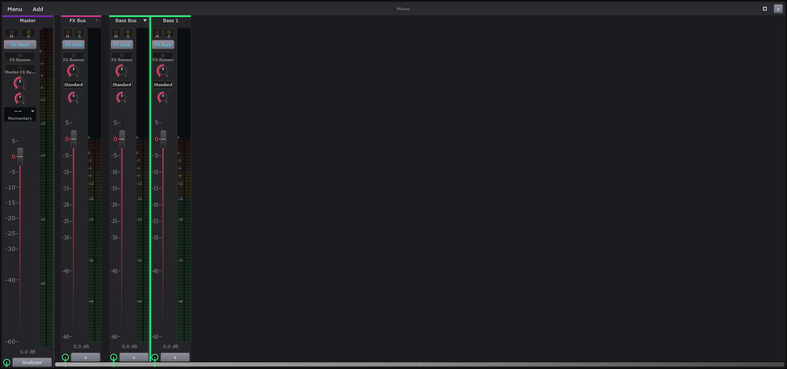
| # | On screen |
|---|---|
Add - new bus or channel | |
Strip header - the channel name, with the strip accent colour as a top rule. Master, FX Bus, Bass Bus, Bass 1 here | |
| Bus collapse triangle - Bus strips only; collapses / expands that bus's channel strips, greyed when the bus has no members | |
M - strip mute. Every strip has one | |
S - strip solo. Every strip has one | |
FX Rack - opens that channel six-slot rack. Every strip has one | |
FX Bypass - bypasses the whole rack for that strip | |
Master FX By... - Master only, bypasses the master rack | |
| Pan knob - every strip has one | |
| Width knob - every strip has one | |
Polarity toggle - Standard / Reverse, click to invert. Pan law lives in the window Menu (see Mixer Menu) | |
Master metering-mode dropdown - Integrated / Momentary and the rest | |
| Channel fader - every strip has one | |
| Fader scale, dB | |
| Strip meter - post fader, pan and width. Split layout on every strip but Master: peak bars below, a scrolling RMS-history band above | |
Gain readout - 0.0 dB | |
+ - add a send on that strip | |
Analyzer - opens the Master Analyzer, see Master Analyzer |
Controls
| Control | What it does | Default | Range |
|---|---|---|---|
| Pan | Places the strip left or right. | 0 | -1 to 1 |
| Mixer Master Fader | Sets the strip's level. | 0 | -60 to 5.6 |
| Mixer Bass Fader | Sets the strip's level. | 0 | -60 to 5.6 |
| Mixer Fx Fader | Sets the strip's level. | 0 | -60 to 5.6 |
| Mixer Bass 0 Fader | Sets the strip's level. | 0 | -60 to 5.6 |
| Width | Narrows or widens the strip's stereo image. | 1 | 0 to 2 |
| Mute | Silences the strip. | Off | on / off |
The Mixer is where everything meets: every tab and bus in the project as a vertical strip, the Master pinned at the left, and the routing between them drawn as actual cables underneath. Every strip has the same anatomy.
Add creates a new strip - an aux (a free strip for shared effects) or one of the group buses. The strip header names the channel, with its accent color as the top rule - the same color its tab and windows carry, so you can find a channel by color alone. On Bus strips, the collapse triangle folds that bus's member channels away to save space (greyed while the bus is empty).
M mutes the strip - silences it. S solos it - silences everything ELSE, the fastest way to hear one channel alone. Both are per-strip and stackable: solo two strips and you hear just those two.
FX Rack opens this channel's six-slot effects rack, and FX Bypass switches the whole rack out while keeping every slot's settings, for a before/after comparison. The Master strip has its own Master FX Bypass for the master rack.
Pan places the strip left-to-right in the stereo picture. Width narrows or widens its stereo image - fully narrow collapses it to mono (which is how you check whether a sound survives on a phone speaker), wide pushes it beyond natural.
The polarity toggle (Standard /
Reverse) flips the waveform upside down. Alone it is
inaudible. It matters when two related signals play together and hollow
each other out - flip one, and if the sound suddenly fills back in, you
found the problem. (Pan law - how loudness behaves across a pan sweep -
is a global choice in the window Menu, not a strip control.)
The Master's metering dropdown picks what the
master meter reads - Integrated, Momentary and
the rest of the loudness family covered on the Analyzer's page.
The fader is the channel's level - the mixing control - riding a dB scale where 0 is "as recorded," positive is louder, and every 6 dB down is roughly half. The meter beside it reads what actually leaves the strip: peak bars below for the instantaneous level, and - on every strip but Master - a scrolling history band above showing the last few seconds' shape, so a spike that already happened is still visible. The readout prints the fader's exact dB.
The jack at each strip's foot is where routing
cables land - a marker, not a button.
The + beside it opens that
strip's routing menu - sends, sidechains, outputs - covered on the Send
Menu page. (On Master, the + opens
the Analyzer instead.)
The cables draw every route in the project; the
bright one is selected. Right-click a
cable to edit it in place: a send cable gets its level slider (-60 to
+6 dB), a Pre-Fader switch (send the sound before the fader,
so the echo stays when you pull the voice down) and
Delete Send; sidechain cables offer Delete;
an extra main-out offers Remove Main Out.
The scrollbar slides through the strips; Master stays pinned left so the end of the chain never leaves view.
How this works: Effect racks, LUFS metering, Sends, main-out routing and sidechain edges.
Routing graph and the mixer strip pattern
The class is BaySickGraph. (The processor's member is still named
mVibeGraph from an earlier name for the app — the member name
is not the subsystem name.)
Every strip runs the same chain, in this order:
| # | Stage |
|---|---|
| 1 | Input |
| 2 | Pre EQ |
| 3 | The six-slot rack |
| 4 | Post EQ |
| 5 | Fader, pan and width |
That is why the Pre EQ cleans up before anything else processes it and the Post EQ shapes the finished result — and why the strip meter, which is tapped after stage 5, shows what you actually hear rather than what came in.
Peak meters are latency-compensated: each node writes its block peak into a 16-entry ring and reads back at a compensation offset, so meters on strips with different plugin delays still line up with each other.
// BaySickGraph.h -- MixerChannelIds: the channel-id registry (verbatim, abridged to ids)
namespace MixerChannelIds
{
constexpr int kOutput = 0; // Terminal sink - only Master routes here
constexpr int kLayersBus = 1;
constexpr int kBassBus = 2;
constexpr int kDrumsBus = 3;
constexpr int kMaster = 4;
constexpr int kFxBus = 5;
constexpr int kClipsBus = 6;
constexpr int kVoxBus = 7; // R1 (2026-04-23): live-vocal strip bus
constexpr int kInstBus = 8; // R1: live-instrument strip bus
constexpr int kVoxBus2 = 9; // G-6: optional 2nd Vox bus
constexpr int kInstBus2 = 10; // G-6: optional 2nd Inst bus
constexpr int kInstBus3 = 11; // G-6: optional 3rd Inst bus
constexpr int kRustyDrumsBus = 12; // J-4 (2026-05-03): dedicated bus for BaySickRustyDrums strips
constexpr int kPluginsBus = 13;
constexpr int kLayersBus2 = 14;
constexpr int kBassBus2 = 15;
constexpr int kClipsBus2 = 16;
constexpr int kPluginsBus2 = 17;
constexpr int kDrumsBus2 = 18;
constexpr int kAuxBase = 100; // Aux 0..17 → 100..117 (G-7 polish: 16 → 18)
constexpr int kLayerBase = 200; // Layer insert 0..19 → 200..219
constexpr int kBassBase = 300; // Bass insert 0..9 → 300..309
constexpr int kAudioBase = 400; // Audio insert 0..99 → 400..499 (ends flush at kDrumBase)
constexpr int kDrumBase = 500; // Drum insert 0..31 → 500..531
constexpr int kVoxBase = 600; // R1: Vox insert 0..9 → 600..609
constexpr int kInstBase = 700; // R1: Inst insert 0..29 → 700..729
constexpr int kRustyBase = 800; // J-4: BaySickRustyDrums insert 0..12 → 800..812
constexpr int kPluginBase = 900; // TS6: hosted VST3 instrument insert 0..19 → 900..919Full function — Source\BaySickGraph.cpp (BaySickGraph::rebuildRoutingFromApvts, lines 3217-3255; RoutingGraph::rebuildFromApvts, lines 2682-2787)
// Source/BaySickGraph.cpp - BaySickGraph::rebuildRoutingFromApvts (complete)
void BaySickGraph::rebuildRoutingFromApvts()
{
if (mApvts == nullptr) return;
// Truncate to the fixed bus half instead of clearing: those entries are
// constant for the process lifetime, and re-composing their prefixes would
// put one juce::String allocation per bus per block on the audio thread. ChId is
// already known on the node, so the per-kind chId helpers (layerInsert /
// bassInsert / ...) aren't needed below -- node->chId is the source of truth.
mActiveChannels.resize(mFixedBusChannelCount);
// QA-InsertMaps (2026-05-24): single sweep over mLiveInsertChannels
// replaces 8 per-kind emplace_back blocks (Layer / Bass / Drum / Audio /
// Aux / Vox / Inst / Rusty -- see commit history for each block's
// historical comment context). All 8 InsertKinds register their
// _sendTo / _sendN_to APVTS values into the routing graph through this
// unified pass; Vox / Inst / Rusty inclusion is preserved (was added
// R1 + J-5 with their own comment blocks; consolidated here).
for (int chId : mLiveInsertChannels)
if (auto* n = mInsertsByChannel[(size_t) chId].get())
mActiveChannels.emplace_back(chId, n->apvtsPrefix);
mRoutingGraph.rebuildFromApvts(*mApvts, mActiveChannels);
// C.4 Phase 1 (2026-04-30): pre-allocate SC receive buffers for every
// (dst, slot) pair the routing graph references this block. Pulls
// allocation off the audio thread; the audio loop's getScRecvBuffer
// calls then hit existing buffers and just .clear() them.
for (const auto& sce : mRoutingGraph.scEdges())
getScRecvBuffer(sce.dstId, sce.dstSlot);
// QA-Fe2 SC delay-match: re-flag SC-edge source nodes from the fresh
// edge list so their process stashes the pre-compensation key tap.
armScSourceTaps();
// Same shape for the pre-fader send tap: re-flag its sources from the fresh
// edge list, and clear each armed tap before any strip runs this block.
armPreFaderTaps();
}
// Source/BaySickGraph.cpp - RoutingGraph::rebuildFromApvts (complete)
bool RoutingGraph::rebuildFromApvts(juce::AudioProcessorValueTreeState& apvts,
const std::vector<std::pair<int, juce::String>>& activeChannels)
{
mEdges.clear();
mEdges.reserve(activeChannels.size() * (kMaxMainOutsPerStrip + kMaxSendsPerStrip));
mScEdges.clear();
mScEdges.reserve(activeChannels.size() * kMaxScRecvsPerStrip);
auto loadInt = [&](const juce::String& id, int fallback)
{
if (auto* p = apvts.getRawParameterValue(id)) return (int) p->load();
return fallback;
};
auto loadFloat = [&](const juce::String& id, float fallback)
{
if (auto* p = apvts.getRawParameterValue(id)) return p->load();
return fallback;
};
auto loadBool = [&](const juce::String& id, bool fallback)
{
if (auto* p = apvts.getRawParameterValue(id)) return p->load() > 0.5f;
return fallback;
};
for (const auto& [chId, prefix] : activeChannels)
{
// Compose this channel's ids only when they are missing or its prefix
// changed; steady state is a map lookup plus a string compare.
auto& pid = mChannelParamIds[chId];
if (pid.prefix != prefix)
{
pid.prefix = prefix;
for (int m = 0; m < kMaxMainOutsPerStrip; ++m)
pid.mainOutTo[(size_t) m] = MixerChannelIds::mainOutParamId (prefix, m);
for (int s = 0; s < kMaxSendsPerStrip; ++s)
{
const juce::String sp = prefix + "_send" + juce::String(s);
pid.sendTo [(size_t) s] = sp + "_to";
pid.sendAmount [(size_t) s] = sp + "_amount";
pid.sendPrePost[(size_t) s] = sp + "_prepost";
}
for (int s = 0; s < kMaxScRecvsPerStrip; ++s)
pid.scFrom[(size_t) s] = prefix + "_sc_recv" + juce::String(s) + "_from";
}
// Main-out lines. Line 0 falls back to the natural parent (a strip
// always has one main out); lines 1..3 fall back to -1 = inactive, which
// is also what a project saved before they existed resolves to.
// Duplicate destinations across two lines of the SAME strip are dropped
// here as well as refused by the UI: two edges src -> dst would sum that
// strip into the destination twice, i.e. +6 dB, not a second route.
int mainDsts[kMaxMainOutsPerStrip] = {};
int numMainDsts = 0;
for (int m = 0; m < kMaxMainOutsPerStrip; ++m)
{
const int fallback = (m == 0) ? MixerChannelIds::defaultSendTo(chId) : -1;
const int dst = loadInt(pid.mainOutTo[(size_t) m], fallback);
if (dst < 0 || dst == chId) continue;
bool dup = false;
for (int k = 0; k < numMainDsts; ++k)
if (mainDsts[k] == dst) { dup = true; break; }
if (dup) continue;
mainDsts[numMainDsts++] = dst;
Edge e; e.srcId = chId; e.dstId = dst;
e.amountDb = 0.f; e.prePost = false; e.isMainOut = true;
mEdges.push_back(e);
}
for (int s = 0; s < kMaxSendsPerStrip; ++s)
{
const int dst = loadInt(pid.sendTo[(size_t) s], -1);
if (dst < 0 || dst == chId) continue;
Edge e; e.srcId = chId; e.dstId = dst;
e.amountDb = loadFloat(pid.sendAmount [(size_t) s], 0.f);
e.prePost = loadBool (pid.sendPrePost[(size_t) s], false);
e.isMainOut = false;
mEdges.push_back(e);
}
// C.4 Phase 1 (2026-04-30): SC receive lines. Each strip reads up
// to 4 _sc_recv{N}_from params (channel id of the source, -1 = empty).
// Build SC edges as src -> this strip on receive line N.
for (int s = 0; s < kMaxScRecvsPerStrip; ++s)
{
const int src = loadInt(pid.scFrom[(size_t) s], -1);
if (src < 0 || src == chId) continue;
ScEdge e; e.srcId = src; e.dstId = chId; e.dstSlot = s;
mScEdges.push_back(e);
}
}
mTopoIds.clear();
mTopoIds.reserve(activeChannels.size());
for (const auto& [chId, _] : activeChannels) mTopoIds.push_back(chId);
const bool topoOk = computeTopo(mTopoIds);
// AFTER computeTopo: a cycle makes it erase edges from mEdges, and an edge
// that no longer exists must not keep a tap armed for a consumer that will
// never pull it.
mHasPreFaderSend = false;
for (const auto& e : mEdges)
if (e.prePost && ! e.isMainOut) { mHasPreFaderSend = true; break; }
return topoOk;
}- Channel-id ranges (MixerChannelIds): buses 0-18 (kOutput=0, kLayersBus=1, kBassBus=2, kDrumsBus=3, kMaster=4, kFxBus=5, kClipsBus=6, kVoxBus=7, kInstBus=8, kVoxBus2=9, kInstBus2=10, kInstBus3=11, kRustyDrumsBus=12, kPluginsBus=13, kLayersBus2=14, kBassBus2=15, kClipsBus2=16, kPluginsBus2=17, kDrumsBus2=18); Aux 100-117; Layer inserts 200+; Bass 300+; Audio 400-499 (ends flush at kDrumBase); Drum 500-531; Vox 600+; Inst 700+; Rusty 800-812; Plugin 900+. - Strip caps DERIVE from page caps in BaySickConstants.h (`kMaxLayerStrips = kMaxLayerPages` etc.) — one page of a kind owns exactly one insert strip; a one-sided raise silently leaves extra pages with no strip/EQ/routing. Non-page caps: `kMaxAuxStrips = 18`, `kMaxRustyStrips = 13`. - Drum-kit split: `kDrumPagesPerBank = 16`; pages 0..15 = kit 1 -> kDrumsBus, 16..31 = kit 2 -> kDrumsBus2; `drumBankForPage` / `drumBusForPage` are the ONE expression of the split. - APVTS prefix mapping is total over live ids via `prefixFromChannelId` (e.g. 200 -> "mixer_layer_0"); an id outside all ranges returns empty = no strip. - `rebuildRoutingFromApvts` runs on the AUDIO THREAD at block rate (called at the top of every processBlock, PluginProcessor.cpp:3504). It truncates `mActiveChannels` to `mFixedBusChannelCount` (bus entries are constant per process lifetime — avoids per-bus String allocation per block), then appends every live insert from `mLiveInsertChannels` + `mInsertsByChannel` (the flat array + companion live-list is the QA-InsertMaps unified pattern replacing 8 per-kind blocks). - After rebuild: SC receive buffers pre-allocated per (dstId, dstSlot) edge (allocation pulled off the steady-state audio path), then `armScSourceTaps()` + `armPreFaderTaps()` re-flag source nodes from the FRESH edge list. - Mixer strip pattern audit checklist (~15 sites): `rebuildRoutingFromApvts`'s mActiveChannels is the critical one — a new strip kind missing here has no routing entry at all. - `isMainOutLocked(chId)` = Master, all buses, and Rusty inserts (800-812): their main-out cannot be rerouted. `isValidBusSendTarget(dst)` — buses/master may only send to Aux strips (100..117). - `defaultSendTo`: Master -> kOutput; every bus -> kMaster (FxBus included); Layer inserts -> kLayersBus; Bass -> kBassBus; Drum -> `drumBusForPage`; Audio -> kClipsBus; Aux -> kFxBus; Vox -> kVoxBus; Inst -> kInstBus; Rusty -> kRustyDrumsBus; Plugin -> kPluginsBus; unknown -> kMaster. - `anyBusSoloed()` reads BUS `_solo` only (O(11) cached-atomic loads); MUST NEVER call `isAnyInsertSoloed()` — the prior bug muted whole buses when one strip soloed (§9 nineteenth Forks guardrail). - Meter latency compensation: `MeterLatencyComp::kRingSize = 16` blocks max (`kRingMask = kRingSize - 1`), gCompensationBlocks atomic read per block, 0 = off.
Behind: Mixer slot, Add, Strip header, Bus collapse triangle, M, S, Pan knob, Width knob, Polarity toggle, Channel fader, Fader scale, dB, Gain readout, Pan Law submenu.
Mixer Menu
Part of Mixer
The Mixer window menu.

| # | On screen |
|---|---|
Pan Law submenu - Ramped / Flat, hover tooltips | |
Master Output submenu | |
Latency-compensate meters | |
Multi-core Rendering - tick when on |
The Mixer window's menu - the mixer's global settings.
Pan Law - how a pan knob sweeps, for the whole
project: every pan knob in the app follows it, on strips, buses, the master,
the engine pan knobs, per-note pan and timeline clips. Ramped
(the default) keeps a sound at its level at center and lets it rise by up to
3 dB as it moves toward one side, so it feels equally loud anywhere in the
field. Flat holds the side you pan toward at its level while the
other side fades, so a sound is loudest at center and about 3 dB quieter at
the sides. Neither changes a sound that sits at center. Hover a row for its
tooltip. On mixer strips, buses and the master the far side folds into the
near side as you pan, so a 100% pan is the mono sum of both sides in one
channel.
Master Output - where the master lands on your audio device.
Latency-compensate meters - shifts the meters to read in time with what you HEAR rather than what is being processed, so meter bounces line up with the beat.
Multi-core Rendering - spreads the mixer's processing across CPU cores; ticked when on. Leave it on unless you are diagnosing a specific performance problem.
Mixer Add
Part of Mixer
The Mixer Add menu.

| # | On screen |
|---|---|
Aux Strip - adds a free aux strip | |
Vox Bus through Plugins Bus - the six group buses; each adds that bus strip |
The Mixer's Add menu - new strips.
Aux Strip. A free strip with no channel of its own - the destination for sends. The typical pattern: one reverb on an aux, with every vocal sending to it.
The group buses - Vox Bus through
Plugins Bus, one per tab family. Adding one gives that whole
family a shared strip: every Vox tab's channel flows through the Vox Bus,
so one fader rides all the vocals and one rack processes them together.
Mixer Strip
Part of Mixer
Two strips side by side: an engine strip (Bass 1) and a live-input strip (Vox 1). The engine strip's anatomy is the Mixer figure's rows (see Mixer); the live-input extras are numbered here.

| # | On screen |
|---|---|
A arm LED - red while armed. The tooltip names the assigned input channel; right-click opens the input picker (Vocal Input / LiveInst Input channel list, No channels available when the device has none, Vox adds Builder Grid Default routes Dry / Dry Cleaned / Wet / Wet Cleaned, and Disarm while armed) | |
Headphones Listen LED - hear this input through the bus and master. Right-click picks the monitor mode: Vox True Dry / Bypass Pitch Corrector / With Effect; Inst Dry / With Effect | |
| Split meter - peak bars below, scrolling RMS history above (every strip but Master) |
Controls
| Control | What it does | Default | Range |
|---|---|---|---|
| Pan | Places the strip left or right. | 0 | -1 to 1 |
| Mixer Master Fader | Sets the strip's level. | 0 | -60 to 5.6 |
| Mixer Bass Fader | Sets the strip's level. | 0 | -60 to 5.6 |
| Mixer Fx Fader | Sets the strip's level. | 0 | -60 to 5.6 |
| Mixer Voxbus Fader | Sets the strip's level. | 0 | -60 to 5.6 |
| Mixer Instbus Fader | Sets the strip's level. | 0 | -60 to 5.6 |
| Mixer Bass 0 Fader | Sets the strip's level. | 0 | -60 to 5.6 |
| Mixer Vox 0 Fader | Sets the strip's level. | 0 | -60 to 5.6 |
| Mixer Inst 0 Fader | Sets the strip's level. | 0 | -60 to 5.6 |
Two strips side by side: an engine strip (Bass 1) and a
live-input strip (Vox 1). Everything the engine strip carries
is taught on the Mixer page. What is numbered here is the row of controls
only LIVE inputs have - the strips that record a microphone or an
instrument plugged into your interface.
The A arm LED. "Armed" means ready to record -
red means this strip will capture when recording starts. Its tooltip
names the input channel it is listening to, and right-clicking it
picks that input: your audio device's channels listed mono and stereo
(No channels available when the device offers none), plus -
on Vox strips - the Builder Grid Default routes
(Dry / Dry Cleaned / Wet /
Wet Cleaned, deciding which version of a take the Builder
receives) and Disarm while armed.
The headphones LED is monitoring - hearing
yourself through the mix while you perform. Click to listen;
right-click picks WHAT you hear: on a Vox strip
True Dry (just your voice), Bypass Pitch
Corrector (effects but no tuning - most singers' choice, because
performing against your own corrected voice is disorienting), or
With Effect (everything); on an Inst strip Dry
/ With Effect.
The split meter - peak bars below, the scrolling level-history band above - on every strip but Master.
On the sampled-instrument strips (BaySickGuitars / BaySickBasses) both LEDs disappear: those tabs are not live inputs, so their strips read like engine strips.
How this works: Routing graph and the mixer strip pattern, LUFS metering.
Mixer Send Menu
Part of Mixer
Reached from a strip's + button - the jack itself is a painted indicator, not a control. On Master the + opens the Analyzer instead, and main-out-locked strips omit the routing rows entirely.

| # | On screen |
|---|---|
Send... submenu - pick a destination AUX strip, or New Aux Strip to make one | |
Sidechain... submenu - feed this strip signal to another strip sidechain receive line | |
Move Output... submenu - change where the strip main output lands | |
Add Main Out... submenu - a strip may feed more than one main output | |
Remove Main Out... submenu |
The routing menu, opened from a strip's + button. This is
where signal leaves the normal path: sends, sidechains, and where the strip's
output actually lands. On Master the + opens the Analyzer
instead, and strips whose output is locked omit the output rows
entirely.
Send... - taps a copy of the strip to an AUX strip
(the shared-reverb workflow: one reverb on an aux, many strips sending to
it). New Aux Strip inside creates the destination on the
spot.
Sidechain... - feeds this strip's signal to another strip's sidechain receive, so a compressor over there can duck to this strip. The kick-ducks-the-bass move starts here, on the kick's strip.
Move Output... - re-aims the strip's main output at a
different destination; Add Main Out...
lets a strip feed MORE than one destination at once, and
Remove Main Out... takes an extra one away
- its list always shows line 0 greyed as
<dest> (main output), because the primary output is
moved, never removed.
How this works: Engine sidechain helper and the four receive lines per strip.
Sends, main-out routing and sidechain edges
A send copies a strip's signal to a bus while the strip keeps playing where it was. A move-output relocates it. A strip may feed several main outputs at once. The cables drawn on the Mixer are the real graph, not decoration.
// BaySickGraph.h -- RoutingGraph edge model (verbatim, lines 297-322)
struct Edge
{
int srcId;
int dstId;
float amountDb;
bool prePost; // true = pre-fader tap from src
// true = main-out cable. A src may have up to kMaxMainOutsPerStrip of
// these, each to a DIFFERENT dst (duplicates are refused); every one
// carries a full-level copy, the level is not split between them.
bool isMainOut;
};
// C.4 Phase 1 (2026-04-30): sidechain edge. Source's post-everything
// tap feeds dst's SC receive line `dstSlot` (0..3). Cycle check covers
// SC + main + send edges combined (a strip mustn't sidechain itself
// through any path that loops back).
struct ScEdge
{
int srcId;
int dstId;
int dstSlot; // 0..3, the receive line index on dst
};
static constexpr int kMaxSendsPerStrip = 4;
static constexpr int kMaxScRecvsPerStrip = 4;
static constexpr int kMaxMainOutsPerStrip = MixerChannelIds::kMaxMainOutsPerStrip;Full function — Source\BaySickGraph.h (Edge/ScEdge structs, main-out line rules, pre-fader tap contract)
// Source/BaySickGraph.cpp - RoutingGraph::rebuildFromApvts (complete)
bool RoutingGraph::rebuildFromApvts(juce::AudioProcessorValueTreeState& apvts,
const std::vector<std::pair<int, juce::String>>& activeChannels)
{
mEdges.clear();
mEdges.reserve(activeChannels.size() * (kMaxMainOutsPerStrip + kMaxSendsPerStrip));
mScEdges.clear();
mScEdges.reserve(activeChannels.size() * kMaxScRecvsPerStrip);
auto loadInt = [&](const juce::String& id, int fallback)
{
if (auto* p = apvts.getRawParameterValue(id)) return (int) p->load();
return fallback;
};
auto loadFloat = [&](const juce::String& id, float fallback)
{
if (auto* p = apvts.getRawParameterValue(id)) return p->load();
return fallback;
};
auto loadBool = [&](const juce::String& id, bool fallback)
{
if (auto* p = apvts.getRawParameterValue(id)) return p->load() > 0.5f;
return fallback;
};
for (const auto& [chId, prefix] : activeChannels)
{
// Compose this channel's ids only when they are missing or its prefix
// changed; steady state is a map lookup plus a string compare.
auto& pid = mChannelParamIds[chId];
if (pid.prefix != prefix)
{
pid.prefix = prefix;
for (int m = 0; m < kMaxMainOutsPerStrip; ++m)
pid.mainOutTo[(size_t) m] = MixerChannelIds::mainOutParamId (prefix, m);
for (int s = 0; s < kMaxSendsPerStrip; ++s)
{
const juce::String sp = prefix + "_send" + juce::String(s);
pid.sendTo [(size_t) s] = sp + "_to";
pid.sendAmount [(size_t) s] = sp + "_amount";
pid.sendPrePost[(size_t) s] = sp + "_prepost";
}
for (int s = 0; s < kMaxScRecvsPerStrip; ++s)
pid.scFrom[(size_t) s] = prefix + "_sc_recv" + juce::String(s) + "_from";
}
// Main-out lines. Line 0 falls back to the natural parent (a strip
// always has one main out); lines 1..3 fall back to -1 = inactive, which
// is also what a project saved before they existed resolves to.
// Duplicate destinations across two lines of the SAME strip are dropped
// here as well as refused by the UI: two edges src -> dst would sum that
// strip into the destination twice, i.e. +6 dB, not a second route.
int mainDsts[kMaxMainOutsPerStrip] = {};
int numMainDsts = 0;
for (int m = 0; m < kMaxMainOutsPerStrip; ++m)
{
const int fallback = (m == 0) ? MixerChannelIds::defaultSendTo(chId) : -1;
const int dst = loadInt(pid.mainOutTo[(size_t) m], fallback);
if (dst < 0 || dst == chId) continue;
bool dup = false;
for (int k = 0; k < numMainDsts; ++k)
if (mainDsts[k] == dst) { dup = true; break; }
if (dup) continue;
mainDsts[numMainDsts++] = dst;
Edge e; e.srcId = chId; e.dstId = dst;
e.amountDb = 0.f; e.prePost = false; e.isMainOut = true;
mEdges.push_back(e);
}
for (int s = 0; s < kMaxSendsPerStrip; ++s)
{
const int dst = loadInt(pid.sendTo[(size_t) s], -1);
if (dst < 0 || dst == chId) continue;
Edge e; e.srcId = chId; e.dstId = dst;
e.amountDb = loadFloat(pid.sendAmount [(size_t) s], 0.f);
e.prePost = loadBool (pid.sendPrePost[(size_t) s], false);
e.isMainOut = false;
mEdges.push_back(e);
}
// C.4 Phase 1 (2026-04-30): SC receive lines. Each strip reads up
// to 4 _sc_recv{N}_from params (channel id of the source, -1 = empty).
// Build SC edges as src -> this strip on receive line N.
for (int s = 0; s < kMaxScRecvsPerStrip; ++s)
{
const int src = loadInt(pid.scFrom[(size_t) s], -1);
if (src < 0 || src == chId) continue;
ScEdge e; e.srcId = src; e.dstId = chId; e.dstSlot = s;
mScEdges.push_back(e);
}
}
mTopoIds.clear();
mTopoIds.reserve(activeChannels.size());
for (const auto& [chId, _] : activeChannels) mTopoIds.push_back(chId);
const bool topoOk = computeTopo(mTopoIds);
// AFTER computeTopo: a cycle makes it erase edges from mEdges, and an edge
// that no longer exists must not keep a tap armed for a consumer that will
// never pull it.
mHasPreFaderSend = false;
for (const auto& e : mEdges)
if (e.prePost && ! e.isMainOut) { mHasPreFaderSend = true; break; }
return topoOk;
}
// Source/BaySickGraph.cpp - RoutingGraph::wouldCreateCycle (complete)
bool RoutingGraph::wouldCreateCycle(int src, int dst) const noexcept
{
// DFS from dst: if we can reach src from dst via existing edges,
// adding src → dst would complete a cycle.
// C.4 Phase 1 (2026-04-30): SC edges participate in the same DAG, so
// a sidechain cable can't sneak past the cycle check via an audio path.
std::unordered_set<int> visited;
std::vector<int> stack { dst };
while (! stack.empty())
{
int node = stack.back();
stack.pop_back();
if (node == src) return true;
if (! visited.insert(node).second) continue;
for (const auto& e : mEdges)
if (e.srcId == node)
stack.push_back(e.dstId);
for (const auto& e : mScEdges)
if (e.srcId == node)
stack.push_back(e.dstId);
}
return false;
}- Per-strip limits: `kMaxMainOutsPerStrip = 4`, `kMaxSendsPerStrip = 4`, `kMaxScRecvsPerStrip = 4` (main-out count deliberately matches the send-slot count).
- APVTS parameter id grammar (composed once per (chId, prefix) and cached — juce::String has no SSO, ~33 heap allocs/channel/block without the cache): main-out line 0 = `<prefix>_sendTo` (historical 0..999 range, natural-parent default); lines 1..3 = `<prefix>_mainOut{N}_to` (-1 = inactive, additive persistence — absent in old projects); sends = `<prefix>_send{N}_to` / `_send{N}_amount` / `_send{N}_prepost`; sidechain = `<prefix>_sc_recv{N}_from` (-1 = empty, value is the SOURCE channel id, slot N is the receive line 0..3 on the destination).
- Main-out edges: `amountDb = 0` (full-level copy, level is NOT split across lines); duplicate destinations across two lines of one strip are dropped here AND refused by the UI (two src->dst edges would sum +6 dB); self-edge (dst == chId) skipped.
- Send edges: `amountDb` from `_send{N}_amount`, `prePost` from `_send{N}_prepost`. prePost == true reads the PRE-FADER TAP (before fader gain, before the combined mute+solo gate; pre-pan for free since pan sits after that gain); prePost == false reads the source's mOutputBuffer.
- SC edges: source's POST-EVERYTHING tap feeds dst's SC receive buffer at slot 0..3, except armed delay-match sources which stash a PRE-COMPENSATION key tap (`getScSourceTap`); `applyScRecvDelay` applies the per-(consumer, slot) key-alignment delay solved on the message thread by `updateBusLatencies`.
- Cycle handling: Kahn's topological sort over main + send + SC edges COMBINED (one DAG — a sidechain cable cannot sneak past the check via an audio path). On a cycle: all edges between unresolved nodes are erased and topo retried; `rebuildFromApvts` returns false. Pre-flight `wouldCreateCycle(src,dst)` (message thread DFS from dst) gates the cable drop before it commits.
- `mHasPreFaderSend` is recomputed AFTER computeTopo — an edge dropped as a cycle must not leave a tap armed for a consumer that will never pull it.
- Ordering guarantee: an SC or send edge adds "src processes before dst" to the topo constraints — the same acquire on the dependency counter that publishes mOutputBuffer publishes the pre-fader tap.
- Bus/master sends are restricted to Aux strips only (`isValidBusSendTarget`: dst in [kAuxBase, kAuxBase + kMaxAuxStrips)).
Behind: +, Send... submenu, Move Output... submenu, Add Main Out... submenu, Remove Main Out... submenu, Master Output submenu, Vox Bus through Plugins Bus.
Master Analyzer
Part of Mixer · Related: Master Analyzer Menu
The Master Analyzer. Loudness measurement on the master output, plus captured takes. Opened from the Mixer, see Analyzer.
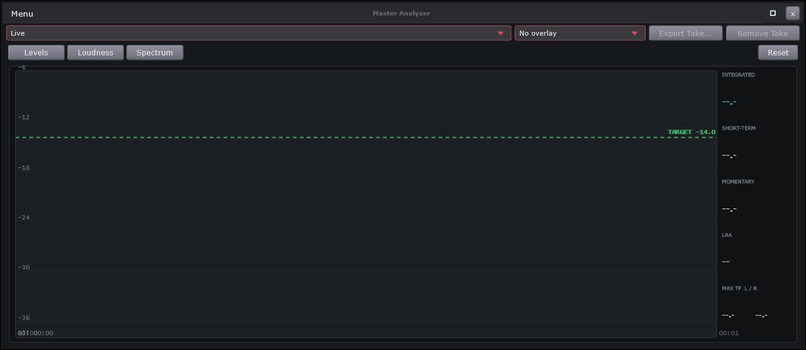
| # | On screen |
|---|---|
Source picker - Live, or one of the captured takes ((report) marks a take loaded from a report) | |
vs ... - overlay a second take on the Loudness view for A/B | |
Export Take... - writes the selected take as its own report (plus its audio when captured). Greyed on Live | |
Remove Take - drops the selected take from the list and from its session report | |
View bar - Levels / Loudness / Spectrum, the current one lit; Tilt and 1/3 oct appear on Spectrum; Reset clears everything that accumulates | |
Levels view - big INTEGRATED graded against the target (green within 1 LU, amber within 3, red beyond) with the offset in LU; M and S bars centered on the target; TRUE PEAK per channel with the ceiling marked and the running max, the count of moments over the ceiling, PLR / PSR; CORR filling right for correlated, left (red) for out-of-phase | |
| Loudness view - short-term as a filled area, momentary as a line, the dashed green target, the loudness-range band shaded amber; wheel zooms, drag pans, double-click shows the whole history, hover reads time / S / M. Side cells INTEGRATED, SHORT-TERM, MOMENTARY, LRA, MAX TP L / R | |
| Spectrum view - log-frequency, per-column averaged trace over a grey peak hold, MAX TP L / R in the corner, dBFS bars at the side | |
Tilt - 0, 3 or 4.5 dB per octave slope (pink noise reads flat at 3) | |
1/3 oct - third-octave bars instead of the line |
The Master Analyzer measures how loud your song really is - not how loud it feels in your room, but the number streaming services measure it by. That number is called LUFS (loudness units relative to full scale): a scale built to match human hearing, where a typical streaming target is around -14.
The source picker chooses what is measured:
Live - whatever is playing right now - or a captured
take, a stored measurement pass you can inspect afterwards. Every
playback pass becomes a take on its own. Takes with no audio in them show a
(no audio) suffix; takes opened from a report show
(report). vs ... lays a second
take over the Loudness view so two passes can be compared on one graph.
Export Take... writes the selected take as
its own report file (with its audio alongside when the take was captured
with audio), and Remove Take drops the take
from the list and from the session report it was saved in.
Levels / Loudness / Spectrum are the window's three faces - how loud it is right now is a number, whether it stayed there is a line over time, what it is made of is a spectrum - and Reset clears everything that accumulates: integrated loudness, the history, both true-peak maxima, the over-ceiling count and the spectrum's peak hold.
Levels is the number view. The big INTEGRATED reading is the whole program measured start to finish - THE number streaming platforms judge - colored against your target: green within 1 LU, amber within 3, red beyond, with the offset in LU under it. M (momentary, the last 0.4 seconds) and S (short-term, the last 3 seconds) are bars centered on the target, so "on target" is the middle of the bar. TRUE PEAK shows each channel separately with the ceiling marked and the running maximum beside it, counts the moments that went over the ceiling, and reads out PLR and PSR (peak minus integrated, peak minus short-term - how much headroom the dynamics are using). CORR fills to the right for left/right that agree and to the left, in red, for content that cancels when someone plays the mix in mono.
Loudness graphs loudness over time: short-term loudness
as a filled area with the momentary line over it, a dashed green target
line, the loudness-range band shaded amber (the span between the song's
quiet and loud parts), and a time axis. The history is the whole
session or the whole take: the mouse wheel zooms, dragging pans,
double-click shows everything, and hovering reads the time and the S / M
values under the pointer. The side cells carry INTEGRATED,
SHORT-TERM, MOMENTARY, LRA and MAX TP L / R.
While a take is selected an orange TAKE: caption sits
in the corner so a stored measurement can never be mistaken for the live
one.
Spectrum is energy across the frequency range on a log grid: a filled cyan averaged trace under a grey peak-hold trace, MAX TP L / R in the corner and two dBFS level bars at the side. Loudness tells you how much; spectrum tells you WHERE - too much low end and a dull top show up here. Tilt slopes the display by 0, 3 or 4.5 dB per octave (at 3, pink noise reads flat, which is how most finished mixes are judged), and 1/3 oct shows third-octave bars instead of the line.
The readouts show --.- until there is signal: dashes, not
zeros, because silence measures as nothing. The target and the true-peak
ceiling the views grade against come from the loudness spec picked in the
Menu (the same one the Export Audio dialog uses).
How this works: True offline render and export.
LUFS metering
Loudness as people perceive it, not as a peak meter sees it. Momentary is a 400 ms window, short-term 3 s, integrated the whole programme, and range the spread between the quiet and loud parts.
// LufsMeterDSP::designKWeighting() -- bilinear-from-constants (exact at any fs)
// Stage 1 — high shelf.
{
const double f0 = 1681.9744509555319, G = 3.99984385397, Q = 0.7071752369554193;
const double K = std::tan (juce::MathConstants<double>::pi * f0 / fs);
const double Vh = std::pow (10.0, G / 20.0);
const double Vb = std::pow (Vh, 0.4996667741545416);
const double a0 = 1.0 + K / Q + K * K;
auto* c = mk ((Vh + Vb * K / Q + K * K) / a0,
2.0 * (K * K - Vh) / a0,
(Vh - Vb * K / Q + K * K) / a0,
2.0 * (K * K - 1.0) / a0,
(1.0 - K / Q + K * K) / a0);
mShelfL.coefficients = c; // pointer copy (shared, immutable); state is per-channel
mShelfR.coefficients = c;
}
// Stage 2 — RLB high-pass.
{
const double f0 = 38.13547087613982, Q = 0.5003270373253953;
const double K = std::tan (juce::MathConstants<double>::pi * f0 / fs);
const double a0 = 1.0 + K / Q + K * K;
auto* c = mk (1.0 / a0, -2.0 / a0, 1.0 / a0,
2.0 * (K * K - 1.0) / a0,
(1.0 - K / Q + K * K) / a0);
mHpL.coefficients = c;
mHpR.coefficients = c;
}Full function — - Source\DSP\LufsMeterDSP.cpp (170 lines) + LufsMeterDSP.h (84 lines) - K-weighting, momentary/short-term windows, gated integrated
// Source/DSP/LufsMeterDSP.cpp - LufsMeterDSP::designKWeighting (complete)
// K-weighting filter design — bilinear-from-constants (exact at any fs).
// Analog-prototype constants cross-checked across libebur128 + loudness.py +
// klangfreund. ACCEPTANCE @48k: shelf ~ {b0=1.53512,b1=-2.69170,b2=1.19839,
// a1=-1.69066,a2=0.73248}; RLB ~ {1,-2,1, a1=-1.99005,a2=0.99007}.
// juce::dsp::IIR::Coefficients takes (b0,b1,b2,a0,a1,a2) with the standard
// subtract convention; we pass already-normalized values (a0 = 1).
void LufsMeterDSP::designKWeighting (double fs)
{
auto mk = [] (double b0, double b1, double b2, double a1, double a2)
{
return new juce::dsp::IIR::Coefficients<float> (
(float) b0, (float) b1, (float) b2, 1.0f, (float) a1, (float) a2);
};
// Stage 1 — high shelf.
{
const double f0 = 1681.9744509555319, G = 3.99984385397, Q = 0.7071752369554193;
const double K = std::tan (juce::MathConstants<double>::pi * f0 / fs);
const double Vh = std::pow (10.0, G / 20.0);
const double Vb = std::pow (Vh, 0.4996667741545416);
const double a0 = 1.0 + K / Q + K * K;
auto* c = mk ((Vh + Vb * K / Q + K * K) / a0,
2.0 * (K * K - Vh) / a0,
(Vh - Vb * K / Q + K * K) / a0,
2.0 * (K * K - 1.0) / a0,
(1.0 - K / Q + K * K) / a0);
mShelfL.coefficients = c; // pointer copy (shared, immutable); state is per-channel
mShelfR.coefficients = c;
}
// Stage 2 — RLB high-pass.
{
const double f0 = 38.13547087613982, Q = 0.5003270373253953;
const double K = std::tan (juce::MathConstants<double>::pi * f0 / fs);
const double a0 = 1.0 + K / Q + K * K;
auto* c = mk (1.0 / a0, -2.0 / a0, 1.0 / a0,
2.0 * (K * K - 1.0) / a0,
(1.0 - K / Q + K * K) / a0);
mHpL.coefficients = c;
mHpR.coefficients = c;
}
}
// Source/DSP/LufsMeterDSP.cpp - LufsMeterDSP::process (complete)
void LufsMeterDSP::process (const juce::AudioBuffer<float>& buf)
{
const int n = buf.getNumSamples();
const int nc = buf.getNumChannels();
if (n <= 0 || nc <= 0) return;
const float* L = buf.getReadPointer (0);
const float* R = (nc >= 2) ? buf.getReadPointer (1) : L;
for (int s = 0; s < n; ++s)
{
const float kl = mHpL.processSample (mShelfL.processSample (L[s])); // shelf -> RLB
const float kr = mHpR.processSample (mShelfR.processSample (R[s]));
mCurL += (double) kl * (double) kl;
mCurR += (double) kr * (double) kr;
if (++mSampleInBin >= mSamplesPerBin)
closeBin();
}
}- K-weighting (bilinear-from-constants, exact at any fs; constants cross-checked across libebur128 + loudness.py + klangfreund):
- Stage 1 high shelf: `f0 = 1681.9744509555319` Hz, `G = 3.99984385397` dB, `Q = 0.7071752369554193`; `Vh = 10^(G/20)`, `Vb = Vh^0.4996667741545416`, `K = tan(pi*f0/fs)`.
- Stage 2 RLB high-pass: `f0 = 38.13547087613982` Hz, `Q = 0.5003270373253953`; numerator {1, -2, 1}/a0.
- Acceptance @48k: shelf ~{b0=1.53512, b1=-2.69170, b2=1.19839, a1=-1.69066, a2=0.73248}; RLB ~{1,-2,1, a1=-1.99005, a2=0.99007}. Order: shelf -> RLB per channel.
- LUFS conversion: `lufsFromMs(ms) = -0.691 + 10*log10(ms)` (`kOffset = -0.691` BS.1770 absolute offset); -120 floor.
- Bin geometry: `kBinsPerSec = 20` (50 ms bins, >= 10 Hz EBU hop); `kMomentaryBins = 8` (400 ms); `kShortTermBins = 60` (3 s, also the ring size); `kGateStepBins = 2` (100 ms gating step = 75% overlap of 400 ms blocks). Channel weights `G_L = G_R = 1` (stereo).
- Integrated gating: absolute gate `kAbsGateLufs = -70.0` (blocks dropped at insert); relative gate `kRelGateLu = -10.0` LU below the mean of all absolute-gated blocks, recomputed from the histogram each step (two-pass). Histogram: 0.1 LU bins over -70..+5 LUFS (`kHistBins = 751`), fixed size = alloc-free.
- Momentary/Short-Term: ungated energy mean over the last 8 / 60 bins; published via relaxed atomics; -120 until filled. `resetIntegrated()` on play-from-top/loop leaves M/S running.
- LRA (Tech 3342, `LoudnessRangeAccumulator`): input = stream of Short-Term readings; absolute gate -70 LUFS (discarded at push); relative gate = energy-domain gated mean `+ kRelGateLu` where `kRelGateLu = -20.0` LU (Tech 3342, NOT R128's -10); LRA = `max(0, P95 - P10)` percentile span of surviving readings; same 751-bin 0.1 LU histogram; returns 0 with insufficient material.
- Delivery targets (`LoudnessSpec::get` table): Streaming -14 LUFS +/-1 LU, -1 dBTP; Streaming -16 (Apple/spoken); EBU R128 -23 +/-0.5 LU, -1 dBTP; ATSC A/85 -24 LKFS +/-2 LU, -2 dBTP; BS.1770-4 measure-only. `resolved()` copies short-term ceiling = the integrated target for every spec that checks integrated.
- Violation coalescing (`LoudnessViolation`): consecutive breaches within `kGapSeconds = 0.5` merge into one span; `kMaxRows = 400` cap with explicit truncated flag.
Behind: Master metering-mode dropdown, Strip meter, Analyzer, Output dBFS meter, Slot Vol and its dBFS meter, Source picker, MOM, SHORT, INT, LRA, History graph, scale 0 to -40 LUFS, Target line, View group.
True-peak meter
A BS.1770-4 polyphase meter that finds peaks between samples. Those peaks are real once the signal is converted back to sound, which is why a file that looks safe on a sample meter can still distort on playback.
// TruePeakMeter::pushAndPeak() -- 4-phase interpolated peak per input sample
float TruePeakMeter::pushAndPeak (int ch, float x) noexcept
{
auto& hist = mHist[(size_t) ch];
int& pos = mHistPos[(size_t) ch];
hist[(size_t) pos] = x;
pos = (pos + 1) % kTapsPerPhase;
const auto& b = bank();
float peak = 0.0f;
for (int p = 0; p < kPhases; ++p)
{
float acc = 0.0f;
// Walk history newest-first: index (pos - 1 - k) modulo the ring.
int idx = pos - 1;
for (int k = 0; k < kTapsPerPhase; ++k)
{
if (idx < 0) idx += kTapsPerPhase;
acc += b[(size_t) p][(size_t) k] * hist[(size_t) idx];
--idx;
}
peak = juce::jmax (peak, std::abs (acc));
}
return peak;
}Full function — - Source\DSP\TruePeakMeter.cpp (154 lines)
// Source/DSP/TruePeakMeter.cpp - TruePeakMeter::pushAndPeak (complete)
// Pushes one input sample into the channel's history and returns the largest
// magnitude across the four interpolated phase outputs.
float TruePeakMeter::pushAndPeak (int ch, float x) noexcept
{
auto& hist = mHist[(size_t) ch];
int& pos = mHistPos[(size_t) ch];
hist[(size_t) pos] = x;
pos = (pos + 1) % kTapsPerPhase;
const auto& b = bank();
float peak = 0.0f;
for (int p = 0; p < kPhases; ++p)
{
float acc = 0.0f;
// Walk history newest-first: index (pos - 1 - k) modulo the ring.
int idx = pos - 1;
for (int k = 0; k < kTapsPerPhase; ++k)
{
if (idx < 0) idx += kTapsPerPhase;
acc += b[(size_t) p][(size_t) k] * hist[(size_t) idx];
--idx;
}
peak = juce::jmax (peak, std::abs (acc));
}
return peak;
}
// Source/DSP/TruePeakMeter.cpp - TruePeakMeter::bank (complete)
const TruePeakMeter::Bank& TruePeakMeter::bank()
{
// Built once, on first use, and const thereafter -- so concurrent readers on
// the audio and render threads share it without synchronisation. C++11
// guarantees the initialisation itself is thread-safe.
static const Bank b = []
{
constexpr int kTotalTaps = kPhases * kTapsPerPhase; // 48
// Prototype: windowed sinc lowpass at the 4x rate, gain kPhases so each
// polyphase branch ends up with unity DC gain.
std::array<double, kTotalTaps> proto {};
const double centre = (double) (kTotalTaps - 1) * 0.5;
// Normalised cutoff as a fraction of the 4x-rate Nyquist.
const double fc = kCutoffFractionOfNyquist / (double) kPhases;
const double i0Beta = besselI0 (kKaiserBeta);
for (int n = 0; n < kTotalTaps; ++n)
{
const double t = (double) n - centre;
const double sinc = (std::abs (t) < 1.0e-12)
? 1.0
: std::sin (juce::MathConstants<double>::pi * fc * t)
/ (juce::MathConstants<double>::pi * fc * t);
// Kaiser window over the full prototype length.
const double r = t / centre; // -1 .. +1
const double arg = 1.0 - juce::jlimit (-1.0, 1.0, r) * juce::jlimit (-1.0, 1.0, r);
const double win = besselI0 (kKaiserBeta * std::sqrt (juce::jmax (0.0, arg))) / i0Beta;
proto[(size_t) n] = fc * sinc * win;
}
// Split into phases and normalise each branch to unity DC gain. Doing it
// per branch rather than globally is what stops a constant input from
// wobbling between phases, which would read as inter-sample peak that is
// not there.
Bank out {};
for (int p = 0; p < kPhases; ++p)
{
double sum = 0.0;
for (int k = 0; k < kTapsPerPhase; ++k)
sum += proto[(size_t) (k * kPhases + p)];
const double norm = (std::abs (sum) > 1.0e-12) ? (1.0 / sum) : 1.0;
for (int k = 0; k < kTapsPerPhase; ++k)
out[(size_t) p][(size_t) k] = (float) (proto[(size_t) (k * kPhases + p)] * norm);
}
return out;
}();
return b;
}- Geometry: `kPhases = 4` (4x oversampling), `kTapsPerPhase = 12` -> 48 taps total (BS.1770-4 Annex 2 geometry). Per-channel history ring 12 samples deep. - Prototype: Kaiser-windowed sinc lowpass at the 4x rate; normalized cutoff `fc = 0.92 / 4` of the 4x-rate Nyquist. Cutoff calibration: 0.92 of base-rate Nyquist keeps response flat through 20 kHz at 44.1/48/96k while holding stopband under -80 dB (12 taps/phase gives a wide transition band; exact-Nyquist cutoff would waste attenuation on 20.3-22.05 kHz). - Kaiser beta = 8.0 -> ~-80 dB stopband (higher beta widens the transition faster than 12 taps can absorb). besselI0 series, 40-term cap, converges ~20 terms for beta <= 12; early-out at `term < 1e-16 * sum`. - Window: `win = I0(beta * sqrt(1 - r^2)) / I0(beta)`, `r = t/centre` in -1..+1; tap value `fc * sinc(pi*fc*t) * win`. - Per-BRANCH DC normalization (each phase scaled to unity DC gain independently) - prevents a constant input from wobbling between phases and reading as phantom inter-sample peak. - Peak: running max of `|phase output|` across all 4 phases, all channels; `truePeakDb = gainToDecibels(maxLin, -144 floor)`. - Bank built once via C++11 thread-safe static; audio/render-thread safe, alloc-free after `prepare()`. `resetPeak()` clears only the max (keeps filter history for seamless metering-window restarts); the running max is a plain float - same-thread read, or the owner publishes an atomic mirror (LimiterDSP does).
Master Analyzer Menu
Part of Master Analyzer

| # | On screen |
|---|---|
View group - Levels / Loudness / Spectrum, ticked | |
Source group - Live, then the captured takes. No captured takes yet is the greyed empty state | |
Target group - Streaming (-14 LUFS), Streaming (-16 LUFS), EBU R128 (-23 LUFS), ATSC A/85 (-24 LKFS). Sets the target AND the true-peak ceiling the views grade against | |
Custom... - a target of your own. While a custom target is active the row reads Custom (-X.X LUFS)... and carries the tick | |
Reset history - clears the graph and the integrated reading |
The Master Analyzer's menu.
View - Loudness or
Spectrum, tick on the current face.
Source - Live, then every captured
take; No captured takes yet greyed when there are none.
Target - the loudness standards:
Streaming (-14 LUFS) for the major platforms,
Streaming (-16 LUFS) for the quieter ones,
EBU R128 (-23 LUFS) and ATSC A/85 (-24 LKFS) for
broadcast. Pick one and the target line moves.
Custom... - your own number. While a custom target
is active the row reads Custom (-X.X LUFS)... and carries the
tick.
Reset history - clears the graph and restarts the integrated measurement. Do it before a final full-song pass: integrated loudness counts everything it has heard.
How this works: LUFS metering, Bass Graphic EQ.
Effects Rack
Related: Effects Rack Menu, Effect Picker List, Effect Panel, EQ Window, VU Meter
The rack page: six slots for one channel at a time, plus that channel two EQs. Every slot is the same control, so the slot collapses to one callout per control.

| # | On screen |
|---|---|
Channel: picker - which channel rack is on screen. The rack window is ONE window that re-points, not one window per channel | |
FX Bypass - bypasses all six slots for the selected channel. The same control as the strip FX Bypass, see FX Bypass | |
Pre EQ - opens that channel pre-rack EQ, see EQ Window | |
Post EQ - opens that channel post-rack EQ, see EQ Window | |
| A rack slot - a loaded row has six affordances (bypass LED, name plate, up, down, chevron, remove); an empty row has three | |
Slot label - reads Empty until an effect is in it, then the effect name. Clicking an empty slot opens the picker, see Effect Picker List | |
| Slot move up / move down - the two triangles. Reordering moves the EFFECT; its window follows it, because a slot window is keyed on the effect uuid rather than the slot index | |
| Slot chevron - opens the effect picker for that slot | |
| Per-slot bypass LED - green = active, red = bypassed; click toggles | |
Per-slot remove x - red cross at the row's right end, loaded rows only |
The Effects Rack is every channel's effects chain: six slots in a row that the channel's sound passes through in order, with an EQ on either side of them. One window serves every channel - the picker at the top re-aims it.
The Channel picker chooses whose rack you are looking at. It is one window that re-points, not a window per channel.
FX Bypass switches all six slots out at once for the selected channel, keeping every setting - the same control the mixer strip carries.
Pre EQ and Post EQ open the channel's two equalizers - one BEFORE the rack (shape what the effects receive: cut the rumble before it hits the compressor) and one AFTER (shape what they produced). Same EQ window, two different points in the chain.
A rack slot. Loaded, it carries six touch points -
bypass light, name, two reorder arrows, picker chevron, remove cross.
Empty, just a label and the chevron.
The label reads Empty until
an effect lands, then the effect's name - and clicking an empty slot
opens the effect picker directly.
The reorder arrows move an effect along the chain. Order matters here just like on the pedalboard - compress then saturate and saturate then compress are different sounds - and an effect's open window follows it when it moves, because windows belong to the effect, not to the slot position. The chevron opens the picker to swap what is loaded.
The bypass light - green working, red bypassed, click to toggle - is the per-effect A/B, and the red cross clears the slot entirely.
How this works: The kbs EQ engine.
Effect racks
Six slots per channel, in series. A slot's window is keyed on the effect, not on the slot position — which is why reordering the rack moves an open window with its effect instead of leaving it pointing at whatever landed in that row.
A rack preset captures all six slots plus both EQs for that channel.
// EffectRack.h -- Slot: the swap-pending pair + uuid identity (verbatim, abridged)
struct Slot
{
// Wait-free swap-pending pair (mirrors BaySickNAMIRProcessor pattern).
// Audio thread reads `active` for processing; message thread writes
// `pending` and sets `swapPending` to publish. Audio swaps the two
// unique_ptrs at top of process() when the flag is set, then clears
// the flag. After the swap, `pending` holds the OLD active DSP --
// its destructor runs on the next message-thread loadEffect on this
// slot (which overwrites `pending`).
std::unique_ptr<DSPBase> active;
std::unique_ptr<DSPBase> pending;
std::atomic<bool> swapPending { false };
EffectType type { EffectType::None };
std::atomic<bool> bypassed { false }; // audio reads, both threads write
float outputGainDb { 0.f }; // per-slot post-effect gain
// Stable identity for automation paramIds. Generated on loadEffect (and
// restored from XML on setStateInformation). Travels with the slot via
// std::swap on moveSlotUp/Down/packSlotsToTop so reorder preserves
// automation lanes. Empty slots have empty uuid.
juce::String uuid;
// C.4 Phase 1 (2026-04-30): which SC receive line drives this slot's
// effect (-1 = no SC, 0..3 = strip's SC array index).
int scPick { -1 };
bool basicMode { true };Full function — Source\EffectRack.h (Slot struct, swap-pending pattern, EffectType enum)
// Source/EffectRack.h
#pragma once
#include <JuceHeader.h>
#include "DSP/DSPBase.h"
// ── EffectType ────────────────────────────────────────────────────────────────
// I-1 (2026-05-02): extended for the BaySickPedals 18-module spec. Not every
// module has its own entry -- CS-Style Compressor is a 4th Type inside the
// existing `Compressor` (CompressorDSP::Type::CS) and the pedal Overdrive is a
// Type inside `Overdrive` (OverdriveDSP::Type::Pedal), so this enum is shorter
// than the module list.
//
// createEffect() returns nullptr for any value it has no case for, and a rack
// slot holding a null effect is skipped on the audio path -- that is what keeps
// a project saved against an ordinal this build does not know from dereferencing
// a null DSP on audio.
//
// IMPORTANT: keep the existing entries' integer values stable -- saved projects
// store EffectType as int. New entries append at the end with explicit values.
enum class EffectType
{
// QA-Verify (2026-07-25): ordinals pinned explicitly. These ints are written
// into saved state -- FX-rack slots and pedal slots both persist `type` as the
// raw enum value -- so an insertion or re-order silently repoints every saved
// slot at a different effect. Values below match what was implicit before, so
// this pins current behavior and changes nothing. NEVER reorder or insert;
// append only, with an explicit value. (The pedal-native block below was
// already explicit; this closes the gap.)
None = 0,
Compressor = 1,
Reverb = 2,
Chorus = 3,
Delay = 4,
Saturation = 5,
Flanger = 6,
Overdrive = 7,
Phaser = 8,
TransientShaper = 9,
Tape = 10,
Limiter = 11,
DeEsser = 12, // H-6 (2026-05-01) -- vocal chain stage (slot 2 since QA-Fe2)
// I-1: BaySickPedals 18-module spec. DSP classes land in I-5..I-13;
// factory returns nullptr until then. Numeric values explicit so saved
// projects don't drift if we re-order the enum later.
BluesDriveStyle = 100, // BD - Harmonics - slots 1-6
// OverdriveStyle (was 101) REMOVED 2026-05-02 -- folded into existing
// OverdriveDSP as Type::Pedal alongside Type::Rack (mirrors the CS Style
// fold on CompressorDSP). Single picker entry "Overdrive"; Mode dropdown
// exposes "Overdrive (Rack)" vs "Overdrive (Pedal)". Numeric value 101
// intentionally left dead so future enum additions don't reuse it (no
// projects in the wild had Phase I OverdriveStyle data per locked spec).
DistortionStyle = 102, // DS - Harmonics - slots 1-6
FuzzStyle = 103, // FZ - Harmonics - slots 1-6
NoiseGateStyle = 104, // NS - Dynamics - slots 1-6
HighGainStyle = 105, // MT - Harmonics - slots 1-6
TunerStyle = 106, // TU - Time - slot 0 (locked)
AcousticPreampStyle = 107, // AD - Time - slots 1-6
GraphicEQStyle = 108, // GE - Time - slot 7 (option 1)
SynthStyle = 109, // SY - Modulation- slots 1-6
OctaveStyle = 110, // OC - Harmonics - slots 1-6
WahStyle = 111, // PW - Modulation- slots 1-6
BassGraphicEQStyle = 112, // GEB- Time - slot 7 (option 2)
BassCompressorStyle = 113, // BC - Dynamics - slots 1-6 (multi-band)
BassDriverStyle = 114, // BB - Harmonics - slots 1-6 (multi-band)
BassOverdriveStyle = 115, // ODB- Harmonics - slots 1-6
FurmanEQStyle = 116, // EQFH-Time - slot 7 (option 3)
AcousticSimulatorStyle = 117, // AC - Modulation - slots 1-6 (added 2026-05-03 alongside AD polish)
NAMPedalStyle = 118, // User NAM Pedal - slots 1-6 (loads .nam capture; pedal-specific entry, BaySickPedals only)
// QA-Fe2 (2026-07-16): locked vocal-chain stages (Gate slot 0, De-reverb
// slot 1). QA-ModelShell TS5 also added both to the general FX-rack picker.
Gate = 119,
DeReverb = 120,
// QA-ModelShell TS6 (2026-07-29): a hosted VST3 effect. ONE ordinal covers
// every plugin -- which plugin a slot holds is carried in the slot's state
// blob (the full PluginDescription), not in the type, because the enum is
// append-only and persisted as a raw int.
VST3Plugin = 121,
};
// QA-Layout T7: the pedal-native tile set, shared by preset-folder routing
// (EffectPresetIO) and the effect-window floor table. Lives beside the enum
// so an appended pedal type has one classification to update.
inline bool isPedalNativeType (EffectType type) noexcept
{
switch (type)
{
case EffectType::BluesDriveStyle:
case EffectType::DistortionStyle:
case EffectType::FuzzStyle:
case EffectType::NoiseGateStyle:
case EffectType::HighGainStyle:
case EffectType::TunerStyle:
case EffectType::AcousticPreampStyle:
case EffectType::AcousticSimulatorStyle:
case EffectType::NAMPedalStyle:
case EffectType::GraphicEQStyle:
case EffectType::SynthStyle:
case EffectType::OctaveStyle:
case EffectType::WahStyle:
case EffectType::BassGraphicEQStyle:
case EffectType::BassCompressorStyle:
case EffectType::BassDriverStyle:
case EffectType::BassOverdriveStyle:
case EffectType::FurmanEQStyle:
return true;
default:
return false;
}
}
// ── EffectRack ────────────────────────────────────────────────────────────────
// Holds 6 hot-swappable DSP slots.
//
// Single-slot mutations (loadEffect/clearSlot/setSlotBypassed) use a swap-
// pending pattern that mirrors BaySickNAMIRProcessor's NAM model swap:
// * Message thread parks the new effect in `pending` and sets `swapPending`.
// * Audio thread (top of process()) checks the flag, std::swap()s active and
// pending, clears the flag. The demoted DSP is dropped by the message
// thread - never on audio, and never while a lock is held.
// loadEffect and clearSlot do take `mSlotsLock`, but only to drain a swap audio
// has not consumed yet: during a project load the device is not running, so
// waiting for audio to do it never returns. setSlotBypassed is the one
// mutation that takes no lock at all.
//
// Multi-slot mutations (moveSlotUp/Down, packSlotsToTop, setStateInformation)
// hold `mSlotsLock` (juce::SpinLock) across the whole rack because their
// atomicity spans multiple slots.
//
// Audio NEVER blocks on any of this: process() try-locks at the top and skips
// one block if a holder is in flight. Every holder is user-UI-rare, so the
// occasional one-block skip is acceptable.
//
// Message-thread writes are serialized through `mLoadLock` (CriticalSection)
// regardless of single- vs multi-slot scope.
// ─────────────────────────────────────────────────────────────────────────────
class EffectRack
{
public:
static constexpr int kNumSlots = 6;
struct Slot
{
// Wait-free swap-pending pair (mirrors BaySickNAMIRProcessor pattern).
// Audio thread reads `active` for processing; message thread writes
// `pending` and sets `swapPending` to publish. Audio swaps the two
// unique_ptrs at top of process() when the flag is set, then clears
// the flag. After the swap, `pending` holds the OLD active DSP --
// its destructor runs on the next message-thread loadEffect on this
// slot (which overwrites `pending`).
std::unique_ptr<DSPBase> active;
std::unique_ptr<DSPBase> pending;
std::atomic<bool> swapPending { false };
EffectType type { EffectType::None };
std::atomic<bool> bypassed { false }; // audio reads, both threads write
float outputGainDb { 0.f }; // per-slot post-effect gain
// Stable identity for automation paramIds. Generated on loadEffect (and
// restored from XML on setStateInformation). Travels with the slot via
// std::swap on moveSlotUp/Down/packSlotsToTop so reorder preserves
// automation lanes. Empty slots have empty uuid.
juce::String uuid;
// C.4 Phase 1 (2026-04-30): which SC receive line drives this slot's
// effect (-1 = no SC, 0..3 = strip's SC array index). Stored on the
// Slot rather than APVTS because routing config is static (not
// automatable). Persisted in get/setStateInformation.
int scPick { -1 };
// QA-EffectsReview Task 1: Basic/Advanced disclosure for the inline
// editor panel (true = Basic -> advanced knobs hidden). UI-only
// per-slot config (not automatable); persisted in get/setStateInformation;
// travels with the slot via the move ctor/assign below. Default Basic.
bool basicMode { true };
// Level feeds for meters (written audio thread, read UI thread).
// 2026-05-02: split into Run + Snapshot pair so the UI sees end-of-
// audio-block coherent state across every slot (no mid-rack-process
// partial-write timing window). Audio CAS-maxes Run during the
// rack's process; PluginProcessor's end-of-block promote lifts Run
// -> Snapshot. UI exchanges Snapshot in SlotComponent::onVBlank.
std::atomic<float> inputLevelRms { 0.f }; // snapshot, UI-visible (peak 0..1)
std::atomic<float> outputLevelDb { -96.f }; // snapshot, UI-visible (dBFS)
std::atomic<float> inputLevelRmsRun { 0.f }; // running max written by audio
std::atomic<float> outputLevelDbRun { -96.f }; // running max written by audio
// I-5 (2026-05-02): bypass crossfade state. Audio-thread-only.
// bypassRampValue is the current wet mix coefficient (0 = fully dry,
// 1 = fully wet); it ramps toward (1 - bypassed) over kBypassRampMs
// milliseconds when the bypass flag toggles. While the ramp is in
// motion the DSP keeps running and the rack mixes wet+dry; once
// ramp settles to 0 (fully bypassed) the DSP is skipped to save CPU.
// Without this, drive pedals at high gain produce big audible clicks
// on bypass toggle because the dry/wet level mismatch is large.
// Per-slot scratch buffer holds the dry input snapshot during the
// crossfade. Pre-sized in prepare() -- the process() guard is only a
// fallback for a host that exceeds the prepared block size or channel
// count, never the normal allocation path.
float bypassRampValue { 1.f };
juce::AudioBuffer<float> dryScratch;
Slot() = default;
Slot(Slot&& o) noexcept
: active(std::move(o.active)), pending(std::move(o.pending)),
type(o.type),
outputGainDb(o.outputGainDb), uuid(std::move(o.uuid)), scPick(o.scPick),
basicMode(o.basicMode),
bypassRampValue(o.bypassRampValue),
dryScratch(std::move(o.dryScratch))
{
swapPending .store(o.swapPending .load());
bypassed .store(o.bypassed .load());
inputLevelRms .store(o.inputLevelRms .load());
outputLevelDb .store(o.outputLevelDb .load());
inputLevelRmsRun.store(o.inputLevelRmsRun.load());
outputLevelDbRun.store(o.outputLevelDbRun.load());
}
Slot& operator=(Slot&& o) noexcept
{
if (this != &o) {
active = std::move(o.active);
pending = std::move(o.pending);
type = o.type; outputGainDb = o.outputGainDb;
uuid = std::move(o.uuid);
scPick = o.scPick;
basicMode = o.basicMode;
bypassRampValue = o.bypassRampValue;
dryScratch = std::move(o.dryScratch);
swapPending .store(o.swapPending .load());
bypassed .store(o.bypassed .load());
inputLevelRms .store(o.inputLevelRms .load());
outputLevelDb .store(o.outputLevelDb .load());
inputLevelRmsRun.store(o.inputLevelRmsRun.load());
outputLevelDbRun.store(o.outputLevelDbRun.load());
}
return *this;
}
};
EffectRack();
~EffectRack() = default;
// ── Slot management (call from message thread) ────────────────────────────
// Load a new effect into a slot. Calls prepare() immediately.
// uuidOverride restores a saved slot identity -- an undo resurrection, or a
// re-pick of the plugin already in the slot -- so the slot's automation
// lanes keep resolving; user-facing call sites leave it empty so a fresh
// UUID is generated. setStateInformation does NOT route through here: it
// stages its DSPs and installs their restored uuids itself.
// QA-ModelShell TS6: pluginDesc names WHICH plugin an EffectType::VST3Plugin
// slot holds -- the type alone cannot, since one ordinal covers every
// plugin. Applied before prepare(), so the hosted instance is prepared by
// the same call. Ignored for every other type.
void loadEffect(int slot, EffectType type, const juce::String& uuidOverride = {},
const juce::PluginDescription* pluginDesc = nullptr);
// Clear a slot (set to None / nullptr)
void clearSlot(int slot);
// Swap slot order (move slot up/down in the chain)
void moveSlotUp (int slot);
void moveSlotDown(int slot);
// Compact non-empty slots toward slot 0 (call after removing a slot)
void packSlotsToTop();
// Bypass / un-bypass a single slot
void setSlotBypassed(int slot, bool bypassed);
// 2026-05-05 dirty-flag wiring: fired from loadEffect / clearSlot /
// moveSlotUp / moveSlotDown / packSlotsToTop / setSlotBypassed /
// setSlotOutputGain / setStateInformation. StandaloneEditor wires it
// to ProjectManager::markDirty so rack lifecycle changes flip the
// project dirty bit (per-slot APVTS edits already do via the main
// PluginProcessor's listener). Per-slot bypass also writes APVTS, so
// its dirty fires twice (harmless - markDirty is idempotent).
std::function<void()> onSlotsChanged;
// Per-slot output gain (dB, applied after effect, before next slot)
void setSlotOutputGain(int slot, float db);
float getSlotOutputGain(int slot) const;
// C.4 Phase 1 (2026-04-30): per-slot SC receive line pick. -1 = no SC,
// 0..3 = strip's SC array index. Pushed to slot's active DSP via setSidechainPick
// each block by EffectRack::process().
void setSlotSidechainPick (int slot, int pickIdx) noexcept;
int getSlotSidechainPick (int slot) const noexcept;
// QA-EffectsReview Task 1: per-slot Basic/Advanced UI disclosure state
// (true = Basic, default). UI-only; never pushed to the DSP. setter fires
// onSlotsChanged so the project dirty bit flips (mirrors setSlotOutputGain).
void setSlotBasicMode (int slot, bool basic) noexcept;
bool getSlotBasicMode (int slot) const noexcept;
// Push the strip's SC receive array to the rack. Stored and forwarded to
// every loaded slot's effect each process() call. bufs may contain
// nullptr entries for unused slots; count is RoutingGraph::kMaxScRecvsPerStrip.
void setSidechainBuffers (juce::AudioBuffer<float>* const* bufs, int count) noexcept;
// Level accessors (UI thread reads, audio thread writes)
// 2026-05-02: drain variants for vblank-locked metering -- exchange the
// SNAPSHOT atomics with sentinel values and return the values. Audio
// CAS-maxes the Run companion atomics; promoteSlotPeakSnapshots() lifts
// Run -> snapshot at end of each audio block so UI reads see consistent
// end-of-block state across every slot in every rack.
float drainSlotInputLevel (int slot); // 0..1 linear (peak)
float drainSlotOutputLevel(int slot); // dBFS
// 2026-05-02: end-of-audio-block promotion of all slot atomics. Called
// by BaySickGraph::promoteAllRackSlotSnapshots() once per audio block (renamed
// from promoteAllInsertPeakSnapshots in QA-AudioMeters 2026-05-24 when the
// per-insert peakDbSnap layer was removed; rack-slot promotion is the
// surviving half), walking every rack across every node + insert so the
// entire app's effect-panel meter state ends each block coherent.
void promoteSlotPeakSnapshots();
// FX master switch - bypasses entire rack without destroying slot data.
// Atomic because BOTH threads write it: the message thread from the FX-page
// button / APVTS _bypass listener, and the audio thread from the per-block
// "APVTS is canonical" re-sync in BaySickGraph's chain functions. Relaxed is
// sufficient -- the flag publishes no other data and orders nothing.
void setRackBypassed(bool bypass) { mRackBypassed.store (bypass, std::memory_order_relaxed); }
bool isRackBypassed() const { return mRackBypassed.load (std::memory_order_relaxed); }
// Sum of getLatencySamples() across all active, non-bypassed slots.
// Returns 0 when rack is bypassed. Used by BaySickGraph for PDC.
int getTotalLatencySamples() const;
// Read-only slot access
const Slot& getSlot(int slot) const { return mSlots[slot]; }
EffectType getSlotType(int slot) const { return mSlots[slot].type; }
bool isSlotBypassed(int slot) const { return mSlots[slot].bypassed.load(std::memory_order_relaxed); }
juce::String getSlotUuid(int slot) const { return (slot >= 0 && slot < kNumSlots) ? mSlots[slot].uuid : juce::String(); }
// I-0a: Returns the slot's currently-loaded DSP from the message/UI-thread
// perspective. If a swap is pending (audio hasn't promoted it yet) returns
// `pending` (the NEW DSP just loaded by the user); otherwise returns
// `active` (the running DSP). Audio thread inside process() uses
// `slot.active.get()` directly after draining the swap-pending flag.
// Returns nullptr for empty slots or out-of-range indices.
DSPBase* getSlotEffect(int slot) const noexcept
{
if (slot < 0 || slot >= kNumSlots) return nullptr;
const auto& s = mSlots[slot];
if (s.swapPending.load(std::memory_order_acquire))
return s.pending.get();
return s.active.get();
}
// ── Audio thread ──────────────────────────────────────────────────────────
void prepare(double sampleRate, int maxBlockSize);
void process(juce::AudioBuffer<float>& buffer);
void reset();
// BPM propagated to all time-based effects
void setHostBPM(double bpm);
// TS7: the per-block variant -- pushes tempo AND full transport in one slot
// walk. The node process paths call this; setHostBPM above stays for the
// load / restore paths that have no transport to hand.
void setHostTransport(const DSPBase::HostTransport& tp);
// ── Serialization ─────────────────────────────────────────────────────────
void getStateInformation(juce::MemoryBlock& dest);
void setStateInformation(const void* data, int sz);
private:
std::array<Slot, kNumSlots> mSlots;
std::atomic<bool> mRackBypassed { false }; // audio reads + writes, message thread writes
double mSampleRate { 44100.0 };
int mMaxBlock { 512 };
double mHostBPM { 120.0 };
// C.4 Phase 1 (2026-04-30): cached SC context. setSidechainBuffers
// copies the caller's pointer array into mScArrCopy so the rack owns
// the storage; process() forwards mScArrCopy.data() to each slot's
// active effect each block. Lifetime is no longer dependent on the
// caller's storage.
std::array<juce::AudioBuffer<float>*, 4> mScArrCopy {};
juce::AudioBuffer<float>* const* mScBufs { nullptr };
int mScCount { 0 };
// I-0a (2026-05-02): serializes message-thread mutations against each
// other (loadEffect, clearSlot, setSlotBypassed, moveSlot*, etc.) so
// two UI events can't tear pending/active state. Audio thread MUST NEVER
// acquire this: the holds are unbounded (a hosted-VST3 teardown and the
// onSlotsChanged UI callback both run behind it), so blocking the render
// thread on it is a priority inversion. setHostTransport used to take it
// every block; it does not any more -- mSlotsLock alone covers the slot
// walk, and every write it observes is either made under mSlotsLock or
// published by the per-slot swapPending release/acquire pair.
juce::CriticalSection mLoadLock;
// Guards whole-rack mutations (moveSlotUp/Down, packSlotsToTop,
// setStateInformation, prepare, reset, setHostBPM) against the audio
// thread, and is also taken briefly by loadEffect/clearSlot to drain a
// pending swap audio has not consumed. setSlotBypassed is the only
// mutation that never takes it. The audio-thread readers (process,
// setHostTransport) try-lock and skip a block rather than wait, so no
// holder can ever stall the render thread.
juce::SpinLock mSlotsLock;
// Factory: creates the DSPBase subclass for a given EffectType.
// Static + public so non-rack callers (EffectPresetIO factory-preset
// seeding, e.g.) can spin up a temp DSP for state extraction without
// owning a full EffectRack instance.
public:
static std::unique_ptr<DSPBase> createEffect(EffectType type);
private:
JUCE_DECLARE_NON_COPYABLE_WITH_LEAK_DETECTOR(EffectRack)
};- `EffectRack::kNumSlots = 6` hot-swappable DSP slots per rack; every bus node and insert strip owns one rack. - EffectType ordinals are PERSISTED AS RAW INT in saved projects (FX-rack slots + pedal slots): APPEND-ONLY with explicit values. Rack effects 0-12 (None=0 .. DeEsser=12); pedal block 100-118 (101 deliberately dead — OverdriveStyle folded into OverdriveDSP::Type::Pedal, value never reused); Gate=119, DeReverb=120, VST3Plugin=121. `createEffect()` returns nullptr for unknown ordinals; a null slot is skipped on audio — that is what keeps a future-build project from dereferencing null DSP. - `VST3Plugin` is ONE ordinal for every hosted plugin: WHICH plugin is carried in the slot's state blob (full PluginDescription), never in the type. - UUID identity contract: fresh `juce::Uuid().toString()` on each user-facing loadEffect (different effect = different knobs = old automation dropped); `uuidOverride` restores a saved identity (undo resurrection / re-pick) so lanes keep resolving; setStateInformation installs restored uuids itself (does not route through loadEffect); uuid travels with the slot on moveSlotUp/Down/packSlotsToTop via std::swap so REORDER PRESERVES automation lanes; empty slot = empty uuid; a retired uuid NEVER revives — `VKnobAutomation::sOnUnregisterSlotUuid` fires (outside every lock) the moment it is replaced. - Swap-pending protocol (wait-free for audio): message thread parks new DSP in `pending`, sets `swapPending` (release); audio std::swaps active<->pending at top of process() and clears the flag; the demoted DSP destructs on the MESSAGE thread, outside every lock (`leaving` local). clearSlot additionally completes the swap inline so a removed hosted VST3 (plugin + helper process) is not parked until a touch that may never come. - Lock discipline: `mLoadLock` (CriticalSection) serializes message-thread mutations against each other — audio MUST NEVER acquire it (unbounded holds = priority inversion). `mSlotsLock` (SpinLock) guards whole-rack mutations; audio try-locks in process()/setHostTransport and skips one block rather than wait. `setSlotBypassed` is the one mutation that takes no lock. - Cleared-slot reset invariant: `outputGainDb = 0`, `scPick = -1`, `basicMode = true` — racks are long-lived graph-node members, so leftovers bleed into the next effect dropped there, including across a project boundary. - Bypass crossfade: `bypassRampValue` ramps 0..1 over kBypassRampMs; DSP keeps running during the ramp (wet+dry mix), skipped only once settled at 0 — kills the click on high-gain pedal bypass. - `onSlotsChanged` fires from every lifecycle mutation (loadEffect / clearSlot / moves / pack / bypass / output gain / setStateInformation) and always OUTSIDE the locks; StandaloneEditor wires it to ProjectManager::markDirty. - `scPick` (-1 or 0..3) is stored on the Slot, not APVTS — routing config, not automatable; pushed to the active DSP each process() via setSidechainPick. - Meter feed: Run/Snapshot atomic pairs — audio CAS-maxes Run during process, `promoteSlotPeakSnapshots()` lifts Run -> Snapshot once per audio block (called by BaySickGraph::promoteAllRackSlotSnapshots), UI exchanges Snapshot on vblank.
Behind: Effects slot, FX Rack, FX Bypass, Master FX By, FX Rack, Window title, Bypass LED in the title strip, Vol knob, Show Advanced Controls, Save FX Rack Preset, Load FX Rack Preset submenu, Channel: picker, FX Bypass.
Effects Rack Menu
Part of Effects Rack
The rack window own Menu.

| # | On screen |
|---|---|
Save FX Rack Preset... - all six slots plus both EQs for the selected channel | |
Load FX Rack Preset submenu - greyed while nothing is saved | |
Open Presets Folder | |
VU Calibration (0 VU = ...) submenu - app-wide, -18 through -14 dBFS, tick on the current value. The SAME submenu appears on the VU window own menu, see VU Calibration (0 VU = ...) on this window Me… | |
VU Meter - opens the master VU window, see VU Meter |
The Effects Rack window's menu.
Save FX Rack Preset... captures the whole rack - all six slots plus both EQs - for the selected channel, and Load FX Rack Preset recalls one (greyed until something is saved).
Open Presets Folder shows the files themselves, for backing up or sharing.
VU Calibration sets what 0 VU means in dBFS - the app-wide reference, -18 through -14, tick on the current value. The VU window's own menu carries the same setting; they are one value.
VU Meter opens the master VU window.
How this works: Effect racks, Presets, VU ballistics and the app-wide calibration reference.
Effect Picker List
Part of Effects Rack
The picker that fills an empty rack slot. Six groups, fixed order.

| # | On screen |
|---|---|
Dynamic group - Compressor, De-esser, Gate, Limiter, Transient Shaper | |
Harmonics group - Overdrive, Saturation | |
Modulation group - Chorus, Flanger, Phaser | |
Time group - De-reverb, Delay, Reverb | |
Pedals submenu - the pedal-native effects, see BaySickPedals Picker List. The rack's Pedals submenu is a SUBSET with its own section headers, not the pedalboard's full list | |
VST Plugins submenu - third-party effects added under Options > Plugins |
The effect picker - what opens when you click an empty rack slot or a slot's chevron. Grouped by what the effect does.
Dynamic - level control: Compressor,
De-esser, Gate, Limiter,
Transient Shaper.
Harmonics - Overdrive and
Saturation, the distortion effects.
Modulation - Chorus,
Flanger, Phaser.
Time - De-reverb, Delay,
Reverb.
Pedals - the pedal-native effects, loadable into a rack slot. This submenu is a curated subset with its own section headers, not the pedalboard's full list - the full list lives on the board's own picker.
VST Plugins - your third-party effects, added under
Options > Plugins. Before any
are added it shows the header with a greyed
None added - see Options > Plugins.
How this works: Compressor, Overdrive, Chorus, Delay, Blues Drive, Out-of-process plugin hosting.
Effect Panel
Part of Effects Rack · Related: Effect Panel w/ Visual, Effect Panel Menu
One effect window. Every effect panel shares this frame, so the panel anatomy is taught here and the individual effects cross-reference it.

| # | On screen |
|---|---|
Window title - <channel> - <effect>, e.g. Master - De-esser | |
| Bypass LED in the title strip - green = active, RED = bypassed; click toggles the slot bypass | |
| A panel knob - every effect parameter is one of these, and every one answers to right-click, see Parameter Menu | |
| Knob caption - the parameter name under the knob | |
| A switch toggle - opt-in styling, used where a parameter is a two-state choice rather than a range | |
Vol knob - slot output trim on most panels; pedal-native panels and the CS Style Compressor use their own Level instead | |
| Output dBFS meter - the vertical bar at the right, scale in dBFS. Every panel has one. This is not a VU: the app one VU is its own window, see VU Meter |
Controls
| Control | What it does | Default | Range |
|---|---|---|---|
| Vol | Sets the slot's output level. | 0 | -24 to 12 |
| Detect | Widens what counts as an S sound. | 50 | 0 to 100 |
| Thresh | Triggers de-essing above this level. | -12.5 | -80 to 0 |
| Range | Caps how much the de-esser pulls down. | -14 | -48 to 0 |
| Mode | Morphs from wide ducking to split-band. | 50 | 0 to 100 |
Every effect, panel by panel
Each effect below is the same frame with its own controls. Basic is what a slot opens with; Advanced adds the full set (three effects have no separate Advanced view).
Chorus


Controls
| Control | What it does | Default | Range |
|---|---|---|---|
| Vol | Sets the slot's output level. | 0 | -24 to 12 |
| LFO1 | Sets the first sweep voice's speed. | 0.5 | 0.01 to 10 |
| LFO2 | Sets the second sweep voice's speed. | 0.8 | 0.01 to 10 |
| LFO3 | Sets the third sweep voice's speed. | 1.2 | 0.01 to 10 |
| Delay | Sets the base delay the voices sit at. | 8 | 0.5 to 30 |
| Depth | Widens how far the delay sweeps. | 8 | 0 to 20 |
| Stereo | Offsets the left and right sweeps. | 120 | 0 to 360 |
| CrossHz | Splits which frequencies get chorused. | 800 | 20 to 10000 |
| Vol | Sets the slot's output level. | 0 | -24 to 12 |
| LFO1 | Sets the first sweep voice's speed. | 0.5 | 0.01 to 10 |
| LFO2 | Sets the second sweep voice's speed. | 0.8 | 0.01 to 10 |
| LFO3 | Sets the third sweep voice's speed. | 1.2 | 0.01 to 10 |
| Delay | Sets the base delay the voices sit at. | 8 | 0.5 to 30 |
| Depth | Widens how far the delay sweeps. | 8 | 0 to 20 |
| Stereo | Offsets the left and right sweeps. | 120 | 0 to 360 |
| CrossHz | Splits which frequencies get chorused. | 800 | 20 to 10000 |
| Wet | Sets the chorused signal's level. | 0.5 | 0 to 1 |
Compressor


Controls
| Control | What it does | Default | Range |
|---|---|---|---|
| Vol | Sets the slot's output level. | 0 | -24 to 12 |
| Thresh | Compresses signal above this level. | -12 | -60 to 0 |
| Ratio | Sets how hard compression squeezes. | 4 | 0.4 to 30 |
| Gain | Makes up level after compression. | 0 | -30 to 30 |
| Attack | Sets how fast gain reduction clamps down. | 10 | 0 to 400 |
| Release | Sets how fast compression lets go. | 100 | 1 to 4000 |
| Vol | Sets the slot's output level. | 0 | -24 to 12 |
| Thresh | Compresses signal above this level. | -12 | -60 to 0 |
| Ratio | Sets how hard compression squeezes. | 4 | 0.4 to 30 |
| KneeW | Softens the transition into compression. | 6 | 0 to 18 |
| Gain | Makes up level after compression. | 0 | -30 to 30 |
| Attack | Sets how fast gain reduction clamps down. | 10 | 0 to 400 |
| Release | Sets how fast compression lets go. | 100 | 1 to 4000 |
| Mix | Blends compressed against dry for parallel. | 1 | 0 to 1 |
| LookA | Lets the detector see peaks early. | 0 | 0 to 5 |
| Det | Smooths the detector's level reading. | 10 | 1 to 100 |
| SCHPF | Stops bass from triggering the detector. | 20 | 20 to 2000 |
De-esser


Controls
| Control | What it does | Default | Range |
|---|---|---|---|
| Vol | Sets the slot's output level. | 0 | -24 to 12 |
| Detect | Widens what counts as an S sound. | 50 | 0 to 100 |
| Thresh | Triggers de-essing above this level. | -12.5 | -80 to 0 |
| Range | Caps how much the de-esser pulls down. | -14 | -48 to 0 |
| Mode | Morphs from wide ducking to split-band. | 50 | 0 to 100 |
| Vol | Sets the slot's output level. | 0 | -24 to 12 |
| Detect | Widens what counts as an S sound. | 50 | 0 to 100 |
| Thresh | Triggers de-essing above this level. | -12.5 | -80 to 0 |
| Range | Caps how much the de-esser pulls down. | -14 | -48 to 0 |
| Mode | Morphs from wide ducking to split-band. | 50 | 0 to 100 |
| Freq | Sets where the detector starts listening. | 6500 | 4000 to 12000 |
| Q | Narrows the detector's listening band. | 1.4 | 0.5 to 4 |
| Atk | Sets how fast the duck engages. | 1 | 0.1 to 30 |
| Rel | Sets how fast the duck lets go. | 80 | 10 to 500 |
| Look | Lets the detector see the consonant early. | 0 | 0 to 12 |
| Mix | Blends the de-essed signal in. | 1 | 0 to 1 |
De-reverb


Controls
| Control | What it does | Default | Range |
|---|---|---|---|
| Vol | Sets the slot's output level. | 0 | -24 to 12 |
| Reduce | Suppresses the recorded room tail. | 50 | 0 to 100 |
| Tail | Matches the modeled tail to the room. | 400 | 100 to 1000 |
| Mix | Blends the de-reverbed signal in. | 100 | 0 to 100 |
| Vol | Sets the slot's output level. | 0 | -24 to 12 |
| Reduce | Suppresses the recorded room tail. | 50 | 0 to 100 |
| Tail | Matches the modeled tail to the room. | 400 | 100 to 1000 |
| Mix | Blends the de-reverbed signal in. | 100 | 0 to 100 |
Delay


Controls
| Control | What it does | Default | Range |
|---|---|---|---|
| Vol | Sets the slot's output level. | 0 | -24 to 12 |
| Time | Sets the gap between repeats. | 250 | 1 to 2000 |
| Feed | Sets how many times the delay repeats. | 0.4 | 0 to 1.2 |
| Wet | Sets the repeats' level. | 0.3 | 0 to 1 |
| Dry | Sets the untouched signal's level. | 1 | 0 to 1 |
| Tone | Tilts the repeats dark or bright. | 0 | -1 to 1 |
| FBDst | Distorts each pass through the feedback. | 1 | 0 to 10 |
| FBKnee | Shapes the feedback clip from hard to soft. | 0.5 | 0 to 1 |
| FBSym | Skews the feedback saturation off center. | 0 | 0 to 1 |
| Smooth | Slows how fast time changes take effect. | 0.5 | 0 to 1 |
| Vol | Sets the slot's output level. | 0 | -24 to 12 |
| Time | Sets the gap between repeats. | 250 | 1 to 2000 |
| Feed | Sets how many times the delay repeats. | 0.4 | 0 to 1.2 |
| LoFiSR | Downsamples the repeats for vintage grit. | 48000 | 100 to 48000 |
| WetIn | Sets how much new signal enters the line. | 1 | 0 to 1 |
| Wet | Sets the repeats' level. | 0.3 | 0 to 1 |
| Dry | Sets the untouched signal's level. | 1 | 0 to 1 |
| FBCut | Filters the repeats as they recycle. | 80 | 20 to 18000 |
| FBReso | Peaks the feedback filter at its cutoff. | 0.71 | 0.1 to 20 |
| Tone | Tilts the repeats dark or bright. | 0 | -1 to 1 |
| ModHz | Sets the modulation's speed. | 0 | 0 to 20 |
| ModTime | Sweeps the delay time for chorusing. | 0 | 0 to 1 |
| ModFB | Sweeps the feedback filter's cutoff. | 0 | 0 to 1 |
| Diff | Smears the repeats into a wash. | 0 | 0 to 1 |
| DiffSprd | Widens the smearing across time. | 0.5 | 0 to 1 |
| LoBit | Crushes the repeats' bit depth. | 24 | 1 to 24 |
| FBDst | Distorts each pass through the feedback. | 1 | 0 to 10 |
| FBKnee | Shapes the feedback clip from hard to soft. | 0.5 | 0 to 1 |
| FBSym | Skews the feedback saturation off center. | 0 | 0 to 1 |
| Spread | Offsets the left and right delay times. | 0 | 0 to 1 |
| Pan | Offsets the repeats left or right. | 0 | -1 to 1 |
| Smooth | Slows how fast time changes take effect. | 0.5 | 0 to 1 |
| Duck | Ducks the repeats under the trigger. | 0 | 0 to 100 |
| DkThr | Starts ducking above this trigger level. | -24 | -60 to 0 |
| DkAtt | Sets how fast the repeats duck. | 10 | 1 to 200 |
| DkRel | Sets how fast the repeats recover. | 200 | 10 to 1000 |
Flanger


Controls
| Control | What it does | Default | Range |
|---|---|---|---|
| Vol | Sets the slot's output level. | 0 | -24 to 12 |
| Rate | Sets the sweep's speed. | 0.5 | 0.05 to 5 |
| Depth | Widens how far the sweep travels. | 5 | 0 to 10 |
| Delay | Sets the sweep's shortest delay. | 0 | 0 to 20 |
| Feed | Sharpens the sweep by feeding it back. | 50 | 0 to 100 |
| Phase | Offsets the right channel's sweep. | 0 | 0 to 360 |
| Shape | Morphs the sweep from sine to triangle. | 0 | 0 to 1 |
| Damp | Darkens the feedback as it recycles. | 0 | 0 to 1 |
| Wet | Blends the flanged signal in. | 0.5 | 0 to 1 |
| Cross | Feeds each channel's sweep into the other. | -96 | -96 to 0 |
| Vol | Sets the slot's output level. | 0 | -24 to 12 |
| Rate | Sets the sweep's speed. | 0.5 | 0.05 to 5 |
| Depth | Widens how far the sweep travels. | 5 | 0 to 10 |
| Delay | Sets the sweep's shortest delay. | 0 | 0 to 20 |
| Feed | Sharpens the sweep by feeding it back. | 50 | 0 to 100 |
| Phase | Offsets the right channel's sweep. | 0 | 0 to 360 |
| Shape | Morphs the sweep from sine to triangle. | 0 | 0 to 1 |
| Damp | Darkens the feedback as it recycles. | 0 | 0 to 1 |
| Wet | Blends the flanged signal in. | 0.5 | 0 to 1 |
| Cross | Feeds each channel's sweep into the other. | -96 | -96 to 0 |
Gate


Controls
| Control | What it does | Default | Range |
|---|---|---|---|
| Vol | Sets the slot's output level. | 0 | -24 to 12 |
| Thresh | Closes the gate below this level. | -80 | -80 to 0 |
| Range | Sets how deep the closed gate cuts. | -60 | -80 to 0 |
| Attack | Sets how fast the gate opens. | 1 | 0.1 to 100 |
| Hold | Holds the gate open after signal drops. | 50 | 0 to 500 |
| Release | Sets how fast the gate closes. | 100 | 5 to 2000 |
| Vol | Sets the slot's output level. | 0 | -24 to 12 |
| Thresh | Closes the gate below this level. | -80 | -80 to 0 |
| Range | Sets how deep the closed gate cuts. | -60 | -80 to 0 |
| Attack | Sets how fast the gate opens. | 1 | 0.1 to 100 |
| Hold | Holds the gate open after signal drops. | 50 | 0 to 500 |
| Release | Sets how fast the gate closes. | 100 | 5 to 2000 |
Limiter


Controls
| Control | What it does | Default | Range |
|---|---|---|---|
| Vol | Sets the slot's output level. | 0 | -24 to 12 |
| InGain | Sets the level driven into the limiter. | 0 | -12 to 24 |
| Ceil | Caps the loudest output level. | -0.3 | -24 to 12 |
| SatTh | Softens peaks before hard limiting. | 1 | 0 to 1 |
| Atk | Sets how fast the limiter clamps. | 1 | 0.1 to 20 |
| Rel | Sets how fast the limiter lets go. | 100 | 10 to 1000 |
| Sustain | Holds gain reduction to release musically. | 0 | 0 to 1000 |
| Vol | Sets the slot's output level. | 0 | -24 to 12 |
| InGain | Sets the level driven into the limiter. | 0 | -12 to 24 |
| Ceil | Caps the loudest output level. | -0.3 | -24 to 12 |
| SatTh | Softens peaks before hard limiting. | 1 | 0 to 1 |
| SatCv | Shapes the soft-saturation knee. | 0.5 | 0 to 1 |
| SCHPF | Stops bass from pumping the limiter. | 20 | 20 to 2000 |
| Atk | Sets how fast the limiter clamps. | 1 | 0.1 to 20 |
| Rel | Sets how fast the limiter lets go. | 100 | 10 to 1000 |
| Ahead | Lets the limiter see peaks early. | 2 | 0 to 10 |
| RelCv | Shapes the release from linear to exponential. | 0.5 | 0 to 1 |
| Sustain | Holds gain reduction to release musically. | 0 | 0 to 1000 |
Overdrive


Controls
| Control | What it does | Default | Range |
|---|---|---|---|
| Vol | Sets the slot's output level. | 0 | -24 to 12 |
| Drive | Pushes the preamp into distortion. | 5 | 0 to 10 |
| Color | Sets where the pre-filter rolls off. | 1000 | 200 to 8000 |
| Band | Rolls off highs before the drive stage. | 0.5 | 0 to 1 |
| Filter | Tames fizz after the drive stage. | 8000 | 500 to 18000 |
| Out | Attenuates the output level. | 0 | -18 to 0 |
| Vol | Sets the slot's output level. | 0 | -24 to 12 |
| Drive | Pushes the preamp into distortion. | 5 | 0 to 10 |
| Color | Sets where the pre-filter rolls off. | 1000 | 200 to 8000 |
| Band | Rolls off highs before the drive stage. | 0.5 | 0 to 1 |
| Bias | Skews the waveform for even harmonics. | 0 | -1 to 1 |
| Filter | Tames fizz after the drive stage. | 8000 | 500 to 18000 |
| Out | Attenuates the output level. | 0 | -18 to 0 |
| Wet | Blends the driven signal in. | 1 | 0 to 1 |
Phaser


Controls
| Control | What it does | Default | Range |
|---|---|---|---|
| Vol | Sets the slot's output level. | 0 | -24 to 12 |
| Rate | Sets the sweep's speed. | 0.5 | 0.05 to 10 |
| MinHz | Sets the notch sweep's bottom frequency. | 200 | 20 to 2000 |
| MaxHz | Sets the notch sweep's top frequency. | 2000 | 200 to 8000 |
| Feed | Sharpens the notches by feeding them back. | 0.5 | 0 to 1.2 |
| Stereo | Offsets the left and right sweeps. | 0 | 0 to 360 |
| Wet | Sets the phased signal's level. | 0.5 | 0 to 1 |
| Gain | Sets the output level. | 0 | -18 to 18 |
| Vol | Sets the slot's output level. | 0 | -24 to 12 |
| Rate | Sets the sweep's speed. | 0.5 | 0.05 to 10 |
| MinHz | Sets the notch sweep's bottom frequency. | 200 | 20 to 2000 |
| MaxHz | Sets the notch sweep's top frequency. | 2000 | 200 to 8000 |
| Feed | Sharpens the notches by feeding them back. | 0.5 | 0 to 1.2 |
| Stereo | Offsets the left and right sweeps. | 0 | 0 to 360 |
| Wet | Sets the phased signal's level. | 0.5 | 0 to 1 |
| Cross | Feeds each channel's notches into the other. | 0 | 0 to 1 |
| Gain | Sets the output level. | 0 | -18 to 18 |
Reverb


Controls
| Control | What it does | Default | Range |
|---|---|---|---|
| Vol | Sets the slot's output level. | 0 | -24 to 12 |
| Room | Scales the modeled room's size. | 0.6 | 0 to 2 |
| Decay | Sets how long the tail rings. | 2 | 0.1 to 20 |
| Diffuse | Thickens the reverb's early density. | 0.5 | 0 to 1 |
| PreDly | Delays the reverb after the dry sound. | 10 | 0 to 200 |
| Wet | Sets the reverb level. | 0.3 | 0 to 1 |
| Dry | Sets the untouched signal's level. | 0.7 | 0 to 1 |
| LoCut | Cuts lows entering the reverb. | 80 | 20 to 800 |
| HiCut | Cuts highs entering the reverb. | 18000 | 1000 to 20000 |
| BassMlt | Lengthens or shortens the bass tail. | 1.2 | 0.5 to 3 |
| BassX | Sets where the bass tail takes over. | 250 | 20 to 800 |
| TailDep | Deepens the tail's slow movement. | 0.3 | 0 to 1.5 |
| TailRt | Sets the tail movement's speed. | 0.35 | 0.05 to 2 |
| Stereo | Separates the reverb's left and right. | 100 | 0 to 200 |
| HiDamp | Darkens the tail above this frequency. | 8000 | 500 to 20000 |
| ER | Sets the early reflections' level. | -6 | -60 to 12 |
| Vol | Sets the slot's output level. | 0 | -24 to 12 |
| Room | Scales the modeled room's size. | 0.6 | 0 to 2 |
| Decay | Sets how long the tail rings. | 2 | 0.1 to 20 |
| HFRatio | Shortens or extends the high tail. | 0.7 | 0.3 to 2 |
| Diffuse | Thickens the reverb's early density. | 0.5 | 0 to 1 |
| PreDly | Delays the reverb after the dry sound. | 10 | 0 to 200 |
| WetTone | Tilts the wet signal warm or bright. | 0 | -12 to 12 |
| Wet | Sets the reverb level. | 0.3 | 0 to 1 |
| Dry | Sets the untouched signal's level. | 0.7 | 0 to 1 |
| LoCut | Cuts lows entering the reverb. | 80 | 20 to 800 |
| HiCut | Cuts highs entering the reverb. | 18000 | 1000 to 20000 |
| BassMlt | Lengthens or shortens the bass tail. | 1.2 | 0.5 to 3 |
| BassX | Sets where the bass tail takes over. | 250 | 20 to 800 |
| TailDep | Deepens the tail's slow movement. | 0.3 | 0 to 1.5 |
| TailRt | Sets the tail movement's speed. | 0.35 | 0.05 to 2 |
| Stereo | Separates the reverb's left and right. | 100 | 0 to 200 |
| HiDamp | Darkens the tail above this frequency. | 8000 | 500 to 20000 |
| ER | Sets the early reflections' level. | -6 | -60 to 12 |
| Master 46481D0E0C784307Bb1138B3Ba2C8De5 Freeze | Holds the current tail forever. | on / off | |
| Duck | Ducks the wet under the trigger signal. | 0 | 0 to 100 |
| DkThr | Starts ducking above this trigger level. | -24 | -60 to 0 |
| DkAtt | Sets how fast the wet ducks. | 10 | 1 to 200 |
| DkRel | Sets how fast the wet recovers. | 200 | 10 to 1000 |
Saturation


Controls
| Control | What it does | Default | Range |
|---|---|---|---|
| Vol | Sets the slot's output level. | 0 | -24 to 12 |
| Drive | Pushes the preamp into saturation. | 3 | 0 to 10 |
| Color | Adds transformer-style second harmonic. | 3 | 0 to 10 |
| Output | Sets the output level. | 0 | -18 to 18 |
| Vol | Sets the slot's output level. | 0 | -24 to 12 |
| Drive | Pushes the preamp into saturation. | 3 | 0 to 10 |
| Color | Adds transformer-style second harmonic. | 3 | 0 to 10 |
| Mix | Blends the saturated signal in. | 70 | 0 to 100 |
| Output | Sets the output level. | 0 | -18 to 18 |
Transient Shaper


Controls
| Control | What it does | Default | Range |
|---|---|---|---|
| Vol | Sets the slot's output level. | 0 | -24 to 12 |
| Attack | Enhances or softens note attacks. | 0 | -100 to 100 |
| Release | Shortens or extends note tails. | 0 | -100 to 100 |
| Split | Sets where the low and high bands divide. | 260 | 5 to 1000 |
| Drive | Saturates the shaped output. | 0 | 0 to 10 |
| Gain | Sets the output level. | 0 | -18 to 18 |
| Wet | Blends the shaped signal in. | 1 | 0 to 1 |
| Vol | Sets the slot's output level. | 0 | -24 to 12 |
| Attack | Enhances or softens note attacks. | 0 | -100 to 100 |
| Release | Shortens or extends note tails. | 0 | -100 to 100 |
| Sens | Sets how readily transients are detected. | 0.5 | 0 to 1 |
| Split | Sets where the low and high bands divide. | 260 | 5 to 1000 |
| Balance | Aims the shaping at lows or highs. | 0 | -100 to 100 |
| Drive | Saturates the shaped output. | 0 | 0 to 10 |
| Gain | Sets the output level. | 0 | -18 to 18 |
| Wet | Blends the shaped signal in. | 1 | 0 to 1 |
| FastRel | Sets the fast detector's release. | 10 | 1 to 50 |
| SlowAtt | Sets the slow detector's attack. | 10 | 1 to 50 |
An effect panel - the window a rack slot opens. Every effect in the app shares this frame; the knobs in the middle change per effect, the controls around them do not.
The title names both the channel and the effect -
<channel> - <effect>, like
Master - De-esser - so a screen full of effect windows stays
readable.
The bypass light in the title strip: green means the effect is working, RED means it is switched out, and clicking toggles it. It is the same switch as the rack slot's light - one state, two places to flip it. Toggle while music plays to hear what the effect is contributing.
The knobs. Every parameter is one, with its name printed underneath. And every knob in the app answers to right-click: exact value entry, automation, MIDI Learn - the parameter menu covered in the Shell chapter. Switch toggles appear where a setting is a two-state choice rather than a range - flick, not turn.
Vol trims the slot's output level on most panels.
Effects often make things louder, and louder
always sounds "better" - match the level here so bypassing compares the
SOUND, not the volume. (The pedal-native panels and the CS Style
Compressor carry their own Level knob instead.)
The meter on the right shows what actually leaves the slot, in dBFS - decibels below the digital ceiling, where 0 at the top means clipping. It is a peak meter; the app's single VU - the slow loudness needle - is its own window.
How this works: Effect racks, Automation, LUFS metering.
Effect Panel w/ Visual
Part of Effect Panel
Nine effects have a Visual window - Chorus, Compressor, Delay, Flanger, Limiter, Phaser, Reverb, Saturation, Transient Shaper. Elsewhere the menu entry is absent, not greyed. The Visual window's own Menu has a single item: Lock to Effect Window / Unlock from Effect Window.

Controls
| Control | What it does | Default | Range |
|---|---|---|---|
| Vol | Sets the slot's output level. | 0 | -24 to 12 |
| Room | Scales the modeled room's size. | 0.6 | 0 to 2 |
| Decay | Sets how long the tail rings. | 2 | 0.1 to 20 |
| Diffuse | Thickens the reverb's early density. | 0.5 | 0 to 1 |
| PreDly | Delays the reverb after the dry sound. | 10 | 0 to 200 |
| Wet | Sets the reverb level. | 0.3 | 0 to 1 |
| Dry | Sets the untouched signal's level. | 0.7 | 0 to 1 |
| LoCut | Cuts lows entering the reverb. | 80 | 20 to 800 |
| HiCut | Cuts highs entering the reverb. | 18000 | 1000 to 20000 |
| BassMlt | Lengthens or shortens the bass tail. | 1.2 | 0.5 to 3 |
| BassX | Sets where the bass tail takes over. | 250 | 20 to 800 |
| TailDep | Deepens the tail's slow movement. | 0.3 | 0 to 1.5 |
| TailRt | Sets the tail movement's speed. | 0.35 | 0.05 to 2 |
| Stereo | Separates the reverb's left and right. | 100 | 0 to 200 |
| HiDamp | Darkens the tail above this frequency. | 8000 | 500 to 20000 |
| ER | Sets the early reflections' level. | -6 | -60 to 12 |
Nine effects come with a Visual window - a live moving picture of what the processing is doing: Chorus, Compressor, Delay, Flanger, Limiter, Phaser, Reverb, Saturation and the Transient Shaper. Where an effect has no visual, the menu entry simply is not there.
The Visual window is its own window, titled
<channel> - <effect> Visual, so it can sit
wherever you can see it while you work the panel. Its one menu
item, Lock to Effect Window, makes it travel with the panel;
unlock to park it. The caption line under the title says what the drawing
means, and the canvas is the drawing itself - fed straight from the audio
engine, so what you see is what is happening, at most a frame behind; a
dropped frame never affects the audio.
Effect Panel Menu
Part of Effect Panel
An effect window own Menu. The entries present depend on the effect.

| # | On screen |
|---|---|
Show Advanced Controls - Advanced is a MODE, not a tab. The entry reads Show Basic Controls when Advanced is already on | |
Mode: <name>... - the effect character menu. Present only on effects that have modes | |
SC: <state>... - sidechain source pick, from the four receive lines the strip carries | |
Presets... | |
Visual - opens that effect Visual window, see Effect Panel w/ Visual. Absent - not greyed - on effects with no visual |
The effect window's menu.
Show Advanced Controls. Advanced is a mode, not a
tab - the panel re-lays itself with the full control set, and the entry
flips to Show Basic Controls for the way back. Basic is the
short set of the most-used controls; nothing is lost either way.
Mode: the effect's character menu, on effects that have more than one algorithm - same knobs, different engine underneath.
SC: picks the sidechain source from the strip's
receive lines - what this effect listens to instead of (or alongside) its
own input. The other half of the mixer's Sidechain...
routing.
Presets... - the effect's own preset library.
Visual opens the effect's Visual window - present only on the nine effects that have one, absent (not greyed) elsewhere.
Automate - hosted third-party effects only:
Last Touched plus the plugin's full parameter list in chunked
ranges ((no parameters reported) if the plugin offers none).
Run bridged (separate process) - hosted effects only: moves the plugin into the sandbox helper, ticked when on; the disabled form names whatever locks it. Retry Loading Plugin appears only while a hosted plugin is down.
EQ Window
Part of Effects Rack · Related: EQ Band Menu
The EQ window (96-band pool, QA-EqFlagship). Every band is the same control set, so each band control is ONE callout per the within-image rule.
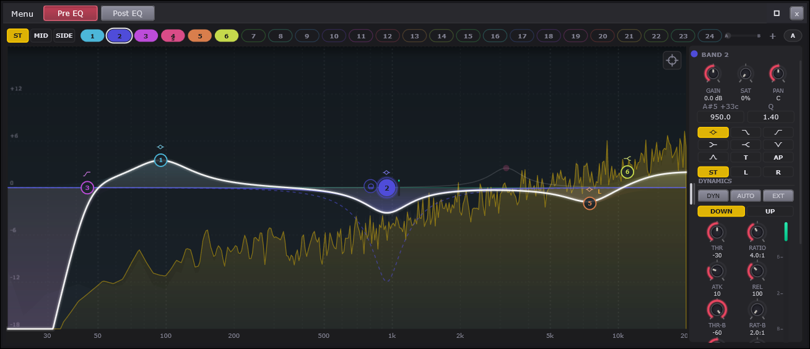
| # | On screen |
|---|---|
Pre EQ / Post EQ - which of the strip's two EQs this window is showing (QA-EqPro window) | |
ST / MID / SIDE - the three domain views. The view a band lives in IS its domain; the other views ghost | |
The band chips - 24 numbered pills per PAGE of the 96-band pool (arrows appear when a page fills), one shared pool across the views, plus + | |
The A/B pill - two complete setups; click swaps, right-click Copy A to B / Lock. The MORPH strip beside it drags the live setup toward the other bank, one undo step | |
| Grid + frequency scale - gain scale selectable 3..30 dB; 20 Hz to 20 kHz, logarithmic | |
| A band handle - numbered dot, type glyph above, dynamic ring + mini GR meter, L/R badge | |
| The live spectrum - pre dim / post bright / sidechain, with spectrogram, phase and piano opt-ins | |
| The headphone button - latches band LISTEN on the selected band | |
| The crosshair - arms the spectrum grab (max-held peaks; one grab per arming) | |
Rail GAIN / SAT / PAN knobs - the band's gain, its saturation, its stereo placement | |
Rail FREQ / Q drag-numbers - drag or double-click to type | |
Rail type glyph grid (9 incl. All Pass) + ST/L/R + SLOPE (continuous dB/oct) / PHASE numbers | |
Rail DYNAMICS - DYN/AUTO/EXT, DOWN/UP, THR/RATIO/ATK/REL, the second stage THR B/RATIO B/RANGE B, ONSET, DENSE, GR meter | |
Rail MOD block - RATE/LFO/ENV knobs with F/G/Q target rows (per-band modulators, IIR modes) | |
| The window menu - modes with computed latencies, Color, Whole Curve, Delta Listen, Sketch, Instances, analyser/view options, EQ Match, presets |
Controls
| Control | What it does | Default | Range |
|---|---|---|---|
| Pre EQ B2 Gain | Sets this band's boost or cut. | 0 | -30 to 30 |
| Pre EQ B2 Sat | Saturates just this band's slice. | 0 | 0 to 1 |
| Pre EQ B2 Place | Pans this band's effect across stereo. | 0 | -1 to 1 |
| Pre EQ B2 Threshold | Engages the band above this level. | 0 | -60 to 0 |
| Pre EQ B2 Ratio | Sets how hard the band moves past threshold. | 2 | 1 to 20 |
| Pre EQ B2 Attack | Sets the detector's reaction speed. | 10 | 0.1 to 500 |
| Pre EQ B2 Release | Sets the detector's recovery speed. | 100 | 1 to 2000 |
| Pre EQ B2 ThresholdB | Engages the below stage under this level. | -60 | -60 to 0 |
| Pre EQ B2 RatioB | Sets how hard the below stage moves. | 2 | 1 to 20 |
| Pre EQ B2 RangeB | Sets the below stage's travel and direction. | 0 | -30 to 30 |
| Pre EQ B2 Onset | Focuses the detector on attacks only. | 0 | 0 to 1 |
| Pre EQ B2 LFO Rate | Sets the band LFO's speed. | 2 | 0.02 to 20 |
| Pre EQ B2 LFO Depth | Sets how far the LFO swings the band. | 0 | 0 to 1 |
| Pre EQ B2 Env Depth | Rides or ducks the band with its level. | 0 | -1 to 1 |
| Pre EQ B2 Freq | Sets the band's center frequency. | 100 | 20 to 20000 |
| Pre EQ B2 Q | Narrows or widens the band. | 0.707 | 0.1 to 30 |
| Pre EQ B2 Type | Picks the band's curve shape. | 0 | 0 to 8 |
| Pre EQ B2 Slope | Steepens the pass filter's rolloff. | 12 | 1 to 97 |
An equalizer - EQ - turns parts of the frequency range up or down: more bass, less harshness, air on top. This one gives you up to ninety-six independent bands - grabbable handles on a curve, each in charge of its own region - drawn over a live picture of your actual sound. Every channel has two of these: one before its effects rack, one after.
Pre EQ / Post EQ shows which of the channel's two EQs this window is editing - tone going INTO the effects, or tone coming out of them.
ST / MID / SIDE are the three views, and the view you are in decides what a band works on: make a band in the SIDE view and it shapes only the edges of the stereo picture (where the width lives); the MID view shapes only the center (where voices and bass live); ST is the everyday view where bands work the whole signal. No routing menus - the view itself decides. Whichever view you are in, the other views' curves stay faintly visible as a ghost, so you always see what the other half is doing.
The band chips - one numbered pill per band, twenty-four to a page of the ninety-six-band pool. Small arrows page the row, and they only appear once a page fills - with two dozen bands or fewer you never see them. Click selects, double-click mutes an active band or wakes an off one, right-click opens the band's menu, and + adds a band. A chip whose band lives in another view wears a tiny M or S tick.
A/B is the EQ's own compare pair - two complete setups to flip between while listening (B starts blank). Right-click it to copy A into B or to lock the pair. One Ctrl+Z undoes a flip. The small morph strip beside it goes further: drag its thumb and the whole setup blends smoothly toward the other bank - release keeps what you hear, the thumb springs home, and one Ctrl+Z takes the whole morph back.
The grid rules the gain scale (pick 3 to 30 dB in the menu - the small scales make mastering-size moves draggable) over a frequency scale running 20 Hz to 20 kHz, spaced the way ears hear it.
The band handles - numbered, colored - are the main controls: drag one to set its frequency (left-right) and its boost or cut (up-down) in one gesture. Hold Shift for fine moves, Ctrl for gain only, Ctrl+Shift for frequency only; the wheel over a handle sets its width (Q); Alt-click resets it; double-click MUTES it (delete lives in the menu and on the Delete key); double-click empty space adds a band there. Drag across EMPTY space to select several bands at once (or Ctrl+click dots into the set): dragging any selected dot then moves them all as one shape, and starting that drag with Alt scales their gains proportionally instead. The small glyph above each dot is its shape, and a dynamic band wears a thin second ring plus a tiny meter showing how far it has moved right now. The menu's Sketch a Curve turns your next stroke across the graph into real bands - bumps become bells, edges become shelves - and one Ctrl+Z removes them all.
The live spectrum draws behind the curve whenever sound flows, so your moves land on the actual music - you can SEE the harsh peak you are hunting. The menu offers a heat-mapped spectrogram, a phase overlay, a piano strip along the bottom (every C named, so frequency becomes pitch - and CLICKING a key snaps the selected band exactly onto that note), analyser speeds, a display tilt that makes normal music read flat, freeze and peak hold.
The headphone button beside the selected band latches listen: you hear only that band's region while you drag it - sweep around and find the ugly resonance by ear, at the music's own loudness (the solo rides itself up to match, so a narrow band is never a sudden level drop). Isolate (in the band menu) is the other audition: mute every band but this one. And Delta Listen (the window menu, or per band) is the reverse - you hear only what the EQ is CHANGING, so a flat EQ goes silent and every move becomes audible on its own.
The crosshair arms the spectrum grab: the analyser holds its peaks steady, the nearest found resonance is targeted under your pointer, and one click drops a ready-aimed cut on it. One grab per arming.
GAIN, SAT and PAN - the selected band's boost or cut; saturation folded into just this band's region (zero is clean); and where the band's work sits in the stereo picture: PAN hard left and the band's effect lands only on the left channel. It pans the band's WORK, not your audio, and the drawn curve deliberately stays put.
FREQ and Q - drag the numbers up and down, or double-click to type. Q is width: higher is narrower. On a Low Pass or High Pass, Q is resonance instead: a peak right at the cutoff, at any slope - the filter sweep sound comes from this number.
The shape grid, channel and the two numbers - the band's type (Bell, the passes, the shelves, Notch, Band Pass, Tilt, and All Pass - which changes only phase, for lining layered sounds up), a Stereo / L / R choice for Stereo-view bands, then SLOPE (any steepness from 1 to 96 dB per octave, continuously - 17 is a real setting - plus Brickwall in the linear-phase modes) and PHASE (in linear modes, how much of THIS band opts out of linear phase - pull it up on a low bell and the bass pre-ring leaves).
DYNAMICS - DYN makes the band move with the music: DOWN cuts when its region crosses the threshold, UP boosts. THR decides where it engages - at 0 nothing ever moves, and the dotted line on the curve IS this knob: the furthest the band can travel. RATIO is how hard, ATK and REL how fast (AUTO lets the release follow the material), EXT picks one of the channel's sidechain receive lines so another track drives this band - the classic "duck the bass when the kick hits". A SECOND stage (THR B / RATIO B / RANGE B) works the quiet side: when the region drops UNDER its threshold, a positive Range B lifts it - tails and air come up without touching the hits. ONSET aims the whole thing at transients: at 100% the band reacts to the attack of a drum and ignores its ring. And in the linear-phase modes, Spectral (the band menu) sharpens a dynamic band to surgical: only the exact frequencies poking out over their own neighborhood get moved, the notes beside them pass untouched - DENSE sets how selective that is. The meter shows the movement live.
MOD - every band carries a slow LFO (RATE, LFO depth) and an envelope follower (ENV, push up to follow the music, pull down to duck against it), each aimable at the band's Frequency, Gain or Q. A gentle LFO on a filter's frequency is instant movement; a negative envelope on a boost pulls the boost back when things get loud. These live in the zero-latency modes, where filters can move freely.
The menu holds the processing modes - Zero Latency, Natural Phase (analog-shaped highs at no cost), five Linear Phase precisions with their real delays listed, and Mixed Phase (natural lows, linear highs, a common mastering choice) - plus oversampling, proportional Q, Color (three saturation characters: Smooth, Warm, and Changed, which colors only what the EQ altered), measured auto-gain, output trim and polarity, the gain scale, all the analyser and view options, Whole Curve (scale everything at once - negative flips the whole curve upside down - or shift it by semitones), Delta Listen, Sketch a Curve, Instances (every EQ in your whole project in one list - live thumbnails and spectra; click a row and THIS window becomes that EQ's editor; a row can also feed EQ Match or the collision view as a reference), the keyboard map, Reset All Bands, EQ Match, and the presets: Default, the factory shapes, and your own saved ones.
The kbs EQ engine
A pool of ninety-six bands, each with a type, frequency, gain and Q. One function designs a band's filter sections; the audio path installs them, the drawn curve evaluates them, and the linear-phase designer samples them - so the picture and the sound cannot disagree, because they are the same arithmetic.
// gainDb is an argument rather than read from the params so the dynamic
// rebuild and the static design go through the identical arithmetic.
switch (p.type)
{
case EqType::bell:
out[0] = (mode == EqMode::zeroLatency)
? Biquad::peaking (f, q, gainDb, designSr)
: eqdesign::peakOrfanidis (f, designSr, q, gainDb);
return 1;
case EqType::lowShelf:
out[0] = eqdesign::shelf (f, designSr, q, gainDb, false);
return 1;
case EqType::highShelf:
out[0] = eqdesign::shelf (f, designSr, q, gainDb, true);
return 1;
case EqType::notch:
// A dynamic notch is a de-resonator: at rest it does nothing,
// and the detector cuts it in by up to range.
if (p.dynamic)
{
out[0] = (mode == EqMode::zeroLatency)
? Biquad::peaking (f, q, gainDb, designSr)
: eqdesign::peakOrfanidis (f, designSr, q, gainDb);
return 1;
}
out[0] = eqdesign::notch (f, designSr, q);
return 1;
case EqType::tilt:
out[0] = eqdesign::shelf (f, designSr, q, +gainDb, false);
out[1] = eqdesign::shelf (f, designSr, q, -gainDb, true);
return 2;
default: return 0; // LP/HP/BP live on the SVF path
}// Both directions use the same unified over-threshold trigger: the band
// moves - down for compression, up for expansion - when the detector
// EXCEEDS the threshold, by the excess times the ratio slope.
float grDb = 0.0f;
if (env >= kDetectorFloor && std::abs (p.rangeDb) > 0.0f)
{
const float envDb = 20.0f * std::log10 (env);
const float ratio = std::max (1.0f, p.ratio);
const float slope = 1.0f - 1.0f / ratio;
const float over = envDb - p.thresholdDb;
if (over > 0.0f)
{
const float extent = std::min (std::abs (p.thresholdDb) * slope,
std::abs (p.rangeDb));
const float mag = std::min (over * slope, extent);
grDb = p.rangeDb > 0.0f ? mag : -mag;
}
}Full function — Source/DSP/Kbs/ParametricEq.h
// Source/DSP/Kbs/ParametricEq.h - ParametricEq (complete)
// ── the engine ─────────────────────────────────────────────────────────────
class ParametricEq
{
public:
static constexpr int kMaxBands = kEqMaxBands;
// Dynamics update interval. The envelope runs per sample; the gain it
// commands is applied by rebuilding the band's section this often, with a
// short smoother between updates so the steps never reach the audio. The
// engine this replaced applied it once per host block - 10.7 ms at 512 -
// which quantised every attack the interface offered below that. 32
// samples is 0.7 ms at 48 kHz: finer than the fastest audible attack.
static constexpr int kDynChunk = 32;
// ── configuration ─────────────────────────────────────────────────────
void prepare (double sampleRate, int maxBlockSize)
{
sr = sampleRate;
maxBlock = std::max (32, maxBlockSize);
for (auto& b : bands) b.prepareRuntime (sr);
osL.prepare (maxBlock);
osR.prepare (maxBlock);
osBufL.assign ((size_t) (maxBlock * 2 + 8), 0.0f);
osBufR.assign ((size_t) (maxBlock * 2 + 8), 0.0f);
scL.assign ((size_t) maxBlock, 0.0f);
scR.assign ((size_t) maxBlock, 0.0f);
detL.assign ((size_t) maxBlock, 0.0f);
dryL.assign ((size_t) maxBlock, 0.0f);
dryR.assign ((size_t) maxBlock, 0.0f);
detR.assign ((size_t) maxBlock, 0.0f);
for (int s = 0; s < 4; ++s)
{
scSlotL[(size_t) s].assign ((size_t) maxBlock, 0.0f);
scSlotR[(size_t) s].assign ((size_t) maxBlock, 0.0f);
scSlotValid[(size_t) s] = false;
}
configureLinear();
// W-18 alignment ring, sized once for the deepest mode so a mode
// change never reallocates under the audio thread.
int maxLat = Oversampler<2>::latencySamples();
for (int mi = 0; mi < 8; ++mi)
maxLat = std::max (maxLat, eqLinearLatencySamples ((EqMode) mi));
deltaRingL.assign ((size_t) (maxLat + maxBlock + 1), 0.0f);
deltaRingR.assign ((size_t) (maxLat + maxBlock + 1), 0.0f);
deltaRingPos = 0;
listenSvfL.prepare (sr);
listenSvfR.prepare (sr);
aAutoGain = std::exp (-1.0f / (float) (1.0 * sr));
reset();
}
void reset()
{
for (auto& b : bands) b.resetRuntime();
osL.reset();
osR.reset();
linear.resetStreams();
agIn = agOut = 0.0f;
autoGainLin = 1.0f;
listenSvfL.reset();
listenSvfR.reset();
lisInPow = lisOutPow = 0.0f; lisGain = 1.0f; lastListenBand = -1;
deltaWasOn = false;
markAllDirty();
}
// ── parameters ────────────────────────────────────────────────────────
void setBand (int i, const EqBandParams& p)
{
if (i < 0 || i >= kMaxBands) return;
auto& b = bands[(size_t) i];
// A structural change resets the band's filter memory; a value change
// must not, or every drag would crackle. Structural = type, slope,
// channel, or coming on.
const bool structural = p.type != b.p.type || p.slope != b.p.slope
|| p.channel != b.p.channel || (p.on && ! b.p.on)
|| p.spectral != b.p.spectral;
b.p = p;
b.dirty = true;
if (structural) b.resetRuntime(); // also snaps the glides to target
staticCurveDirty = true;
}
EqBandParams getBand (int i) const
{
if (i < 0 || i >= kMaxBands) return {};
return bands[(size_t) i].p;
}
void setMode (EqMode m)
{
if (m == mode) return;
mode = m;
configureLinear();
markAllDirty();
}
EqMode getMode() const { return mode; }
// 2x for the IIR path. Ignored while a linear mode is active: the FIR is
// already free of cramping (it is designed on the digital grid), and
// nesting it in a resampler would double its latency for nothing.
void setOversampling (bool on)
{
if (on == oversampling) return;
oversampling = on;
osL.reset();
osR.reset();
markAllDirty();
}
bool getOversampling() const { return oversampling; }
double getSampleRate() const { return sr; }
void setProportionalQ (bool on)
{
if (on == proportionalQ) return;
proportionalQ = on;
markAllDirty();
}
bool getProportionalQ() const { return proportionalQ; }
// Measured auto-gain: the EQ watches its own in and out and rides the
// output so the loudness holds - the same follower the compressors use
// (Devices.h), with the same power-law amount, because a gain interpolates
// honestly only in decibels.
void setAutoGain (bool on, float amount01 = 1.0f)
{
autoGainOn = on;
agExp = std::clamp (amount01, 0.0f, 1.0f);
if (! on) autoGainLin = 1.0f;
}
bool getAutoGain() const { return autoGainOn; }
float getAutoGainDb() const
{
return 20.0f * std::log10 (std::max (appliedAutoGain(), 1.0e-6f));
}
void setOutputGainDb (float db) { outGainDb = std::clamp (db, -24.0f, 24.0f); }
void setPolarityFlip (bool flip) { polarityFlip = flip; }
// W-3: the character stage. Safe live setters - nothing reallocates.
void setCharacter (EqCharMode m, float amount01)
{
charMode = m;
charAmt = std::clamp (amount01, 0.0f, 1.0f);
}
EqCharMode getCharMode() const { return charMode; }
float getCharAmount() const { return charAmt; }
// W-11: whole-curve transforms. scale multiplies every gain band's dB
// (negative inverts the curve), shiftSemis moves every design frequency.
// Live-safe: the IIR path follows through the glide targets, the linear
// modes rebuild their FIR the way any parameter change there does. The
// band HANDLES stay at the user's set points - the curve moves.
void setCurveTransform (float scale, float shiftSemis)
{
scale = std::clamp (scale, -2.0f, 2.0f);
shiftSemis = std::clamp (shiftSemis, -24.0f, 24.0f);
if (scale == curveScale && shiftSemis == curveShiftSemis) return;
curveScale = scale;
curveShiftSemis = shiftSemis;
curveFreqMul = std::pow (2.0f, shiftSemis / 12.0f);
staticCurveDirty = true;
}
float getCurveScale() const { return curveScale; }
float getCurveShiftSemis() const { return curveShiftSemis; }
// W-18: delta listen - the output becomes out-minus-in, latency-aligned,
// so the ear hears exactly what the EQ is doing. Any-thread, like the
// listen band; per-band delta is this composed with Isolate.
void setDeltaListen (bool on) { deltaListen.store (on, std::memory_order_relaxed); }
bool getDeltaListen() const { return deltaListen.load (std::memory_order_relaxed); }
// W-23: hold-to-audition one domain of the output (EqChannel values;
// stereo = off), both ears. Any-thread, momentary by convention.
void setAuditionDomain (EqChannel c)
{ auditionDomain.store ((int) c, std::memory_order_relaxed); }
// A band auditioned on its own: the output becomes a band-pass at the
// band's frequency and Q, which is also exactly what its dynamic detector
// hears. -1 = nobody listening.
// Written by the editor thread, read per block: atomic, and the one
// engine setter that is deliberately safe to call from anywhere.
void setListenBand (int i) { listenBand.store ((i >= 0 && i < kMaxBands) ? i : -1,
std::memory_order_relaxed); }
int getListenBand() const { return listenBand.load (std::memory_order_relaxed); }
// External sidechain for this block. Null = the bands detect their own
// input. Copied, so the caller's buffer can be reused immediately.
void setSidechain (const float* l, const float* r, int numSamples)
{
scValid = (l != nullptr && numSamples > 0);
if (! scValid) return;
const int nn = std::min (numSamples, (int) scL.size());
std::memcpy (scL.data(), l, (size_t) nn * sizeof (float));
std::memcpy (scR.data(), r != nullptr ? r : l, (size_t) nn * sizeof (float));
}
// One of the DAW strip's four receive lines for this block (QA-EqPro
// SC-4). Same one-block copied contract as setSidechain.
void setSidechainSlot (int slot, const float* l, const float* r, int numSamples)
{
if (slot < 0 || slot >= 4) return;
const bool valid = (l != nullptr && numSamples > 0);
scSlotValid[(size_t) slot] = valid;
if (! valid) return;
auto& bl = scSlotL[(size_t) slot];
auto& br = scSlotR[(size_t) slot];
const int nn = std::min (numSamples, (int) bl.size());
std::memcpy (bl.data(), l, (size_t) nn * sizeof (float));
std::memcpy (br.data(), r != nullptr ? r : l, (size_t) nn * sizeof (float));
}
// ── reporting ─────────────────────────────────────────────────────────
int latencySamples() const
{
if (eqModeIsLinear (mode)) return linear.latencySamples();
return oversampling ? Oversampler<2>::latencySamples() : 0;
}
float bandGrDb (int i) const
{
if (i < 0 || i >= kMaxBands) return 0.0f;
return bands[(size_t) i].grDbShown.load (std::memory_order_relaxed);
}
// ── the queries the display draws from ────────────────────────────────
//
// Same design functions as the audio path, evaluated at one frequency.
// withDynamic folds each band's current gain reduction in, which is what
// makes the drawn curve breathe; the static form is what the linear-phase
// FIR is designed from.
float magnitudeAt (float hz, int channel = 0, bool withDynamic = true) const
{
double m = 1.0;
for (const auto& b : bands)
if (bandActive (b)) m *= bandMagnitude (b, hz, channel, withDynamic);
return (float) m * std::pow (10.0f, outGainDb / 20.0f);
}
// One band's own contribution, for the display's per-band fills. Same
// arithmetic as the audio; a band that is off contributes unity.
float bandMagnitudeAt (int i, float hz, int channel = 0, bool withDynamic = true) const
{
if (i < 0 || i >= kMaxBands) return 1.0f;
const auto& b = bands[(size_t) i];
if (! b.p.on || b.p.muted) return 1.0f;
return (float) bandMagnitude (b, hz, channel, withDynamic);
}
// The band at its full dynamic extent: static gain plus the furthest
// the gain computer can travel, |threshold| x ratio slope. This is the
// dotted line the display draws, it moves with the THRESHOLD knob, and
// the live curve cannot pass it because the same expression bounds the
// gain computer.
float bandExtentMagnitudeAt (int i, float hz, int direction = 0) const
{
if (i < 0 || i >= kMaxBands) return 1.0f;
const auto& b = bands[(size_t) i];
if (! b.p.on || b.p.muted || ! b.p.dynamic) return 1.0f;
const float slope = 1.0f - 1.0f / std::max (1.0f, b.p.ratio);
const float extent = std::min (std::abs (b.p.thresholdDb) * slope,
std::abs (b.p.rangeDb));
// W-12: with two stages the possible travel spans both directions.
// direction +1 = the furthest up the curve can go, -1 = furthest
// down, 0 = the legacy single-stage reading (the above stage's own
// direction) so existing callers keep their meaning.
const float slopeB = 1.0f - 1.0f / std::max (1.0f, b.p.ratioB);
const float extentB = std::abs (b.p.rangeBDb) > 0.0f
? std::min ((b.p.thresholdBDb - kDetectorFloorDb) * slopeB,
std::abs (b.p.rangeBDb))
: 0.0f;
float travel;
if (direction > 0)
travel = (b.p.rangeDb > 0.0f ? extent : 0.0f)
+ (b.p.rangeBDb > 0.0f ? extentB : 0.0f);
else if (direction < 0)
travel = -((b.p.rangeDb < 0.0f ? extent : 0.0f)
+ (b.p.rangeBDb < 0.0f ? extentB : 0.0f));
else
travel = b.p.rangeDb > 0.0f ? extent : -extent;
const float extentGain = xfGain (b.p) + travel;
BiquadCoeffs cs[2];
const float designSr = (float) ((oversampling && ! eqModeIsLinear (mode)) ? sr * 2.0 : sr);
const double w = 2.0 * kPi * std::clamp ((double) hz, 1.0, sr * 0.499) / designSr;
const int n = designBiquads (b.p, designSr, extentGain, cs,
xfFreq (b.p), b.p.q);
double mag = 1.0, ph = 0.0, tot = 1.0;
for (int k = 0; k < n; ++k)
{
eqdesign::biquadResponse (cs[k], w, mag, ph);
tot *= mag;
}
return (float) tot;
}
// Radians at hz. Zero across the board in linear modes - after the host
// compensates the reported delay, that is the truth, and drawing the IIR
// phase there was one of the recorded defects.
// W-1: the live spectral move at a frequency (dB, weighted by the
// band's footprint) - what the graph's breathing spectral curve draws.
// Audio-written, display-read; a torn read paints one frame odd.
float spectralGrDbAt (int band, float hz) const
{
if (! eqModeIsLinear (mode) || ! anySpectral) return 0.0f;
for (const auto& sl : spectralSlots)
{
if (sl.band != band) continue;
const int n = linear.fftSize();
if (n <= 0 || sl.gr.empty()) return 0.0f;
const int k = std::clamp ((int) (hz * (float) n / (float) sr),
0, n / 2);
return sl.gr[(size_t) k] * sl.wt[(size_t) k];
}
return 0.0f;
}
float phaseAt (float hz) const
{
double ph = 0.0;
if (eqModeIsLinear (mode))
{
// Post-PDC truth: pure linear content reports zero; what remains
// is exactly the excess each band was given (W-9).
for (const auto& b : bands)
{
if (! bandActive (b)) continue;
float wgt = std::clamp (b.p.phaseMix, 0.0f, 1.0f);
if (mode == EqMode::mixed)
{
const float mw = eqMixedMinPhaseWeight (hz);
wgt = 1.0f - (1.0f - wgt) * (1.0f - mw);
}
if (wgt > 0.001f) ph += wgt * bandPhase (b, hz);
}
}
else
{
for (const auto& b : bands)
if (bandActive (b)) ph += bandPhase (b, hz);
}
if (polarityFlip) ph += kPi;
return (float) ph;
}
// ── audio ─────────────────────────────────────────────────────────────
void process (float* l, float* r, int numSamples)
{
if (numSamples <= 0) return;
const bool deltaOn = deltaListen.load (std::memory_order_relaxed);
if (charMode == EqCharMode::difference || deltaOn)
{
std::copy (l, l + numSamples, dryL.begin());
std::copy (r, r + numSamples, dryR.begin());
}
// The detectors hear the block as it arrived, whatever the bands do
// to it afterwards - the parallel model, so a band's own reduction
// never starves its own detector.
const int nDet = std::min (numSamples, (int) detL.size());
std::memcpy (detL.data(), l, (size_t) nDet * sizeof (float));
std::memcpy (detR.data(), r, (size_t) nDet * sizeof (float));
anyIsolated = false;
for (auto& b : bands)
if (b.p.on && b.p.isolated) { anyIsolated = true; break; }
const bool linearMode = eqModeIsLinear (mode);
if (linearMode && staticCurveDirty)
{
rebuildLinearCurve();
staticCurveDirty = false;
}
// Auto-gain measures the input before anything touches it.
if (autoGainOn)
for (int i = 0; i < numSamples; ++i)
{
const float pk = std::max (std::abs (l[i]), std::abs (r[i]));
agIn = aAutoGain * agIn + (1.0f - aAutoGain) * pk * pk;
}
if (linearMode)
{
// Static curve through the FIR; each dynamic band contributes only
// its moving part as a minimum-phase section afterwards. The
// static half of a dynamic band lives in the FIR with everything
// else, so the reduction rides on a linear-phase bed - the same
// split Pro-Q makes, because a gain that moves cannot be
// linear-phase without lookahead artefacts.
linear.processStereo (l, r, numSamples);
processBands (l, r, numSamples, (float) sr, true);
}
else if (oversampling)
{
// One resampler per channel: they carry history, and the engine
// this replaced had exactly this class of shared-state fault.
const int nOs = osL.upsample (l, numSamples);
std::memcpy (osBufL.data(), osL.upsampleBuffer(), (size_t) nOs * sizeof (float));
osR.upsample (r, numSamples);
std::memcpy (osBufR.data(), osR.upsampleBuffer(), (size_t) nOs * sizeof (float));
processBands (osBufL.data(), osBufR.data(), nOs, (float) (sr * 2.0), false);
osL.downsample (osBufL.data(), l, numSamples);
osR.downsample (osBufR.data(), r, numSamples);
}
else
{
processBands (l, r, numSamples, (float) sr, false);
}
// Listen replaces the output with the band's own slice of the input.
const int lb = listenBand.load (std::memory_order_relaxed);
if (lb >= 0 && bands[(size_t) lb].p.on)
{
auto& b = bands[(size_t) lb];
if (lb != lastListenBand)
{ lastListenBand = lb; lisInPow = lisOutPow = 0.0f; lisGain = 1.0f; }
const float lf = std::clamp (xfFreq (b.p), 20.0f, (float) (sr * 0.45));
listenSvfL.set (lf, std::clamp (b.p.q, 0.5f, 20.0f));
listenSvfR.set (lf, std::clamp (b.p.q, 0.5f, 20.0f));
// W-10: loudness-matched solo - the slice rides toward the
// program's own level so auditioning is not a level jump in
// either direction (the raw bp slice peaks at Q, so a narrow
// band arrives HOT). Capped at +-24 dB: an empty band matched
// "exactly" would be a noise amplifier.
const float aLis = std::exp (-1.0f / (0.200f * (float) sr));
const float aG = std::exp (-1.0f / (0.050f * (float) sr));
for (int i = 0; i < nDet; ++i)
{
const float sl0 = listenSvfL.process (detL[(size_t) i]).bp;
const float sr0 = listenSvfR.process (detR[(size_t) i]).bp;
const float pIn = std::max (std::abs (detL[(size_t) i]),
std::abs (detR[(size_t) i]));
const float pSl = std::max (std::abs (sl0), std::abs (sr0));
lisInPow = aLis * lisInPow + (1.0f - aLis) * pIn * pIn;
lisOutPow = aLis * lisOutPow + (1.0f - aLis) * pSl * pSl;
float want = 1.0f;
if (lisOutPow > 1.0e-10f && lisInPow > 1.0e-10f)
want = std::clamp (std::sqrt (lisInPow / lisOutPow),
0.0625f, 16.0f);
lisGain = aG * lisGain + (1.0f - aG) * want;
l[i] = sl0 * lisGain;
r[i] = sr0 * lisGain;
}
}
else lastListenBand = -1;
// W-14: per-band saturation - each armed band's slice, softened and
// folded back, scaled by its amount.
for (auto& b : bands)
{
if (! bandActive (b) || b.p.satAmt <= 0.001f
|| ! eqTypeHasGain (b.p.type)) continue;
const float amt = b.p.satAmt;
for (int i = 0; i < numSamples; ++i)
{
const float sl2 = (float) b.satFL.process (l[i]);
const float sr2 = (float) b.satFR.process (r[i]);
l[i] += amt * (eqchar::stage (EqCharMode::colorB, sl2, 2.5f) - sl2);
r[i] += amt * (eqchar::stage (EqCharMode::colorB, sr2, 2.5f) - sr2);
}
}
// W-3: the character stage - program-dependent drive (the follower
// backs the color off as the material gets loud), unity small-signal
// gain by construction, difference mode colors only what the EQ
// changed and nulls exactly when the EQ is flat.
if (charMode != EqCharMode::off && charAmt > 0.001f)
{
const float aCh = std::exp (-1.0f / (0.010f * (float) sr));
for (int i = 0; i < numSamples; ++i)
{
const float pk = std::max (std::abs (l[i]), std::abs (r[i]));
chEnv = aCh * chEnv + (1.0f - aCh) * pk;
const float prog = std::clamp (1.0f / (0.4f + 2.0f * chEnv), 0.4f, 2.0f);
const float d = 1.0f + charAmt * 2.5f * prog;
if (charMode == EqCharMode::difference)
{
const float dlS = l[i] - dryL[(size_t) i];
const float drS = r[i] - dryR[(size_t) i];
l[i] = dryL[(size_t) i] + eqchar::stage (EqCharMode::colorB, dlS, d);
r[i] = dryR[(size_t) i] + eqchar::stage (EqCharMode::colorB, drS, d);
}
else
{
l[i] = eqchar::stage (charMode, l[i], d);
r[i] = eqchar::stage (charMode, r[i], d);
}
}
}
// Output stage: measured auto-gain, trim, polarity.
float outLin = std::pow (10.0f, outGainDb / 20.0f);
if (polarityFlip) outLin = -outLin;
if (autoGainOn)
{
for (int i = 0; i < numSamples; ++i)
{
const float pk = std::max (std::abs (l[i]), std::abs (r[i]));
agOut = aAutoGain * agOut + (1.0f - aAutoGain) * pk * pk;
}
if (agOut > 1.0e-12f && agIn > 1.0e-12f)
{
const float want = std::sqrt (agIn / agOut);
autoGainLin = std::min (4.0f, std::max (0.25f, want));
}
outLin *= appliedAutoGain();
}
for (int i = 0; i < numSamples; ++i) { l[i] *= outLin; r[i] *= outLin; }
// W-18: output minus the latency-aligned input. The ring only runs
// while delta is engaged; the enable edge clears it, so the first
// aligned window subtracts silence instead of stale history.
if (deltaOn)
{
if (! deltaWasOn)
{
std::fill (deltaRingL.begin(), deltaRingL.end(), 0.0f);
std::fill (deltaRingR.begin(), deltaRingR.end(), 0.0f);
}
const int lat = latencySamples();
const int ring = (int) deltaRingL.size();
if (lat + 1 <= ring)
for (int i = 0; i < numSamples; ++i)
{
deltaRingL[(size_t) deltaRingPos] = dryL[(size_t) i];
deltaRingR[(size_t) deltaRingPos] = dryR[(size_t) i];
const int rd = (deltaRingPos - lat + ring) % ring;
l[i] -= deltaRingL[(size_t) rd];
r[i] -= deltaRingR[(size_t) rd];
deltaRingPos = (deltaRingPos + 1) % ring;
}
}
deltaWasOn = deltaOn;
// W-23: hold-to-audition one domain - the output collapses to that
// component alone, in both ears.
switch ((EqChannel) auditionDomain.load (std::memory_order_relaxed))
{
case EqChannel::mid:
for (int i = 0; i < numSamples; ++i) l[i] = r[i] = 0.5f * (l[i] + r[i]);
break;
case EqChannel::side:
for (int i = 0; i < numSamples; ++i) l[i] = r[i] = 0.5f * (l[i] - r[i]);
break;
case EqChannel::left:
for (int i = 0; i < numSamples; ++i) r[i] = l[i];
break;
case EqChannel::right:
for (int i = 0; i < numSamples; ++i) l[i] = r[i];
break;
default: break;
}
scValid = false; // a sidechain is one block's worth of truth
scSlotValid.fill (false);
}
private:
// ── per-band runtime ──────────────────────────────────────────────────
struct BandRt
{
EqBandParams p;
// Biquad path: bell, shelves, notch, tilt. Two sections at most
// (tilt); separate L/R because placement can split their gains.
Biquad biqL[2], biqR[2];
BiquadCoeffs coefL[2] {}, coefR[2] {};
int biqCount = 0;
// Filter path: LP / HP / BP as TPT sections plus an optional real
// pole for the odd orders.
StateVariableFilter svfL[8], svfR[8];
float poleStateL = 0.0f, poleStateR = 0.0f;
float poleG = 0.0f;
int svfCount = 0;
bool hasPole = false;
// The SVF's raw bp output peaks at Q; multiplying by k = 1/Q holds the
// centre at unity, which is what the magnitude query promises. Stored
// here so the audio applies exactly the k the query divides by.
float bpK = 1.0f;
// The fractional-slope ladder (W-6): first-order pole/zero pairs as
// biquads. Integer slopes leave it empty.
Biquad ladL[kEqLadderPairs], ladR[kEqLadderPairs];
BiquadCoeffs ladC[kEqLadderPairs] {};
int ladCount = 0;
// Dynamics.
Biquad detFL, detFR;
float envL = 0.0f, envR = 0.0f;
float envFastL = 0.0f, envFastR = 0.0f; // onset detection pair
float envSlowL = 0.0f, envSlowR = 0.0f;
Biquad satFL, satFR; // W-14 band-scoped slice
float lfoPhase = 0.0f; // W-13 modulator state
float modEnv = 0.0f;
float modFreqMul = 1.0f, modGainAdd = 0.0f, modQMul = 1.0f;
float grDb = 0.0f; // target from the gain computer
float grSmooth = 0.0f; // what the filter actually carries
float overSec = 0.0f; // how long the signal has been over - auto release
std::atomic<float> grDbShown { 0.0f };
float lastBuiltGr = 1.0e9f;
bool dirty = true;
// Glided parameter state: what the filters are actually built from.
// Targets live in p; these walk toward them one dynamics chunk at a
// time (about 0.7 ms), so a host automating Freq sweeps instead of
// stepping at block rate - the DAW's block-rate defect, from the
// parameter side. Structural changes snap them.
float cFreq = 1000.0f, cGain = 0.0f, cQ = 0.707f;
void prepareRuntime (double sampleRate)
{
for (auto& s : svfL) s.prepare (sampleRate);
for (auto& s : svfR) s.prepare (sampleRate);
resetRuntime();
}
void resetRuntime()
{
for (auto& f : biqL) f.reset();
for (auto& f : biqR) f.reset();
for (auto& s : svfL) s.reset();
for (auto& s : svfR) s.reset();
poleStateL = poleStateR = 0.0f;
detFL.reset(); detFR.reset();
envL = envR = 0.0f;
envFastL = envFastR = envSlowL = envSlowR = 0.0f;
grDb = grSmooth = 0.0f;
overSec = 0.0f;
grDbShown.store (0.0f, std::memory_order_relaxed);
lastBuiltGr = 1.0e9f;
cFreq = p.freqHz; cGain = p.gainDb; cQ = p.q;
dirty = true;
}
};
bool bandActive (const BandRt& b) const
{
if (! b.p.on || b.p.muted) return false;
if (anyIsolated && ! b.p.isolated) return false;
return true;
}
// W-11: the transform every design and query reads through - one pair of
// functions so the audio, the FIR designer and the drawn curve can never
// disagree about where a band actually sits.
float xfFreq (const EqBandParams& p) const { return p.freqHz * curveFreqMul; }
float xfGain (const EqBandParams& p) const
{ return eqTypeHasGain (p.type) ? p.gainDb * curveScale : p.gainDb; }
// Placement splits a gain band's dB across the channels: full weight on
// its own side, fading on the other. Gain types only - a filter has no
// gain to split, which is why the editor hides placement there.
void placementWeights (const EqBandParams& p, float& wl, float& wr) const
{
wl = wr = 1.0f;
if (p.channel != EqChannel::stereo) return;
const float pl = std::clamp (p.placement, -1.0f, 1.0f);
if (pl > 0.0f) wl = 1.0f - pl;
else if (pl < 0.0f) wr = 1.0f + pl;
}
// ── section design ────────────────────────────────────────────────────
//
// One function designs a band's sections; the audio path installs them,
// the query path evaluates them, the FIR designer samples them. gainDb is
// taken as an argument rather than read from the params so the dynamic
// rebuild and the static design go through the identical arithmetic.
int designBiquads (const EqBandParams& p, float designSr, float gainDb,
BiquadCoeffs* out,
float freqOverride = -1.0f, float qOverride = -1.0f) const
{
const float fRaw = freqOverride > 0.0f ? freqOverride : xfFreq (p);
const float qRaw = qOverride > 0.0f ? qOverride : p.q;
const float f = std::clamp (fRaw, 20.0f, designSr * 0.497f);
float qEff = qRaw;
if (proportionalQ && p.type == EqType::bell)
qEff = qRaw * (1.0f + std::abs (gainDb) / 18.0f);
const float q = std::clamp (qEff, 0.05f, 30.0f);
switch (p.type)
{
case EqType::bell:
out[0] = (mode == EqMode::zeroLatency)
? Biquad::peaking (f, q, gainDb, designSr)
: eqdesign::peakOrfanidis (f, designSr, q, gainDb);
return 1;
case EqType::lowShelf:
out[0] = eqdesign::shelf (f, designSr, q, gainDb, false);
return 1;
case EqType::highShelf:
out[0] = eqdesign::shelf (f, designSr, q, gainDb, true);
return 1;
case EqType::notch:
// A dynamic notch is a de-resonator: at rest it does nothing,
// and the detector cuts it in by up to range. That is a bell
// driven by GR, not a full notch that blinks - a filter to the
// floor appearing per-syllable would be an effect, not an EQ.
if (p.dynamic)
{
out[0] = (mode == EqMode::zeroLatency)
? Biquad::peaking (f, q, gainDb, designSr)
: eqdesign::peakOrfanidis (f, designSr, q, gainDb);
return 1;
}
out[0] = eqdesign::notch (f, designSr, q);
return 1;
case EqType::tilt:
out[0] = eqdesign::shelf (f, designSr, q, +gainDb, false);
out[1] = eqdesign::shelf (f, designSr, q, -gainDb, true);
return 2;
case EqType::allPass:
{
const double w0 = 2.0 * kPi * (double) f / designSr;
const double alpha = std::sin (w0)
/ (2.0 * std::clamp ((double) qRaw, 0.1, 30.0));
const double na = 1.0 + alpha;
out[0].b0 = (1.0 - alpha) / na;
out[0].b1 = (-2.0 * std::cos (w0)) / na;
out[0].b2 = 1.0;
out[0].a1 = out[0].b1;
out[0].a2 = out[0].b0;
return 1;
}
default: return 0; // LP/HP/BP live on the SVF path
}
}
// The fractional remainder (0..6 dB/oct) fit across the band as
// kEqLadderPairs log-spaced pole/zero pairs. Poles march geometrically
// from just past the cutoff to the band edge; each pair's zero sits at
// the ratio that makes its 6 dB/oct ramp average out to `rem` dB/oct
// over the spacing. Stateless and deterministic: the magnitude query
// rebuilds the identical pairs, so drawn == heard by construction.
int designSlopeLadder (EqType t, float fc, float rem, float designSr,
BiquadCoeffs* out) const
{
if (rem <= 0.05f) return 0;
const bool hp = t == EqType::highPass;
const float edge = hp ? 20.0f : std::min (designSr * 0.45f, 20000.0f);
const float span = hp ? fc / edge : edge / fc;
if (span < 1.6f) return 0; // no room to shape anything
const float R = std::pow (span, 1.0f / (float) kEqLadderPairs);
const float zr = std::pow (R, rem / 6.0f);
float fp = hp ? fc / std::pow (R, 0.25f) : fc * std::pow (R, 0.25f);
for (int i = 0; i < kEqLadderPairs; ++i)
{
const float fz = hp ? fp / zr : fp * zr;
out[i] = eqdesign::firstOrderPZ (fp, fz, designSr, hp);
fp = hp ? fp / R : fp * R;
}
return kEqLadderPairs;
}
void rebuildBand (BandRt& b, float designSr)
{
const auto& p = b.p;
if (eqTypeHasSlope (p.type))
{
const float slopeDb = eqSlopeIsBrickwall (p.slope)
? 96.0f : std::clamp (p.slope, 1.0f, 96.0f);
const float f = std::clamp (b.cFreq, 20.0f, designSr * 0.45f);
if (p.type == EqType::bandPass)
{
// Cascaded constant-peak sections at the user's Q: centre
// stays put, skirts steepen with the slope. A PARTIAL
// constant-peak section is not realizable, so the IIR rounds
// to whole sections (12 dB granularity); the linear modes
// realize the exact fractional skirt from the query instead.
b.svfCount = std::max (1, (int) std::round (slopeDb / 12.0f));
b.hasPole = false;
b.ladCount = 0;
b.bpK = 1.0f / std::clamp (b.cQ, 0.35f, 24.0f);
for (int s = 0; s < b.svfCount; ++s)
{
b.svfL[s].set (f, b.cQ);
b.svfR[s].set (f, b.cQ);
}
}
else
{
const int poles = (int) (slopeDb / 6.0f + 1.0e-4f);
const float rem = slopeDb - 6.0f * (float) poles;
b.hasPole = (poles % 2) == 1;
b.svfCount = poles / 2;
b.poleG = std::tan ((float) kPi * f / designSr);
// The user's Q is the filter's RESONANCE at any slope, not
// only at 12 dB/oct (2026-08-28, Jeff's ruling): the FINAL
// pair - the section nearest the axis, the one that peaks -
// has its Butterworth Q scaled by q / 0.7071. At the default
// Q the factor is 1 and the cascade is exactly Butterworth;
// at two poles butterworthQ is itself 0.7071, so this IS the
// old user-Q special case, generalized. The cutoff gain
// lands at exactly Q (linear) for every slope >= 12.
const double qScale = (double) std::clamp (b.cQ, 0.05f, 30.0f)
/ 0.70710678118654752;
for (int s = 0; s < b.svfCount; ++s)
{
double bq = eqdesign::butterworthQ (poles, s + 1);
if (s == b.svfCount - 1)
bq = std::clamp (bq * qScale, 0.35, 24.0);
b.svfL[s].set (f, (float) bq);
b.svfR[s].set (f, (float) bq);
}
b.ladCount = designSlopeLadder (p.type, f, rem, designSr, b.ladC);
for (int s = 0; s < b.ladCount; ++s)
{
b.ladL[s].setCoeffs (b.ladC[s]);
b.ladR[s].setCoeffs (b.ladC[s]);
}
}
b.biqCount = 0;
return;
}
float wl, wr;
placementWeights (p, wl, wr);
const float g = b.cGain + (p.dynamic ? b.grSmooth : 0.0f);
b.biqCount = designBiquads (p, designSr, g * wl, b.coefL, b.cFreq, b.cQ);
if (wl == wr)
{
for (int s = 0; s < b.biqCount; ++s) b.coefR[s] = b.coefL[s];
}
else
{
designBiquads (p, designSr, g * wr, b.coefR, b.cFreq, b.cQ);
}
for (int s = 0; s < b.biqCount; ++s)
{
b.biqL[s].setCoeffs (b.coefL[s]);
b.biqR[s].setCoeffs (b.coefR[s]);
}
b.svfCount = 0;
b.hasPole = false;
b.ladCount = 0;
b.lastBuiltGr = p.dynamic ? b.grSmooth : 0.0f;
if (p.satAmt > 0.001f)
{
const auto c = eqdesign::bandPass (std::clamp (b.cFreq, 30.0f, designSr * 0.4f),
designSr,
std::clamp (b.cQ, 0.5f, 8.0f));
b.satFL.setCoeffs (c);
b.satFR.setCoeffs (c);
}
}
// In linear modes a dynamic band's IIR carries only the moving part; its
// static gain is in the FIR.
void rebuildDynamicDelta (BandRt& b, float designSr)
{
b.biqCount = designBiquads (b.p, designSr, b.grSmooth, b.coefL, b.cFreq, b.cQ);
for (int s = 0; s < b.biqCount; ++s)
{
b.coefR[s] = b.coefL[s];
b.biqL[s].setCoeffs (b.coefL[s]);
b.biqR[s].setCoeffs (b.coefR[s]);
}
b.svfCount = 0;
b.hasPole = false;
b.ladCount = 0;
b.lastBuiltGr = b.grSmooth;
}
// ── dynamics ──────────────────────────────────────────────────────────
void advanceDynamics (BandRt& b, int from, int to)
{
const auto& p = b.p;
const float hostSr = (float) sr;
const float attMs = std::max (0.1f, p.attackMs);
float relMs = std::max (1.0f, p.releaseMs);
// Programme-dependent release: transient overs let go fast, material
// that sits over the threshold gets a long, unobtrusive tail. The
// over-time follower is the programme sensor.
if (p.autoRelease)
relMs = 60.0f + 440.0f * std::clamp (b.overSec / 0.4f, 0.0f, 1.0f);
const float aAtt = std::exp (-1.0f / (0.001f * attMs * hostSr));
const float aRel = std::exp (-1.0f / (0.001f * relMs * hostSr));
// Detector source: a picked strip receive line first (QA-EqPro SC-4),
// then the plugin's single sidechain bus, then the band's own input.
const float* dl = detL.data();
const float* dr = detR.data();
if (p.scSource >= 0 && p.scSource < 4 && scSlotValid[(size_t) p.scSource])
{
dl = scSlotL[(size_t) p.scSource].data();
dr = scSlotR[(size_t) p.scSource].data();
}
else if (p.scExternal && scValid)
{
dl = scL.data();
dr = scR.data();
}
// Onset shaping (W-12): a fast/slow SMOOTHED-magnitude pair turns
// the detector feed into "what just changed" - at full mix a
// sustained tone reads as silence and only attacks register. Both
// poles are symmetric and the fast one is slower than a carrier
// half-cycle, or the pair rings at the carrier rate and a steady
// tone reads as endless onsets (the first cut of this did). The
// factor of 2 keeps a typical attack's onset component near its raw
// level.
const float mix = std::clamp (p.onsetMix, 0.0f, 1.0f);
const float aOF = std::exp (-1.0f / (0.003f * hostSr));
const float aOS = std::exp (-1.0f / (0.060f * hostSr));
float el = b.envL, er = b.envR;
float fL = b.envFastL, fR = b.envFastR, sL = b.envSlowL, sR = b.envSlowR;
for (int n = from; n < to; ++n)
{
float inL, inR;
switch (p.channel)
{
case EqChannel::mid: inL = inR = 0.5f * (dl[n] + dr[n]); break;
case EqChannel::side: inL = inR = 0.5f * (dl[n] - dr[n]); break;
case EqChannel::left: inL = dl[n]; inR = 0.0f; break;
case EqChannel::right: inL = 0.0f; inR = dr[n]; break;
default: inL = dl[n]; inR = dr[n]; break;
}
float vL = std::abs (b.detFL.process (inL));
float vR = std::abs (b.detFR.process (inR));
if (mix > 0.001f)
{
fL = aOF * fL + (1.0f - aOF) * vL;
fR = aOF * fR + (1.0f - aOF) * vR;
sL = aOS * sL + (1.0f - aOS) * vL;
sR = aOS * sR + (1.0f - aOS) * vR;
vL = (1.0f - mix) * vL + mix * 2.0f * std::max (0.0f, fL - sL);
vR = (1.0f - mix) * vR + mix * 2.0f * std::max (0.0f, fR - sR);
}
el = (vL > el ? aAtt : aRel) * el + (1.0f - (vL > el ? aAtt : aRel)) * vL;
er = (vR > er ? aAtt : aRel) * er + (1.0f - (vR > er ? aAtt : aRel)) * vR;
}
b.envL = el; b.envR = er;
b.envFastL = fL; b.envFastR = fR; b.envSlowL = sL; b.envSlowR = sR;
const float env = std::max (el, er);
// Silence gate: below the floor there is nothing to react to, and a
// relative threshold read against silence is how the old meters came
// to follow the knob instead of the audio.
//
// Both directions use the same unified over-threshold trigger: the
// band moves - down for compression, up for expansion - when the
// detector EXCEEDS the threshold, by the excess times the ratio
// slope. That gives the semantics the product spec (Jeff, test pass
// five) states outright: threshold at 0 dB means nothing ever
// engages; threshold at -60 means everything does, pinned. The
// travel can never exceed |threshold| x slope, which is exactly the
// dotted extent line the display draws - the maths cannot cross it,
// so neither can the curve. The first build expanded BELOW the
// threshold, which inverted the knob for the UP direction and let
// the curve sail past its own extent.
float grDb = 0.0f;
if (env >= kDetectorFloor && std::abs (p.rangeDb) > 0.0f)
{
const float envDb = 20.0f * std::log10 (env);
const float ratio = std::max (1.0f, p.ratio);
const float slope = 1.0f - 1.0f / ratio;
const float over = envDb - p.thresholdDb;
if (over > 0.0f)
{
const float extent = std::min (std::abs (p.thresholdDb) * slope,
std::abs (p.rangeDb));
const float mag = std::min (over * slope, extent);
grDb = p.rangeDb > 0.0f ? mag : -mag;
b.overSec = std::min (2.0f, b.overSec + (float) (to - from) / (float) sr);
}
else
b.overSec = std::max (0.0f, b.overSec - (float) (to - from) / (float) sr);
}
else
{
b.overSec = std::max (0.0f, b.overSec - (float) (to - from) / (float) sr);
}
// W-12: the independent below-threshold stage. The silence gate
// still applies - lifting actual silence forever is not a feature -
// and the extent wall is the distance from thresholdB down to the
// detector floor, mirroring the above stage's |threshold| wall.
if (env >= kDetectorFloor && std::abs (p.rangeBDb) > 0.0f)
{
const float envDb = 20.0f * std::log10 (env);
const float slopeB = 1.0f - 1.0f / std::max (1.0f, p.ratioB);
const float under = p.thresholdBDb - envDb;
if (under > 0.0f)
{
const float extentB = std::min ((p.thresholdBDb - kDetectorFloorDb) * slopeB,
std::abs (p.rangeBDb));
const float mag = std::min (under * slopeB, extentB);
grDb += p.rangeBDb > 0.0f ? mag : -mag;
}
}
b.grDb = grDb;
// The chunk smoother: what actually reaches the coefficients. About
// 1.5 ms, so a chunk-to-chunk step of several dB arrives as a ramp.
const float aChunk = std::exp (-(float) (to - from) / (0.0015f * hostSr));
b.grSmooth = grDb + aChunk * (b.grSmooth - grDb);
b.grDbShown.store (b.grSmooth, std::memory_order_relaxed);
}
void updateDetector (BandRt& b)
{
const float f = std::clamp (xfFreq (b.p), 20.0f, (float) (sr * 0.45));
const float q = std::clamp (b.p.q, 0.3f, 20.0f);
const auto c = eqdesign::bandPass (f, sr, q);
b.detFL.setCoeffs (c);
b.detFR.setCoeffs (c);
}
// ── the band loop ─────────────────────────────────────────────────────
void processBands (float* l, float* r, int numSamples, float designSr,
bool dynamicDeltaOnly)
{
// Rebuilds first: parameter edits, then dynamics per chunk.
for (auto& b : bands)
{
if (! b.p.on) continue;
if (b.dirty)
{
if (b.p.dynamic && eqTypeSupportsDynamic (b.p.type))
updateDetector (b);
if (dynamicDeltaOnly)
{
if (b.p.dynamic && eqTypeSupportsDynamic (b.p.type))
rebuildDynamicDelta (b, designSr);
else
b.biqCount = b.svfCount = 0; // static part is in the FIR
}
else
{
rebuildBand (b, designSr);
}
b.dirty = false;
}
}
// The oversampled path hands us 2x the samples; dynamics stay at the
// host rate on the detector snapshot, so the chunk boundary in host
// samples maps to 2x here.
const int rateFactor = std::max (1, (int) std::lround (designSr / (float) sr));
for (int start = 0; start < numSamples; start += kDynChunk * rateFactor)
{
const int end = std::min (numSamples, start + kDynChunk * rateFactor);
const int hostFrom = start / rateFactor;
const int hostTo = std::max (hostFrom + 1, end / rateFactor);
// About 15 ms to target, advanced once per chunk.
const float aGlide = 1.0f - std::exp (-(float) kDynChunk / (0.015f * (float) sr));
for (auto& b : bands)
{
if (! bandActive (b)) continue;
// W-13: the modulators run at this same control tick and
// fold into the glide TARGETS, so the glide smoother is the
// one anti-zipper stage for knobs and modulators alike.
const bool modActive = ! dynamicDeltaOnly
&& (b.p.lfoDepth > 0.001f || std::abs (b.p.envDepth) > 0.001f);
if (modActive)
{
float lfoV = 0.0f, envV = 0.0f;
if (b.p.lfoDepth > 0.001f)
{
b.lfoPhase += (float) (2.0 * kPi) * b.p.lfoRateHz
* (float) kDynChunk / (float) sr;
if (b.lfoPhase > (float) (2.0 * kPi))
b.lfoPhase -= (float) (2.0 * kPi);
lfoV = std::sin (b.lfoPhase) * b.p.lfoDepth;
}
if (std::abs (b.p.envDepth) > 0.001f)
{
float acc = 0.0f;
const int lim = std::min (hostTo, (int) detL.size());
for (int i2 = hostFrom; i2 < lim; ++i2)
acc += std::abs (detL[(size_t) i2]) + std::abs (detR[(size_t) i2]);
const float mean = acc / (2.0f * (float) std::max (1, lim - hostFrom));
const float aM = std::exp (-(float) kDynChunk / (0.030f * (float) sr));
b.modEnv = aM * b.modEnv + (1.0f - aM) * mean;
envV = (b.modEnv / (b.modEnv + 0.05f)) * b.p.envDepth;
}
const float toF = b.p.lfoTarget == 0 ? lfoV : 0.0f;
const float toG = b.p.lfoTarget == 1 ? lfoV : 0.0f;
const float toQ = b.p.lfoTarget == 2 ? lfoV : 0.0f;
const float teF = b.p.envTarget == 0 ? envV : 0.0f;
const float teG = b.p.envTarget == 1 ? envV : 0.0f;
const float teQ = b.p.envTarget == 2 ? envV : 0.0f;
b.modFreqMul = std::pow (2.0f, 0.5f * (toF + teF));
b.modGainAdd = 6.0f * (toG + teG);
b.modQMul = std::pow (2.0f, toQ + teQ);
}
else
{
b.modFreqMul = 1.0f; b.modGainAdd = 0.0f; b.modQMul = 1.0f;
}
const float tgtF = xfFreq (b.p) * b.modFreqMul;
const float tgtG = xfGain (b.p) + b.modGainAdd;
const float tgtQ = std::clamp (b.p.q * b.modQMul, 0.1f, 30.0f);
bool moved = false;
const bool gliding = std::abs (b.cFreq - tgtF) > 1.0e-3f * tgtF
|| std::abs (b.cGain - tgtG) > 1.0e-3f
|| std::abs (b.cQ - tgtQ) > 1.0e-4f;
if (gliding)
{
b.cFreq += (tgtF - b.cFreq) * aGlide;
b.cGain += (tgtG - b.cGain) * aGlide;
b.cQ += (tgtQ - b.cQ) * aGlide;
moved = true;
}
if (b.p.dynamic && eqTypeSupportsDynamic (b.p.type)
&& ! (dynamicDeltaOnly && b.p.spectral))
{
// A spectral band's movement is per-bin in the frames;
// running the whole-band dynamics on top would move the
// same energy twice.
advanceDynamics (b, hostFrom, std::min (hostTo, (int) detL.size()));
if (std::abs (b.grSmooth - b.lastBuiltGr) > 0.005f) moved = true;
}
if (moved)
{
if (dynamicDeltaOnly) rebuildDynamicDelta (b, designSr);
else rebuildBand (b, designSr);
}
}
for (int n = start; n < end; ++n)
{
float xl = l[n], xr = r[n];
for (auto& b : bands)
{
if (! bandActive (b)) continue;
if (b.biqCount == 0 && b.svfCount == 0 && ! b.hasPole
&& b.ladCount == 0) continue;
// Channel routing, per band, in place.
float m = 0.0f, s = 0.0f;
const auto ch = b.p.channel;
const bool ms = (ch == EqChannel::mid || ch == EqChannel::side);
if (ms)
{
m = 0.5f * (xl + xr);
s = 0.5f * (xl - xr);
}
float aIn = ms ? (ch == EqChannel::mid ? m : s)
: (ch == EqChannel::right ? xr : xl);
float bIn = (ch == EqChannel::stereo) ? xr : 0.0f;
float aOut = bandSample (b, aIn, 0);
float bOut = (ch == EqChannel::stereo) ? bandSample (b, bIn, 1) : 0.0f;
switch (ch)
{
case EqChannel::stereo: xl = aOut; xr = bOut; break;
case EqChannel::mid: xl = aOut + s; xr = aOut - s; break;
case EqChannel::side: xl = m + aOut; xr = m - aOut; break;
case EqChannel::left: xl = aOut; break;
case EqChannel::right: xr = aOut; break;
}
}
l[n] = xl; r[n] = xr;
}
}
}
inline float bandSample (BandRt& b, float x, int chan) noexcept
{
if (b.svfCount > 0 || b.hasPole || b.ladCount > 0)
{
// One-pole first on odd orders, then the SVF cascade, taking the
// response that matches the band's type.
if (b.hasPole)
{
float& s0 = chan == 0 ? b.poleStateL : b.poleStateR;
const float G = b.poleG / (1.0f + b.poleG);
const float v = (x - s0) * G;
const float lp = v + s0;
s0 = lp + v;
x = (b.p.type == EqType::highPass) ? x - lp : lp;
}
auto* svf = chan == 0 ? b.svfL : b.svfR;
for (int i = 0; i < b.svfCount; ++i)
{
const auto o = svf[i].process (x);
x = b.p.type == EqType::lowPass ? o.lp
: b.p.type == EqType::highPass ? o.hp
: o.bp * b.bpK;
}
auto* lad = chan == 0 ? b.ladL : b.ladR;
for (int i = 0; i < b.ladCount; ++i) x = lad[i].process (x);
return x;
}
auto* biq = chan == 0 ? b.biqL : b.biqR;
for (int i = 0; i < b.biqCount; ++i) x = biq[i].process (x);
return x;
}
// ── queries share the design ──────────────────────────────────────────
double bandMagnitude (const BandRt& b, float hz, int channel, bool withDynamic) const
{
const float designSr = (float) ((oversampling && ! eqModeIsLinear (mode)) ? sr * 2.0 : sr);
const double w = 2.0 * kPi * std::clamp ((double) hz, 1.0, sr * 0.499) / designSr;
const auto& p = b.p;
if (p.type == EqType::allPass) return 1.0;
if (eqTypeHasSlope (p.type))
{
const bool brick = eqSlopeIsBrickwall (p.slope);
if (brick && eqModeIsLinear (mode))
return hzInsideBrickwall (p, hz) ? 1.0 : 1.0e-6;
const float slopeDb = brick ? 96.0f : std::clamp (p.slope, 1.0f, 96.0f);
const double fc = std::clamp ((double) xfFreq (p), 20.0, designSr * 0.45);
const double Om = std::tan (w / 2.0) / std::tan (kPi * fc / designSr);
double mag = 1.0;
if (p.type == EqType::bandPass)
{
const double k = 1.0 / std::clamp ((double) p.q, 0.35, 24.0);
const double one = (k * Om) / std::sqrt (sq (1.0 - Om * Om) + sq (k * Om));
const double n = eqModeIsLinear (mode)
? (double) slopeDb / 12.0
: (double) std::max (1, (int) std::round (slopeDb / 12.0f));
return std::pow (one, n);
}
const bool hp = p.type == EqType::highPass;
const int poles = (int) (slopeDb / 6.0f + 1.0e-4f);
const float rem = slopeDb - 6.0f * (float) poles;
const double qScale = (double) std::clamp (p.q, 0.05f, 30.0f)
/ 0.70710678118654752;
// Exact fractional Butterworth holds only while the Q is neutral
// (or there is no pair to resonate): a turned Q makes the linear
// modes realize the SAME scaled-final-pair cascade the IIR runs,
// so drawn == heard stays true in every mode.
if (eqModeIsLinear (mode)
&& (std::abs (qScale - 1.0) < 0.01 || poles < 2))
{
// |H|^2 = 1 / (1 + Om^2n) for any REAL n. The FIR is
// designed from this very value, so the linear modes deliver
// the true continuous slope.
const double n = (double) slopeDb / 6.0;
const double o2n = std::pow (Om, 2.0 * n);
return (hp ? std::pow (Om, n) : 1.0) / std::sqrt (1.0 + o2n);
}
if ((poles % 2) == 1)
{
const double one = 1.0 / std::sqrt (1.0 + Om * Om);
mag *= hp ? Om * one : one;
}
const int pairs = poles / 2;
for (int i = 1; i <= pairs; ++i)
{
double bq = eqdesign::butterworthQ (poles, i);
if (i == pairs) bq = std::clamp (bq * qScale, 0.35, 24.0);
const double k = 1.0 / bq;
const double den = std::sqrt (sq (1.0 - Om * Om) + sq (k * Om));
mag *= (hp ? Om * Om : 1.0) / den;
}
// The ladder, rebuilt identically to the audio's pairs and
// evaluated as responses - stateless, so the query never depends
// on whether the band has been rebuilt yet.
BiquadCoeffs lad[kEqLadderPairs];
const int ln = designSlopeLadder (p.type, (float) fc, rem, designSr, lad);
for (int i = 0; i < ln; ++i)
{
double m1 = 1.0, p1 = 0.0;
eqdesign::biquadResponse (lad[i], w, m1, p1);
mag *= m1;
}
return mag;
}
// Biquad types: build the same coefficients the audio built -
// except placement. PAN splits the AUDIO across the channels; the
// line the display draws is the band's nominal response and does not
// move with the PAN knob. A curve that bent when you panned was
// indistinguishable from dynamics doing it (test pass six).
(void) channel;
const bool modLive = withDynamic && ! eqModeIsLinear (mode)
&& (p.lfoDepth > 0.001f || std::abs (p.envDepth) > 0.001f);
float g = modLive ? b.cGain : xfGain (p);
if (withDynamic && p.dynamic && eqTypeSupportsDynamic (p.type)
&& ! (p.spectral && eqModeIsLinear (mode)))
g += b.grSmooth;
BiquadCoeffs cs[2];
const int n = modLive
? designBiquads (p, designSr, g, cs, b.cFreq, b.cQ)
: designBiquads (p, designSr, g, cs);
double mag = 1.0, ph = 0.0, mTot = 1.0;
for (int i = 0; i < n; ++i)
{
eqdesign::biquadResponse (cs[i], w, mag, ph);
mTot *= mag;
}
return mTot;
}
double bandPhase (const BandRt& b, float hz) const
{
const float designSr = (float) (oversampling ? sr * 2.0 : sr);
const double w = 2.0 * kPi * std::clamp ((double) hz, 1.0, sr * 0.499) / designSr;
const auto& p = b.p;
if (eqTypeHasSlope (p.type))
{
const float slopeDb = eqSlopeIsBrickwall (p.slope)
? 96.0f : std::clamp (p.slope, 1.0f, 96.0f);
const int poles = (int) (slopeDb / 6.0f + 1.0e-4f);
const float rem = slopeDb - 6.0f * (float) poles;
const double fc = std::clamp ((double) xfFreq (p), 20.0, designSr * 0.45);
const double Om = std::tan (w / 2.0) / std::tan (kPi * fc / designSr);
double ph = 0.0;
const bool hp = p.type == EqType::highPass;
const bool bp = p.type == EqType::bandPass;
if ((poles % 2) == 1 && ! bp)
{
// 1 / (1 + jOm), numerator jOm for HP.
ph += (hp ? kPi / 2.0 : 0.0) - std::atan2 (Om, 1.0);
}
const int pairs = bp ? std::max (1, (int) std::round (slopeDb / 12.0f))
: poles / 2;
const double qScale = (double) std::clamp (p.q, 0.05f, 30.0f)
/ 0.70710678118654752;
for (int i = 1; i <= pairs; ++i)
{
double bq = bp ? (double) std::clamp (p.q, 0.35f, 24.0f)
: eqdesign::butterworthQ (poles, i);
if (! bp && i == pairs)
bq = std::clamp (bq * qScale, 0.35, 24.0);
const double k = 1.0 / bq;
const double num = bp ? kPi / 2.0 : (hp ? kPi : 0.0);
ph += num - std::atan2 (k * Om, 1.0 - Om * Om);
}
if (! bp)
{
BiquadCoeffs lad[kEqLadderPairs];
const int ln = designSlopeLadder (p.type, (float) fc, rem,
designSr, lad);
for (int i = 0; i < ln; ++i)
{
double m1 = 1.0, p1 = 0.0;
eqdesign::biquadResponse (lad[i], w, m1, p1);
ph += p1;
}
}
return ph;
}
float wl, wr;
placementWeights (p, wl, wr);
BiquadCoeffs cs[2];
const int n = designBiquads (p, designSr, xfGain (p) * std::max (wl, wr), cs);
double mag = 1.0, phs = 0.0, tot = 0.0;
for (int i = 0; i < n; ++i)
{
eqdesign::biquadResponse (cs[i], w, mag, phs);
tot += phs;
}
return tot;
}
bool hzInsideBrickwall (const EqBandParams& p, float hz) const
{
const float f0 = xfFreq (p);
if (p.type == EqType::lowPass) return hz <= f0;
if (p.type == EqType::highPass) return hz >= f0;
const float half = f0 / std::max (0.35f, p.q) * 0.5f;
return std::abs (hz - f0) <= half;
}
// ── linear plumbing ───────────────────────────────────────────────────
void configureLinear()
{
if (! eqModeIsLinear (mode)) return;
linear.prepare (eqLinearFftOrder (mode), 2);
// Domain-product tables for the matrix rebuild: sized here because
// rebuilds run on the audio thread and must not allocate.
const size_t bins = (size_t) (linear.fftSize() / 2 + 1);
for (auto* t : { &domSt, &domL, &domR, &domM, &domS })
t->assign (bins, std::complex<float> (1.0f, 0.0f));
for (auto& sl : spectralSlots)
{
sl.band = -1;
sl.wt.assign (bins, 0.0f);
sl.base.assign (bins, -120.0f);
sl.gr.assign (bins, 0.0f);
}
specGainLin.assign (bins, 1.0f);
specMagDb.assign (bins, -120.0f);
staticCurveDirty = true;
}
void rebuildLinearCurve()
{
// The FIR carries the static curve of every active band - including
// the static half of dynamic bands - and never their gain reduction.
//
// QA-EqPro SC-3 (the C3 defect, unfixed in the first build of this
// engine): per-band domain routing must survive into the linear path.
// With only stereo bands one shared FIR is exact and cheap; the moment
// any active band routes mid / side / left / right, the response is a
// 2x2 matrix in the L/R domain and the engine designs all four
// entries. Composition order is fixed as L/R-domain first, then the
// M/S stage - band index order cannot be honoured across the two
// groups by a single frequency-domain design, and either order is a
// valid reading of "these bands each process their domain".
updateSpectralSlots();
bool anyDomain = false, anyPhase = mode == EqMode::mixed;
for (const auto& b : bands)
{
if (! bandActive (b)) continue;
if (b.p.channel != EqChannel::stereo) anyDomain = true;
if (b.p.phaseMix > 0.005f) anyPhase = true;
}
// W-9: a band's excess phase is its own minimum-phase response,
// weighted by the band's phaseMix OR'd with the mode's per-frequency
// floor (mixed mode). Magnitude is untouched - phase only decides
// where each band's energy sits around the one reported delay.
auto bandExcess = [this] (const BandRt& b, float hz) -> double
{
float wgt = std::clamp (b.p.phaseMix, 0.0f, 1.0f);
if (mode == EqMode::mixed)
{
const float mw = eqMixedMinPhaseWeight (hz);
wgt = 1.0f - (1.0f - wgt) * (1.0f - mw);
}
return wgt <= 0.001f ? 0.0 : wgt * bandPhase (b, hz);
};
if (! anyDomain && ! anyPhase)
{
linear.setMagnitude ([this] (float hz)
{
double m = 1.0;
for (const auto& b : bands)
if (bandActive (b))
m *= bandMagnitude (b, hz, 0, false);
return (float) m;
}, sr);
return;
}
const int n = linear.fftSize();
const double binHz = sr / (double) n;
if (! anyDomain)
{
linear.setResponse ([&] (int bin, int) -> std::complex<float>
{
const float hz = (float) (bin * binHz);
double m = 1.0, ph = 0.0;
for (const auto& b : bands)
{
if (! bandActive (b)) continue;
m *= bandMagnitude (b, hz, 0, false);
ph += bandExcess (b, hz);
}
return std::polar ((float) m, (float) ph);
});
return;
}
for (int k = 0; k <= n / 2; ++k)
{
const float hz = (float) (k * binHz);
std::complex<double> st (1.0, 0.0), dl (1.0, 0.0), dr (1.0, 0.0),
dm (1.0, 0.0), ds (1.0, 0.0);
for (const auto& b : bands)
{
if (! bandActive (b)) continue;
const auto h = std::polar (bandMagnitude (b, hz, 0, false),
anyPhase ? bandExcess (b, hz) : 0.0);
switch (b.p.channel)
{
case EqChannel::stereo: st *= h; break;
case EqChannel::left: dl *= h; break;
case EqChannel::right: dr *= h; break;
case EqChannel::mid: dm *= h; break;
case EqChannel::side: ds *= h; break;
}
}
domSt[(size_t) k] = std::complex<float> (st);
domL [(size_t) k] = std::complex<float> (dl);
domR [(size_t) k] = std::complex<float> (dr);
domM [(size_t) k] = std::complex<float> (dm);
domS [(size_t) k] = std::complex<float> (ds);
}
// The domain algebra is linear, so it holds verbatim with complex
// entries - mono cancellation of a side band stays EXACT with phase
// in play (pinned by test, not assumed).
auto entry = [this] (float msSign, const std::vector<std::complex<float>>& side)
{
return [this, msSign, &side] (int bin, int) -> std::complex<float>
{
const auto k = (size_t) bin;
return 0.5f * (domM[k] + msSign * domS[k]) * domSt[k] * side[k];
};
};
linear.setResponseMatrix (entry (+1.0f, domL), // LL
entry (-1.0f, domR), // LR
entry (-1.0f, domL), // RL
entry (+1.0f, domR)); // RR
}
// W-1: which bands hold the spectral slots, their footprints, and
// whether the hooks are live. Runs with every static rebuild - slot
// storage never allocates here.
void updateSpectralSlots()
{
const int n = linear.fftSize();
if (n <= 0) return;
const double binHz = sr / (double) n;
int used = 0;
anySpectral = false;
for (auto& sl : spectralSlots) sl.band = -1;
for (int bi = 0; bi < kMaxBands && used < kSpectralSlots; ++bi)
{
const auto& b = bands[(size_t) bi];
if (! bandActive (b) || ! b.p.spectral
|| ! eqTypeHasGain (b.p.type)) continue;
auto& sl = spectralSlots[(size_t) used];
sl.band = bi;
// Footprint: the band's own bell/shelf shape at a reference
// +6 dB, normalized 0..1 - so a spectral band with 0 dB static
// gain still owns a region.
EqBandParams ref = b.p;
ref.gainDb = 6.0f;
ref.dynamic = false;
BiquadCoeffs cs[2];
const int nc = designBiquads (ref, (float) sr, 6.0f, cs);
for (int k = 0; k <= n / 2; ++k)
{
const double w = 2.0 * kPi * (double) (k * binHz)
/ std::max (1.0, sr);
double m = 1.0, ph = 0.0, tot = 1.0;
for (int i = 0; i < nc; ++i)
{
eqdesign::biquadResponse (cs[i], w, m, ph);
tot *= m;
}
const float db = (float) (20.0 * std::log10 (std::max (1.0e-6, tot)));
sl.wt[(size_t) k] = std::clamp (db / 6.0f, 0.0f, 1.0f);
}
++used;
anySpectral = true;
}
// Hook install/removal - small lambdas, no allocation.
if (anySpectral)
{
linear.spectralAnalyze = [this] (const std::complex<float>* xl,
const std::complex<float>* xr, int nn)
{ spectralAnalyzeFrame (xl, xr, nn); };
linear.spectralApply = [this] (std::complex<float>* y, int nn)
{ spectralApplyFrame (y, nn); };
}
else
{
linear.spectralAnalyze = nullptr;
linear.spectralApply = nullptr;
}
}
// Per frame: rate each slot's bins against their own smoothed
// neighborhood, move the over-standers by the band's ratio slope within
// its range, attack/release at the hop rate, spread the gain to avoid
// musical noise, and fold every slot into one composite gain curve.
void spectralAnalyzeFrame (const std::complex<float>* xl,
const std::complex<float>* xr, int n)
{
const int half = n / 2;
const float hopSec = (float) (linear.fftSize() - linear.firTaps() + 1)
/ (float) sr;
for (size_t k = 0; k < (size_t) half + 1; ++k) specGainLin[k] = 1.0f;
// The detector's view: Hann windowing applied IN the frequency
// domain (the 3-tap kernel 0.5X[k] - 0.25X[k-1] - 0.25X[k+1] IS the
// Hann window's spectrum convolution). The frames must stay
// rectangular for overlap-save, and rectangular leakage smears every
// tone across the neighborhood the detector compares against.
for (int k = 0; k <= half; ++k)
{
auto tap = [&] (const std::complex<float>* x) -> float
{
std::complex<float> h = 0.5f * x[(size_t) k];
if (k > 0) h -= 0.25f * x[(size_t) (k - 1)];
if (k < half) h -= 0.25f * x[(size_t) (k + 1)];
return std::abs (h);
};
const float m = std::max (tap (xl), tap (xr));
specMagDb[(size_t) k] = std::max (-90.0f,
20.0f * std::log10 (std::max (1.0e-7f, m)));
}
for (auto& sl : spectralSlots)
{
if (sl.band < 0) continue;
auto& b = bands[(size_t) sl.band];
const auto& p = b.p;
// Neighborhood width from Density, PROPORTIONAL to frequency: a
// flat bin count reads "a third of an octave" at 5 kHz and "two
// octaves" at 100 Hz. relW is the fractional bandwidth.
const float relW = 0.03f + 0.30f * (1.0f - std::clamp (p.density, 0.0f, 1.0f));
const float aSpread = std::exp (-1.0f / 3.0f);
auto aBaseAt = [relW] (int k)
{
const float wBins = 3.0f + relW * (float) k;
return std::exp (-1.0f / wBins);
};
for (int k = 0; k <= half; ++k)
sl.base[(size_t) k] = specMagDb[(size_t) k];
float run = sl.base[0];
for (int k = 0; k <= half; ++k)
{
const float aB = aBaseAt (k);
run = aB * run + (1.0f - aB) * sl.base[(size_t) k];
sl.base[(size_t) k] = run;
}
for (int k = half; k >= 0; --k)
{
const float aB = aBaseAt (k);
run = aB * run + (1.0f - aB) * sl.base[(size_t) k];
sl.base[(size_t) k] = run;
}
// Required poke mirrors the band model: threshold 0 = never,
// -60 = any amount over the neighborhood.
const float required = std::max (0.0f, 60.0f + p.thresholdDb);
double fpEnergy = 0.0, fpWeight = 0.0;
for (int k = 0; k <= half; ++k)
{
if (sl.wt[(size_t) k] < 0.01f) continue;
fpEnergy += (double) sl.wt[(size_t) k]
* std::pow (10.0, specMagDb[(size_t) k] * 0.1f);
fpWeight += (double) sl.wt[(size_t) k];
}
const float gateDb = fpWeight > 0.0
? 10.0f * (float) std::log10 (std::max (1.0e-12, fpEnergy / fpWeight)) - 6.0f
: 0.0f;
const float slope = 1.0f - 1.0f / std::max (1.0f, p.ratio);
const float cap = std::abs (p.rangeDb);
// Effective timing floored at ~1.5 frames: the mask is computed
// once per hop, and letting it fully re-aim every frame turns a
// rotating leakage pattern into audible modulation spray on
// whatever shares the footprint.
const float attS = std::max (hopSec, 0.001f * std::max (0.1f, p.attackMs));
const float relS = std::max (hopSec, 0.001f * std::max (1.0f, p.releaseMs));
const float aA = std::exp (-hopSec / attS);
const float aR = std::exp (-hopSec / relS);
float deepest = 0.0f;
for (int k = 0; k <= half; ++k)
{
if (sl.wt[(size_t) k] < 0.01f) { sl.gr[(size_t) k] *= aR; continue; }
const float binDb = specMagDb[(size_t) k];
const float over = (binDb - sl.base[(size_t) k]) - required;
float target = 0.0f;
if (over > 0.0f && binDb > kDetectorFloorDb && binDb > gateDb)
target = (p.rangeDb > 0.0f ? 1.0f : -1.0f)
* std::min (over * slope, cap);
auto& g = sl.gr[(size_t) k];
const float a = std::abs (target) > std::abs (g) ? aA : aR;
g = target + a * (g - target);
}
// Spread the gain along k (both directions) - per-bin gating
// without it is audible as musical noise.
run = sl.gr[0];
for (int k = 0; k <= half; ++k)
{ run = aSpread * run + (1.0f - aSpread) * sl.gr[(size_t) k]; sl.gr[(size_t) k] = run; }
for (int k = half; k >= 0; --k)
{ run = aSpread * run + (1.0f - aSpread) * sl.gr[(size_t) k]; sl.gr[(size_t) k] = run; }
for (int k = 0; k <= half; ++k)
{
const float db = sl.gr[(size_t) k] * sl.wt[(size_t) k];
deepest = std::min (deepest, db);
if (std::abs (db) > 0.01f)
specGainLin[(size_t) k] *= std::pow (10.0f, db * (1.0f / 20.0f));
}
b.grDbShown.store (deepest, std::memory_order_relaxed);
}
}
void spectralApplyFrame (std::complex<float>* y, int n)
{
const int half = n / 2;
for (int k = 0; k <= half; ++k)
{
y[(size_t) k] *= specGainLin[(size_t) k];
if (k > 0 && k < half)
y[(size_t) (n - k)] *= specGainLin[(size_t) k];
}
}
void markAllDirty()
{
for (auto& b : bands) b.dirty = true;
staticCurveDirty = true;
}
float appliedAutoGain() const
{
if (! autoGainOn) return 1.0f;
if (agExp >= 0.9999f) return autoGainLin;
if (agExp <= 0.0f) return 1.0f;
return std::pow (autoGainLin, agExp);
}
static double sq (double x) { return x * x; }
// ── state ─────────────────────────────────────────────────────────────
std::array<BandRt, kMaxBands> bands;
double sr = 48000.0;
int maxBlock = 512;
EqMode mode = EqMode::zeroLatency;
bool oversampling = false;
bool proportionalQ = true;
bool autoGainOn = false;
float agExp = 1.0f;
float outGainDb = 0.0f;
bool polarityFlip = false;
std::atomic<int> listenBand { -1 };
// W-11 whole-curve transforms.
float curveScale = 1.0f, curveShiftSemis = 0.0f, curveFreqMul = 1.0f;
// W-18 delta listen + its alignment ring (sized at prepare).
std::atomic<bool> deltaListen { false };
bool deltaWasOn = false;
std::vector<float> deltaRingL, deltaRingR;
int deltaRingPos = 0;
// W-10 loudness-matched solo followers.
int lastListenBand = -1;
float lisInPow = 0.0f, lisOutPow = 0.0f, lisGain = 1.0f;
// W-23 domain audition (EqChannel as int; stereo = off).
std::atomic<int> auditionDomain { 0 };
bool anyIsolated = false;
Oversampler<2> osL, osR;
std::vector<float> osBufL, osBufR;
EqLinearPhase linear;
bool staticCurveDirty = true;
std::vector<std::complex<float>> domSt, domL, domR, domM, domS; // matrix rebuild tables
// W-1: spectral dynamics state. A fixed budget of simultaneous
// spectral bands, all storage sized at configureLinear - per-bin work
// runs on the audio thread and must not allocate. wt is the band's
// normalized footprint, base the rolling spectral neighborhood, gr the
// smoothed per-bin gain move (dB), env unused spare kept for symmetry.
static constexpr int kSpectralSlots = 4;
struct SpectralSlot
{
int band = -1;
std::vector<float> wt, base, gr;
};
std::array<SpectralSlot, (size_t) kSpectralSlots> spectralSlots;
std::vector<float> dryL, dryR; // W-3 difference mode's dry copy
EqCharMode charMode = EqCharMode::off;
float charAmt = 0.5f;
float chEnv = 0.0f;
std::vector<float> specGainLin; // composite per-bin linear gain
std::vector<float> specMagDb; // Hann-corrected magnitudes, shared per frame
bool anySpectral = false;
std::vector<float> scL, scR, detL, detR;
bool scValid = false;
// QA-EqPro SC-4: the DAW's four per-strip sidechain receive lines, each a
// copied block like scL/scR. A band picks one by index; the plugin's
// single sidechain bus keeps using scExternal + setSidechain.
std::array<std::vector<float>, 4> scSlotL, scSlotR;
std::array<bool, 4> scSlotValid {};
float agIn = 0.0f, agOut = 0.0f, aAutoGain = 0.0f, autoGainLin = 1.0f;
StateVariableFilter listenSvfL, listenSvfR;
};- The engine is the vendored KBS core (`kbs::ParametricEq`, Source/DSP/Kbs/), JUCE-free, 96 pre-allocated bands (`kEqMaxBands` - storage never grows under a running audio thread), taken back from KBS EQ Pro at QA-EqPro and grown at QA-EqFlagship (per-domain linear phase, four-slot sidechain, and the whole flagship set below). - Bell in Natural mode uses the Orfanidis 1997 decramped design: the digital magnitude matches the analogue prototype at Nyquist instead of pinching to unity - analog-shaped highs at zero latency. - LP/HP/BP run on TPT state-variable cascades at Butterworth section Qs COMPUTED from the pole angles (`butterworthQ`), never tabulated - the engine this replaced kept the table in three places and they disagreed. - Dynamics: the detector is a band-pass at the band's freq/Q over a PRE-EQ snapshot (parallel model - a band's own cut never starves its own detector) or a picked sidechain line; envelopes run per sample; the commanded gain rebuilds the band's section every 32 samples (0.7 ms at 48k) with a ~1.5 ms smoother between updates - the old engine applied it once per host block. - Travel is bounded by `min(|threshold| x slope, |range|)` - the SAME expression the dotted extent line is drawn from (`bandExtentMagnitudeAt`), so the live curve mathematically cannot cross it. THR at 0 dB: nothing engages; the direction (DOWN/UP) rides the range parameter's sign. - Parameter glides walk freq/gain/Q toward their targets once per 32-sample chunk (~15 ms to target), so automation sweeps instead of stepping at block rate. - Continuous slopes: integer poles run as SVF cascades at computed Butterworth Qs; the FRACTIONAL remainder runs as a pole/zero ladder of first-order pairs (`designSlopeLadder`), so 17 dB/oct is a real filter - and the linear modes realize the exact fractional Butterworth `|H|^2 = 1/(1 + Om^2n)` for any real n. All Pass is an RBJ second-order phase rotator, unity magnitude, deliberately inert in linear modes. - The SECOND dynamics stage engages when the detector drops UNDER `thresholdB`, by the shortfall times its own slope; ONSET reshapes the detector toward transients (symmetric fast/slow one-poles on the smoothed magnitude, fast pole slower than a carrier half-cycle). SPECTRAL bands (linear modes) analyze per-bin inside the FFT frame - frequency-domain Hann detector view, frequency-proportional neighborhoods, footprint-energy gate - and move only bins standing over their own neighborhood. - The color stage (`EqCharacter.h`): cubic (Smooth) and asymmetric-tanh (Warm) shapers at unity small-signal gain with a 10 ms program-dependent drive follower; Changed captures the dry block and colors only the EQ's own difference - it nulls bit-near on a flat EQ, pinned by test. Per-band SAT folds a shaped copy of the band's own slice back in. - Per-band modulators (IIR modes): LFO phase and a 30 ms envelope follower advance per 32-sample control tick and FOLD INTO the same glide targets dynamics uses (freq x 2^(sum/2), gain + 6 dB x sum, Q x 2^sum) - one smoothing system, so modulation always sweeps. A linear-phase FIR is a rebuilt snapshot, so there the depths are inert by design. - Whole-curve transforms ride ONE pair of choke functions (`xfFreq`/`xfGain`) that every design and query reads - scale (negative inverts) and semitone shift cannot make the audio and the drawn curve disagree. Delta listen subtracts the latency-aligned input from the output through a ring sized once at prepare; band listen is loudness-matched by paired 200 ms power followers (+-24 dB cap). - Every claim is pinned by Tools/EqTests (`run_eq_tests.bat`, 128 checks): flat = bit-exact, measured equals drawn within 0.1 dB, attack lands at chunk rate, silence releases, scale -100% inverts exactly, delta nulls on a flat EQ, a gain LFO measurably swings the band.
Behind: The band handles, DYNAMICS, Type, Dynamic.
Domain views + per-band routing + the StripEq wrapper
Any band can work on the whole signal, the middle of the stereo image, the sides, or one channel - per band, inside one engine. In the window this is the three VIEWS: the view a band lives in IS its domain.
// Channel routing, per band, in place.
float m = 0.0f, s = 0.0f;
const auto ch = b.p.channel;
const bool ms = (ch == EqChannel::mid || ch == EqChannel::side);
if (ms)
{
m = 0.5f * (xl + xr);
s = 0.5f * (xl - xr);
}
float aIn = ms ? (ch == EqChannel::mid ? m : s)
: (ch == EqChannel::right ? xr : xl);
float bIn = (ch == EqChannel::stereo) ? xr : 0.0f;
float aOut = bandSample (b, aIn, 0);
float bOut = (ch == EqChannel::stereo) ? bandSample (b, bIn, 1) : 0.0f;
switch (ch)
{
case EqChannel::stereo: xl = aOut; xr = bOut; break;
case EqChannel::mid: xl = aOut + s; xr = aOut - s; break;
case EqChannel::side: xl = m + aOut; xr = m - aOut; break;
case EqChannel::left: xl = aOut; break;
case EqChannel::right: xr = aOut; break;
}void StripEq::pushBand (int i, const kbs::EqBandParams& p)
{
if (i < 0 || i >= kBands) return;
auto& c = mCached[(size_t) i];
const bool same =
c.on == p.on && c.type == p.type && c.freqHz == p.freqHz
&& c.gainDb == p.gainDb && c.q == p.q && c.slope == p.slope
&& c.channel == p.channel && c.placement == p.placement
&& c.muted == p.muted && c.isolated == p.isolated
&& c.dynamic == p.dynamic && c.thresholdDb == p.thresholdDb
&& c.ratio == p.ratio && c.attackMs == p.attackMs
&& c.releaseMs == p.releaseMs && c.autoRelease == p.autoRelease
&& c.rangeDb == p.rangeDb && c.scExternal == p.scExternal
&& c.scSource == p.scSource;
if (same) return;
c = p;
mEq.setBand (i, p);
}Full function — Source/DSP/StripEq.cpp
// Source/DSP/StripEq.cpp - StripEq::pushBand (complete)
void StripEq::pushBand (int i, const kbs::EqBandParams& p)
{
if (i < 0 || i >= kBands) return;
auto& c = mCached[(size_t) i];
const bool same =
c.on == p.on && c.type == p.type && c.freqHz == p.freqHz
&& c.gainDb == p.gainDb && c.q == p.q && c.slope == p.slope
&& c.channel == p.channel && c.placement == p.placement
&& c.muted == p.muted && c.isolated == p.isolated
&& c.dynamic == p.dynamic && c.thresholdDb == p.thresholdDb
&& c.ratio == p.ratio && c.attackMs == p.attackMs
&& c.releaseMs == p.releaseMs && c.autoRelease == p.autoRelease
&& c.phaseMix == p.phaseMix
&& c.thresholdBDb == p.thresholdBDb && c.ratioB == p.ratioB
&& c.rangeBDb == p.rangeBDb && c.onsetMix == p.onsetMix
&& c.spectral == p.spectral && c.density == p.density
&& c.satAmt == p.satAmt
&& c.lfoRateHz == p.lfoRateHz && c.lfoDepth == p.lfoDepth
&& c.lfoTarget == p.lfoTarget && c.envDepth == p.envDepth
&& c.envTarget == p.envTarget
&& c.rangeDb == p.rangeDb && c.scExternal == p.scExternal
&& c.scSource == p.scSource;
if (same) return;
c = p;
mEq.setBand (i, p);
}
// Source/DSP/StripEq.cpp - StripEq::process (complete)
void StripEq::process (juce::AudioBuffer<float>& buffer)
{
const int numSamples = buffer.getNumSamples();
const int numCh = buffer.getNumChannels();
if (numCh < 2 || numSamples <= 0) return;
float* l = buffer.getWritePointer (0);
float* r = buffer.getWritePointer (1);
if (auto* tap = scanTap.load (std::memory_order_acquire))
tap->push (l, r, numSamples);
// Identity behaves like bypass but the spectrum feeds stay alive - a
// skipped EQ with an empty analyser reads as broken (the EQ8MsDSP
// convention, kept).
if (bypassed || isIdentity())
{
preFeed .push (l, r, numSamples);
postFeed.push (l, r, numSamples);
return;
}
preFeed.push (l, r, numSamples);
mEq.process (l, r, numSamples);
postFeed.push (l, r, numSamples);
}- Encode: `M = 0.5*(L + R)`, `S = 0.5*(L - R)`; decode is the exact inverse - and it happens PER SAMPLE, PER BAND, only for bands that route mid or side. There is no engine pair anymore: the old bus EQ was TWO 8-band engines run in series (a Mid set and a Side set); one 24-band engine now covers both with half the instances and half the linear-mode latency. - The window's three views map onto `EqBandParams::channel`: a band created in the Mid view is `channel = mid`, Side view `= side`, Stereo view `= stereo` (or `left`/`right` via its picker). "Move to ... view" rewrites the channel in place - settings kept. The mono content of a stereo signal IS the mid, which is why there is no separate "mono" option anywhere. - Placement (the PAN knob) splits a gain band's decibels across L and R (`placementWeights`: full weight own side, fading on the other) - gain types in the Stereo view only, separate L/R coefficient sets when the weights differ. The drawn curve deliberately does not move with it. - StripEq (Source/DSP/StripEq.h) is the strip wrapper: the audio-thread sweep reads the band's 31 APVTS parameters from a lock-free pointer cache, builds `EqBandParams`, and `pushBand` forwards only on change. The wrapper also owns the A/B spare bank, the state blob, the spectrum feeds, and the identity fast path - which refuses to short-circuit whenever latency > 0, so a flat EQ in a linear mode still imposes its delay (the old B2 defect's negation). - Per-band sidechain: `scSource` picks one of the strip's four receive lines (copied per block into the engine's slot buffers); -1 = the band's own input. - Split to Left + Right copies every field of a stereo band into a free slot and re-channels the pair - two independent bands from one gesture, one undo step. The wrapper also carries the offline scan tap (`scanTap`): armed only around an offline render session, it feeds `kbs::SpectrumScan` the strip's pre-EQ audio at render speed for the Match panel's track scan.
Behind: ST / MID / SIDE, GAIN and PAN, Channel, Move to.
Linear phase
Linear phase means the EQ changes WHAT the sound is made of without smearing WHEN it happens - every frequency is delayed identically, and the app's delay compensation absorbs that one delay exactly. The engine is overlap-save convolution with a properly designed FIR: exact linear convolution, so a flat curve passes bit-perfectly and the reported latency is the measured latency, to the sample.
// Sample the magnitude, symmetric about Nyquist -> a real, even
// spectrum -> a real, zero-phase impulse response.
for (int k = 0; k <= n / 2; ++k)
{
float m = at (k, n);
if (clampNonNegative) m = std::max (0.0f, m);
design[(size_t) k] = { m, 0.0f };
if (k > 0 && k < n / 2)
design[(size_t) (n - k)] = { m, 0.0f };
}
fft->transform (design.data(), true); // -> impulse response at t=0
// Rotate the centre of symmetry to (taps-1)/2 and window to `taps`.
// Kaiser beta 8: about -80 dB sidelobes.
const int half = (taps - 1) / 2;
for (int i = 0; i < taps; ++i)
{
const int src = (i - half + n) % n;
const double r = (double) (i - half) / (double) std::max (1, half);
const double w = besselI0 (8.0 * std::sqrt (std::max (0.0, 1.0 - r * r)))
/ besselI0 (8.0);
scratch[(size_t) i] = { design[(size_t) src].real() * (float) w, 0.0f };
}// With only stereo bands one shared FIR is exact and cheap; the moment
// any active band routes mid / side / left / right, the response is a
// 2x2 matrix in the L/R domain and the engine designs all four entries.
// The domain buffers are COMPLEX (mixed phase / per-band excess phase ride
// the same matrix) - mono cancellation of a side band stays EXACT with
// phase in play (pinned by test, not assumed).
auto entry = [this] (float msSign, const std::vector<std::complex<float>>& side)
{
return [this, msSign, &side] (int bin, int) -> std::complex<float>
{
const auto k = (size_t) bin;
return 0.5f * (domM[k] + msSign * domS[k]) * domSt[k] * side[k];
};
};
linear.setResponseMatrix (entry (+1.0f, domL), // LL
entry (-1.0f, domR), // LR
entry (-1.0f, domL), // RL
entry (+1.0f, domR)); // RRFull function — Source/DSP/Kbs/EqLinearPhase.h
// Source/DSP/Kbs/EqLinearPhase.h - EqLinearPhase (complete)
class EqLinearPhase
{
public:
// Sizes come in powers of two. taps = N/2 + 1, hop = N/2 - taps + 1 + N/2
// ... spelled plainly: hop = N - taps + 1, and with taps = N/2 + 1 that is
// N/2, so every frame is half fresh input. Latency = hop + (taps - 1) / 2.
void prepare (int fftOrder, int channels)
{
order = fftOrder;
n = 1 << order;
taps = n / 2 + 1;
hop = n - taps + 1; // = n/2, kept in this form because
// it is the overlap-save identity
fft = std::make_unique<FFT> (order);
spectrum.assign ((size_t) n, { 0.0f, 0.0f });
scratch.assign ((size_t) n, { 0.0f, 0.0f });
design.assign ((size_t) n, { 0.0f, 0.0f });
// Matrix mode (QA-EqPro SC-3): per-domain routing needs a full 2x2
// convolution, so the cross spectra and the second channel's transform
// scratch are sized here - rebuilds run on the audio thread and must
// not allocate.
for (auto* v : { &specLL, &specLR, &specRL, &specRR, &scratchB, &outA, &outB })
v->assign ((size_t) n, { 0.0f, 0.0f });
matrixOn = false;
chans.assign ((size_t) std::max (1, channels), {});
for (auto& c : chans)
{
c.ring.assign ((size_t) n, 0.0f);
c.out.assign ((size_t) hop, 0.0f);
c.ringPos = 0;
c.gathered = 0;
c.outPos = 0;
}
// Identity until told otherwise: a flat EQ must pass audio from the
// first block, not after the first parameter touch.
setMagnitude ([] (int, int) { return 1.0f; });
resetStreams();
}
bool isReady() const { return fft != nullptr; }
int latencySamples() const { return hop + (taps - 1) / 2; }
int fftSize() const { return n; }
int firTaps() const { return taps; }
// ── the filter ────────────────────────────────────────────────────────
//
// magnitudeAt is sampled at bin frequencies k/N in normalised terms; the
// caller maps bins to Hz. Zero phase in, linear phase out: the FIR is the
// symmetric response centred at (taps-1)/2, so its spectrum carries the
// one delay the whole engine reports.
void setMagnitude (const std::function<float (int bin, int fftSizeN)>& magnitudeAt)
{
if (! isReady()) return;
designSpectrum (spectrum, magnitudeAt, true);
matrixOn = false;
}
// The 2x2 form (QA-EqPro SC-3): per-band domain routing (mid / side /
// left / right) is a matrix operation in the L/R domain, not a pair of
// independent curves. With per-bin domain products st, l, r, m, s the
// caller composes (L/R-domain diagonal first, then the M/S stage folded
// back through the encode):
// LL = ((m+s)/2)*st*l LR = ((m-s)/2)*st*r
// RL = ((m-s)/2)*st*l RR = ((m+s)/2)*st*r
// Cross terms are SIGNED - (m-s)/2 goes negative when side exceeds mid -
// which is still a real even spectrum and a legal zero-phase FIR, so the
// designer must not clamp them.
void setMagnitudeMatrix (const std::function<float (int bin, int fftSizeN)>& ll,
const std::function<float (int bin, int fftSizeN)>& lr,
const std::function<float (int bin, int fftSizeN)>& rl,
const std::function<float (int bin, int fftSizeN)>& rr)
{
if (! isReady()) return;
designSpectrum (specLL, ll, false);
designSpectrum (specLR, lr, false);
designSpectrum (specRL, rl, false);
designSpectrum (specRR, rr, false);
matrixOn = true;
}
bool isMatrixOn() const { return matrixOn; }
// ── spectral dynamics hooks (QA-EqFlagship W-1) ───────────────────────
//
// The per-frame windows into the transform: `spectralAnalyze` sees both
// input spectra before anything touches them (the detector's view);
// `spectralApply` multiplies its gains into each OUTPUT spectrum before
// the inverse transform. Null = feature off, zero cost. Setting these
// routes processStereo through the lockstep frame even without the
// matrix, so both channels share one analysis.
std::function<void (const std::complex<float>*, const std::complex<float>*, int)> spectralAnalyze;
std::function<void (std::complex<float>*, int)> spectralApply;
// ── complex (mixed / per-band phase) designs (QA-EqFlagship W-9) ──────
//
// The FIR need not be zero-phase: sampling a COMPLEX response (magnitude
// plus an excess phase) with conjugate symmetry still yields a real
// impulse response, and the same rotate-to-center + Kaiser pipeline
// holds. The center delay - the one latency the engine reports - is
// unchanged; what moves is where each band's energy sits around it
// (minimum-phase content leans forward, killing its pre-ring).
void setResponse (const std::function<std::complex<float> (int bin, int fftSizeN)>& at)
{
if (! isReady()) return;
designSpectrumComplex (spectrum, at);
matrixOn = false;
}
void setResponseMatrix (const std::function<std::complex<float> (int bin, int fftSizeN)>& ll,
const std::function<std::complex<float> (int bin, int fftSizeN)>& lr,
const std::function<std::complex<float> (int bin, int fftSizeN)>& rl,
const std::function<std::complex<float> (int bin, int fftSizeN)>& rr)
{
if (! isReady()) return;
designSpectrumComplex (specLL, ll);
designSpectrumComplex (specLR, lr);
designSpectrumComplex (specRL, rl);
designSpectrumComplex (specRR, rr);
matrixOn = true;
}
// Convenience for a flat curve without building a lambda at the call site.
void setIdentity() { setMagnitude ([] (int, int) { return 1.0f; }); }
// Overload taking plain magnitudes-by-bin, the shape the EQ produces.
void setMagnitude (const std::function<float (float)>& magAtHz, double sampleRate)
{
const double binHz = sampleRate / (double) n;
setMagnitude ([&] (int bin, int) { return magAtHz ((float) (bin * binHz)); });
}
// ── audio ─────────────────────────────────────────────────────────────
void resetStreams()
{
for (auto& c : chans)
{
std::fill (c.ring.begin(), c.ring.end(), 0.0f);
std::fill (c.out.begin(), c.out.end(), 0.0f);
c.ringPos = 0;
c.gathered = 0;
c.outPos = 0;
}
}
void process (int channel, float* data, int numSamples)
{
if (! isReady() || channel < 0 || channel >= (int) chans.size()) return;
auto& c = chans[(size_t) channel];
for (int i = 0; i < numSamples; ++i)
{
c.ring[(size_t) c.ringPos] = data[i];
c.ringPos = (c.ringPos + 1) % n;
data[i] = c.out[(size_t) c.outPos];
c.out[(size_t) c.outPos] = 0.0f;
if (++c.gathered >= hop)
{
c.gathered = 0;
convolveFrame (c);
}
c.outPos = (c.outPos + 1) % hop;
}
}
// Stereo entry: the matrix path needs both channels in one call (each
// output frame mixes both input transforms). Without a matrix installed
// it is exactly the two independent per-channel streams.
void processStereo (float* l, float* r, int numSamples)
{
if (! isReady() || chans.size() < 2) return;
if (! matrixOn && ! spectralAnalyze)
{
process (0, l, numSamples);
process (1, r, numSamples);
return;
}
auto& c0 = chans[0];
auto& c1 = chans[1];
for (int i = 0; i < numSamples; ++i)
{
c0.ring[(size_t) c0.ringPos] = l[i];
c1.ring[(size_t) c1.ringPos] = r[i];
c0.ringPos = (c0.ringPos + 1) % n;
c1.ringPos = (c1.ringPos + 1) % n;
l[i] = c0.out[(size_t) c0.outPos];
r[i] = c1.out[(size_t) c1.outPos];
c0.out[(size_t) c0.outPos] = 0.0f;
c1.out[(size_t) c1.outPos] = 0.0f;
// The two streams advance in lockstep by construction (this is
// the only entry that feeds them in matrix mode), so channel 0's
// gather counter times the shared frame.
if (++c0.gathered >= hop)
{
c0.gathered = c1.gathered = 0;
convolveMatrixFrame();
}
c0.outPos = (c0.outPos + 1) % hop;
c1.outPos = (c1.outPos + 1) % hop;
}
}
private:
struct Channel
{
std::vector<float> ring; // last n input samples
std::vector<float> out; // next hop output samples
int ringPos = 0, gathered = 0, outPos = 0;
};
// Overlap-save: transform the last n inputs, multiply, keep the final hop
// samples of the result - the region a taps-long FIR cannot wrap into.
void convolveFrame (Channel& c)
{
for (int i = 0; i < n; ++i)
{
const int src = (c.ringPos + i) % n; // oldest first
scratch[(size_t) i] = { c.ring[(size_t) src], 0.0f };
}
fft->transform (scratch.data(), false);
for (int i = 0; i < n; ++i)
scratch[(size_t) i] *= spectrum[(size_t) i];
fft->transform (scratch.data(), true);
// The last hop samples are valid linear convolution. The read head has
// already consumed out[outPos] this tick and will advance before the
// next read, so the oldest valid sample goes at outPos + 1 - the first
// position the head meets - and the newest lands back on outPos, to be
// read a full hop from now. One position of rotation, and exactly the
// kind of off-by-one the latency test exists to catch.
for (int i = 0; i < hop; ++i)
c.out[(size_t) ((c.outPos + 1 + i) % hop)] = scratch[(size_t) (n - hop + i)].real();
}
// The one design pipeline: sample the curve on the grid, make it
// symmetric about Nyquist (real even spectrum -> real zero-phase impulse
// response), rotate the centre of symmetry to (taps-1)/2, shape by a
// Kaiser (beta 8: about -80 dB sidelobes, transition narrow enough that a
// 24 dB/oct curve survives visibly intact on the smallest size), and
// transform the windowed FIR into its spectrum. clampNonNegative is for
// plain magnitude curves; matrix cross terms carry legitimate signs.
void designSpectrum (std::vector<std::complex<float>>& dest,
const std::function<float (int bin, int fftSizeN)>& at,
bool clampNonNegative)
{
for (int k = 0; k <= n / 2; ++k)
{
float m = at (k, n);
if (clampNonNegative) m = std::max (0.0f, m);
design[(size_t) k] = { m, 0.0f };
if (k > 0 && k < n / 2)
design[(size_t) (n - k)] = { m, 0.0f };
}
fft->transform (design.data(), true); // -> impulse response at t=0
const int half = (taps - 1) / 2;
std::fill (scratch.begin(), scratch.end(), std::complex<float> { 0.0f, 0.0f });
for (int i = 0; i < taps; ++i)
{
const int src = (i - half + n) % n; // ..., n-2, n-1, 0, 1, ...
const double r = (double) (i - half) / (double) std::max (1, half);
const double w = besselI0 (8.0 * std::sqrt (std::max (0.0, 1.0 - r * r)))
/ besselI0 (8.0);
scratch[(size_t) i] = { design[(size_t) src].real() * (float) w, 0.0f };
}
fft->transform (scratch.data(), false);
std::copy (scratch.begin(), scratch.end(), dest.begin());
}
// The complex twin of designSpectrum: H(n-k) = conj(H(k)) keeps the
// impulse response real; everything after the sampling is the shared
// pipeline. No clamp - a complex response's sign lives in its phase.
void designSpectrumComplex (std::vector<std::complex<float>>& dest,
const std::function<std::complex<float> (int bin, int fftSizeN)>& at)
{
for (int k = 0; k <= n / 2; ++k)
{
const auto h = at (k, n);
design[(size_t) k] = h;
if (k > 0 && k < n / 2)
design[(size_t) (n - k)] = std::conj (h);
}
fft->transform (design.data(), true);
// NOT the Kaiser: a phase-blended response is no longer symmetric
// about the center - minimum-phase content starts AT the center and
// tails rightward - so a center-peaked window eats the tail and the
// magnitude with it (a low bell lost 3 dB to it). A flat window
// with raised-cosine edge tapers keeps whatever the blend put where
// it put it; the pure-linear path keeps its proven Kaiser.
const int half = (taps - 1) / 2;
const int taper = std::max (8, taps / 8);
std::fill (scratch.begin(), scratch.end(), std::complex<float> { 0.0f, 0.0f });
for (int i = 0; i < taps; ++i)
{
const int src = (i - half + n) % n;
double w = 1.0;
if (i < taper)
w = 0.5 * (1.0 - std::cos (kPi * (double) i / (double) taper));
else if (i >= taps - taper)
w = 0.5 * (1.0 - std::cos (kPi * (double) (taps - 1 - i) / (double) taper));
scratch[(size_t) i] = { design[(size_t) src].real() * (float) w, 0.0f };
}
fft->transform (scratch.data(), false);
std::copy (scratch.begin(), scratch.end(), dest.begin());
}
// The 2x2 frame: both input transforms feed both output frames. Same
// overlap-save discipline as convolveFrame - keep the last hop, same
// one-position output rotation.
void convolveMatrixFrame()
{
auto& c0 = chans[0];
auto& c1 = chans[1];
for (int i = 0; i < n; ++i)
{
scratch [(size_t) i] = { c0.ring[(size_t) ((c0.ringPos + i) % n)], 0.0f };
scratchB[(size_t) i] = { c1.ring[(size_t) ((c1.ringPos + i) % n)], 0.0f };
}
fft->transform (scratch.data(), false); // X_L
fft->transform (scratchB.data(), false); // X_R
if (spectralAnalyze)
spectralAnalyze (scratch.data(), scratchB.data(), n);
if (matrixOn)
{
for (int i = 0; i < n; ++i)
{
const auto xl = scratch[(size_t) i];
const auto xr = scratchB[(size_t) i];
outA[(size_t) i] = specLL[(size_t) i] * xl + specLR[(size_t) i] * xr;
outB[(size_t) i] = specRL[(size_t) i] * xl + specRR[(size_t) i] * xr;
}
}
else
{
// Diagonal: the plain shared spectrum, in the lockstep frame only
// because the spectral hooks need both channels together.
for (int i = 0; i < n; ++i)
{
outA[(size_t) i] = spectrum[(size_t) i] * scratch[(size_t) i];
outB[(size_t) i] = spectrum[(size_t) i] * scratchB[(size_t) i];
}
}
if (spectralApply)
{
spectralApply (outA.data(), n);
spectralApply (outB.data(), n);
}
fft->transform (outA.data(), true);
fft->transform (outB.data(), true);
for (int i = 0; i < hop; ++i)
{
c0.out[(size_t) ((c0.outPos + 1 + i) % hop)] = outA[(size_t) (n - hop + i)].real();
c1.out[(size_t) ((c1.outPos + 1 + i) % hop)] = outB[(size_t) (n - hop + i)].real();
}
}
static double besselI0 (double x)
{
double s = 1.0, t = 1.0;
for (int i = 1; i < 24; ++i)
{
t *= (x / (2.0 * i)) * (x / (2.0 * i));
s += t;
if (t < 1.0e-13 * s) break;
}
return s;
}
std::unique_ptr<FFT> fft;
int order = 0, n = 0, taps = 0, hop = 0;
std::vector<std::complex<float>> spectrum, scratch, design;
std::vector<std::complex<float>> specLL, specLR, specRL, specRR; // matrix mode
std::vector<std::complex<float>> scratchB, outA, outB;
bool matrixOn = false;
std::vector<Channel> chans;
};- Streaming is overlap-save: frames of `hop` fresh samples, transform the last N, multiply by the FIR's spectrum, keep only the wrap-free last `hop` - no analysis window, no synthesis window, nothing to "sum flat". The engine this replaced windowed twice at 50% overlap (a structural 6 dB tremolo), multiplied a raw sampled magnitude (circular wrap and pre-echo), and reported HALF its true delay into the delay compensation. - Latency = `hop + (taps - 1) / 2` with `taps = N/2 + 1`, `hop = N/2` - and a test injects an impulse and requires the measured peak position to equal the report with tolerance ZERO. - Five precisions: FFT 1024 (Low) to 16384 (Maximum). At Low the 513-tap design window smooths a Q=1 bell by most of a decibel - the precision dial's honest tradeoff; High is exact to 0.3 dB. The menu's latency figures are computed from these constants at the session rate. - Band edits reach the audio: the static curve rebuilds from the same `bandMagnitude` query the display draws, inside process(), whenever a band moved. Dynamics stay minimum-phase ON PURPOSE: the FIR carries every band's static curve; a dynamic band's moving part rides as a minimum-phase section after it (a gain that moves cannot be linear-phase without lookahead artefacts) - the same split the big linear EQs make. - The 2x2 matrix (a BaySickDAW extension, fed back to KBS): per-bin, `LL = ((m+s)/2)*st*l`, `LR = ((m-s)/2)*st*r`, `RL = ((m-s)/2)*st*l`, `RR = ((m+s)/2)*st*r` - the M/S stage folded through the encode into the L/R domain. Cross terms are SIGNED and the designer must not clamp them; the design pipeline is linear, so a mono signal through a side-only band cancels EXACTLY. One latency stage regardless. - Brickwall lives here: the FIR is designed 1.0 inside the passband, 1e-6 outside - an IIR cannot be one, so outside the linear modes it plays as 96 dB/oct and the menu says so. - MIXED PHASE is the same machinery with a frequency-weighted phase floor: each band's excess phase is granted by a raised-cosine weight rising 150 Hz to 1.5 kHz, so the lows behave minimum-phase (no bass pre-ring) while the highs stay linear - one FIR, one latency figure. Per-band PHASE grants the same excess per band: the design samples a COMPLEX response (conjugate-symmetric spectrum, flat window with raised-cosine edge tapers - a center-peaked window eats minimum-phase tails), so one low bell can opt out of pre-ring alone. - Spectral dynamics hook into this frame: analyze/apply callbacks run inside the overlap-save transform on lockstep channels, so per-bin gain moves ride the same FFT the static curve already pays for.
EQ Band Menu
Part of EQ Window
The per-band menu. Reached from a band handle or its column chevron.

| # | On screen |
|---|---|
Type submenu - Bell / Low Pass / High Pass / Low Shelf / High Shelf / Notch / Band Pass / Tilt / All Pass | |
Slope submenu - detents 6..96 dB/oct + Brickwall (filter types only; the rail's SLOPE number covers every value between) | |
Channel submenu - Stereo / Left / Right, Stereo view ONLY (Mid/Side are the views) | |
Move to submenu - Stereo view / Mid view / Side view, settings kept | |
Dynamic submenu - Make Dynamic / Auto Release / Spectral (linear modes) (gain types + Notch) | |
Listen / Isolate / Delta Listen / Mute rows | |
Split to Left + Right / Link Selected Bands / Unlink rows (context-gated) | |
Reset Band / Delete Band |
Right-click any band handle (or its chip) and this menu opens - the band's deeper settings.
Type - the same shapes as the rail's glyph grid, from the menu: Bell, Low Pass, High Pass, Low Shelf, High Shelf, Notch, Band Pass, Tilt, All Pass (phase only - the alignment tool).
Slope - filter shapes only - sets how steeply a cut
falls away past its point: 6 dB per octave sounds natural and transparent;
96 removes a region almost surgically; Brickwall is the
absolute version and belongs to the linear-phase modes (elsewhere it
plays as 96). These are the standard values - the rail's SLOPE number
dials ANY steepness in between, 17 included.
Channel appears only in the Stereo view:
Stereo (both sides, the default), Left or
Right for a one-sided band (the dot wears an L or R badge).
Mid and Side are not here - they are the VIEWS, and the view a band
lives in already decides that.
Move to sends the band to another view - Stereo, Mid or Side - keeping every one of its settings. This is how a band changes which part of the signal it works on.
Dynamic - Make Dynamic turns the band
into one that moves with the music, cutting (or boosting) only when its
region crosses the threshold - an EQ that works only when needed, suited
to taming a harsh frequency. Auto Release
lets its recovery time follow the material: quick on transients,
unobtrusive on sustained sound. Spectral (linear-phase
modes) sharpens the band further: instead of one moving gain, only the
exact frequencies standing out over their own neighborhood get pulled
down - neighboring frequencies are untouched.
Listen latches the band's own audition (the headphone button does the same); Isolate mutes every band but this one; Delta Listen solos what this one band is CHANGING - its effect alone, nothing else; Mute silences this band's work while keeping its settings.
Split to Left + Right turns one stereo band into two identical bands, one per side, which can then be adjusted separately for an asymmetric fix. Link Selected Bands turns a multi-selection into a permanent group that always moves together (saved with the project); Unlink frees a band from its group.
Reset Band returns the band to its defaults - the first eight also return to their home frequencies. Delete Band removes it entirely (also the Delete key); re-enabling later starts fresh.
How this works: The kbs EQ engine, Linear phase, Domain views + per-band routing + the StripEq wrapper.
VU Meter
Part of Effects Rack
The app one VU. Master output only. Its Menu carries the calibration submenu and nothing else.

| # | On screen |
|---|---|
| Analog VU face - needle ballistics, not a peak meter | |
CURRENT and MAX readout boxes | |
VU Calibration (0 VU = ...) on this window Menu - the same app-wide value the rack menu sets, see VU Calibration (0 VU = ...) submenu |
The VU meter - the app's one classic needle meter, on the master. The peak meters everywhere else answer "will it clip?"; a VU deliberately cannot. Its needle is slow and weighted, so it reads AVERAGE level - which is much closer to how loud something feels than any peak reading.
The face. Real VU ballistics: the needle takes a moment to rise and fall, gliding over transients instead of chasing them. Mix so the needle rides around 0 on the loud sections and the peaks pass above it.
CURRENT and MAX print the number under the needle and the highest it has reached since you looked.
VU Calibration on this window's menu decides what 0 VU means in digital terms (dBFS) - the app-wide reference, settable from -18 to -14. It is the same single value the Effects Rack menu sets.
Resizing works diagonally only, with the ratio locked - a drawn instrument face stretched on one axis would misread its own scale - up to its maximum size.
VU ballistics and the app-wide calibration reference
A deliberately slow meter with second-order needle movement, because a VU is about how loud something feels rather than what its peaks are. The calibration setting decides what level the needle calls zero, and it is app-wide.
// VUMeter::onVBlank() -- vertical hardware-VU ballistics
// 2026-05-02: ditched the ANSI C16.5-1942 spring-damper. Rationale:
// a 300 ms rise time literally cannot register a 10 ms snare hit at
// 60+ Hz vblank cadence, so transient signals showed -16 VU when a
// continuous identical-level signal pegged the meter. Replaced with
// simple snap-up + dB-domain decay -- same ballistics as DBFSMeter,
// matches what FL / Logic / ProTools "VU-style" meters actually do
// (none of them implement true ANSI ballistics). ...
const double nowMs = juce::Time::getMillisecondCounterHiRes();
const double dt = juce::jlimit (0.001, 0.100,
(mLastVBlankMs <= 0.0) ? 1.0 / 60.0
: (nowMs - mLastVBlankMs) * 0.001);
mLastVBlankMs = nowMs;
constexpr float kVuDecayDbPerSec = 25.f;
const float decayDb = (float) (kVuDecayDbPerSec * dt);
// Drain the running-max input atomic (audio CAS-maxes between frames;
// exchange-with-0 starts a fresh window for the next frame).
const float raw01 = mLevelRms01.exchange (0.f, std::memory_order_relaxed);
const float dBFS = (raw01 <= 0.f) ? -100.f : 20.f * std::log10 (raw01);
// Map to VU dB via the calibration target (0 VU = e.g. -18 dBFS).
const float calibTarget = VUMeter::getCalibrationDb();
const float vuDb = juce::jlimit (kVuMin - 1.f, kVuMax + 60.f,
dBFS - calibTarget);
// Snap-up + decay on the displayed value (in VU dB space).
if (vuDb > mDisplayLevel) mDisplayLevel = vuDb;
else mDisplayLevel = juce::jmax (kVuMin, mDisplayLevel - decayDb);Full function — - Source\Standalone\SharedUI.h - VUMeter (class at line 1319; ballistics and paint are header-inline, calibration statics in SharedUI.cpp)
// Source/Standalone/SharedUI.cpp - VUMeter::onVBlank (complete)
void VUMeter::onVBlank()
{
if (mStyle == Horizontal)
{
// 2026-05-02: drain via exchange-and-reset so the audio thread starts
// a fresh max window after each frame. Decay applied in UI thread.
const float incoming = mLevel.exchange (0.f, std::memory_order_relaxed);
// Snap up to incoming if higher; otherwise apply fall-off.
// (mLevel currently sits at 0 post-exchange; no separate display
// variable needed -- this Style is used by GR-only paths now.)
if (incoming > 0.f) mLevel.store (incoming, std::memory_order_relaxed);
if (mPeakHoldFrames > 0) --mPeakHoldFrames;
else
mPeak.store(juce::jmax(0.f, mPeak.load(std::memory_order_relaxed) - kFallRate * 0.5f),
std::memory_order_relaxed);
repaint();
return;
}
{
// 2026-05-02: ditched the ANSI C16.5-1942 spring-damper. Rationale:
// a 300 ms rise time literally cannot register a 10 ms snare hit at
// 60+ Hz vblank cadence, so transient signals showed -16 VU when a
// continuous identical-level signal pegged the meter. Replaced with
// simple snap-up + dB-domain decay -- same ballistics as DBFSMeter,
// matches what FL / Logic / ProTools "VU-style" meters actually do
// (none of them implement true ANSI ballistics). The skeuomorphic
// gauge UI is unchanged; only the math changed.
//
// Decay rate: 25 dB/sec ≈ ANSI fall time perception without the
// sluggish rise. Frame interval is computed from real wall clock so
// 60 / 120 / 144 Hz monitors all see the same dB-per-second fall.
const double nowMs = juce::Time::getMillisecondCounterHiRes();
const double dt = juce::jlimit (0.001, 0.100,
(mLastVBlankMs <= 0.0) ? 1.0 / 60.0
: (nowMs - mLastVBlankMs) * 0.001);
mLastVBlankMs = nowMs;
constexpr float kVuDecayDbPerSec = 25.f;
const float decayDb = (float) (kVuDecayDbPerSec * dt);
// Drain the running-max input atomic (audio CAS-maxes between frames;
// exchange-with-0 starts a fresh window for the next frame).
const float raw01 = mLevelRms01.exchange (0.f, std::memory_order_relaxed);
const float dBFS = (raw01 <= 0.f) ? -100.f : 20.f * std::log10 (raw01);
// Map to VU dB via the calibration target (0 VU = e.g. -18 dBFS).
const float calibTarget = VUMeter::getCalibrationDb();
const float vuDb = juce::jlimit (kVuMin - 1.f, kVuMax + 60.f,
dBFS - calibTarget);
// Snap-up + decay on the displayed value (in VU dB space).
if (vuDb > mDisplayLevel) mDisplayLevel = vuDb;
else mDisplayLevel = juce::jmax (kVuMin, mDisplayLevel - decayDb);
// MAX peak tracking -- hold ~1 s, then decay. Same wall-clock-based
// timer so it stays consistent across monitor refresh rates.
if (vuDb > mPeakDb)
{
mPeakDb = vuDb;
mPeakMaxHoldFrames = 0;
}
else
{
mPeakMaxHoldFrames++;
if (mPeakMaxHoldFrames > 60) // ~1 s @ 60 Hz, slightly less @ higher refresh
mPeakDb = juce::jmax (kVuMin, mPeakDb - decayDb);
}
// mCurrentPos / mVelocity legacy spring state -- compute from
// mDisplayLevel so the existing paint() code that reads mCurrentPos
// keeps rendering at the right needle position.
mCurrentPos = juce::jlimit (0.f, 1.f, (mDisplayLevel - kVuMin) / (kVuMax - kVuMin));
mVelocity = 0.f;
}
repaint();
}
// Source/Standalone/SharedUI.cpp - VUMeter::setLevel (complete)
void VUMeter::setLevel(float rms01)
{
float clamped = juce::jlimit(0.f, 1.f, rms01);
// 2026-05-02: CAS-max so multiple per-frame pushes from the audio path
// capture running max instead of overwriting the last write. UI vblank
// exchange-and-resets to start a fresh window each frame.
auto casMax = [] (std::atomic<float>& a, float v) noexcept
{
float cur = a.load (std::memory_order_relaxed);
while (cur < v && ! a.compare_exchange_weak (cur, v, std::memory_order_relaxed))
{}
};
if (mStyle == Horizontal)
{
casMax (mLevel, clamped);
casMax (mPeak, clamped);
}
else
{
// Vertical hardware VU path -- vblank handler drives spring-damper
// ballistics off mLevelRms01.
casMax (mLevelRms01, clamped);
}
}- Scale: `kVuMin = -20` VU to `kVuMax = +3` VU (the classic hardware arc); needle position `mCurrentPos = (displayLevel - kVuMin)/(kVuMax - kVuMin)` clamped 0..1; red block covers the 0..+3 VU arc segment (paint code). - Calibration: `0 VU = sCalibrationDb` dBFS; default -18, range -18..-14 in 1 dB menu steps, clamped in `setCalibrationDb`; `vuDb = dBFS - calibTarget` clamped [kVuMin-1, kVuMax+60]. Persists via `<VUCalibration>` in serializeUIState/deserializeUIState; change fires `sOnCalibrationChanged` -> `ProjectManager::markDirty` (no-fire on no-op). One shared submenu builder serves both the Effects rack menu and the VU window menu. - Input mapping: `setLevel` takes normalized RMS 0..1; `dBFS = 20*log10(raw01)` (-100 when 0). Audio side CAS-max accumulates a running max between frames; vblank drains with `exchange(0)`. - Ballistics: snap-up (instant rise) + dB-domain decay at `kVuDecayDbPerSec = 25` dB/s (~ANSI fall-time perception without the sluggish rise; the ANSI C16.5-1942 spring-damper was ditched - a 300 ms rise cannot register a 10 ms snare at 60+ Hz vblank cadence). Delta-time from wall clock, `dt` clamped [0.001, 0.100] s (first frame 1/60), so 60/120/144 Hz monitors see the same dB/s fall. - MAX peak: snap-up, hold 60 vblank frames (~1 s @ 60 Hz), then decay at the same 25 dB/s. - Horizontal (legacy GR bar) constants: `kFallRate = 0.05` per tick (applied x0.5 per frame to `mPeak`), `kPeakHoldMs = 1500`, `kDecayDbPerSec = 20` (MAX peak, declared in header); GR input clamped [-40, 0] dB. - Refresh: `juce::VBlankAttachment` created in `parentHierarchyChanged()` keyed on `getPeer() != nullptr` (never in the constructor - peer-keyed suspend convention).
Behind: VU Calibration (0 VU = ...) submenu, VU Meter, Analog VU face, CURRENT and MAX readout boxes, VU Calibration (0 VU = ...) on this window....
The effects, under the hood
Compressor
Turns the loud parts down so the quiet parts can come up. Four characters: Modern is clean and transparent; FET is fast and aggressive, the sound of a hardware box that grabs transients; Opto is slow and smooth, modelled on a light-and-photocell circuit; Pedal is a guitar sustainer and is offered only outside the vocal chain.
Opto's release is program-dependent: it blends a fast and a slow release coefficient by a running measure of how much reduction has been happening, so sustained material recovers slowly and a single transient recovers fast. Modern's knee variants add an automatic release on top.
// CompressorDSP::computeGainDb -- the gain computer, per Type
const float overshoot = levelDb - threshold;
if (mType == Type::Opto)
{
if (overshoot <= 0.0f) return 0.0f;
const float t = juce::jlimit (0.0f, 1.0f, overshoot / 20.0f);
const float effR = optoLimit ? (8.0f + t * (80.0f - 8.0f))
: (1.5f + t * (4.0f - 1.5f));
return (1.0f / effR - 1.0f) * overshoot; // negative dB gain reduction
}
if (mType == Type::FET && fetAllButtons && overshoot > 0.0f)
{
constexpr float kAbBase = 8.0f; // ratio at threshold
constexpr float kAbTop = 20.0f; // ratio ceiling
constexpr float kAbSpan = 18.0f; // dB of overshoot to reach the ceiling
const float t = juce::jlimit (0.0f, 1.0f, overshoot / kAbSpan);
effectiveRatio = kAbBase + t * (kAbTop - kAbBase);
}
// CompressorDSP::process -- Opto fast/slow release blend driven by GR history
if (mType == Type::Opto && releasing)
{
// mOptoHistory is the running magnitude of GR (positive dB).
// Map 0..6 dB GR history to 0..1 weight, blend the two coefs.
const float w = juce::jlimit (0.0f, 1.0f, mOptoHistory / 6.0f);
rCoef = (1.0f - w) * mOptoFastRelCoef + w * mOptoSlowRelCoef;
}Full function — Source/DSP/CompressorDSP.cpp (mechanism), Source/DSP/CompressorDSP.h (Type enum, state members)
// Source/DSP/CompressorDSP.cpp - CompressorDSP::computeGainDb (complete)
// -----------------------------------------------------------------------------
float CompressorDSP::computeGainDb (float levelDb) const noexcept
{
// Use smoothed values where we snapshot them (levelDb and ratio come in
// separately); this function reads the smoothed threshold/ratio via the
// public members which are updated each sample by the caller.
const float overshoot = levelDb - threshold;
// Opto (LA-2A): level-dependent RISING ratio -- the T4 cell's nonlinear,
// program-dependent curve, not a fixed ratio. Comp rises 1.5:1 -> 4:1 (~3:1
// average, the LA-2A Compress spec); Limit rises 8:1 -> 80:1 -- a SOFT ceiling
// that holds the output within ~0.25 dB of threshold at the top (actually
// limiting, but optical/musical, not a brickwall). Mode = the optoLimit flag
// (NOT ratio: setRatio clamps to 30, so a ratio>50 sentinel was unreachable).
// Returns GR directly; the ~10 ms optical attack holds sustained level, not peaks.
if (mType == Type::Opto)
{
if (overshoot <= 0.0f) return 0.0f;
const float t = juce::jlimit (0.0f, 1.0f, overshoot / 20.0f);
const float effR = optoLimit ? (8.0f + t * (80.0f - 8.0f))
: (1.5f + t * (4.0f - 1.5f));
return (1.0f / effR - 1.0f) * overshoot; // negative dB gain reduction
}
// Vintage optical model (knee types 2 and 6): above threshold the ratio
// relaxes from the user's ratio toward a gentle 2:1 floor over 12 dB,
// mimicking electro-optical softening. QA-EffectsReview Task 6 (a): the
// relax target was 1:1, which zeroed gain reduction on peaks > 12 dB over
// threshold (GR humped, then collapsed -- the comp stopped compressing
// exactly when the signal was loudest). Flooring at 2:1 keeps the slope
// < 1 so output stays monotonic and loud peaks are still caught. floorRatio
// = min(ratio,2): never relax a ratio already <= 2:1 (nothing to soften), so
// low ratios + upward expansion keep the user's setting.
float effectiveRatio = ratio;
// FET (1176) all-buttons-in: a program-dependent RISING ratio -- the bias
// shift makes the effective ratio climb with level, and that shifting curve
// (not a fixed number) is the all-buttons character. Aggressive-but-
// controlled: ~8:1 at threshold rising to ~20:1 by +18 dB over, capped there
// (limits hard but the curve stays monotonic). Overrides the button ratio.
if (mType == Type::FET && fetAllButtons && overshoot > 0.0f)
{
constexpr float kAbBase = 8.0f; // ratio at threshold
constexpr float kAbTop = 20.0f; // ratio ceiling
constexpr float kAbSpan = 18.0f; // dB of overshoot to reach the ceiling
const float t = juce::jlimit (0.0f, 1.0f, overshoot / kAbSpan);
effectiveRatio = kAbBase + t * (kAbTop - kAbBase);
}
// Vintage knee is a Modern-algorithm character only (the FET/Opto/CS panels
// never expose the knee selector; FET forces a hard knee). Gate on Modern
// so a stale mKneeType can't apply the optical taper to another Type.
const bool isVintage = (mType == Type::Modern) && (mKneeType == 2 || mKneeType == 6);
if (isVintage && overshoot > 0.0f)
{
const float floorRatio = std::min (ratio, 2.0f);
const float t = juce::jlimit (0.0f, 1.0f, overshoot / 12.0f);
effectiveRatio = ratio + t * (floorRatio - ratio); // ratio -> floorRatio over 12 dB
effectiveRatio = std::max (effectiveRatio, floorRatio);
}
if (kneeDb > 0.0f)
{
// Soft-knee region: [threshold - knee/2 .. threshold + knee/2]
const float halfKnee = kneeDb * 0.5f;
if (overshoot < -halfKnee)
return 0.0f; // below knee - no gain change
if (overshoot <= halfKnee)
{
// Inside the knee: quadratic interpolation
const float x = (overshoot + halfKnee) / kneeDb; // 0..1
const float gainChange = (1.0f / effectiveRatio - 1.0f) * (x * x) * halfKnee;
return gainChange;
}
}
else
{
if (overshoot <= 0.0f)
return 0.0f;
}
// Above knee (or hard-knee above threshold)
return threshold + overshoot / effectiveRatio - levelDb;
}
// Source/DSP/CompressorDSP.cpp - CompressorDSP::process (complete)
// -----------------------------------------------------------------------------
void CompressorDSP::process (juce::AudioBuffer<float>& buffer)
{
if (bypassed)
return;
juce::ScopedNoDenormals noDenormals; // A3
const int numSamples = buffer.getNumSamples();
const int numChannels = buffer.getNumChannels();
if (numSamples == 0 || numChannels == 0)
return;
// T18: the visual wants the INPUT the compressor is reacting to, captured
// before this function changes the buffer. Gated: costs one buffer scan
// per block, and only while a visual window is watching.
const bool visActive = mVisualFeed.isActive();
const float visInPk = visActive ? buffer.getMagnitude (0, numSamples) : 0.0f;
// C.4 Phase 1 (2026-04-30): the strip's SC array is the single source of
// truth for the detection source -- mScPick is set each block by
// EffectRack from slot.scPick. scPick == -1 (no source selected) leaves
// SC off and detection falls back to the input buffer.
if (auto* scBuf = getActiveSidechain())
{
useSidechain = true;
mSidechainBuffer = scBuf;
}
else
{
useSidechain = false;
mSidechainBuffer = nullptr;
}
// -- Detection source (sidechain or input) -----------------------------
const juce::AudioBuffer<float>* detSrc = &buffer;
if (useSidechain && mSidechainBuffer != nullptr &&
mSidechainBuffer->getNumSamples() >= numSamples &&
mSidechainBuffer->getNumChannels() > 0)
{
detSrc = mSidechainBuffer;
}
const int detChans = detSrc->getNumChannels();
const float* detL = detSrc->getReadPointer(0);
const float* detR = (detChans > 1) ? detSrc->getReadPointer(1) : detL;
// 2c -- Auto-makeup: compute once per block from current params.
// Reference formula: makeup = -computeGainDb(threshold + 6 dB). This matches
// FL Studio / Ableton behavior - the compressor compensates for the gain
// reduction a signal sitting 6 dB above threshold would see. That reference
// is closer to typical program level than 0 dBFS, so quiet passages aren't
// artificially boosted louder than the uncompressed source, while heavy
// transients still get audibly squashed.
const float manualMakeupLin = juce::Decibels::decibelsToGain(makeupDb);
float makeupLinBlock = manualMakeupLin;
if (autoMakeup)
{
const float referenceDb = threshold + 6.0f;
const float autoMakeupDb = -computeGainDb(referenceDb);
makeupLinBlock = juce::Decibels::decibelsToGain(autoMakeupDb);
}
const bool isTCR = (mKneeType >= 4);
const float att = mAttackCoef;
const float rel = mReleaseCoef;
const float rmsC = mRmsCoef;
const float pAtt = mPeakAttCoef;
const float pRel = mPeakRelCoef;
const double sr = (mSampleRate > 0.0) ? mSampleRate : 44100.0;
float* outL = buffer.getWritePointer(0);
float* outR = (numChannels > 1) ? buffer.getWritePointer(1) : nullptr;
// 2a -- Look-ahead delay line (main path only)
const int laSize = (int)mLookaheadL.size();
const int laSamples = mLASamples;
const bool useLookahead = (laSamples > 0 && laSize > 0);
// C3 -- Detection helpers.
auto msToDb = [](float ms) { return 10.0f * std::log10(std::max(ms, 1e-12f)); };
// Safety clamp on detected level: physically impossible for audio to exceed
// +60 dBFS in any sane signal path, and a -120 dB floor beats the denormal
// edge case if a log-domain calculation ever trips a subnormal.
auto clampLevelDb = [](float db) {
return juce::jlimit(-120.0f, 60.0f, db);
};
// CS-3 Sustain pre-amplification: drive the signal INTO the fixed threshold.
// csInputDriveDb (= 24 * sustain) lifts BOTH the detected level and the audio
// so the high-ratio comp squashes the driven signal (the "dig in" sustain).
// 0 for every non-CS Type -> no-op.
const float csDriveDb = (mType == Type::CS) ? csInputDriveDb : 0.0f;
const float csDriveGn = juce::Decibels::decibelsToGain (csDriveDb);
for (int i = 0; i < numSamples; ++i)
{
// -- Continuous-param smoothers (A2) --------------------------------
threshold = mThresholdSmoothed.getNextValue();
ratio = mRatioSmoothed .getNextValue();
const float curMix = mMixSmoothed .getNextValue();
const float curMakeupDb = mMakeupDbSmoothed.getNextValue();
// -- 1. Detection from (un-delayed) detection source --------------
float dL = detL[i];
float dR = detR[i];
// C2 -- Sidechain HPF on detection source. When cutoff is near the
// 20 Hz floor, it's effectively a pass-through; still costs a couple
// of multiplies per sample but no audible effect.
dL = mScHpfL.processSample(0, dL);
dR = mScHpfR.processSample(0, dR);
float levelDbL, levelDbR;
if (peakDetection)
{
// C3 -- Peak detection with fast attack / slow release.
const float absL = std::abs(dL);
const float absR = std::abs(dR);
const float coefL = (absL > mPeakL) ? pAtt : pRel;
const float coefR = (absR > mPeakR) ? pAtt : pRel;
mPeakL = coefL * mPeakL + (1.0f - coefL) * absL;
mPeakR = coefR * mPeakR + (1.0f - coefR) * absR;
if (stereoLink)
{
const float pk = std::max(mPeakL, mPeakR);
levelDbL = levelDbR = 20.0f * std::log10(std::max(pk, 1e-9f));
}
else
{
levelDbL = 20.0f * std::log10(std::max(mPeakL, 1e-9f));
levelDbR = 20.0f * std::log10(std::max(mPeakR, 1e-9f));
}
}
else
{
// 2d -- Per-sample running mean-square (default, classic).
mRunningRmsL = rmsC * mRunningRmsL + (1.0f - rmsC) * dL * dL;
mRunningRmsR = rmsC * mRunningRmsR + (1.0f - rmsC) * dR * dR;
if (stereoLink)
{
const float msLink = std::max(mRunningRmsL, mRunningRmsR);
levelDbL = levelDbR = msToDb(msLink);
}
else
{
levelDbL = msToDb(mRunningRmsL);
levelDbR = msToDb(mRunningRmsR);
}
}
// CS-3 Sustain: lift the detected level so more of the signal exceeds the
// fixed threshold (harder compression as Sustain rises). 0 for non-CS.
levelDbL += csDriveDb;
levelDbR += csDriveDb;
// Safety clamp before gain computer.
levelDbL = clampLevelDb(levelDbL);
levelDbR = clampLevelDb(levelDbR);
// Slow TCR tracker (release acceleration). TCR tracks magnitude
// regardless of detection mode; use current running RMS level for
// comparability with v1 behavior in RMS mode, or peak envelope in peak mode.
if (isTCR)
{
const float curLevel = peakDetection
? std::max(mPeakL, mPeakR)
: std::sqrt(std::max(mRunningRmsL, mRunningRmsR));
const float coef = (curLevel > mTCRLevel) ? mTcrAttCoef : mTcrRelCoef;
mTCRLevel = coef * mTCRLevel + (1.0f - coef) * curLevel;
}
// -- 2. Gain computer ---------------------------------------------
const float targetDbL = computeGainDb(levelDbL);
const float targetDbR = computeGainDb(levelDbR);
// -- 3. Per-sample envelope smoothing (attack/release) -----------
// H-2 (2026-05-01): Type umbrella character modes alter release path:
// Opto -- blend fast (60ms) + slow (500ms) release coefs based on
// mOptoHistory. Sustained material -> more slow weight ->
// characteristic LA-2A "memory" recovery.
// FET / Modern -- standard release coef (or TCR dynamic when /R kneeType active).
auto smoothOne = [&](float& env, float target) -> float
{
const bool releasing = (target >= env);
float rCoef = rel;
if (mType == Type::Opto && releasing)
{
// mOptoHistory is the running magnitude of GR (positive dB).
// Map 0..6 dB GR history to 0..1 weight, blend the two coefs.
const float w = juce::jlimit (0.0f, 1.0f, mOptoHistory / 6.0f);
rCoef = (1.0f - w) * mOptoFastRelCoef + w * mOptoSlowRelCoef;
}
else if (isTCR && releasing)
{
const float tcrNorm = juce::jlimit(0.0f, 1.0f, mTCRLevel / 0.1f);
const float dynRel = std::max(1.0f, releaseMs / (1.0f + tcrNorm * 4.0f));
rCoef = static_cast<float>(std::exp(-1.0 / (dynRel * 0.001 * sr)));
}
const float c = (target < env) ? att : rCoef;
env = c * env + (1.0f - c) * target;
return env;
};
float grL = smoothOne(mEnvL, targetDbL);
float grR = stereoLink ? (mEnvR = grL) : smoothOne(mEnvR, targetDbR);
// H-2 -- Opto memory tracker: one-pole running magnitude of current GR
// over a ~1 sec window. Drives the fast/slow release blend on next
// sample. Always updated when Type=Opto, even outside release phase,
// so sustained material's history is always current.
if (mType == Type::Opto)
{
const float curGrMag = -std::min (grL, grR); // negative GR -> positive magnitude
mOptoHistory = mOptoHistoryCoef * mOptoHistory
+ (1.0f - mOptoHistoryCoef) * curGrMag;
}
// -- 4. Apply to look-ahead-delayed audio + makeup + mix ---------
const float drySrcL = outL[i];
const float drySrcR = outR ? outR[i] : drySrcL;
float audioL = drySrcL;
float audioR = drySrcR;
if (useLookahead)
{
const int readPos = (mLAWritePos + laSize - laSamples) % laSize;
audioL = mLookaheadL[(size_t)readPos];
audioR = mLookaheadR[(size_t)readPos];
mLookaheadL[(size_t)mLAWritePos] = drySrcL;
mLookaheadR[(size_t)mLAWritePos] = drySrcR;
mLAWritePos = (mLAWritePos + 1) % laSize;
}
// Manual makeup uses the smoothed makeup knob; auto-makeup is computed
// once per block above and applied uniformly.
const float makeupLin = autoMakeup
? makeupLinBlock
: juce::Decibels::decibelsToGain(curMakeupDb);
const float gL = juce::Decibels::decibelsToGain(grL) * makeupLin;
const float gR = juce::Decibels::decibelsToGain(grR) * makeupLin;
// CS-3 Sustain pre-amp: drive the audio into the comp (matches the detector
// drive) so the output is the driven-then-compressed signal. Unity for non-CS.
audioL *= csDriveGn;
audioR *= csDriveGn;
float wetL = audioL * gL;
float wetR = audioR * gR;
// FET (1176) gain-stage color: always-on tanh harmonic shaping on the WET
// output (QA-EffectsReview Task 6 moved it here from the GR control signal,
// where it was gated > 6 dB GR and nearly inaudible). /(1+drv) normalizes
// to UNITY at low level (no rest-level jump); drive grows with GR depth
// (-gr) but is CAPPED at 12 dB GR so heavy all-buttons crush colors rather
// than fuzzes out (aggressive-but-controlled). gr is negative dB.
if (mType == Type::FET)
{
const float grCapL = std::min (12.0f, std::max (0.0f, -grL));
const float grCapR = std::min (12.0f, std::max (0.0f, -grR));
const float drvL = 0.08f + 0.05f * grCapL;
const float drvR = 0.08f + 0.05f * grCapR;
wetL = std::tanh (wetL * (1.0f + drvL)) / (1.0f + drvL);
wetR = std::tanh (wetR * (1.0f + drvR)) / (1.0f + drvR);
}
// Opto (LA-2A) tube warmth: gentle EVEN-harmonic (2nd) coloration via an
// asymmetric tanh -- the small bias offset makes the curve asymmetric
// (generates 2nd harmonic); subtracting tanh(bias) removes the static
// offset and /(1+drv) keeps low level ~unity (no level jump). Drive +
// bias grow subtly with GR depth, capped (LA-2A is a gentle leveler).
if (mType == Type::Opto)
{
const float grCapL = std::min (12.0f, std::max (0.0f, -grL));
const float grCapR = std::min (12.0f, std::max (0.0f, -grR));
const float drvL = 0.04f + 0.03f * grCapL;
const float drvR = 0.04f + 0.03f * grCapR;
const float biasL = 0.20f * drvL;
const float biasR = 0.20f * drvR;
wetL = (std::tanh (wetL * (1.0f + drvL) + biasL) - std::tanh (biasL)) / (1.0f + drvL);
wetR = (std::tanh (wetR * (1.0f + drvR) + biasR) - std::tanh (biasR)) / (1.0f + drvR);
}
outL[i] = audioL + curMix * (wetL - audioL);
if (outR) outR[i] = audioR + curMix * (wetR - audioR);
}
// I-4 (2026-05-02): CS Style post-comp tilt EQ + output Level trim.
// Tilt EQ sits on the compressed signal (BOSS CS-3 Tone-pot semantic);
// Level trim runs LAST so it nets the user-visible "how loud is this
// pedal" knob. Both stages active only when mType == CS.
if (mType == Type::CS && numChannels >= 1)
{
juce::dsp::AudioBlock<float> block (buffer);
juce::dsp::ProcessContextReplacing<float> ctx (block);
mCsLowShelf .process (ctx);
mCsHighShelf.process (ctx);
if (csLevelDb != 0.0f)
buffer.applyGain (juce::Decibels::decibelsToGain (csLevelDb, -60.0f));
}
// A4 -- GR meter hold + decay (30 dB/sec). max-negative is the deepest GR
// seen this block; keep the deepest value but let it decay back toward 0
// so the meter both catches transient dips AND returns to rest visibly.
const float blockGr = std::min(mEnvL, mEnvR);
const float prevGr = mGainReductionDb.load(std::memory_order_relaxed);
// GR is <=0; "deeper" means more negative; "decay toward rest" = toward 0.
const float decayedGr = juce::jmin(0.0f, prevGr + mGrDecayDbPerBlock);
mGainReductionDb.store(juce::jmin(blockGr, decayedGr), std::memory_order_relaxed);
// T18 column: input envelope (linear, so the strip reads as a waveform),
// GR as a 0..1 depth from the top of a 20 dB window, threshold as a linear
// level the display draws as a line ON that waveform -- which is where
// attack and release become VISIBLE: how fast the cyan digs in after the
// input crosses the line, and how long it hangs on after it falls back.
if (visActive)
{
const float inLin = juce::jlimit (0.0f, 1.0f, visInPk);
const float gr01 = juce::jlimit (0.0f, 1.0f, -blockGr / 20.0f);
const float thrLin = juce::Decibels::decibelsToGain (threshold);
mVisualFeed.push (-inLin, inLin, gr01, thrLin);
}
}- One-pole envelope coefficient (all ballistics): `coef = exp(-1 / (time_ms * 0.001 * sr))`; update is `env = coef*env + (1-coef)*target`. Attack coef from attackMs (0..400 ms), release from releaseMs (1..4000 ms), RMS detector window from detectionMs (1..100 ms, default 10).
- Peak detector (peakDetection=true): attack time 0.1 ms (`exp(-1/(0.0001*sr))`), release = detectionMs. Level in dB: `20*log10(max(peak, 1e-9))`.
- Gain computer, hard knee: `gain_dB = threshold + overshoot/ratio - levelDb` for overshoot > 0, else 0. Ratio range 0.4..30 (<1 = upward expansion).
- Soft knee (kneeDb > 0), inside [thr - knee/2, thr + knee/2]: `x = (overshoot + knee/2)/knee`, `gain_dB = (1/ratio - 1) * x^2 * (knee/2)` (quadratic interpolation). Knee widths by kneeType index mod 4: Hard=0, Medium=6, Vintage=7, Soft=15 dB.
- Vintage knee (kneeType 2 or 6, Modern only): effective ratio relaxes linearly from `ratio` to `floorRatio = min(ratio, 2)` over the first 12 dB of overshoot.
- TCR auto-release (kneeType >= 4, the "/R" variants): slow level tracker with attack tau 0.5 s (`exp(-1/(0.5*sr))`) and release tau 1.0 s; on release, `tcrNorm = clamp(mTCRLevel/0.1, 0, 1)`, `dynRel_ms = max(1, releaseMs / (1 + 4*tcrNorm))` - loud sustained level shortens release up to 5x.
- Opto (LA-2A) rising ratio: `t = clamp(overshoot/20 dB, 0, 1)`; Comp mode `effR = 1.5 + t*(4 - 1.5)`; Limit mode `effR = 8 + t*(80 - 8)`; `GR_dB = (1/effR - 1) * overshoot`.
- Opto history release blend: fast release tau 60 ms, slow tau 3 s; history is a 1 s one-pole average of GR magnitude; blend weight `w = clamp(history/6 dB, 0, 1)`; `rCoef = (1-w)*fastCoef + w*slowCoef`.
- Opto warmth: `drv = 0.04 + 0.03*min(12, -gr)`, `bias = 0.20*drv`, `y = (tanh(x*(1+drv) + bias) - tanh(bias)) / (1+drv)` (2nd harmonic; unity at low level).
- FET (1176): peak detection + hard knee forced on selection; fresh FET defaults makeup to +12 dB. All-buttons rising ratio: 8:1 at threshold to 20:1 at +18 dB overshoot, capped. FET color: `drv = 0.08 + 0.05*min(12, -gr)`, `y = tanh(x*(1+drv))/(1+drv)`.
- CS ("Pedal"/BOSS CS-3 style): ratio fixed 10:1, threshold fixed -24 dB; Sustain macro `s01` sets input drive `csInputDriveDb = 24*s01` (applied to detector AND audio) and makeup `6*s01` dB; release derived from the Attack knob: `releaseMs = jmap(clamp(attackMs,1,50), 1, 50, 800, 100)` (fast attack -> long release); Tone is a high shelf at 3 kHz, +/-9 dB at knob extremes ((csTone01-0.5)*2 * 9 dB), low shelf pinned flat; Level trim -12..+12 dB applied last.
- Auto-makeup (per block): `makeup_dB = -computeGainDb(threshold + 6 dB)`.
- Lookahead: 0..5 ms delay on the audio path only (detector un-delayed); GR meter decays at 30 dB/sec.
Behind: Mode: <name>, Dynamic group, Slot mode button, Gain-reduction meter.
Limiter
A hard ceiling nothing gets past. Its Maximizer mode adds a true-peak aware ceiling using a BS.1770-4 polyphase meter, so the limit holds after the signal is converted back to sound — which is not the same as holding on the samples.
// LimiterDSP::process -- envelope helper, gain computer, auto-release blend
auto envStep = [attackCoef, releaseCoef, relStep, curve]
(float env, float peak) -> float
{
if (peak > env)
return attackCoef * env + (1.0f - attackCoef) * peak;
// Release: blend linear and exponential decay toward `peak`.
const float expRel = releaseCoef * env + (1.0f - releaseCoef) * peak;
float linRel = env - relStep;
if (linRel < peak) linRel = peak; // don't overshoot
return (1.0f - curve) * linRel + curve * expRel;
};
auto computeGain = [] (float env, float ceilingLin) -> float
{
return (env > ceilingLin) ? (ceilingLin / std::max (env, 1e-9f)) : 1.0f;
};
if (autoRel)
{
mEnvFast = envStepFast (mEnvFast, peak);
mEnvSlow = envStepSlow (mEnvSlow, peak);
const float env = juce::jmax (mEnvFast, mEnvSlow);
const float grLin = computeGain (env, ceilingLin);
const float grDbNow = juce::Decibels::gainToDecibels (grLin, -96.0f);
const float blendSlow = juce::jlimit (0.0f, 1.0f, -grDbNow / autoKneeDb);
const float blended = (1.0f - blendSlow) * mEnvFast + blendSlow * mEnvSlow;
gainL = computeGain (blended, ceilingLin);
}Full function — Source/DSP/LimiterDSP.cpp, Source/DSP/LimiterDSP.h (servo/trim constants), Source/DSP/TruePeakMeter.cpp (BS.1770-4-style true-peak interpolator)
// Source/DSP/LimiterDSP.cpp - LimiterDSP::process (complete)
// ─────────────────────────────────────────────────────────────────────────────
void LimiterDSP::process (juce::AudioBuffer<float>& buffer)
{
if (bypassed) return;
juce::ScopedNoDenormals noDenormals; // A1
const int numSamples = buffer.getNumSamples();
const int numCh = buffer.getNumChannels();
if (numSamples <= 0 || numCh <= 0) return;
if (numSamples > mMaxBlock) return; // host exceeded declared block size - drop frame
// Defensive: if prepare() was somehow skipped, the oversampler / delay
// line / scratch bufs are not allocated. Skip the block rather than
// dereference null state.
if (mOversampler == nullptr) return;
if (mDelayL.empty() || mDelayR.empty()) return;
if ((int) mScBuf.getNumSamples() < numSamples) return;
if ((int) mTpPeaks.size() < numSamples) return;
float* L = buffer.getWritePointer (0);
float* R = (numCh > 1) ? buffer.getWritePointer (1) : nullptr;
// -- 1. Input gain -> detector sidechain + delay line -
// The TP detector reads mScBuf BEFORE the look-ahead delay while the same
// post-gain samples enter the delay line, so the gain reduction computed from
// a peak lands on that peak aheadSamples later. Detector source and SAT
// position are documented in the loop below.
float* scL = mScBuf.getWritePointer (0);
float* scR = mScBuf.getWritePointer (1);
// Capture block-invariant delay-line size once (same reason as readPos below)
const int writeDelaySize = mDelaySize;
if (writeDelaySize <= 0) return;
float inPeakLin = 0.0f;
const bool scHpfActive = (mSidechainHPF > 21.0f); // only cost cycles when above floor
// TS7: the two servo offsets, snapshotted ONCE per block. Reading them
// per sample would let a value change mid-block for no benefit -- the servos
// only move once per block anyway. Both gated on Maximizer mode: in Limiter
// mode the knobs are the whole truth.
const bool maxOn = maximizerActive();
const float servoDb = (maxOn && mLoudnessTargetOn) ? mServoDb.load() : 0.0f;
const float ceilTrimDb = (maxOn && mAutoCeiling) ? mCeilingTrimDb.load() : 0.0f;
// C.4 Phase 2 (2026-04-30): external-key detection. When an SC source
// is connected to this slot, the TP detector reads SC samples instead
// of the limiter's own input. Audio path (input gain + soft sat +
// delay line + output) is unchanged -- the limiter still ducks ITS
// input, but the duck timing is driven by the SC source.
const juce::AudioBuffer<float>* extSc = getActiveSidechain();
const float* extScL = nullptr;
const float* extScR = nullptr;
if (extSc != nullptr && extSc->getNumSamples() >= numSamples && extSc->getNumChannels() > 0)
{
extScL = extSc->getReadPointer(0);
extScR = (extSc->getNumChannels() > 1) ? extSc->getReadPointer(1) : extScL;
}
for (int i = 0; i < numSamples; ++i)
{
// CL-244's servo rides ON TOP of the knob's smoothed value, never inside
// it -- see the thread contract above updateLoudnessServo.
const float gainDb = mInputGainSmooth.getNextValue() + servoDb;
const float gainLin = juce::Decibels::decibelsToGain (gainDb);
const float rawL = L[i] * gainLin;
const float rawR = (R ? R[i] : rawL) * gainLin;
// SAT moved post-limiter (FL flow: ... -> Limiter -> Saturation -> out).
// The detector + limiter run on the clean post-gain signal so the
// saturation no longer affects the gain reduction (SAT is applied to the
// limited output in the gain-computer loop below).
// Detector path: external SC when keyed, otherwise the post-gain input.
float detL = (extScL != nullptr) ? extScL[i] : rawL;
float detR = (extScR != nullptr) ? extScR[i] : rawR;
if (scHpfActive)
{
detL = mScHpfL.processSample (0, detL);
detR = mScHpfR.processSample (0, detR);
}
scL[i] = detL;
scR[i] = detR;
// Input meter (post-gain - what the limiter sees)
inPeakLin = juce::jmax (inPeakLin, std::abs (rawL), std::abs (rawR));
// Write the post-gain (un-saturated) samples to the delay line.
mDelayL[(size_t) mWritePos] = rawL;
mDelayR[(size_t) mWritePos] = rawR;
mWritePos = (mWritePos + 1) % writeDelaySize;
}
// ── 2. Upsample detector block, collect per-sample true-peak, downsample ──
juce::dsp::AudioBlock<float> scBlock (mScBuf.getArrayOfWritePointers(),
2, 0, (size_t) numSamples);
auto upBlock = mOversampler->processSamplesUp (scBlock);
const int upN = (int) upBlock.getNumSamples(); // == numSamples * kOsFactor
jassert (upN == numSamples * kOsFactor);
// C5: when linked, mTpPeaks[i] = max(|L|,|R|) over this sample's OS group.
// When unlinked, pack per-channel peaks in two arrays... but to keep
// downstream loop simple, we reuse mTpPeaks for the linked case and
// compute per-channel on the fly below in the envelope loop. Here we
// always write the linked max -- the unlinked path re-derives per-channel
// peaks from `upBlock` directly below.
const bool linked = mStereoLink;
for (int i = 0; i < numSamples; ++i)
{
float pMax = 0.0f;
for (int j = 0; j < kOsFactor; ++j)
{
const int k = i * kOsFactor + j;
if (k >= upN) break;
pMax = juce::jmax (pMax, std::abs (upBlock.getSample (0, k)));
pMax = juce::jmax (pMax, std::abs (upBlock.getSample (1, k)));
}
mTpPeaks[(size_t) i] = pMax;
}
// C5: unlinked mode - pack per-channel peaks so each envelope can run
// independently below. Uses separate storage (not mScBuf) because the
// oversampler still needs mScBuf intact for the processSamplesDown pair.
if (! linked)
{
for (int i = 0; i < numSamples; ++i)
{
float pL = 0.0f, pR = 0.0f;
for (int j = 0; j < kOsFactor; ++j)
{
const int k = i * kOsFactor + j;
if (k >= upN) break;
pL = juce::jmax (pL, std::abs (upBlock.getSample (0, k)));
pR = juce::jmax (pR, std::abs (upBlock.getSample (1, k)));
}
mTpPeaksL[(size_t) i] = pL;
mTpPeaksR[(size_t) i] = pR;
}
}
// Always pair up/down to keep oversampler state coherent. Output is discarded.
mOversampler->processSamplesDown (scBlock);
// ── 3. Per-sample envelope + gain reduction + delayed-audio output ────────
const float attackCoef = mAttackCoef;
const float releaseCoef = mReleaseCoef;
const float relFastCoef = mRelFastCoef;
const float relSlowCoef = mRelSlowCoef;
const float relStep = mRelStepPerSample;
const float relStepFast = mRelStepFast;
const float relStepSlow = mRelStepSlow;
// CL-243: the character leans the curve and sets the blend knee. Clean's
// offset is 0 and its knee is 6 dB, so the default is the old behaviour, and
// Limiter mode resolves to Clean regardless of the stored character.
const auto& prof = profileFor (effectiveCharacter());
const float curve = juce::jlimit (0.0f, 1.0f, mReleaseCurve + prof.curveOffset);
const float autoKneeDb = juce::jmax (0.5f, prof.autoKneeDb);
const float charSatDrive = prof.satAutoDrive * 5.0f;
const bool autoRel = mAutoRelease;
// Envelope helper: instantaneous-ish attack + user-curve release.
auto envStep = [attackCoef, releaseCoef, relStep, curve]
(float env, float peak) -> float
{
if (peak > env)
return attackCoef * env + (1.0f - attackCoef) * peak;
// Release: blend linear and exponential decay toward `peak`.
const float expRel = releaseCoef * env + (1.0f - releaseCoef) * peak;
float linRel = env - relStep;
if (linRel < peak) linRel = peak; // don't overshoot
return (1.0f - curve) * linRel + curve * expRel;
};
auto envStepFast = [attackCoef, relFastCoef, relStepFast, curve]
(float env, float peak) -> float
{
if (peak > env)
return attackCoef * env + (1.0f - attackCoef) * peak;
const float expRel = relFastCoef * env + (1.0f - relFastCoef) * peak;
float linRel = env - relStepFast;
if (linRel < peak) linRel = peak;
return (1.0f - curve) * linRel + curve * expRel;
};
auto envStepSlow = [attackCoef, relSlowCoef, relStepSlow, curve]
(float env, float peak) -> float
{
if (peak > env)
return attackCoef * env + (1.0f - attackCoef) * peak;
const float expRel = relSlowCoef * env + (1.0f - relSlowCoef) * peak;
float linRel = env - relStepSlow;
if (linRel < peak) linRel = peak;
return (1.0f - curve) * linRel + curve * expRel;
};
float blockGrDb = 0.0f; // max GR across block (negative dB)
float outPeakLin = 0.0f;
// Capture block-invariant ahead + delay size once so a knob wiggle on the
// UI thread cannot change them between samples (int writes aren't atomic
// on all archs, and even torn reads of mAheadSamples could push readPos
// out of range). Block the per-sample read against exactly one snapshot.
const int aheadSamps = mAheadSamples;
const int delaySize = mDelaySize;
if (delaySize <= 0) return; // never processed / torn read guard
const bool autoMakeupOn = mAutoMakeup; // C4
const bool linkOn = mStereoLink; // C5
const bool susOn = mSusCoef > 0.0f; // SUSTAIN RMS-window hold
const float susCoef = mSusCoef;
// Gain-computer helper: returns the gain to apply given an envelope value.
auto computeGain = [] (float env, float ceilingLin) -> float
{
return (env > ceilingLin) ? (ceilingLin / std::max (env, 1e-9f)) : 1.0f;
};
for (int i = 0; i < numSamples; ++i)
{
// Read delayed audio (we already advanced mWritePos; read is aheadSamples back)
const int readPos = (mWritePos - numSamples + i - aheadSamps + delaySize * 2) % delaySize;
float outL = mDelayL[(size_t) readPos];
float outR = mDelayR[(size_t) readPos];
// Consume the ceiling smoother per sample so 15ms ramps apply here too.
// BLU-108's trim is added on top for the same single-writer reason.
const float ceilingDb = mCeilingSmooth.getNextValue() + ceilTrimDb;
const float ceilingLin = juce::Decibels::decibelsToGain (ceilingDb);
// SAT (post-limiter, FL-faithful): smoothers consumed here (not in the
// input loop) so the saturation colors the limited output and never
// touches the detector/GR. drive = 0 when SatThresh == 1 (off).
const float satTh = mSatThreshSmooth.getNextValue();
const float satCv = mSatCurveSmooth .getNextValue();
// CL-243: the character's own drive adds to the SAT knob's, so Loud /
// Warm / Instant carry colour even with the knob at its off position.
const float satDrive = (1.0f - satTh) * 5.0f + charSatDrive;
// C4: Auto-makeup = -ceilingDb of post-limit boost so the output stays
// hot when the user lowers the ceiling. Skipped when off.
const float makeupLin = autoMakeupOn
? juce::Decibels::decibelsToGain (-ceilingDb)
: 1.0f;
// C5: Envelope is either shared (linked) or per-channel (unlinked).
float gainL = 1.0f, gainR = 1.0f;
if (linkOn)
{
float peak = mTpPeaks[(size_t) i];
if (susOn) // SUSTAIN: hold via mean-square window (true-peak preserved by the max)
{
mMeanSqL = (1.0f - susCoef) * peak * peak + susCoef * mMeanSqL;
peak = juce::jmax (peak, std::sqrt (mMeanSqL));
}
if (autoRel)
{
mEnvFast = envStepFast (mEnvFast, peak);
mEnvSlow = envStepSlow (mEnvSlow, peak);
const float env = juce::jmax (mEnvFast, mEnvSlow);
const float grLin = computeGain (env, ceilingLin);
const float grDbNow = juce::Decibels::gainToDecibels (grLin, -96.0f);
const float blendSlow = juce::jlimit (0.0f, 1.0f, -grDbNow / autoKneeDb);
const float blended = (1.0f - blendSlow) * mEnvFast + blendSlow * mEnvSlow;
gainL = computeGain (blended, ceilingLin);
}
else
{
mEnv = envStep (mEnv, peak);
gainL = computeGain (mEnv, ceilingLin);
}
gainR = gainL; // single envelope drives both
}
else
{
// Per-channel envelope + gain reduction.
float peakL = mTpPeaksL[(size_t) i];
float peakR = mTpPeaksR[(size_t) i];
if (susOn) // SUSTAIN: per-channel mean-square hold
{
mMeanSqL = (1.0f - susCoef) * peakL * peakL + susCoef * mMeanSqL;
peakL = juce::jmax (peakL, std::sqrt (mMeanSqL));
mMeanSqR = (1.0f - susCoef) * peakR * peakR + susCoef * mMeanSqR;
peakR = juce::jmax (peakR, std::sqrt (mMeanSqR));
}
if (autoRel)
{
mEnvFast = envStepFast (mEnvFast, peakL);
mEnvSlow = envStepSlow (mEnvSlow, peakL);
mEnvFastR = envStepFast (mEnvFastR, peakR);
mEnvSlowR = envStepSlow (mEnvSlowR, peakR);
auto blendOne = [&] (float fast, float slow) -> float
{
const float e = juce::jmax (fast, slow);
const float grLin = computeGain (e, ceilingLin);
const float db = juce::Decibels::gainToDecibels (grLin, -96.0f);
const float bs = juce::jlimit (0.0f, 1.0f, -db / autoKneeDb);
const float b = (1.0f - bs) * fast + bs * slow;
return computeGain (b, ceilingLin);
};
gainL = blendOne (mEnvFast, mEnvSlow);
gainR = blendOne (mEnvFastR, mEnvSlowR);
}
else
{
mEnv = envStep (mEnv, peakL);
mEnvR = envStep (mEnvR, peakR);
gainL = computeGain (mEnv, ceilingLin);
gainR = computeGain (mEnvR, ceilingLin);
}
}
// Apply gain reduction. Makeup is deliberately NOT folded in here --
// see the block below for why it moved.
outL *= gainL;
outR *= gainR;
// SAT: post-limiter saturation (FL final stage) -- colors the limited
// output. Skipped when off (SatThresh == 1 -> drive 0). Position
// unchanged, so its input is the same signal it always saw.
if (satDrive > 0.0f)
{
outL = softSat (outL, satDrive, satCv);
outR = softSat (outR, satDrive, satCv);
}
// Hard ceiling clamp -- the limiter's actual guarantee, taken BEFORE
// makeup.
outL = juce::jlimit (-ceilingLin, ceilingLin, outL);
outR = juce::jlimit (-ceilingLin, ceilingLin, outR);
// C4 auto-makeup, now applied AFTER the ceiling clamp (TS7 fix).
//
// IT USED TO RUN BEFORE THE CLAMP, WHICH CANCELLED IT EXACTLY. The
// limiter brought the peak to ceilingLin, makeup (= 1/ceilingLin) lifted
// it to ~1.0, and the clamp cut it straight back to ceilingLin: zero
// level gain delivered, and every sample between ceilingLin/2 and
// ceilingLin pushed over the ceiling and hard-clipped. So the control
// was not a no-op, it was a clipper whose tooltip promised the opposite.
// BLU-108's ceiling trim made it worse by lowering ceilingDb further.
//
// The output ceiling SCALES with makeup rather than being pinned at
// unity, which is what keeps the makeup-off path bit-identical: with
// makeupLin == 1 this reduces to the same clamp as the line above,
// including the +12 dB "headroom / no limiting" ceiling setting where a
// hard unity clamp would have newly clipped. With makeup on,
// ceilingLin * makeupLin == 1 by construction, so the signal reaches
// full scale as the control claims.
if (autoMakeupOn)
{
const float outCeil = ceilingLin * makeupLin;
outL = juce::jlimit (-outCeil, outCeil, outL * makeupLin);
outR = juce::jlimit (-outCeil, outCeil, outR * makeupLin);
}
L[i] = outL;
if (R) R[i] = outR;
// Meter accumulation (track deepest GR across block, most negative).
const float grDbSample = juce::Decibels::gainToDecibels (juce::jmin (gainL, gainR), -96.0f);
if (grDbSample < blockGrDb) blockGrDb = grDbSample;
outPeakLin = juce::jmax (outPeakLin, std::abs (outL), std::abs (outR));
}
// ── 4. Atomic meter updates (once per block, with hold+decay) ─────────────
// A2/A3: same pattern as InsertNode / Compressor -- max(thisBlock, prev - decay)
// for level meters (fall toward -96), min(thisBlock, prev + decay) for GR
// (GR is <=0; rise toward 0).
const float inDbNow = juce::Decibels::gainToDecibels (inPeakLin, -96.0f);
const float outDbNow = juce::Decibels::gainToDecibels (outPeakLin, -96.0f);
{
const float prev = mInputDb.load (std::memory_order_relaxed);
const float decayed = juce::jmax (-96.0f, prev - mLevelDecayDbPerBlock);
mInputDb.store (juce::jmax (inDbNow, decayed), std::memory_order_relaxed);
}
{
const float prev = mOutputDb.load (std::memory_order_relaxed);
const float decayed = juce::jmax (-96.0f, prev - mLevelDecayDbPerBlock);
mOutputDb.store (juce::jmax (outDbNow, decayed), std::memory_order_relaxed);
}
{
const float prev = mGrDb.load (std::memory_order_relaxed);
// GR is <=0 (0 = no reduction, -10 = 10dB cut). Decay toward 0.
const float decayed = juce::jmin (0.0f, prev + mGrDecayDbPerBlock);
mGrDb.store (juce::jmin (blockGrDb, decayed), std::memory_order_relaxed);
}
// QA-Layout T13: one column per block into the visual feed. Free when no
// Visual window is open -- push() returns on a single relaxed load.
//
// Everything is normalised HERE rather than in the painter, because the
// painter has no business knowing the limiter's dB range and a second
// effect using the same drawing helper would otherwise have to agree with
// it by coincidence. Mapping over a 60 dB window: -60 dBFS at the centre
// line, 0 dBFS at full deflection.
{
constexpr float kRangeDb = 60.0f;
const auto norm = [] (float db, float range)
{
return juce::jlimit (0.0f, 1.0f, (db + range) / range);
};
// Envelope is symmetric about the centre: this is a level display, not
// a waveform, so both halves carry the same magnitude.
const float lvl = norm (juce::jmax (-kRangeDb, outDbNow), kRangeDb);
// a = gain reduction as a 0..1 depth FROM THE TOP of the strip, which
// is how every limiter draws it -- the curve hangs down from the
// ceiling by however much is being taken off.
const float gr = juce::jlimit (0.0f, 1.0f,
-mGrDb.load (std::memory_order_relaxed) / 20.0f);
// b = the ceiling line, in the same 0..1 top-down space, so the GR
// curve and the line it is measured against share one coordinate system.
const float ceilNorm = 1.0f - norm (mCeilingTargetDb + mCeilingTrimDb.load (std::memory_order_relaxed),
kRangeDb);
mVisualFeed.push (-lvl, lvl, gr, ceilNorm);
}
// ── 5. TS7: output loudness + true peak, then the two servos ──────────────
// Both meters read the FINAL output -- after gain reduction, saturation and
// the hard clamp -- because that is the signal the target is about. Each is
// gated on its consumer so an idle limiter pays for neither.
// BLU-110 watchdog: one decrement per block, and the meter lapses when the
// panel stops poking it. Target mode holds it up independently.
{
const int hold = mLufsHold.load();
if (hold > 0) mLufsHold.store (hold - 1);
}
// Maximizer-only: Limiter mode has no loudness readout and no servo, so it
// must not pay the K-weighting cost either.
const bool wantLufs = maxOn && (mLoudnessTargetOn || mLufsHold.load() > 0);
if (mLufsPrepared && wantLufs)
{
// Message-thread reset request (target mode switched on), honoured
// HERE where the meter's audio-thread contract holds.
if (mLufsResetPending.exchange (false, std::memory_order_acq_rel))
mOutLufs.resetIntegrated();
mOutLufs.process (buffer);
mOutLufsM.store (mOutLufs.momentary());
mOutLufsS.store (mOutLufs.shortTerm());
mOutLufsI.store (mOutLufs.integrated());
}
else if (! wantLufs)
{
// Publish the floor once the meter lapses, so a stale reading cannot sit
// frozen on a panel that is watching again a moment later.
mOutLufsM.store (-120.0f);
mOutLufsS.store (-120.0f);
mOutLufsI.store (-120.0f);
}
if (maxOn && mAutoCeiling)
{
// resetPeak, not reset: filter history carries across the block boundary,
// so there is no seam artefact in the measurement.
mOutTp.resetPeak();
mOutTp.process (buffer);
mOutTpDb.store (mOutTp.truePeakDb());
updateCeilingTrim (numSamples);
}
if (maxOn && mLoudnessTargetOn)
updateLoudnessServo (numSamples);
}- Detector true peak: sidechain is 4x oversampled (juce::dsp::Oversampling, factor log2=2, half-band polyphase IIR, maxQuality); per base sample the peak is `max(|up|)` over the 4 OS sub-samples of both channels (linked) or per channel (unlinked). Gain reduction lands on the peak `aheadSamples` later via the 0..10 ms look-ahead delay line.
- Output true-peak meter (feeds auto-ceiling): TruePeakMeter is a 4-phase (kPhases=4), 12-taps-per-phase (48-tap) polyphase FIR interpolator - the BS.1770-4 true-peak estimator shape. Prototype: windowed sinc, cutoff 0.92 x base-rate Nyquist (kCutoffFractionOfNyquist=0.92), Kaiser window beta 8.0 (~ -80 dB stopband); each polyphase branch normalized to unity DC gain. True peak = max |phase output| across the 4 phases.
- Envelope: attack one-pole `coef = exp(-1/(ms*0.001*sr))` (attackMs 0.1..20 ms); release blends linear and exponential decay: `env' = (1-curve)*max(peak, env - step) + curve*(relCoef*env + (1-relCoef)*peak)`, where `step = 1/(relMs*0.001*sr)` and `curve = clamp(releaseCurve + character.curveOffset, 0, 1)`.
- Gain computer: `gain = (env > ceilingLin) ? ceilingLin/env : 1` (ceiling in dB, -24..+12, +BLU-108 trim, 15 ms smoothed).
- Auto-release (Maximizer characters): two envelopes, fast/slow, with per-character release times; `blendSlow = clamp(-grDb / autoKneeDb, 0, 1)` computed from `env = max(fast, slow)`; final gain from `blended = (1-blendSlow)*fast + blendSlow*slow`.
- Character table {relFastMs, relSlowMs, autoKneeDb, curveOff, relScale, satAutoDrive}: Clean {20, 300, 6, 0, 1.0, 0}, Smooth {40, 600, 10, +0.30, 1.40, 0}, Tight {12, 180, 5, -0.15, 0.70, 0}, Punch {8, 250, 3, -0.25, 0.80, 0}, Glue {60, 800, 12, +0.30, 1.60, 0}, Loud {6, 120, 4, -0.30, 0.50, 0.35}, Warm {25, 350, 7, +0.15, 1.10, 0.55}, Instant {2, 40, 2, -0.40, 0.30, 0.20}. User release time is scaled by relScale. Limiter mode always resolves to Clean; characters are Maximizer-only.
- SUSTAIN hold: mean-square EMA `meanSq' = (1-c)*peak^2 + c*meanSq` with `c = exp(-1/(sustainMs*0.001*sr))` (0 = off); detector peak = `max(peak, sqrt(meanSq))`.
- SAT (post-limiter): `drive = (1 - satThresh)*5 + character.satAutoDrive*5`; `effDrive = drive*(1 + 3*curve)`; `y = tanh(effDrive*x)/effDrive` (unity small-signal gain).
- Hard ceiling clamp `+/-ceilingLin` after SAT, before makeup. Auto-makeup applies `makeupLin = 10^(-ceilingDb/20)` AFTER the clamp with output ceiling `ceilingLin*makeupLin` (== 1.0 by construction).
- Loudness servo (Maximizer, CL-244): once per block; err = targetLUFS - shortTermLUFS; step clamped to kServoDbPerSec=1.5 dB/s x blockSecs; servo offset clamped +/- kServoRangeDb=12 dB; gated below -70 LUFS (absolute gate - holds last value through silence). Servo dB adds on top of the input-gain knob.
- Auto-ceiling trim (Maximizer, BLU-108): over = outputTruePeakDb - truePeakTargetDb (-6..0 dBTP, default -1); engage `trim -= min(over, 3.0 dB/s x blockSecs)` (kTrimDownDbPerSec=3.0); recover `trim += min(-trim, min(-over, 0.5 dB/s x blockSecs))` (kTrimUpDbPerSec=0.5) only while under target; clamp [-6, 0] dB (kTrimMaxDb=6). Asymmetric by design: engaging late clips, releasing early re-clips.
- Meters: level and GR hold+decay at 30 dB/sec per block. Latency = aheadSamples + oversampler latency.Gate
Silences anything below a threshold. Hysteresis means it opens and closes at slightly different levels, so a signal hovering at the threshold does not chatter. Hold keeps it open briefly after the level drops; range sets how far down "closed" is, so it can duck rather than mute.
// GateDSP::process -- detector, Schmitt hysteresis, hold countdown, range floor
mEnv = (peak > mEnv) ? peak : peak + mDetCoef * (mEnv - peak);
if (mEnv >= openLin)
{
mOpen = true;
mHoldRemain = mHoldSamples;
}
else if (mOpen && mEnv < closeLin)
{
if (mHoldRemain > 0) --mHoldRemain;
else mOpen = false;
}
const float target = mOpen ? 1.0f : floorLin;
const float coef = (target > mGain) ? mAttCoef : mRelCoef;
mGain = target + coef * (mGain - target);Full function — Source/DSP/GateDSP.cpp, Source/DSP/GateDSP.h (kHystDb constant, defaults)
// Source/DSP/GateDSP.cpp - GateDSP::process (complete)
void GateDSP::process (juce::AudioBuffer<float>& buffer)
{
if (bypassed) return;
juce::ScopedNoDenormals nd;
const int numCh = buffer.getNumChannels();
const int n = buffer.getNumSamples();
if (numCh <= 0 || n <= 0) return;
const float openLin = juce::Decibels::decibelsToGain (thresholdDb);
const float closeLin = juce::Decibels::decibelsToGain (thresholdDb - kHystDb);
const float floorLin = juce::Decibels::decibelsToGain (rangeDb);
float minGain = 1.0f;
for (int i = 0; i < n; ++i)
{
float peak = 0.0f;
for (int ch = 0; ch < numCh; ++ch)
peak = juce::jmax (peak, std::abs (buffer.getReadPointer (ch)[i]));
mEnv = (peak > mEnv) ? peak : peak + mDetCoef * (mEnv - peak);
if (mEnv >= openLin)
{
mOpen = true;
mHoldRemain = mHoldSamples;
}
else if (mOpen && mEnv < closeLin)
{
if (mHoldRemain > 0) --mHoldRemain;
else mOpen = false;
}
const float target = mOpen ? 1.0f : floorLin;
const float coef = (target > mGain) ? mAttCoef : mRelCoef;
mGain = target + coef * (mGain - target);
minGain = juce::jmin (minGain, mGain);
for (int ch = 0; ch < numCh; ++ch)
buffer.getWritePointer (ch)[i] *= mGain;
}
mGrDb.store (juce::Decibels::gainToDecibels (juce::jmax (1.0e-4f, minGain)),
std::memory_order_relaxed);
}- Detector: stereo-linked peak (`max |x|` across channels), instantaneous attack (`peak > env` snaps env = peak), one-pole release with FIXED 5 ms time constant: `env = peak + detCoef*(env - peak)`, `detCoef = exp(-1/(0.005*sr))`. - Schmitt hysteresis: open threshold = thresholdDb (linear `10^(thr/20)`); close threshold = thresholdDb - kHystDb, with kHystDb = 3.0 dB. Gate opens the instant env >= open level; it only begins closing once env drops below thr-3 dB. - Hold: crossing the open threshold reloads `mHoldSamples = holdMs * 0.001 * sr` (holdMs 0..500 ms, default 50); while below the close threshold the counter decrements once per sample; the gate closes only when it reaches zero. - Range: closed-gate floor gain = `10^(rangeDb/20)` (rangeDb -80..0 dB, default -60) - the gate attenuates to the floor, it never mutes below it. - Gain smoothing: one-pole toward target (1.0 open, floorLin closed): `gain = target + coef*(gain - target)`; coef from attackMs (0.1..100 ms, default 1) when rising, releaseMs (5..2000 ms, default 100) when falling; `coef = exp(-1/(ms*0.001*sr))`. - GR meter: `20*log10(max(1e-4, minGain of block))`, i.e. clamped at -80 dB. - Defaults are fully transparent: threshold -80 dB (at the floor), so existing projects hear no change.
Behind: Slot name, Gate Thr / Gate Rel.
De-esser
A compressor that only listens to the sibilant range, plus a spectral stage that works on the offending frequencies rather than the whole signal — so a harsh s is softened without the whole word ducking.
// DeEsserDSP::process -- sidechain-HPF detector, saturating GR curve, Wide/Split blend
// -- Envelope follower (peak detector, atk/rel one-pole) -------------
const float magL = std::abs (scL);
const float magR = std::abs (scR);
const float cL = (magL > mEnvL) ? att : rel;
const float cR = (magR > mEnvR) ? att : rel;
mEnvL = cL * mEnvL + (1.0f - cL) * magL;
mEnvR = cR * mEnvR + (1.0f - cR) * magR;
// Stereo-linked detector: louder channel drives both gain paths.
const float envLink = std::max (mEnvL, mEnvR);
const float envDb = 20.0f * std::log10 (std::max (envLink, 1e-9f));
float grDb = 0.0f;
const float overshoot = envDb - thrDb;
if (overshoot > 0.0f)
{
// Softer-than-linear pull-down: 1 - exp(-x/N) maps overshoot to
// [0..1] saturating curve, then scale by rangeDb.
const float t = 1.0f - std::exp (-overshoot / 6.0f); // 0..1
grDb = rangeDb * t; // 0..rangeDb (negative)
}
const float lowL = mAudLpfL.processSample (0, audioL);
const float highL = mAudHpfL.processSample (0, audioL);
const float wideL = audioL * grLin;
const float splitL = lowL + highL * grLin;
wetL = wideL + (splitL - wideL) * blend;Full function — Source/DSP/DeEsserDSP.cpp (time-domain engine + spectral wrapper), Source/DSP/SibilanceSpectralProcessor.cpp (Engine::Spectral STFT core)
// Source/DSP/DeEsserDSP.cpp - DeEsserDSP::process (complete)
// ─────────────────────────────────────────────────────────────────────────────
// process()
// ─────────────────────────────────────────────────────────────────────────────
void DeEsserDSP::process (juce::AudioBuffer<float>& buffer)
{
if (bypassed) return;
juce::ScopedNoDenormals noDenormals;
const int numSamples = buffer.getNumSamples();
const int numChannels = buffer.getNumChannels();
if (numSamples == 0 || numChannels == 0) return;
if (mEngine == Engine::Spectral)
{
processSpectral (buffer);
return;
}
mSpectralPrimed = false; // spectral state re-primes fresh on next activation
float* outL = buffer.getWritePointer (0);
float* outR = (numChannels > 1) ? buffer.getWritePointer (1) : nullptr;
const bool isStereo = (numChannels > 1);
const float att = mAttackCoef;
const float rel = mReleaseCoef;
const bool useLA = (mLASamples > 0);
const int laSize = (int) mLookaheadL.size();
const int laSamples = mLASamples;
float blockMaxGrDb = 0.0f; // most-negative GR seen this block
for (int i = 0; i < numSamples; ++i)
{
const float thrDb = mThresholdSmoothed.getNextValue();
const float rangeDb = mRangeSmoothed .getNextValue();
const float curMix = mMixSmoothed .getNextValue();
// ── Pull source samples ─────────────────────────────────────────────
const float drySrcL = outL[i];
const float drySrcR = isStereo ? outR[i] : drySrcL;
// M/S detection / application axis selection. Stereo uses raw L/R;
// Mid uses (L+R)/2 in both detector and apply path; Side uses (L-R)/2.
float dL = drySrcL;
float dR = drySrcR;
if (mMsMode == MsMode::MidOnly)
{
const float mid = (drySrcL + drySrcR) * 0.5f;
dL = dR = mid;
}
else if (mMsMode == MsMode::SideOnly)
{
const float side = (drySrcL - drySrcR) * 0.5f;
dL = dR = side;
}
// ── Sidechain HPF on detection signal ───────────────────────────────
const float scL = mScHpfL.processSample (0, dL);
const float scR = isStereo ? mScHpfR.processSample (0, dR) : scL;
// ── Envelope follower (peak detector, atk/rel one-pole) ─────────────
const float magL = std::abs (scL);
const float magR = std::abs (scR);
const float cL = (magL > mEnvL) ? att : rel;
const float cR = (magR > mEnvR) ? att : rel;
mEnvL = cL * mEnvL + (1.0f - cL) * magL;
mEnvR = cR * mEnvR + (1.0f - cR) * magR;
// Stereo-linked detector: louder channel drives both gain paths.
const float envLink = std::max (mEnvL, mEnvR);
const float envDb = 20.0f * std::log10 (std::max (envLink, 1e-9f));
// ── Threshold gate + GR computation ─────────────────────────────────
// overshoot = how far above threshold the detector is. Map 0..N dB
// overshoot to 0..rangeDb (negative) reduction with a soft proportional
// curve. rangeDb is the FLOOR (max reduction).
float grDb = 0.0f;
const float overshoot = envDb - thrDb;
if (overshoot > 0.0f)
{
// Softer-than-linear pull-down: 1 - exp(-x/N) maps overshoot to
// [0..1] saturating curve, then scale by rangeDb.
const float t = 1.0f - std::exp (-overshoot / 6.0f); // 0..1
grDb = rangeDb * t; // 0..rangeDb (negative)
}
if (grDb < blockMaxGrDb) blockMaxGrDb = grDb;
const float grLin = juce::Decibels::decibelsToGain (grDb);
// ── Lookahead-delayed audio fetch + write ───────────────────────────
float audioL = drySrcL;
float audioR = drySrcR;
if (useLA)
{
const int readPos = (mLAWritePos + laSize - laSamples) % laSize;
audioL = mLookaheadL[(size_t) readPos];
audioR = mLookaheadR[(size_t) readPos];
mLookaheadL[(size_t) mLAWritePos] = drySrcL;
mLookaheadR[(size_t) mLAWritePos] = drySrcR;
mLAWritePos = (mLAWritePos + 1) % laSize;
}
// ── Apply GR: continuous Wide<->Split blend on the DELAYED audio ────
// Wide = full-band duck; Split = only the fixed-4 kHz high band ducks.
// M/S extracts the axis from the delayed signal and recomposes with the
// untouched component (detector above already ran on the chosen axis).
const float blend = mModeSmoothed.getNextValue(); // 0=Wide .. 1=Split
float wetL, wetR;
float monL = 0.0f, monR = 0.0f; // Listen: the removed component
if (mMsMode == MsMode::Stereo)
{
const float lowL = mAudLpfL.processSample (0, audioL);
const float highL = mAudHpfL.processSample (0, audioL);
const float wideL = audioL * grLin;
const float splitL = lowL + highL * grLin;
wetL = wideL + (splitL - wideL) * blend;
monL = (1.0f - grLin) * (audioL + (highL - audioL) * blend);
if (isStereo)
{
const float lowR = mAudLpfR.processSample (0, audioR);
const float highR = mAudHpfR.processSample (0, audioR);
const float wideR = audioR * grLin;
const float splitR = lowR + highR * grLin;
wetR = wideR + (splitR - wideR) * blend;
monR = (1.0f - grLin) * (audioR + (highR - audioR) * blend);
}
else { wetR = wetL; monR = monL; }
}
else
{
const float procIn = (mMsMode == MsMode::MidOnly)
? (audioL + audioR) * 0.5f
: (audioL - audioR) * 0.5f;
const float other = (mMsMode == MsMode::MidOnly)
? (audioL - audioR) * 0.5f
: (audioL + audioR) * 0.5f;
const float lowP = mAudLpfL.processSample (0, procIn);
const float highP = mAudHpfL.processSample (0, procIn);
const float wideP = procIn * grLin;
const float splitP = lowP + highP * grLin;
// Keep the R filter pair fed so its state stays valid across a
// later switch back to Stereo (output unused).
mAudLpfR.processSample (0, procIn);
mAudHpfR.processSample (0, procIn);
const float wetP = wideP + (splitP - wideP) * blend;
// Removed component of the processed axis only -- the untouched
// axis contributes nothing to the monitor.
const float monP = (1.0f - grLin) * (procIn + (highP - procIn) * blend);
if (mMsMode == MsMode::MidOnly) { wetL = wetP + other; wetR = wetP - other; monL = monP; monR = monP; }
else { wetL = other + wetP; wetR = other - wetP; monL = monP; monR = -monP; }
}
// ── Listen (reference Monitor): solo the removed component ─────────
// Computed from the gain reduction directly ((1-gr) x the ducked
// band), NOT dry-minus-wet: the split filters rotate phase, so plain
// subtraction leaks the whole program even at zero GR. Silent when
// nothing is detected.
if (mListen)
{
outL[i] = monL;
if (outR) outR[i] = monR;
continue;
}
// ── Wet/dry mix ─────────────────────────────────────────────────────
outL[i] = audioL + curMix * (wetL - audioL);
if (outR) outR[i] = audioR + curMix * (wetR - audioR);
}
// ── GR meter publish (peak hold + decay 30 dB/sec) ─────────────────────
const float lastGr = mGainReductionDb.load (std::memory_order_relaxed);
float newGr = std::min (lastGr, blockMaxGrDb);
newGr = std::min (0.0f, newGr + mGrDecayDbPerBlock);
mGainReductionDb.store (newGr, std::memory_order_relaxed);
}Time-domain engine (Engine 0): - Detector: peak follower with one-pole atk/rel: `env = c*env + (1-c)*|x|`, `c = exp(-1/(ms*0.001*sr))`; attackMs 0.1..30 (default 1), releaseMs 10..500 (default 80). Stereo-linked: `envDb = 20*log10(max(envL, envR))`. - Detector sidechain HPF: cutoff = Freq knob (4000..12000 Hz, default 6500), resonance = Q knob (0.5..4, default 1.4) - a resonant HPF, so the Freq/Q pair tunes the detector to the ess. - GR curve (saturating, NOT ratio-based): `t = 1 - exp(-overshoot/6)`; `grDb = rangeDb * t`. rangeDb (-48..0, default -14) is the reduction FLOOR; 6 dB is the curve's e-folding constant. - Application split: fixed 4 kHz Linkwitz-Riley-ish HP/LP pair (Q = 0.7071); the user's Freq knob only moves the detector HPF, never the split. - Wide/Split continuous blend (modeBlend 0..100 -> blend 0..1): `wet = wide + (split - wide)*blend`, where `wide = audio*grLin` (full-band duck) and `split = low + high*grLin` (high band only ducks). - M/S: Mid axis = (L+R)/2, Side = (L-R)/2; detector and apply both run on the chosen axis, the untouched axis is recomposed unchanged. - Lookahead 0..kMaxLookaheadMs on the audio path only; GR meter hold + 30 dB/sec decay. Spectral engine (Engine 1, SibilanceSpectralProcessor): - STFT: Hann window, 75% overlap, window applied on analysis AND synthesis; OLA scale = 2/3 (cancels the Hann^2 sum of 3/2; juce FFT already divides the inverse by N). HQ = 2048 FFT / 512 hop, LL = 1024 / 256. Latency = one full FFT frame. - Band = [Freq knob .. 16 kHz] in bins; magnitude calibration `magNorm = 4/N` (full-scale sine peaks its bin at ~N/4 under Hann). - Event gate: peak in-band bin per channel, stereo-linked max; same curve as the time path: `eventDb = rangeDb * (1 - exp(-overshoot/6))`. - Per-bin sibilance selectivity: each bin keeps a floor EMA in dB - rise tau 800 ms (kFloorUpTauMs), fall tau 200 ms (kFloorDnTauMs), frame coef `exp(-hopMs/tauMs)`; selectivity ramp `sel = clamp((magDb - floor - 3)/(12 - 3), 0, 1)` (kSelLoDb=3, kSelHiDb=12: 3 dB above floor = untouched, 12 dB = full share). Floor init -80 dB. - Per-bin target: `tgtDb = eventDb * ((1-blend) + blend * (inBand ? sel : 0))` - Wide end ducks every bin uniformly by the event amount, Split end shapes the duck by per-bin selectivity, in-band only. - Per-bin gain smoothing at frame rate with the user's attack/release: `g = gc*g + (1-gc)*tgt`, gc from `exp(-hopMs/ms)`, attack coef when tgt < g. - 3-bin moving-average smoothing of the gain mask before applying (anti-"birdie"); applied magnitude-only (complex bin scaled, phase preserved). Listen monitor uses `1 - g` through the same pipeline.
Transient Shaper
Compares a fast and a slow envelope of the same signal. Where they differ most is the attack; where they agree is the sustain. Exaggerate or reduce either independently, with no threshold to set — which is why it works on a quiet drum as well as a loud one.
// TransientShaperDSP::process -- computeGain lambda: fast/slow envelope differencing
auto computeGain = [&](float level, float& fastState, float& slowMsState) -> float
{
// Fast envelope - peak follower
const float fastCoef = (level > fastState) ? fastAtt : fastRel;
fastState = fastCoef * fastState + (1.0f - fastCoef) * level;
// Slow envelope - RMS follower (11e)
const float levelSq = level * level;
const float slowCoef = (levelSq > slowMsState) ? slowAtt : slowRel;
slowMsState = slowCoef * slowMsState + (1.0f - slowCoef) * levelSq;
const float slowRms = std::sqrt (juce::jmax (slowMsState, 1.0e-12f));
// Transient = fast - slowRms (spec: keep as difference, not ratio)
const float transient = fastState - slowRms;
const float tClamp = juce::jlimit (0.0f, 1.0f, transient * sensScale);
const float sClamp = juce::jlimit (0.0f, 1.0f, slowRms * sensScale);
// 11a: quadratic curves (was linear)
const float tSq = tClamp * tClamp;
const float sSq = sClamp * sClamp;
float g = 1.0f + attack * tSq + sustain * sSq;
return juce::jmax (0.0f, g);
};Full function — Source/DSP/TransientShaperDSP.cpp
// Source/DSP/TransientShaperDSP.cpp - TransientShaperDSP::process (complete)
void TransientShaperDSP::process (juce::AudioBuffer<float>& buffer)
{
// Ahead of the bypass early-out: a staged oversampler must be adopted even
// on a block this effect otherwise does nothing with.
drainOversamplerSwap();
if (bypassed) return;
juce::ScopedNoDenormals noDenormals; // A1
const int numSamples = buffer.getNumSamples();
if (numSamples <= 0) return;
if (numSamples > mMaxBlock) return;
if (mOversampler == nullptr) return;
if (mBandBuf.getNumSamples() < numSamples) return;
const float visIn = visualCaptureIn (buffer); // T18
const int numCh = std::min (buffer.getNumChannels(), 2);
// C.4: external sidechain override for detector path. Audio path (band-split,
// gain application, drive) still operates on `buffer`; only the level used
// to drive the fast+slow envelopes comes from SC when present.
const juce::AudioBuffer<float>* extSc = getActiveSidechain();
const float* extScL = nullptr;
const float* extScR = nullptr;
if (extSc != nullptr && extSc->getNumSamples() >= numSamples && extSc->getNumChannels() > 0)
{
extScL = extSc->getReadPointer (0);
extScR = (extSc->getNumChannels() > 1) ? extSc->getReadPointer (1) : extScL;
}
const float fastAtt = mFastAttCoef;
const float fastRel = mFastRelCoef;
const float slowAtt = mSlowAttCoef;
const float slowRel = mSlowRelCoef;
// ---- Phase 0: consume smoothers for values needed in Phase 3 ------------
// Attack/Sustain/Sensitivity/Balance are consumed per sample in Phase 1.
// Wet/OutGain are consumed per sample in Phase 3; stash into scratch.
for (int n = 0; n < numSamples; ++n)
{
mWetScr [(size_t) n] = mWetSmooth .getNextValue();
mOutGainScr[(size_t) n] = mOutGainSmooth.getNextValue();
}
// SplitFreq smooths via the filter setter (per-block, cheap).
mLR_LP.setCutoffFrequency (mSplitFreqSmooth.getNextValue());
mLR_HP.setCutoffFrequency (mSplitFreqSmooth.getCurrentValue());
// ---- Phase 1: detection + band-split + gain -> mBandBuf -----------------
for (int n = 0; n < numSamples; ++n)
{
const float attack = mAttackSmooth .getNextValue();
const float sustain = mReleaseSmooth .getNextValue();
const float sensScale = 1.0f + mSensitivitySmooth.getNextValue() * 9.0f;
const float highW = juce::jlimit (0.0f, 1.0f, mBalanceSmooth.getNextValue());
// Detection - level per channel or mono sum (C2)
// We need PER-CHANNEL gain computation anyway (so stereo material can have
// asymmetric transients when C2 is on). When C2 is off, we apply the same
// mono gain to both channels.
auto computeGain = [&](float level, float& fastState, float& slowMsState) -> float
{
// Fast envelope - peak follower
const float fastCoef = (level > fastState) ? fastAtt : fastRel;
fastState = fastCoef * fastState + (1.0f - fastCoef) * level;
// Slow envelope - RMS follower (11e)
const float levelSq = level * level;
const float slowCoef = (levelSq > slowMsState) ? slowAtt : slowRel;
slowMsState = slowCoef * slowMsState + (1.0f - slowCoef) * levelSq;
const float slowRms = std::sqrt (juce::jmax (slowMsState, 1.0e-12f));
// Transient = fast - slowRms (spec: keep as difference, not ratio)
const float transient = fastState - slowRms;
const float tClamp = juce::jlimit (0.0f, 1.0f, transient * sensScale);
const float sClamp = juce::jlimit (0.0f, 1.0f, slowRms * sensScale);
// 11a: quadratic curves (was linear)
const float tSq = tClamp * tClamp;
const float sSq = sClamp * sClamp;
float g = 1.0f + attack * tSq + sustain * sSq;
return juce::jmax (0.0f, g);
};
float gainL = 0.0f, gainR = 0.0f;
if (mStereoDetect && numCh > 1)
{
// Per-channel detection - prefer external SC if connected
const float levL = (extScL != nullptr) ? std::abs (extScL[n])
: std::abs (buffer.getSample (0, n));
const float levR = (extScR != nullptr) ? std::abs (extScR[n])
: std::abs (buffer.getSample (1, n));
gainL = computeGain (levL, mFastL, mSlowMs);
gainR = computeGain (levR, mFastR, mSlowMsR);
}
else
{
// Mono-sum detection (default / v1 behavior)
float level = 0.0f;
if (extScL != nullptr)
{
// SC path: same channel-averaging behavior over the SC buffer
level = std::abs (extScL[n]);
if (extScR != nullptr && extScR != extScL)
{
level = (level + std::abs (extScR[n])) * 0.5f;
}
}
else
{
for (int ch = 0; ch < numCh; ++ch)
level += std::abs (buffer.getSample (ch, n));
if (numCh > 0) level /= (float) numCh;
}
gainL = computeGain (level, mFastL, mSlowMs);
gainR = gainL; // same gain on both channels
}
// Band-split + shape: LR4 LP + HP, apply gain to high band with balance crossfade.
for (int ch = 0; ch < numCh; ++ch)
{
const float samp = buffer.getSample (ch, n);
const float lo = mLR_LP.processSample (ch, samp);
const float hi = mLR_HP.processSample (ch, samp);
const float g = (ch == 0) ? gainL : gainR;
const float hiShaped = hi * g;
const float hiOut = hi * (1.0f - highW) + hiShaped * highW;
mBandBuf.setSample (ch, n, lo + hiOut);
}
// Pad mono -> stereo in scratch so oversampler sees 2 channels.
if (numCh < 2)
mBandBuf.setSample (1, n, mBandBuf.getSample (0, n));
}
// ---- Phase 2: oversampled drive saturation (11c) ------------------------
// Always runs the oversampler for constant-latency PDC. Drive=0 is a near-no-op
// (oversampler + identity shaper); still goes through up/down sample chain.
juce::dsp::AudioBlock<float> bandBlock (mBandBuf.getArrayOfWritePointers(),
(size_t) 2, 0, (size_t) numSamples);
auto upBlock = mOversampler->processSamplesUp (bandBlock);
const int upN = (int) upBlock.getNumSamples();
// Drive smoothing at the OS rate: advance base-rate smoother per base sample
// and hold the value constant across the OS inner loop.
// We snapshot one drive value per base sample into a small scratch read.
for (int ch = 0; ch < 2; ++ch)
{
float* up = upBlock.getChannelPointer ((size_t) ch);
// Reset smoother read cursor via getCurrentValue for ch 0 only; ch 1 should use
// the same drive value as ch 0, so we walk once and reuse. Easiest: do both
// channels inside a single outer loop over base samples. Restructure:
juce::ignoreUnused (up);
}
// Restructured Phase 2: walk base samples outside, OS samples inside.
{
float* L = upBlock.getChannelPointer (0);
float* R = upBlock.getChannelPointer (1);
const int kOsNow = (int) upBlock.getNumSamples() / juce::jmax (1, numSamples);
// Use a fresh smoother read per base sample so Drive still rides the 15 ms ramp.
for (int n = 0; n < numSamples; ++n)
{
const float drive = mDriveSmooth.getNextValue();
const bool active = (drive > 0.001f);
const float d = 1.0f + drive;
const float invD = 1.0f / juce::jmax (1.0e-6f, d);
const int baseOff = n * kOsNow;
if (active)
{
for (int k = 0; k < kOsNow; ++k)
{
L[baseOff + k] = std::tanh (d * L[baseOff + k]) * invD;
R[baseOff + k] = std::tanh (d * R[baseOff + k]) * invD;
}
}
// When drive == 0, samples pass through unchanged; up/down sample chain still
// runs, so latency is constant.
}
juce::ignoreUnused (upN);
}
mOversampler->processSamplesDown (bandBlock); // mBandBuf now holds shaped+driven signal
// ---- Phase 3: wet/dry mix + output gain ---------------------------------
for (int ch = 0; ch < numCh; ++ch)
{
float* out = buffer.getWritePointer (ch);
const float* shaped = mBandBuf.getReadPointer (ch);
for (int n = 0; n < numSamples; ++n)
{
const float dry = out[n];
const float wet = juce::jlimit (0.0f, 1.0f, mWetScr[(size_t) n]);
const float outLin = mOutGainScr[(size_t) n];
out[n] = (dry * (1.0f - wet) + shaped[n] * wet) * outLin;
}
}
visualPushInOut (buffer, visIn); // T18
}- Envelope coefficient: `coef = exp(-1/(ms * 0.001 * sr))`; update `env = coef*env + (1-coef)*level`. - Fast envelope (peak follower on |x|): attack time by AttackShape - Sharp 0.05 ms, Medium 0.5 ms, Soft 2.0 ms; release = user fastRelMs (1..50 ms, default from header). - Slow envelope (RMS follower on x^2): attack = user slowAttMs (1..50 ms); release by ReleaseShape - 5 / 20 / 80 ms; `slowRms = sqrt(max(meanSq, 1e-12))`. - Differencing: `transient = fastEnv - slowRms` (a DIFFERENCE, deliberately not a ratio). `sensScale = 1 + 9*sensitivity` (sensitivity 0..1), so the detector's usable range scales 1x..10x. - Gain law (quadratic): `tClamp = clamp(transient*sensScale, 0, 1)`, `sClamp = clamp(slowRms*sensScale, 0, 1)`; `g = max(0, 1 + attack*tClamp^2 + sustain*sClamp^2)`. attack and sustain are the two knobs mapped -100..100 UI -> -1..1 (attack boosts/cuts transients; sustain boosts/cuts the sustained body). - Band-split application: Linkwitz-Riley 4th-order crossover at splitFreq (5..1000 Hz); gain is applied to the HIGH band only, crossfaded by balance: `hiOut = hi*(1-highW) + (hi*g)*highW` with `highW = (splitBalance+100)/200`; output = lo + hiOut. (splitBalance -100..100.) - Detection source: mono average of |x| across channels by default; per-channel when stereoDetect; external sidechain overrides when connected. - Drive stage (oversampled, factor 2^osLog2, 1..4): `y = tanh((1+drive)*x) / (1+drive)` (drive 0..10, unity small-signal gain; identity when drive ~ 0). Oversampler always runs for constant latency. - Output: `out = (dry*(1-wet) + shaped*wet) * outGainLin`; smoother ramps 15 ms (fast params) / 20 ms (medium params).
Overdrive
A cascade of gain stages, each adding harmonics. Cascading is what makes it sound like an amplifier rather than a mathematical clip.
// OverdriveDSP::process -- Pedal-mode dual cascaded soft-clip (oversampled loop)
const float drive = 1.0f + juce::jlimit (0.0f, 10.0f, mPreAmp) * 13.0f;
for (int i = 0; i < upN; ++i)
{
// Stage 1: gentle pre-clip (warms the upper-mids).
const float s1 = std::tanh (d[i] * drive);
// 720 Hz 1-pole HPF between stages -- strips low-end mud so the
// second cascade stays tight under chords.
const float hy = mPedalHpfR * (mPedalHpfY[hch] + s1 - mPedalHpfX[hch]);
mPedalHpfX[hch] = s1;
mPedalHpfY[hch] = hy;
// Stage 2: harder cascade (the pedal's punchy attack).
d[i] = std::tanh (hy * 1.6f);
}
// OverdriveDSP::process -- Rack-mode soft-clip sigmoid with asymmetric bias
const float biasOffset = bias * 0.3f; // scaled so knob feels musical
const float biasFloor = (biasOffset) / (1.0f + std::abs (biasOffset)); // f(bias) with drive=1
const float s = upBlock.getSample (ch, upIdx);
const float driven = drive * s + biasOffset;
// Soft-clip sigmoid: x/(1+|x|). Saturates to +/-1 smoothly.
const float shaped = driven / (1.0f + std::abs (driven));
// Remove the static DC the bias would otherwise inject.
upBlock.setSample (ch, upIdx, shaped - biasFloor);Full function — Source/DSP/OverdriveDSP.cpp
// Source/DSP/OverdriveDSP.cpp - OverdriveDSP::process (complete)
// ─────────────────────────────────────────────────────────────────────────────
// Process block
// ─────────────────────────────────────────────────────────────────────────────
void OverdriveDSP::process (juce::AudioBuffer<float>& buffer)
{
// Ahead of the bypass early-out: a staged oversampler must be adopted even
// on a block this effect otherwise does nothing with.
drainOversamplerSwap();
if (bypassed) return;
juce::ScopedNoDenormals noDenormals; // A1
const int bufCh = buffer.getNumChannels();
const int numSamples = buffer.getNumSamples();
const int numCh = std::min (bufCh, 2);
if (numSamples <= 0 || numCh <= 0) return;
if (numSamples > mMaxBlock) return; // block-size guard
if (mOversampler == nullptr) return; // not prepared
// I-5 (2026-05-02): OD Style Pedal-mode algorithm. When mType==Pedal,
// run the pedal-specific frequency-split + dual cascaded soft-clip path
// and return early -- the existing Rack chain stays untouched.
//
// Algorithm:
// 1. Split input at 80 Hz: HPF feeds the clipping path, LPF feeds the
// clean blend (sub-80 keeps the low end intact, classic OD-3
// character that "doesn't get muddy under heavy chords").
// 2. 4x oversample the HPF path.
// 3. Dual cascaded tanh soft-clip (two stages, second hits harder).
// 4. Downsample.
// 5. Sum drive + clean.
// 6. Tone LPF (PostFilter Hz, user knob).
// 7. PostGain (Level, user knob).
if (mType == Type::Pedal)
{
// Snapshot HPF input into the clean buf BEFORE we overwrite buffer
// with the HPF result. Then run an LPF copy on the clean buf to get
// the sub-80 component.
if (mPedalCleanBuf.getNumChannels() < numCh
|| mPedalCleanBuf.getNumSamples() < numSamples)
mPedalCleanBuf.setSize (numCh, numSamples, false, false, true);
for (int ch = 0; ch < numCh; ++ch)
mPedalCleanBuf.copyFrom (ch, 0, buffer, ch, 0, numSamples);
// HPF the main buffer (drive path).
{
juce::dsp::AudioBlock<float> blk (buffer);
auto sub = blk.getSubBlock (0, (size_t) numSamples)
.getSubsetChannelBlock (0, (size_t) numCh);
juce::dsp::ProcessContextReplacing<float> ctx (sub);
mPedalSplitHpf.process (ctx);
}
// LPF the clean buf (clean blend path).
{
juce::dsp::AudioBlock<float> blk (mPedalCleanBuf);
auto sub = blk.getSubBlock (0, (size_t) numSamples)
.getSubsetChannelBlock (0, (size_t) numCh);
juce::dsp::ProcessContextReplacing<float> ctx (sub);
mPedalSplitLpf.process (ctx);
}
// QA-EffectsReview Task 5: 500 Hz mid-notch on the drive path, pre-clip (1x).
for (int ch = 0; ch < numCh; ++ch)
{
float* d = buffer.getWritePointer (ch);
auto& notch = (ch == 0) ? mPedalNotchL : mPedalNotchR;
for (int i = 0; i < numSamples; ++i)
d[i] = notch.processSample (d[i]);
}
// Dual cascaded soft-clip on the drive path (oversampled). QA-EffectsReview
// Task 5: drive ceiling raised 1+preAmp*4 -> 1+preAmp*13 (~+43 dB) and a
// 720 Hz 1-pole HPF inserted between the two clip stages.
const float drive = 1.0f + juce::jlimit (0.0f, 10.0f, mPreAmp) * 13.0f;
juce::dsp::AudioBlock<float> driveBlock (buffer);
auto driveSub = driveBlock.getSubBlock (0, (size_t) numSamples)
.getSubsetChannelBlock (0, (size_t) numCh);
auto upBlock = mOversampler->processSamplesUp (driveSub);
const int upN = (int) upBlock.getNumSamples();
const int upChs = (int) upBlock.getNumChannels();
for (int ch = 0; ch < upChs; ++ch)
{
float* d = upBlock.getChannelPointer ((size_t) ch);
const int hch = juce::jmin (ch, 1);
for (int i = 0; i < upN; ++i)
{
// Stage 1: gentle pre-clip (warms the upper-mids).
const float s1 = std::tanh (d[i] * drive);
// 720 Hz 1-pole HPF between stages -- strips low-end mud so the
// second cascade stays tight under chords.
const float hy = mPedalHpfR * (mPedalHpfY[hch] + s1 - mPedalHpfX[hch]);
mPedalHpfX[hch] = s1;
mPedalHpfY[hch] = hy;
// Stage 2: harder cascade (the pedal's punchy attack).
d[i] = std::tanh (hy * 1.6f);
}
}
mOversampler->processSamplesDown (driveSub);
// Sum drive + clean back into the main buffer.
for (int ch = 0; ch < numCh; ++ch)
{
float* drv = buffer.getWritePointer (ch);
const float* cln = mPedalCleanBuf.getReadPointer (ch);
for (int i = 0; i < numSamples; ++i)
drv[i] += cln[i];
}
// Tone (PostFilter LPF) + Level (PostGain) at 1x.
const float toneHz = juce::jlimit (200.0f, 8000.0f, mPostFilter);
mLPF.setCutoffFrequency (toneHz);
{
juce::dsp::AudioBlock<float> blk (buffer);
auto sub = blk.getSubBlock (0, (size_t) numSamples)
.getSubsetChannelBlock (0, (size_t) numCh);
juce::dsp::ProcessContextReplacing<float> ctx (sub);
mLPF.process (ctx);
}
if (mPostGain != 0.0f)
buffer.applyGain (juce::Decibels::decibelsToGain (mPostGain, -60.0f));
return; // Pedal mode is done; skip the Rack chain below.
}
// C5 -- the factor the LIVE oversampler was built with (adopted together
// with it in drainOversamplerSwap), not the user-intent mOsLog2.
const int kOsNow = 1 << mOsLog2Active;
const float nyq = (float) mSampleRate * 0.49f;
// ── Step 1: in-series pre-LP. The whole signal is driven (no parallel clean ──
// band). PreBand is the AMOUNT of low-pass blended into the drive input
// (0 = full bandwidth, 1 = fully low-passed at Color). Writes the drive input
// into mBandBuf; leaves `buffer` holding the original input for the wet/dry blend.
//
// A8: if input is mono, duplicate ch0 into mBandBuf ch1 before the 2-channel
// oversampler runs so its second-channel state sees valid data.
for (int n = 0; n < numSamples; ++n)
{
// A9 -- per-sample smoothed cutoff (Color). Pre-LP Q is fixed Butterworth.
const float color = juce::jlimit (20.0f, nyq, mColorSmooth.getNextValue());
const float amt = mPreBandSmooth.getNextValue(); // 0..1 low-pass amount
mPreLpf.setCutoffFrequency (color);
for (int ch = 0; ch < numCh; ++ch)
{
const float x = buffer.getSample (ch, n);
const float lp = mPreLpf.processSample (ch, x);
// Blend dry -> low-passed by the PreBand amount, then drive in series.
mBandBuf.setSample (ch, n, x + amt * (lp - x));
}
// A8: mono input -- pad ch1 with ch0 so the 2ch oversampler has valid data.
if (numCh == 1)
mBandBuf.setSample (1, n, mBandBuf.getSample (0, n));
}
// ── Step 2: oversample band -> soft-clip sigmoid -> downsample ──────────
// Always present the oversampler with 2 channels (A8); we read back only
// the channels we'll write out.
juce::dsp::AudioBlock<float> bandBlock (mBandBuf.getArrayOfWritePointers(),
(size_t) 2, 0, (size_t) numSamples);
auto upBlock = mOversampler->processSamplesUp (bandBlock);
const int upN = (int) upBlock.getNumSamples();
jassert (upN == numSamples * kOsNow);
for (int baseN = 0; baseN < numSamples; ++baseN)
{
// Consume ONE smoothed drive + x100-scalar + bias per base sample, reuse
// across the kOsNow upsampled sub-samples. A5: x100 ramps smoothly
// instead of snapping -- no pop on toggle.
const float preAmp = mPreAmpSmooth .getNextValue();
const float x100s = mX100ScalarSmooth.getNextValue();
const float bias = mBiasSmooth .getNextValue();
const float drive = preAmp * x100s;
// C1 -- swap atan for x/(1+|x|) soft-clip sigmoid (spec formula).
// C2 -- pre-shaper bias adds asymmetric even harmonics; post-shaper
// subtract the DC equivalent so the static DC floor is removed (the
// 5 Hz DC-blocker downstream catches any residual drift).
const float biasOffset = bias * 0.3f; // scaled so knob feels musical
const float biasFloor = (biasOffset) / (1.0f + std::abs (biasOffset)); // f(bias) with drive=1
for (int j = 0; j < kOsNow; ++j)
{
const int upIdx = baseN * kOsNow + j;
if (upIdx >= upN) break;
for (int ch = 0; ch < 2; ++ch)
{
const float s = upBlock.getSample (ch, upIdx);
const float driven = drive * s + biasOffset;
// Soft-clip sigmoid: x/(1+|x|). Saturates to +/-1 smoothly.
const float shaped = driven / (1.0f + std::abs (driven));
// Remove the static DC the bias would otherwise inject.
upBlock.setSample (ch, upIdx, shaped - biasFloor);
}
}
}
mOversampler->processSamplesDown (bandBlock); // mBandBuf now holds SHAPED band
// ── Step 3: recombine + post-LPF + gain + clip + DC-block + wet/dry ─────
const float R = mDcCoef;
const bool parallel = mParallel; // C4
for (int n = 0; n < numSamples; ++n)
{
// A9 -- per-sample LPF coef refresh (same reasoning as BPF above).
const float pfilter = juce::jlimit (20.0f, nyq, mPostFilterSmooth.getNextValue());
mLPF.setCutoffFrequency (pfilter);
// LPF Q constant (Butterworth) -- no need to set per sample, but leave
// it on the cheap path. setResonance is trivial.
mLPF.setResonance (juce::MathConstants<float>::sqrt2 * 0.5f);
const float postGain = juce::Decibels::decibelsToGain (mPostGainSmooth.getNextValue());
const float wet = mWetSmooth.getNextValue(); // A4 smoothed
const float dry = 1.0f - wet;
for (int ch = 0; ch < numCh; ++ch)
{
const float x = buffer.getSample (ch, n);
// In-series: the shaped band IS the whole driven signal (no clean residual).
float out = mBandBuf.getSample (ch, n);
out = mLPF.processSample (ch, out);
out *= postGain;
out = juce::jlimit (-1.0f, 1.0f, out);
// 5 Hz DC-blocker (R form) -- separate state per channel
if (ch == 0)
{
const float y = out - mDcX_L + R * mDcY_L;
mDcX_L = out; mDcY_L = y; out = y;
}
else
{
const float y = out - mDcX_R + R * mDcY_R;
mDcX_R = out; mDcY_R = y; out = y;
}
// C4 -- Parallel mode: out = x + wet*processed (dry stays full).
// Blend mode (default): out = dry*x + wet*processed.
const float mixed = parallel
? (x + wet * out)
: (dry * x + wet * out);
buffer.setSample (ch, n, mixed);
}
}
}Pedal mode (Type::Pedal - the OD-3-style stage cascade / voicing): - 80 Hz split: TPT highpass feeds the drive path, TPT lowpass (Q = 0.7071 both) feeds a clean parallel path summed back after clipping - sub-80 Hz never distorts. - Voicing pre-clip: 500 Hz peaking notch, Q = 1.0, -4.5 dB, on the drive path at base rate. - Drive: `drive = 1 + preAmp*13` (preAmp 0..10 => drive 1..131, ~+42.3 dB ceiling). - Stage cascade (inside the oversampler, factor 2^osLog2, default 4x): stage 1 `s1 = tanh(x * drive)`; inter-stage 1-pole HPF at 720 Hz computed at the OS rate, R-form `hy = R*(y + s1 - xPrev)` with `R = 1 - 2*pi*720/osRate`; stage 2 `y = tanh(1.6 * hy)` (fixed 1.6 second-stage gain - the "harder" cascade). - Output: drive path + clean path summed, then Tone LPF (PostFilter clamped 200..8000 Hz in Pedal mode, Butterworth Q), then Level `10^(postGain/20)` with postGain limited to -18..0 dB (attenuate-only). Rack mode (Type::Rack): - Step 1 pre-shape: `driveInput = x + preBand*(LP_color(x) - x)` - PreBand (0..1) blends in a lowpass at Color Hz (20..20000, Butterworth Q) before the shaper; no parallel clean band, the whole signal is driven. - Step 2 shaper (oversampled): `drive = preAmp * x100Scalar` where x100Scalar ramps 1 <-> 100 over 20 ms (the x100 toggle = +40 dB); `biasOffset = bias*0.3` (bias knob -1..1); `y = (drive*x + biasOffset)/(1 + |drive*x + biasOffset|) - biasFloor`, `biasFloor = biasOffset/(1+|biasOffset|)` (removes static DC; asymmetry injects even harmonics). - Step 3: post LPF at PostFilter Hz (Butterworth), post gain -18..0 dB, hard clip to +/-1, 5 Hz DC blocker `y = x - xPrev + R*yPrev` with `R = 1 - 2*pi*5/sr`, then mix: Blend mode `out = (1-wet)*x + wet*processed`; Parallel mode `out = x + wet*processed` (dry stays full). - Oversampling factor user-selectable 2/4/8/16x (osLog2 1..4, default 2 = 4x), half-band polyphase IIR.
Behind: Harmonics group.
Saturation
Gentler colouring, in Console, Tape and Tube characters. The Tape mode carries the Vibe knob — the one deliberately kept name from an earlier name for the app.
// SaturationDSP::processConsole -- Clean (SSL-style) voicing core
const float driveAmount = 1.0f + drive * 0.60f; // 1.0..7.0
const float bias = colorOn ? color * 0.07f : 0.0f; // 0..0.7
const float sb = std::tanh (bias);
const float sech2 = 1.0f - sb * sb; // sech^2 = 1 - tanh^2
return (std::tanh (x * driveAmount + bias) - sb) / (driveAmount * sech2);
// SaturationDSP::processTube -- Flowers/Dabs shaper core (Type B shown)
const float flowers_out = flowersActive ? std::tanh (flowers * x) : 0.0f;
const float t = std::tanh (dabs * x);
const float sign = (t >= 0.0f) ? 1.0f : -1.0f;
dabs_out = sign * std::cbrt (t * t);
// SaturationDSP::tapeAsymShaper (SaturationDSP.h) -- the Tape Vibe waveshaper
static float tapeAsymShaper (float x, float k) noexcept
{
const float sgn = (x >= 0.0f) ? 1.0f : -1.0f;
return (x + k * x * x * sgn) / (1.0f + std::abs (x));
}
// SaturationDSP::processTape -- Phase 2 inner loop: Vibe drives k, hysteresis integrates
const float x = up[osN];
const float biasedX = x + (biasNow - 5.0f) * 0.02f;
const float k = 0.3f * vibeNow;
const float shaped = tapeAsymShaper (biasedX, k);
hyst += alphaNow * (shaped - hyst);
up[osN] = hyst;Full function — Source/DSP/SaturationDSP.cpp (all three engine bodies), Source/DSP/SaturationDSP.h (tapeAsymShaper)
// Source/DSP/SaturationDSP.cpp - SaturationDSP::processConsole (complete)
// -- Console engine (stateless, takes per-sample smoothed params) -------------
// Clean (SSL-style) vs Dirty (Neve-style) voicings; see the header decl for the
// per-arg meaning. drive = mFlowers (0..10), color = mDabs (0..10) -- same
// input range as the Tube path so the Type switch keeps muscle memory.
float SaturationDSP::processConsole (float x, float drive, float color,
bool colorOn, bool dirty, bool isLow) noexcept
{
// Color = an asymmetric input bias -> even (2nd) harmonics. The tanh(bias)
// subtraction removes the operating-point DC and the sech^2(bias) slope
// normalization holds low-level gain at unity, so Color changes harmonic
// CONTENT not loudness, and it ramps continuously from bias=0 (no on-
// threshold step -> no click). bias=0 collapses to the plain soft-clip.
// (Same gain-compensated asymmetric-shaper approach as the Opto warmth.)
// Drive/bias coefficients are ear-calibration starting points.
if (! dirty)
{
// Clean (SSL-style): transparent soft-clip; Drive saturates at normal
// levels, output-compensated so enable doesn't jump the loudness.
const float driveAmount = 1.0f + drive * 0.60f; // 1.0..7.0
const float bias = colorOn ? color * 0.07f : 0.0f; // 0..0.7
const float sb = std::tanh (bias);
const float sech2 = 1.0f - sb * sb; // sech^2 = 1 - tanh^2
return (std::tanh (x * driveAmount + bias) - sb) / (driveAmount * sech2);
}
// Dirty (Neve-style): low-frequency-weighted saturation -- the low band is
// driven much harder than the high (transformer LF saturation), with a
// slightly stronger even-harmonic Color. Still unity at low level.
const float bandDrive = isLow ? 2.2f : 0.8f;
const float driveAmount = (1.0f + drive * 0.60f) * bandDrive;
const float bias = colorOn ? color * 0.08f : 0.0f; // 0..0.8
const float sb = std::tanh (bias);
const float sech2 = 1.0f - sb * sb;
return (std::tanh (x * driveAmount + bias) - sb) / (driveAmount * sech2);
}
// Source/DSP/SaturationDSP.cpp - SaturationDSP::processTube (complete)
float SaturationDSP::processTube (float x, float flowers, float dabs,
int tubeType, bool transformer) noexcept
{
const bool flowersActive = (flowers > 0.001f);
const bool dabsActive = (dabs > 0.001f);
if (!flowersActive && !dabsActive && !transformer)
return x;
// Flowers - tanh even harmonics.
const float flowers_out = flowersActive ? std::tanh (flowers * x) : 0.0f;
// Dabs - type-dependent odd/even shapers.
float dabs_out = 0.0f;
if (dabsActive)
{
switch (tubeType)
{
case 0: // Type A - atan + cubic
{
const float a = std::atan (dabs * x) / juce::MathConstants<float>::halfPi;
dabs_out = a + 0.15f * (x * x * x);
break;
}
case 1: // Type B - sign(tanh) * |tanh|^(2/3)
// A7: cbrt(t*t) is mathematically identical to |t|^(2/3) but ~3x faster.
{
const float t = std::tanh (dabs * x);
const float sign = (t >= 0.0f) ? 1.0f : -1.0f;
dabs_out = sign * std::cbrt (t * t);
break;
}
case 2: // Type C - x/(1+|d*x|) foldback
{
dabs_out = x / (1.0f + std::abs (dabs * x));
break;
}
default:
dabs_out = x;
break;
}
}
float out = flowers_out + dabs_out;
if (transformer)
out += 0.005f * std::tanh (8.0f * x);
return out;
}
// Source/DSP/SaturationDSP.cpp - SaturationDSP::processTape (complete)
void SaturationDSP::processTape (juce::AudioBuffer<float>& buffer)
{
juce::ScopedNoDenormals noDenormals;
const int numSamples = buffer.getNumSamples();
if (numSamples <= 0) return;
if (numSamples > mMaxBlock) return;
if (mOversampler == nullptr) return;
if (mTapeWowBufL.empty()) return;
if (mTapeBandBuf.getNumSamples() < numSamples) return;
const int numCh = std::min (buffer.getNumChannels(), 2);
const int numChOS = 2;
// Factor the LIVE oversampler was built with, not the user-intent mOsLog2.
const int kOsNow = 1 << juce::jlimit (1, 4, mOsLog2Active);
const int wowSize = (int) mTapeWowBufL.size();
const float sr = (float) mSampleRate;
const float a_preC = mTapePreShelfCoef;
const float a_deC = mTapeDeShelfCoef;
const float a_hissHp = mTapeHissHpCoef;
const float a_dc = mTapeDcCoef;
const float a_lp = mTapeLpCoef;
// Sampled hiss: the active cassette bed (clamped index), or synthetic pink if
// no bed is loaded. Read pointers are bounded each sample in the loop below.
const int hissIdx = juce::jlimit (0, kNumCassettes - 1, mTapeCassetteIdx);
const bool useSampledHiss = mTapeHissLoaded
&& hissIdx < (int) mTapeHissSamples.size()
&& mTapeHissSamples[(size_t) hissIdx].getNumSamples() > 0;
const int hissLen = useSampledHiss ? mTapeHissSamples[(size_t) hissIdx].getNumSamples() : 0;
const float* hissCh0 = useSampledHiss ? mTapeHissSamples[(size_t) hissIdx].getReadPointer (0) : nullptr;
const float* hissCh1 = (useSampledHiss && mTapeHissSamples[(size_t) hissIdx].getNumChannels() > 1)
? mTapeHissSamples[(size_t) hissIdx].getReadPointer (1) : hissCh0;
// Phase 0: consume smoothers into scratch arrays.
for (int n = 0; n < numSamples; ++n)
{
mTapeVibeScr[(size_t) n] = mTapeVibeSmooth .getNextValue();
mTapeHystAlphaOSScr[(size_t) n] = mTapeHystAlphaOSSmooth .getNextValue();
mTapeBiasScr[(size_t) n] = mTapeBiasSmooth .getNextValue();
mTapePreGainScr[(size_t) n] = mTapePreGainSmooth .getNextValue();
mTapeDeGainScr[(size_t) n] = mTapeDeGainSmooth .getNextValue();
mTapeInGainScr[(size_t) n] = mTapeInGainSmooth .getNextValue();
mTapeOutGainScr[(size_t) n] = mTapeOutGainSmooth .getNextValue();
mTapeWowDepthScr[(size_t) n] = mTapeWowDepthSmooth .getNextValue();
mTapeFlutterDepthScr[(size_t) n] = mTapeFlutterDepthSmooth.getNextValue();
mTapeHissScr[(size_t) n] = mTapeHissSmooth .getNextValue();
}
// Phase 1: input gain + pre-emphasis (base rate).
for (int ch = 0; ch < numChOS; ++ch)
{
float* dst = mTapeBandBuf.getWritePointer (ch);
if (ch < numCh)
{
const float* src = buffer.getReadPointer (ch);
float& preLP = (ch == 0) ? mTapePreShelfL : mTapePreShelfR;
for (int n = 0; n < numSamples; ++n)
{
float x = src[n] * mTapeInGainScr[(size_t) n];
preLP = (1.0f - a_preC) * x + a_preC * preLP;
const float gPre = mTapePreGainScr[(size_t) n];
x = gPre * x + (1.0f - gPre) * preLP;
dst[n] = x;
}
}
else
{
// Mono: pad ch1 from ch0's processed stream.
const float* src0 = mTapeBandBuf.getReadPointer (0);
for (int n = 0; n < numSamples; ++n)
dst[n] = src0[n];
}
}
// Phase 2: oversampled shaper + hysteresis.
juce::dsp::AudioBlock<float> bandBlock (mTapeBandBuf.getArrayOfWritePointers(),
(size_t) numChOS, 0, (size_t) numSamples);
auto upBlock = mOversampler->processSamplesUp (bandBlock);
const int upN = (int) upBlock.getNumSamples();
jassert (upN == numSamples * kOsNow);
for (int ch = 0; ch < numChOS; ++ch)
{
float* up = upBlock.getChannelPointer ((size_t) ch);
float& hyst = (ch == 0) ? mTapeHystL : mTapeHystR;
for (int osN = 0; osN < upN; ++osN)
{
const int baseIdx = osN / kOsNow;
const float vibeNow = mTapeVibeScr[(size_t) baseIdx];
const float biasNow = mTapeBiasScr[(size_t) baseIdx];
const float alphaNow = mTapeHystAlphaOSScr[(size_t) baseIdx];
const float x = up[osN];
const float biasedX = x + (biasNow - 5.0f) * 0.02f;
const float k = 0.3f * vibeNow;
const float shaped = tapeAsymShaper (biasedX, k);
hyst += alphaNow * (shaped - hyst);
up[osN] = hyst;
}
}
mOversampler->processSamplesDown (bandBlock);
// Phase 3: de-emphasis + wow/flutter + hiss + DC + output.
float* Lout = numCh > 0 ? buffer.getWritePointer (0) : nullptr;
float* Rout = numCh > 1 ? buffer.getWritePointer (1) : nullptr;
const float* processedL = mTapeBandBuf.getReadPointer (0);
const float* processedR = mTapeBandBuf.getReadPointer (1);
const float maxWowSamples = (float) (kTapeMaxWowMs * 0.5 * 0.001 * mSampleRate);
const double centreDelay = kTapeMaxWowMs * 0.5 * 0.001 * mSampleRate;
for (int n = 0; n < numSamples; ++n)
{
float sampL = processedL[n];
float sampR = (numCh > 1) ? processedR[n] : sampL;
// De-emphasis (base-rate shelf).
const float gDe = mTapeDeGainScr[(size_t) n];
mTapeDeShelfL = (1.0f - a_deC) * sampL + a_deC * mTapeDeShelfL;
sampL = gDe * sampL + (1.0f - gDe) * mTapeDeShelfL;
mTapeDeShelfR = (1.0f - a_deC) * sampR + a_deC * mTapeDeShelfR;
sampR = gDe * sampR + (1.0f - gDe) * mTapeDeShelfR;
// Cassette low-pass (HF rolloff) on the program signal.
mTapeLpL = (1.0f - a_lp) * sampL + a_lp * mTapeLpL; sampL = mTapeLpL;
mTapeLpR = (1.0f - a_lp) * sampR + a_lp * mTapeLpR; sampR = mTapeLpR;
// Write into wow/flutter delay buffer.
mTapeWowBufL[(size_t) mTapeWowWritePos] = sampL;
mTapeWowBufR[(size_t) mTapeWowWritePos] = sampR;
// LFO update.
const float wowLfo = (float) std::sin (juce::MathConstants<double>::twoPi * mTapeWowPhase);
const float flutterSin = (float) std::sin (juce::MathConstants<double>::twoPi * mTapeFlutterPhase);
const float rawNoise = mTapeRandomL.nextFloat() * 2.0f - 1.0f;
mTapeFlutterNoiseState = 0.999f * mTapeFlutterNoiseState + 0.001f * rawNoise;
const float flutter = 0.9f * flutterSin + 0.1f * mTapeFlutterNoiseState;
const float wowDepthNow = mTapeWowDepthScr[(size_t) n];
const float flutterDepthNow = mTapeFlutterDepthScr[(size_t) n];
const float totalModSmp =
maxWowSamples * (wowDepthNow * wowLfo + flutterDepthNow * flutter * 0.3f);
const float readOffsetF = juce::jlimit (0.0f, (float) (wowSize - 4),
(float) centreDelay + totalModSmp);
const int iOff = (int) readOffsetF;
const float frac = readOffsetF - (float) iOff;
// Cubic-interp delay reads.
float wowL = tapeCubicCircular (mTapeWowBufL, mTapeWowWritePos, iOff, frac, wowSize);
float wowR = tapeCubicCircular (mTapeWowBufR, mTapeWowWritePos, iOff, frac, wowSize);
// Pink-filtered hiss + 200 Hz HPF (independent L/R RNG streams).
const float hissNow = mTapeHissScr[(size_t) n];
if (useSampledHiss)
{
// Bounded looping read: clamp before (the cassette may have just
// switched to a shorter bed), wrap after advancing.
if (mTapeHissReadPos >= hissLen) mTapeHissReadPos = 0;
wowL += hissNow * hissCh0[mTapeHissReadPos];
wowR += hissNow * hissCh1[mTapeHissReadPos];
if (++mTapeHissReadPos >= hissLen) mTapeHissReadPos = 0;
}
else
{
// Synthetic pink + 200 Hz HPF fallback (no real hiss bed loaded).
const float whiteL = mTapeRandomL.nextFloat() * 2.0f - 1.0f;
const float whiteR = mTapeRandomR.nextFloat() * 2.0f - 1.0f;
const float pinkL = mTapePinkL.process (whiteL);
const float pinkR = mTapePinkR.process (whiteR);
const float hpL = a_hissHp * (mTapeHissHPy_L + pinkL - mTapeHissHPx_L);
const float hpR = a_hissHp * (mTapeHissHPy_R + pinkR - mTapeHissHPx_R);
mTapeHissHPx_L = pinkL; mTapeHissHPy_L = hpL;
mTapeHissHPx_R = pinkR; mTapeHissHPy_R = hpR;
wowL += hissNow * hpL * 0.1f;
wowR += hissNow * hpR * 0.1f;
}
// DC blocker (5 Hz SR-aware).
const float dcInL = wowL;
wowL = dcInL - mTapeDcX_L + a_dc * mTapeDcY_L;
mTapeDcX_L = dcInL; mTapeDcY_L = wowL;
const float dcInR = wowR;
wowR = dcInR - mTapeDcX_R + a_dc * mTapeDcY_R;
mTapeDcX_R = dcInR; mTapeDcY_R = wowR;
// Output gain.
const float outLin = mTapeOutGainScr[(size_t) n];
if (Lout) Lout[n] = wowL * outLin;
if (Rout) Rout[n] = wowR * outLin;
mTapeWowWritePos = (mTapeWowWritePos + 1) % wowSize;
// LFO phase advance (positive deltas; while-wrap).
mTapeWowPhase += (double) mTapeWowRate / (double) sr;
while (mTapeWowPhase >= 1.0) mTapeWowPhase -= 1.0;
mTapeFlutterPhase += (double) mTapeFlutterRate / (double) sr;
while (mTapeFlutterPhase >= 1.0) mTapeFlutterPhase -= 1.0;
}
// Cassette IR: zero-latency convolution on the tape output when engaged.
if (mTapeIrOn)
{
juce::dsp::AudioBlock<float> blk (buffer);
auto sub = blk.getSubBlock (0, (size_t) numSamples).getSubsetChannelBlock (0, (size_t) numCh);
juce::dsp::ProcessContextReplacing<float> ctx (sub);
mTapeConv.process (ctx);
}
juce::ignoreUnused (sr);
}Shared chain (Tube + Console body): input gain (Sensitivity -12..+12 dB) -> 10 kHz pre-tone shelf -> oversample (2^osLog2, default 4x) -> 350 Hz one-pole LP band split AT THE OS RATE (`coef = exp(-2*pi*350/srOS)`) -> per-band shaper -> Bass Relief blends dry low back in (`low_out = relief*low + (1-relief)*low_proc`, relief 0..1) -> downsample -> 5 Hz DC blocker (`R = 1 - 2*pi*5/sr`) -> 10 kHz post-tone shelf -> wet/dry -> out gain (with optional AutoGain = 1/sensGain). Console: - Clean (SSL-style): `driveAmount = 1 + 0.6*drive` (drive = Flowers knob 0..10 => 1..7); Color bias = `color*0.07` (color = Dabs knob 0..10 => bias 0..0.7); `y = (tanh(x*driveAmount + bias) - tanh(bias)) / (driveAmount * sech^2(bias))` where `sech^2 = 1 - tanh^2` - unity low-level gain, Color adds 2nd harmonic without a loudness jump. - Dirty (Neve-style): same form with `driveAmount` multiplied by bandDrive = 2.2 (low band) / 0.8 (high band) - transformer LF saturation; bias = `color*0.08`; Bass Relief is forced to 0 (the driven low dominates). Plus an LF "bloom": one-pole low shelf ~90 Hz, +3.5 dB add-gain on the wet path (`coef = exp(-2*pi*90/sr)`, `addGain = 10^(3.5/20) - 1`). Tube: - Flowers stage: `tanh(flowers * x)` (flowers 0..10). - Dabs stage by Type: A = `atan(dabs*x)/(pi/2) + 0.15*x^3`; B = `sign(t) * |t|^(2/3)` with `t = tanh(dabs*x)` (computed as cbrt(t*t)); C = `x / (1 + |dabs*x|)`. - Output = flowers_out + dabs_out; Transformer toggle adds `0.005 * tanh(8*x)`. Tape (the Tape Vibe control): - Vibe knob (0..1) sets the asymmetry coefficient of the shaper: `k = 0.3 * vibe`; shaper `y = (x + k*x^2*sign(x)) / (1 + |x|)` - a soft-clip sigmoid whose x^2 term (scaled by Vibe) generates the even-harmonic tape color; Vibe=0 is the pure symmetric sigmoid. - Bias knob (0..10, center 5) pre-offsets the input: `biasedX = x + (bias - 5)*0.02` (+/-0.1 max DC offset). - Hysteresis (tape memory): one-pole integrator on the shaped signal, `hyst += alpha*(shaped - hyst)`, run at the OS rate; `alpha_base = 0.2 + 0.8*tapeSpeed`, scaled `alpha = clamp(alpha_base / hystAmount / osFactor, 0.001, 1)`; hystAmount 0 bypasses (alpha=1), 2 = strong memory. - Around it: 5 kHz pre-emphasis shelf / 4 kHz de-emphasis shelf (gains +/-12 dB), cassette LP 5..22 kHz (22 kHz = coef 0 = transparent), wow/flutter as a cubic-interpolated modulated delay - `totalMod = maxWowSamples*(wowDepth*sin(2*pi*wowPhase) + flutterDepth*flutter*0.3)` with `flutter = 0.9*sin(2*pi*flutterPhase) + 0.1*noiseLP` (noise one-pole 0.999/0.001), max wow 50 ms buffer, center delay 25 ms - plus sampled cassette hiss beds (or synthetic pink through a 200 Hz HPF at 0.1 gain), 5 Hz DC blocker, output gain, optional cassette-IR convolution.
Chorus
Several delayed copies with slowly varying delay times. Detuning by variation rather than by pitch shifting is what makes it thicken without sounding out of tune.
// ChorusDSP::process (voice-sum core) + ChorusDSP::evalLFO
// Voice model: 3 voices -> 1 read per LFO; 6 voices -> 2 reads per LFO (second read +pi)
for (int v = 0; v < numVoices; ++v)
{
const int lfoIdx = v % 3;
// Second batch of 3 voices (6-voice mode) gets 180° extra phase
const float extraPh = (v >= 3) ? juce::MathConstants<float>::pi : 0.0f;
const float phL = mLFOPhase[lfoIdx] + extraPh;
const float phR = phL + stereoRad;
const float lfoValL = evalLFO(lfoParams[lfoIdx].wave, phL);
const float lfoValR = evalLFO(lfoParams[lfoIdx].wave, phR);
// Per-voice base offset - each of the up-to-6 voices has a unique prime offset.
const float voiceBase = baseSamplesRaw + voicePrimeOffsetSamples[v];
// Read positions (write − delay), wrapped to [0, mBufSize)
float rposL = static_cast<float>(mWritePos) - (voiceBase + depthSamples * lfoValL);
float rposR = static_cast<float>(mWritePos) - (voiceBase + depthSamples * lfoValR);
rposL -= static_cast<float>(mBufSize) * std::floor(rposL / static_cast<float>(mBufSize));
rposR -= static_cast<float>(mBufSize) * std::floor(rposR / static_cast<float>(mBufSize));
sumL += cubicInterp(mBufL, rposL, mBufSize);
sumR += cubicInterp(mBufR, rposR, mBufSize);
}Full function — - Source/DSP/ChorusDSP.cpp
// Source/DSP/ChorusDSP.cpp - ChorusDSP::process (complete)
// ─────────────────────────────────────────────────────────────────────────────
void ChorusDSP::process (juce::AudioBuffer<float>& buffer)
{
if (bypassed) return;
juce::ScopedNoDenormals noDenormals;
const int numSamples = buffer.getNumSamples();
const int numChannels = buffer.getNumChannels();
if (numSamples == 0 || numChannels < 1 || mBufSize == 0) return;
const float visIn = visualCaptureIn (buffer); // T18
float* L = buffer.getWritePointer(0);
float* R = (numChannels > 1) ? buffer.getWritePointer(1) : nullptr;
const int numVoices = (voices >= 6) ? 6 : 3;
// Pre-compute per-voice prime base-delay offsets in samples.
std::array<float, 6> voicePrimeOffsetSamples;
for (int v = 0; v < 6; ++v)
voicePrimeOffsetSamples[v] = static_cast<float>(
kVoicePrimeOffsetMs[v] * 0.001 * mSampleRate);
// Pre-compute LFO increments per sample
std::array<float, 3> lfoInc;
for (int k = 0; k < 3; ++k)
lfoInc[k] = static_cast<float>(
juce::MathConstants<double>::twoPi * lfoParams[k].freq / mSampleRate);
for (int i = 0; i < numSamples; ++i)
{
// Pull smoothed values once per sample
const float curDelayMs = mDelaySmoothed .getNextValue();
const float curDepthMs = mDepthSmoothed .getNextValue();
const float curStereoDg = mStereoSmoothed.getNextValue();
const float curWet = mWetSmoothed .getNextValue();
const float depthSamples = curDepthMs * 0.001f * (float) mSampleRate;
const float baseSamplesRaw = std::max(depthSamples + 2.0f,
curDelayMs * 0.001f * (float) mSampleRate);
const float stereoRad = curStereoDg * (juce::MathConstants<float>::pi / 180.0f);
const float inL = L[i];
const float inR = R ? R[i] : inL;
// ── LR4 crossover ────────────────────────────────────────────────────
const float lpL = mXoLP.processSample(0, inL);
const float lpR = mXoLP.processSample(1, inR);
const float hpL = mXoHP.processSample(0, inL);
const float hpR = mXoHP.processSample(1, inR);
// Select which band gets chorused
float procL, procR, passL, passR;
if (crossType == 0) // HP: chorus the high band
{
procL = hpL; procR = hpR;
passL = lpL; passR = lpR;
}
else // LP: chorus the low band
{
procL = lpL; procR = lpR;
passL = hpL; passR = hpR;
}
// Write processed band into shared delay buffer
mBufL[mWritePos] = procL;
mBufR[mWritePos] = procR;
// ── Sum chorused voices ──────────────────────────────────────────────
float sumL = 0.0f, sumR = 0.0f;
for (int v = 0; v < numVoices; ++v)
{
const int lfoIdx = v % 3;
// Second batch of 3 voices (6-voice mode) gets 180° extra phase
const float extraPh = (v >= 3) ? juce::MathConstants<float>::pi : 0.0f;
const float phL = mLFOPhase[lfoIdx] + extraPh;
const float phR = phL + stereoRad;
const float lfoValL = evalLFO(lfoParams[lfoIdx].wave, phL);
const float lfoValR = evalLFO(lfoParams[lfoIdx].wave, phR);
// Per-voice base offset - each of the up-to-6 voices has a unique prime offset.
const float voiceBase = baseSamplesRaw + voicePrimeOffsetSamples[v];
// Read positions (write − delay), wrapped to [0, mBufSize)
float rposL = static_cast<float>(mWritePos) - (voiceBase + depthSamples * lfoValL);
float rposR = static_cast<float>(mWritePos) - (voiceBase + depthSamples * lfoValR);
rposL -= static_cast<float>(mBufSize) * std::floor(rposL / static_cast<float>(mBufSize));
rposR -= static_cast<float>(mBufSize) * std::floor(rposR / static_cast<float>(mBufSize));
sumL += cubicInterp(mBufL, rposL, mBufSize);
sumR += cubicInterp(mBufR, rposR, mBufSize);
}
const float scale = 1.0f / static_cast<float>(numVoices);
sumL *= scale;
sumR *= scale;
// ── Mix ──────────────────────────────────────────────────────────────
// Normal: out = passBand + (1-wet)*procBandDry + wet*chorusedProcBand
// WetOnly: out = wet * chorusedProcBand (kills dry pass-band + dry proc-band)
if (wetOnly)
{
L[i] = curWet * sumL;
if (R) R[i] = curWet * sumR;
}
else
{
L[i] = passL + (1.0f - curWet) * procL + curWet * sumL;
if (R) R[i] = passR + (1.0f - curWet) * procR + curWet * sumR;
}
// ── Advance LFO phases ───────────────────────────────────────────────
for (int k = 0; k < 3; ++k)
{
mLFOPhase[k] += lfoInc[k];
while (mLFOPhase[k] >= juce::MathConstants<float>::twoPi)
mLFOPhase[k] -= juce::MathConstants<float>::twoPi;
}
mWritePos = (mWritePos + 1) % mBufSize;
}
visualPushInOut (buffer, visIn); // T18
}- Voice count: `numVoices = (voices >= 6) ? 6 : 3` — exactly two modes, 3 or 6 voices. Voice v uses LFO `v % 3`; voices 3..5 (6-voice mode only) add pi (180 deg) of extra LFO phase.
- Per-voice prime base-delay offsets (ms): `kVoicePrimeOffsetMs[6] = { 0, 2, 5, 1, 3, 7 }`. 3-voice mode uses rows 0..2 (0/2/5 ms); 6-voice mode adds 1/3/7 ms for voices 3..5. Prime spacing keeps voices from collapsing onto the same delay center when LFOs align.
- Read position per voice/channel: `rpos = writePos - (baseSamples + primeOffsetSamples[v] + depthSamples * lfoVal)`, wrapped mod bufSize; `baseSamples = max(depthSamples + 2, delayMs*0.001*sr)` so the modulated read never overtakes the write head.
- Stereo spread: right-channel LFO phase = left phase + `stereo * pi/180` (0..360 deg, default 120 deg). Initial LFO phases are pre-spread at prepare: `mLFOPhase[k] = 2*pi*k/3`.
- 3 independent LFOs, per-LFO freq 0.01..10 Hz (defaults 0.5 / 0.7 / 0.9 Hz) and per-LFO wave:
- 0 Sine: `sin(phi)`
- 1 Triangle: `(2/pi)*asin(sin(phi))`
- 2 Multi: `0.7*sin(phi) + 0.3*sin(3*phi)`
- 3 Organic: `0.5*(sin(phi) + sin(0.37*phi))` (non-harmonic secondary wobble)
- Voice sum normalized by `1/numVoices`. Delay reads use 4-point Catmull-Rom cubic interpolation (`a = -0.5*y0 + 1.5*y1 - 1.5*y2 + 0.5*y3` etc.).
- LR4 (Linkwitz-Riley 24 dB/oct) crossover splits the input; `crossType` 0 = chorus the high band (HP), 1 = chorus the low band (LP); the other band passes dry. Mix: `out = passBand + (1-wet)*procDry + wet*chorusSum`; wetOnly: `out = wet*chorusSum`.
- Ranges/defaults: delay 0.5..30 ms (default 8), depth 0..20 ms (default 8), wet 0..1 (default 0.5), crossover cutoff 20 Hz..min(20 kHz, 0.45*sr) (default 800 Hz). Buffer sized `kMaxDelayMs = 64 ms` (= 30 base + 20 depth + 7 largest prime + safety). All continuous params ride 20 ms linear smoothers.
Behind: Modulation group.
Flanger
A very short modulated delay fed back on itself, producing the moving comb of peaks and notches. Through-zero flanging sweeps the delay through zero for the jet-engine effect.
// FlangerDSP::process (feedback-path core)
// Write to delay buffer (input + feedback from previous output)
mBufL[mWritePos] = inL + fb * mFbL;
mBufR[mWritePos] = inR + fb * mFbR;
// 4b: cubic Catmull-Rom read
float delL = cubicReadBack (mBufL, delaySampL, mWritePos, bufSize);
float delR = cubicReadBack (mBufR, delaySampR, mWritePos, bufSize);
// 4a + C3: apply damp LP INSIDE feedback loop (before capturing feedback).
// `dampAlpha` is the state-feedback coefficient derived from mDampHz.
// dampAlpha ~= 0 -> passthrough (cutoff >= SR/2, effectively off)
// dampAlpha -> 1 -> heavy LP (cutoff near 0)
if (dampAlpha > 1.0e-4f)
{
mDampStateL = dampAlpha * mDampStateL + (1.0f - dampAlpha) * delL;
mDampStateR = dampAlpha * mDampStateR + (1.0f - dampAlpha) * delR;
delL = mDampStateL;
delR = mDampStateR;
}
// Capture feedback (post-damp, pre-invertWet so feedback doesn't double-invert)
mFbL = delL;
mFbR = delR;
// Optional invert wet (output only - feedback stays positive-phase via mFbL/R)
if (invertWet) { delL = -delL; delR = -delR; }
// Mix: dry + wet + cross
if (L) L[n] = dryScale * inL + wetScale * delL + crossScale * delR;
if (R) R[n] = dryScale * inR + wetScale * delR + crossScale * delL;Full function — - Source/DSP/FlangerDSP.cpp
// Source/DSP/FlangerDSP.cpp - FlangerDSP::process (complete)
void FlangerDSP::process (juce::AudioBuffer<float>& buffer)
{
if (bypassed) return;
juce::ScopedNoDenormals noDenormals; // A1
const int numSamples = buffer.getNumSamples();
const int numCh = buffer.getNumChannels();
float* L = numCh > 0 ? buffer.getWritePointer (0) : nullptr;
float* R = numCh > 1 ? buffer.getWritePointer (1) : nullptr;
if (mBufL.empty()) return;
const float visIn = visualCaptureIn (buffer); // T18
const int bufSize = (int) mBufL.size();
// Stereo phase offset for R channel: convert degrees to 0..1 phase fraction
const double stereoPhaseFrac = (double) mStereoPhase / 360.0;
const float dryLin = juce::Decibels::decibelsToGain (mDryLevelDb);
const float wetLin = juce::Decibels::decibelsToGain (mWetLevelDb);
const float crossLin = (mCrossLevelDb > -90.0f)
? juce::Decibels::decibelsToGain (mCrossLevelDb)
: 0.0f;
const bool invertWet = mInvertWet;
const float fbSign = mInvertFeedback ? -1.0f : 1.0f;
const float dampAlpha = mDampAlpha; // C3: cached per block
for (int n = 0; n < numSamples; ++n)
{
// 4c + A2/A3/A4: pull smoothed Rate/Depth/Feedback/Wet/Delay/Shape per-sample
const float rate = mRateSmooth .getNextValue();
const float depth = mDepthSmooth .getNextValue();
const float feedback = mFeedbackSmooth.getNextValue();
const float curWet = mWetSmooth .getNextValue();
const float curDelay = mDelaySmooth .getNextValue();
const float curShape = mShapeSmooth .getNextValue();
const double phaseInc = (double) rate / mSampleRate;
const float sweepSamp = (float) (depth * 0.001 * mSampleRate);
const float baseDelaySamp = (float) (curDelay * 0.001 * mSampleRate);
const float fb = fbSign * feedback;
// Legacy wet/dry (0-1) blended with new dB levels:
// If user only uses old mWet knob, mWetLevelDb=0 and mDryLevelDb=0 -> unity gains.
const float wetScale = curWet * wetLin;
const float dryScale = (1.0f - curWet) * dryLin;
const float crossScale = curWet * crossLin;
// LFO evaluation with smoothed shape. F2: skip asin branch when shape ~= 0.
const bool useTri = curShape > 1.0e-4f;
auto lfoVal = [useTri, curShape] (double ph) -> float
{
const double twoPiPh = juce::MathConstants<double>::twoPi * ph;
const float s = 0.5f + 0.5f * (float) std::sin (twoPiPh);
if (! useTri) return s;
const float tri = 0.5f + (float) (std::asin (std::sin (twoPiPh))
/ juce::MathConstants<double>::pi);
return s * (1.0f - curShape) + tri * curShape;
};
// LFO for L and R channels (R has stereo phase offset)
const float lfoL = lfoVal (mPhase);
const float lfoR = lfoVal (std::fmod (mPhase + stereoPhaseFrac, 1.0));
// Compute delay times in samples: base + LFO-swept depth
float delaySampL = juce::jlimit (0.0f, (float) (bufSize - 2), baseDelaySamp + lfoL * sweepSamp);
float delaySampR = juce::jlimit (0.0f, (float) (bufSize - 2), baseDelaySamp + lfoR * sweepSamp);
const float inL = L ? L[n] : 0.0f;
const float inR = R ? R[n] : inL;
// Write to delay buffer (input + feedback from previous output)
mBufL[mWritePos] = inL + fb * mFbL;
mBufR[mWritePos] = inR + fb * mFbR;
// 4b: cubic Catmull-Rom read
float delL = cubicReadBack (mBufL, delaySampL, mWritePos, bufSize);
float delR = cubicReadBack (mBufR, delaySampR, mWritePos, bufSize);
// 4a + C3: apply damp LP INSIDE feedback loop (before capturing feedback).
// `dampAlpha` is the state-feedback coefficient derived from mDampHz.
// dampAlpha ~= 0 -> passthrough (cutoff >= SR/2, effectively off)
// dampAlpha -> 1 -> heavy LP (cutoff near 0)
if (dampAlpha > 1.0e-4f)
{
mDampStateL = dampAlpha * mDampStateL + (1.0f - dampAlpha) * delL;
mDampStateR = dampAlpha * mDampStateR + (1.0f - dampAlpha) * delR;
delL = mDampStateL;
delR = mDampStateR;
}
// Capture feedback (post-damp, pre-invertWet so feedback doesn't double-invert)
mFbL = delL;
mFbR = delR;
// Optional invert wet (output only - feedback stays positive-phase via mFbL/R)
if (invertWet) { delL = -delL; delR = -delR; }
// Mix: dry + wet + cross
if (L) L[n] = dryScale * inL + wetScale * delL + crossScale * delR;
if (R) R[n] = dryScale * inR + wetScale * delR + crossScale * delL;
mWritePos = (mWritePos + 1) % bufSize;
mPhase += phaseInc;
// A5: while-wrap (was std::fmod). Cheaper for bounded phase increments
// and avoids a floating-point division per sample.
while (mPhase >= 1.0) mPhase -= 1.0;
while (mPhase < 0.0) mPhase += 1.0;
}
visualPushInOut (buffer, visIn); // T18
}- Delay time per channel: `delaySamp = clamp(baseDelaySamp + lfo * sweepSamp, 0, bufSize-2)` where `baseDelaySamp = delayMs*0.001*sr` (base 0..20 ms, default 0) and `sweepSamp = depthMs*0.001*sr` (depth 0..10 ms, default 5). LFO output is unipolar 0..1, so the sweep runs base..base+depth; with base = 0 the sweep bottoms out at 0 samples — the "through-zero" point where inverted wet fully cancels the dry. - Wet polarity: `invertWet` negates the wet tap at OUTPUT only; the feedback capture (`mFbL/R`) is taken pre-inversion so feedback does not double-invert. `invertFeedback` applies `fbSign = -1` to the feedback coefficient: `fb = fbSign * feedback`, feedback range -1..+1 (default +0.5). - Feedback path: buffer write is `in + fb * prevWetOutput`; the delayed read passes through a 1-pole LP damper INSIDE the loop: `y = a*y_prev + (1-a)*x`, `a = exp(-2*pi*fc/sr)`, fc = mDampHz clamped 20 Hz..0.45*sr (knob range 200..20000 Hz; 20 kHz ~ transparent, a ~= 0). - LFO: sine morphed to triangle by `shape` 0..1: `s = 0.5 + 0.5*sin(2*pi*ph)`; `tri = 0.5 + asin(sin(2*pi*ph))/pi`; `out = s*(1-shape) + tri*shape`. Rate 0.05..5 Hz (default 0.5). Right channel phase offset = `stereoPhase/360` cycle fraction (0..360 deg). - Mix: `out_L = dryScale*inL + wetScale*wetL + crossScale*wetR` (channels mirrored), with `wetScale = wet * 10^(wetLevelDb/20)`, `dryScale = (1-wet) * 10^(dryLevelDb/20)`, `crossScale = wet * 10^(crossLevelDb/20)` (cross default -96 dB = off; treated as 0 below -90 dB). - BPM sync: LFO period = `noteFrac * 4 * (60/BPM)` seconds, rate = 1/period. Division table (whole-note num/den): 1/1, 1/2, 1/4, 1/8 (default idx 3), 1/8D = 3/16, 1/4T = 1/6, 1/16, 1/8T = 1/12. - Buffer: `kMaxDelayMs = 40 ms` (20 base + 10 depth + headroom); reads via 4-point Catmull-Rom. Continuous params ride ~20 ms linear smoothers.
Phaser
A chain of allpass filters producing moving notches. Unlike a flanger the notches are not evenly spaced, which is why it swirls rather than whooshes.
// PhaserDSP::process (allpass cascade core)
// sec.7a: log-scaled LFO -> frequency mapping
const float logMinHz = std::log (minHz);
const float logMaxHz = std::log (maxHz);
// ...
const float centerHzL = std::exp (logMinHz + lfoL * (logMaxHz - logMinHz));
const float centerHzR = std::exp (logMinHz + lfoR * (logMaxHz - logMinHz));
// All-pass coefficients (one per channel)
const float tL = std::tan (juce::MathConstants<float>::pi * centerHzL / sr);
const float a1L = (tL - 1.0f) / (tL + 1.0f);
const float tR = std::tan (juce::MathConstants<float>::pi * centerHzR / sr);
const float a1R = (tR - 1.0f) / (tR + 1.0f);
// Process through N active all-pass stages
for (int s = 0; s < activeStages; ++s)
{
const float yL = a1L * procL + mXL[(size_t) s] - a1L * mYL[(size_t) s];
const float yR = a1R * procR + mXR[(size_t) s] - a1R * mYR[(size_t) s];
mXL[(size_t) s] = procL; mYL[(size_t) s] = yL;
mXR[(size_t) s] = procR; mYR[(size_t) s] = yR;
procL = yL;
procR = yR;
}Full function — - Source/DSP/PhaserDSP.cpp
// Source/DSP/PhaserDSP.cpp - PhaserDSP::process (complete)
void PhaserDSP::process (juce::AudioBuffer<float>& buffer)
{
if (bypassed) return;
juce::ScopedNoDenormals noDenormals; // A1
const int numSamples = buffer.getNumSamples();
const int numCh = buffer.getNumChannels();
if (numSamples <= 0 || numCh <= 0) return;
if ((int) mXL.size() < kMaxStages) return;
float* L = numCh > 0 ? buffer.getWritePointer (0) : nullptr;
float* R = numCh > 1 ? buffer.getWritePointer (1) : nullptr;
const float visIn = visualCaptureIn (buffer); // T18
const float sr = (float) mSampleRate;
const float nyqLimit = sr * 0.499f;
const float fbSign = mInvertFeedback ? -1.0f : 1.0f;
const int activeStages = juce::jlimit (1, kMaxStages, mNumStages);
const int waveIdx = juce::jlimit (0, 3, mLFOWaveIdx);
const float invSr = 1.0f / sr;
for (int n = 0; n < numSamples; ++n)
{
const float rate = mRateSmooth .getNextValue();
const float fb = juce::jlimit (-1.2f, 1.2f, mFeedbackSmooth.getNextValue()) * fbSign;
const float minHzRaw = mMinDepthSmooth.getNextValue();
const float maxHzRaw = mMaxDepthSmooth.getNextValue();
const float wet = juce::jlimit (0.0f, 1.0f, mWetSmooth.getNextValue());
const float dry = 1.0f - wet;
const float stereoFrac = mStereoSmooth .getNextValue();
const float outLin = mOutGainSmooth .getNextValue();
const float xfb = juce::jlimit (0.0f, 1.0f, mCrossFBSmooth.getNextValue());
const float minHz = juce::jlimit (10.0f, nyqLimit, minHzRaw);
const float maxHz = juce::jlimit (minHz, nyqLimit, maxHzRaw);
// sec.7a: log-scaled LFO -> frequency mapping
const float logMinHz = std::log (minHz);
const float logMaxHz = std::log (maxHz);
// Per-channel raw LFO phase
// A6: single-branch wrap replaces std::fmod for stereo-offset path.
double phaseRaw = mPhase; // L phase
double phaseR = mPhase + (double) stereoFrac;
if (phaseR >= 1.0) phaseR -= 1.0;
// C3: evaluate selected LFO wave -> 0..1 output for each channel.
float lfoL = 0.0f, lfoR = 0.0f;
switch (waveIdx)
{
case 0: // Sine
lfoL = 0.5f + 0.5f * (float) std::sin (juce::MathConstants<double>::twoPi * phaseRaw);
lfoR = 0.5f + 0.5f * (float) std::sin (juce::MathConstants<double>::twoPi * phaseR);
break;
case 1: // Triangle
lfoL = 1.0f - 2.0f * std::abs ((float) phaseRaw - 0.5f);
lfoR = 1.0f - 2.0f * std::abs ((float) phaseR - 0.5f);
break;
case 2: // Saw (descending: 1 -> 0 over one cycle)
lfoL = 1.0f - (float) phaseRaw;
lfoR = 1.0f - (float) phaseR;
break;
case 3: // Sample & Hold
default:
if (phaseRaw < mLastPhaseL) mSHL = mSHRng.nextFloat(); // wrap detected
if (phaseR < mLastPhaseR) mSHR = mSHRng.nextFloat();
mLastPhaseL = phaseRaw;
mLastPhaseR = phaseR;
lfoL = mSHL;
lfoR = mSHR;
break;
}
const float centerHzL = std::exp (logMinHz + lfoL * (logMaxHz - logMinHz));
const float centerHzR = std::exp (logMinHz + lfoR * (logMaxHz - logMinHz));
// All-pass coefficients (one per channel)
const float tL = std::tan (juce::MathConstants<float>::pi * centerHzL / sr);
const float a1L = (tL - 1.0f) / (tL + 1.0f);
const float tR = std::tan (juce::MathConstants<float>::pi * centerHzR / sr);
const float a1R = (tR - 1.0f) / (tR + 1.0f);
const float inL = L ? L[n] : 0.0f;
const float inR = R ? R[n] : inL;
// C5: cross-channel feedback. xfb=0 -> same as v1; xfb=1 -> feedback fully swaps.
// Use a linear blend: primary = 1-xfb*0.5, cross = xfb*0.5 (conserves feedback energy).
const float mainFb = 1.0f - 0.5f * xfb;
const float crossFb = 0.5f * xfb;
float procL = inL + fb * (mainFb * mFbL + crossFb * mFbR);
float procR = inR + fb * (mainFb * mFbR + crossFb * mFbL);
// Process through N active all-pass stages
for (int s = 0; s < activeStages; ++s)
{
const float yL = a1L * procL + mXL[(size_t) s] - a1L * mYL[(size_t) s];
const float yR = a1R * procR + mXR[(size_t) s] - a1R * mYR[(size_t) s];
mXL[(size_t) s] = procL; mYL[(size_t) s] = yL;
mXR[(size_t) s] = procR; mYR[(size_t) s] = yR;
procL = yL;
procR = yR;
}
procL = juce::jlimit (-4.0f, 4.0f, procL);
procR = juce::jlimit (-4.0f, 4.0f, procR);
mFbL = procL;
mFbR = procR;
const float outL = (dry * inL + wet * procL) * outLin;
const float outR = (dry * inR + wet * procR) * outLin;
if (L) L[n] = outL;
if (R) R[n] = outR;
// A4: while-wrap replaces std::fmod (cheaper; the added delta is always > 0).
mPhase += (double) rate * (double) invSr;
while (mPhase >= 1.0) mPhase -= 1.0;
}
visualPushInOut (buffer, visIn); // T18
}- Stage count: runtime-dynamic 1..24 (`kMaxStages = 24`, default `mNumStages = 4`). The buffer for all 24 stages is always allocated, so `setStages` is a pure int assign (no click on count change). Every stage in the cascade shares ONE per-channel coefficient a1 — all N first-order allpasses sit at the same swept center frequency. Notch count for N identical first-order stages: N/2 notches (e.g. 4 stages -> 2 notches), spaced where the cumulative phase shift crosses odd multiples of pi. - First-order allpass (per stage, direct form): `y[n] = a1*x[n] + x[n-1] - a1*y[n-1]`, with `a1 = (t - 1)/(t + 1)`, `t = tan(pi * centerHz / sr)`. - Notch spacing / sweep mapping is LOGARITHMIC: `centerHz = exp(log(minHz) + lfo * (log(maxHz) - log(minHz)))`, lfo in 0..1. Min/Max depth 10..20000 Hz (defaults 200 / 2000 Hz), clamped to `0.499*sr`. Legacy 0..1 Depth knob maps to `minHz = 200*max(0.01, depth)`, `maxHz = 2000`. - Feedback: -1.2..+1.2 (default 0.5), optional sign invert; the whole cascade output (clamped +/-4) feeds back to the input. Cross-channel feedback C5: `proc = in + fb*(mainFb*ownFb + crossFb*otherFb)` with `mainFb = 1 - 0.5*xfb`, `crossFb = 0.5*xfb` (energy-conserving blend). - LFO waves (0..1 unipolar): Sine `0.5 + 0.5*sin(2*pi*ph)`; Triangle `1 - 2*|ph - 0.5|`; Saw descending `1 - ph`; S&H resampled on phase wrap. Stereo: R phase = L phase + `stereoPhase/360` (0..360 deg). - Rate: 0.05 Hz up to Range max — Slow = 2 Hz, Fast = 10 Hz (`getRateMaxHz()`; default Fast). BPM sync: period = `noteFrac * 4 * (60/BPM)`; division table 1/1, 1/2, 1/4 (default idx 2), 1/8, 1/8D = 3/16, 1/4T = 1/6, 1/16, 1/8T = 1/12. - Output: `out = (dry*in + wet*proc) * outGainLin`, wet default 0.5, out gain -18..+18 dB. Smoothing times: rate/feedback/stereo/crossFB 20 ms, min/max depth 30 ms, wet/out gain 15 ms.
Delay
Two modes. Echo repeats, with Spread and Pan pushing the two sides apart by a few per cent around one base time. Vocal Doubler gives the two sides genuinely independent times inside a 5-50 ms window — the range where a copy reads as a second performer rather than an echo.
Tempo sync is single-valued for the whole effect; Vocal Doubler has no sync at all, because a doubler is about milliseconds rather than beats.
// DelayDSP::recalcTargetDelay -- sync division + Spread/Pan tap offsets
void DelayDSP::recalcTargetDelay()
{
float ms = delayMs;
if (syncBPM && mHostBPM > 0.0)
{
const double beatSec = 60.0 / mHostBPM;
const double noteFrac = static_cast<double>(syncNumerator) /
static_cast<double>(std::max(1, syncDenominator));
ms = static_cast<float>(noteFrac * beatSec * 1000.0);
}
const float maxDelay = static_cast<float>(mLineL.empty() ? 1 : (int)mLineL.size() - 1);
float samples = juce::jlimit(1.0f, maxDelay, ms * 0.001f * static_cast<float>(mSampleRate));
// L/R spread: ±half of (stereoSpread * 10% of delay)
const float spreadHalf = mStereoSpread * samples * 0.05f;
// Pan offset: -1..1 maps to ±5% of delay
const float panOffset = mOffsetPan * samples * 0.05f;
mTargDelayL = juce::jlimit(1.0f, maxDelay, samples - spreadHalf - panOffset);
mTargDelayR = juce::jlimit(1.0f, maxDelay, samples + spreadHalf + panOffset);
}Full function — - Source/DSP/DelayDSP.cpp
// Source/DSP/DelayDSP.cpp - DelayDSP::recalcTargetDelay (complete)
// ─────────────────────────────────────────────────────────────────────────────
void DelayDSP::recalcTargetDelay()
{
float ms = delayMs;
if (syncBPM && mHostBPM > 0.0)
{
const double beatSec = 60.0 / mHostBPM;
const double noteFrac = static_cast<double>(syncNumerator) /
static_cast<double>(std::max(1, syncDenominator));
ms = static_cast<float>(noteFrac * beatSec * 1000.0);
}
const float maxDelay = static_cast<float>(mLineL.empty() ? 1 : (int)mLineL.size() - 1);
float samples = juce::jlimit(1.0f, maxDelay, ms * 0.001f * static_cast<float>(mSampleRate));
// L/R spread: ±half of (stereoSpread * 10% of delay)
const float spreadHalf = mStereoSpread * samples * 0.05f;
// Pan offset: -1..1 maps to ±5% of delay
const float panOffset = mOffsetPan * samples * 0.05f;
mTargDelayL = juce::jlimit(1.0f, maxDelay, samples - spreadHalf - panOffset);
mTargDelayR = juce::jlimit(1.0f, maxDelay, samples + spreadHalf + panOffset);
}- Type umbrella: `Type::Echo = 0` (full delay: Stereo/Mono/PingPong/Off models, feedback chain, diffusion, lo-fi, mod LFO, tone) and `Type::VocalDoubler = 1` (Eventide-H910-style: two short detuned taps, NO feedback). - Sync divisions: `delayMs = (num/den) * (60/BPM) * 1000` — num/den of one beat at the host BPM. The panel's 8 selector entries (num, den): (1,1) (1,2) (1,4) (1,8) (3,16)=1/8D (1,6)=1/4T (1,16) (1,12)=1/8T. Defaults: numerator 1, denominator 4. - Spread / Pan tap offsets: `spreadHalf = stereoSpread * samples * 0.05` (Spread 0..1 gives up to +/-5% each side = 10% total L/R difference); `panOffset = offsetPan * samples * 0.05` (Pan -1..+1 = +/-5%). `targetL = samples - spreadHalf - panOffset`, `targetR = samples + spreadHalf + panOffset`, each clamped 1..lineSize-1. Delay range 1..2000 ms (default 250); line length `kMaxDelaySeconds = 3.0 s`. - Keep-pitch slew: `cur = slewCoef*cur + (1-slewCoef)*target`, `slewCoef = exp(-1 / (smoothing * 0.5 * sr))` (smoothing 0..1); off = instant jump. Time-mod LFO adds `modTimeMod * sin(phase) * sr * 0.01` samples (up to +/-10 ms). - VocalDoubler: base taps `mDoubleTimeLMs = 13 ms` / `mDoubleTimeRMs = 22 ms` defaults (range 5..50); drift depth `(detune/100) * 3` ms (0..3 ms) via per-side sine LFOs at `mDoubleRate` Hz (0.1..2, default 0.7), right phasor runs at `1.13x` the rate with initial phase offset 0.27 rad; width pans: `lTapL = 0.5 + 0.5*w`, `lTapR = 0.5 - 0.5*w` (mirrored for the R tap), w = width/100. - Delay models (Echo): 0 Stereo `line = in*wetIn + ownFeed`; 1 Mono `line = 0.5*(inL+inR)*wetIn + feed`; 2 PingPong `lineL = inL*wetIn + feedR` (feedback cross-swapped); 3 Off = instant-FX chain on the input, delay line flushed to 0. - Ducking (both types, wet only): envelope `env = src + (env-src)*coef`, `coef = exp(-1/(t_ms*0.001*sr))` attack/release; `duckScalar = max(0, 1 - amt * min(1, overshoot/threshLin))` where `overshoot = max(0, env - threshLin)`. Amount 0..100%, threshold -60..0 dB (default -24), attack 1..200 ms (default 10), release 10..1000 ms (default 200). Sidechain source: picked SC bus, else self (dry input). - Output mix: `out = in*dryOut + wet*wetOut` (defaults dryOut 1.0, wetOut 0.3); Echo output is hard-limited +/-1.0 to survive feedback level up to 1.2.
Behind: Time group.
Reverb
Early reflections and a tail, modelled separately. The early reflections say what size the room is; the tail says what it is made of. A bass multiplier lets low frequencies ring longer or shorter than the rest, which is the difference between a hall and a boomy cupboard.
// ReverbDSP::updateFeedback -- RT60 tail model + bass-multiplier coefficients
void ReverbDSP::updateFeedback()
{
if (mSampleRate <= 0.0) return;
// Hall topology only. Other algorithms own their own decay/feedback in
// their dedicated process functions.
const float decayClamped = std::max (0.01f, mDecay);
const float maxG = 0.9999f / std::max (1.001f, mBassMult);
for (int i = 0; i < kN; ++i)
{
if (mFDNLen[(size_t) i] == 0) { mFeedGain[(size_t) i] = 0.0f; continue; }
const float delayLen_s = (float) mFDNLen[(size_t) i] / (float) mSampleRate;
const float g = std::exp (-6.91f * delayLen_s / decayClamped);
mFeedGain[(size_t) i] = std::min (g, maxG);
}
// Bass shelf coefficients
const float pi2 = juce::MathConstants<float>::twoPi;
mBassLPCoef = std::exp (-pi2 * std::max (1.0f, mBassCrossHz) / (float) mSampleRate);
mBassGainAdd = mBassMult - 1.0f;
}Full function — - Source/DSP/ReverbDSP.cpp
// Source/DSP/ReverbDSP.cpp - ReverbDSP::updateFeedback (complete)
void ReverbDSP::updateFeedback()
{
if (mSampleRate <= 0.0) return;
// Hall topology only. Other algorithms own their own decay/feedback in
// their dedicated process functions.
const float decayClamped = std::max (0.01f, mDecay);
const float maxG = 0.9999f / std::max (1.001f, mBassMult);
for (int i = 0; i < kN; ++i)
{
if (mFDNLen[(size_t) i] == 0) { mFeedGain[(size_t) i] = 0.0f; continue; }
const float delayLen_s = (float) mFDNLen[(size_t) i] / (float) mSampleRate;
const float g = std::exp (-6.91f * delayLen_s / decayClamped);
mFeedGain[(size_t) i] = std::min (g, maxG);
}
// Bass shelf coefficients
const float pi2 = juce::MathConstants<float>::twoPi;
mBassLPCoef = std::exp (-pi2 * std::max (1.0f, mBassCrossHz) / (float) mSampleRate);
mBassGainAdd = mBassMult - 1.0f;
}- Algorithm umbrella (H-9): Plate / Hall (default) / Chamber / Room / VocalBooth. The tail model below is the default Hall 8-line FDN; the other four run their own topologies (Plate = 8 series allpass + 4 feedback combs; Chamber = 4 nested allpass; Room = 15-tap ER cloud + 4 Schroeder combs; VocalBooth = tiny 4-line FDN, seeds {309, 397, 487, 661} samples @ 44.1k, no tail mod).
- Tail model (Hall): 8 delay lines with prime lengths at 44.1 kHz `kPrimes = { 149, 211, 263, 293, 353, 389, 421, 443 }`, scaled by `(roomSize/0.6) * (sr/44100)` (room size 0..2, default 0.6). Feedback mixed by a normalized Hadamard H8 matrix (fast WHT * 1/sqrt(8)).
- RT60 feedback gain per line: `g = exp(-6.91 * lineLen_seconds / Decay)` — -6.91 = ln(10^-3), i.e. -60 dB after `Decay` seconds. Capped at `maxG = 0.9999 / max(1.001, bassMult)` so line gain plus the bass boost can never reach unity loop gain.
- Bass multiplier: per-line 1-pole LP blend inside the feedback path. `bassSt = bassSt*c + f*(1-c)`, `c = exp(-2*pi*bassCrossHz/sr)` (crossover default 250 Hz); then `f += (bassMult - 1) * bassSt`. bassMult default 1.2, 1.0 = flat; > 1 makes lows decay LONGER than the nominal RT60 (bass tail multiplier), < 1 shorter.
- HF decay ratio (§8e): each line's feedback splits into LP part + residual (highs); `f = LP + residual * hfRatio` with `hfRatio` 0.3..2.0 (default 0.7 — highs die faster). Damping LP: `alpha = 1 - exp(-2*pi*highDampHz/sr)` (default 8 kHz). Runaway clamp: `effGain * effHFRatio <= 0.9995`.
- Early reflections (§8d): 3 taps per line x 8 lines = 24 taps, at fractional line positions `kERTapFrac = { 0.20, 0.3333, 0.50 }` (len/5, len/3, len/2) with gains `kERTapGain = { 1.00, 0.70, 0.45 }`; integer reads (deliberately un-modulated for crisp pre-echo); normalized by `erGainLin / (8*3)`; ER level knob in dB (default -6 dB, active above -59.9 dB). Wet output = `sum(rawLineTaps) / sqrt(8) + ER`.
- Pre-diffusion: 4 Schroeder allpasses at `kAPMs = { 5.1, 8.4, 12.7, 17.3 }` ms, coefficient `mAPCoef = diffusion * 0.7`. Input injection scaled by `1/sqrt(8)`.
- Tail modulation (§8a/§8f): per-line sine/triangle/random-S&H LFO, depth 0..1.5 ms (default 0.3), rate 0.05..2 Hz (default 0.35), phases pre-spread `2*pi*i/8`; fractional reads via Catmull-Rom; depth 0 = exact integer-read bypass.
- Freeze (§8c): 30 ms smoothed `frz` 0..1; feedback gain lerps to 1.0, input inject and HF damp and bass add scale by `(1-frz)`, HF ratio lerps to 1.0.
- Output: wet-tone tilt = cascaded RBJ low shelf @ 250 Hz (-dB/2) + high shelf @ 4 kHz (+dB/2), +/-12 dB; M/S width `side *= stereoSep/100` (0..200%); mix `out = dry*in + wet*wetSig*duckScalar`. Defaults: dry 0.7, wet 0.3, pre-delay 10 ms (max 500, BPM-snappable via 8-division table, default 1/4), mode default MidOnly.De-reverb
Estimates the reverberant part of a signal and reduces it. Works best on the problem it was built for — a voice recorded in a room that was too live — and poorly as a general effect.
// DeReverbDSP::processFrame -- tail estimation + reduction gain core
const float reduction = 2.0f * (reductionPct / 100.0f); // 0..2x over-subtract
const float mix = mixPct / 100.0f;
constexpr float kGainFloor = 0.2f; // -14 dB max cut
constexpr float kFeed = 0.7f; // tail seed proportion
float minG = 1.0f;
for (int k = 0; k < kBins; ++k)
{
float mag = 0.0f;
for (int ch = 0; ch < numCh; ++ch)
mag += std::abs (mSpec[ch][(size_t) k]);
mag /= (float) numCh;
// Running tail estimate: decayed max of itself vs the delayed signal.
float& rev = mRev[(size_t) k];
rev = juce::jmax (rev * mDecayPerHop, delayed[(size_t) k] * kFeed);
float g = (mag > 1.0e-9f)
? juce::jlimit (kGainFloor, 1.0f, 1.0f - reduction * rev / mag)
: 1.0f;
g = 1.0f + mix * (g - 1.0f); // Mix = lerp toward unity
mGain[(size_t) k] = g;
hist[(size_t) k] = mag;
}Full function — - Source/DSP/DeReverbDSP.cpp
// Source/DSP/DeReverbDSP.cpp - DeReverbDSP::processFrame (complete)
void DeReverbDSP::processFrame (int numCh)
{
// Analysis: windowed FFT per channel from each input ring.
for (int ch = 0; ch < numCh; ++ch)
{
auto& c = mCh[ch];
const int ringSz = (int) c.inRing.size();
for (int i = 0; i < kFFT; ++i)
mFftA[(size_t) i] = { c.inRing[(size_t) ((c.inRead + i) % ringSz)]
* mWindow[(size_t) i], 0.0f };
mFFT.perform (mFftA.data(), mSpec[ch].data(), false);
c.inRead = (c.inRead + kHop) % ringSz;
c.inAvail -= kHop;
}
// Channel-average magnitude drives one shared gain field.
float* hist = &mMagHist[(size_t) (mHistWrite * kBins)];
const int histDelayed = (mHistWrite + mHistFrames - mGuardFrames) % mHistFrames;
const float* delayed = &mMagHist[(size_t) (histDelayed * kBins)];
const float reduction = 2.0f * (reductionPct / 100.0f); // 0..2x over-subtract
const float mix = mixPct / 100.0f;
constexpr float kGainFloor = 0.2f; // -14 dB max cut
constexpr float kFeed = 0.7f; // tail seed proportion
float minG = 1.0f;
for (int k = 0; k < kBins; ++k)
{
float mag = 0.0f;
for (int ch = 0; ch < numCh; ++ch)
mag += std::abs (mSpec[ch][(size_t) k]);
mag /= (float) numCh;
// Running tail estimate: decayed max of itself vs the delayed signal.
float& rev = mRev[(size_t) k];
rev = juce::jmax (rev * mDecayPerHop, delayed[(size_t) k] * kFeed);
float g = (mag > 1.0e-9f)
? juce::jlimit (kGainFloor, 1.0f, 1.0f - reduction * rev / mag)
: 1.0f;
g = 1.0f + mix * (g - 1.0f); // Mix = lerp toward unity
mGain[(size_t) k] = g;
hist[(size_t) k] = mag;
}
mHistWrite = (mHistWrite + 1) % mHistFrames;
// Musical-noise suppression: 3-bin frequency smoothing + frame-rate time
// smoothing (suppression engages fast, releases slower).
for (int k = 0; k < kBins; ++k)
{
const float a = mGain[(size_t) juce::jmax (0, k - 1)];
const float b = mGain[(size_t) k];
const float c2 = mGain[(size_t) juce::jmin (kBins - 1, k + 1)];
const float target = (a + b + c2) / 3.0f;
float& sm = mGainSm[(size_t) k];
const float coef = (target < sm) ? mGainAttackCoef : mGainReleaseCoef;
sm += coef * (target - sm);
minG = juce::jmin (minG, sm);
}
mGrDb.store (juce::Decibels::gainToDecibels (juce::jmax (1.0e-4f, minG)),
std::memory_order_relaxed);
// Synthesis: apply the shared gains, IFFT, window, overlap-add.
for (int ch = 0; ch < numCh; ++ch)
{
auto& c = mCh[ch];
for (int k = 0; k < kBins; ++k)
{
const float g = mGainSm[(size_t) k];
mFftA[(size_t) k] = mSpec[ch][(size_t) k] * g;
if (k > 0 && k < kBins - 1)
mFftA[(size_t) (kFFT - k)] = mSpec[ch][(size_t) (kFFT - k)] * g;
}
mFFT.perform (mFftA.data(), mFftS.data(), true);
const int outSz = (int) c.outBuf.size();
for (int i = 0; i < kFFT; ++i)
{
const int64_t abs = c.outWriteAbs + i;
c.outBuf[(size_t) (abs % outSz)] += mFftS[(size_t) i].real()
* mWindow[(size_t) i] * mOlaScale;
}
c.outWriteAbs += kHop;
}
}- Estimator family: classic Lebart-style late-reverberation suppressor (deliberately NOT ML/RX-grade — stated at spec lock). Slot 1 of the locked vocal chain, ahead of the compressor. - STFT: FFT 2048 (`kOrder = 11`), hop 512 (75% overlap), 513 bins, Hann analysis x Hann synthesis; OLA unity scale `2/3` (Hann^2 at 75% overlap sums to 1.5; JUCE IFFT divides by N). Latency = one full frame (2048 samples), reported for PDC. - Tail estimation (per bin): `rev = max(rev * decayPerHop, delayedMag * 0.7)` where `decayPerHop = 10^(-3 * hopMs / tailMs)` — T60 semantics: the modeled tail loses 60 dB over `tailMs` (knob 100..1000 ms, default 400). `delayedMag` is the channel-average magnitude from `kDirectGuardMs = 35 ms` ago (guard frames = round(35/hopMs), a DURATION so behavior is rate-independent) — a note's own attack is never mistaken for its reverb. `kFeed = 0.7` is the tail seed proportion. - Reduction gain (Wiener-style with floor): `g = clamp(1 - reduction * rev/mag, 0.2, 1.0)` with `reduction = 2 * (reductionPct/100)` — the 0..100% knob maps to 0..2x over-subtraction; `kGainFloor = 0.2` = -14 dB maximum cut per bin. - Mix: per-bin lerp toward unity `g = 1 + mix*(g - 1)` (phase-coherent; no separate dry delay line). - Musical-noise suppression: 3-bin frequency averaging of the gain field, then one-pole time smoothing per bin with asymmetric coefficients — attack (gain falling) tau 12.67 ms, release 31.85 ms, derived per rate as `coef = 1 - exp(-hopMs/tau_ms)` (reproduces the historical fixed 0.6/0.3 per-frame coefficients at 44.1 kHz). - Stereo: gains computed from the CHANNEL-AVERAGE magnitude and applied identically to both channels so the stereo image cannot twist. GR meter publishes `20*log10(min gain)`.
Polyphase oversampling
Runs a stage at a multiple of the sample rate so that distortion products land above the audible range instead of folding back into it as harshness. Costs CPU in direct proportion.
// PolyphaseOversampler4x::prepare() -- the locked construction args
void prepare (int numChannels, int maxBlockSize)
{
using OS = juce::dsp::Oversampling<float>;
// numStages=2 = two halving filter stages = 4x oversampling factor.
// filterHalfBandPolyphaseIIR is the cheap-and-clean default
// (matches BaySickNAMIRProcessor::rebuildOversampling).
// isMaxQuality=true leans toward fewer artifacts.
mOS = std::make_unique<OS> ((size_t) numChannels,
/*numStages*/ (size_t) 2,
OS::filterHalfBandPolyphaseIIR,
/*isMaxQuality*/ true);
mOS->initProcessing ((size_t) maxBlockSize);
mNumChannels = numChannels;
}Full function — - Source\DSP\PolyphaseOversampler.h (98 lines, header-only)
// Source/DSP/PolyphaseOversampler.h
#pragma once
#include <JuceHeader.h>
#include <memory>
// ─────────────────────────────────────────────────────────────────────────────
// PolyphaseOversampler4x - Phase I-2 (2026-05-02)
// ─────────────────────────────────────────────────────────────────────────────
// Shared 4x oversampling helper for non-linear DSP modules (BaySickPedals
// drive / distortion / fuzz / fuzz-octave / multi-band drive). Centralises
// the construction-arg drift across modules: every consumer gets the same
// filter type, same numStages (=2 halving stages), and same isMaxQuality
// flag that BaySickNAM/IR's oversampling chain uses.
//
// Usage pattern (mono):
// PolyphaseOversampler4x os;
// os.prepare (1, maxBlockSize);
// ...
// void processBlock (juce::AudioBuffer<float>& buf) {
// juce::dsp::AudioBlock<float> block (buf);
// auto upBlock = os.upsample (block); // 4*N samples, same channels
// // ... your non-linear DSP at 4x sample rate on upBlock ...
// os.downsample (block); // 1x output back into buf
// }
//
// PDC: caller queries `getLatencySamples()` and forwards into DSPBase's
// `getLatencySamples()` so EffectRack can sum per-slot latency for the
// PluginProcessor's setLatencySamples.
//
// Header-only -- the implementation is a thin wrapper around
// juce::dsp::Oversampling<float> with our locked constructor args.
// ─────────────────────────────────────────────────────────────────────────────
class PolyphaseOversampler4x
{
public:
PolyphaseOversampler4x() = default;
~PolyphaseOversampler4x() = default;
// numChannels: 1 (mono pre-sum) or 2 (stereo). Most pedals oversample
// post-mono-sum (numChannels=1) since their non-linear stages are mono.
// maxBlockSize: largest host block size we'll see; passed verbatim to
// initProcessing so internal buffers are sized correctly.
void prepare (int numChannels, int maxBlockSize)
{
using OS = juce::dsp::Oversampling<float>;
// numStages=2 = two halving filter stages = 4x oversampling factor.
// filterHalfBandPolyphaseIIR is the cheap-and-clean default
// (matches BaySickNAMIRProcessor::rebuildOversampling).
// isMaxQuality=true leans toward fewer artifacts.
mOS = std::make_unique<OS> ((size_t) numChannels,
/*numStages*/ (size_t) 2,
OS::filterHalfBandPolyphaseIIR,
/*isMaxQuality*/ true);
mOS->initProcessing ((size_t) maxBlockSize);
mNumChannels = numChannels;
}
void reset()
{
if (mOS) mOS->reset();
}
bool isPrepared() const noexcept { return mOS != nullptr; }
int getNumChannels() const noexcept { return mNumChannels; }
// Round-trip latency (in 1x samples) introduced by the polyphase IIR
// chain. Forward this from your DSPBase::getLatencySamples() so the
// host's PDC sum is correct.
int getLatencySamples() const noexcept
{
if (! mOS) return 0;
return (int) std::round (mOS->getLatencyInSamples());
}
// Returns a 4x-sample-count block sharing channels with the input.
// The returned block is owned by the internal Oversampling<float> --
// do NOT outlive the next downsample() call.
juce::dsp::AudioBlock<float> upsample (juce::dsp::AudioBlock<float> in)
{
jassert (mOS != nullptr);
return mOS->processSamplesUp (in);
}
// Writes the downsampled result back into the original 1x block. Caller
// passes the same 1x block they upsampled (or any compatible block).
void downsample (juce::dsp::AudioBlock<float> out)
{
jassert (mOS != nullptr);
mOS->processSamplesDown (out);
}
private:
std::unique_ptr<juce::dsp::Oversampling<float>> mOS;
int mNumChannels { 0 };
JUCE_DECLARE_NON_COPYABLE_WITH_LEAK_DETECTOR (PolyphaseOversampler4x)
};- Factor: 4x = `numStages = 2` halving stages (each stage doubles the rate). - Filter type: `juce::dsp::Oversampling<float>::filterHalfBandPolyphaseIIR` (half-band polyphase IIR), `isMaxQuality = true`. - Channels: 1 (mono, the common pedal case - non-linear stages run post-mono-sum) or 2 (stereo). - Latency: `round(mOS->getLatencyInSamples())` in 1x samples, forwarded through `DSPBase::getLatencySamples()` so EffectRack sums per-slot latency into `PluginProcessor::setLatencySamples` (PDC). - Buffer sizing: `initProcessing(maxBlockSize)`; the upsampled block is owned by the internal Oversampling object and must not outlive the next `downsample()` call. - Consumers: BaySickPedals drive/distortion/fuzz/fuzz-octave/multi-band drive; same args as BaySickNAMIR's oversampling chain. (The separately-designed 4x polyphase FIR in TruePeakMeter is IMP-49.)
Behind: OS chicken-head.
Denoise
Estimates a noise profile and subtracts it. Behind the "Cleaned" take types.
// Denoise::cleanFile() -- spectral subtraction gain + birdies suppression
for (int k = 0; k < bins; ++k)
{
const float re = fftData[(size_t) (k * 2)];
const float im = fftData[(size_t) (k * 2 + 1)];
const float m = std::sqrt (re * re + im * im);
gain[(size_t) k] = (m > 1.0e-12f)
? juce::jmax (gainFloor, 1.0f - overSub * prof[(size_t) k] / m)
: gainFloor;
}
// Musical-noise ("birdies") suppression: 3-bin frequency smoothing +
// one-pole time smoothing of the gain field.
gSm[0] = gain[0];
for (int k = 1; k < bins - 1; ++k)
gSm[(size_t) k] = (gain[(size_t) (k - 1)] + gain[(size_t) k] + gain[(size_t) (k + 1)]) / 3.0f;
gSm[(size_t) (bins - 1)] = gain[(size_t) (bins - 1)];
for (int k = 0; k < bins; ++k)
{
gPrev[(size_t) k] += 0.5f * (gSm[(size_t) k] - gPrev[(size_t) k]);
const float g = gPrev[(size_t) k];
fftData[(size_t) (k * 2)] *= g;
if (k > 0 && k < bins - 1) fftData[(size_t) (k * 2 + 1)] *= g;
}Full function — - Source\DSP\DenoiseDSP.cpp (341 lines)
// Source/DSP/DenoiseDSP.cpp - Denoise::cleanFile (complete)
bool Denoise::cleanFile (const juce::File& in, const juce::File& out,
const DenoiseProfile& profile, Strength strength,
juce::String& errorOut)
{
errorOut.clear();
if (! profile.isValid()) { errorOut = "No noise profile available."; return false; }
auto reader = openWav (in);
if (reader == nullptr) { errorOut = "Could not read " + in.getFileName(); return false; }
const int numCh = (int) reader->numChannels;
const juce::int64 len = reader->lengthInSamples;
const double sr = reader->sampleRate;
if (len <= 0 || numCh <= 0) { errorOut = "Empty source file."; return false; }
// Calibration (ear-validated on the QA-Fe WORLD arc): Strong == the
// "cleantake" prototype (2x over-subtraction, gain floor -12 dB);
// Light == half-depth for takes that only need a trim.
const float overSub = (strength == Strong) ? 2.00f : 1.25f;
const float gainFloor = (strength == Strong) ? 0.25f : 0.50f;
juce::AudioBuffer<float> src (numCh, (int) len);
reader->read (&src, 0, (int) len, 0, true, true);
constexpr int N = DenoiseProfile::kFFT, hop = DenoiseProfile::kFFT / 4, bins = DenoiseProfile::kBins;
juce::dsp::FFT fft (10);
std::vector<float> window ((size_t) N);
for (int i = 0; i < N; ++i)
window[(size_t) i] = 0.5f - 0.5f * std::cos (juce::MathConstants<float>::twoPi * (float) i / (float) N);
// Profile magnitudes were measured with the same window/FFT the STFT
// below uses, so they subtract 1:1 on this grid (after SR remap).
std::vector<float> prof ((size_t) bins);
for (int k = 0; k < bins; ++k)
prof[(size_t) k] = profileAt (profile, (double) k * sr / (double) N);
juce::AudioBuffer<float> dst (numCh, (int) len);
dst.clear();
std::vector<float> wsum ((size_t) len, 0.0f);
std::vector<float> fftData ((size_t) N * 2);
std::vector<float> gain ((size_t) bins, 1.0f), gPrev ((size_t) bins, 1.0f), gSm ((size_t) bins);
for (juce::int64 start = 0; start < len; start += hop)
{
// Gains from the mono fold; applied identically to every channel so
// stereo takes keep their image.
for (int i = 0; i < N; ++i)
{
const juce::int64 idx = start + i;
float s = 0.0f;
if (idx < len)
for (int ch = 0; ch < numCh; ++ch) s += src.getSample (ch, (int) idx);
fftData[(size_t) i] = (s / (float) numCh) * window[(size_t) i];
}
std::fill (fftData.begin() + N, fftData.end(), 0.0f);
fft.performRealOnlyForwardTransform (fftData.data());
for (int k = 0; k < bins; ++k)
{
const float re = fftData[(size_t) (k * 2)];
const float im = fftData[(size_t) (k * 2 + 1)];
const float m = std::sqrt (re * re + im * im);
gain[(size_t) k] = (m > 1.0e-12f)
? juce::jmax (gainFloor, 1.0f - overSub * prof[(size_t) k] / m)
: gainFloor;
}
// Musical-noise ("birdies") suppression: 3-bin frequency smoothing +
// one-pole time smoothing of the gain field.
gSm[0] = gain[0];
for (int k = 1; k < bins - 1; ++k)
gSm[(size_t) k] = (gain[(size_t) (k - 1)] + gain[(size_t) k] + gain[(size_t) (k + 1)]) / 3.0f;
gSm[(size_t) (bins - 1)] = gain[(size_t) (bins - 1)];
for (int k = 0; k < bins; ++k)
{
gPrev[(size_t) k] += 0.5f * (gSm[(size_t) k] - gPrev[(size_t) k]);
const float g = gPrev[(size_t) k];
fftData[(size_t) (k * 2)] *= g;
if (k > 0 && k < bins - 1) fftData[(size_t) (k * 2 + 1)] *= g;
}
fft.performRealOnlyInverseTransform (fftData.data());
for (int ch = 0; ch < numCh; ++ch)
{
// Per-channel resynthesis reuses the mono gain field: filter each
// channel's frame with it via a second FFT round-trip only when
// stereo; the common mono take path skips straight to OLA.
if (numCh == 1)
{
for (int i = 0; i < N; ++i)
{
const juce::int64 idx = start + i;
if (idx < len)
dst.addSample (0, (int) idx, fftData[(size_t) i] * window[(size_t) i]);
}
}
}
if (numCh > 1)
{
std::vector<float> chData ((size_t) N * 2);
for (int ch = 0; ch < numCh; ++ch)
{
for (int i = 0; i < N; ++i)
{
const juce::int64 idx = start + i;
chData[(size_t) i] = (idx < len) ? src.getSample (ch, (int) idx) * window[(size_t) i] : 0.0f;
}
std::fill (chData.begin() + N, chData.end(), 0.0f);
fft.performRealOnlyForwardTransform (chData.data());
for (int k = 0; k < bins; ++k)
{
const float g = gPrev[(size_t) k];
chData[(size_t) (k * 2)] *= g;
if (k > 0 && k < bins - 1) chData[(size_t) (k * 2 + 1)] *= g;
}
fft.performRealOnlyInverseTransform (chData.data());
for (int i = 0; i < N; ++i)
{
const juce::int64 idx = start + i;
if (idx < len)
dst.addSample (ch, (int) idx, chData[(size_t) i] * window[(size_t) i]);
}
}
}
for (int i = 0; i < N; ++i)
{
const juce::int64 idx = start + i;
if (idx < len)
wsum[(size_t) idx] += window[(size_t) i] * window[(size_t) i];
}
}
for (int ch = 0; ch < numCh; ++ch)
{
float* d = dst.getWritePointer (ch);
for (juce::int64 i = 0; i < len; ++i)
d[i] = (wsum[(size_t) i] > 1.0e-6f) ? d[i] / wsum[(size_t) i] : src.getSample (ch, (int) i);
}
const int bits = (reader->usesFloatingPointData || reader->bitsPerSample > 24)
? 32 : juce::jmax (16, (int) reader->bitsPerSample);
out.deleteFile();
juce::WavAudioFormat fmt;
std::unique_ptr<juce::FileOutputStream> os (out.createOutputStream());
if (os == nullptr) { errorOut = "Could not write " + out.getFileName(); return false; }
std::unique_ptr<juce::AudioFormatWriter> writer (
fmt.createWriterFor (os.get(), sr, (unsigned int) numCh, bits, {}, 0));
if (writer == nullptr) { errorOut = "Could not create WAV writer."; return false; }
os.release(); // writer owns the stream now
if (! writer->writeFromAudioSampleBuffer (dst, 0, (int) len))
{ writer.reset(); out.deleteFile(); errorOut = "WAV write failed."; return false; }
writer.reset();
return true;
}- STFT geometry: `kFFT = 1024` (order 10), `kBins = 513`, Hann window; learner hop `kHop = 256`; cleaner hop = `kFFT/4 = 256` (75% overlap); OLA normalized by the running window-squared sum (`wsum`), falling back to the dry sample where `wsum <= 1e-6`.
- Learner ring: 4 s mono (`sr * 4.0`); audio-thread `pushBlock` is wait-free (ring write + release publish); overrun resync `mRead = w - size + kFFT`.
- Silence gate: frame RMS `< 1e-5` skipped (never learn digital zero from an unrouted strip).
- Voice gate (after 20 warm frames): skip when summed frame magnitude `> 4.0x` summed floor (~ +12 dB over floor).
- Floor follower: first 20 frames = running minimum; then asymmetric one-pole - fast down `fl += 0.30*(m - fl)` (chase minima), slow up `fl += 0.004*(m - fl)` (track drifting rooms).
- Profile maturity: `snapshot()` returns invalid until >= 40 frames learned (~0.25 s).
- Subtraction: `gain[k] = max(gainFloor, 1 - overSub * prof[k]/m)`. Strength calibration: Strong = `overSub 2.00`, `gainFloor 0.25` (-12 dB, the "cleantake" prototype); Light = `overSub 1.25`, `gainFloor 0.50` (-6 dB).
- Birdies suppression: 3-bin box smoothing across frequency + one-pole time smoothing `gPrev += 0.5*(gSm - gPrev)` per frame.
- Stereo: gain field computed once from the mono fold, applied identically per channel (keeps the stereo image); mono path skips the second FFT round-trip.
- Output: length/rate match input exactly; bit depth = 32 for float or >24-bit sources else `max(16, bitsPerSample)`; failure never leaves a partial out file.
- Profile serialization: Base64 of {version=1 int, sampleRate double, kBins int, kBins floats}.
Behind: De-noise strength:.
Engine sidechain helper and the four receive lines per strip
Each strip carries four sidechain receive lines, and each effect slot picks which one it listens to. That is why several effects on one strip can duck from different sources.
// EngineSidechainHelper::setSidechainBuffers / updateLevel (EngineSidechainHelper.h)
class EngineSidechainHelper
{
public:
static constexpr int kMaxSlots = 4; // matches RoutingGraph::kMaxScRecvsPerStrip
// C.4 Phase 2.2 fix (2026-05-01): COPY pointers into our own fixed-size
// array. Caller previously passed a stack-local array; storing its
// pointer caused a dangling-pointer crash on the next audio block once
// the lambda that built it had returned. Now we hold our own copy.
void setSidechainBuffers (juce::AudioBuffer<float>* const* bufs, int count) noexcept
{
const int n = juce::jlimit (0, kMaxSlots, count);
for (int i = 0; i < n; ++i)
mBufs[i] = bufs[i];
for (int i = n; i < kMaxSlots; ++i)
mBufs[i] = nullptr;
mCount = n;
}Full function — Source\DSP\EngineSidechainHelper.h (ISidechainEngine, lines 13-19; class EngineSidechainHelper, lines 37-99)
// Source/DSP/EngineSidechainHelper.h
#pragma once
#include <JuceHeader.h>
#include <atomic>
#include <cmath>
// ─── ISidechainEngine ───────────────────────────────────────────────────────
// Tag interface inherited by all engine processors that consume engine-level
// sidechain (Harmless / BaySickSynth / BaySickBass / BaySickPlayer / BaySickNAMIR
// + future: BaySickPedals (Phase I), BaySickDrumKit, etc). PluginProcessor's
// render loop dynamic_casts the AudioProcessor* before each engine's
// processBlock and pushes the strip's SC array via setSidechainBuffers.
// ────────────────────────────────────────────────────────────────────────────
class ISidechainEngine
{
public:
virtual ~ISidechainEngine() = default;
virtual void setSidechainBuffers (juce::AudioBuffer<float>* const* bufs, int count) noexcept = 0;
virtual float getSidechainLevel() const noexcept = 0;
};
// ─── EngineSidechainHelper ──────────────────────────────────────────────────
// C.4 Phase 2.2 (2026-04-30): per-engine sidechain primitive. Each player
// engine processor (Harmless / BaySickSynth / BaySickBass / BaySickPlayer /
// BaySickNAMIR) holds one of these as a member. PluginProcessor's render
// loop pushes the engine's host InsertNode SC array via setSidechainBuffers
// before processBlock; the engine calls updateLevel(numSamples) inside
// processBlock to publish a current RMS level via getLevel(), which any
// internal modulation source on the engine can sample.
//
// Address-only push: the actual sample data is owned by BaySickGraph's per-strip
// scRecv buffers, filled by each task's pullSidechainPredecessorsToGraph from
// upstream sources earlier in the topo-sorted process order.
//
// Per-engine internal consumers (UI routing, modulation depth, etc.) are
// out of scope for this phase - this helper is the primitive only.
// ────────────────────────────────────────────────────────────────────────────
class EngineSidechainHelper
{
public:
static constexpr int kMaxSlots = 4; // matches RoutingGraph::kMaxScRecvsPerStrip
// C.4 Phase 2.2 fix (2026-05-01): COPY pointers into our own fixed-size
// array. Caller previously passed a stack-local array; storing its
// pointer caused a dangling-pointer crash on the next audio block once
// the lambda that built it had returned. Now we hold our own copy.
void setSidechainBuffers (juce::AudioBuffer<float>* const* bufs, int count) noexcept
{
const int n = juce::jlimit (0, kMaxSlots, count);
for (int i = 0; i < n; ++i)
mBufs[i] = bufs[i];
for (int i = n; i < kMaxSlots; ++i)
mBufs[i] = nullptr;
mCount = n;
}
// Compute a peak-of-receivers RMS level across all connected SC slots
// for the current block. O(numSlots * numChans * numSamples) - cheap
// when count is 0 (early exit) or no slot has data.
void updateLevel (int numSamples) noexcept
{
if (mCount <= 0 || numSamples <= 0)
{
mLevel.store (0.0f, std::memory_order_relaxed);
return;
}
float maxRms = 0.0f;
for (int i = 0; i < mCount; ++i)
{
const auto* b = mBufs[i];
if (b == nullptr || b->getNumSamples() < numSamples) continue;
const int chCount = juce::jmin (2, b->getNumChannels());
if (chCount <= 0) continue;
float sumSq = 0.0f;
for (int ch = 0; ch < chCount; ++ch)
{
const float* d = b->getReadPointer (ch);
for (int s = 0; s < numSamples; ++s) sumSq += d[s] * d[s];
}
const float rms = std::sqrt (sumSq / (float) (numSamples * chCount));
if (rms > maxRms) maxRms = rms;
}
mLevel.store (maxRms, std::memory_order_relaxed);
}
// UI-thread / modulation-source readable per-block RMS level (0..~1).
float getLevel() const noexcept { return mLevel.load (std::memory_order_relaxed); }
// Direct buffer access for engine internals that want raw SC samples
// rather than the pre-computed level (e.g. a per-sample env follower).
juce::AudioBuffer<float>* const* getBuffers() const noexcept { return mBufs; }
int getCount() const noexcept { return mCount; }
private:
juce::AudioBuffer<float>* mBufs[kMaxSlots] { nullptr, nullptr, nullptr, nullptr };
int mCount { 0 };
std::atomic<float> mLevel { 0.0f };
};- `RoutingGraph::kMaxScRecvsPerStrip = 4` (BaySickGraph.h line 321); `BaySickGraph::kMaxScRecvSlots = RoutingGraph::kMaxScRecvsPerStrip` (line 816). `EngineSidechainHelper::kMaxSlots = 4` mirrors it.
- Also per strip: `kMaxSendsPerStrip = 4`; `kMaxMainOutsPerStrip = MixerChannelIds::kMaxMainOutsPerStrip`.
- Receive-line APVTS ids: `<prefix>_sc_recv{0..3}_from`, value = channel id of the source, `-1` = empty line. Self-loops (`src == chId`) are skipped.
- Level published by `updateLevel`: `rms = sqrt(sumSq / (numSamples * chCount))`, max across up to 4 slots, up to 2 channels each; stored in a `std::atomic<float>` with `memory_order_relaxed`.
- Address-only push: sample data is owned by BaySickGraph's per-strip scRecv buffers; slots never allocated stay nullptr; buffers are cleared (not freed) at top of each block.
- Key alignment: `pullSidechainPredecessorsToGraph` prefers the source's PRE-compensation tap (`getScSourceTap`), then applies `applyScRecvDelay` per (consumer, slot) so keys meet late consumer points.
Behind: SC: <state>, Sidechain... submenu, SC: Off.